<!DOCTYPE html>


  


<html class="theme-next muse use-motion" lang>
<head><meta name="generator" content="Hexo 3.9.0">
  <meta charset="UTF-8">
<meta http-equiv="X-UA-Compatible" content="IE=edge">
<meta name="viewport" content="width=device-width, initial-scale=1, maximum-scale=1">
<meta name="theme-color" content="#222">


<meta http-equiv="Cache-Control" content="no-transform">
<meta http-equiv="Cache-Control" content="no-siteapp">


  
  
  <link href="/lib/fancybox/source/jquery.fancybox.css?v=2.1.5" rel="stylesheet" type="text/css">


<link href="/lib/font-awesome/css/font-awesome.min.css?v=4.6.2" rel="stylesheet" type="text/css">

<link href="/css/main.css?v=5.1.4" rel="stylesheet" type="text/css">


  <link rel="apple-touch-icon" sizes="180x180" href="/images/apple-touch-icon-next.png?v=5.1.4">


  <link rel="icon" type="image/png" sizes="32x32" href="/images/favicon-32x32-next.png?v=5.1.4">


  <link rel="icon" type="image/png" sizes="16x16" href="/images/favicon-16x16-next.png?v=5.1.4">


  <link rel="mask-icon" href="/images/logo.svg?v=5.1.4" color="#222">


  <meta name="keywords" content="Hexo, NexT">


<meta property="og:type" content="website">
<meta property="og:title" content="Deep  |  Mind">
<meta property="og:url" content="http://JackArch.github.io/index.html">
<meta property="og:site_name" content="Deep  |  Mind">
<meta property="og:locale" content="default">
<meta name="twitter:card" content="summary">
<meta name="twitter:title" content="Deep  |  Mind">


<script type="text/javascript" id="hexo.configurations">
  var NexT = window.NexT || {};
  var CONFIG = {
    root: '/',
    scheme: 'Muse',
    version: '5.1.4',
    sidebar: {"position":"left","display":"post","offset":12,"b2t":false,"scrollpercent":false,"onmobile":false},
    fancybox: true,
    tabs: true,
    motion: {"enable":true,"async":false,"transition":{"post_block":"fadeIn","post_header":"slideDownIn","post_body":"slideDownIn","coll_header":"slideLeftIn","sidebar":"slideUpIn"}},
    duoshuo: {
      userId: '0',
      author: 'Author'
    },
    algolia: {
      applicationID: '',
      apiKey: '',
      indexName: '',
      hits: {"per_page":10},
      labels: {"input_placeholder":"Search for Posts","hits_empty":"We didn't find any results for the search: ${query}","hits_stats":"${hits} results found in ${time} ms"}
    }
  };
</script>


  <link rel="canonical" href="http://JackArch.github.io/">


  <title>Deep  |  Mind</title>
  


</head>

<body itemscope itemtype="http://schema.org/WebPage" lang="default">

  
  
    
  

  <div class="container sidebar-position-left 
  page-home">
    <div class="headband"></div>

    <header id="header" class="header" itemscope itemtype="http://schema.org/WPHeader">
      <div class="header-inner"><div class="site-brand-wrapper">
  <div class="site-meta ">
    

    <div class="custom-logo-site-title">
      <a href="/" class="brand" rel="start">
        <span class="logo-line-before"><i></i></span>
        <span class="site-title">Deep  |  Mind</span>
        <span class="logo-line-after"><i></i></span>
      </a>
    </div>
      
        <p class="site-subtitle"></p>
      
  </div>

  <div class="site-nav-toggle">
    <button>
      <span class="btn-bar"></span>
      <span class="btn-bar"></span>
      <span class="btn-bar"></span>
    </button>
  </div>
</div>

<nav class="site-nav">
  

  
    <ul id="menu" class="menu">
      
        
        <li class="menu-item menu-item-home">
          <a href="/" rel="section">
            
              <i class="menu-item-icon fa fa-fw fa-home"></i> <br>
            
            Home
          </a>
        </li>
      
        
        <li class="menu-item menu-item-archives">
          <a href="/archives/" rel="section">
            
              <i class="menu-item-icon fa fa-fw fa-archive"></i> <br>
            
            Archives
          </a>
        </li>
      

      
    </ul>
  

  
</nav>


 </div>
    </header>

    <main id="main" class="main">
      <div class="main-inner">
        <div class="content-wrap">
          <div id="content" class="content">
            
  <section id="posts" class="posts-expand">
    
      

  

  
  
  

  <article class="post post-type-normal" itemscope itemtype="http://schema.org/Article">
  
  
  
  <div class="post-block">
    <link itemprop="mainEntityOfPage" href="http://JackArch.github.io/2019/06/15/190615_深度学习维度思考/">

    <span hidden itemprop="author" itemscope itemtype="http://schema.org/Person">
      <meta itemprop="name" content="zhuangzhouzhishui">
      <meta itemprop="description" content>
      <meta itemprop="image" content="/images/avatar.gif">
    </span>

    <span hidden itemprop="publisher" itemscope itemtype="http://schema.org/Organization">
      <meta itemprop="name" content="Deep  |  Mind">
    </span>

    
      <header class="post-header">

        
        
          <h1 class="post-title" itemprop="name headline">
                
                <a class="post-title-link" href="/2019/06/15/190615_深度学习维度思考/" itemprop="url">深度学习维度思考</a></h1>
        

        <div class="post-meta">
          <span class="post-time">
            
              <span class="post-meta-item-icon">
                <i class="fa fa-calendar-o"></i>
              </span>
              
                <span class="post-meta-item-text">Posted on</span>
              
              <time title="Post created" itemprop="dateCreated datePublished" datetime="2019-06-15T20:16:38+08:00">
                2019-06-15
              </time>
            

            

            
          </span>

          

          
            
          

          
          

          

          

          

        </div>
      </header>
    

    
    
    
    <div class="post-body" itemprop="articleBody">

      
      

      
        
          
            <h4 id="子休与对弈，尘未动。有间，问曰，与君相去几何。"><a href="#子休与对弈，尘未动。有间，问曰，与君相去几何。" class="headerlink" title="子休与对弈，尘未动。有间，问曰，与君相去几何。"></a>子休与对弈，尘未动。有间，问曰，与君相去几何。</h4><h4 id="曰，侧观之，尺方之间。背观之，相与为一。顾，无论远近。"><a href="#曰，侧观之，尺方之间。背观之，相与为一。顾，无论远近。" class="headerlink" title="曰，侧观之，尺方之间。背观之，相与为一。顾，无论远近。"></a>曰，侧观之，尺方之间。背观之，相与为一。顾，无论远近。</h4><h4 id="对曰，然，吾闻之，二子辩日，仲尼不能决者，何也？色相置之乎？"><a href="#对曰，然，吾闻之，二子辩日，仲尼不能决者，何也？色相置之乎？" class="headerlink" title="对曰，然，吾闻之，二子辩日，仲尼不能决者，何也？色相置之乎？"></a>对曰，然，吾闻之，二子辩日，仲尼不能决者，何也？色相置之乎？</h4><h4 id="曰，愿闻之。"><a href="#曰，愿闻之。" class="headerlink" title="曰，愿闻之。"></a>曰，愿闻之。</h4><h4 id="子休曰…子与对，悉乎之间，或琼遥垒泉，或秋水青黛。非能易也，维也。物实所以，本非吾谓。谓者物之馈也。虚而有三。一所系，不识春秋，二所系，不识造化。造化者，周天也。然，教化一二而否，何智于三。"><a href="#子休曰…子与对，悉乎之间，或琼遥垒泉，或秋水青黛。非能易也，维也。物实所以，本非吾谓。谓者物之馈也。虚而有三。一所系，不识春秋，二所系，不识造化。造化者，周天也。然，教化一二而否，何智于三。" class="headerlink" title="子休曰…子与对，悉乎之间，或琼遥垒泉，或秋水青黛。非能易也，维也。物实所以，本非吾谓。谓者物之馈也。虚而有三。一所系，不识春秋，二所系，不识造化。造化者，周天也。然，教化一二而否，何智于三。"></a>子休曰…子与对，悉乎之间，或琼遥垒泉，或秋水青黛。非能易也，维也。物实所以，本非吾谓。谓者物之馈也。虚而有三。一所系，不识春秋，二所系，不识造化。造化者，周天也。然，教化一二而否，何智于三。</h4>
          
        
      
    </div>
    
    
    

    

    

    

    <footer class="post-footer">
      

      

      

      
      
        <div class="post-eof"></div>
      
    </footer>
  </div>
  
  
  
  </article>


    
      

  

  
  
  

  <article class="post post-type-normal" itemscope itemtype="http://schema.org/Article">
  
  
  
  <div class="post-block">
    <link itemprop="mainEntityOfPage" href="http://JackArch.github.io/2019/05/11/190511_关于聚类算法改进结果/">

    <span hidden itemprop="author" itemscope itemtype="http://schema.org/Person">
      <meta itemprop="name" content="zhuangzhouzhishui">
      <meta itemprop="description" content>
      <meta itemprop="image" content="/images/avatar.gif">
    </span>

    <span hidden itemprop="publisher" itemscope itemtype="http://schema.org/Organization">
      <meta itemprop="name" content="Deep  |  Mind">
    </span>

    
      <header class="post-header">

        
        
          <h1 class="post-title" itemprop="name headline">
                
                <a class="post-title-link" href="/2019/05/11/190511_关于聚类算法改进结果/" itemprop="url">关于聚类算法改进结果</a></h1>
        

        <div class="post-meta">
          <span class="post-time">
            
              <span class="post-meta-item-icon">
                <i class="fa fa-calendar-o"></i>
              </span>
              
                <span class="post-meta-item-text">Posted on</span>
              
              <time title="Post created" itemprop="dateCreated datePublished" datetime="2019-05-11T07:25:13+08:00">
                2019-05-11
              </time>
            

            

            
          </span>

          

          
            
          

          
          

          

          

          

        </div>
      </header>
    

    
    
    
    <div class="post-body" itemprop="articleBody">

      
      

      
        
          
            <p>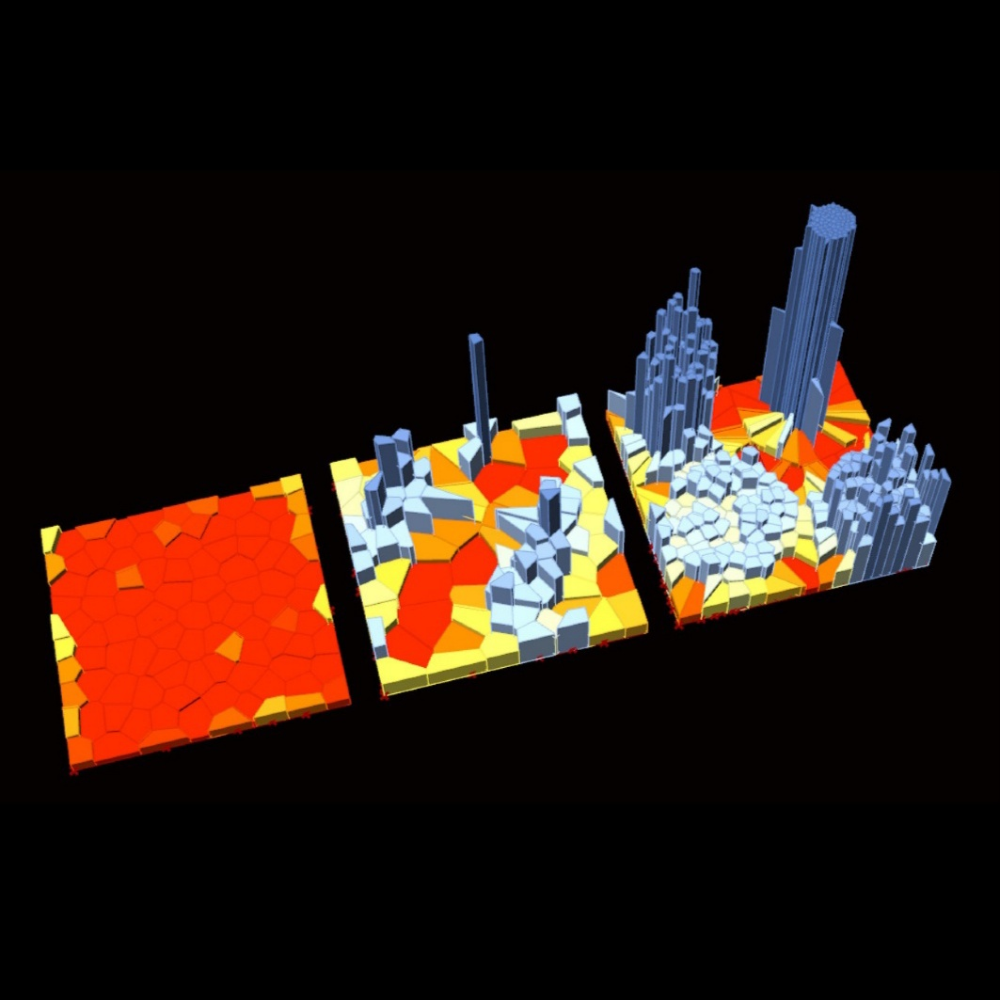</p>
<p>未完待续….</p>

          
        
      
    </div>
    
    
    

    

    

    

    <footer class="post-footer">
      

      

      

      
      
        <div class="post-eof"></div>
      
    </footer>
  </div>
  
  
  
  </article>


    
      

  

  
  
  

  <article class="post post-type-normal" itemscope itemtype="http://schema.org/Article">
  
  
  
  <div class="post-block">
    <link itemprop="mainEntityOfPage" href="http://JackArch.github.io/2019/04/22/190422_混淆矩阵/">

    <span hidden itemprop="author" itemscope itemtype="http://schema.org/Person">
      <meta itemprop="name" content="zhuangzhouzhishui">
      <meta itemprop="description" content>
      <meta itemprop="image" content="/images/avatar.gif">
    </span>

    <span hidden itemprop="publisher" itemscope itemtype="http://schema.org/Organization">
      <meta itemprop="name" content="Deep  |  Mind">
    </span>

    
      <header class="post-header">

        
        
          <h1 class="post-title" itemprop="name headline">
                
                <a class="post-title-link" href="/2019/04/22/190422_混淆矩阵/" itemprop="url">混淆矩阵</a></h1>
        

        <div class="post-meta">
          <span class="post-time">
            
              <span class="post-meta-item-icon">
                <i class="fa fa-calendar-o"></i>
              </span>
              
                <span class="post-meta-item-text">Posted on</span>
              
              <time title="Post created" itemprop="dateCreated datePublished" datetime="2019-04-22T15:38:29+08:00">
                2019-04-22
              </time>
            

            

            
          </span>

          

          
            
          

          
          

          

          

          

        </div>
      </header>
    

    
    
    
    <div class="post-body" itemprop="articleBody">

      
      

      
        
          
            <p>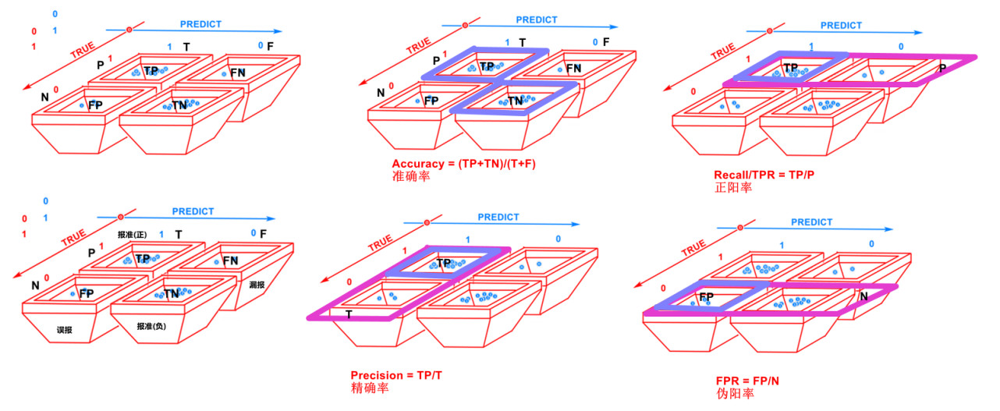</p>

          
        
      
    </div>
    
    
    

    

    

    

    <footer class="post-footer">
      

      

      

      
      
        <div class="post-eof"></div>
      
    </footer>
  </div>
  
  
  
  </article>


    
      

  

  
  
  

  <article class="post post-type-normal" itemscope itemtype="http://schema.org/Article">
  
  
  
  <div class="post-block">
    <link itemprop="mainEntityOfPage" href="http://JackArch.github.io/2019/03/25/190325_一图搞懂之神经矩阵/">

    <span hidden itemprop="author" itemscope itemtype="http://schema.org/Person">
      <meta itemprop="name" content="zhuangzhouzhishui">
      <meta itemprop="description" content>
      <meta itemprop="image" content="/images/avatar.gif">
    </span>

    <span hidden itemprop="publisher" itemscope itemtype="http://schema.org/Organization">
      <meta itemprop="name" content="Deep  |  Mind">
    </span>

    
      <header class="post-header">

        
        
          <h1 class="post-title" itemprop="name headline">
                
                <a class="post-title-link" href="/2019/03/25/190325_一图搞懂之神经矩阵/" itemprop="url">一图搞懂之神经矩阵</a></h1>
        

        <div class="post-meta">
          <span class="post-time">
            
              <span class="post-meta-item-icon">
                <i class="fa fa-calendar-o"></i>
              </span>
              
                <span class="post-meta-item-text">Posted on</span>
              
              <time title="Post created" itemprop="dateCreated datePublished" datetime="2019-03-25T13:57:43+08:00">
                2019-03-25
              </time>
            

            

            
          </span>

          

          
            
          

          
          

          

          

          

        </div>
      </header>
    

    
    
    
    <div class="post-body" itemprop="articleBody">

      
      

      
        
          
            <h3 id="对于Ubuntu环境下，Anaconda多jupyter的快捷启动参考："><a href="#对于Ubuntu环境下，Anaconda多jupyter的快捷启动参考：" class="headerlink" title="对于Ubuntu环境下，Anaconda多jupyter的快捷启动参考："></a>对于Ubuntu环境下，Anaconda多jupyter的快捷启动参考：</h3><h2 id="神经矩阵变化示意"><a href="#神经矩阵变化示意" class="headerlink" title="神经矩阵变化示意"></a>神经矩阵变化示意</h2><p>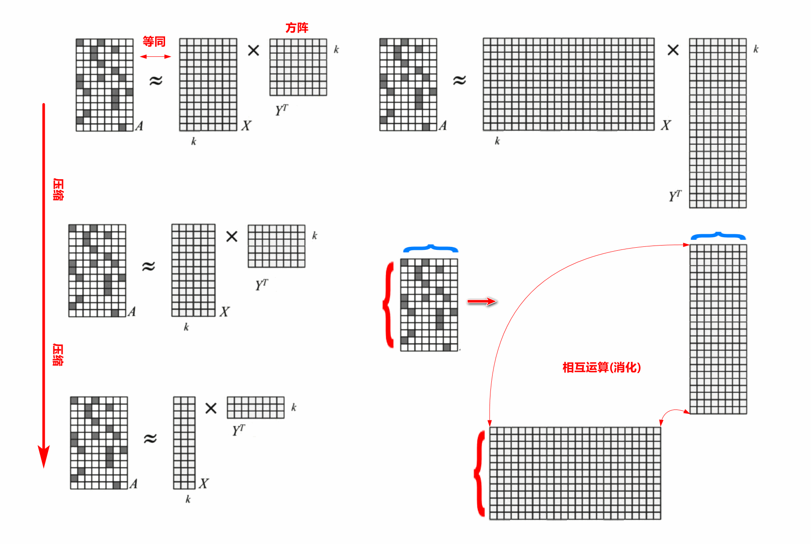</p>

          
        
      
    </div>
    
    
    

    

    

    

    <footer class="post-footer">
      

      

      

      
      
        <div class="post-eof"></div>
      
    </footer>
  </div>
  
  
  
  </article>


    
      

  

  
  
  

  <article class="post post-type-normal" itemscope itemtype="http://schema.org/Article">
  
  
  
  <div class="post-block">
    <link itemprop="mainEntityOfPage" href="http://JackArch.github.io/2019/03/20/190320_Ubuntu中anaconda下jupyter管理/">

    <span hidden itemprop="author" itemscope itemtype="http://schema.org/Person">
      <meta itemprop="name" content="zhuangzhouzhishui">
      <meta itemprop="description" content>
      <meta itemprop="image" content="/images/avatar.gif">
    </span>

    <span hidden itemprop="publisher" itemscope itemtype="http://schema.org/Organization">
      <meta itemprop="name" content="Deep  |  Mind">
    </span>

    
      <header class="post-header">

        
        
          <h1 class="post-title" itemprop="name headline">
                
                <a class="post-title-link" href="/2019/03/20/190320_Ubuntu中anaconda下jupyter管理/" itemprop="url">Ubuntu中anaconda下jupyter管理</a></h1>
        

        <div class="post-meta">
          <span class="post-time">
            
              <span class="post-meta-item-icon">
                <i class="fa fa-calendar-o"></i>
              </span>
              
                <span class="post-meta-item-text">Posted on</span>
              
              <time title="Post created" itemprop="dateCreated datePublished" datetime="2019-03-20T17:39:08+08:00">
                2019-03-20
              </time>
            

            

            
          </span>

          

          
            
          

          
          

          

          

          

        </div>
      </header>
    

    
    
    
    <div class="post-body" itemprop="articleBody">

      
      

      
        
          
            <h3 id="对于Ubuntu环境下，Anaconda多jupyter的快捷启动参考："><a href="#对于Ubuntu环境下，Anaconda多jupyter的快捷启动参考：" class="headerlink" title="对于Ubuntu环境下，Anaconda多jupyter的快捷启动参考："></a>对于Ubuntu环境下，Anaconda多jupyter的快捷启动参考：</h3><p>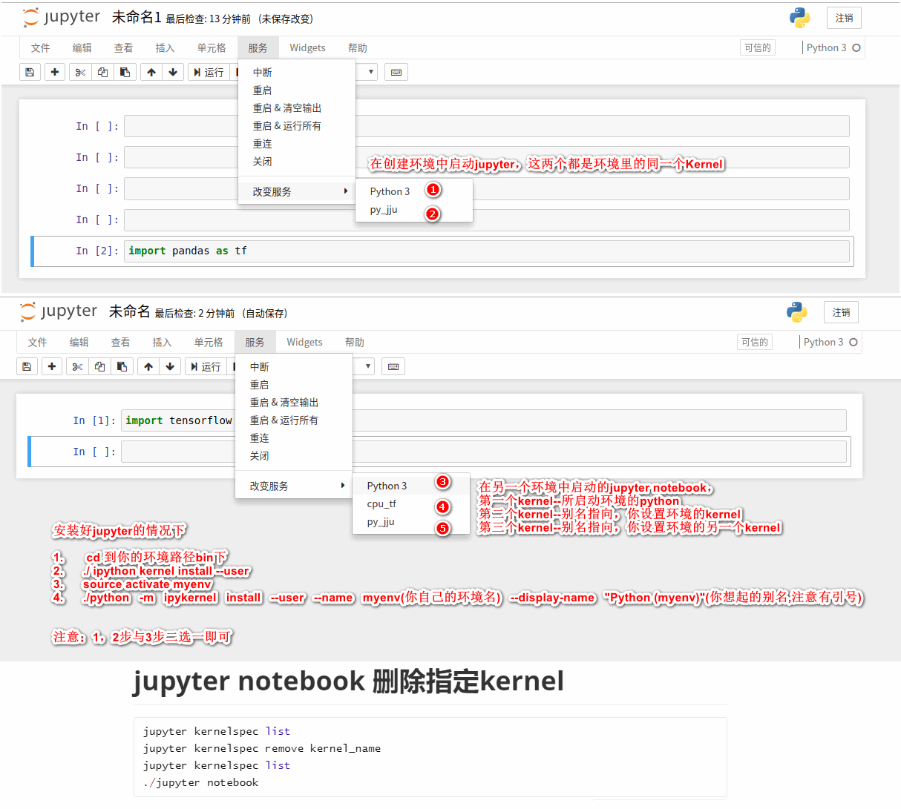</p>

          
        
      
    </div>
    
    
    

    

    

    

    <footer class="post-footer">
      

      

      

      
      
        <div class="post-eof"></div>
      
    </footer>
  </div>
  
  
  
  </article>


    
      

  

  
  
  

  <article class="post post-type-normal" itemscope itemtype="http://schema.org/Article">
  
  
  
  <div class="post-block">
    <link itemprop="mainEntityOfPage" href="http://JackArch.github.io/2019/03/09/190309_16个深度学习技巧实战/">

    <span hidden itemprop="author" itemscope itemtype="http://schema.org/Person">
      <meta itemprop="name" content="zhuangzhouzhishui">
      <meta itemprop="description" content>
      <meta itemprop="image" content="/images/avatar.gif">
    </span>

    <span hidden itemprop="publisher" itemscope itemtype="http://schema.org/Organization">
      <meta itemprop="name" content="Deep  |  Mind">
    </span>

    
      <header class="post-header">

        
        
          <h1 class="post-title" itemprop="name headline">
                
                <a class="post-title-link" href="/2019/03/09/190309_16个深度学习技巧实战/" itemprop="url">16个深度学习技巧实战</a></h1>
        

        <div class="post-meta">
          <span class="post-time">
            
              <span class="post-meta-item-icon">
                <i class="fa fa-calendar-o"></i>
              </span>
              
                <span class="post-meta-item-text">Posted on</span>
              
              <time title="Post created" itemprop="dateCreated datePublished" datetime="2019-03-09T11:20:33+08:00">
                2019-03-09
              </time>
            

            

            
          </span>

          

          
            
          

          
          

          

          

          

        </div>
      </header>
    

    
    
    
    <div class="post-body" itemprop="articleBody">

      
      

      
        
          
            <h2 id="16个深度学习技巧实战"><a href="#16个深度学习技巧实战" class="headerlink" title="16个深度学习技巧实战"></a>16个深度学习技巧实战</h2><p>下面是一些有助于充分利用 DNN 的小技巧：</p>
<p><strong>1. 记得要 shuffle。</strong> 不要让你的网络通过完全相同的 minibatch，如果框架允许，在每个 epoch 都 shuffle 一次。</p>
<p><strong>2. 扩展数据集。</strong> DNN 需要大量的数据，而且模型在小的数据集上很容易过拟合。Nikolas Markou强烈建议你要扩展原始的数据集。如果你的是一个视觉任务，可以增加噪点、增白，减少像素，旋转或色移，模糊，等等可以扩展的一切。有一点不好的是，假如你扩展得太大，可能训练的数据大多数是相同的。Nikolas Markou创建了一个应用随机变换的层来解决这个问题，这样就不会有相同的样本。若果你用的是语音数据，可以进行移位和失真处理。</p>
<p><strong>3. 在整个数据集上训练之前，先在非常小的子数据集上训练进行过拟合</strong> ，这样你会知道你的网络可以收敛。这个 tip 来自 Karpathy。</p>
<p><strong>4. 始终使用 dropout 将过拟合的几率最小化。</strong> 在大小 &gt; 256 （完全连接层或卷积层）之后就应该使用 dropout。关于这一点有一篇很好的论文：Dropout as a Bayesian Approximation: Representing Model Uncertainty in Deep Learning [Gal Yarin &amp; Zoubin Ghahramani，2015].</p>
<p><strong>5. 避免 LRN 池化，MAX 池化会更快。</strong></p>
<p><strong>6. 避免 Sigmoid/TanH 的门</strong> ，它们代价昂贵，容易饱和，而且可能会停止反向传播。实际上，你的网络越深，就越应该避免使用 Sigmoid 和 TanH。可以使用更便宜而且更有效的 ReLU 和 PreLU 的门，正如在 Yoshua Bengio 等人的论文 Deep Sparse Rectifier Neural Networks 中所提到的，这两者能够促进稀疏性，而且它们的反向传播更加鲁棒。</p>
<p><strong>7. 在最大池化之前不要使用 ReLU 或 PreLU ，而是在保存计算之后使用它。</strong></p>
<p><strong>8. 不要使用 ReLU</strong>  ，它们太旧了。虽然他们是非常有用的非线性函数，可以解决很多问题。但是，你可以试试用它微调一个新模型，由于 ReLU 阻碍反向传播，初始化不好，你没法得到任何微调效果。但是你应该用 PreLU 以及一个非常小的乘数，通常是0.1。使用 PreLU 的话收敛更快，而且不会像 ReLU 那样在初始阶段被卡住。ELU 也很好，但成本高。（实际中还是主要使用ReLU）</p>
<p><strong>9. 经常使用批标准化。</strong> 参考论文：Batch Normalization: Accelerating Deep Network Training by Reducing Internal Covariate Shift[Sergey Ioffe &amp; Christian Szegedy,2015]。这会很有效。批标准化允许更快的收敛（非常快）以及更小的数据集。这样你能够节省时间和资源。虽然大多数人喜欢删除平均值，不过Nikolas Markou不喜欢。Nikolas Markou喜欢压缩输入数据为[-1，+1]。这可以说是训练和部署方面的技巧，而不是针对提升性能的技巧。</p>
<p><strong>10. 要能适用更小的模型。</strong> 假如你是像Nikolas Markou这样部署深度学习模型，你很快就会体会到把千兆字节规模的模型推给用户或地球另一端的服务器的痛苦。哪怕要牺牲一些准确度，也应该小型化。</p>
<p><strong>11. 假如你使用比较小的模型，可以试试 ensemble。</strong> 通常 ensemble 5个网络能够提升准确度约3%。</p>
<p><strong>12. 尽可能使用 xavier 初始化。</strong> 你可以只在大的完全连接层上使用它，然后避免在 CNN 层上使用。有关这点的解释可以阅读这篇文章：An Explanation of Xavier Initialization（by Andy Jones）</p>
<p><strong>13. 如果你的输入数据有空间参数，可以试试端到端的 CNN。</strong> 可以阅读这篇论文：SqueezeNet: AlexNet-level accuracy with 50x fewer parameters and &lt;0.5MB model size[Forrest N. Iandola et. al. 2016]，它介绍了一种新的方法，而且性能非常好，你可以尝试应用上面提到的tips。修改你的模型，只要可能就使用 1x1 的 CNN 层，它的位置对提高性能很有帮助。</p>
<p><strong>14. 假如没有高端的 GPU，就不要尝试训练任何东西了。</strong></p>
<p><strong>15. 假如你要利用模型或你自己的层来制作模板，记得把所有东西参数化，</strong> 否则你得重建所有二进制文件。</p>
<p><strong>16. 最后，要明白你在做什么。</strong> 深度学习就像是机器学习里的中子弹，它不是任何任务、任何时候都有效的。了解你正在使用的结构以及你试图达成的目的，才不至于盲目地复制模型。</p>

          
        
      
    </div>
    
    
    

    

    

    

    <footer class="post-footer">
      

      

      

      
      
        <div class="post-eof"></div>
      
    </footer>
  </div>
  
  
  
  </article>


    
      

  

  
  
  

  <article class="post post-type-normal" itemscope itemtype="http://schema.org/Article">
  
  
  
  <div class="post-block">
    <link itemprop="mainEntityOfPage" href="http://JackArch.github.io/2019/02/14/190214_导入Keras、TensorFlow 时出现：Failed to load the native TensorFlow runtime/">

    <span hidden itemprop="author" itemscope itemtype="http://schema.org/Person">
      <meta itemprop="name" content="zhuangzhouzhishui">
      <meta itemprop="description" content>
      <meta itemprop="image" content="/images/avatar.gif">
    </span>

    <span hidden itemprop="publisher" itemscope itemtype="http://schema.org/Organization">
      <meta itemprop="name" content="Deep  |  Mind">
    </span>

    
      <header class="post-header">

        
        
          <h1 class="post-title" itemprop="name headline">
                
                <a class="post-title-link" href="/2019/02/14/190214_导入Keras、TensorFlow 时出现：Failed to load the native TensorFlow runtime/" itemprop="url">导入Keras、TensorFlow 时出现：Failed to load the native TensorFlow runtime</a></h1>
        

        <div class="post-meta">
          <span class="post-time">
            
              <span class="post-meta-item-icon">
                <i class="fa fa-calendar-o"></i>
              </span>
              
                <span class="post-meta-item-text">Posted on</span>
              
              <time title="Post created" itemprop="dateCreated datePublished" datetime="2019-02-14T14:03:46+08:00">
                2019-02-14
              </time>
            

            

            
          </span>

          

          
            
          

          
          

          

          

          

        </div>
      </header>
    

    
    
    
    <div class="post-body" itemprop="articleBody">

      
      

      
        
          
            <p><code>背景及环境介绍：重装了系统，发现使用TensorFlow时出现了Failed to load the native TensorFlow runtime.</code></p>
<p><code>目前环境：win10 、anaconda 、python3.6 、TensorFlow—CPU</code></p>
<p>经过一系列的摸索得出解决方案：</p>
<ul>
<li>1、先使用conda upgrade –all 升级所有的包</li>
<li>2、使用Python -m pip install –upgrade pip 或者conda upgrade pip升级pip工具</li>
<li>3、使用conda install tensorflow 安装（因为pip install TensorFlow安装成功，但是import一直会出现上述 问题，虽然TF不对conda上的TF进行维护，但是目前TF1.2版本的已经够用了）</li>
<li>4、完成上一步之后就有了TensorFlow的backend,在使用pip install keras 或者conda install keras均可</li>
</ul>
<p><code>上述问题解决</code></p>

          
        
      
    </div>
    
    
    

    

    

    

    <footer class="post-footer">
      

      

      

      
      
        <div class="post-eof"></div>
      
    </footer>
  </div>
  
  
  
  </article>


    
      

  

  
  
  

  <article class="post post-type-normal" itemscope itemtype="http://schema.org/Article">
  
  
  
  <div class="post-block">
    <link itemprop="mainEntityOfPage" href="http://JackArch.github.io/2019/01/20/190120_DeepMind/">

    <span hidden itemprop="author" itemscope itemtype="http://schema.org/Person">
      <meta itemprop="name" content="zhuangzhouzhishui">
      <meta itemprop="description" content>
      <meta itemprop="image" content="/images/avatar.gif">
    </span>

    <span hidden itemprop="publisher" itemscope itemtype="http://schema.org/Organization">
      <meta itemprop="name" content="Deep  |  Mind">
    </span>

    
      <header class="post-header">

        
        
          <h1 class="post-title" itemprop="name headline">
                
                <a class="post-title-link" href="/2019/01/20/190120_DeepMind/" itemprop="url">DeepMind</a></h1>
        

        <div class="post-meta">
          <span class="post-time">
            
              <span class="post-meta-item-icon">
                <i class="fa fa-calendar-o"></i>
              </span>
              
                <span class="post-meta-item-text">Posted on</span>
              
              <time title="Post created" itemprop="dateCreated datePublished" datetime="2019-01-20T23:17:09+08:00">
                2019-01-20
              </time>
            

            

            
          </span>

          

          
            
          

          
          

          

          

          

        </div>
      </header>
    

    
    
    
    <div class="post-body" itemprop="articleBody">

      
      

      
        
          
            <h3 id="DeepMind"><a href="#DeepMind" class="headerlink" title="DeepMind"></a>DeepMind</h3><p>Night deep</p>
<p>but still want to stay</p>
<p>Your mind is still awake.</p>
<p>when blows the wind</p>
<p>leafs Gone</p>
<p>whisper the shadows</p>
<p>flicker the reed</p>

          
        
      
    </div>
    
    
    

    

    

    

    <footer class="post-footer">
      

      

      

      
      
        <div class="post-eof"></div>
      
    </footer>
  </div>
  
  
  
  </article>


    
      

  

  
  
  

  <article class="post post-type-normal" itemscope itemtype="http://schema.org/Article">
  
  
  
  <div class="post-block">
    <link itemprop="mainEntityOfPage" href="http://JackArch.github.io/2019/01/18/190118_DimsRevolution/">

    <span hidden itemprop="author" itemscope itemtype="http://schema.org/Person">
      <meta itemprop="name" content="zhuangzhouzhishui">
      <meta itemprop="description" content>
      <meta itemprop="image" content="/images/avatar.gif">
    </span>

    <span hidden itemprop="publisher" itemscope itemtype="http://schema.org/Organization">
      <meta itemprop="name" content="Deep  |  Mind">
    </span>

    
      <header class="post-header">

        
        
          <h1 class="post-title" itemprop="name headline">
                
                <a class="post-title-link" href="/2019/01/18/190118_DimsRevolution/" itemprop="url">DimsRevolution</a></h1>
        

        <div class="post-meta">
          <span class="post-time">
            
              <span class="post-meta-item-icon">
                <i class="fa fa-calendar-o"></i>
              </span>
              
                <span class="post-meta-item-text">Posted on</span>
              
              <time title="Post created" itemprop="dateCreated datePublished" datetime="2019-01-18T22:03:46+08:00">
                2019-01-18
              </time>
            

            

            
          </span>

          

          
            
          

          
          

          

          

          

        </div>
      </header>
    

    
    
    
    <div class="post-body" itemprop="articleBody">

      
      

      
        
          
            <h4 id="纬度和质量长度一样，是一个衡量单位。"><a href="#纬度和质量长度一样，是一个衡量单位。" class="headerlink" title="纬度和质量长度一样，是一个衡量单位。"></a><strong>纬度和质量长度一样，是一个衡量单位。</strong></h4><p>我们习惯用眼见为实的直线性，一比一(有时甚至达不到一比一，比如说海市蜃楼，比如说清水玻璃杯中的筷子，比如说醉酒的迷离，甚至是心理上对自己抑或对对手的判断)来看待我们周围的世界。</p>
<p>世界是真实的存在，但是真的是你看到的样子么？即便是，你对世界外物的理解和你所期待的目标又在同一个模型空间么？相符还是相别？</p>
<p>我和你对面坐着，谁也不动，表面看起来我们的距离是固定的，但是在其他纬度下，我们的距离又是变化的，可能很近，也可能很远。</p>

          
        
      
    </div>
    
    
    

    

    

    

    <footer class="post-footer">
      

      

      

      
      
        <div class="post-eof"></div>
      
    </footer>
  </div>
  
  
  
  </article>


    
      

  

  
  
  

  <article class="post post-type-normal" itemscope itemtype="http://schema.org/Article">
  
  
  
  <div class="post-block">
    <link itemprop="mainEntityOfPage" href="http://JackArch.github.io/2018/12/17/181217_用pandas实现条目数据格式的推荐算法(基于物品的协同)/">

    <span hidden itemprop="author" itemscope itemtype="http://schema.org/Person">
      <meta itemprop="name" content="zhuangzhouzhishui">
      <meta itemprop="description" content>
      <meta itemprop="image" content="/images/avatar.gif">
    </span>

    <span hidden itemprop="publisher" itemscope itemtype="http://schema.org/Organization">
      <meta itemprop="name" content="Deep  |  Mind">
    </span>

    
      <header class="post-header">

        
        
          <h1 class="post-title" itemprop="name headline">
                
                <a class="post-title-link" href="/2018/12/17/181217_用pandas实现条目数据格式的推荐算法(基于物品的协同)/" itemprop="url">用pandas实现条目数据格式的推荐算法 (基于物品的协同)</a></h1>
        

        <div class="post-meta">
          <span class="post-time">
            
              <span class="post-meta-item-icon">
                <i class="fa fa-calendar-o"></i>
              </span>
              
                <span class="post-meta-item-text">Posted on</span>
              
              <time title="Post created" itemprop="dateCreated datePublished" datetime="2018-12-17T20:08:46+08:00">
                2018-12-17
              </time>
            

            

            
          </span>

          

          
            
          

          
          

          

          

          

        </div>
      </header>
    

    
    
    
    <div class="post-body" itemprop="articleBody">

      
      

      
        
          
            <figure class="highlight plain"><table><tr><td class="gutter"><pre><span class="line">1</span><br><span class="line">2</span><br><span class="line">3</span><br><span class="line">4</span><br><span class="line">5</span><br><span class="line">6</span><br><span class="line">7</span><br><span class="line">8</span><br><span class="line">9</span><br><span class="line">10</span><br><span class="line">11</span><br><span class="line">12</span><br><span class="line">13</span><br><span class="line">14</span><br><span class="line">15</span><br><span class="line">16</span><br><span class="line">17</span><br><span class="line">18</span><br><span class="line">19</span><br><span class="line">20</span><br><span class="line">21</span><br><span class="line">22</span><br><span class="line">23</span><br><span class="line">24</span><br><span class="line">25</span><br><span class="line">26</span><br><span class="line">27</span><br><span class="line">28</span><br><span class="line">29</span><br><span class="line">30</span><br><span class="line">31</span><br><span class="line">32</span><br><span class="line">33</span><br><span class="line">34</span><br><span class="line">35</span><br><span class="line">36</span><br><span class="line">37</span><br><span class="line">38</span><br><span class="line">39</span><br><span class="line">40</span><br><span class="line">41</span><br><span class="line">42</span><br><span class="line">43</span><br><span class="line">44</span><br><span class="line">45</span><br><span class="line">46</span><br><span class="line">47</span><br><span class="line">48</span><br><span class="line">49</span><br><span class="line">50</span><br><span class="line">51</span><br><span class="line">52</span><br><span class="line">53</span><br><span class="line">54</span><br><span class="line">55</span><br><span class="line">56</span><br><span class="line">57</span><br><span class="line">58</span><br><span class="line">59</span><br><span class="line">60</span><br><span class="line">61</span><br><span class="line">62</span><br><span class="line">63</span><br><span class="line">64</span><br><span class="line">65</span><br><span class="line">66</span><br><span class="line">67</span><br><span class="line">68</span><br><span class="line">69</span><br><span class="line">70</span><br><span class="line">71</span><br><span class="line">72</span><br><span class="line">73</span><br><span class="line">74</span><br><span class="line">75</span><br><span class="line">76</span><br><span class="line">77</span><br><span class="line">78</span><br><span class="line">79</span><br><span class="line">80</span><br><span class="line">81</span><br><span class="line">82</span><br><span class="line">83</span><br><span class="line">84</span><br><span class="line">85</span><br><span class="line">86</span><br><span class="line">87</span><br><span class="line">88</span><br><span class="line">89</span><br><span class="line">90</span><br><span class="line">91</span><br><span class="line">92</span><br><span class="line">93</span><br><span class="line">94</span><br><span class="line">95</span><br><span class="line">96</span><br><span class="line">97</span><br><span class="line">98</span><br><span class="line">99</span><br><span class="line">100</span><br><span class="line">101</span><br><span class="line">102</span><br><span class="line">103</span><br><span class="line">104</span><br><span class="line">105</span><br><span class="line">106</span><br><span class="line">107</span><br><span class="line">108</span><br><span class="line">109</span><br><span class="line">110</span><br><span class="line">111</span><br><span class="line">112</span><br><span class="line">113</span><br><span class="line">114</span><br><span class="line">115</span><br><span class="line">116</span><br><span class="line">117</span><br><span class="line">118</span><br><span class="line">119</span><br><span class="line">120</span><br><span class="line">121</span><br><span class="line">122</span><br><span class="line">123</span><br><span class="line">124</span><br><span class="line">125</span><br><span class="line">126</span><br><span class="line">127</span><br><span class="line">128</span><br><span class="line">129</span><br><span class="line">130</span><br><span class="line">131</span><br><span class="line">132</span><br><span class="line">133</span><br><span class="line">134</span><br><span class="line">135</span><br><span class="line">136</span><br><span class="line">137</span><br><span class="line">138</span><br><span class="line">139</span><br><span class="line">140</span><br><span class="line">141</span><br><span class="line">142</span><br><span class="line">143</span><br><span class="line">144</span><br><span class="line">145</span><br><span class="line">146</span><br><span class="line">147</span><br><span class="line">148</span><br><span class="line">149</span><br><span class="line">150</span><br><span class="line">151</span><br><span class="line">152</span><br><span class="line">153</span><br><span class="line">154</span><br><span class="line">155</span><br><span class="line">156</span><br><span class="line">157</span><br><span class="line">158</span><br><span class="line">159</span><br><span class="line">160</span><br><span class="line">161</span><br><span class="line">162</span><br><span class="line">163</span><br><span class="line">164</span><br><span class="line">165</span><br><span class="line">166</span><br><span class="line">167</span><br><span class="line">168</span><br><span class="line">169</span><br><span class="line">170</span><br><span class="line">171</span><br><span class="line">172</span><br><span class="line">173</span><br><span class="line">174</span><br><span class="line">175</span><br><span class="line">176</span><br><span class="line">177</span><br><span class="line">178</span><br><span class="line">179</span><br><span class="line">180</span><br><span class="line">181</span><br><span class="line">182</span><br><span class="line">183</span><br><span class="line">184</span><br><span class="line">185</span><br><span class="line">186</span><br><span class="line">187</span><br><span class="line">188</span><br><span class="line">189</span><br><span class="line">190</span><br><span class="line">191</span><br><span class="line">192</span><br><span class="line">193</span><br><span class="line">194</span><br><span class="line">195</span><br><span class="line">196</span><br><span class="line">197</span><br><span class="line">198</span><br><span class="line">199</span><br><span class="line">200</span><br><span class="line">201</span><br><span class="line">202</span><br><span class="line">203</span><br><span class="line">204</span><br><span class="line">205</span><br><span class="line">206</span><br><span class="line">207</span><br><span class="line">208</span><br><span class="line">209</span><br><span class="line">210</span><br><span class="line">211</span><br><span class="line">212</span><br><span class="line">213</span><br><span class="line">214</span><br><span class="line">215</span><br><span class="line">216</span><br><span class="line">217</span><br><span class="line">218</span><br><span class="line">219</span><br><span class="line">220</span><br><span class="line">221</span><br><span class="line">222</span><br><span class="line">223</span><br><span class="line">224</span><br><span class="line">225</span><br></pre></td><td class="code"><pre><span class="line">&apos;&apos;&apos;</span><br><span class="line">基于物品的协同推荐</span><br><span class="line"></span><br><span class="line">矩阵数据</span><br><span class="line"></span><br><span class="line">说明：</span><br><span class="line">1.修正的余弦相似度是一种基于模型的协同过滤算法。我们前面提过，这种算法的优势之</span><br><span class="line">一是扩展性好，对于大数据量而言，运算速度快、占用内存少。</span><br><span class="line"></span><br><span class="line">2.用户的评价标准是不同的，比如喜欢一个歌手时有些人会打4分，有些打5分；不喜欢时</span><br><span class="line">有人会打3分，有些则会只给1分。修正的余弦相似度计算时会将用户对物品的评分减去</span><br><span class="line">用户所有评分的均值，从而解决这个问题。</span><br><span class="line"></span><br><span class="line">如何预测用户对给定物品的打分？</span><br><span class="line">一、基于用户协同</span><br><span class="line">方法1：用户之间的距离/相似度（K近邻算法）</span><br><span class="line">二、基于物品协同</span><br><span class="line">方法1：物品之间的相似度（修正的余弦相似度）</span><br><span class="line">方法2：物品之间的差异值（加权Slope One算法）</span><br><span class="line"></span><br><span class="line">由于使用的是用户产生的各种数据，因此又称为社会化过滤算法。</span><br><span class="line"></span><br><span class="line">协同过滤会遇到的种种问题，包括数据的稀疏性和算法的可扩展性。此外，协同过滤算法倾向于推荐那些已经很流行的物品。</span><br><span class="line"></span><br><span class="line">这类推荐系统会让流行的物品更为流行，冷门的物品更无人问津。</span><br><span class="line">-- Daniel Fleder &amp; Kartik Hosanagar 2009 《 推荐系统对商品分类的影响》</span><br><span class="line">&apos;&apos;&apos;</span><br><span class="line"></span><br><span class="line">import pandas as pd</span><br><span class="line">from io import StringIO</span><br><span class="line"></span><br><span class="line">#数据类型一：条目（用户、商品、打分）（避免巨型稀疏矩阵）</span><br><span class="line">csv_txt = &apos;&apos;&apos;&quot;David&quot;,&quot;Imagine Dragons&quot;,3</span><br><span class="line">&quot;David&quot;,&quot;Daft Punk&quot;,5</span><br><span class="line">&quot;David&quot;,&quot;Lorde&quot;,4</span><br><span class="line">&quot;David&quot;,&quot;Fall Out Boy&quot;,1</span><br><span class="line">&quot;Matt&quot;,&quot;Imagine Dragons&quot;,3</span><br><span class="line">&quot;Matt&quot;,&quot;Daft Punk&quot;,4</span><br><span class="line">&quot;Matt&quot;,&quot;Lorde&quot;,4</span><br><span class="line">&quot;Matt&quot;,&quot;Fall Out Boy&quot;,1</span><br><span class="line">&quot;Ben&quot;,&quot;Kacey Musgraves&quot;,4</span><br><span class="line">&quot;Ben&quot;,&quot;Imagine Dragons&quot;,3</span><br><span class="line">&quot;Ben&quot;,&quot;Lorde&quot;,3</span><br><span class="line">&quot;Ben&quot;,&quot;Fall Out Boy&quot;,1</span><br><span class="line">&quot;Chris&quot;,&quot;Kacey Musgraves&quot;,4</span><br><span class="line">&quot;Chris&quot;,&quot;Imagine Dragons&quot;,4</span><br><span class="line">&quot;Chris&quot;,&quot;Daft Punk&quot;,4</span><br><span class="line">&quot;Chris&quot;,&quot;Lorde&quot;,3</span><br><span class="line">&quot;Chris&quot;,&quot;Fall Out Boy&quot;,1</span><br><span class="line">&quot;Tori&quot;,&quot;Kacey Musgraves&quot;,5</span><br><span class="line">&quot;Tori&quot;,&quot;Imagine Dragons&quot;,4</span><br><span class="line">&quot;Tori&quot;,&quot;Daft Punk&quot;,5</span><br><span class="line">&quot;Tori&quot;,&quot;Fall Out Boy&quot;,3&apos;&apos;&apos;</span><br><span class="line"></span><br><span class="line">#数据类型一：条目（用户、商品、打分）（避免巨型稀疏矩阵）</span><br><span class="line">#根据《data minning guide》第85页的users2数据</span><br><span class="line">csv_txt2 = &apos;&apos;&apos;&quot;Amy&quot;,&quot;Taylor Swift&quot;,4</span><br><span class="line">&quot;Amy&quot;,&quot;PSY&quot;,3</span><br><span class="line">&quot;Amy&quot;,&quot;Whitney Houston&quot;,4</span><br><span class="line">&quot;Ben&quot;,&quot;Taylor Swift&quot;,5</span><br><span class="line">&quot;Ben&quot;,&quot;PSY&quot;,2</span><br><span class="line">&quot;Clara&quot;,&quot;PSY&quot;,3.5</span><br><span class="line">&quot;Clara&quot;,&quot;Whitney Houston&quot;,4</span><br><span class="line">&quot;Daisy&quot;,&quot;Taylor Swift&quot;,5</span><br><span class="line">&quot;Daisy&quot;,&quot;Whitney Houston&quot;,3&apos;&apos;&apos;</span><br><span class="line"></span><br><span class="line">df = None</span><br><span class="line"></span><br><span class="line">#方式一：加载csv数据</span><br><span class="line">def load_csv_txt():</span><br><span class="line">    global df</span><br><span class="line">    #df = pd.read_csv(StringIO(csv_txt2), header=None, names=[&apos;user&apos;,&apos;goods&apos;,&apos;rate&apos;])</span><br><span class="line">    df = pd.read_csv(&quot;BX-Book-Ratings.csv&quot;, header=None, names=[&apos;user&apos;,&apos;goods&apos;,&apos;rate&apos;], sep=&apos;;&apos;)</span><br><span class="line">    </span><br><span class="line">    </span><br><span class="line">    </span><br><span class="line">print(&apos;测试：读取数据&apos;)</span><br><span class="line">load_csv_txt()</span><br><span class="line">#load_json_txt()</span><br><span class="line"></span><br><span class="line"></span><br><span class="line">#=======================================</span><br><span class="line"># 注意：不需要build_xy</span><br><span class="line">#=======================================</span><br><span class="line"></span><br><span class="line"># 计算两个物品相似度</span><br><span class="line">def computeSimilarity(goods1, goods2):</span><br><span class="line">    &apos;&apos;&apos;根据《data minning guide》第71页的公式s(i,j)&apos;&apos;&apos;</span><br><span class="line">    df1 = df.ix[df[&apos;goods&apos;].isin([goods1]), [&apos;user&apos;,&apos;rate&apos;]]</span><br><span class="line">    df2 = df.ix[df[&apos;goods&apos;].isin([goods2]), [&apos;user&apos;,&apos;rate&apos;]]</span><br><span class="line">    </span><br><span class="line">    df3 = pd.merge(df1, df2, on=&apos;user&apos;, how=&apos;inner&apos;) #只保留两种商品都被同一用户评过分的商品的评分</span><br><span class="line">    </span><br><span class="line">    # 注意：先构造了一个只有index=df3[&apos;user&apos;]的pd.Series，目的是方便下一步的减</span><br><span class="line">    mean = pd.Series(df3[&apos;user&apos;].tolist(), index=df3[&apos;user&apos;]).apply(lambda x:df.ix[df[&apos;user&apos;]==x, &apos;rate&apos;].mean())</span><br><span class="line">    </span><br><span class="line">    # 每行的用户评分都减去了该用户的平均评分</span><br><span class="line">    df3.index = df3[&apos;user&apos;]</span><br><span class="line">    df3[&apos;rate_x&apos;] = df3[&apos;rate_x&apos;] - mean</span><br><span class="line">    df3[&apos;rate_y&apos;] = df3[&apos;rate_y&apos;] - mean</span><br><span class="line">    </span><br><span class="line">    # 返回修正的余弦相似度</span><br><span class="line">    return sum(df3[&apos;rate_x&apos;] * df3[&apos;rate_y&apos;]) / (sum(df3[&apos;rate_x&apos;]**2) * sum(df3[&apos;rate_y&apos;]**2))**0.5 # merge之后默认的列名：rate_x，rate_y</span><br><span class="line">    </span><br><span class="line">    </span><br><span class="line"># csv_txt</span><br><span class="line">#print(&apos;\n测试：计算Kacey Musgraves与Imagine Dragons的相似度&apos;)</span><br><span class="line">#print(computeSimilarity(&quot;Kacey Musgraves&quot;,&quot;Imagine Dragons&quot;))</span><br><span class="line"></span><br><span class="line"></span><br><span class="line">#为了让公式的计算效果更佳，对物品的评价分值最好介于-1和1之间</span><br><span class="line">def rate2newrate(rate):</span><br><span class="line">    &apos;&apos;&apos;根据《data minning guide》第76页的公式NR(u,N)&apos;&apos;&apos;</span><br><span class="line">    ma, mi = df[&apos;rate&apos;].max(), df[&apos;rate&apos;].min()</span><br><span class="line">    return (2*(rate - mi) - (ma - mi))/(ma - mi)</span><br><span class="line">    </span><br><span class="line">    </span><br><span class="line">#已知rate2newrate求newrate2rate</span><br><span class="line">def newrate2rate(new_rate):</span><br><span class="line">    &apos;&apos;&apos;根据《data minning guide》第76页的公式R(u,N)&apos;&apos;&apos;</span><br><span class="line">    ma, mi = df[&apos;rate&apos;].max(), df[&apos;rate&apos;].min()</span><br><span class="line">    return (0.5 * (new_rate + 1) * (ma - mi)) + mi</span><br><span class="line">    </span><br><span class="line">#print(&apos;\n测试：计算3的new_rate值&apos;)</span><br><span class="line">#print(rate2newrate(3))</span><br><span class="line"></span><br><span class="line">#print(&apos;\n测试：计算0.5的rate值&apos;)</span><br><span class="line">#print(newrate2rate(0.5))</span><br><span class="line"></span><br><span class="line"></span><br><span class="line"></span><br><span class="line"># 预测给定用户对物品的可能评分(对评分进行了修正/还原)</span><br><span class="line">def p2(user, goods):</span><br><span class="line">    &apos;&apos;&apos;根据《data minning guide》第75页的公式p(u,i)&apos;&apos;&apos;</span><br><span class="line">    #assert pd.isnull(df.ix[df[&apos;user&apos;]==user &amp; df[&apos;goods&apos;]==goods, &apos;rate&apos;]) # 必须用户对给定物品尚未评分</span><br><span class="line">    </span><br><span class="line">    #用户对其它所有已打分物品的打分数据</span><br><span class="line">    df2 = df.ix[df[&apos;user&apos;]==user, [&apos;goods&apos;,&apos;rate&apos;]]</span><br><span class="line">    s1 = pd.Series(df2[&apos;rate&apos;].tolist(), index=df2[&apos;goods&apos;])</span><br><span class="line">    s1 = s1.apply(lambda x:rate2newrate(x)) #修正</span><br><span class="line">    s2 = s1.index.to_series().apply(lambda x:computeSimilarity(x, goods)) #打分物品分别与给定物品的相似度</span><br><span class="line">    </span><br><span class="line">    return newrate2rate(sum(s1 * s2) / sum(abs(s2)))#还原</span><br><span class="line"></span><br><span class="line"></span><br><span class="line"># csv_txt</span><br><span class="line">#print(&apos;\n测试：预测David对Kacey Musgraves的打分（修正）&apos;)</span><br><span class="line">#print(p2(&quot;David&quot;,&quot;Kacey Musgraves&quot;))</span><br><span class="line"></span><br><span class="line"></span><br><span class="line"></span><br><span class="line"></span><br><span class="line">#==================================</span><br><span class="line"># 下面是Slope One算法</span><br><span class="line">#</span><br><span class="line"># 两个步骤：</span><br><span class="line"># 1. 计算差值</span><br><span class="line"># 2. 预测用户对尚未评分物品的评分</span><br><span class="line">#==================================</span><br><span class="line"></span><br><span class="line"># 1.计算两物品之间的差异</span><br><span class="line">def dev(goods1, goods2):</span><br><span class="line">    &apos;&apos;&apos;根据《data minning guide》第80页的公式dev(i,j)&apos;&apos;&apos;</span><br><span class="line">    #s = (df[goods1] - df[goods2]).dropna()</span><br><span class="line">    </span><br><span class="line">    df1 = df.ix[df[&apos;goods&apos;].isin([goods1]), [&apos;user&apos;,&apos;rate&apos;]]</span><br><span class="line">    df2 = df.ix[df[&apos;goods&apos;].isin([goods2]), [&apos;user&apos;,&apos;rate&apos;]]</span><br><span class="line">    print(&apos;df1\n&apos;, df1)</span><br><span class="line">    print(&apos;df2\n&apos;, df2)</span><br><span class="line">    </span><br><span class="line">    df3 = pd.merge(df1, df2, on=&apos;user&apos;, how=&apos;inner&apos;) #只保留两个物品都有评分的用户的评分</span><br><span class="line">    print(df3)</span><br><span class="line">    print(df3.shape[0])</span><br><span class="line">    </span><br><span class="line">    d = sum(df3[&apos;rate_x&apos;] - df3[&apos;rate_y&apos;])/df3.shape[0] # 差异值</span><br><span class="line">    return d, df3.shape[0] #返回差异值，及权值（同时对两个物品打分的人数）</span><br><span class="line"></span><br><span class="line"># csv_txt</span><br><span class="line">#print(&apos;\n测试：计算Kacey Musgraves与Imagine Dragons的分数差异&apos;)</span><br><span class="line">#print(dev(&quot;Kacey Musgraves&quot;,&quot;Imagine Dragons&quot;))</span><br><span class="line"></span><br><span class="line"></span><br><span class="line">#计算所有两两物品之间的评分差异，得到方阵pd.DataFrame（行对列）</span><br><span class="line">def get_dev_table():</span><br><span class="line">    &apos;&apos;&apos;根据《data minning guide》第87页的表&apos;&apos;&apos;</span><br><span class="line">    #goods_names = df.columns.tolist()</span><br><span class="line">    goods_names = df[&apos;goods&apos;].unique().tolist()</span><br><span class="line">    df2 = pd.DataFrame(.0, index=goods_names, columns=goods_names) #零方阵</span><br><span class="line">    </span><br><span class="line">    for i,goods1 in enumerate(goods_names):</span><br><span class="line">        for goods2 in goods_names[i+1:]:</span><br><span class="line">            d, _ = dev(goods1, goods2) # 注意：只取了物品差异值</span><br><span class="line">            df2.ix[goods1, goods2] = d</span><br><span class="line">            df2.ix[goods2, goods1] = -d # 对称的位置取反</span><br><span class="line">    </span><br><span class="line">    return df2</span><br><span class="line">    </span><br><span class="line">    </span><br><span class="line">#print(&apos;\n测试：计算所有两两物品之间的评分差异表&apos;)</span><br><span class="line">#print(get_dev_table())</span><br><span class="line"></span><br><span class="line"></span><br><span class="line">#预测某用户对给定物品的评分</span><br><span class="line"># 加权Slope One算法</span><br><span class="line">def slopeone(user, goods):</span><br><span class="line">    &apos;&apos;&apos;根据《data minning guide》第82页的公式p(u,j)&apos;&apos;&apos;</span><br><span class="line">    df1 = df.ix[df[&apos;user&apos;].isin([user]), [&apos;goods&apos;, &apos;rate&apos;]]</span><br><span class="line">    </span><br><span class="line">    s1 = pd.Series(df1[&apos;rate&apos;].tolist(), index=df1[&apos;goods&apos;]) # 用户对已打分物品的打分数据</span><br><span class="line">    </span><br><span class="line">    s2 = s1.index.to_series().apply(lambda x:dev(goods, x)) # 待打分物品与已打分物品的差异值及权值</span><br><span class="line">    </span><br><span class="line">    s3 = s2.apply(lambda x:x[0]) #差异值</span><br><span class="line">    s4 = s2.apply(lambda x:x[1]) #权值</span><br><span class="line">    #print(s1, s3, s4)</span><br><span class="line">    </span><br><span class="line">    return sum((s1 + s3) * s4)/sum(s4)</span><br><span class="line">    </span><br><span class="line">    </span><br><span class="line">#print(&apos;\n测试：加权Slope One算法，预测用户Ben对物品Whitney Houston的评分&apos;)</span><br><span class="line">#print(slopeone(&apos;Ben&apos;, &apos;Whitney Houston&apos;)) # 3.375</span><br><span class="line"></span><br><span class="line"></span><br><span class="line">print(&apos;\n测试：加权Slope One算法，预测用户276744对书本0600570967的评分&apos;) #大数据量</span><br><span class="line">print(slopeone(276744, &apos;0600570967&apos;))</span><br></pre></td></tr></table></figure>
          
        
      
    </div>
    
    
    

    

    

    

    <footer class="post-footer">
      

      

      

      
      
        <div class="post-eof"></div>
      
    </footer>
  </div>
  
  
  
  </article>


    
      

  

  
  
  

  <article class="post post-type-normal" itemscope itemtype="http://schema.org/Article">
  
  
  
  <div class="post-block">
    <link itemprop="mainEntityOfPage" href="http://JackArch.github.io/2018/12/06/181206_用pandas实现矩阵数据格式的推荐算法(基于物品的协同)/">

    <span hidden itemprop="author" itemscope itemtype="http://schema.org/Person">
      <meta itemprop="name" content="zhuangzhouzhishui">
      <meta itemprop="description" content>
      <meta itemprop="image" content="/images/avatar.gif">
    </span>

    <span hidden itemprop="publisher" itemscope itemtype="http://schema.org/Organization">
      <meta itemprop="name" content="Deep  |  Mind">
    </span>

    
      <header class="post-header">

        
        
          <h1 class="post-title" itemprop="name headline">
                
                <a class="post-title-link" href="/2018/12/06/181206_用pandas实现矩阵数据格式的推荐算法(基于物品的协同)/" itemprop="url">用pandas实现矩阵数据格式的推荐算法 (基于物品的协同)</a></h1>
        

        <div class="post-meta">
          <span class="post-time">
            
              <span class="post-meta-item-icon">
                <i class="fa fa-calendar-o"></i>
              </span>
              
                <span class="post-meta-item-text">Posted on</span>
              
              <time title="Post created" itemprop="dateCreated datePublished" datetime="2018-12-06T14:29:17+08:00">
                2018-12-06
              </time>
            

            

            
          </span>

          

          
            
          

          
          

          

          

          

        </div>
      </header>
    

    
    
    
    <div class="post-body" itemprop="articleBody">

      
      

      
        
          
            <figure class="highlight plain"><table><tr><td class="gutter"><pre><span class="line">1</span><br><span class="line">2</span><br><span class="line">3</span><br><span class="line">4</span><br><span class="line">5</span><br><span class="line">6</span><br><span class="line">7</span><br><span class="line">8</span><br><span class="line">9</span><br><span class="line">10</span><br><span class="line">11</span><br><span class="line">12</span><br><span class="line">13</span><br><span class="line">14</span><br><span class="line">15</span><br><span class="line">16</span><br><span class="line">17</span><br><span class="line">18</span><br><span class="line">19</span><br><span class="line">20</span><br><span class="line">21</span><br><span class="line">22</span><br><span class="line">23</span><br><span class="line">24</span><br><span class="line">25</span><br><span class="line">26</span><br><span class="line">27</span><br><span class="line">28</span><br><span class="line">29</span><br><span class="line">30</span><br><span class="line">31</span><br><span class="line">32</span><br><span class="line">33</span><br><span class="line">34</span><br><span class="line">35</span><br><span class="line">36</span><br><span class="line">37</span><br><span class="line">38</span><br><span class="line">39</span><br><span class="line">40</span><br><span class="line">41</span><br><span class="line">42</span><br><span class="line">43</span><br><span class="line">44</span><br><span class="line">45</span><br><span class="line">46</span><br><span class="line">47</span><br><span class="line">48</span><br><span class="line">49</span><br><span class="line">50</span><br><span class="line">51</span><br><span class="line">52</span><br><span class="line">53</span><br><span class="line">54</span><br><span class="line">55</span><br><span class="line">56</span><br><span class="line">57</span><br><span class="line">58</span><br><span class="line">59</span><br><span class="line">60</span><br><span class="line">61</span><br><span class="line">62</span><br><span class="line">63</span><br><span class="line">64</span><br><span class="line">65</span><br><span class="line">66</span><br><span class="line">67</span><br><span class="line">68</span><br><span class="line">69</span><br><span class="line">70</span><br><span class="line">71</span><br><span class="line">72</span><br><span class="line">73</span><br><span class="line">74</span><br><span class="line">75</span><br><span class="line">76</span><br><span class="line">77</span><br><span class="line">78</span><br><span class="line">79</span><br><span class="line">80</span><br><span class="line">81</span><br><span class="line">82</span><br><span class="line">83</span><br><span class="line">84</span><br><span class="line">85</span><br><span class="line">86</span><br><span class="line">87</span><br><span class="line">88</span><br><span class="line">89</span><br><span class="line">90</span><br><span class="line">91</span><br><span class="line">92</span><br><span class="line">93</span><br><span class="line">94</span><br><span class="line">95</span><br><span class="line">96</span><br><span class="line">97</span><br><span class="line">98</span><br><span class="line">99</span><br><span class="line">100</span><br><span class="line">101</span><br><span class="line">102</span><br><span class="line">103</span><br><span class="line">104</span><br><span class="line">105</span><br><span class="line">106</span><br><span class="line">107</span><br><span class="line">108</span><br><span class="line">109</span><br><span class="line">110</span><br><span class="line">111</span><br><span class="line">112</span><br><span class="line">113</span><br><span class="line">114</span><br><span class="line">115</span><br><span class="line">116</span><br><span class="line">117</span><br><span class="line">118</span><br><span class="line">119</span><br><span class="line">120</span><br><span class="line">121</span><br><span class="line">122</span><br><span class="line">123</span><br><span class="line">124</span><br><span class="line">125</span><br><span class="line">126</span><br><span class="line">127</span><br><span class="line">128</span><br><span class="line">129</span><br><span class="line">130</span><br><span class="line">131</span><br><span class="line">132</span><br><span class="line">133</span><br><span class="line">134</span><br><span class="line">135</span><br><span class="line">136</span><br><span class="line">137</span><br><span class="line">138</span><br><span class="line">139</span><br><span class="line">140</span><br><span class="line">141</span><br><span class="line">142</span><br><span class="line">143</span><br><span class="line">144</span><br><span class="line">145</span><br><span class="line">146</span><br><span class="line">147</span><br><span class="line">148</span><br><span class="line">149</span><br><span class="line">150</span><br><span class="line">151</span><br><span class="line">152</span><br><span class="line">153</span><br><span class="line">154</span><br><span class="line">155</span><br><span class="line">156</span><br><span class="line">157</span><br><span class="line">158</span><br><span class="line">159</span><br><span class="line">160</span><br><span class="line">161</span><br><span class="line">162</span><br><span class="line">163</span><br><span class="line">164</span><br><span class="line">165</span><br><span class="line">166</span><br><span class="line">167</span><br><span class="line">168</span><br><span class="line">169</span><br><span class="line">170</span><br><span class="line">171</span><br><span class="line">172</span><br><span class="line">173</span><br><span class="line">174</span><br><span class="line">175</span><br><span class="line">176</span><br><span class="line">177</span><br><span class="line">178</span><br><span class="line">179</span><br><span class="line">180</span><br><span class="line">181</span><br><span class="line">182</span><br><span class="line">183</span><br><span class="line">184</span><br><span class="line">185</span><br><span class="line">186</span><br><span class="line">187</span><br><span class="line">188</span><br></pre></td><td class="code"><pre><span class="line">&apos;&apos;&apos;</span><br><span class="line">基于物品的协同推荐</span><br><span class="line"></span><br><span class="line">矩阵数据</span><br><span class="line"></span><br><span class="line"></span><br><span class="line">说明：</span><br><span class="line">1.修正的余弦相似度是一种基于模型的协同过滤算法。我们前面提过，这种算法的优势之</span><br><span class="line">一是扩展性好，对于大数据量而言，运算速度快、占用内存少。</span><br><span class="line"></span><br><span class="line">2.用户的评价标准是不同的，比如喜欢一个歌手时有些人会打4分，有些打5分；不喜欢时</span><br><span class="line">有人会打3分，有些则会只给1分。修正的余弦相似度计算时会将用户对物品的评分减去</span><br><span class="line">用户所有评分的均值，从而解决这个问题。</span><br><span class="line">&apos;&apos;&apos;</span><br><span class="line"></span><br><span class="line">import pandas as pd</span><br><span class="line">from io import StringIO</span><br><span class="line"></span><br><span class="line"></span><br><span class="line">#数据类型一：csv矩阵（用户-商品）（适用于小数据量）</span><br><span class="line">csv_txt = &apos;&apos;&apos;&quot;user&quot;,&quot;Blues Traveler&quot;,&quot;Broken Bells&quot;,&quot;Deadmau5&quot;,&quot;Norah Jones&quot;,&quot;Phoenix&quot;,&quot;Slightly Stoopid&quot;,&quot;The Strokes&quot;,&quot;Vampire Weekend&quot;</span><br><span class="line">&quot;Angelica&quot;,3.5,2.0,,4.5,5.0,1.5,2.5,2.0</span><br><span class="line">&quot;Bill&quot;,2.0,3.5,4.0,,2.0,3.5,,3.0</span><br><span class="line">&quot;Chan&quot;,5.0,1.0,1.0,3.0,5,1.0,,</span><br><span class="line">&quot;Dan&quot;,3.0,4.0,4.5,,3.0,4.5,4.0,2.0</span><br><span class="line">&quot;Hailey&quot;,,4.0,1.0,4.0,,,4.0,1.0</span><br><span class="line">&quot;Jordyn&quot;,,4.5,4.0,5.0,5.0,4.5,4.0,4.0</span><br><span class="line">&quot;Sam&quot;,5.0,2.0,,3.0,5.0,4.0,5.0,</span><br><span class="line">&quot;Veronica&quot;,3.0,,,5.0,4.0,2.5,3.0,&apos;&apos;&apos;</span><br><span class="line"></span><br><span class="line">#数据类型一：csv矩阵（用户-商品）（适用于小数据量）</span><br><span class="line">csv_txt2 = &apos;&apos;&apos;&quot;user&quot;,&quot;Kacey Musgraves&quot;,&quot;Imagine Dragons&quot;,&quot;Daft Punk&quot;,&quot;Lorde&quot;,&quot;Fall Out Boy&quot;</span><br><span class="line">&quot;David&quot;,,3,5,4,1</span><br><span class="line">&quot;Matt&quot;,,3,4,4,1</span><br><span class="line">&quot;Ben&quot;,4,3,,3,1</span><br><span class="line">&quot;Chris&quot;,4,4,4,3,1</span><br><span class="line">&quot;Tori&quot;,5,4,5,,3&apos;&apos;&apos;</span><br><span class="line"></span><br><span class="line">#数据类型一：csv矩阵（用户-商品）（适用于小数据量）</span><br><span class="line">#根据《data minning guide》第85页的users2数据</span><br><span class="line">csv_txt3 = &apos;&apos;&apos;&quot;user&quot;,&quot;Taylor Swift&quot;,&quot;PSY&quot;,&quot;Whitney Houston&quot;</span><br><span class="line">&quot;Amy&quot;,4,3,4</span><br><span class="line">&quot;Ben&quot;,5,2,</span><br><span class="line">&quot;Clara&quot;,,3.5,4</span><br><span class="line">&quot;Daisy&quot;,5,,3&apos;&apos;&apos;</span><br><span class="line"></span><br><span class="line">df = None</span><br><span class="line"></span><br><span class="line">#方式一：加载csv数据</span><br><span class="line">def load_csv_txt():</span><br><span class="line">    global df, csv_txt, csv_txt2, csv_txt3</span><br><span class="line">    df = pd.read_csv(StringIO(csv_txt3), header=0, index_col=&quot;user&quot;)</span><br><span class="line">    </span><br><span class="line">    </span><br><span class="line">#测试：读取数据</span><br><span class="line">load_csv_txt()</span><br><span class="line"></span><br><span class="line">#=======================================</span><br><span class="line"># 注意：不需要build_xy</span><br><span class="line">#=======================================</span><br><span class="line"></span><br><span class="line"># 计算两个物品相似度</span><br><span class="line">def computeSimilarity(goods1, goods2):</span><br><span class="line">    &apos;&apos;&apos;根据《data minning guide》第71页的公式s(i,j)&apos;&apos;&apos;</span><br><span class="line">    # 每行的用户评分都减去了该用户的平均评分</span><br><span class="line">    df2 = df[[goods1, goods2]].sub(df.mean(axis=1), axis=0).dropna(axis=0) #黑科技</span><br><span class="line">    </span><br><span class="line">    # 返回修正的余弦相似度</span><br><span class="line">    return sum(df2[goods1] * df2[goods2]) / (sum(df2[goods1]**2) * sum(df2[goods2]**2))**0.5</span><br><span class="line"></span><br><span class="line"># csv_txt</span><br><span class="line">#print(&apos;\n测试：计算Blues Traveler与Broken Bells的相似度&apos;)</span><br><span class="line">#print(computeSimilarity(&quot;Blues Traveler&quot;,&quot;Broken Bells&quot;))</span><br><span class="line"></span><br><span class="line"># csv_txt2</span><br><span class="line">#print(&apos;\n测试：计算Kacey Musgraves与Imagine Dragons的相似度&apos;)</span><br><span class="line">#print(computeSimilarity(&quot;Kacey Musgraves&quot;,&quot;Imagine Dragons&quot;))</span><br><span class="line"></span><br><span class="line"></span><br><span class="line"></span><br><span class="line"># 计算给定用户对物品的可能评分</span><br><span class="line">def p(user, goods):</span><br><span class="line">    &apos;&apos;&apos;根据《data minning guide》第75页的公式p(u,i)&apos;&apos;&apos;</span><br><span class="line">    assert pd.isnull(df.ix[user, goods]) # 必须用户对给定物品尚未评分</span><br><span class="line">    </span><br><span class="line">    s1 = df.ix[user, df.ix[user].notnull()] #用户对已打分物品的打分数据</span><br><span class="line">    </span><br><span class="line">    s2 = s1.index.to_series().apply(lambda x:computeSimilarity(x, goods)) #打分物品分别与给定物品的相似度</span><br><span class="line">    </span><br><span class="line">    return sum(s1 * s2) / sum(abs(s2))</span><br><span class="line"></span><br><span class="line"># csv_txt2    </span><br><span class="line">#print(&apos;\n测试：计算David对Kacey Musgraves的可能打分&apos;)</span><br><span class="line">#print(p(&quot;David&quot;,&quot;Kacey Musgraves&quot;))</span><br><span class="line"></span><br><span class="line"></span><br><span class="line">#为了让公式的计算效果更佳，对物品的评价分值最好介于-1和1之间</span><br><span class="line">def rate2newrate(rate):</span><br><span class="line">    &apos;&apos;&apos;根据《data minning guide》第76页的公式NR(u,N)&apos;&apos;&apos;</span><br><span class="line">    ma, mi = df.max().max(), df.min().min()</span><br><span class="line">    return (2*(rate - mi) - (ma - mi))/(ma - mi)</span><br><span class="line">    </span><br><span class="line">    </span><br><span class="line">#已知rate2newrate求newrate2rate</span><br><span class="line">def newrate2rate(new_rate):</span><br><span class="line">    &apos;&apos;&apos;根据《data minning guide》第76页的公式R(u,N)&apos;&apos;&apos;</span><br><span class="line">    ma, mi = df.max().max(), df.min().min()</span><br><span class="line">    return (0.5 * (new_rate + 1) * (ma - mi)) + mi</span><br><span class="line">    </span><br><span class="line">print(&apos;\n测试：计算3的new_rate值&apos;)</span><br><span class="line">print(rate2newrate(3))</span><br><span class="line"></span><br><span class="line">print(&apos;\n测试：计算0.5的rate值&apos;)</span><br><span class="line">print(newrate2rate(0.5))</span><br><span class="line"></span><br><span class="line"></span><br><span class="line"></span><br><span class="line"># 计算给定用户对物品的可能评分(对评分进行了修正/还原)</span><br><span class="line">def p2(user, goods):</span><br><span class="line">    &apos;&apos;&apos;根据《data minning guide》第75页的公式p(u,i)&apos;&apos;&apos;</span><br><span class="line">    assert pd.isnull(df.ix[user, goods]) # 必须用户对给定物品尚未评分</span><br><span class="line">    </span><br><span class="line">    s1 = df.ix[user, df.ix[user].notnull()] #用户对已打分物品的打分数据</span><br><span class="line">    s1 = s1.apply(lambda x:rate2newrate(x)) #修正</span><br><span class="line">    s2 = s1.index.to_series().apply(lambda x:computeSimilarity(x, goods)) #已打分物品分别与给定物品的相似度</span><br><span class="line">    </span><br><span class="line">    return newrate2rate(sum(s1 * s2) / sum(abs(s2)))#还原</span><br><span class="line"></span><br><span class="line"># csv_txt2</span><br><span class="line">#print(&apos;\n测试：计算David对Kacey Musgraves的可能打分（修正）&apos;)</span><br><span class="line">#print(p2(&quot;David&quot;,&quot;Kacey Musgraves&quot;))</span><br><span class="line"></span><br><span class="line"></span><br><span class="line">#==================================</span><br><span class="line"># 下面是Slope One算法</span><br><span class="line">#</span><br><span class="line"># 两个步骤：</span><br><span class="line"># 1. 计算差值</span><br><span class="line"># 2. 预测用户对尚未评分物品的评分</span><br><span class="line">#==================================</span><br><span class="line"></span><br><span class="line"># 1.计算两物品之间的差异</span><br><span class="line">def dev(goods1, goods2):</span><br><span class="line">    &apos;&apos;&apos;根据《data minning guide》第80页的公式dev(i,j)&apos;&apos;&apos;</span><br><span class="line">    s = (df[goods1] - df[goods2]).dropna()</span><br><span class="line">    d = sum(s) / s.size</span><br><span class="line">    return d, s.size #返回差异值，及权值（同时对两个物品打分的人数）</span><br><span class="line"></span><br><span class="line"># csv_txt2</span><br><span class="line">#print(&apos;\n测试：计算Kacey Musgraves与Imagine Dragons的分数差异&apos;)</span><br><span class="line">#print(dev(&quot;Kacey Musgraves&quot;,&quot;Imagine Dragons&quot;))</span><br><span class="line"></span><br><span class="line"></span><br><span class="line">#计算所有两两物品之间的评分差异，得到方阵pd.DataFrame（行对列）</span><br><span class="line">def get_dev_table():</span><br><span class="line">    &apos;&apos;&apos;根据《data minning guide》第87页的表&apos;&apos;&apos;</span><br><span class="line">    goods_names = df.columns.tolist()</span><br><span class="line">    df2 = pd.DataFrame(.0, index=goods_names, columns=goods_names) #零方阵</span><br><span class="line">    </span><br><span class="line">    for i,goods1 in enumerate(goods_names):</span><br><span class="line">        for goods2 in goods_names[i+1:]:</span><br><span class="line">            d, _ = dev(goods1, goods2) # 注意：只取了物品差异值</span><br><span class="line">            df2.ix[goods1, goods2] = d</span><br><span class="line">            df2.ix[goods2, goods1] = -d # 对称的位置取反</span><br><span class="line">    </span><br><span class="line">    return df2</span><br><span class="line">    </span><br><span class="line">    </span><br><span class="line">print(&apos;\n测试：计算所有两两物品之间的评分差异表&apos;)</span><br><span class="line">print(get_dev_table())</span><br><span class="line"></span><br><span class="line"></span><br><span class="line">#预测某用户对给定物品的评分</span><br><span class="line"># 加权Slope One算法</span><br><span class="line">def slopeone(user, goods):</span><br><span class="line">    &apos;&apos;&apos;根据《data minning guide》第82页的公式p(u,j)&apos;&apos;&apos;</span><br><span class="line">    s1 = df.ix[user].dropna() #用户对已打分物品的打分数据</span><br><span class="line">    </span><br><span class="line">    s2 = s1.index.to_series().apply(lambda x:dev(goods, x)) #待打分物品与已打分物品的差异值及权值</span><br><span class="line">    s3 = s2.apply(lambda x:x[0]) #差异值</span><br><span class="line">    s4 = s2.apply(lambda x:x[1]) #权值</span><br><span class="line">    #print(s1, s3, s4)</span><br><span class="line">    </span><br><span class="line">    return sum((s1 + s3) * s4)/sum(s4)</span><br><span class="line">    </span><br><span class="line">    </span><br><span class="line">print(&apos;\n测试：预测用户Ben对物品Whitney Houston的评分&apos;)</span><br><span class="line">print(slopeone(&apos;Ben&apos;, &apos;Whitney Houston&apos;)) # 3.375</span><br></pre></td></tr></table></figure>
          
        
      
    </div>
    
    
    

    

    

    

    <footer class="post-footer">
      

      

      

      
      
        <div class="post-eof"></div>
      
    </footer>
  </div>
  
  
  
  </article>


    
      

  

  
  
  

  <article class="post post-type-normal" itemscope itemtype="http://schema.org/Article">
  
  
  
  <div class="post-block">
    <link itemprop="mainEntityOfPage" href="http://JackArch.github.io/2018/11/25/181125_用pandas实现条目数据格式的推荐算法(基于用户的协同)/">

    <span hidden itemprop="author" itemscope itemtype="http://schema.org/Person">
      <meta itemprop="name" content="zhuangzhouzhishui">
      <meta itemprop="description" content>
      <meta itemprop="image" content="/images/avatar.gif">
    </span>

    <span hidden itemprop="publisher" itemscope itemtype="http://schema.org/Organization">
      <meta itemprop="name" content="Deep  |  Mind">
    </span>

    
      <header class="post-header">

        
        
          <h1 class="post-title" itemprop="name headline">
                
                <a class="post-title-link" href="/2018/11/25/181125_用pandas实现条目数据格式的推荐算法(基于用户的协同)/" itemprop="url">用pandas实现条目数据格式的推荐算法 (基于用户的协同)</a></h1>
        

        <div class="post-meta">
          <span class="post-time">
            
              <span class="post-meta-item-icon">
                <i class="fa fa-calendar-o"></i>
              </span>
              
                <span class="post-meta-item-text">Posted on</span>
              
              <time title="Post created" itemprop="dateCreated datePublished" datetime="2018-11-25T17:12:40+08:00">
                2018-11-25
              </time>
            

            

            
          </span>

          

          
            
          

          
          

          

          

          

        </div>
      </header>
    

    
    
    
    <div class="post-body" itemprop="articleBody">

      
      

      
        
          
            <figure class="highlight plain"><table><tr><td class="gutter"><pre><span class="line">1</span><br><span class="line">2</span><br><span class="line">3</span><br><span class="line">4</span><br><span class="line">5</span><br><span class="line">6</span><br><span class="line">7</span><br><span class="line">8</span><br><span class="line">9</span><br><span class="line">10</span><br><span class="line">11</span><br><span class="line">12</span><br><span class="line">13</span><br><span class="line">14</span><br><span class="line">15</span><br><span class="line">16</span><br><span class="line">17</span><br><span class="line">18</span><br><span class="line">19</span><br><span class="line">20</span><br><span class="line">21</span><br><span class="line">22</span><br><span class="line">23</span><br><span class="line">24</span><br><span class="line">25</span><br><span class="line">26</span><br><span class="line">27</span><br><span class="line">28</span><br><span class="line">29</span><br><span class="line">30</span><br><span class="line">31</span><br><span class="line">32</span><br><span class="line">33</span><br><span class="line">34</span><br><span class="line">35</span><br><span class="line">36</span><br><span class="line">37</span><br><span class="line">38</span><br><span class="line">39</span><br><span class="line">40</span><br><span class="line">41</span><br><span class="line">42</span><br><span class="line">43</span><br><span class="line">44</span><br><span class="line">45</span><br><span class="line">46</span><br><span class="line">47</span><br><span class="line">48</span><br><span class="line">49</span><br><span class="line">50</span><br><span class="line">51</span><br><span class="line">52</span><br><span class="line">53</span><br><span class="line">54</span><br><span class="line">55</span><br><span class="line">56</span><br><span class="line">57</span><br><span class="line">58</span><br><span class="line">59</span><br><span class="line">60</span><br><span class="line">61</span><br><span class="line">62</span><br><span class="line">63</span><br><span class="line">64</span><br><span class="line">65</span><br><span class="line">66</span><br><span class="line">67</span><br><span class="line">68</span><br><span class="line">69</span><br><span class="line">70</span><br><span class="line">71</span><br><span class="line">72</span><br><span class="line">73</span><br><span class="line">74</span><br><span class="line">75</span><br><span class="line">76</span><br><span class="line">77</span><br><span class="line">78</span><br><span class="line">79</span><br><span class="line">80</span><br><span class="line">81</span><br><span class="line">82</span><br><span class="line">83</span><br><span class="line">84</span><br><span class="line">85</span><br><span class="line">86</span><br><span class="line">87</span><br><span class="line">88</span><br><span class="line">89</span><br><span class="line">90</span><br><span class="line">91</span><br><span class="line">92</span><br><span class="line">93</span><br><span class="line">94</span><br><span class="line">95</span><br><span class="line">96</span><br><span class="line">97</span><br><span class="line">98</span><br><span class="line">99</span><br><span class="line">100</span><br><span class="line">101</span><br><span class="line">102</span><br><span class="line">103</span><br><span class="line">104</span><br><span class="line">105</span><br><span class="line">106</span><br><span class="line">107</span><br><span class="line">108</span><br><span class="line">109</span><br><span class="line">110</span><br><span class="line">111</span><br><span class="line">112</span><br><span class="line">113</span><br><span class="line">114</span><br><span class="line">115</span><br><span class="line">116</span><br><span class="line">117</span><br><span class="line">118</span><br><span class="line">119</span><br><span class="line">120</span><br><span class="line">121</span><br><span class="line">122</span><br><span class="line">123</span><br><span class="line">124</span><br><span class="line">125</span><br><span class="line">126</span><br><span class="line">127</span><br><span class="line">128</span><br><span class="line">129</span><br><span class="line">130</span><br><span class="line">131</span><br><span class="line">132</span><br><span class="line">133</span><br><span class="line">134</span><br><span class="line">135</span><br><span class="line">136</span><br><span class="line">137</span><br><span class="line">138</span><br><span class="line">139</span><br><span class="line">140</span><br><span class="line">141</span><br><span class="line">142</span><br><span class="line">143</span><br><span class="line">144</span><br><span class="line">145</span><br><span class="line">146</span><br><span class="line">147</span><br><span class="line">148</span><br><span class="line">149</span><br><span class="line">150</span><br><span class="line">151</span><br><span class="line">152</span><br><span class="line">153</span><br><span class="line">154</span><br><span class="line">155</span><br><span class="line">156</span><br><span class="line">157</span><br><span class="line">158</span><br><span class="line">159</span><br><span class="line">160</span><br><span class="line">161</span><br><span class="line">162</span><br><span class="line">163</span><br><span class="line">164</span><br><span class="line">165</span><br><span class="line">166</span><br><span class="line">167</span><br><span class="line">168</span><br><span class="line">169</span><br><span class="line">170</span><br><span class="line">171</span><br><span class="line">172</span><br><span class="line">173</span><br><span class="line">174</span><br><span class="line">175</span><br><span class="line">176</span><br><span class="line">177</span><br><span class="line">178</span><br><span class="line">179</span><br><span class="line">180</span><br><span class="line">181</span><br><span class="line">182</span><br><span class="line">183</span><br><span class="line">184</span><br><span class="line">185</span><br><span class="line">186</span><br><span class="line">187</span><br><span class="line">188</span><br><span class="line">189</span><br><span class="line">190</span><br><span class="line">191</span><br><span class="line">192</span><br><span class="line">193</span><br><span class="line">194</span><br><span class="line">195</span><br><span class="line">196</span><br><span class="line">197</span><br><span class="line">198</span><br><span class="line">199</span><br><span class="line">200</span><br><span class="line">201</span><br><span class="line">202</span><br><span class="line">203</span><br><span class="line">204</span><br><span class="line">205</span><br><span class="line">206</span><br><span class="line">207</span><br><span class="line">208</span><br><span class="line">209</span><br><span class="line">210</span><br><span class="line">211</span><br><span class="line">212</span><br><span class="line">213</span><br><span class="line">214</span><br><span class="line">215</span><br><span class="line">216</span><br><span class="line">217</span><br><span class="line">218</span><br><span class="line">219</span><br><span class="line">220</span><br><span class="line">221</span><br><span class="line">222</span><br><span class="line">223</span><br><span class="line">224</span><br><span class="line">225</span><br><span class="line">226</span><br><span class="line">227</span><br><span class="line">228</span><br><span class="line">229</span><br><span class="line">230</span><br><span class="line">231</span><br><span class="line">232</span><br><span class="line">233</span><br><span class="line">234</span><br><span class="line">235</span><br><span class="line">236</span><br><span class="line">237</span><br><span class="line">238</span><br><span class="line">239</span><br><span class="line">240</span><br><span class="line">241</span><br><span class="line">242</span><br><span class="line">243</span><br><span class="line">244</span><br><span class="line">245</span><br><span class="line">246</span><br><span class="line">247</span><br><span class="line">248</span><br><span class="line">249</span><br><span class="line">250</span><br><span class="line">251</span><br><span class="line">252</span><br><span class="line">253</span><br><span class="line">254</span><br><span class="line">255</span><br><span class="line">256</span><br><span class="line">257</span><br><span class="line">258</span><br><span class="line">259</span><br><span class="line">260</span><br><span class="line">261</span><br><span class="line">262</span><br><span class="line">263</span><br><span class="line">264</span><br><span class="line">265</span><br><span class="line">266</span><br><span class="line">267</span><br><span class="line">268</span><br></pre></td><td class="code"><pre><span class="line">&apos;&apos;&apos;</span><br><span class="line">基于用户的协同推荐</span><br><span class="line"></span><br><span class="line">条目数据</span><br><span class="line">&apos;&apos;&apos;</span><br><span class="line"></span><br><span class="line">import pandas as pd</span><br><span class="line">from io import StringIO</span><br><span class="line">import json</span><br><span class="line"></span><br><span class="line">#数据类型一：条目（用户、商品、打分）（避免巨型稀疏矩阵）</span><br><span class="line">csv_txt = &apos;&apos;&apos;&quot;Angelica&quot;,&quot;Blues Traveler&quot;,3.5</span><br><span class="line">&quot;Angelica&quot;,&quot;Broken Bells&quot;,2.0</span><br><span class="line">&quot;Angelica&quot;,&quot;Norah Jones&quot;,4.5</span><br><span class="line">&quot;Angelica&quot;,&quot;Phoenix&quot;,5.0</span><br><span class="line">&quot;Angelica&quot;,&quot;Slightly Stoopid&quot;,1.5</span><br><span class="line">&quot;Angelica&quot;,&quot;The Strokes&quot;,2.5</span><br><span class="line">&quot;Angelica&quot;,&quot;Vampire Weekend&quot;,2.0</span><br><span class="line">&quot;Bill&quot;,&quot;Blues Traveler&quot;,2.0</span><br><span class="line">&quot;Bill&quot;,&quot;Broken Bells&quot;,3.5</span><br><span class="line">&quot;Bill&quot;,&quot;Deadmau5&quot;,4.0</span><br><span class="line">&quot;Bill&quot;,&quot;Phoenix&quot;,2.0</span><br><span class="line">&quot;Bill&quot;,&quot;Slightly Stoopid&quot;,3.5</span><br><span class="line">&quot;Bill&quot;,&quot;Vampire Weekend&quot;,3.0</span><br><span class="line">&quot;Chan&quot;,&quot;Blues Traveler&quot;,5.0</span><br><span class="line">&quot;Chan&quot;,&quot;Broken Bells&quot;,1.0</span><br><span class="line">&quot;Chan&quot;,&quot;Deadmau5&quot;,1.0</span><br><span class="line">&quot;Chan&quot;,&quot;Norah Jones&quot;,3.0</span><br><span class="line">&quot;Chan&quot;,&quot;Phoenix&quot;,5,</span><br><span class="line">&quot;Chan&quot;,&quot;Slightly Stoopid&quot;,1.0</span><br><span class="line">&quot;Dan&quot;,&quot;Blues Traveler&quot;,3.0</span><br><span class="line">&quot;Dan&quot;,&quot;Broken Bells&quot;,4.0</span><br><span class="line">&quot;Dan&quot;,&quot;Deadmau5&quot;,4.5</span><br><span class="line">&quot;Dan&quot;,&quot;Phoenix&quot;,3.0</span><br><span class="line">&quot;Dan&quot;,&quot;Slightly Stoopid&quot;,4.5</span><br><span class="line">&quot;Dan&quot;,&quot;The Strokes&quot;,4.0</span><br><span class="line">&quot;Dan&quot;,&quot;Vampire Weekend&quot;,2.0</span><br><span class="line">&quot;Hailey&quot;,&quot;Broken Bells&quot;,4.0</span><br><span class="line">&quot;Hailey&quot;,&quot;Deadmau5&quot;,1.0</span><br><span class="line">&quot;Hailey&quot;,&quot;Norah Jones&quot;,4.0</span><br><span class="line">&quot;Hailey&quot;,&quot;The Strokes&quot;,4.0</span><br><span class="line">&quot;Hailey&quot;,&quot;Vampire Weekend&quot;,1.0</span><br><span class="line">&quot;Jordyn&quot;,&quot;Broken Bells&quot;,4.5</span><br><span class="line">&quot;Jordyn&quot;,&quot;Deadmau5&quot;,4.0</span><br><span class="line">&quot;Jordyn&quot;,&quot;Norah Jones&quot;,5.0</span><br><span class="line">&quot;Jordyn&quot;,&quot;Phoenix&quot;,5.0</span><br><span class="line">&quot;Jordyn&quot;,&quot;Slightly Stoopid&quot;,4.5</span><br><span class="line">&quot;Jordyn&quot;,&quot;The Strokes&quot;,4.0</span><br><span class="line">&quot;Jordyn&quot;,&quot;Vampire Weekend&quot;,4.0</span><br><span class="line">&quot;Sam&quot;,&quot;Blues Traveler&quot;,5.0</span><br><span class="line">&quot;Sam&quot;,&quot;Broken Bells&quot;,2.0</span><br><span class="line">&quot;Sam&quot;,&quot;Norah Jones&quot;,3.0</span><br><span class="line">&quot;Sam&quot;,&quot;Phoenix&quot;,5.0</span><br><span class="line">&quot;Sam&quot;,&quot;Slightly Stoopid&quot;,4.0</span><br><span class="line">&quot;Sam&quot;,&quot;The Strokes&quot;,5.0</span><br><span class="line">&quot;Veronica&quot;,&quot;Blues Traveler&quot;,3.0</span><br><span class="line">&quot;Veronica&quot;,&quot;Norah Jones&quot;,5.0</span><br><span class="line">&quot;Veronica&quot;,&quot;Phoenix&quot;,4.0</span><br><span class="line">&quot;Veronica&quot;,&quot;Slightly Stoopid&quot;,2.5</span><br><span class="line">&quot;Veronica&quot;,&quot;The Strokes&quot;,3.0&apos;&apos;&apos;</span><br><span class="line"></span><br><span class="line">#数据类型二：json数据（用户、商品、打分）</span><br><span class="line">json_txt = &apos;&apos;&apos;&#123;&quot;Angelica&quot;: &#123;&quot;Blues Traveler&quot;: 3.5, &quot;Broken Bells&quot;: 2.0,</span><br><span class="line">                      &quot;Norah Jones&quot;: 4.5, &quot;Phoenix&quot;: 5.0,</span><br><span class="line">                      &quot;Slightly Stoopid&quot;: 1.5,</span><br><span class="line">                      &quot;The Strokes&quot;: 2.5, &quot;Vampire Weekend&quot;: 2.0&#125;,</span><br><span class="line">         </span><br><span class="line">         &quot;Bill&quot;:&#123;&quot;Blues Traveler&quot;: 2.0, &quot;Broken Bells&quot;: 3.5,</span><br><span class="line">                 &quot;Deadmau5&quot;: 4.0, &quot;Phoenix&quot;: 2.0,</span><br><span class="line">                 &quot;Slightly Stoopid&quot;: 3.5, &quot;Vampire Weekend&quot;: 3.0&#125;,</span><br><span class="line">         </span><br><span class="line">         &quot;Chan&quot;: &#123;&quot;Blues Traveler&quot;: 5.0, &quot;Broken Bells&quot;: 1.0,</span><br><span class="line">                  &quot;Deadmau5&quot;: 1.0, &quot;Norah Jones&quot;: 3.0, &quot;Phoenix&quot;: 5,</span><br><span class="line">                  &quot;Slightly Stoopid&quot;: 1.0&#125;,</span><br><span class="line">         </span><br><span class="line">         &quot;Dan&quot;: &#123;&quot;Blues Traveler&quot;: 3.0, &quot;Broken Bells&quot;: 4.0,</span><br><span class="line">                 &quot;Deadmau5&quot;: 4.5, &quot;Phoenix&quot;: 3.0,</span><br><span class="line">                 &quot;Slightly Stoopid&quot;: 4.5, &quot;The Strokes&quot;: 4.0,</span><br><span class="line">                 &quot;Vampire Weekend&quot;: 2.0&#125;,</span><br><span class="line">         </span><br><span class="line">         &quot;Hailey&quot;: &#123;&quot;Broken Bells&quot;: 4.0, &quot;Deadmau5&quot;: 1.0,</span><br><span class="line">                    &quot;Norah Jones&quot;: 4.0, &quot;The Strokes&quot;: 4.0,</span><br><span class="line">                    &quot;Vampire Weekend&quot;: 1.0&#125;,</span><br><span class="line">         </span><br><span class="line">         &quot;Jordyn&quot;:  &#123;&quot;Broken Bells&quot;: 4.5, &quot;Deadmau5&quot;: 4.0,</span><br><span class="line">                     &quot;Norah Jones&quot;: 5.0, &quot;Phoenix&quot;: 5.0,</span><br><span class="line">                     &quot;Slightly Stoopid&quot;: 4.5, &quot;The Strokes&quot;: 4.0,</span><br><span class="line">                     &quot;Vampire Weekend&quot;: 4.0&#125;,</span><br><span class="line">         </span><br><span class="line">         &quot;Sam&quot;: &#123;&quot;Blues Traveler&quot;: 5.0, &quot;Broken Bells&quot;: 2.0,</span><br><span class="line">                 &quot;Norah Jones&quot;: 3.0, &quot;Phoenix&quot;: 5.0,</span><br><span class="line">                 &quot;Slightly Stoopid&quot;: 4.0, &quot;The Strokes&quot;: 5.0&#125;,</span><br><span class="line">         </span><br><span class="line">         &quot;Veronica&quot;: &#123;&quot;Blues Traveler&quot;: 3.0, &quot;Norah Jones&quot;: 5.0,</span><br><span class="line">                      &quot;Phoenix&quot;: 4.0, &quot;Slightly Stoopid&quot;: 2.5,</span><br><span class="line">                      &quot;The Strokes&quot;: 3.0&#125;</span><br><span class="line">&#125;&apos;&apos;&apos;</span><br><span class="line"></span><br><span class="line"></span><br><span class="line">df = None</span><br><span class="line"></span><br><span class="line">#方式一：加载csv数据</span><br><span class="line">def load_csv_txt():</span><br><span class="line">    global df</span><br><span class="line">    df = pd.read_csv(StringIO(csv_txt), header=None, names=[&apos;user&apos;,&apos;goods&apos;,&apos;rate&apos;])</span><br><span class="line"></span><br><span class="line">#方式二：加载json数据(把json读成条目)</span><br><span class="line">def load_json_txt():</span><br><span class="line">    global df</span><br><span class="line">    #由json数据得到字典</span><br><span class="line">    users = json.loads(json_txt)</span><br><span class="line">    </span><br><span class="line">    #遍历字典，得到条目</span><br><span class="line">    csv_txt_ = &apos;&apos;</span><br><span class="line">    for user in users:</span><br><span class="line">        for goods in users[user]:</span><br><span class="line">            csv_txt_ += &apos;&#123;&#125;,&#123;&#125;,&#123;&#125;\n&apos;.format(user, goods, users[user][goods])</span><br><span class="line">    </span><br><span class="line">    df = pd.read_csv(StringIO(csv_txt_), header=None, names=[&apos;user&apos;,&apos;goods&apos;,&apos;rate&apos;])</span><br><span class="line"></span><br><span class="line"></span><br><span class="line">print(&apos;测试：读取数据&apos;)</span><br><span class="line">#load_csv_txt()</span><br><span class="line">load_json_txt()</span><br><span class="line"></span><br><span class="line"></span><br><span class="line"></span><br><span class="line">def build_xy(user_name1, user_name2):</span><br><span class="line">    df1 = df.ix[df[&apos;user&apos;] == user_name1, [&apos;goods&apos;,&apos;rate&apos;]]</span><br><span class="line">    df2 = df.ix[df[&apos;user&apos;] == user_name2, [&apos;goods&apos;,&apos;rate&apos;]]</span><br><span class="line">    </span><br><span class="line">    df3 = pd.merge(df1, df2, on=&apos;goods&apos;, how=&apos;inner&apos;) #只保留两人都有评分的商品的评分</span><br><span class="line">    </span><br><span class="line">    return df3[&apos;rate_x&apos;], df3[&apos;rate_y&apos;] #merge之后默认的列名：rate_x，rate_y</span><br><span class="line">    </span><br><span class="line"></span><br><span class="line"></span><br><span class="line"></span><br><span class="line">#曼哈顿距离</span><br><span class="line">def manhattan(user_name1, user_name2):</span><br><span class="line">    x, y = build_xy(user_name1, user_name2)</span><br><span class="line">    return sum(abs(x - y))</span><br><span class="line">    </span><br><span class="line">#欧几里德距离</span><br><span class="line">def euclidean(user_name1, user_name2):</span><br><span class="line">    x, y = build_xy(user_name1, user_name2)</span><br><span class="line">    return sum((x - y)**2)**0.5</span><br><span class="line">    </span><br><span class="line">#闵可夫斯基距离</span><br><span class="line">def minkowski(user_name1, user_name2, r):</span><br><span class="line">    x, y = build_xy(user_name1, user_name2)</span><br><span class="line">    return sum(abs(x - y)**r)**(1/r)</span><br><span class="line">    </span><br><span class="line">#皮尔逊相关系数</span><br><span class="line">def pearson(user_name1, user_name2):</span><br><span class="line">    x, y = build_xy(user_name1, user_name2)</span><br><span class="line">    mean1, mean2 = x.mean(), y.mean()</span><br><span class="line">    #分母</span><br><span class="line">    denominator = (sum((x-mean1)**2)*sum((y-mean2)**2))**0.5</span><br><span class="line">    return [sum((x-mean1)*(y-mean2))/denominator, 0][denominator == 0]</span><br><span class="line"></span><br><span class="line">#余弦相似度（数据的稀疏性问题，在文本挖掘中应用得较多）</span><br><span class="line">def cosine(user_name1, user_name2):</span><br><span class="line">    x, y = build_xy(user_name1, user_name2)</span><br><span class="line">    #分母</span><br><span class="line">    denominator = (sum(x*x)*sum(y*y))**0.5</span><br><span class="line">    return [sum(x*y)/denominator, 0][denominator == 0]</span><br><span class="line">    </span><br><span class="line">metric_funcs = &#123;</span><br><span class="line">    &apos;manhattan&apos;: manhattan,</span><br><span class="line">    &apos;euclidean&apos;: euclidean,</span><br><span class="line">    &apos;minkowski&apos;: minkowski,</span><br><span class="line">    &apos;pearson&apos;: pearson,</span><br><span class="line">    &apos;cosine&apos;: cosine</span><br><span class="line">&#125;</span><br><span class="line"></span><br><span class="line"></span><br><span class="line">print(&apos;\n测试：计算Angelica与Bill的曼哈顿距离&apos;)</span><br><span class="line">print(manhattan(&apos;Angelica&apos;,&apos;Bill&apos;))</span><br><span class="line"></span><br><span class="line"></span><br><span class="line">#计算最近的邻居（返回：pd.Series）</span><br><span class="line">def computeNearestNeighbor(user_name, metric=&apos;pearson&apos;, k=3, r=2):</span><br><span class="line">    &apos;&apos;&apos;</span><br><span class="line">    metric: 度量函数</span><br><span class="line">    k:      返回k个邻居</span><br><span class="line">    r:      闵可夫斯基距离专用</span><br><span class="line">    </span><br><span class="line">    返回：pd.Series，其中index是邻居名称，values是距离</span><br><span class="line">    &apos;&apos;&apos;</span><br><span class="line">    array = df[df[&apos;user&apos;] != user_name][&apos;user&apos;].unique()</span><br><span class="line">    if metric in [&apos;manhattan&apos;, &apos;euclidean&apos;]:</span><br><span class="line">        return pd.Series(array, index=array.tolist()).apply(metric_funcs[metric], args=(user_name,)).nsmallest(k)</span><br><span class="line">    elif metric in [&apos;minkowski&apos;]:</span><br><span class="line">        return pd.Series(array, index=array.tolist()).apply(metric_funcs[metric], args=(user_name, r,)).nsmallest(k)</span><br><span class="line">    elif metric in [&apos;pearson&apos;, &apos;cosine&apos;]:</span><br><span class="line">        return pd.Series(array, index=array.tolist()).apply(metric_funcs[metric], args=(user_name,)).nlargest(k)</span><br><span class="line">    </span><br><span class="line">    </span><br><span class="line">print(&apos;\n测试：计算Hailey的最近邻居&apos;)</span><br><span class="line">print(computeNearestNeighbor(&apos;Hailey&apos;))</span><br><span class="line"></span><br><span class="line"></span><br><span class="line">#向给定用户推荐（返回：pd.DataFrame）</span><br><span class="line">def recommend(user_name):</span><br><span class="line">    &quot;&quot;&quot;返回推荐结果列表&quot;&quot;&quot;</span><br><span class="line">    # 找到距离最近的用户名</span><br><span class="line">    nearest_username = computeNearestNeighbor(user_name).index[0]</span><br><span class="line">    </span><br><span class="line">    # 找出这位用户评价过、但自己未曾评价的乐队</span><br><span class="line">    df1 = df.ix[df[&apos;user&apos;] == user_name, [&apos;goods&apos;, &apos;rate&apos;]]</span><br><span class="line">    df2 = df.ix[df[&apos;user&apos;] == nearest_username, [&apos;goods&apos;, &apos;rate&apos;]]</span><br><span class="line">    </span><br><span class="line">    df3 = pd.merge(df1, df2, on=&apos;goods&apos;, how=&apos;outer&apos;)</span><br><span class="line">    </span><br><span class="line">    return df3.ix[(df3[&apos;rate_x&apos;].isnull()) &amp; (df3[&apos;rate_y&apos;].notnull()), [&apos;goods&apos;, &apos;rate_y&apos;]].sort_values(by=&apos;rate_y&apos;)</span><br><span class="line"></span><br><span class="line">    </span><br><span class="line">print(&apos;\n测试：为Hailey做推荐&apos;)</span><br><span class="line">print(recommend(&apos;Hailey&apos;))</span><br><span class="line"></span><br><span class="line"></span><br><span class="line">#向给定用户推荐（返回：pd.Series）</span><br><span class="line">def recommend2(user_name, metric=&apos;pearson&apos;, k=3, n=5, r=2):</span><br><span class="line">    &apos;&apos;&apos;</span><br><span class="line">    metric: 度量函数</span><br><span class="line">    k:      根据k个最近邻居，协同推荐</span><br><span class="line">    r:      闵可夫斯基距离专用</span><br><span class="line">    n:      推荐的商品数目</span><br><span class="line">    </span><br><span class="line">    返回：pd.Series，其中index是商品名称，values是加权评分</span><br><span class="line">    &apos;&apos;&apos;</span><br><span class="line">    # 找到距离最近的k个邻居</span><br><span class="line">    nearest_neighbors = computeNearestNeighbor(user_name, metric=&apos;pearson&apos;, k=k, r=r)</span><br><span class="line">    </span><br><span class="line">    # 计算权值</span><br><span class="line">    if metric in [&apos;manhattan&apos;, &apos;euclidean&apos;, &apos;minkowski&apos;]: # 距离越小，越类似</span><br><span class="line">        nearest_neighbors = 1 / nearest_neighbors # 所以，取倒数（或者别的减函数，如：y=2**-x）</span><br><span class="line">    elif metric in [&apos;pearson&apos;, &apos;cosine&apos;]:                 # 距离越大，越类似</span><br><span class="line">        pass</span><br><span class="line">        </span><br><span class="line">    nearest_neighbors = nearest_neighbors / nearest_neighbors.sum() #已经变为权值</span><br><span class="line">    </span><br><span class="line">    # 逐个邻居找出其评价过、但自己未曾评价的乐队（或商品）的评分，并乘以权值</span><br><span class="line">    neighbors_rate_with_weight = []</span><br><span class="line">    for neighbor_name in nearest_neighbors.index:</span><br><span class="line">        # 每个结果：pd.Series，其中index是商品名称，values是评分（已乘权值）</span><br><span class="line">        df1 = df.ix[df[&apos;user&apos;] == user_name, [&apos;goods&apos;, &apos;rate&apos;]]</span><br><span class="line">        df2 = df.ix[df[&apos;user&apos;] == neighbor_name, [&apos;goods&apos;, &apos;rate&apos;]]</span><br><span class="line">        </span><br><span class="line">        df3 = pd.merge(df1, df2, on=&apos;goods&apos;, how=&apos;outer&apos;)</span><br><span class="line">        </span><br><span class="line">        df4 =  df3.ix[(df3[&apos;rate_x&apos;].isnull()) &amp; (df3[&apos;rate_y&apos;].notnull()), [&apos;goods&apos;, &apos;rate_y&apos;]]</span><br><span class="line">        </span><br><span class="line">        #注意这中间有一个转化为pd.Series的操作！</span><br><span class="line">        neighbors_rate_with_weight.append(pd.Series(df4[&apos;rate_y&apos;].tolist(), index=df4[&apos;goods&apos;]) * nearest_neighbors[neighbor_name])</span><br><span class="line"></span><br><span class="line">    # 把邻居们的加权评分拼接成pd.DataFrame，按列累加，取最大的前n个商品的评分</span><br><span class="line">    return pd.concat(neighbors_rate_with_weight, axis=1).sum(axis=1, skipna=True).nlargest(n) # 黑科技！</span><br><span class="line">    </span><br><span class="line">print(&apos;\n测试：为Hailey做推荐&apos;)</span><br><span class="line">print(recommend2(&apos;Hailey&apos;, metric=&apos;manhattan&apos;, k=3, n=5))</span><br><span class="line"></span><br><span class="line">print(&apos;\n测试：为Hailey做推荐&apos;)</span><br><span class="line">print(recommend2(&apos;Hailey&apos;, metric=&apos;euclidean&apos;, k=3, n=5, r=2))</span><br><span class="line"></span><br><span class="line">print(&apos;\n测试：为Hailey做推荐&apos;)</span><br><span class="line">print(recommend2(&apos;Hailey&apos;, metric=&apos;pearson&apos;, k=1, n=5))</span><br></pre></td></tr></table></figure>
          
        
      
    </div>
    
    
    

    

    

    

    <footer class="post-footer">
      

      

      

      
      
        <div class="post-eof"></div>
      
    </footer>
  </div>
  
  
  
  </article>


    
      

  

  
  
  

  <article class="post post-type-normal" itemscope itemtype="http://schema.org/Article">
  
  
  
  <div class="post-block">
    <link itemprop="mainEntityOfPage" href="http://JackArch.github.io/2018/11/13/181113_用pandas实现矩阵数据格式的推荐算法(基于用户的协同)/">

    <span hidden itemprop="author" itemscope itemtype="http://schema.org/Person">
      <meta itemprop="name" content="zhuangzhouzhishui">
      <meta itemprop="description" content>
      <meta itemprop="image" content="/images/avatar.gif">
    </span>

    <span hidden itemprop="publisher" itemscope itemtype="http://schema.org/Organization">
      <meta itemprop="name" content="Deep  |  Mind">
    </span>

    
      <header class="post-header">

        
        
          <h1 class="post-title" itemprop="name headline">
                
                <a class="post-title-link" href="/2018/11/13/181113_用pandas实现矩阵数据格式的推荐算法(基于用户的协同)/" itemprop="url">用pandas实现矩阵数据格式的推荐算法 (基于用户的协同)</a></h1>
        

        <div class="post-meta">
          <span class="post-time">
            
              <span class="post-meta-item-icon">
                <i class="fa fa-calendar-o"></i>
              </span>
              
                <span class="post-meta-item-text">Posted on</span>
              
              <time title="Post created" itemprop="dateCreated datePublished" datetime="2018-11-13T10:48:12+08:00">
                2018-11-13
              </time>
            

            

            
          </span>

          

          
            
          

          
          

          

          

          

        </div>
      </header>
    

    
    
    
    <div class="post-body" itemprop="articleBody">

      
      

      
        
          
            <figure class="highlight plain"><table><tr><td class="gutter"><pre><span class="line">1</span><br><span class="line">2</span><br><span class="line">3</span><br><span class="line">4</span><br><span class="line">5</span><br><span class="line">6</span><br><span class="line">7</span><br><span class="line">8</span><br><span class="line">9</span><br><span class="line">10</span><br><span class="line">11</span><br><span class="line">12</span><br><span class="line">13</span><br><span class="line">14</span><br><span class="line">15</span><br><span class="line">16</span><br><span class="line">17</span><br><span class="line">18</span><br><span class="line">19</span><br><span class="line">20</span><br><span class="line">21</span><br><span class="line">22</span><br><span class="line">23</span><br><span class="line">24</span><br><span class="line">25</span><br><span class="line">26</span><br><span class="line">27</span><br><span class="line">28</span><br><span class="line">29</span><br><span class="line">30</span><br><span class="line">31</span><br><span class="line">32</span><br><span class="line">33</span><br><span class="line">34</span><br><span class="line">35</span><br><span class="line">36</span><br><span class="line">37</span><br><span class="line">38</span><br><span class="line">39</span><br><span class="line">40</span><br><span class="line">41</span><br><span class="line">42</span><br><span class="line">43</span><br><span class="line">44</span><br><span class="line">45</span><br><span class="line">46</span><br><span class="line">47</span><br><span class="line">48</span><br><span class="line">49</span><br><span class="line">50</span><br><span class="line">51</span><br><span class="line">52</span><br><span class="line">53</span><br><span class="line">54</span><br><span class="line">55</span><br><span class="line">56</span><br><span class="line">57</span><br><span class="line">58</span><br><span class="line">59</span><br><span class="line">60</span><br><span class="line">61</span><br><span class="line">62</span><br><span class="line">63</span><br><span class="line">64</span><br><span class="line">65</span><br><span class="line">66</span><br><span class="line">67</span><br><span class="line">68</span><br><span class="line">69</span><br><span class="line">70</span><br><span class="line">71</span><br><span class="line">72</span><br><span class="line">73</span><br><span class="line">74</span><br><span class="line">75</span><br><span class="line">76</span><br><span class="line">77</span><br><span class="line">78</span><br><span class="line">79</span><br><span class="line">80</span><br><span class="line">81</span><br><span class="line">82</span><br><span class="line">83</span><br><span class="line">84</span><br><span class="line">85</span><br><span class="line">86</span><br><span class="line">87</span><br><span class="line">88</span><br><span class="line">89</span><br><span class="line">90</span><br><span class="line">91</span><br><span class="line">92</span><br><span class="line">93</span><br><span class="line">94</span><br><span class="line">95</span><br><span class="line">96</span><br><span class="line">97</span><br><span class="line">98</span><br><span class="line">99</span><br><span class="line">100</span><br><span class="line">101</span><br><span class="line">102</span><br><span class="line">103</span><br><span class="line">104</span><br><span class="line">105</span><br><span class="line">106</span><br><span class="line">107</span><br><span class="line">108</span><br><span class="line">109</span><br><span class="line">110</span><br><span class="line">111</span><br><span class="line">112</span><br><span class="line">113</span><br><span class="line">114</span><br><span class="line">115</span><br><span class="line">116</span><br><span class="line">117</span><br><span class="line">118</span><br><span class="line">119</span><br><span class="line">120</span><br><span class="line">121</span><br><span class="line">122</span><br><span class="line">123</span><br><span class="line">124</span><br><span class="line">125</span><br><span class="line">126</span><br><span class="line">127</span><br><span class="line">128</span><br><span class="line">129</span><br><span class="line">130</span><br><span class="line">131</span><br><span class="line">132</span><br><span class="line">133</span><br><span class="line">134</span><br><span class="line">135</span><br><span class="line">136</span><br><span class="line">137</span><br><span class="line">138</span><br><span class="line">139</span><br><span class="line">140</span><br><span class="line">141</span><br><span class="line">142</span><br><span class="line">143</span><br><span class="line">144</span><br><span class="line">145</span><br><span class="line">146</span><br><span class="line">147</span><br><span class="line">148</span><br><span class="line">149</span><br><span class="line">150</span><br><span class="line">151</span><br><span class="line">152</span><br><span class="line">153</span><br><span class="line">154</span><br><span class="line">155</span><br><span class="line">156</span><br><span class="line">157</span><br><span class="line">158</span><br><span class="line">159</span><br><span class="line">160</span><br><span class="line">161</span><br><span class="line">162</span><br><span class="line">163</span><br><span class="line">164</span><br><span class="line">165</span><br><span class="line">166</span><br><span class="line">167</span><br><span class="line">168</span><br><span class="line">169</span><br><span class="line">170</span><br><span class="line">171</span><br><span class="line">172</span><br><span class="line">173</span><br><span class="line">174</span><br><span class="line">175</span><br><span class="line">176</span><br><span class="line">177</span><br><span class="line">178</span><br><span class="line">179</span><br><span class="line">180</span><br><span class="line">181</span><br><span class="line">182</span><br><span class="line">183</span><br><span class="line">184</span><br><span class="line">185</span><br><span class="line">186</span><br><span class="line">187</span><br><span class="line">188</span><br><span class="line">189</span><br><span class="line">190</span><br><span class="line">191</span><br><span class="line">192</span><br><span class="line">193</span><br><span class="line">194</span><br><span class="line">195</span><br><span class="line">196</span><br><span class="line">197</span><br><span class="line">198</span><br><span class="line">199</span><br><span class="line">200</span><br><span class="line">201</span><br><span class="line">202</span><br><span class="line">203</span><br><span class="line">204</span><br><span class="line">205</span><br></pre></td><td class="code"><pre><span class="line">原书作者使用字典dict实现推荐算法，并且惊叹于18行代码实现了向量的余弦夹角公式。</span><br><span class="line">我用pandas实现相同的公式只要3行。</span><br><span class="line">特别说明：本篇笔记是针对矩阵数据，下篇笔记是针对条目数据。</span><br><span class="line">&apos;&apos;&apos;</span><br><span class="line">基于用户的协同推荐</span><br><span class="line"></span><br><span class="line">矩阵数据</span><br><span class="line">&apos;&apos;&apos;</span><br><span class="line"></span><br><span class="line">import pandas as pd</span><br><span class="line">from io import StringIO</span><br><span class="line">import json</span><br><span class="line"></span><br><span class="line">#数据类型一：csv矩阵（用户-商品）（适用于小数据量）</span><br><span class="line">csv_txt = &apos;&apos;&apos;&quot;user&quot;,&quot;Blues Traveler&quot;,&quot;Broken Bells&quot;,&quot;Deadmau5&quot;,&quot;Norah Jones&quot;,&quot;Phoenix&quot;,&quot;Slightly Stoopid&quot;,&quot;The Strokes&quot;,&quot;Vampire Weekend&quot;</span><br><span class="line">&quot;Angelica&quot;,3.5,2.0,,4.5,5.0,1.5,2.5,2.0</span><br><span class="line">&quot;Bill&quot;,2.0,3.5,4.0,,2.0,3.5,,3.0</span><br><span class="line">&quot;Chan&quot;,5.0,1.0,1.0,3.0,5,1.0,,</span><br><span class="line">&quot;Dan&quot;,3.0,4.0,4.5,,3.0,4.5,4.0,2.0</span><br><span class="line">&quot;Hailey&quot;,,4.0,1.0,4.0,,,4.0,1.0</span><br><span class="line">&quot;Jordyn&quot;,,4.5,4.0,5.0,5.0,4.5,4.0,4.0</span><br><span class="line">&quot;Sam&quot;,5.0,2.0,,3.0,5.0,4.0,5.0,</span><br><span class="line">&quot;Veronica&quot;,3.0,,,5.0,4.0,2.5,3.0,&apos;&apos;&apos;</span><br><span class="line"></span><br><span class="line"></span><br><span class="line">#数据类型二：json数据（用户、商品、打分）</span><br><span class="line">json_txt = &apos;&apos;&apos;&#123;&quot;Angelica&quot;: &#123;&quot;Blues Traveler&quot;: 3.5, &quot;Broken Bells&quot;: 2.0,</span><br><span class="line">                      &quot;Norah Jones&quot;: 4.5, &quot;Phoenix&quot;: 5.0,</span><br><span class="line">                      &quot;Slightly Stoopid&quot;: 1.5,</span><br><span class="line">                      &quot;The Strokes&quot;: 2.5, &quot;Vampire Weekend&quot;: 2.0&#125;,</span><br><span class="line">         </span><br><span class="line">         &quot;Bill&quot;:&#123;&quot;Blues Traveler&quot;: 2.0, &quot;Broken Bells&quot;: 3.5,</span><br><span class="line">                 &quot;Deadmau5&quot;: 4.0, &quot;Phoenix&quot;: 2.0,</span><br><span class="line">                 &quot;Slightly Stoopid&quot;: 3.5, &quot;Vampire Weekend&quot;: 3.0&#125;,</span><br><span class="line">         </span><br><span class="line">         &quot;Chan&quot;: &#123;&quot;Blues Traveler&quot;: 5.0, &quot;Broken Bells&quot;: 1.0,</span><br><span class="line">                  &quot;Deadmau5&quot;: 1.0, &quot;Norah Jones&quot;: 3.0, &quot;Phoenix&quot;: 5,</span><br><span class="line">                  &quot;Slightly Stoopid&quot;: 1.0&#125;,</span><br><span class="line">         </span><br><span class="line">         &quot;Dan&quot;: &#123;&quot;Blues Traveler&quot;: 3.0, &quot;Broken Bells&quot;: 4.0,</span><br><span class="line">                 &quot;Deadmau5&quot;: 4.5, &quot;Phoenix&quot;: 3.0,</span><br><span class="line">                 &quot;Slightly Stoopid&quot;: 4.5, &quot;The Strokes&quot;: 4.0,</span><br><span class="line">                 &quot;Vampire Weekend&quot;: 2.0&#125;,</span><br><span class="line">         </span><br><span class="line">         &quot;Hailey&quot;: &#123;&quot;Broken Bells&quot;: 4.0, &quot;Deadmau5&quot;: 1.0,</span><br><span class="line">                    &quot;Norah Jones&quot;: 4.0, &quot;The Strokes&quot;: 4.0,</span><br><span class="line">                    &quot;Vampire Weekend&quot;: 1.0&#125;,</span><br><span class="line">         </span><br><span class="line">         &quot;Jordyn&quot;:  &#123;&quot;Broken Bells&quot;: 4.5, &quot;Deadmau5&quot;: 4.0,</span><br><span class="line">                     &quot;Norah Jones&quot;: 5.0, &quot;Phoenix&quot;: 5.0,</span><br><span class="line">                     &quot;Slightly Stoopid&quot;: 4.5, &quot;The Strokes&quot;: 4.0,</span><br><span class="line">                     &quot;Vampire Weekend&quot;: 4.0&#125;,</span><br><span class="line">         </span><br><span class="line">         &quot;Sam&quot;: &#123;&quot;Blues Traveler&quot;: 5.0, &quot;Broken Bells&quot;: 2.0,</span><br><span class="line">                 &quot;Norah Jones&quot;: 3.0, &quot;Phoenix&quot;: 5.0,</span><br><span class="line">                 &quot;Slightly Stoopid&quot;: 4.0, &quot;The Strokes&quot;: 5.0&#125;,</span><br><span class="line">         </span><br><span class="line">         &quot;Veronica&quot;: &#123;&quot;Blues Traveler&quot;: 3.0, &quot;Norah Jones&quot;: 5.0,</span><br><span class="line">                      &quot;Phoenix&quot;: 4.0, &quot;Slightly Stoopid&quot;: 2.5,</span><br><span class="line">                      &quot;The Strokes&quot;: 3.0&#125;</span><br><span class="line">&#125;&apos;&apos;&apos;</span><br><span class="line"></span><br><span class="line"></span><br><span class="line">df = None</span><br><span class="line"></span><br><span class="line">#方式一：加载csv数据</span><br><span class="line">def load_csv_txt():</span><br><span class="line">    global df</span><br><span class="line">    df = pd.read_csv(StringIO(csv_txt), header=0, index_col=&quot;user&quot;)</span><br><span class="line"></span><br><span class="line">#方式二：加载json数据（把json读成矩阵）</span><br><span class="line">def load_json_txt():</span><br><span class="line">    global df</span><br><span class="line">    df = pd.read_json(json_txt, orient=&apos;index&apos;)</span><br><span class="line">    </span><br><span class="line">    </span><br><span class="line">#测试：读取数据</span><br><span class="line">load_csv_txt()</span><br><span class="line">#load_json_txt()</span><br><span class="line"></span><br><span class="line"></span><br><span class="line"></span><br><span class="line">def build_xy(user_name1, user_name2):</span><br><span class="line">    #df2 = df.ix[[user_name1, user_name2]].dropna(axis=1)</span><br><span class="line">    #return df2.ix[user_name1], df2.ix[user_name2]</span><br><span class="line">    </span><br><span class="line">    bool_array = df.ix[user_name1].notnull() &amp; df.ix[user_name2].notnull()</span><br><span class="line">    return df.ix[user_name1, bool_array], df.ix[user_name2, bool_array]</span><br><span class="line"></span><br><span class="line"></span><br><span class="line">#曼哈顿距离</span><br><span class="line">def manhattan(user_name1, user_name2):</span><br><span class="line">    x, y = build_xy(user_name1, user_name2)</span><br><span class="line">    return sum(abs(x - y))</span><br><span class="line">    </span><br><span class="line">#欧几里德距离</span><br><span class="line">def euclidean(user_name1, user_name2):</span><br><span class="line">    x, y = build_xy(user_name1, user_name2)</span><br><span class="line">    return sum((x - y)**2)**0.5</span><br><span class="line">    </span><br><span class="line">#闵可夫斯基距离</span><br><span class="line">def minkowski(user_name1, user_name2, r):</span><br><span class="line">    x, y = build_xy(user_name1, user_name2)</span><br><span class="line">    return sum(abs(x - y)**r)**(1/r)</span><br><span class="line">    </span><br><span class="line">#皮尔逊相关系数</span><br><span class="line">def pearson(user_name1, user_name2):</span><br><span class="line">    x, y = build_xy(user_name1, user_name2)</span><br><span class="line">    mean1, mean2 = x.mean(), y.mean()</span><br><span class="line">    #分母</span><br><span class="line">    denominator = (sum((x-mean1)**2)*sum((y-mean2)**2))**0.5</span><br><span class="line">    return [sum((x-mean1)*(y-mean2))/denominator, 0][denominator == 0]</span><br><span class="line">    </span><br><span class="line"></span><br><span class="line">#余弦相似度（数据的稀疏性问题，在文本挖掘中应用得较多）</span><br><span class="line">def cosine(user_name1, user_name2):</span><br><span class="line">    x, y = build_xy(user_name1, user_name2)</span><br><span class="line">    #分母</span><br><span class="line">    denominator = (sum(x*x)*sum(y*y))**0.5</span><br><span class="line">    return [sum(x*y)/denominator, 0][denominator == 0]</span><br><span class="line"></span><br><span class="line">metric_funcs = &#123;</span><br><span class="line">    &apos;manhattan&apos;: manhattan,</span><br><span class="line">    &apos;euclidean&apos;: euclidean,</span><br><span class="line">    &apos;minkowski&apos;: minkowski,</span><br><span class="line">    &apos;pearson&apos;: pearson,</span><br><span class="line">    &apos;cosine&apos;: cosine</span><br><span class="line">&#125;</span><br><span class="line"></span><br><span class="line">#df.ix[[&quot;Angelica&quot;,&quot;Bill&quot;]].dropna(axis=1)</span><br><span class="line">print(manhattan(&quot;Angelica&quot;,&quot;Bill&quot;))</span><br><span class="line"></span><br><span class="line">#计算最近的邻居</span><br><span class="line">def computeNearestNeighbor(user_name, metric=&apos;pearson&apos;, k=3, r=2):</span><br><span class="line">    &apos;&apos;&apos;</span><br><span class="line">    metric: 度量函数</span><br><span class="line">    k:      返回k个邻居</span><br><span class="line">    r:      闵可夫斯基距离专用</span><br><span class="line">    </span><br><span class="line">    返回：pd.Series，其中index是邻居名称，values是距离</span><br><span class="line">    &apos;&apos;&apos;</span><br><span class="line">    if metric in [&apos;manhattan&apos;, &apos;euclidean&apos;]:</span><br><span class="line">        return df.drop(user_name).index.to_series().apply(metric_funcs[metric], args=(user_name,)).nsmallest(k)</span><br><span class="line">    elif metric in [&apos;minkowski&apos;]:</span><br><span class="line">        return df.drop(user_name).index.to_series().apply(metric_funcs[metric], args=(user_name, r,)).nsmallest(k)</span><br><span class="line">    elif metric in [&apos;pearson&apos;, &apos;cosine&apos;]:</span><br><span class="line">        return df.drop(user_name).index.to_series().apply(metric_funcs[metric], args=(user_name,)).nlargest(k)</span><br><span class="line">    </span><br><span class="line">print(computeNearestNeighbor(&apos;Hailey&apos;, metric=&apos;pearson&apos;))</span><br><span class="line"></span><br><span class="line">#向给定用户推荐（返回：pd.Series）</span><br><span class="line">def recommend(user_name):</span><br><span class="line">    # 找到距离最近的用户名</span><br><span class="line">    nearest_username = computeNearestNeighbor(user_name).index[0]</span><br><span class="line">    </span><br><span class="line">    # 找出邻居评价过、但自己未曾评价的乐队（或商品）</span><br><span class="line">    # 结果：index是商品名称，values是评分</span><br><span class="line">    return df.ix[nearest_username, df.ix[user_name].isnull() &amp; df.ix[nearest_username].notnull()].sort_values()</span><br><span class="line"></span><br><span class="line"></span><br><span class="line">#为Hailey做推荐</span><br><span class="line">print(recommend(&apos;Hailey&apos;))</span><br><span class="line"></span><br><span class="line"></span><br><span class="line"></span><br><span class="line"></span><br><span class="line">#向给定用户推荐</span><br><span class="line">def recommend2(user_name, metric=&apos;pearson&apos;, k=3, n=5, r=2):</span><br><span class="line">    &apos;&apos;&apos;</span><br><span class="line">    metric: 度量函数</span><br><span class="line">    k:      根据k个最近邻居，协同推荐</span><br><span class="line">    r:      闵可夫斯基距离专用</span><br><span class="line">    n:      推荐的商品数目</span><br><span class="line">    </span><br><span class="line">    返回：pd.Series，其中index是商品名称，values是加权评分</span><br><span class="line">    &apos;&apos;&apos;</span><br><span class="line">    # 找到距离最近的k个邻居</span><br><span class="line">    nearest_neighbors = computeNearestNeighbor(user_name, metric=&apos;pearson&apos;, k=k, r=r)</span><br><span class="line">    </span><br><span class="line">    # 计算权值</span><br><span class="line">    if metric in [&apos;manhattan&apos;, &apos;euclidean&apos;, &apos;minkowski&apos;]: # 距离越小，越类似</span><br><span class="line">        nearest_neighbors = 1 / nearest_neighbors # 所以，取倒数（或者别的减函数，如：y=2**-x）</span><br><span class="line">    elif metric in [&apos;pearson&apos;, &apos;cosine&apos;]:                 # 距离越大，越类似</span><br><span class="line">        pass</span><br><span class="line">        </span><br><span class="line">    nearest_neighbors = nearest_neighbors / nearest_neighbors.sum() #已经变为权值（pd.Series）</span><br><span class="line">    </span><br><span class="line">    # 逐个邻居找出其评价过、但自己未曾评价的乐队（或商品）的评分，并乘以权值</span><br><span class="line">    neighbors_rate_with_weight = []</span><br><span class="line">    for neighbor_name in nearest_neighbors.index:</span><br><span class="line">        # 每个结果：pd.Series，其中index是商品名称，values是评分（已乘权值）</span><br><span class="line">        neighbors_rate_with_weight.append(df.ix[neighbor_name, df.ix[user_name].isnull() &amp; df.ix[neighbor_name].notnull()] * nearest_neighbors[neighbor_name])</span><br><span class="line"></span><br><span class="line">    # 把邻居们的加权评分拼接成pd.DataFrame，按列累加，取最大的前n个商品的评分</span><br><span class="line">    return pd.concat(neighbors_rate_with_weight, axis=1).sum(axis=1, skipna=True).nlargest(n)</span><br><span class="line">    </span><br><span class="line"></span><br><span class="line">#为Hailey做推荐</span><br><span class="line">print(recommend2(&apos;Hailey&apos;, metric=&apos;manhattan&apos;, k=3, n=5))</span><br><span class="line"></span><br><span class="line">#为Hailey做推荐</span><br><span class="line">print(recommend2(&apos;Hailey&apos;, metric=&apos;euclidean&apos;, k=3, n=5, r=2))</span><br><span class="line"></span><br><span class="line">#为Hailey做推荐</span><br><span class="line">print(recommend2(&apos;Hailey&apos;, metric=&apos;pearson&apos;, k=1, n=5))</span><br></pre></td></tr></table></figure>
          
        
      
    </div>
    
    
    

    

    

    

    <footer class="post-footer">
      

      

      

      
      
        <div class="post-eof"></div>
      
    </footer>
  </div>
  
  
  
  </article>


    
      

  

  
  
  

  <article class="post post-type-normal" itemscope itemtype="http://schema.org/Article">
  
  
  
  <div class="post-block">
    <link itemprop="mainEntityOfPage" href="http://JackArch.github.io/2018/11/09/181109_计算广告点击率预估算法总结/">

    <span hidden itemprop="author" itemscope itemtype="http://schema.org/Person">
      <meta itemprop="name" content="zhuangzhouzhishui">
      <meta itemprop="description" content>
      <meta itemprop="image" content="/images/avatar.gif">
    </span>

    <span hidden itemprop="publisher" itemscope itemtype="http://schema.org/Organization">
      <meta itemprop="name" content="Deep  |  Mind">
    </span>

    
      <header class="post-header">

        
        
          <h1 class="post-title" itemprop="name headline">
                
                <a class="post-title-link" href="/2018/11/09/181109_计算广告点击率预估算法总结/" itemprop="url">计算广告点击率预估算法总结</a></h1>
        

        <div class="post-meta">
          <span class="post-time">
            
              <span class="post-meta-item-icon">
                <i class="fa fa-calendar-o"></i>
              </span>
              
                <span class="post-meta-item-text">Posted on</span>
              
              <time title="Post created" itemprop="dateCreated datePublished" datetime="2018-11-09T17:47:23+08:00">
                2018-11-09
              </time>
            

            

            
          </span>

          

          
            
          

          
          

          

          

          

        </div>
      </header>
    

    
    
    
    <div class="post-body" itemprop="articleBody">

      
      

      
        
          
            <h2 id="计算广告点击率预估算法总结"><a href="#计算广告点击率预估算法总结" class="headerlink" title="计算广告点击率预估算法总结"></a>计算广告点击率预估算法总结</h2><p><strong>前言</strong></p>
<p>谈到CTR，都多多少少有些了解，尤其在互联网广告这块，简而言之，就是给某个网络服务使用者推送一个广告，该广告被点击的概率，这个问题难度简单到街边算命随口告诉你今天适不适合娶亲、适不适合搬迁一样，也可以复杂到拿到各种诸如龟壳、铜钱等等家伙事，在沐浴更衣、净手煴香后，最后一通预测，发现完全扯淡，被人暴打一顿，更有甚者，在以前关系国家危亡、异或争国本这种情况时，也通常会算上一卦，国家的兴衰、。其实CTR和这个一样，以前经常和小伙伴吐槽，其实做机器学习、无论是推荐还是计算广告，都和以前的算命先生没什么差别，做的好的官至国师，不好的吃不了饱饭也是有的。要想把你CTR模型做的好好的，必须要先了解那些前辈们都是怎么玩的。</p>
<p><strong>CTR架构</strong></p>
<p>一个典型的CTR流程如下图所示：</p>
<p>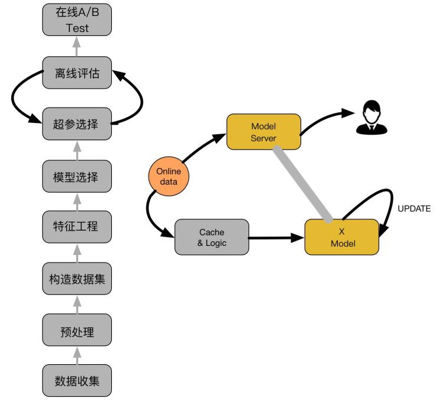</p>
<p>如上图，主要包括两大部分：离线部分、在线部分，其中离线部分目标主要是训练出可用模型，而在线部分则考虑模型上线后，性能可能随时间而出现下降，弱出现这种情况，可选择使用Online-Learning来在线更新模型：：</p>
<ul>
<li><p>· 离线部分：</p>
</li>
<li><ul>
<li>数据收集：主要收集和业务相关的数据，通常会有专门的同事在app位置进行埋点，拿到业务数据；</li>
<li>预处理：对埋点拿到的业务数据进行去脏去重；</li>
<li>构造数据集：经过预处理的业务数据，构造数据集，在切分训练、测试、验证集时应该合理根据业务逻辑来进行切分；</li>
<li>特征工程：对原始数据进行基本的特征处理，包括去除相关性大的特征，离散变量one-hot，连续特征离散化等等;</li>
<li>模型选择：选择合理的机器学习模型来完成相应工作，原则是先从简入深，先找到baseline，然后逐步优化；</li>
<li>超参选择：利用gridsearch、randomsearch或者hyperopt来进行超参选择，选择在离线数据集中性能最好的超参组合；</li>
<li>在线A/B Test：选择优化过后的模型和原先模型（如baseline）进行A/B Test，若性能有提升则替换原先模型；</li>
</ul>
</li>
<li><p>在线部分</p>
</li>
<li><ul>
<li>Cache &amp; Logic：设定简单过滤规则，过滤异常数据；</li>
<li>模型更新：当Cache &amp; Logic 收集到合适大小数据时，对模型进行pretrain+finetuning，若在测试集上比原始模型性能高，则更新model server的模型参数；</li>
</ul>
</li>
<li><p>Model Server：接受数据请求，返回预测结果；</p>
</li>
</ul>
<p><strong>Logistic Regression</strong></p>
<p>最简单的模型也应该是工业界应用最广的方法，Logistic<br>Regression算法简单易于调参，属于线性模型，原理如下图：</p>
<p>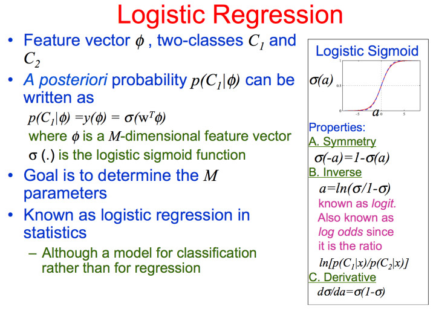</p>
<p>将CTR模型建模为一个分类问题，利用LR预测用户点击的概率； 通常我们只需要离线收集好数据样本构造数据集，选择好合适的特征空间，离线训练好模型，测试在离线数据集上的性能之后，即可上线，也可以适应数据分布随时间突变严重的情况，采用online-learning的策略来对模型进行相对频繁的更新，模型的简单能够保证这部分的需求能够得到保障。</p>
<p><strong>PLOY2</strong></p>
<p>LR优点是简单高效，缺点也很明显，它太简单，视特征空间内特征之间彼此独立，没有任何交叉或者组合关系，这与实际不符合，比如在预测是否会点击某件t恤是否会点击，如果在夏天可能大部分地区的用户都会点击，但是综合季节比如在秋天，北方城市可能完全不需要，所以这是从数据特征维度不同特征之间才能体现出来的。因此，必须复杂到能够建模非线性关系才能够比较准确地建模复杂的内在关系，而PLOY2就是通过特征的二项式组合来建模这类特征的复杂的内在关系,二项式部分如下图公式：</p>
<p>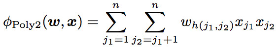</p>
<p>然而理想是美好的，现实却是残酷的，PLOY2有一个明显的问题，就是在实际场景中，大部分特征都是稀疏的，即大部分特征值为0，对这些稀疏的特征做二项式组合，会发现最后大部分特征值都是0，而在梯度更新时，当大部分feature为0时，其实梯度并不更新，所以PLOY2的方法在实际场景中并不能比较好地解决这类特征组合来建模更复杂线性关系的问题。</p>
<p><strong>Factorization Machine</strong></p>
<p>上面PLOY2虽然理论上能够建模二项式关系，但是在实际场景下稀疏数据时，无法使用，而FM就是为了解决这里PLOY2的短板的，FM的基本原理是将这些二项式矩阵做矩阵分解，将高维稀疏的特征向量映射到低维连续向量空间，然后根据内积表示二项式特征关系：</p>
<p>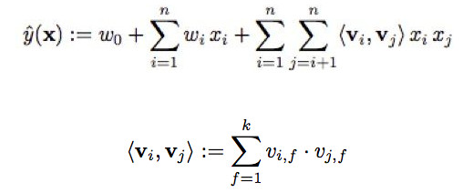</p>
<p>复杂度为$O(kn^2)$，作者提出了一种简化的算法：</p>
<p>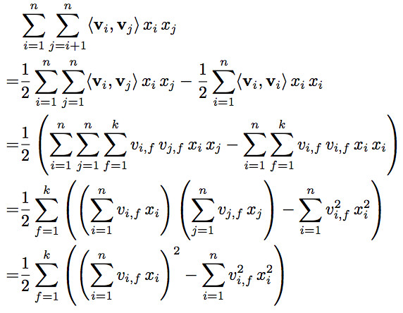</p>
<p>将复杂度简化为$O(kn)$ 然后就是SGD来更新模型参数，使模型收敛（这里还有很多其他替代SGD的方法，在FFM中有提到）：</p>
<p>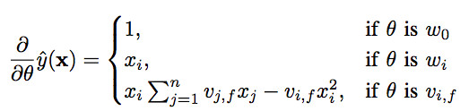</p>
<p>训练时间复杂度也是$O(kn)$，也就是线性时间，FM通过对二项式稀疏进行低维连续空间的转换，能够有效地解决PLOY2中存在的二次项系数在大规模系数数据下不更新的问题，另外由于训练预测复杂度均为线性，PLOY2+SVM这样逻辑下由于要计算多项式核，复杂度是n^2，由于FM的这几个特征，在实际场景中，FM也大规模的应用在CTR中，尤其是在数据极其系数的场景下，FM效果相对于其他算法有很明星的改善。</p>
<p><strong>Field-aware FM</strong></p>
<p>FMM全程是 Field-aware<br>FactorizationMachine，相对于FM增加了Field信息，每个特征属于一个field，举个例子：</p>
<p>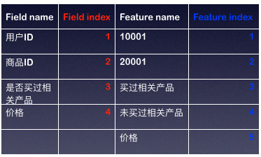</p>
<p>而相对于FM，只有Feature_index相同个数的低维连续表示，而FFM则不同，每一个feature对不同的field有不同的表示，所以有#Field_index*#Feature_index个不同的表示：</p>
<p>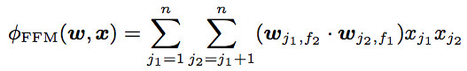</p>
<p>通常由于每个低维隐变量表示只学习特定field的表示，所以FFM的隐变量长度相对于FM的隐变量维度要小的多。FFM的优化问题相对其比较简单，可以看看FFM这篇paper，里面比较详细地描述优化过程，还有相关的伪代码 <a href="https://link.zhihu.com/?target=https%3A//www.andrew.cmu.edu/user/yongzhua/conferences/ffm.pdf" target="_blank" rel="noopener">https://www.andrew.cmu.edu/user/yongzhua/conferences/ffm.pdf</a>。</p>
<p><strong>FNN</strong></p>
<p>从12年在ImageNet上深度学习超过经典模型之后，在计算机视觉、语音、NLP都有很多相关的工作，而在CTR上，深度学习的建模能力也有一些应用，FNN和SNN就是其中的一些尝试，来源于<a href="https://link.zhihu.com/?target=https%3A//arxiv.org/pdf/1601.02376.pdf" target="_blank" rel="noopener">DeepLearning over Multi-field Categorical Data – A Case Study on User ResponsePrediction</a>，这里稍微描述下相关的做法：</p>
<p>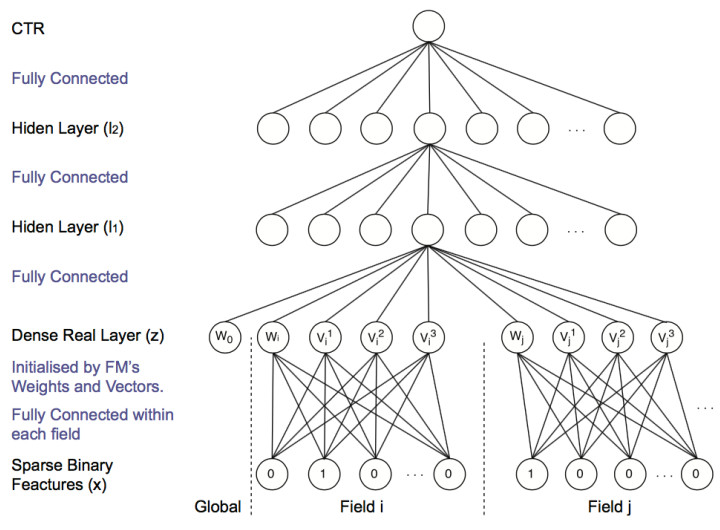</p>
<p>网络底层由FM来进行参数初始化，W的元素由FM中的低维连续空间向量表示来做初始化：</p>
<p>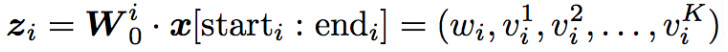</p>
<p>而构成W的低维连续空间向量表示预先由FM在数据集 上生成，模型在训练过程中，会通过BP来更新FM层参数，其他步骤和常见的MLP没有什么区别，这里重点就是底层如何介入FM层参数的问题；</p>
<p><strong>CCPM</strong></p>
<p>CCPM利用卷积网络来做点击率预测，看了文章，没有太明白其中的所以然，贴下网络结构的图吧：</p>
<p>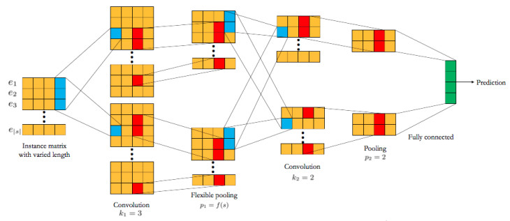</p>
<p>有弄清楚这篇文章的小伙伴可以讨论下。</p>
<p><strong>PNN</strong></p>
<p>PNN主要是在深度学习网络中增加了一个inner/outer<br>product layer，用来建模特征之前的关系，如下图，Product layer部分Z是weight<em>feature，P部分weight</em>I(feature_i,feature_j)用来建模二项式关系：</p>
<p>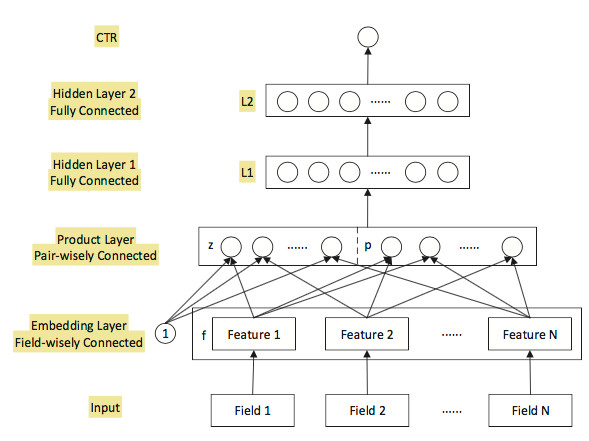</p>
<p>PNN按product层的功能分为inner product<br>layer和outer product layer，区别如下：</p>
<p>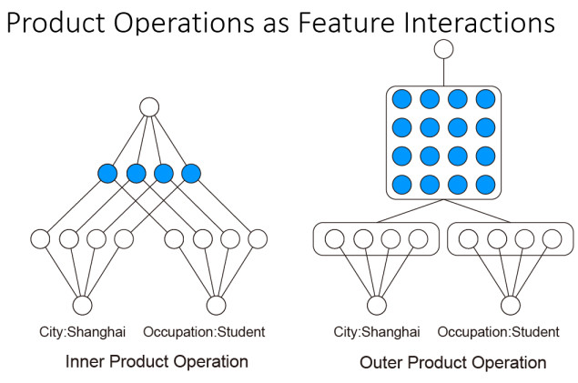</p>
<p>和FM类似，构造好网络之后，对输入数据做embedding处理之后得到低维的连续向量表示，经过任意两个feature的进行inner product or<br>outer product（1也为feature的一部分，所以可以建模线性关系），这里很容易发现，这部分特征大小会变大很多（二次项数量级）,尤其是稀疏空间，和PLOY2遇到的问题类似，变得很难训练，受FM启发，可以把这个大矩阵转换矩阵分解为小矩阵和它的转置相乘，表征到低维度连续向量空间，来减少模型复杂度：</p>
<p>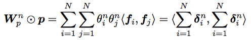</p>
<p><strong>DeepFM</strong></p>
<p>DeepFM更有意思的地方是WDL和FM结合了，其实就是把PNN和WDL结合了，PNN即将FM用神经网络的方式构造了一遍，作为wide的补充，原始的Wide and Deep，Wide的部分只是LR，构造线性关系，Deep部分建模更高阶的关系，所以在Wide and Deep中还需要做一些特征的东西，如Cross Column的工作，而我们知道FM是可以建模二阶关系达到Cross column的效果，DeepFM就是把FM和NN结合，无需再对特征做诸如Cross Column的工作了，这个是我感觉最吸引人的地方，其实FM的部分感觉就是PNN的一次描述，这里只描述下结构图，PNN的部分前面都描述, FM部分：</p>
<p>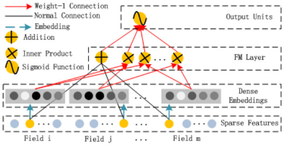</p>
<p>Deep部分：</p>
<p>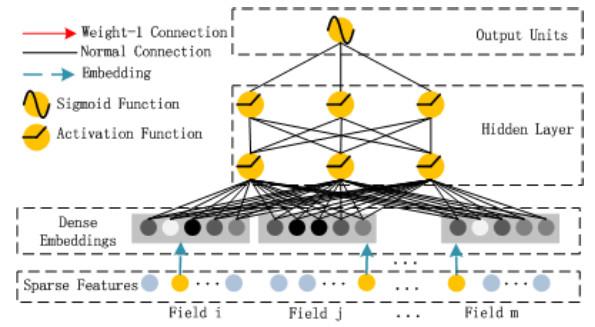</p>
<p>DeepFM相对于FNN、PNN，能够利用其Deep部分建模更高阶信息（二阶以上），而相对于Wide and Deep能够减少特征工程的部分工作，wide部分类似FM建模一、二阶特征间关系， 算是NN和FM的一个更完美的结合方向，另外不同的是如下图，DeepFM的wide和deep部分共享embedding向量空间，wide和deep均可以更新embedding部分，虽说wide部分纯是PNN的工作，但感觉还是蛮有意思的。</p>
<p>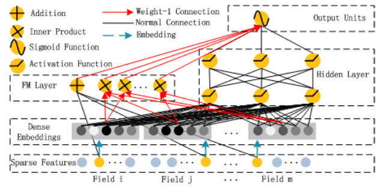</p>
<p><strong>其他的一些方法</strong></p>
<ul>
<li>GBDT+LR：Facebook提出利用GBDT探索海量特征空间的特征组合，减少特征工程工作量，性能很好；</li>
<li>MLR：阿里妈妈前端时间提出的一种增强LR模型，将region的划分考虑进去来建模非线性关系，感觉类似于深度学习的Attention机制，据说在阿里妈妈相关业务提升很多；</li>
</ul>
<p><strong>总结</strong></p>
<p>前面讨论了一些CTR常见的方法，重点介绍了Factorization<br>Machine及其变种Field-Aware Factorization Machine，还有和深度学习的结合，个人感觉PNN的逻辑比较有意思，完全使用神经网络的思维模型重塑了FM，为后面DeepFM扩展wide and deep的工作打下基础，减少了wide and deep中需要的一些基本的特征工程工作（wide部分二次项工作），上面只是涉及到模型的算法部分，在实际中可以去探讨，并不能说明一定性能就好，另外由于架构的限制，综合考虑其他方面的因素，如请求时间、模型复杂度，也是最终是否采用相关算法的考虑因素，各位对此有兴趣讨论的小伙伴，欢迎回复讨论。</p>

          
        
      
    </div>
    
    
    

    

    

    

    <footer class="post-footer">
      

      

      

      
      
        <div class="post-eof"></div>
      
    </footer>
  </div>
  
  
  
  </article>


    
      

  

  
  
  

  <article class="post post-type-normal" itemscope itemtype="http://schema.org/Article">
  
  
  
  <div class="post-block">
    <link itemprop="mainEntityOfPage" href="http://JackArch.github.io/2018/10/21/181021_tensorflow中一种融合多个模型的方法/">

    <span hidden itemprop="author" itemscope itemtype="http://schema.org/Person">
      <meta itemprop="name" content="zhuangzhouzhishui">
      <meta itemprop="description" content>
      <meta itemprop="image" content="/images/avatar.gif">
    </span>

    <span hidden itemprop="publisher" itemscope itemtype="http://schema.org/Organization">
      <meta itemprop="name" content="Deep  |  Mind">
    </span>

    
      <header class="post-header">

        
        
          <h1 class="post-title" itemprop="name headline">
                
                <a class="post-title-link" href="/2018/10/21/181021_tensorflow中一种融合多个模型的方法/" itemprop="url">tensorflow中一种融合多个模型的方法</a></h1>
        

        <div class="post-meta">
          <span class="post-time">
            
              <span class="post-meta-item-icon">
                <i class="fa fa-calendar-o"></i>
              </span>
              
                <span class="post-meta-item-text">Posted on</span>
              
              <time title="Post created" itemprop="dateCreated datePublished" datetime="2018-10-21T19:06:37+08:00">
                2018-10-21
              </time>
            

            

            
          </span>

          

          
            
          

          
          

          

          

          

        </div>
      </header>
    

    
    
    
    <div class="post-body" itemprop="articleBody">

      
      

      
        
          
            <h4 id="1-使用场景"><a href="#1-使用场景" class="headerlink" title="1.使用场景"></a>1.使用场景</h4><p>假设我们有训练好的模型A,B,C，我们希望使用A,B,C中的部分或者全部变量，合成为一个模型D，用于初始化或其他目的，就需要融合多个模型的方法</p>
<h4 id="2-如何实现"><a href="#2-如何实现" class="headerlink" title="2.如何实现"></a>2.如何实现</h4><p>我们可以先声明模型D，再创建多个Saver实例，分别从模型A,B,C的保存文件（checkpoint文件）中读取所需的变量值，来达成这一目的，下面是示例代码：</p>
<p>首先创建一个只包含w1,w2两个变量的模型，初始化后保存：</p>
<figure class="highlight plain"><table><tr><td class="gutter"><pre><span class="line">1</span><br><span class="line">2</span><br><span class="line">3</span><br><span class="line">4</span><br><span class="line">5</span><br><span class="line">6</span><br><span class="line">7</span><br><span class="line">8</span><br><span class="line">9</span><br><span class="line">10</span><br><span class="line">11</span><br><span class="line">12</span><br><span class="line">13</span><br><span class="line">14</span><br><span class="line">15</span><br></pre></td><td class="code"><pre><span class="line"> 1 def train_model1():</span><br><span class="line"> 2     w1 = tf.get_variable(&quot;w1&quot;, shape=[3, 1], initializer=tf.truncated_normal_initializer(),trainable=True)</span><br><span class="line"> 3     w2 = tf.get_variable(&quot;w2&quot;, shape=[3, 1], initializer=tf.truncated_normal_initializer(), trainable=True)</span><br><span class="line"> 4     x = tf.placeholder(tf.float32, shape=[None, 3], name=&quot;x&quot;)</span><br><span class="line"> 5     a1 = tf.matmul(x, w1)</span><br><span class="line"> 6     input = np.random.rand(3200, 3)</span><br><span class="line"> 7     sess = tf.InteractiveSession()</span><br><span class="line"> 8     sess.run(tf.global_variables_initializer())</span><br><span class="line"> 9     saver1 = tf.train.Saver([w1,w2])</span><br><span class="line">10     for i in range(0, 1):</span><br><span class="line">11         w1_var,w2_var = sess.run([w1,w2], feed_dict=&#123;x: input[i * 32:(i + 1) * 32]&#125;)</span><br><span class="line">12         print w1_var</span><br><span class="line">13         print w2_var</span><br><span class="line">14         print &apos;=&apos; * 30</span><br><span class="line">15     saver1.save(sess, &apos;save1-exp&apos;)</span><br></pre></td></tr></table></figure>

<p>然后再创建一个只包含w2,w3两个变量的模型，也是初始化后保存：</p>
<figure class="highlight plain"><table><tr><td class="gutter"><pre><span class="line">1</span><br><span class="line">2</span><br><span class="line">3</span><br><span class="line">4</span><br><span class="line">5</span><br><span class="line">6</span><br><span class="line">7</span><br><span class="line">8</span><br><span class="line">9</span><br><span class="line">10</span><br><span class="line">11</span><br><span class="line">12</span><br><span class="line">13</span><br><span class="line">14</span><br><span class="line">15</span><br></pre></td><td class="code"><pre><span class="line"> 1 def train_model2():</span><br><span class="line"> 2     w2 = tf.get_variable(&quot;w2&quot;, shape=[3, 1], initializer=tf.truncated_normal_initializer(),trainable=True)</span><br><span class="line"> 3     w3 = tf.get_variable(&quot;w3&quot;, shape=[3, 1], initializer=tf.truncated_normal_initializer(),trainable=True)</span><br><span class="line"> 4     x = tf.placeholder(tf.float32, shape=[None, 3], name=&quot;x&quot;)</span><br><span class="line"> 5     a2 = tf.matmul(x, w2 * w3)</span><br><span class="line"> 6     input = np.random.rand(3200, 3)</span><br><span class="line"> 7     sess = tf.InteractiveSession()</span><br><span class="line"> 8     sess.run(tf.global_variables_initializer())</span><br><span class="line"> 9     saver2 = tf.train.Saver([w2,w3])</span><br><span class="line">10     for i in range(0, 1):</span><br><span class="line">11         w2_var, w3_var = sess.run([w2, w3], feed_dict=&#123;x: input[i * 32:(i + 1) * 32]&#125;)</span><br><span class="line">12         print w2_var</span><br><span class="line">13         print w3_var</span><br><span class="line">14         print &apos;=&apos; * 30</span><br><span class="line">15     saver2.save(sess, &apos;save2-exp&apos;)</span><br></pre></td></tr></table></figure>

<p>最后我们创建一个包含w1，w2，w3变量的模型，从上面两个保存的ckp文件中恢复：</p>
<figure class="highlight plain"><table><tr><td class="gutter"><pre><span class="line">1</span><br><span class="line">2</span><br><span class="line">3</span><br><span class="line">4</span><br><span class="line">5</span><br><span class="line">6</span><br><span class="line">7</span><br><span class="line">8</span><br><span class="line">9</span><br><span class="line">10</span><br><span class="line">11</span><br><span class="line">12</span><br><span class="line">13</span><br><span class="line">14</span><br><span class="line">15</span><br><span class="line">16</span><br><span class="line">17</span><br><span class="line">18</span><br><span class="line">19</span><br><span class="line">20</span><br><span class="line">21</span><br><span class="line">22</span><br></pre></td><td class="code"><pre><span class="line"> 1 def restore_model():</span><br><span class="line"> 2     w1 = tf.get_variable(&quot;w1&quot;, shape=[3, 1], initializer=tf.truncated_normal_initializer(),trainable=True)</span><br><span class="line"> 3     w2 = tf.get_variable(&quot;w2&quot;, shape=[3, 1], initializer=tf.truncated_normal_initializer(),trainable=True)</span><br><span class="line"> 4     w3 = tf.get_variable(&quot;w3&quot;, shape=[3, 1], initializer=tf.truncated_normal_initializer(),trainable=True)</span><br><span class="line"> 5     x = tf.placeholder(tf.float32, shape=[None, 3], name=&quot;x&quot;)</span><br><span class="line"> 6     a1 = tf.matmul(x, w1)</span><br><span class="line"> 7     a2 = tf.matmul(x, w2 * w3)</span><br><span class="line"> 8     loss = tf.reduce_mean(tf.square(a1 - a2))</span><br><span class="line"> 9     sess = tf.InteractiveSession()</span><br><span class="line">10     sess.run(tf.global_variables_initializer())</span><br><span class="line">11     saver1 = tf.train.Saver([w1,w2])</span><br><span class="line">12     saver1.restore(sess, &apos;save1-exp&apos;)</span><br><span class="line">13     saver2 = tf.train.Saver([w2, w3])</span><br><span class="line">14     saver2.restore(sess, &apos;save2-exp&apos;)</span><br><span class="line">15     saver3 = tf.train.Saver(tf.trainable_variables())</span><br><span class="line">16     input = np.random.rand(3200, 3)</span><br><span class="line">17     w1_var, w2_var, w3_var = sess.run([w1, w2, w3], feed_dict=&#123;x: input[0:32]&#125;)</span><br><span class="line">18     print w1_var</span><br><span class="line">19     print w2_var</span><br><span class="line">20     print w3_var</span><br><span class="line">21     print &apos;=&apos; * 30</span><br><span class="line">22     saver3.save(sess, &apos;save3-exp&apos;)</span><br></pre></td></tr></table></figure>

<p>然后保存，即完成了我们的目标</p>
<h4 id="3-注意事项"><a href="#3-注意事项" class="headerlink" title="3.注意事项"></a>3.注意事项</h4><h4 id="3-1-取的模型中有同名变量"><a href="#3-1-取的模型中有同名变量" class="headerlink" title="3.1 取的模型中有同名变量"></a>3.1 取的模型中有同名变量</h4><p>假设同名变量为a，这种情况下，从不同模型中恢复的a是按照读取顺序覆盖到a中的，如果希望只读取特定ckpt保存的变量值，在创建读取其他ckpt的saver时，不要把a加入到var_list中</p>
<h4 id="3-2-模型D中有部分变量不在A-B-C中"><a href="#3-2-模型D中有部分变量不在A-B-C中" class="headerlink" title="3.2 模型D中有部分变量不在A,B,C中"></a>3.2 模型D中有部分变量不在A,B,C中</h4><p>这种情况，恢复时会报错，需要指定var_list，只恢复当前cpkt中保存的变量</p>

          
        
      
    </div>
    
    
    

    

    

    

    <footer class="post-footer">
      

      

      

      
      
        <div class="post-eof"></div>
      
    </footer>
  </div>
  
  
  
  </article>


    
      

  

  
  
  

  <article class="post post-type-normal" itemscope itemtype="http://schema.org/Article">
  
  
  
  <div class="post-block">
    <link itemprop="mainEntityOfPage" href="http://JackArch.github.io/2018/10/08/181008_Kaggle广告转化率预测比赛小结/">

    <span hidden itemprop="author" itemscope itemtype="http://schema.org/Person">
      <meta itemprop="name" content="zhuangzhouzhishui">
      <meta itemprop="description" content>
      <meta itemprop="image" content="/images/avatar.gif">
    </span>

    <span hidden itemprop="publisher" itemscope itemtype="http://schema.org/Organization">
      <meta itemprop="name" content="Deep  |  Mind">
    </span>

    
      <header class="post-header">

        
        
          <h1 class="post-title" itemprop="name headline">
                
                <a class="post-title-link" href="/2018/10/08/181008_Kaggle广告转化率预测比赛小结/" itemprop="url">Kaggle广告转化率预测比赛小结</a></h1>
        

        <div class="post-meta">
          <span class="post-time">
            
              <span class="post-meta-item-icon">
                <i class="fa fa-calendar-o"></i>
              </span>
              
                <span class="post-meta-item-text">Posted on</span>
              
              <time title="Post created" itemprop="dateCreated datePublished" datetime="2018-10-08T15:43:06+08:00">
                2018-10-08
              </time>
            

            

            
          </span>

          

          
            
          

          
          

          

          

          

        </div>
      </header>
    

    
    
    
    <div class="post-body" itemprop="articleBody">

      
      

      
        
          
            <h2 id="一、审题"><a href="#一、审题" class="headerlink" title="一、审题"></a>一、审题</h2><p>审题过程应该是在这道题中焦灼的一环，因为直到现在我都不确定我是否完全明白了题意。</p>
<blockquote>
<p>In their fourth Kaggle competition, Avito is challenging you to predict demand for an online advertisement based on its full description (title, description, images, etc.), its context (geographically where it was posted, similar ads already posted) and historical demand for similar ads in similar contexts. With this information, Avito can inform sellers on how to best optimize their listing and provide some indication of how much interest they should realistically expect to receive.</p>
</blockquote>
<p><strong>Excuse me!</strong> 可能我英语真的不好，但是你真的只说了举办这个比赛你们是为了什么，而没说我们对于比赛要干什么！</p>
<p>这道题是由Avito这个公司发起，这个公司我暂时把它理解为国内‘闲鱼’类型的二手平台，给的主要数据为150多万个样本，每个样本对应一个商品信息，具体包括用户id，商品id，商品的描述，类型，价格，图片等等。要预测的target是一个概率，可以说是一个商品的成交转换率。所以，我认为，Avito发起这个竞赛的主要目的是为了给用户提供一个编辑自己商品广告使得成交转化率最高的方法。</p>
<p>样本对应的特征可以分为如下几类：类别，文本，图片，数值，日期。</p>
<p>这里几乎把所有的特征类别都包括了，所以对于特征的处理主要分为三大块：</p>
<p>1、特征工程</p>
<p>2、文本NLP</p>
<p>3、图片处理</p>
<p>介于分工，图片处理不是我干的事，而且最后其实也没有派上用场，所以在这里你发现不到关于图片的内容！</p>
<p>比赛的数据集链接在这里：<a href="https://www.kaggle.com/c/avito-demand-prediction/data" target="_blank" rel="noopener">https://www.kaggle.com/c/avito-demand-prediction/data</a></p>
<h2 id="二、Kernels"><a href="#二、Kernels" class="headerlink" title="二、Kernels"></a>二、Kernels</h2><p>成也kernel，败也kernel。这么说Kaggle这个比赛实在是太合适不过，每个竞赛的kernels栏目中提供了大量的竞赛者的开源分析和代码，你可以站在别人的肩膀上来操作你自己的想法。对于数据的初步分析，你完全可以在kernel里找到现成的分析结果，这确实为熟悉题目，熟悉数据创造了捷径，节省了时间。</p>
<p>然而，必须吐槽一下，在比赛的前一天有人发布了一个成绩可排在15%的blending的kernel，这使得当时的排名发生巨大混乱，对用心做比赛的人伤害颇深，kaggle官方确实得管一管这种事。</p>
<h2 id="三、构建baseline"><a href="#三、构建baseline" class="headerlink" title="三、构建baseline"></a>三、构建baseline</h2><p>baseline是处理一切的框架，这时候可以借助kernel，</p>
<h2 id="四、特征工程"><a href="#四、特征工程" class="headerlink" title="四、特征工程"></a>四、特征工程</h2><p>不知道把特征工程放在这个位置对不对，因为这是一个贯穿始终的东西。内容太多了，记录的东西也太多了。</p>
<h4 id="4-1-缺失值处理"><a href="#4-1-缺失值处理" class="headerlink" title="4.1 缺失值处理"></a>4.1 缺失值处理</h4><p>数据中的缺失值有很多，由于我使用的模型是lightgbm，此模型对于缺失值可以不做处理，但是应该仅仅是针对类别特征。对于数值型的特征，采用的方法可以见这篇文章<a href="https://www.cnblogs.com/bjwu/articles/9077299.html" target="_blank" rel="noopener">【转】数据分析中的缺失值处理</a></p>
<ul>
<li>对于文本特征<code>descripition</code>和<code>title</code>，我是直接采用了填充’missing’的方法</li>
<li>对于数值特征<code>price</code>，我是直接填充<code>-999</code>，因为两点：1、这是一个很重要的特征，2、采用的决策树模型即将填充的<code>-999</code>直接分为一类，若采用的是线性模型，则不能这样。</li>
<li>对于其他的类别特征，我没有对缺失值进行处理，原因还是因为lightgbm</li>
</ul>
<h4 id="4-2-类别特征"><a href="#4-2-类别特征" class="headerlink" title="4.2 类别特征"></a>4.2 类别特征</h4><p>该竞赛中类别特征很多，我是直接将这些类别进行labelencoder，由于采用的是基于决策树的lightgbm，所以没有必要进行onehot编码。</p>
<figure class="highlight plain"><table><tr><td class="gutter"><pre><span class="line">1</span><br><span class="line">2</span><br><span class="line">3</span><br><span class="line">4</span><br><span class="line">5</span><br></pre></td><td class="code"><pre><span class="line">cat_cols = &#123;&quot;region&quot;,&quot;city&quot;,&quot;parent_category_name&quot;,&quot;category_name&quot;,&quot;user_type&quot;,&quot;image_top_1&quot;,&quot;param_2&quot;,&quot;param_3&quot;&#125;</span><br><span class="line"></span><br><span class="line">lbl = LabelEncoder()</span><br><span class="line">for col in cat_cols:</span><br><span class="line">    merge[col] = lbl.fit_transform(merge[col].astype(str))</span><br></pre></td></tr></table></figure>

<p>对于类别特征，尤其是<a href="https://www.cnblogs.com/bjwu/p/9087071.html" target="_blank" rel="noopener">高势集类别（High Categorical）特征</a>，在discuss中，我学到了一种用word2vec对特征做聚类的方法，另行介绍。</p>
<h4 id="4-3-数值型特征"><a href="#4-3-数值型特征" class="headerlink" title="4.3 数值型特征"></a>4.3 数值型特征</h4><p>唯一一个数值型特征是<code>price</code>，经过plot后发现price的数值呈现一个方差很大的分布，从0到百万不等。所以，这时候，采用log变换将数值映射到一个小的范围是一个比较好的选择。</p>
<figure class="highlight plain"><table><tr><td class="gutter"><pre><span class="line">1</span><br><span class="line">2</span><br></pre></td><td class="code"><pre><span class="line">merge[&quot;price&quot;] = np.log(merge[&quot;price&quot;]+0.001)</span><br><span class="line">merge[&quot;price&quot;].fillna(-999,inplace=True)</span><br></pre></td></tr></table></figure>

<p>下图是经过log后变换的price：</p>
<p>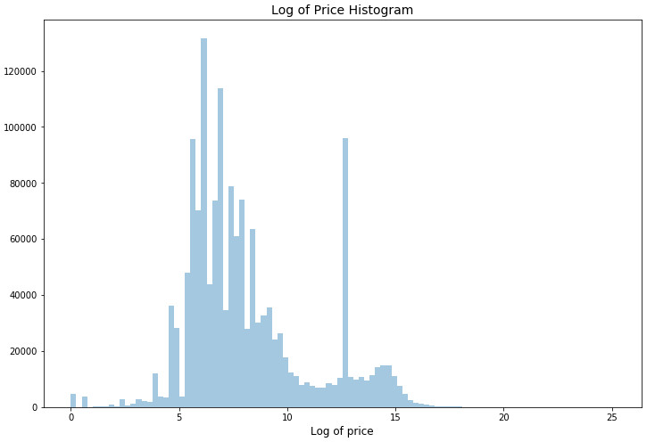</p>
<h4 id="4-4-日期特征"><a href="#4-4-日期特征" class="headerlink" title="4.4 日期特征"></a>4.4 日期特征</h4><p>简单的，将年月日进行提取，都作为一个新的特征：</p>
<figure class="highlight plain"><table><tr><td class="gutter"><pre><span class="line">1</span><br><span class="line">2</span><br><span class="line">3</span><br></pre></td><td class="code"><pre><span class="line">merge[&quot;activation_weekday&quot;] = merge[&apos;activation_date&apos;].dt.weekday</span><br><span class="line">merge[&quot;Weekd_of_Year&quot;] = merge[&apos;activation_date&apos;].dt.week</span><br><span class="line">merge[&quot;Day_of_Month&quot;] = merge[&apos;activation_date&apos;].dt.day</span><br></pre></td></tr></table></figure>

<h2 id="五、文本特征"><a href="#五、文本特征" class="headerlink" title="五、文本特征"></a>五、文本特征</h2><p>还是单独拿出一章写吧， 因为在这里花费的时间才是最多的。这里会介绍一些NLP的基本用法，当然很浅显。</p>
<h4 id="5-1-挖掘文本特征"><a href="#5-1-挖掘文本特征" class="headerlink" title="5.1 挖掘文本特征"></a>5.1 挖掘文本特征</h4><p>题目中的文本特征一共有三个，且是俄文，分别是</p>
<p><code>descripition</code>：对于商品的描述，文字较多（10-100不等），有数字和表情符号</p>
<p><code>title</code>：商品的题目，文字较少（3-20）</p>
<p><code>param_1</code>: 不知道什么的文字特征，文字很少</p>
<p>我们提取了很多关于这些文本的特征，包括每个特征的总次数，stopwords次数，数字的数目，标点符号的数目，以及各种字符所占的比例等等。对于最开始的特征挖掘，先不管三七二十一，头脑风暴能挖一个是一个，到时候再删也可以。</p>
<p>代码借鉴了某kernel：</p>
<figure class="highlight plain"><table><tr><td class="gutter"><pre><span class="line">1</span><br><span class="line">2</span><br><span class="line">3</span><br><span class="line">4</span><br><span class="line">5</span><br><span class="line">6</span><br><span class="line">7</span><br><span class="line">8</span><br><span class="line">9</span><br><span class="line">10</span><br><span class="line">11</span><br><span class="line">12</span><br><span class="line">13</span><br><span class="line">14</span><br><span class="line">15</span><br><span class="line">16</span><br><span class="line">17</span><br><span class="line">18</span><br><span class="line">19</span><br><span class="line">20</span><br><span class="line">21</span><br><span class="line">22</span><br><span class="line">23</span><br><span class="line">24</span><br><span class="line">25</span><br><span class="line">26</span><br><span class="line">27</span><br><span class="line">28</span><br><span class="line">29</span><br><span class="line">30</span><br></pre></td><td class="code"><pre><span class="line">for cols in textfeats:</span><br><span class="line">    merge[cols] = merge[cols].astype(str)</span><br><span class="line">    merge[cols] = merge[cols].astype(str).fillna(&apos;missing&apos;) # FILL NA</span><br><span class="line">    merge[cols] = merge[cols].str.lower() # Lowercase all text, so that capitalized words dont get treated differently</span><br><span class="line">    merge[cols + &apos;_num_stopwords_en&apos;] = merge[cols].apply(lambda x: len([w for w in x.split() if w in stopwords_en]))  # Count number of Stopwords</span><br><span class="line">    merge[cols + &apos;_num_stopwords&apos;] = merge[cols].apply(lambda x: len([w for w in x.split() if w in stopwords])) # Count number of Stopwords</span><br><span class="line">    merge[cols + &apos;_num_punctuations&apos;] = merge[cols].apply(lambda comment: (comment.count(RE_PUNCTUATION))) # Count number of Punctuations</span><br><span class="line">    merge[cols + &apos;_num_alphabets&apos;] = merge[cols].apply(lambda comment: (comment.count(r&apos;[a-zA-Z]&apos;))) # Count number of Alphabets</span><br><span class="line">    merge[cols + &apos;_num_alphanumeric&apos;] = merge[cols].apply(lambda comment: (comment.count(r&apos;[A-Za-z0-9]&apos;))) # Count number of AlphaNumeric</span><br><span class="line">    merge[cols + &apos;_num_digits&apos;] = merge[cols].apply(lambda comment: (comment.count(&apos;[0-9]&apos;))) # Count number of Digits</span><br><span class="line">    merge[cols + &apos;_num_letters&apos;] = merge[cols].apply(lambda comment: len(comment)) # Count number of Letters</span><br><span class="line">    merge[cols + &apos;_num_words&apos;] = merge[cols].apply(lambda comment: len(comment.split())) # Count number of Words</span><br><span class="line">    merge[cols + &apos;_num_unique_words&apos;] = merge[cols].apply(lambda comment: len(set(w for w in comment.split())))</span><br><span class="line">    merge[cols + &apos;_words_vs_unique&apos;] = merge[cols+&apos;_num_unique_words&apos;] / merge[cols+&apos;_num_words&apos;] # Count Unique Words</span><br><span class="line">    merge[cols + &apos;_letters_per_word&apos;] = merge[cols+&apos;_num_letters&apos;] / merge[cols+&apos;_num_words&apos;] # Letters per Word</span><br><span class="line">    merge[cols + &apos;_punctuations_by_letters&apos;] = merge[cols+&apos;_num_punctuations&apos;] / merge[cols+&apos;_num_letters&apos;] # Punctuations by Letters</span><br><span class="line">    merge[cols + &apos;_punctuations_by_words&apos;] = merge[cols+&apos;_num_punctuations&apos;] / merge[cols+&apos;_num_words&apos;] # Punctuations by Words</span><br><span class="line">    merge[cols + &apos;_digits_by_letters&apos;] = merge[cols+&apos;_num_digits&apos;] / merge[cols+&apos;_num_letters&apos;] # Digits by Letters</span><br><span class="line">    merge[cols + &apos;_alphanumeric_by_letters&apos;] = merge[cols+&apos;_num_alphanumeric&apos;] / merge[cols+&apos;_num_letters&apos;] # AlphaNumeric by Letters</span><br><span class="line">    merge[cols + &apos;_alphabets_by_letters&apos;] = merge[cols+&apos;_num_alphabets&apos;] / merge[cols+&apos;_num_letters&apos;] # Alphabets by Letters</span><br><span class="line">    merge[cols + &apos;_stopwords_by_letters&apos;] = merge[cols+&apos;_num_stopwords&apos;] / merge[cols+&apos;_num_letters&apos;] # Stopwords by Letters</span><br><span class="line">    merge[cols + &apos;_stopwords_by_words&apos;] = merge[cols+&apos;_num_stopwords&apos;] / merge[cols+&apos;_num_words&apos;] # Stopwords by Letters</span><br><span class="line">    merge[cols + &apos;_stopwords_by_letters_en&apos;] = merge[cols+&apos;_num_stopwords_en&apos;] / merge[cols+&apos;_num_letters&apos;] # Stopwords by Letters</span><br><span class="line">    merge[cols + &apos;_stopwords_by_words_en&apos;] = merge[cols+&apos;_num_stopwords_en&apos;] / merge[cols+&apos;_num_words&apos;] # Stopwords by Letters</span><br><span class="line">    merge[cols + &apos;_mean&apos;] = merge[cols].apply(lambda x: 0 if len(x) == 0 else float(len(x.split())) / len(x)) * 10 # Mean</span><br><span class="line">    merge[cols + &apos;_num_sum&apos;] = merge[cols].apply(sum_numbers)</span><br><span class="line">    </span><br><span class="line">merge[&apos;title_desc_len_ratio&apos;] = merge[&apos;title_num_letters&apos;]/(merge[&apos;description_num_letters&apos;]+1)</span><br><span class="line">merge[&apos;title_param1_len_ratio&apos;] = merge[&apos;title_num_letters&apos;]/(merge[&apos;param_1_copy_num_letters&apos;]+1)</span><br><span class="line">merge[&apos;param_1_copy_desc_len_ratio&apos;] = merge[&apos;param_1_copy_num_letters&apos;]/(merge[&apos;description_num_letters&apos;]+1)</span><br></pre></td></tr></table></figure>

<h4 id="5-2-TF-IDF"><a href="#5-2-TF-IDF" class="headerlink" title="5.2 TF-IDF"></a>5.2 TF-IDF</h4><p>TF-IDF是一个对于关键字权重的度量，简单来说：</p>
<p>1、统计句子中每个词的数目，并将该数目标在该句子的句向量对应位置上。（句向量每个位置对应词库中的一个特定词，每句话的句向量的相同位置对应的词相同）</p>
<p>2、对于1中生成的句向量，进行单文本词频TF(Term Frequency)处理：因为对于长句子，词出现的数目会更多，为了对词出现的频率进行归一化，对句向量进行TF 处理（每个词的个数除以该句子总词数）。</p>
<p>3、对于句向量中的每个词，要给予权重。为什么呢？例如：对于‘原子能的应用’这个句子，‘应用’这个词是个通用词，在不同句子中出现的概率很高，而‘原子能’是个很专业的词，后者在相关性排名中比前者更重要。因此，一个词预测主题的能力越强，权重越大。<br>对于某些停止词（stopwords），如‘的’，‘是’之类的词，由于其出现频率相当之高，权重为0。</p>
<p>权重的设定采用的是‘逆文本频率指数’（IDF）的方法，公式为log(DDw)log(DDw)，其中D为全部句子数量，D_w为某词在D_w个句子中出现过的数量。所以，如果一个词只在很少的句子中出现，通过它就容易将该句子分类，它的权重就越大。</p>
<figure class="highlight plain"><table><tr><td class="gutter"><pre><span class="line">1</span><br><span class="line">2</span><br><span class="line">3</span><br><span class="line">4</span><br></pre></td><td class="code"><pre><span class="line">tv = TfidfVectorizer(max_features=100000,</span><br><span class="line">                         ngram_range=(1, 3),</span><br><span class="line">                         stop_words=set(stopwords.words(&apos;russian&apos;)))</span><br><span class="line">X_name_train = tv.fit_transform(all_train[&apos;title&apos;])</span><br></pre></td></tr></table></figure>

<p>由于该题文本数据量太大，在fit了三个文本特征后，默认是输出稀疏矩阵，如果这个时候进行<code>toarray()</code>的操作，我的渣渣机器就会出现爆内存的错误，所以建议这里直接对稀疏矩阵进行处理。我用了三种处理方法：</p>
<p>0、先将这三个文本的稀疏矩阵hstack：</p>
<figure class="highlight plain"><table><tr><td class="gutter"><pre><span class="line">1</span><br></pre></td><td class="code"><pre><span class="line">sparse_merge_train = hstack((X_description_train, X_param1_train, X_name_train)).tocsr()</span><br></pre></td></tr></table></figure>

<p>PS：稀疏矩阵在<code>scipy</code>中可表示成几种储存形式，常用的有<code>csr</code>,<code>csc</code>。前者为<code>行格式Row format</code>，后者为<code>列格式Columns format</code>， 这两者互为转置。csc列切片操作快，csr行切片操作快，所以为了之后分离train和test数据集，后续需要进行行切片，所以进行<code>tocsr()</code>操作。</p>
<p>1、SVD</p>
<p>在茫茫的大稀疏矩阵中提取奇异值最高的几个维度。为什么不用PCA呢？PCA也能达到降维的目的，但是需要对数值进行零均值化，以至于<strong>丢失零矩阵的稀疏性</strong>，我是这样理解的啊哈哈。</p>
<figure class="highlight plain"><table><tr><td class="gutter"><pre><span class="line">1</span><br><span class="line">2</span><br></pre></td><td class="code"><pre><span class="line">svd_obj = TruncatedSVD(n_components=n_comp, algorithm=&apos;arpack&apos;)</span><br><span class="line">svd_obj.fit(X_name_train)</span><br></pre></td></tr></table></figure>

<p>2、Ridge</p>
<p>其实很简单，就是将sparse_merge_train通过一个ridge模型进行训练，之后得出一个预测出来的特征。ridge简单来说就是一个一层线性回归加l2正则化。</p>
<figure class="highlight plain"><table><tr><td class="gutter"><pre><span class="line">1</span><br><span class="line">2</span><br><span class="line">3</span><br><span class="line">4</span><br><span class="line">5</span><br><span class="line">6</span><br><span class="line">7</span><br><span class="line">8</span><br><span class="line">9</span><br><span class="line">10</span><br><span class="line">11</span><br><span class="line">12</span><br><span class="line">13</span><br><span class="line">14</span><br><span class="line">15</span><br><span class="line">16</span><br><span class="line">17</span><br><span class="line">18</span><br></pre></td><td class="code"><pre><span class="line">def ridge_proc(train_data, test_data, y_train):</span><br><span class="line">    X_train_1, X_train_2, y_train_1, y_train_2 = train_test_split(train_data, y_train,</span><br><span class="line">                                                                  test_size = 0.5,</span><br><span class="line">                                                                  shuffle = False)</span><br><span class="line">    print(&apos;[&#123;&#125;] Finished splitting&apos;.format(time.time() - start_time))</span><br><span class="line"></span><br><span class="line">    model = Ridge(solver=&quot;sag&quot;, fit_intercept=True, random_state=205, alpha=3.3)</span><br><span class="line">    model.fit(X_train_1, y_train_1)</span><br><span class="line">    ridge_preds1 = model.predict(X_train_2)</span><br><span class="line">    ridge_preds1f = model.predict(test_data)</span><br><span class="line">    model = Ridge(solver=&quot;sag&quot;, fit_intercept=True, random_state=205, alpha=3.3)</span><br><span class="line">    model.fit(X_train_2, y_train_2)</span><br><span class="line">    ridge_preds2 = model.predict(X_train_1)</span><br><span class="line">    ridge_preds_oof = np.concatenate((ridge_preds2, ridge_preds1), axis=0)</span><br><span class="line">    ridge_preds_test = (ridge_preds1f + ridge_preds2f) / 2.0</span><br><span class="line">    print(&apos;RMSLE OOF: &#123;&#125;&apos;.format(rmse(ridge_preds_oof, y_train)))</span><br><span class="line"></span><br><span class="line">    return ridge_preds_oof, ridge_preds_test</span><br></pre></td></tr></table></figure>

<p>同理，这里用DNN，CNN也可以进行类似操作，这里不再深入。</p>
<p>3、直接做特征</p>
<p>将sparse_merge_train这个硕大的稀疏矩阵直接做特征不失为一个臃肿的方法，但是效果却是最好的。由于稀疏矩阵的合并需要使用hstack，所以其他特征也需要进行稀疏化。<code>csr_matrix()</code>，这个scipy中的函数了解一下。</p>
<h4 id="5-3-Word2Vec"><a href="#5-3-Word2Vec" class="headerlink" title="5.3 Word2Vec"></a>5.3 Word2Vec</h4><p>这里提一下Xin Rong的这篇论文，《word2vec Parameter Learning Explained》</p>
<p>简单来说：</p>
<p>w2v的模型是一个只有一个隐藏层的神经网络，input为上下文词(CBOW)或目标词(Skip-gram)的one-hot编码，output对应分别为目标词或上下文词的出现概率。</p>
<figure class="highlight plain"><table><tr><td class="gutter"><pre><span class="line">1</span><br></pre></td><td class="code"><pre><span class="line">model = Word2Vec(texts, size=FEAT_VEC_SIZE, window=5, min_count=5, workers=4)</span><br></pre></td></tr></table></figure>

<p>在本题中，使用word2vec的目的不在于预测上下文，而在于提取文本特征。所以，word2vec的作用在于提供词向量，所以对于w2v模型，我们的关注点不在于最后的predict，而是输入层与隐藏层之间的参数权重矩阵W，这个矩阵一共有v行（v 为ont-hot编码中所有词的个数），每一行最后的训练结果即为对应词的词向量。隐藏层与输出层之间的权重矩阵W’的每列也可看作是另一种形式的词向量，output的每个位置的结果即为该位置词出现的概率。</p>
<p>为什么每一行可以看作对应词的词向量？假设input词为一个one-hot列，只有一个位置为1，其余为0，则隐藏层的结果即为该位置对应的权重矩阵W的行的copy的转置。隐藏层到输出的结果可以看成是这个copy与该词上下文词出现概率的对应关系。所以这个copy可以与一个特定的词一一对应。</p>
<p>那么句向量呢？我们已经通过word2vec模型得到了句子中每个词的词向量，我们只需要把这个句子每个词的词向量进行线性相加等操作就可得到该句子的句向量</p>
<p>在这之前还需要进行一系列的预处理：</p>
<figure class="highlight plain"><table><tr><td class="gutter"><pre><span class="line">1</span><br><span class="line">2</span><br><span class="line">3</span><br><span class="line">4</span><br><span class="line">5</span><br><span class="line">6</span><br><span class="line">7</span><br><span class="line">8</span><br><span class="line">9</span><br><span class="line">10</span><br><span class="line">11</span><br><span class="line">12</span><br><span class="line">13</span><br><span class="line">14</span><br><span class="line">15</span><br><span class="line">16</span><br><span class="line">17</span><br><span class="line">18</span><br></pre></td><td class="code"><pre><span class="line"># num_words: the maximum number of words to keep, based on word frequency. Only the most common num_words words will be kept.</span><br><span class="line">tokenizer = Tokenizer(num_words=MAX_NUM_WORDS)</span><br><span class="line">tokenizer.fit_on_texts(texts)</span><br><span class="line"></span><br><span class="line">#将一个句子拆分成单词id构成的列表</span><br><span class="line">sequences = tokenizer.texts_to_sequences(texts)</span><br><span class="line">#单词字典</span><br><span class="line">word_index = tokenizer.word_index</span><br><span class="line">print(&apos;Found %s unique tokens&apos; % len(word_index))</span><br><span class="line"></span><br><span class="line"># 填充句子到相同长度, 作为最后模型训练数据</span><br><span class="line">traindes = pad_sequences(sequences, maxlen=MAX_TEXT_LENGTH)</span><br><span class="line"></span><br><span class="line">embedding_matrix = np.zeros((MAX_NUM_WORDS, FEAT_VEC_SIZE))</span><br><span class="line"></span><br><span class="line">for word, i in word_index.items():</span><br><span class="line">    if word in model.wv and i &lt; MAX_NUM_WORDS:</span><br><span class="line">        embedding_matrix[i] = model.wv.word_vec(word)</span><br></pre></td></tr></table></figure>

<p>上述这个嵌入矩阵为词向量矩阵，包含着所有保留词的词向量。</p>
<p>生成句向量后，处理方法跟5.2节几乎无异。</p>
<h4 id="5-4-Doc2Vec"><a href="#5-4-Doc2Vec" class="headerlink" title="5.4 Doc2Vec"></a>5.4 Doc2Vec</h4><p>原理基于word2vec，只是在输入层中加了句子id，模型得到的结果直接为句向量。</p>
<p>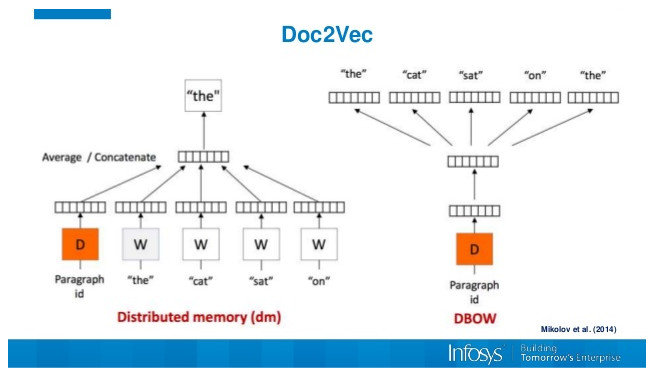</p>
<figure class="highlight plain"><table><tr><td class="gutter"><pre><span class="line">1</span><br><span class="line">2</span><br><span class="line">3</span><br><span class="line">4</span><br><span class="line">5</span><br><span class="line">6</span><br><span class="line">7</span><br><span class="line">8</span><br><span class="line">9</span><br><span class="line">10</span><br><span class="line">11</span><br></pre></td><td class="code"><pre><span class="line">TaggededDocument = gensim.models.doc2vec.TaggedDocument</span><br><span class="line">x_train = []</span><br><span class="line">for i, text in enumerate(texts):</span><br><span class="line">    document = TaggededDocument(text, tags=[i])</span><br><span class="line">    x_train.append(document)</span><br><span class="line"></span><br><span class="line">d2v_model = Doc2Vec(x_train, min_count=1, window = 3, size= 100, sample=1e-3, negative=5, workers=4)</span><br><span class="line">infered_vectors_list = []</span><br><span class="line">for text, label in x_train:</span><br><span class="line">    vector = d2v_model.infer_vector(text)</span><br><span class="line">    infered_vectors_list.append(vector)</span><br></pre></td></tr></table></figure>

<p>处理方法：</p>
<p>我对doc2vec产生的句向量分别做了kmeans和DBSCAN聚类，不过效果并不是很理想。</p>
<h2 id="六、模型预测"><a href="#六、模型预测" class="headerlink" title="六、模型预测"></a>六、模型预测</h2><h4 id="6-1-直接LightGBM-regression"><a href="#6-1-直接LightGBM-regression" class="headerlink" title="6.1 直接LightGBM-regression"></a>6.1 直接LightGBM-regression</h4><p>这应该算是baseline中的模型了，但是其实这种最直接最简单的模型在最后的效果居然最好，调参过程还是比较重要的。献一张我们的feature-importance</p>
<p></p>
<h4 id="6-2-LightGBM-classification-regression"><a href="#6-2-LightGBM-classification-regression" class="headerlink" title="6.2 LightGBM-classification-regression"></a>6.2 LightGBM-classification-regression</h4><p>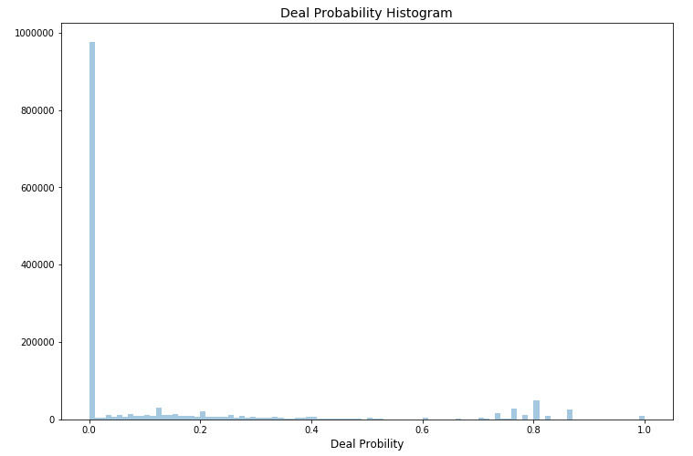</p>
<p>由于target的呈现出了上图的分布，可以看到，target为0的样本远超其他样本的总和。所以，这里可以采用过采样或者欠采样的方法进行处理，但是我们没有。</p>
<p>我们采用了先用分类器预测1/0值，再对于非0值进行回归预测的方法来想着提高最后的分数。</p>
<figure class="highlight plain"><table><tr><td class="gutter"><pre><span class="line">1</span><br><span class="line">2</span><br><span class="line">3</span><br><span class="line">4</span><br><span class="line">5</span><br><span class="line">6</span><br><span class="line">7</span><br><span class="line">8</span><br><span class="line">9</span><br><span class="line">10</span><br><span class="line">11</span><br><span class="line">12</span><br><span class="line">13</span><br><span class="line">14</span><br><span class="line">15</span><br><span class="line">16</span><br><span class="line">17</span><br></pre></td><td class="code"><pre><span class="line">y_train1 = y_train.apply(lambda x: 1 if x&gt;0 else 0)</span><br><span class="line">y_test1 = y_test.apply(lambda x: 1 if x&gt;0 else 0)</span><br><span class="line">d_train = lgb.Dataset(df_train, label=y_train1, categorical_feature=list(cat_cols),free_raw_data=False)</span><br><span class="line">d_valid = lgb.Dataset(df_test, label=y_test1, categorical_feature=list(cat_cols), reference=d_train,free_raw_data=False)</span><br><span class="line">watchlist = [d_valid]</span><br><span class="line">params = &#123;</span><br><span class="line">    &apos;learning_rate&apos;: 0.01,</span><br><span class="line">    &apos;application&apos;: &apos;binary&apos;,</span><br><span class="line">    &apos;is_unbalance&apos;:True,</span><br><span class="line">    &apos;metric&apos;: [&apos;auc&apos;,&apos;binary_error&apos;,&apos;fbeta&apos;]</span><br><span class="line">&#125;</span><br><span class="line">modelC = lgb.train(params,</span><br><span class="line">                  train_set=d_train,</span><br><span class="line">                  num_boost_round=1000,</span><br><span class="line">                  valid_sets=watchlist,</span><br><span class="line">                  early_stopping_rounds=50,</span><br><span class="line">                  verbose_eval=500)</span><br></pre></td></tr></table></figure>

<p>对于该分类器的metric，这里提取了验证集的precision，recall和f1用来选择合适的阈值。在本题来说，target为0值为负类，非0值的为正类。在这个分类器中，我们预测出0值，且要保证正类尽可能不被预测成负类，因为正类的值在回归器中预测的结果会更准确，所以对于此分类器的metric，我们要求<strong>查全率</strong>recall尽可能高。</p>
<figure class="highlight plain"><table><tr><td class="gutter"><pre><span class="line">1</span><br><span class="line">2</span><br><span class="line">3</span><br><span class="line">4</span><br><span class="line">5</span><br><span class="line">6</span><br><span class="line">7</span><br><span class="line">8</span><br><span class="line">9</span><br><span class="line">10</span><br><span class="line">11</span><br><span class="line">12</span><br><span class="line">13</span><br></pre></td><td class="code"><pre><span class="line">def fbeta(y_true, pred):</span><br><span class="line">   # 调整阈值</span><br><span class="line">   best_recall=0</span><br><span class="line">   precision_recall = []</span><br><span class="line">   best_thershold=0</span><br><span class="line">   for thershold in [0.15,0.2, 0.25,0.3,0.4,0.45,0.5]:</span><br><span class="line">       preds = [1 if i &gt; thershold else 0 for i in pred]</span><br><span class="line">       precision, recall, f_score, true_sum=precision_recall_fscore_support(y_true, preds)</span><br><span class="line">       if recall[1] &gt; best_recall:</span><br><span class="line">           best_thershold = thershold</span><br><span class="line">           precision_recall = []</span><br><span class="line">           best_recall=recall[1]</span><br><span class="line">   return &apos;best_recall&apos;, best_recall, True</span><br></pre></td></tr></table></figure>

<p>对于分类器后的回归器，我们输入的数据集为经过分类器预测为1的所有数据，而并不是原始的通过判断0或非0得到的target的1/0数据。</p>
<p>下面这个流程图展示了两种输入到回归器中的方法。</p>
<p>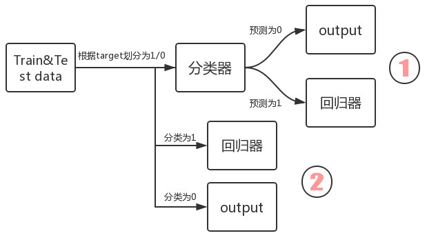</p>
<h2 id="七、Blending"><a href="#七、Blending" class="headerlink" title="七、Blending"></a>七、Blending</h2><p>这是在最后一刻有人爆出来的kernel，这里直接借鉴过来吧。以下是进行筛选blending的模型结果的过程：</p>
<p>1、将之前所有模型预测过的结果merge起来，且将分数top3的模型结果标记</p>
<p>2、对1中merge的结果进行相关性分析</p>
<figure class="highlight plain"><table><tr><td class="gutter"><pre><span class="line">1</span><br></pre></td><td class="code"><pre><span class="line">sns.heatmap(df_base.iloc[:,1:].corr(),annot=True,fmt=&quot;.2f&quot;)</span><br></pre></td></tr></table></figure>

<p>3、找到与1中标记的top3相关性最大的模型结果，然后drop</p>
<p>4、对剩下的模型结果进行averaging</p>
<p>提升效果很明显，但是应该也有瓶颈。</p>
<hr>
<p><strong>Reference</strong>:</p>
<ol>
<li>数学之美，吴军</li>
<li><a href="http://scikit-learn.org/stable/modules/feature_extraction.html#text-feature-extraction" target="_blank" rel="noopener">http://scikit-learn.org/stable/modules/feature_extraction.html#text-feature-extraction</a></li>
<li><a href="https://zhuanlan.zhihu.com/p/26645088" target="_blank" rel="noopener">https://zhuanlan.zhihu.com/p/26645088</a></li>
<li><a href="https://www.kaggle.com/sudalairajkumar/simple-exploration-baseline-notebook-avito" target="_blank" rel="noopener">https://www.kaggle.com/sudalairajkumar/simple-exploration-baseline-notebook-avito</a></li>
<li><a href="https://blog.csdn.net/wangjian1204/article/details/50642732" target="_blank" rel="noopener">https://blog.csdn.net/wangjian1204/article/details/50642732</a></li>
<li><a href="https://www.kaggle.com/dandres/best-public-blend-0-2204" target="_blank" rel="noopener">https://www.kaggle.com/dandres/best-public-blend-0-2204</a></li>
</ol>

          
        
      
    </div>
    
    
    

    

    

    

    <footer class="post-footer">
      

      

      

      
      
        <div class="post-eof"></div>
      
    </footer>
  </div>
  
  
  
  </article>


    
      

  

  
  
  

  <article class="post post-type-normal" itemscope itemtype="http://schema.org/Article">
  
  
  
  <div class="post-block">
    <link itemprop="mainEntityOfPage" href="http://JackArch.github.io/2018/09/20/180920_模型融合/">

    <span hidden itemprop="author" itemscope itemtype="http://schema.org/Person">
      <meta itemprop="name" content="zhuangzhouzhishui">
      <meta itemprop="description" content>
      <meta itemprop="image" content="/images/avatar.gif">
    </span>

    <span hidden itemprop="publisher" itemscope itemtype="http://schema.org/Organization">
      <meta itemprop="name" content="Deep  |  Mind">
    </span>

    
      <header class="post-header">

        
        
          <h1 class="post-title" itemprop="name headline">
                
                <a class="post-title-link" href="/2018/09/20/180920_模型融合/" itemprop="url">模型融合</a></h1>
        

        <div class="post-meta">
          <span class="post-time">
            
              <span class="post-meta-item-icon">
                <i class="fa fa-calendar-o"></i>
              </span>
              
                <span class="post-meta-item-text">Posted on</span>
              
              <time title="Post created" itemprop="dateCreated datePublished" datetime="2018-09-20T11:43:06+08:00">
                2018-09-20
              </time>
            

            

            
          </span>

          

          
            
          

          
          

          

          

          

        </div>
      </header>
    

    
    
    
    <div class="post-body" itemprop="articleBody">

      
      

      
        
          
            <p>1、主要内容</p>
<p>　　在已经使用某个模型的情况下，如何将这些模型进行融合使得模型更好的预测，这种技术就是融合模型技术。</p>
<p>2、融合模型的引入</p>
<p>　　你要买股票，有T个朋友做参考你听谁的？买还是不买？</p>
<p>　　</p>
<p>　　你可以采取的措施：</p>
<ul>
<li>选择最有价值的朋友的推荐—对应到机器学习就是一个模型的选择，就是验证（validation）选择性能最好的那个模型</li>
<li>或者认为他们的预测性能都相同，那么就让他们投票选出一个，缺点是他们的性能必然不一样</li>
<li>使用投票表决但是每个人的权重不同</li>
<li>根据不同人在不同的专长领域，将他们都结合起来，然后根据自己的情况进行选择</li>
</ul>
<p>　　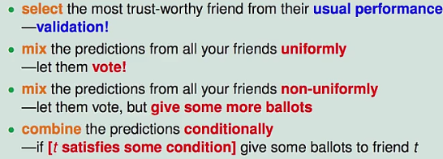</p>
<p>　　融合模型就是混合或者联合每个人的预测，进行综合考虑；以上的选择对应到数学模型上可以是：</p>
<p>　　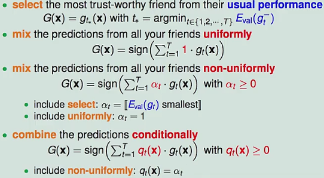</p>
<p>　　融合和模型选择的区别：</p>
<ul>
<li>选择是在一个已经有很好的模型的情况下进行选择，如果所有的模型表现的都不好，那么选择的模型也不怎么样，可以用“优胜劣汰”；</li>
<li>融合是在一群不强的模型中组合起来整体成为一个比较强劲的模型，可以用“三个臭皮匠赛过诸葛亮”。</li>
</ul>
<p>　　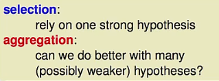</p>
<p>3、融合的方法</p>
<p>　　3.1 unifrom blening（平均混合）</p>
<p>　　3.1.1 分类问题的平均混合</p>
<p>　　　　每个模型都进行投票按照投票结果做出最终决定，就是blending（混合）。使用每一个模型的预测左最终的预         测。已知的模型每个都有一票，权重都相同：</p>
<p>　　</p>
<p>　　存在问题：</p>
<p>　　如果所有的gt都相同，那么混合就没有什么意义了，与原有的gt是相同的。</p>
<p>　　如果gt不相同并且可以民主投票，那么就很有可能修正错误。</p>
<p>　　</p>
<p>　　对于多分类问题情况类似：</p>
<p>　　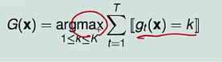</p>
<p>　　最后投票的那个K最多就是那个结果。</p>
<p>　　3.1.2 回归的平均混合</p>
<p>　　　　每个预测值的求和平均。</p>
<p>　　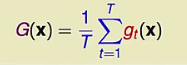</p>
<p>　　　　存在的问题和分类的情况类似；</p>
<p>　　　　同样如何每个gt都不同，并且也是民主投票，有的gt预测偏大有的 预测偏小，那么整体求和可能会使结果更           好；</p>
<p>　　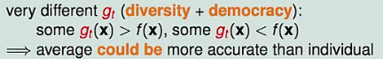</p>
<p>　　综上两种不同的场景，如果假设函数不相同，即使是很简单的平均混合也可以得到比单个假设函数要好的结果。</p>
<p>　　</p>
<p>　　简单的理论证明</p>
<p>　　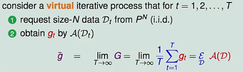</p>
<p>　　投票的物理意义：尽量减少模型的varience，加强了模型的泛化能力。</p>
<p> 　  3.2 线性混合</p>
<p>　　相比与平均混合此处每个模型的票数都不相同：</p>
<p>　　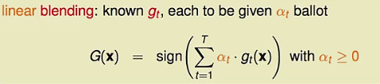</p>
<p>　　3.3 bagging</p>
<p>　　差异的重要性：</p>
<p>　　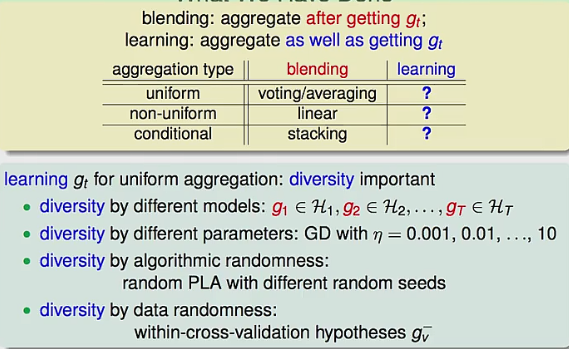</p>
<p>　　blending使采用不同的g进行组合，每个g的训练数据都不相同。当只有一份数据时可以采用bootstarp方法产生N组资料：</p>
<p>　　</p>
<p>　　简单来说就是又放回的去取N笔资料。</p>
<p>　　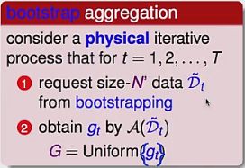</p>
<p> 　　</p>

          
        
      
    </div>
    
    
    

    

    

    

    <footer class="post-footer">
      

      

      

      
      
        <div class="post-eof"></div>
      
    </footer>
  </div>
  
  
  
  </article>


    
      

  

  
  
  

  <article class="post post-type-normal" itemscope itemtype="http://schema.org/Article">
  
  
  
  <div class="post-block">
    <link itemprop="mainEntityOfPage" href="http://JackArch.github.io/2018/09/16/180916_数据探索、特征选择、模型选择、交叉验证、模型融合/">

    <span hidden itemprop="author" itemscope itemtype="http://schema.org/Person">
      <meta itemprop="name" content="zhuangzhouzhishui">
      <meta itemprop="description" content>
      <meta itemprop="image" content="/images/avatar.gif">
    </span>

    <span hidden itemprop="publisher" itemscope itemtype="http://schema.org/Organization">
      <meta itemprop="name" content="Deep  |  Mind">
    </span>

    
      <header class="post-header">

        
        
          <h1 class="post-title" itemprop="name headline">
                
                <a class="post-title-link" href="/2018/09/16/180916_数据探索、特征选择、模型选择、交叉验证、模型融合/" itemprop="url">数据探索.特征选择.模型选择.交叉验证.模型融合</a></h1>
        

        <div class="post-meta">
          <span class="post-time">
            
              <span class="post-meta-item-icon">
                <i class="fa fa-calendar-o"></i>
              </span>
              
                <span class="post-meta-item-text">Posted on</span>
              
              <time title="Post created" itemprop="dateCreated datePublished" datetime="2018-09-16T15:03:34+08:00">
                2018-09-16
              </time>
            

            

            
          </span>

          

          
            
          

          
          

          

          

          

        </div>
      </header>
    

    
    
    
    <div class="post-body" itemprop="articleBody">

      
      

      
        
          
            <h2 id="数据探索、特征选择、模型选择、交叉验证、模型融合"><a href="#数据探索、特征选择、模型选择、交叉验证、模型融合" class="headerlink" title="数据探索、特征选择、模型选择、交叉验证、模型融合"></a>数据探索、特征选择、模型选择、交叉验证、模型融合</h2><p>1.数据探索</p>
<p>常用图表：</p>
<p>查看目标变量的分布。当分布不平衡时，根据评分标准和具体模型的使用不同，可能会严重影响性能。</p>
<p>对 Numerical Variable，可以用 Box Plot 来直观地查看它的分布。</p>
<p>对于坐标类数据，可以用 Scatter Plot 来查看它们的分布趋势和是否有离群点的存在。</p>
<p>对于分类问题，将数据根据 Label 的不同着不同的颜色绘制出来，这对 Feature 的构造很有帮助。</p>
<p>绘制变量之间两两的分布和相关度图表。</p>
<p>2.特征选择</p>
<p>　　Feature Selection 最实用的方法也就是看 Random Forest 训练完以后得到的 Feature Importance 了。其他有一些更复杂的算法在理论上更加 Robust，但是缺乏实用高效的实现，比如这个。从原理上来讲，增加 Random Forest 中树的数量可以在一定程度上加强其对于 Noisy Data 的 Robustness。</p>
<p>3.特征编码</p>
<p>　　这里用一个例子来说明在一些情况下 Raw Feature 可能需要经过一些转换才能起到比较好的效果。假设有一个 Categorical Variable 一共有几万个取值可能，那么创建 Dummy Variables 的方法就不可行了。这时一个比较好的方法是根据 Feature Importance 或是这些取值本身在数据中的出现频率，为最重要（比如说前 95% 的 Importance）那些取值（有很大可能只有几个或是十几个）创建 Dummy Variables，而所有其他取值都归到一个“其他”类里面。</p>
<p>4.模型选择</p>
<p>　　Kaggle 上最常用的模型基本都是基于树的模型：　　</p>
<p>　　Gradient Boosting</p>
<p>　　Random Forest</p>
<p>　　Extra Randomized Trees</p>
<p>　　以下模型往往在性能上稍逊一筹，但是很适合作为 Ensemble 的 Base Model：</p>
<p>　　SVM</p>
<p>　　Linear Regression</p>
<p>　　Logistic Regression</p>
<p>　　Neural Networks</p>
<p>5.交叉验证　　</p>
<p>　　Cross Validation 是非常重要的一个环节。它让你知道你的 Model 有没有 Overfit，是不是真的能够 Generalize 到测试集上。在很多比赛中 Public LB 都会因为这样那样的原因而不可靠。当你改进了 Feature 或是 Model 得到了一个更高的 CV 结果，提交之后得到的 LB 结果却变差了，一般认为这时应该相信 CV 的结果。当然，最理想的情况是多种不同的 CV 方法得到的结果和 LB 同时提高，但这样的比赛并不是太多。在数据的分布比较随机均衡的情况下，5-Fold CV 一般就足够了。如果不放心，可以提到 10-Fold。但是 Fold 越多训练也就会越慢，需要根据实际情况进行取舍。很多时候简单的 CV 得到的分数会不大靠谱，Kaggle 上也有很多关于如何做 CV 的讨论。比如这个。但总的来说，靠谱的 CV 方法是 Case By Case 的，需要在实际比赛中进行尝试和学习，这里就不再（也不能）叙述了。</p>
<p>6.模型融合</p>
<p>　　Ensemble Learning 是指将多个不同的 Base Model 组合成一个 Ensemble Model 的方法。它可以同时降低最终模型的 Bias 和 Variance（证明可以参考这篇论文，我最近在研究类似的理论，可能之后会写新文章详述)，从而在提高分数的同时又降低 Overfitting 的风险。常见的 Ensemble 方法有这么几种：</p>
<p>　　Bagging：使用训练数据的不同随机子集来训练每个 Base Model，最后进行每个 Base Model 权重相同的 Vote。也即 Random Forest 的原理。</p>
<p>　　Boosting：迭代地训练 Base Model，每次根据上一个迭代中预测错误的情况修改训练样本的权重。也即 Gradient Boosting 的原理。比 Bagging 效果好，但更容易 Overfit。</p>
<p>　　Blending：用不相交的数据训练不同的 Base Model，将它们的输出取（加权）平均。实现简单，但对训练数据利用少了。</p>
<p>　　Stacking：接下来会详细介绍。　　</p>
<p>　　从理论上讲，Ensemble 要成功，有两个要素：</p>
<p>　　Base Model 之间的相关性要尽可能的小。这就是为什么非 Tree-based Model 往往表现不是最好但还是要将它们包括在 Ensemble 里面的原因。Ensemble 的 Diversity 越大，最终 Model 的 Bias 就越低。Base Model 之间的性能表现不能差距太大。这其实是一个 Trade-off，在实际中很有可能表现相近的 Model 只有寥寥几个而且它们之间相关性还不低。但是实践告诉我们即使在这种情况下 Ensemble 还是能大幅提高成绩。</p>
<p>　　Stacking模型：</p>
<p>　　相比 Blending，Stacking 能更好地利用训练数据。以 5-Fold Stacking 为例，它的基本原理如图所示：</p>
<p>　　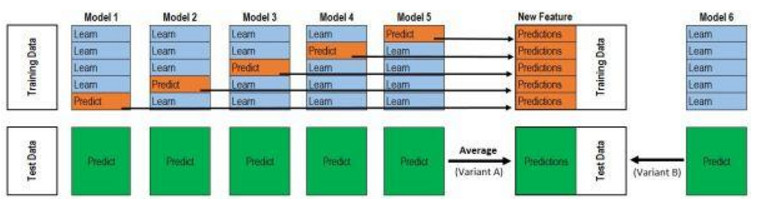</p>
<p>　　整个过程很像 Cross Validation。首先将训练数据分为 5 份，接下来一共 5 个迭代，每次迭代时，将 4 份数据作为 Training Set 对每个 Base Model 进行训练，然后在剩下一份 Hold-out Set 上进行预测。同时也要将其在测试数据上的预测保存下来。这样，每个 Base sModel 在每次迭代时会对训练数据的其中 1 份做出预测，对测试数据的全部做出预测。5 个迭代都完成以后我们就获得了一个 #训练数据行数 x #Base Model 数量 的矩阵，这个矩阵接下来就作为第二层的 Model 的训练数据。当第二层的 Model 训练完以后，将之前保存的 Base Model 对测试数据的预测（因为每个 Base Model 被训练了 5 次，对测试数据的全体做了 5 次预测，所以对这 5 次求一个平均值，从而得到一个形状与第二层训练数据相同的矩阵）拿出来让它进行预测，就得到最后的输出。</p>
<p>　　获奖选手往往会使用比这复杂得多的 Ensemble，会出现三层、四层甚至五层，不同的层数之间有各种交互，还有将经过不同的 Preprocessing 和不同的 Feature Engineering 的数据用 Ensemble 组合起来的做法。但对于新手来说，稳稳当当地实现一个正确的 5-Fold Stacking 已经足够了。</p>

          
        
      
    </div>
    
    
    

    

    

    

    <footer class="post-footer">
      

      

      

      
      
        <div class="post-eof"></div>
      
    </footer>
  </div>
  
  
  
  </article>


    
      

  

  
  
  

  <article class="post post-type-normal" itemscope itemtype="http://schema.org/Article">
  
  
  
  <div class="post-block">
    <link itemprop="mainEntityOfPage" href="http://JackArch.github.io/2018/08/11/180811_浅谈SMOTE之类不平衡过采样方法/">

    <span hidden itemprop="author" itemscope itemtype="http://schema.org/Person">
      <meta itemprop="name" content="zhuangzhouzhishui">
      <meta itemprop="description" content>
      <meta itemprop="image" content="/images/avatar.gif">
    </span>

    <span hidden itemprop="publisher" itemscope itemtype="http://schema.org/Organization">
      <meta itemprop="name" content="Deep  |  Mind">
    </span>

    
      <header class="post-header">

        
        
          <h1 class="post-title" itemprop="name headline">
                
                <a class="post-title-link" href="/2018/08/11/180811_浅谈SMOTE之类不平衡过采样方法/" itemprop="url">浅谈SMOTE之类不平衡过采样方法</a></h1>
        

        <div class="post-meta">
          <span class="post-time">
            
              <span class="post-meta-item-icon">
                <i class="fa fa-calendar-o"></i>
              </span>
              
                <span class="post-meta-item-text">Posted on</span>
              
              <time title="Post created" itemprop="dateCreated datePublished" datetime="2018-08-11T14:37:06+08:00">
                2018-08-11
              </time>
            

            

            
          </span>

          

          
            
          

          
          

          

          

          

        </div>
      </header>
    

    
    
    
    <div class="post-body" itemprop="articleBody">

      
      

      
        
          
            <p>本文是接着上篇MAHAKIL过采样方法写得。SMOTE方法算是现在比较流行的过采样方法了，其分为SMOTE-Regular, SMOTE-Borderline1, SMOTE-Borderline2, SMOTE-SVM这四种方法，应用非常广，而且效果也很好。本篇文章我将主要讲解SMOTE-Regular, SMOTE-Borderline1这两种方法（由于篇幅的原因）并给出相应源码，好了，废话不说直接进正文。</p>
<p><strong>1 SMOTE-Regular算法详解</strong></p>
<p>在实际应用中，读者可能会碰到一种比较头疼的问题，那就是分类问题中类别型的因变量可能存在严重的偏倚，即类别之间的比例严重失调。如欺诈问题中，欺诈类观测在样本集中毕竟占少数;客户流失问题中，非忠实的客户往往也是占很少一部分;在某营销活动的响应问题中，真正参与活动的客户也同样只是少部分。</p>
<p>　　如果数据存在严重的不平衡，预测得出的结论往往也是有偏的，即分类结果会偏向于较多观测的类。对于这种问题该如何处理呢？最简单粗暴的办法就是构造1:1的数据，要么将多的那一类砍掉一部分（即欠采样），要么将少的那一类进行Bootstrap抽样（即过采样）。但这样做会存在问题，对于第一种方法，砍掉的数据会导致某些隐含信息的丢失;而第二种方法中，有放回的抽样形成的简单复制，又会使模型产生过拟合。</p>
<p>　　为了解决数据的非平衡问题，2002年Chawla提出了SMOTE算法，即合成少数过采样技术，它是基于随机过采样算法的一种改进方案。该技术是目前处理非平衡数据的常用手段，并受到学术界和工业界的一致认同，接下来简单描述一下该算法的理论思想。</p>
<p>　　SMOTE算法的基本思想就是对少数类别样本进行分析和模拟，并将人工模拟的新样本添加到数据集中，进而使原始数据中的类别不再严重失衡。该算法的模拟过程采用了KNN技术，模拟生成新样本的步骤如下：</p>
<p>　　采样最邻近算法，计算出每个少数类样本的K个近邻;</p>
<p>　　从K个近邻中随机挑选N个样本进行随机线性插值;</p>
<p>　　构造新的少数类样本;</p>
<p>　　将新样本与原数据合成，产生新的训练集;</p>
<p>Smote算法的思想其实很简单，先随机选定n个少类的样本，如下图</p>
<p>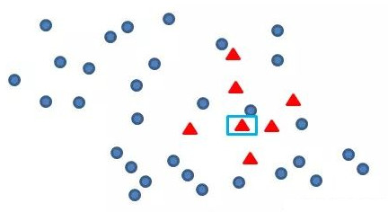</p>
<p>找出初始扩展的少类样本</p>
<p>再找出最靠近它的m个少类样本，如下图</p>
<p>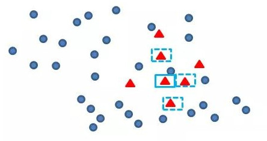</p>
<p>再任选最临近的m个少类样本中的任意一点，</p>
<p>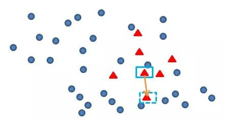</p>
<p>在这两点上任选一点，这点就是新增的数据样本</p>
<p>其实原理很简单，这么一说大家一看就知道了。它就是在少数类样本中用KNN方法合成了新样本，而不同于ROS方法随机复制成新样本，所以更具有代表性</p>
<p><strong>以下便是相应源码(SMOTE.py)</strong></p>
<figure class="highlight plain"><table><tr><td class="gutter"><pre><span class="line">1</span><br><span class="line">2</span><br><span class="line">3</span><br><span class="line">4</span><br><span class="line">5</span><br><span class="line">6</span><br><span class="line">7</span><br><span class="line">8</span><br><span class="line">9</span><br><span class="line">10</span><br><span class="line">11</span><br><span class="line">12</span><br><span class="line">13</span><br><span class="line">14</span><br><span class="line">15</span><br><span class="line">16</span><br><span class="line">17</span><br><span class="line">18</span><br><span class="line">19</span><br><span class="line">20</span><br><span class="line">21</span><br><span class="line">22</span><br><span class="line">23</span><br><span class="line">24</span><br><span class="line">25</span><br><span class="line">26</span><br><span class="line">27</span><br><span class="line">28</span><br><span class="line">29</span><br><span class="line">30</span><br><span class="line">31</span><br><span class="line">32</span><br><span class="line">33</span><br><span class="line">34</span><br><span class="line">35</span><br><span class="line">36</span><br><span class="line">37</span><br><span class="line">38</span><br><span class="line">39</span><br><span class="line">40</span><br><span class="line">41</span><br><span class="line">42</span><br><span class="line">43</span><br><span class="line">44</span><br><span class="line">45</span><br><span class="line">46</span><br><span class="line">47</span><br><span class="line">48</span><br><span class="line">49</span><br><span class="line">50</span><br><span class="line">51</span><br><span class="line">52</span><br><span class="line">53</span><br><span class="line">54</span><br><span class="line">55</span><br><span class="line">56</span><br><span class="line">57</span><br><span class="line">58</span><br><span class="line">59</span><br></pre></td><td class="code"><pre><span class="line">from sklearn.neighbors import NearestNeighbors</span><br><span class="line">from base_sampler import *</span><br><span class="line">import numpy as np</span><br><span class="line"></span><br><span class="line"></span><br><span class="line"># 使用K-近邻方法产生新样本</span><br><span class="line">def make_sample(old_feature_data, diff):</span><br><span class="line">    # 获取每一个少数类样本点周围最近的n_neighbors-1个点的位置矩阵</span><br><span class="line">    nns = NearestNeighbors(n_neighbors=6).fit(old_feature_data).kneighbors(old_feature_data, return_distance=False)[:,1:]</span><br><span class="line">    # 随机产生diff个随机数作为之后产生新样本的选取的样本下标值</span><br><span class="line">    samples_indices = np.random.randint(low=0, high=np.shape(old_feature_data)[0], size=diff)</span><br><span class="line">    # 随机产生diff个随机数作为之后产生新样本的间距值</span><br><span class="line">    steps = np.random.uniform(size=diff)</span><br><span class="line">    cols = np.mod(samples_indices, nns.shape[1])</span><br><span class="line">    reshaped_feature = np.zeros((diff, old_feature_data.shape[1]))</span><br><span class="line">    for i, (col, step) in enumerate(zip(cols, steps)):</span><br><span class="line">        row = samples_indices[i]</span><br><span class="line">        reshaped_feature[i] = old_feature_data[row] - step * (old_feature_data[row] - old_feature_data[nns[row, col]])</span><br><span class="line">    # 将原少数类样本点与新产生的少数类样本点整合</span><br><span class="line">    new_min_feature_data = np.vstack((reshaped_feature, old_feature_data))</span><br><span class="line">    return new_min_feature_data</span><br><span class="line"></span><br><span class="line"></span><br><span class="line"># 对不平衡的数据集imbalanced_data_arr2进行SMOTE采样操作，返回平衡数据集</span><br><span class="line"># :param imbalanced_data_arr2: 非平衡数据集</span><br><span class="line"># :return: 平衡后的数据集</span><br><span class="line">def SMOTE(imbalanced_data_arr2):</span><br><span class="line">    # 将数据集分开为少数类数据和多数类数据</span><br><span class="line">    minor_data_arr2, major_data_arr2 = seperate_minor_and_major_data(imbalanced_data_arr2)</span><br><span class="line">    # print(minor_data_arr2.shape)</span><br><span class="line">    # 计算多数类数据和少数类数据之间的数量差,也是需要过采样的数量</span><br><span class="line">    diff = major_data_arr2.shape[0] - minor_data_arr2.shape[0]</span><br><span class="line">    # 原始少数样本的特征集</span><br><span class="line">    old_feature_data = minor_data_arr2[:, : -1]</span><br><span class="line">    # 原始少数样本的标签值</span><br><span class="line">    old_label_data = minor_data_arr2[0][-1]</span><br><span class="line">    # 使用K近邻方法产生的新样本特征集</span><br><span class="line">    new_feature_data = make_sample(old_feature_data, diff)</span><br><span class="line">    # 使用K近邻方法产生的新样本标签数组</span><br><span class="line">    new_labels_data = np.array([old_label_data] * np.shape(major_data_arr2)[0])</span><br><span class="line">    # 将类别标签数组合并到少数类样本特征集，构建出新的少数类样本数据集</span><br><span class="line">    new_minor_data_arr2 = np.column_stack((new_feature_data, new_labels_data))</span><br><span class="line">    # print(new_minor_data_arr2[:,-1])</span><br><span class="line">    # 将少数类数据集和多数据类数据集合并，并对样本数据进行打乱重排，</span><br><span class="line">    balanced_data_arr2 = concat_and_shuffle_data(new_minor_data_arr2, major_data_arr2)</span><br><span class="line">    return balanced_data_arr2</span><br><span class="line"></span><br><span class="line"></span><br><span class="line"># 测试</span><br><span class="line">if __name__ == &apos;__main__&apos;:</span><br><span class="line">    imbalanced_data = np.load(&apos;imbalanced_train_data_arr2.npy&apos;)</span><br><span class="line">    print(imbalanced_data.shape)</span><br><span class="line">    minor_data_arr2, major_data_arr2 = seperate_minor_and_major_data(imbalanced_data)</span><br><span class="line">    print(minor_data_arr2.shape)</span><br><span class="line">    print(major_data_arr2.shape)</span><br><span class="line">    # 测试SMOTE方法</span><br><span class="line">    balanced_data_arr2 = SMOTE(imbalanced_data)</span><br><span class="line">    print(balanced_data_arr2)</span><br><span class="line">    print(balanced_data_arr2.shape)</span><br></pre></td></tr></table></figure>

<p><strong>辅助类依旧是base_sampler.py</strong></p>
<figure class="highlight plain"><table><tr><td class="gutter"><pre><span class="line">1</span><br><span class="line">2</span><br><span class="line">3</span><br><span class="line">4</span><br><span class="line">5</span><br><span class="line">6</span><br><span class="line">7</span><br><span class="line">8</span><br><span class="line">9</span><br><span class="line">10</span><br><span class="line">11</span><br><span class="line">12</span><br><span class="line">13</span><br><span class="line">14</span><br><span class="line">15</span><br><span class="line">16</span><br><span class="line">17</span><br><span class="line">18</span><br><span class="line">19</span><br><span class="line">20</span><br><span class="line">21</span><br><span class="line">22</span><br><span class="line">23</span><br><span class="line">24</span><br><span class="line">25</span><br><span class="line">26</span><br><span class="line">27</span><br><span class="line">28</span><br><span class="line">29</span><br><span class="line">30</span><br><span class="line">31</span><br><span class="line">32</span><br><span class="line">33</span><br><span class="line">34</span><br><span class="line">35</span><br><span class="line">36</span><br><span class="line">37</span><br><span class="line">38</span><br><span class="line">39</span><br><span class="line">40</span><br><span class="line">41</span><br><span class="line">42</span><br><span class="line">43</span><br><span class="line">44</span><br><span class="line">45</span><br><span class="line">46</span><br><span class="line">47</span><br><span class="line">48</span><br><span class="line">49</span><br><span class="line">50</span><br><span class="line">51</span><br><span class="line">52</span><br><span class="line">53</span><br><span class="line">54</span><br><span class="line">55</span><br><span class="line">56</span><br><span class="line">57</span><br><span class="line">58</span><br><span class="line">59</span><br></pre></td><td class="code"><pre><span class="line">&quot;&quot;</span><br><span class="line">采样器的基础代码,可用于后面采样器的复用</span><br><span class="line">&quot;&quot;&quot;</span><br><span class="line">import numpy as np</span><br><span class="line">import os</span><br><span class="line"></span><br><span class="line"></span><br><span class="line">def seperate_minor_and_major_data(imbalanced_data_arr2):</span><br><span class="line">    &quot;&quot;&quot;</span><br><span class="line">    将训练数据分开为少数据类数据集和多数类数据集</span><br><span class="line">    :param imbalanced_data_arr2: 非平衡数集</span><br><span class="line">    :return: 少数据类数据集和多数类数据集</span><br><span class="line">    &quot;&quot;&quot;</span><br><span class="line"></span><br><span class="line">    # 提取类别标签一维数组，并提取出两类类别标签标记</span><br><span class="line">    labels_arr1 = imbalanced_data_arr2[:, -1]</span><br><span class="line">    unique_labels_arr1 = np.unique(labels_arr1)</span><br><span class="line">    if len(unique_labels_arr1) != 2:</span><br><span class="line">        print(&apos;数据类别大于2，错误！&apos;)</span><br><span class="line">        return</span><br><span class="line"></span><br><span class="line">    # 找出少数类的类别标签</span><br><span class="line">    minor_label = unique_labels_arr1[0] if np.sum(labels_arr1 == unique_labels_arr1[0]) \</span><br><span class="line">                                           &lt; np.sum(labels_arr1 == unique_labels_arr1[1]) else unique_labels_arr1[1]</span><br><span class="line"></span><br><span class="line">    [rows, cols] = imbalanced_data_arr2.shape  # 获取数据二维数组形状</span><br><span class="line">    minor_data_arr2 = np.empty((0, cols))  # 建立一个空的少数类数据二维数组</span><br><span class="line">    major_data_arr2 = np.empty((0, cols))  # 建立一个空的多数类数据二维数组</span><br><span class="line"></span><br><span class="line">    # 遍历每个样本数据，分开少数类数据和多数类数据</span><br><span class="line">    for row in range(rows):</span><br><span class="line">        data_arr1 = imbalanced_data_arr2[row, :]</span><br><span class="line">        if data_arr1[-1] == minor_label:</span><br><span class="line">            # 如果类别标签为少数类类别标签，则将数据加入少数类二维数组中</span><br><span class="line">            minor_data_arr2 = np.row_stack((minor_data_arr2, data_arr1))</span><br><span class="line">        else:  # 否则，将数据加入多数类二维数组中</span><br><span class="line">            major_data_arr2 = np.row_stack((major_data_arr2, data_arr1))</span><br><span class="line"></span><br><span class="line">    return minor_data_arr2, major_data_arr2</span><br><span class="line"></span><br><span class="line"></span><br><span class="line">def concat_and_shuffle_data(data1_arr2, data2_arr2):</span><br><span class="line">    &quot;&quot;&quot;</span><br><span class="line">    对两个numpy二维数组进行0轴连接，并对行向量进行打乱重排，</span><br><span class="line">    :param data1_arr2: numpy二维数组</span><br><span class="line">    :param data2_arr2: numpy二维数组</span><br><span class="line">    :return:</span><br><span class="line">    &quot;&quot;&quot;</span><br><span class="line">    data_arr2 = np.concatenate((data1_arr2, data2_arr2), axis=0)  # 数组0轴连接</span><br><span class="line">    np.random.shuffle(data_arr2)  # 行向量shuffle</span><br><span class="line">    return data_arr2</span><br><span class="line"></span><br><span class="line"></span><br><span class="line">if __name__ == &apos;__main__&apos;:</span><br><span class="line">    imbalanced_train_data_path = &apos;../../data/clean_data/imbalanced_train_data_arr2.npy&apos;</span><br><span class="line">    imbalanced_train_data_arr2 = np.load(imbalanced_train_data_path)</span><br><span class="line">    minor_data_arr2, major_data_arr2 = seperate_minor_and_major_data(imbalanced_train_data_arr2)</span><br><span class="line">    print(minor_data_arr2.shape)</span><br><span class="line">    print(major_data_arr2.shape)</span><br></pre></td></tr></table></figure>

<p>以上便将SMOTE-Regular方法介绍完了，大家看完之后是不是觉得还意犹未尽啊，哈哈哈哈哈。别着急下面就给你来介绍SMOTE-Borderline1方法</p>
<p><strong>2 SMOTE-Borderline1算法详解</strong></p>
<p>如果说上面的方法你看懂了之后，那么这个方法你也很容易懂了。其实就是在SMOTE-Regular的基础上改进了一些，即选取的少数样本值集合会更小更具有代表性——在少数类与多数类样本的边缘。确定好之后产生新样本的步骤和SMOTE-Regular没什么区别，都是用选取的少数样本点与其他的距离其最近的少数样本点结合产生新样本（不知道这绕口令大家有没有听懂，哈哈哈哈哈，没听懂的话可以看看下面我贴的论文介绍片段）</p>
<p>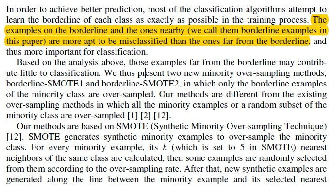</p>
<p>SMOTE-Borderline简介</p>
<p>接下来就是贴出该方法的伪代码了，大家看仔细了哈</p>
<p>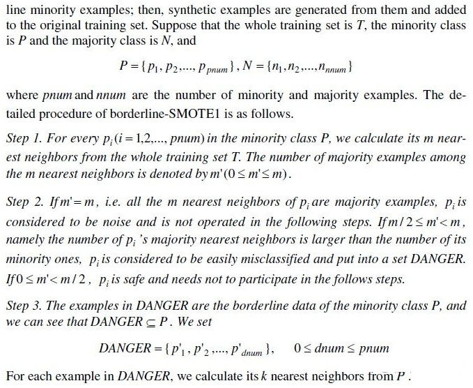</p>
<p>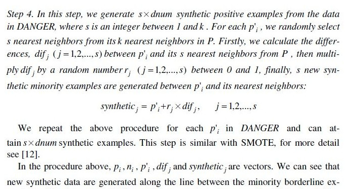</p>
<p>全英文的伪代码看完了，估计大家现在也晕晕乎乎的。尤其是对于英文不太好的朋友，别急，我这就把源码贴出来，对照源码看事半功倍</p>
<figure class="highlight plain"><table><tr><td class="gutter"><pre><span class="line">1</span><br><span class="line">2</span><br><span class="line">3</span><br><span class="line">4</span><br><span class="line">5</span><br><span class="line">6</span><br><span class="line">7</span><br><span class="line">8</span><br><span class="line">9</span><br><span class="line">10</span><br><span class="line">11</span><br><span class="line">12</span><br><span class="line">13</span><br><span class="line">14</span><br><span class="line">15</span><br><span class="line">16</span><br><span class="line">17</span><br><span class="line">18</span><br><span class="line">19</span><br><span class="line">20</span><br><span class="line">21</span><br><span class="line">22</span><br><span class="line">23</span><br><span class="line">24</span><br><span class="line">25</span><br><span class="line">26</span><br><span class="line">27</span><br><span class="line">28</span><br><span class="line">29</span><br><span class="line">30</span><br><span class="line">31</span><br><span class="line">32</span><br><span class="line">33</span><br><span class="line">34</span><br><span class="line">35</span><br><span class="line">36</span><br><span class="line">37</span><br><span class="line">38</span><br><span class="line">39</span><br><span class="line">40</span><br><span class="line">41</span><br><span class="line">42</span><br><span class="line">43</span><br><span class="line">44</span><br><span class="line">45</span><br><span class="line">46</span><br><span class="line">47</span><br><span class="line">48</span><br><span class="line">49</span><br><span class="line">50</span><br><span class="line">51</span><br><span class="line">52</span><br><span class="line">53</span><br><span class="line">54</span><br><span class="line">55</span><br><span class="line">56</span><br><span class="line">57</span><br><span class="line">58</span><br><span class="line">59</span><br><span class="line">60</span><br><span class="line">61</span><br><span class="line">62</span><br><span class="line">63</span><br><span class="line">64</span><br><span class="line">65</span><br><span class="line">66</span><br><span class="line">67</span><br><span class="line">68</span><br><span class="line">69</span><br><span class="line">70</span><br><span class="line">71</span><br><span class="line">72</span><br><span class="line">73</span><br><span class="line">74</span><br><span class="line">75</span><br><span class="line">76</span><br><span class="line">77</span><br><span class="line">78</span><br><span class="line">79</span><br><span class="line">80</span><br></pre></td><td class="code"><pre><span class="line">from sklearn.neighbors import NearestNeighbors</span><br><span class="line">from sklearn.utils import safe_indexing</span><br><span class="line"></span><br><span class="line">from base_sampler import *</span><br><span class="line">import numpy as np</span><br><span class="line"></span><br><span class="line"></span><br><span class="line"># 处于多数类与少数类边缘的样本</span><br><span class="line">def in_danger(imbalanced_featured_data, old_feature_data, old_label_data, imbalanced_label_data):</span><br><span class="line">    nn_m = NearestNeighbors(n_neighbors=11).fit(imbalanced_featured_data)</span><br><span class="line">    # 获取每一个少数类样本点周围最近的n_neighbors-1个点的位置矩阵</span><br><span class="line">    nnm_x = NearestNeighbors(n_neighbors=11).fit(imbalanced_featured_data).kneighbors(old_feature_data,</span><br><span class="line">                                                                                    return_distance=False)[:,1:]</span><br><span class="line">    nn_label = (imbalanced_label_data[nnm_x] != old_label_data).astype(int)</span><br><span class="line">    n_maj = np.sum(nn_label, axis=1)</span><br><span class="line">    return np.bitwise_and(n_maj &gt;= (nn_m.n_neighbors - 1) / 2, n_maj &lt; nn_m.n_neighbors - 1)</span><br><span class="line"></span><br><span class="line"></span><br><span class="line"># 产生少数类新样本的方法</span><br><span class="line">def make_sample(imbalanced_data_arr2, diff):</span><br><span class="line">    # 将数据集分开为少数类数据和多数类数据</span><br><span class="line">    minor_data_arr2, major_data_arr2 = seperate_minor_and_major_data(imbalanced_data_arr2)</span><br><span class="line">    imbalanced_featured_data = imbalanced_data_arr2[:, : -1]</span><br><span class="line">    imbalanced_label_data = imbalanced_data_arr2[:, -1]</span><br><span class="line">    # 原始少数样本的特征集</span><br><span class="line">    old_feature_data = minor_data_arr2[:, : -1]</span><br><span class="line">    # 原始少数样本的标签值</span><br><span class="line">    old_label_data = minor_data_arr2[0][-1]</span><br><span class="line">    danger_index = in_danger(imbalanced_featured_data, old_feature_data, old_label_data, imbalanced_label_data)</span><br><span class="line">    # 少数样本中噪音集合，也就是最终要产生新样本的集合</span><br><span class="line">    danger_index_data = safe_indexing(old_feature_data, danger_index)</span><br><span class="line">    # 获取每一个少数类样本点周围最近的n_neighbors-1个点的位置矩阵</span><br><span class="line">    nns = NearestNeighbors(n_neighbors=6).fit(old_feature_data).kneighbors(danger_index_data,</span><br><span class="line">                                                                           return_distance=False)[:, 1:]</span><br><span class="line">    # 随机产生diff个随机数作为之后产生新样本的选取的样本下标值</span><br><span class="line">    samples_indices = np.random.randint(low=0, high=np.shape(danger_index_data)[0], size=diff)</span><br><span class="line">    # 随机产生diff个随机数作为之后产生新样本的间距值</span><br><span class="line">    steps = np.random.uniform(size=diff)</span><br><span class="line">    cols = np.mod(samples_indices, nns.shape[1])</span><br><span class="line">    reshaped_feature = np.zeros((diff, danger_index_data.shape[1]))</span><br><span class="line">    for i, (col, step) in enumerate(zip(cols, steps)):</span><br><span class="line">        row = samples_indices[i]</span><br><span class="line">        reshaped_feature[i] = danger_index_data[row] - step * (danger_index_data[row] - old_feature_data[nns[row, col]])</span><br><span class="line">    new_min_feature_data = np.vstack((reshaped_feature, old_feature_data))</span><br><span class="line">    return new_min_feature_data</span><br><span class="line"></span><br><span class="line"></span><br><span class="line"># 对不平衡的数据集imbalanced_data_arr2进行Border-SMOTE采样操作，返回平衡数据集</span><br><span class="line"># :param imbalanced_data_arr2: 非平衡数据集</span><br><span class="line"># :return: 平衡后的数据集</span><br><span class="line">def Border_SMOTE(imbalanced_data_arr2):</span><br><span class="line">    # 将数据集分开为少数类数据和多数类数据</span><br><span class="line">    minor_data_arr2, major_data_arr2 = seperate_minor_and_major_data(imbalanced_data_arr2)</span><br><span class="line">    # print(minor_data_arr2.shape)</span><br><span class="line">    # 计算多数类数据和少数类数据之间的数量差,也是需要过采样的数量</span><br><span class="line">    diff = major_data_arr2.shape[0] - minor_data_arr2.shape[0]</span><br><span class="line">    # 原始少数样本的标签值</span><br><span class="line">    old_label_data = minor_data_arr2[0][-1]</span><br><span class="line">    # 使用K近邻方法产生的新样本特征集</span><br><span class="line">    new_feature_data = make_sample(imbalanced_data_arr2, diff)</span><br><span class="line">    # 使用K近邻方法产生的新样本标签数组</span><br><span class="line">    new_labels_data = np.array([old_label_data] * np.shape(major_data_arr2)[0])</span><br><span class="line">    # 将类别标签数组合并到少数类样本特征集，构建出新的少数类样本数据集</span><br><span class="line">    new_minor_data_arr2 = np.column_stack((new_feature_data, new_labels_data))</span><br><span class="line">    # print(new_minor_data_arr2[:,-1])</span><br><span class="line">    # 将少数类数据集和多数据类数据集合并，并对样本数据进行打乱重排，</span><br><span class="line">    balanced_data_arr2 = concat_and_shuffle_data(new_minor_data_arr2, major_data_arr2)</span><br><span class="line">    return balanced_data_arr2</span><br><span class="line"></span><br><span class="line"></span><br><span class="line"># 测试</span><br><span class="line">if __name__ == &apos;__main__&apos;:</span><br><span class="line">    imbalanced_data = np.load(&apos;imbalanced_train_data_arr2.npy&apos;)</span><br><span class="line">    print(imbalanced_data.shape)</span><br><span class="line">    minor_data_arr2, major_data_arr2 = seperate_minor_and_major_data(imbalanced_data)</span><br><span class="line">    print(minor_data_arr2.shape)</span><br><span class="line">    print(major_data_arr2.shape)</span><br><span class="line">    # 测试Border_SMOTE方法</span><br><span class="line">    balanced_data_arr2 = Border_SMOTE(imbalanced_data)</span><br><span class="line">    print(balanced_data_arr2.shape)</span><br></pre></td></tr></table></figure>

<p>辅助类代码和上面的base_sampler一样，这里就不在累赘了</p>

          
        
      
    </div>
    
    
    

    

    

    

    <footer class="post-footer">
      

      

      

      
      
        <div class="post-eof"></div>
      
    </footer>
  </div>
  
  
  
  </article>


    
      

  

  
  
  

  <article class="post post-type-normal" itemscope itemtype="http://schema.org/Article">
  
  
  
  <div class="post-block">
    <link itemprop="mainEntityOfPage" href="http://JackArch.github.io/2018/07/24/180724_sklearn特征转换行为/">

    <span hidden itemprop="author" itemscope itemtype="http://schema.org/Person">
      <meta itemprop="name" content="zhuangzhouzhishui">
      <meta itemprop="description" content>
      <meta itemprop="image" content="/images/avatar.gif">
    </span>

    <span hidden itemprop="publisher" itemscope itemtype="http://schema.org/Organization">
      <meta itemprop="name" content="Deep  |  Mind">
    </span>

    
      <header class="post-header">

        
        
          <h1 class="post-title" itemprop="name headline">
                
                <a class="post-title-link" href="/2018/07/24/180724_sklearn特征转换行为/" itemprop="url">sklearn特征转换行为</a></h1>
        

        <div class="post-meta">
          <span class="post-time">
            
              <span class="post-meta-item-icon">
                <i class="fa fa-calendar-o"></i>
              </span>
              
                <span class="post-meta-item-text">Posted on</span>
              
              <time title="Post created" itemprop="dateCreated datePublished" datetime="2018-07-24T11:43:28+08:00">
                2018-07-24
              </time>
            

            

            
          </span>

          

          
            
          

          
          

          

          

          

        </div>
      </header>
    

    
    
    
    <div class="post-body" itemprop="articleBody">

      
      

      
        
          
            <h1 id="1-为什么要记录特征转换行为？"><a href="#1-为什么要记录特征转换行为？" class="headerlink" title="1 为什么要记录特征转换行为？"></a>1 为什么要记录特征转换行为？</h1><p>　　使用机器学习算法和模型进行数据挖掘，有时难免事与愿违：我们依仗对业务的理解，对数据的分析，以及工作经验提出了一些特征，但是在模型训练完成后，某些特征可能“身微言轻”——我们认为相关性高的特征并不重要，这时我们便要反思这样的特征提出是否合理；某些特征甚至“南辕北辙”——我们认为正相关的特征结果变成了负相关，造成这种情况很有可能是抽样与整体不相符，模型过于复杂，导致了过拟合。然而，我们怎么判断先前的假设和最后的结果之间的差异呢？</p>
<p>　　线性模型通常有含有属性coef_，当系数值大于0时为正相关，当系数值小于0时为负相关；另外一些模型含有属性feature_importances_，顾名思义，表示特征的重要性。根据以上两个属性，便可以与先前假设中的特征的相关性（或重要性）进行对比了。但是，理想是丰满的，现实是骨感的。经过复杂的特征转换之后，特征矩阵X已不再是原来的样子：哑变量使特征变多了，特征选择使特征变少了，降维使特征映射到另一个维度中。</p>
<p>　　累觉不爱了吗？如果，我们能够将最后的特征与原特征对应起来，那么分析特征的系数和重要性又有了意义了。所以，在训练过程（或者转换过程）中，记录下所有特征转换行为是一个有意义的工作。可惜，sklearn暂时并没有提供这样的功能。在这篇博文中，我们尝试对一些常见的转换功能进行行为记录，读者可以在此基础进行进一步的拓展。</p>
<hr>
<h1 id="2-有哪些特征转换的方式？"><a href="#2-有哪些特征转换的方式？" class="headerlink" title="2 有哪些特征转换的方式？"></a>2 有哪些特征转换的方式？</h1><p>　　<a href="http://www.cnblogs.com/jasonfreak/p/5448385.html" target="_blank" rel="noopener">《使用sklearn做单机特征工程》</a>一文概括了若干常见的转换功能：</p>
<table>
<thead>
<tr>
<th>类名</th>
<th>功能</th>
<th>说明</th>
</tr>
</thead>
<tbody><tr>
<td>StandardScaler</td>
<td>数据预处理（无量纲化）</td>
<td>标准化，基于特征矩阵的列，将特征值转换至服从标准正态分布</td>
</tr>
<tr>
<td>MinMaxScaler</td>
<td>数据预处理（无量纲化）</td>
<td>区间缩放，基于最大最小值，将特征值转换到[0, 1]区间上</td>
</tr>
<tr>
<td>Normalizer</td>
<td>数据预处理（归一化）</td>
<td>基于特征矩阵的行，将样本向量转换为“单位向量”</td>
</tr>
<tr>
<td>Binarizer</td>
<td>数据预处理（二值化）</td>
<td>基于给定阈值，将定量特征按阈值划分</td>
</tr>
<tr>
<td>OneHotEncoder</td>
<td>数据预处理（哑编码）</td>
<td>将定性数据编码为定量数据</td>
</tr>
<tr>
<td>Imputer</td>
<td>数据预处理（缺失值计算）</td>
<td>计算缺失值，缺失值可填充为均值等</td>
</tr>
<tr>
<td>PolynomialFeatures</td>
<td>数据预处理（多项式数据转换）</td>
<td>多项式数据转换</td>
</tr>
<tr>
<td>FunctionTransformer</td>
<td>数据预处理（自定义单元数据转换）</td>
<td>使用单变元的函数来转换数据</td>
</tr>
<tr>
<td>VarianceThreshold</td>
<td>特征选择（Filter）</td>
<td>方差选择法</td>
</tr>
<tr>
<td>SelectKBest</td>
<td>特征选择（Filter）</td>
<td>可选关联系数、卡方校验、最大信息系数作为得分计算的方法</td>
</tr>
<tr>
<td>RFE</td>
<td>特征选择（Wrapper）</td>
<td>递归地训练基模型，将权值系数较小的特征从特征集合中消除</td>
</tr>
<tr>
<td>SelectFromModel</td>
<td>特征选择（Embedded）</td>
<td>训练基模型，选择权值系数较高的特征</td>
</tr>
<tr>
<td>PCA</td>
<td>降维（无监督）</td>
<td>主成分分析法</td>
</tr>
<tr>
<td>LDA</td>
<td>降维（有监督）</td>
<td>线性判别分析法</td>
</tr>
</tbody></table>
<p>　　按照特征数量是否发生变化，这些转换类可分为：</p>
<ul>
<li>无变化：StandardScaler，MinMaxScaler，Normalizer，Binarizer，Imputer，FunctionTransformer*</li>
<li>有变化：OneHotEncoder，PolynomialFeatures，VarianceThreshold，SelectKBest，RFE，SelectFromModel，PCA，LDA</li>
</ul>
<p>FunctionTransformer*：自定义的转换函数通常不会使特征数量发生变化</p>
<p>　　对于不造成特征数量变化的转换类，我们只需要保持特征不变即可。在此，我们主要研究那些有变化的转换类，其他转换类都默认为无变化。按照映射的形式，可将以上有变化的转换类可分为：</p>
<ul>
<li>一对一：VarianceThreshold，SelectKBest，RFE，SelectFromModel</li>
<li>一对多：OneHotEncoder</li>
<li>多对多：PolynomialFeatures，PCA，LDA</li>
</ul>
<p>　　原特征与新特征为一对一映射通常发生在特征选择时，若原特征被选择则直接变成新特征，否则抛弃。哑编码为典型的一对多映射，需要哑编码的原特征将会转换为多个新特征。多对多的映射中PolynomialFeatures并不要求每一个新特征都与原特征建立映射关系，例如阶为2的多项式转换，第一个新特征只由第一个原特征生成（平方）。降维的本质在于将原特征矩阵X映射到维度更低的空间中，使用的技术通常是矩阵乘法，所以它既要求每一个原特征映射到所有新特征，同时也要求每一个新特征被所有原特征映射。</p>
<hr>
<h1 id="3-特征转换的组合"><a href="#3-特征转换的组合" class="headerlink" title="3 特征转换的组合"></a>3 特征转换的组合</h1><p>　　在<a href="http://www.cnblogs.com/jasonfreak/p/5448462.html" target="_blank" rel="noopener">《使用sklearn优雅地进行数据挖掘》</a>一文中，我们看到一个基本的数据挖掘场景：</p>
<p>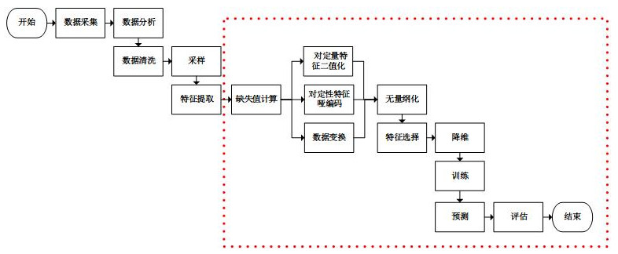</p>
<p>　　特征转换行为通常是流水线型和并行型结合的。所以，我们考虑重新设计流水线处理类Pipeline和并行处理类FeatureUnion，使其能够根据不同的特征转换类，记录下转换行为“日志”。“日志”的表示形式也是重要的，由上图可知，集成后的特征转换过程呈现无环网状，故使用网络来描述“日志”是合适的。在网络中，节点表示特征，有向连线表示特征转换。</p>
<p>　　为此，我们新增两个类型Feature和Transfrom来构造网络结构，Feature类型表示网络中的节点，Transform表示网络中的有向边。python的networkx库可以很好地表述网络和操作网络，我这是要重新造轮子吗？其实并不是，现在考虑代表新特征的节点怎么命名的问题，显然，不能与网络中任意节点同名，否则会发生混淆。然而，由于sklearn的训练过程存在并行过程（线程），直接使用network来构造网络的话，将难以处理节点重复命名的问题。所以，我才新增两个新的类型来描述网络结构，这时网络中的节点名是可以重复的。最后，对这网络进行广度遍历，生成基于networkx库的网络，因为这个过程是串行的，故可以使用“当前节点数”作为新增节点的序号了。这两个类的代码（feature.py）设计如下：</p>
<figure class="highlight plain"><table><tr><td class="gutter"><pre><span class="line">1</span><br><span class="line">2</span><br><span class="line">3</span><br><span class="line">4</span><br><span class="line">5</span><br><span class="line">6</span><br><span class="line">7</span><br><span class="line">8</span><br><span class="line">9</span><br><span class="line">10</span><br><span class="line">11</span><br><span class="line">12</span><br><span class="line">13</span><br><span class="line">14</span><br><span class="line">15</span><br><span class="line">16</span><br><span class="line">17</span><br><span class="line">18</span><br><span class="line">19</span><br><span class="line">20</span><br><span class="line">21</span><br><span class="line">22</span><br><span class="line">23</span><br><span class="line">24</span><br><span class="line">25</span><br><span class="line">26</span><br><span class="line">27</span><br><span class="line">28</span><br><span class="line">29</span><br><span class="line">30</span><br><span class="line">31</span><br><span class="line">32</span><br><span class="line">33</span><br><span class="line">34</span><br></pre></td><td class="code"><pre><span class="line"> 1 import numpy as np</span><br><span class="line"> 2 </span><br><span class="line"> 3 class Transform(object):</span><br><span class="line"> 4     def __init__(self, label, feature):</span><br><span class="line"> 5         super(Transform, self).__init__()</span><br><span class="line"> 6         #边标签名，使用networkx等库画图时将用到</span><br><span class="line"> 7         self.label = label</span><br><span class="line"> 8         #该边指向的节点</span><br><span class="line"> 9         self.feature = feature</span><br><span class="line">10 </span><br><span class="line">11 class Feature(object):</span><br><span class="line">12     def __init__(self, name):</span><br><span class="line">13         super(Feature, self).__init__()</span><br><span class="line">14         #节点名称，该名称在网络中不唯一，在某些映射中，该名称需要直接传给新特征</span><br><span class="line">15         self.name = name</span><br><span class="line">16         #节点标签名，该名称在网络中唯一，使用networkx等库画图时将用到</span><br><span class="line">17         self.label = &apos;%s[%d]&apos; % (self.name, id(self))</span><br><span class="line">18         #从本节点发出的有向边列表</span><br><span class="line">19         self.transformList = np.array([])</span><br><span class="line">20 </span><br><span class="line">21     #建立从self到feature的有向边</span><br><span class="line">22     def transform(self, label, feature):</span><br><span class="line">23         self.transformList = np.append(self.transformList, Transform(label, feature))</span><br><span class="line">24 </span><br><span class="line">25     #深度遍历输出以本节点为源节点的网络</span><br><span class="line">26     def printTree(self):</span><br><span class="line">27         print self.label</span><br><span class="line">28         for transform in self.transformList:</span><br><span class="line">29             feature = transform.feature</span><br><span class="line">30             print &apos;--%s--&gt;&apos; % transform.label,</span><br><span class="line">31             feature.printTree()</span><br><span class="line">32 </span><br><span class="line">33     def __str__(self):</span><br><span class="line">34         return self.label</span><br></pre></td></tr></table></figure>

<h1 id="4-sklearn源码分析"><a href="#4-sklearn源码分析" class="headerlink" title="4 sklearn源码分析"></a>4 sklearn源码分析</h1><p>　　我们可以统一地记录不改变特征数量的转换行为：在“日志”网络中，从代表原特征的节点，引伸出连线连上唯一的代表新特征的节点。然而，对于改变特征数量的转换行为来说，需要针对每个转换类编写不同的“日志”记录（网络生成）代码。为不改变特征数量的转换行为设计代码（default.py）如下：</p>
<figure class="highlight plain"><table><tr><td class="gutter"><pre><span class="line">1</span><br><span class="line">2</span><br><span class="line">3</span><br><span class="line">4</span><br><span class="line">5</span><br><span class="line">6</span><br><span class="line">7</span><br><span class="line">8</span><br><span class="line">9</span><br><span class="line">10</span><br><span class="line">11</span><br><span class="line">12</span><br><span class="line">13</span><br><span class="line">14</span><br><span class="line">15</span><br><span class="line">16</span><br><span class="line">17</span><br></pre></td><td class="code"><pre><span class="line"> 1 import numpy as np</span><br><span class="line"> 2 from feature import Feature</span><br><span class="line"> 3 </span><br><span class="line"> 4 def doWithDefault(model, featureList):</span><br><span class="line"> 5     leaves = np.array([])</span><br><span class="line"> 6 </span><br><span class="line"> 7     n_features = len(featureList)</span><br><span class="line"> 8     </span><br><span class="line"> 9     #为每一个输入的原节点，新建一个新节点，并建立映射</span><br><span class="line">10     for i in range(n_features):</span><br><span class="line">11         feature = featureList[i]</span><br><span class="line">12         newFeature = Feature(feature.name)</span><br><span class="line">13         feature.transform(model.__class__.__name__, newFeature)</span><br><span class="line">14         leaves = np.append(leaves, newFeature)</span><br><span class="line">15 </span><br><span class="line">16     #返回新节点列表，之所以该变量取名叫leaves，是因为其是网络的边缘节点</span><br><span class="line">17     return leaves</span><br></pre></td></tr></table></figure>

<h2 id="4-1-一对一映射"><a href="#4-1-一对一映射" class="headerlink" title="4.1 一对一映射"></a>4.1 一对一映射</h2><p>　　映射形式为一对一时，转换类通常为特征选择类。在这种映射下，原特征要么只转化为一个新特征，要么不转化。通过分析sklearn源码不难发现，特征选择类都混入了特质sklearn.feature_selection.base.SelectorMixin，因此这些类都有方法get_support来获取哪些特征转换信息：</p>
<p>　　所以，在设计“日志”记录模块时，判断转换类是否混入了该特征，若是则直接调用get_support方法来得到被筛选的特征的掩码或者下标，如此我们便可从被筛选的特征引伸出连线连上新特征。为此，我们设计代码（one2one.py）如下：</p>
<figure class="highlight plain"><table><tr><td class="gutter"><pre><span class="line">1</span><br><span class="line">2</span><br><span class="line">3</span><br><span class="line">4</span><br><span class="line">5</span><br><span class="line">6</span><br><span class="line">7</span><br><span class="line">8</span><br><span class="line">9</span><br><span class="line">10</span><br><span class="line">11</span><br><span class="line">12</span><br><span class="line">13</span><br><span class="line">14</span><br><span class="line">15</span><br><span class="line">16</span><br><span class="line">17</span><br><span class="line">18</span><br><span class="line">19</span><br><span class="line">20</span><br><span class="line">21</span><br><span class="line">22</span><br><span class="line">23</span><br><span class="line">24</span><br><span class="line">25</span><br><span class="line">26</span><br><span class="line">27</span><br></pre></td><td class="code"><pre><span class="line"> 1 import numpy as np</span><br><span class="line"> 2 from sklearn.feature_selection.base import SelectorMixin</span><br><span class="line"> 3 from feature import Feature</span><br><span class="line"> 4 </span><br><span class="line"> 5 def doWithSelector(model, featureList):</span><br><span class="line"> 6     assert(isinstance(model, SelectorMixin))</span><br><span class="line"> 7 </span><br><span class="line"> 8     leaves = np.array([])</span><br><span class="line"> 9 </span><br><span class="line">10     n_features = len(featureList)</span><br><span class="line">11     </span><br><span class="line">12     #新节点的掩码</span><br><span class="line">13     mask_features = model.get_support()</span><br><span class="line">14 </span><br><span class="line">15     for i in range(n_features):</span><br><span class="line">16         feature = featureList[i]</span><br><span class="line">17         #原节点被选择，生成新节点，并建立映射</span><br><span class="line">18         if mask_features[i]:</span><br><span class="line">19             newFeature = Feature(feature.name)</span><br><span class="line">20             feature.transform(model.__class__.__name__, newFeature)</span><br><span class="line">21             leaves = np.append(leaves, newFeature)</span><br><span class="line">22         #原节点被抛弃，生成一个名为Abandomed的新节点，建立映射，但是这个特征不加入下一步继续生长的节点列表</span><br><span class="line">23         else:</span><br><span class="line">24             newFeature = Feature(&apos;Abandomed&apos;)</span><br><span class="line">25             feature.transform(model.__class__.__name__, newFeature)</span><br><span class="line">26 </span><br><span class="line">27     return leaves</span><br></pre></td></tr></table></figure>

<h2 id="4-2-一对多映射"><a href="#4-2-一对多映射" class="headerlink" title="4.2 一对多映射"></a>4.2 一对多映射</h2><p>　　OneHotEncoder是典型的一对多映射转换类，其提供了两个属性结合两个参数来表示转换信息：</p>
<ul>
<li>n_values：定性特征的值数量，若为auto则直接从训练集中获取，若为整数则表示所有定性特征的值数量+1，若为数组则分别表示每个定性特征的数量+1</li>
<li>categorical_features：定性特征的掩码或下标</li>
<li>active_features_：有效值（在n_values为auto时有用），假设A属性取值范围为（1，2，3），但是实际上训练样本中只有（1，2），假设B属性取值范围为（2，3，4），训练样本中只有（2，4），那么有效值为（1，2，5，7）。是不是感到奇怪了，为什么有效值不是（1，2，2，4）？OneHotEncoder在这里做了巧妙的设计：有效值被转换成了一个递增的序列，这样方便于配合属性n_features快速地算出每个原特征转换成了哪些新特征，转换依据的真实有效值是什么。</li>
<li>feature_indices_：每个定性特征的有效值范围，例如第i个定性特征，其有效值范围为feature_indices_[i]至feature_indices_[i+1]，<a href="http://scikit-learn.org/stable/modules/generated/sklearn.preprocessing.OneHotEncoder.html#sklearn.preprocessing.OneHotEncoder" target="_blank" rel="noopener">sklearn官方文档</a>在此描述有误，该数组的长度应为n_features+1。在上例中，feature_indices_等于（0，3，8）。故下标为0的定性特征，其有效值范围为大于0小于3，则有效值为1和2；下标为1的定性特征，其有效值范围为大于3小于8，则有效值为5和7。下标为0的定性特征，其两个真实有效值为1-0=1和2-0=2；下标为1的定性特征，其两个真实有效值为5-3=2和7-3=4。这样一来就可以得到（1，2，2，4）的真实有效值了。</li>
</ul>
<p>　　综上，我们设计处理OneHotEncoder类的代码（one2many.py）如下：</p>
<figure class="highlight plain"><table><tr><td class="gutter"><pre><span class="line">1</span><br><span class="line">2</span><br><span class="line">3</span><br><span class="line">4</span><br><span class="line">5</span><br><span class="line">6</span><br><span class="line">7</span><br><span class="line">8</span><br><span class="line">9</span><br><span class="line">10</span><br><span class="line">11</span><br><span class="line">12</span><br><span class="line">13</span><br><span class="line">14</span><br><span class="line">15</span><br><span class="line">16</span><br><span class="line">17</span><br><span class="line">18</span><br><span class="line">19</span><br><span class="line">20</span><br><span class="line">21</span><br><span class="line">22</span><br><span class="line">23</span><br><span class="line">24</span><br><span class="line">25</span><br><span class="line">26</span><br><span class="line">27</span><br><span class="line">28</span><br><span class="line">29</span><br><span class="line">30</span><br><span class="line">31</span><br><span class="line">32</span><br><span class="line">33</span><br><span class="line">34</span><br><span class="line">35</span><br><span class="line">36</span><br><span class="line">37</span><br><span class="line">38</span><br><span class="line">39</span><br><span class="line">40</span><br><span class="line">41</span><br><span class="line">42</span><br><span class="line">43</span><br><span class="line">44</span><br><span class="line">45</span><br><span class="line">46</span><br><span class="line">47</span><br><span class="line">48</span><br><span class="line">49</span><br><span class="line">50</span><br><span class="line">51</span><br><span class="line">52</span><br></pre></td><td class="code"><pre><span class="line"> 1 import numpy as np</span><br><span class="line"> 2 from sklearn.preprocessing import OneHotEncoder</span><br><span class="line"> 3 from feature import Feature</span><br><span class="line"> 4 </span><br><span class="line"> 5 def doWithOneHotEncoder(model, featureList):</span><br><span class="line"> 6     assert(isinstance(model, OneHotEncoder))</span><br><span class="line"> 7     assert(hasattr(model, &apos;feature_indices_&apos;))</span><br><span class="line"> 8 </span><br><span class="line"> 9     leaves = np.array([])</span><br><span class="line">10 </span><br><span class="line">11     n_features = len(featureList)</span><br><span class="line">12     </span><br><span class="line">13     #定性特征的掩码</span><br><span class="line">14     if model.categorical_features == &apos;all&apos;:</span><br><span class="line">15         mask_features = np.ones(n_features)</span><br><span class="line">16     else:</span><br><span class="line">17         mask_features = np.zeros(n_features)</span><br><span class="line">18         mask_features[self.categorical_features] = 1</span><br><span class="line">19 </span><br><span class="line">20     #定性特征的数量</span><br><span class="line">21     n_qualitativeFeatures = len(model.feature_indices_) - 1</span><br><span class="line">22     #如果定性特征的取值个数是自动的，即从训练数据中生成</span><br><span class="line">23     if model.n_values == &apos;auto&apos;:</span><br><span class="line">24         #定性特征的有效取值列表</span><br><span class="line">25         n_activeFeatures = len(model.active_features_)</span><br><span class="line">26     #变量j为定性特征的下标，变量k为有效值的下标</span><br><span class="line">27     j = k = 0</span><br><span class="line">28     for i in range(n_features):</span><br><span class="line">29         feature = featureList[i]</span><br><span class="line">30         #如果是定性特征</span><br><span class="line">31         if mask_features[i]:</span><br><span class="line">32             if model.n_values == &apos;auto&apos;:</span><br><span class="line">33                 #为属于第j个定性特征的每个有效值生成一个新节点，建立映射关系</span><br><span class="line">34                 while k &lt; n_activeFeatures and model.active_features_[k] &lt; model.feature_indices_[j+1]:</span><br><span class="line">35                     newFeature = Feature(feature.name)</span><br><span class="line">36                     feature.transform(&apos;%s[%d]&apos; % (model.__class__.__name__, model.active_features_[k] - model.feature_indices_[j]), newFeature)</span><br><span class="line">37                     leaves = np.append(leaves, newFeature)</span><br><span class="line">38                     k += 1</span><br><span class="line">39             else:</span><br><span class="line">40                 #为属于第j个定性特征的每个有效值生成一个新节点，建立映射关系</span><br><span class="line">41                 for k in range(model.feature_indices_[j]+1, model.feature_indices_[j+1]):</span><br><span class="line">42                     newFeature = Feature(feature.name)</span><br><span class="line">43                     feature.transform(&apos;%s[%d]&apos; % (model.__class__.__name__, k - model.feature_indices_[j]), newFeature)</span><br><span class="line">44                     leaves = np.append(leaves, newFeature)</span><br><span class="line">45             j += 1</span><br><span class="line">46         #如果不是定性特征，则直接根据原节点生成新节点</span><br><span class="line">47         else:</span><br><span class="line">48             newFeature = Feature(feature.name)</span><br><span class="line">49             feature.transform(&apos;%s[r]&apos; % model.__class__.__name__, newFeature)</span><br><span class="line">50             leaves = append(leaves, newFeatures)</span><br><span class="line">51 </span><br><span class="line">52     return leaves</span><br></pre></td></tr></table></figure>

<h2 id="4-3-多对多映射"><a href="#4-3-多对多映射" class="headerlink" title="4.3 多对多映射"></a>4.3 多对多映射</h2><p>　　PCA类是典型的多对多映射的转换类，其提供了参数n_components_来表示转换后新特征的个数。之前说过降维的转换类，其既要求每一个原特征映射到所有新特征，也要求每一个新特征被所有原特征映射。故，我们设计处理PCA类的代码（many2many.py）如下：</p>
<figure class="highlight plain"><table><tr><td class="gutter"><pre><span class="line">1</span><br><span class="line">2</span><br><span class="line">3</span><br><span class="line">4</span><br><span class="line">5</span><br><span class="line">6</span><br><span class="line">7</span><br><span class="line">8</span><br><span class="line">9</span><br><span class="line">10</span><br><span class="line">11</span><br><span class="line">12</span><br><span class="line">13</span><br><span class="line">14</span><br><span class="line">15</span><br><span class="line">16</span><br><span class="line">17</span><br><span class="line">18</span><br><span class="line">19</span><br><span class="line">20</span><br><span class="line">21</span><br><span class="line">22</span><br></pre></td><td class="code"><pre><span class="line"> 1 import numpy as np</span><br><span class="line"> 2 from sklearn.decomposition import PCA</span><br><span class="line"> 3 from feature import Feature</span><br><span class="line"> 4 </span><br><span class="line"> 5 def doWithPCA(model, featureList):</span><br><span class="line"> 6     leaves = np.array([])</span><br><span class="line"> 7 </span><br><span class="line"> 8     n_features = len(featureList)</span><br><span class="line"> 9     </span><br><span class="line">10     #按照主成分数生成新节点</span><br><span class="line">11     for i in range(model.n_components_):</span><br><span class="line">12         newFeature = Feature(model.__class__.__name__)</span><br><span class="line">13         leaves = np.append(leaves, newFeature)</span><br><span class="line">14 </span><br><span class="line">15     #为每一个原节点与每一个新节点建立映射</span><br><span class="line">16     for i in range(n_features):</span><br><span class="line">17         feature = featureList[i]</span><br><span class="line">18         for j in range(model.n_components_):</span><br><span class="line">19             newFeature = leaves[j]</span><br><span class="line">20             feature.transform(model.__class__.__name__, newFeature)</span><br><span class="line">21 </span><br><span class="line">22     return leaves</span><br></pre></td></tr></table></figure>

<h1 id="5-实践"><a href="#5-实践" class="headerlink" title="5 实践"></a>5 实践</h1><p>　　到此，我们可以专注改进流水线处理和并行处理的模块了。为了不破坏Pipeline类和FeatureUnion类的核心功能，我们分别派生出两个类PipelineExt和FeatureUnionExt。其次，为这两个类增加私有方法getFeatureList，这个方法有只有一个参数featureList表示输入流水线处理或并行处理的特征列表（元素为feature.Feature类的对象），输出经过流水线处理或并行处理后的特征列表。设计内部方法_doWithModel，其被getFeatureList方法调用，其提供了一个公共的入口，将根据流水线上或者并行中的转换类的不同，具体调用不同的处理方法（这些不同的处理方法在one2one.py，one2many.py，many2many.py中定义）。在者，我们还需要一个initRoot方法来初始化网络结构，返回一个根节点。最后，我们尝试用networkx库读取自定义的网络结构，基于matplotlib的对网络进行图形化显示。以上部分的代码（ple.py）如下：</p>
<figure class="highlight plain"><table><tr><td class="gutter"><pre><span class="line">1</span><br><span class="line">2</span><br><span class="line">3</span><br><span class="line">4</span><br><span class="line">5</span><br><span class="line">6</span><br><span class="line">7</span><br><span class="line">8</span><br><span class="line">9</span><br><span class="line">10</span><br><span class="line">11</span><br><span class="line">12</span><br><span class="line">13</span><br><span class="line">14</span><br><span class="line">15</span><br><span class="line">16</span><br><span class="line">17</span><br><span class="line">18</span><br><span class="line">19</span><br><span class="line">20</span><br><span class="line">21</span><br><span class="line">22</span><br><span class="line">23</span><br><span class="line">24</span><br><span class="line">25</span><br><span class="line">26</span><br><span class="line">27</span><br><span class="line">28</span><br><span class="line">29</span><br><span class="line">30</span><br><span class="line">31</span><br><span class="line">32</span><br><span class="line">33</span><br><span class="line">34</span><br><span class="line">35</span><br><span class="line">36</span><br><span class="line">37</span><br><span class="line">38</span><br><span class="line">39</span><br><span class="line">40</span><br><span class="line">41</span><br><span class="line">42</span><br><span class="line">43</span><br><span class="line">44</span><br><span class="line">45</span><br><span class="line">46</span><br><span class="line">47</span><br><span class="line">48</span><br><span class="line">49</span><br><span class="line">50</span><br><span class="line">51</span><br><span class="line">52</span><br><span class="line">53</span><br><span class="line">54</span><br><span class="line">55</span><br><span class="line">56</span><br><span class="line">57</span><br><span class="line">58</span><br><span class="line">59</span><br><span class="line">60</span><br><span class="line">61</span><br><span class="line">62</span><br><span class="line">63</span><br><span class="line">64</span><br><span class="line">65</span><br><span class="line">66</span><br><span class="line">67</span><br><span class="line">68</span><br><span class="line">69</span><br><span class="line">70</span><br><span class="line">71</span><br><span class="line">72</span><br><span class="line">73</span><br><span class="line">74</span><br><span class="line">75</span><br><span class="line">76</span><br><span class="line">77</span><br><span class="line">78</span><br><span class="line">79</span><br><span class="line">80</span><br><span class="line">81</span><br><span class="line">82</span><br><span class="line">83</span><br><span class="line">84</span><br><span class="line">85</span><br><span class="line">86</span><br><span class="line">87</span><br><span class="line">88</span><br><span class="line">89</span><br><span class="line">90</span><br><span class="line">91</span><br><span class="line">92</span><br><span class="line">93</span><br><span class="line">94</span><br><span class="line">95</span><br><span class="line">96</span><br><span class="line">97</span><br><span class="line">98</span><br><span class="line">99</span><br><span class="line">100</span><br></pre></td><td class="code"><pre><span class="line">  1 from sklearn.feature_selection.base import SelectorMixin</span><br><span class="line">  2 from sklearn.preprocessing import OneHotEncoder</span><br><span class="line">  3 from sklearn.decomposition import PCA</span><br><span class="line">  4 from sklearn.pipeline import Pipeline, FeatureUnion, _fit_one_transformer, _fit_transform_one, _transform_one </span><br><span class="line">  5 from sklearn.externals.joblib import Parallel, delayed</span><br><span class="line">  6 from scipy import sparse</span><br><span class="line">  7 import numpy as np</span><br><span class="line">  8 import networkx as nx</span><br><span class="line">  9 from matplotlib import pyplot as plt</span><br><span class="line"> 10 from default import doWithDefault</span><br><span class="line"> 11 from one2one import doWithSelector</span><br><span class="line"> 12 from one2many import doWithOneHotEncoder</span><br><span class="line"> 13 from many2many import doWithPCA</span><br><span class="line"> 14 from feature import Feature</span><br><span class="line"> 15 </span><br><span class="line"> 16 #派生Pipeline类</span><br><span class="line"> 17 class PipelineExt(Pipeline):</span><br><span class="line"> 18     def _pre_get_featues(self, featureList):</span><br><span class="line"> 19         leaves = featureList</span><br><span class="line"> 20         for name, transform in self.steps[:-1]:</span><br><span class="line"> 21             leaves = _doWithModel(transform, leaves)</span><br><span class="line"> 22         return leaves</span><br><span class="line"> 23 </span><br><span class="line"> 24     #定义getFeatureList方法</span><br><span class="line"> 25     def getFeatureList(self, featureList):</span><br><span class="line"> 26         leaves = self._pre_get_featues(featureList)</span><br><span class="line"> 27         model = self.steps[-1][-1]</span><br><span class="line"> 28         if hasattr(model, &apos;fit_transform&apos;) or hasattr(model, &apos;transform&apos;):</span><br><span class="line"> 29             leaves = _doWithModel(model, leaves)</span><br><span class="line"> 30         return leaves</span><br><span class="line"> 31 </span><br><span class="line"> 32 #派生FeatureUnion类，该类不仅记录了转换行为，同时也支持部分数据处理</span><br><span class="line"> 33 class FeatureUnionExt(FeatureUnion):</span><br><span class="line"> 34     def __init__(self, transformer_list, idx_list, n_jobs=1, transformer_weights=None):</span><br><span class="line"> 35         self.idx_list = idx_list</span><br><span class="line"> 36         FeatureUnion.__init__(self, transformer_list=map(lambda trans:(trans[0], trans[1]), transformer_list), n_jobs=n_jobs, transformer_weights=transformer_weights)</span><br><span class="line"> 37 </span><br><span class="line"> 38     def fit(self, X, y=None):</span><br><span class="line"> 39         transformer_idx_list = map(lambda trans, idx:(trans[0], trans[1], idx), self.transformer_list, self.idx_list)</span><br><span class="line"> 40         transformers = Parallel(n_jobs=self.n_jobs)(</span><br><span class="line"> 41             delayed(_fit_one_transformer)(trans, X[:,idx], y)</span><br><span class="line"> 42             for name, trans, idx in transformer_idx_list)</span><br><span class="line"> 43         self._update_transformer_list(transformers)</span><br><span class="line"> 44         return self</span><br><span class="line"> 45 </span><br><span class="line"> 46     def fit_transform(self, X, y=None, **fit_params):</span><br><span class="line"> 47         transformer_idx_list = map(lambda trans, idx:(trans[0], trans[1], idx), self.transformer_list, self.idx_list)</span><br><span class="line"> 48         result = Parallel(n_jobs=self.n_jobs)(</span><br><span class="line"> 49             delayed(_fit_transform_one)(trans, name, X[:,idx], y,</span><br><span class="line"> 50                                         self.transformer_weights, **fit_params)</span><br><span class="line"> 51             for name, trans, idx in transformer_idx_list)</span><br><span class="line"> 52 </span><br><span class="line"> 53         Xs, transformers = zip(*result)</span><br><span class="line"> 54         self._update_transformer_list(transformers)</span><br><span class="line"> 55         if any(sparse.issparse(f) for f in Xs):</span><br><span class="line"> 56             Xs = sparse.hstack(Xs).tocsr()</span><br><span class="line"> 57         else:</span><br><span class="line"> 58             Xs = np.hstack(Xs)</span><br><span class="line"> 59         return Xs</span><br><span class="line"> 60 </span><br><span class="line"> 61     def transform(self, X):</span><br><span class="line"> 62         transformer_idx_list = map(lambda trans, idx:(trans[0], trans[1], idx), self.transformer_list, self.idx_list)</span><br><span class="line"> 63         Xs = Parallel(n_jobs=self.n_jobs)(</span><br><span class="line"> 64             delayed(_transform_one)(trans, name, X[:,idx], self.transformer_weights)</span><br><span class="line"> 65             for name, trans, idx in transformer_idx_list)</span><br><span class="line"> 66         if any(sparse.issparse(f) for f in Xs):</span><br><span class="line"> 67             Xs = sparse.hstack(Xs).tocsr()</span><br><span class="line"> 68         else:</span><br><span class="line"> 69             Xs = np.hstack(Xs)</span><br><span class="line"> 70         return Xs</span><br><span class="line"> 71 </span><br><span class="line"> 72     #定义getFeatureList方法</span><br><span class="line"> 73     def getFeatureList(self, featureList):</span><br><span class="line"> 74         transformer_idx_list = map(lambda trans, idx:(trans[0], trans[1], idx), self.transformer_list, self.idx_list)</span><br><span class="line"> 75         leaves = np.array(Parallel(n_jobs=self.n_jobs)(</span><br><span class="line"> 76             delayed(_doWithModel)(trans, featureList[idx])</span><br><span class="line"> 77             for name, trans, idx in transformer_idx_list))</span><br><span class="line"> 78         leaves = np.hstack(leaves)</span><br><span class="line"> 79         return leaves</span><br><span class="line"> 80 </span><br><span class="line"> 81 #定义为每个模型进行转换记录的总入口方法，该方法将根据不同的转换类调用不同的处理方法</span><br><span class="line"> 82 def _doWithModel(model, featureList):</span><br><span class="line"> 83     if isinstance(model, SelectorMixin):</span><br><span class="line"> 84         return doWithSelector(model, featureList)</span><br><span class="line"> 85     elif isinstance(model, OneHotEncoder):</span><br><span class="line"> 86         return doWithOneHotEncoder(model, featureList)</span><br><span class="line"> 87     elif isinstance(model, PCA):</span><br><span class="line"> 88         return doWithPCA(model, featureList)</span><br><span class="line"> 89     elif isinstance(model, FeatureUnionExt) or isinstance(model, PipelineExt):</span><br><span class="line"> 90         return model.getFeatureList(featureList)</span><br><span class="line"> 91     else:</span><br><span class="line"> 92         return doWithDefault(model, featureList)</span><br><span class="line"> 93 </span><br><span class="line"> 94 #初始化网络的根节点，输入参数为原始特征的名称</span><br><span class="line"> 95 def initRoot(featureNameList):</span><br><span class="line"> 96     root = Feature(&apos;root&apos;)</span><br><span class="line"> 97     for featureName in featureNameList:</span><br><span class="line"> 98         newFeature = Feature(featureName)</span><br><span class="line"> 99         root.transform(&apos;init&apos;, newFeature)</span><br><span class="line">100     return root</span><br></pre></td></tr></table></figure>

<p>　　现在，我们需要验证一下成果了，不妨继续使用博文<a href="http://www.cnblogs.com/jasonfreak/p/5448462.html" target="_blank" rel="noopener">《使用sklearn优雅地进行数据挖掘》</a>中提供的场景来进行测试：</p>
<figure class="highlight plain"><table><tr><td class="gutter"><pre><span class="line">1</span><br><span class="line">2</span><br><span class="line">3</span><br><span class="line">4</span><br><span class="line">5</span><br><span class="line">6</span><br><span class="line">7</span><br><span class="line">8</span><br><span class="line">9</span><br><span class="line">10</span><br><span class="line">11</span><br><span class="line">12</span><br><span class="line">13</span><br><span class="line">14</span><br><span class="line">15</span><br><span class="line">16</span><br><span class="line">17</span><br><span class="line">18</span><br><span class="line">19</span><br><span class="line">20</span><br><span class="line">21</span><br><span class="line">22</span><br><span class="line">23</span><br><span class="line">24</span><br><span class="line">25</span><br><span class="line">26</span><br><span class="line">27</span><br><span class="line">28</span><br><span class="line">29</span><br><span class="line">30</span><br><span class="line">31</span><br><span class="line">32</span><br><span class="line">33</span><br><span class="line">34</span><br><span class="line">35</span><br><span class="line">36</span><br><span class="line">37</span><br><span class="line">38</span><br><span class="line">39</span><br><span class="line">40</span><br><span class="line">41</span><br><span class="line">42</span><br><span class="line">43</span><br><span class="line">44</span><br><span class="line">45</span><br></pre></td><td class="code"><pre><span class="line"> 1 import numpy as np</span><br><span class="line"> 2 from sklearn.datasets import load_iris</span><br><span class="line"> 3 from sklearn.preprocessing import Imputer</span><br><span class="line"> 4 from sklearn.preprocessing import OneHotEncoder</span><br><span class="line"> 5 from sklearn.preprocessing import FunctionTransformer</span><br><span class="line"> 6 from sklearn.preprocessing import Binarizer</span><br><span class="line"> 7 from sklearn.preprocessing import MinMaxScaler</span><br><span class="line"> 8 from sklearn.feature_selection import SelectKBest</span><br><span class="line"> 9 from sklearn.feature_selection import chi2</span><br><span class="line">10 from sklearn.decomposition import PCA</span><br><span class="line">11 from sklearn.linear_model import LogisticRegression</span><br><span class="line">12 from sklearn.pipeline import Pipeline, FeatureUnion</span><br><span class="line">13 from ple import PipelineExt, FeatureUnionExt, initRoot</span><br><span class="line">14 </span><br><span class="line">15 def datamining(iris, featureList):</span><br><span class="line">16     step1 = (&apos;Imputer&apos;, Imputer())</span><br><span class="line">17     step2_1 = (&apos;OneHotEncoder&apos;, OneHotEncoder(sparse=False))</span><br><span class="line">18     step2_2 = (&apos;ToLog&apos;, FunctionTransformer(np.log1p))</span><br><span class="line">19     step2_3 = (&apos;ToBinary&apos;, Binarizer())</span><br><span class="line">20     step2 = (&apos;FeatureUnionExt&apos;, FeatureUnionExt(transformer_list=[step2_1, step2_2, step2_3], idx_list=[[0], [1, 2, 3], [4]]))</span><br><span class="line">21     step3 = (&apos;MinMaxScaler&apos;, MinMaxScaler())</span><br><span class="line">22     step4 = (&apos;SelectKBest&apos;, SelectKBest(chi2, k=3))</span><br><span class="line">23     step5 = (&apos;PCA&apos;, PCA(n_components=2))</span><br><span class="line">24     step6 = (&apos;LogisticRegression&apos;, LogisticRegression(penalty=&apos;l2&apos;))</span><br><span class="line">25     pipeline = PipelineExt(steps=[step1, step2, step3, step4, step5, step6])</span><br><span class="line">26     pipeline.fit(iris.data, iris.target)</span><br><span class="line">27     #最终的特征列表</span><br><span class="line">28     leaves = pipeline.getFeatureList(featureList)</span><br><span class="line">29     #为最终的特征输出对应的系数</span><br><span class="line">30     for i in range(len(leaves)):</span><br><span class="line">31         print leaves[i], pipeline.steps[-1][-1].coef_[i]</span><br><span class="line">32 </span><br><span class="line">33 def main():</span><br><span class="line">34     iris = load_iris()</span><br><span class="line">35     iris.data = np.hstack((np.random.choice([0, 1, 2], size=iris.data.shape[0]+1).reshape(-1,1), np.vstack((iris.data, np.full(4, np.nan).reshape(1,-1)))))</span><br><span class="line">36     iris.target = np.hstack((iris.target, np.array([np.median(iris.target)])))</span><br><span class="line">37     root = initRoot([&apos;color&apos;, &apos;Sepal.Length&apos;, &apos;Sepal.Width&apos;, &apos;Petal.Length&apos;, &apos;Petal.Width&apos;])</span><br><span class="line">38     featureList = np.array([transform.feature for transform in root.transformList])</span><br><span class="line">39 </span><br><span class="line">40     datamining(iris, featureList)</span><br><span class="line">41 </span><br><span class="line">42     root.printTree()</span><br><span class="line">43 </span><br><span class="line">44 if __name__ == &apos;__main__&apos;:</span><br><span class="line">45     main()</span><br></pre></td></tr></table></figure>

<p>　　运行程序，最终的特征及对应的系数输出如下：</p>
<p>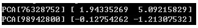</p>
<p>　　输出网络结构的深度遍历（部分截图）：</p>
<p></p>
<p>　　为了更好的展示转换行为构成的网络，我们还可以基于networkx构建有向图，通过matplotlib进行展示（ple.py）：</p>
<figure class="highlight plain"><table><tr><td class="gutter"><pre><span class="line">1</span><br><span class="line">2</span><br><span class="line">3</span><br><span class="line">4</span><br><span class="line">5</span><br><span class="line">6</span><br><span class="line">7</span><br><span class="line">8</span><br><span class="line">9</span><br><span class="line">10</span><br><span class="line">11</span><br><span class="line">12</span><br><span class="line">13</span><br><span class="line">14</span><br><span class="line">15</span><br><span class="line">16</span><br><span class="line">17</span><br><span class="line">18</span><br><span class="line">19</span><br><span class="line">20</span><br><span class="line">21</span><br><span class="line">22</span><br><span class="line">23</span><br><span class="line">24</span><br><span class="line">25</span><br><span class="line">26</span><br><span class="line">27</span><br><span class="line">28</span><br><span class="line">29</span><br><span class="line">30</span><br><span class="line">31</span><br><span class="line">32</span><br><span class="line">33</span><br><span class="line">34</span><br><span class="line">35</span><br><span class="line">36</span><br><span class="line">37</span><br><span class="line">38</span><br><span class="line">39</span><br><span class="line">40</span><br><span class="line">41</span><br><span class="line">42</span><br><span class="line">43</span><br><span class="line">44</span><br><span class="line">45</span><br><span class="line">46</span><br><span class="line">47</span><br><span class="line">48</span><br><span class="line">49</span><br><span class="line">50</span><br><span class="line">51</span><br><span class="line">52</span><br><span class="line">53</span><br><span class="line">54</span><br><span class="line">55</span><br><span class="line">56</span><br><span class="line">57</span><br><span class="line">58</span><br><span class="line">59</span><br><span class="line">60</span><br><span class="line">61</span><br><span class="line">62</span><br><span class="line">63</span><br><span class="line">64</span><br><span class="line">65</span><br><span class="line">66</span><br><span class="line">67</span><br><span class="line">68</span><br><span class="line">69</span><br><span class="line">70</span><br><span class="line">71</span><br></pre></td><td class="code"><pre><span class="line"> 1 #递归的方式进行深度遍历，生成基于networkx的有向图</span><br><span class="line"> 2 def _draw(G, root, nodeLabelDict, edgeLabelDict):</span><br><span class="line"> 3     nodeLabelDict[root.label] = root.name</span><br><span class="line"> 4     for transform in root.transformList:</span><br><span class="line"> 5         G.add_edge(root.label, transform.feature.label)</span><br><span class="line"> 6         edgeLabelDict[(root.label, transform.feature.label)] = transform.label</span><br><span class="line"> 7         _draw(G, transform.feature, nodeLabelDict, edgeLabelDict)</span><br><span class="line"> 8 </span><br><span class="line"> 9 #判断是否图是否存在环</span><br><span class="line">10 def _isCyclic(root, walked):</span><br><span class="line">11     if root in walked:</span><br><span class="line">12         return True</span><br><span class="line">13     else:</span><br><span class="line">14         walked.add(root)</span><br><span class="line">15         for transform in root.transformList:</span><br><span class="line">16             ret = _isCyclic(transform.feature, walked)</span><br><span class="line">17             if ret:</span><br><span class="line">18                 return True</span><br><span class="line">19         walked.remove(root)</span><br><span class="line">20         return False</span><br><span class="line">21 </span><br><span class="line">22 #广度遍历生成瀑布式布局</span><br><span class="line">23 def fall_layout(root, x_space=1, y_space=1):</span><br><span class="line">24     layout = &#123;&#125;</span><br><span class="line">25     if _isCyclic(root, set()):</span><br><span class="line">26         raise Exception(&apos;Graph is cyclic&apos;)</span><br><span class="line">27     </span><br><span class="line">28     queue = [None, root]</span><br><span class="line">29     nodeDict = &#123;&#125;</span><br><span class="line">30     levelDict = &#123;&#125;</span><br><span class="line">31     level = 0</span><br><span class="line">32     while len(queue) &gt; 0:</span><br><span class="line">33         head = queue.pop()</span><br><span class="line">34         if head is None:</span><br><span class="line">35             if len(queue) &gt; 0:</span><br><span class="line">36                 level += 1</span><br><span class="line">37                 queue.insert(0, None)</span><br><span class="line">38         else:</span><br><span class="line">39             if head in nodeDict:</span><br><span class="line">40                 levelDict[nodeDict[head]].remove(head)</span><br><span class="line">41             nodeDict[head] = level</span><br><span class="line">42             levelDict[level] = levelDict.get(level, []) + [head]</span><br><span class="line">43             for transform in head.transformList:</span><br><span class="line">44                 queue.insert(0, transform.feature)</span><br><span class="line">45 </span><br><span class="line">46     for level in levelDict.keys():</span><br><span class="line">47         nodeList = levelDict[level]</span><br><span class="line">48         n_nodes = len(nodeList)</span><br><span class="line">49         offset = - n_nodes / 2</span><br><span class="line">50         for i in range(n_nodes):</span><br><span class="line">51             layout[nodeList[i].label] = (level * x_space, (i + offset) * y_space)</span><br><span class="line">52 </span><br><span class="line">53     return layout</span><br><span class="line">54 </span><br><span class="line">55 def draw(root):</span><br><span class="line">56     G = nx.DiGraph()</span><br><span class="line">57     nodeLabelDict = &#123;&#125;</span><br><span class="line">58     edgeLabelDict = &#123;&#125;</span><br><span class="line">59 </span><br><span class="line">60     _draw(G, root, nodeLabelDict, edgeLabelDict)</span><br><span class="line">61     #设定网络布局方式为瀑布式</span><br><span class="line">62     pos = fall_layout(root)</span><br><span class="line">63 </span><br><span class="line">64     nx.draw_networkx_nodes(G,pos,node_size=100, node_color=&quot;white&quot;)</span><br><span class="line">65     nx.draw_networkx_edges(G,pos, width=1,alpha=0.5,edge_color=&apos;black&apos;)</span><br><span class="line">66     #设置网络中节点的标签内容及格式</span><br><span class="line">67     nx.draw_networkx_labels(G,pos,labels=nodeLabelDict, font_size=10,font_family=&apos;sans-serif&apos;)</span><br><span class="line">68     #设置网络中边的标签内容及格式</span><br><span class="line">69     nx.draw_networkx_edge_labels(G, pos, edgeLabelDict)</span><br><span class="line">70 </span><br><span class="line">71     plt.show()</span><br></pre></td></tr></table></figure>

<p>　　以图形界面展示网络的结构：</p>
<p>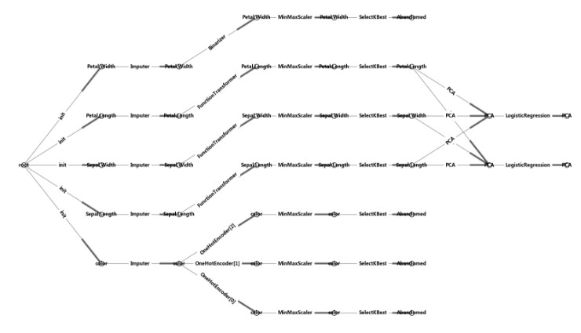</p>
<h1 id="6-总结"><a href="#6-总结" class="headerlink" title="6 总结"></a>6 总结</h1><p>　　记录下特征转换行为的最好时机其实是转换的同时。可惜的是，sklearn目前并不支持这样的功能。在本文中，将这一功能集中到流水线处理和并行处理的模块当中，只能算是一个临时的手段。</p>
<h1 id="7-参考资料"><a href="#7-参考资料" class="headerlink" title="7 参考资料"></a>7 参考资料</h1><ol>
<li><a href="http://www.cnblogs.com/jasonfreak/p/5448462.html" target="_blank" rel="noopener">《使用sklearn优雅地进行数据挖掘》</a></li>
<li><a href="http://www.cnblogs.com/jasonfreak/p/5448385.html" target="_blank" rel="noopener">《使用sklearn做单机特征工程》</a></li>
<li><a href="http://www.cnblogs.com/jasonfreak/p/5448462.html" target="_blank" rel="noopener">sklearn.preprocessing.OneHotEncoder</a></li>
</ol>

          
        
      
    </div>
    
    
    

    

    

    

    <footer class="post-footer">
      

      

      

      
      
        <div class="post-eof"></div>
      
    </footer>
  </div>
  
  
  
  </article>


    
      

  

  
  
  

  <article class="post post-type-normal" itemscope itemtype="http://schema.org/Article">
  
  
  
  <div class="post-block">
    <link itemprop="mainEntityOfPage" href="http://JackArch.github.io/2018/07/20/180720_使用sklearn做特征工程/">

    <span hidden itemprop="author" itemscope itemtype="http://schema.org/Person">
      <meta itemprop="name" content="zhuangzhouzhishui">
      <meta itemprop="description" content>
      <meta itemprop="image" content="/images/avatar.gif">
    </span>

    <span hidden itemprop="publisher" itemscope itemtype="http://schema.org/Organization">
      <meta itemprop="name" content="Deep  |  Mind">
    </span>

    
      <header class="post-header">

        
        
          <h1 class="post-title" itemprop="name headline">
                
                <a class="post-title-link" href="/2018/07/20/180720_使用sklearn做特征工程/" itemprop="url">使用sklearn做特征工程</a></h1>
        

        <div class="post-meta">
          <span class="post-time">
            
              <span class="post-meta-item-icon">
                <i class="fa fa-calendar-o"></i>
              </span>
              
                <span class="post-meta-item-text">Posted on</span>
              
              <time title="Post created" itemprop="dateCreated datePublished" datetime="2018-07-20T14:03:57+08:00">
                2018-07-20
              </time>
            

            

            
          </span>

          

          
            
          

          
          

          

          

          

        </div>
      </header>
    

    
    
    
    <div class="post-body" itemprop="articleBody">

      
      

      
        
          
            <h1 id="1-特征工程是什么？"><a href="#1-特征工程是什么？" class="headerlink" title="1 特征工程是什么？"></a>1 特征工程是什么？</h1><p>　　有这么一句话在业界广泛流传：数据和特征决定了机器学习的上限，而模型和算法只是逼近这个上限而已。那特征工程到底是什么呢？顾名思义，其本质是一项工程活动，目的是最大限度地从原始数据中提取特征以供算法和模型使用。通过总结和归纳，人们认为特征工程包括以下方面：</p>
<p></p>
<p>　　特征处理是特征工程的核心部分，sklearn提供了较为完整的特征处理方法，包括数据预处理，特征选择，降维等。首次接触到sklearn，通常会被其丰富且方便的算法模型库吸引，但是这里介绍的特征处理库也十分强大！</p>
<p>　　本文中使用sklearn中的<a href="http://scikit-learn.org/stable/modules/generated/sklearn.datasets.load_iris.html#sklearn.datasets.load_iris" target="_blank" rel="noopener">IRIS（鸢尾花）数据集</a>来对特征处理功能进行说明。IRIS数据集由Fisher在1936年整理，包含4个特征（Sepal.Length（花萼长度）、Sepal.Width（花萼宽度）、Petal.Length（花瓣长度）、Petal.Width（花瓣宽度）），特征值都为正浮点数，单位为厘米。目标值为鸢尾花的分类（Iris Setosa（山鸢尾）、Iris Versicolour（杂色鸢尾），Iris Virginica（维吉尼亚鸢尾））。导入IRIS数据集的代码如下：</p>
<figure class="highlight plain"><table><tr><td class="gutter"><pre><span class="line">1</span><br><span class="line">2</span><br><span class="line">3</span><br><span class="line">4</span><br><span class="line">5</span><br><span class="line">6</span><br><span class="line">7</span><br><span class="line">8</span><br><span class="line">9</span><br><span class="line">10</span><br></pre></td><td class="code"><pre><span class="line"> 1 from sklearn.datasets import load_iris</span><br><span class="line"> 2 </span><br><span class="line"> 3 #导入IRIS数据集</span><br><span class="line"> 4 iris = load_iris()</span><br><span class="line"> 5 </span><br><span class="line"> 6 #特征矩阵</span><br><span class="line"> 7 iris.data</span><br><span class="line"> 8 </span><br><span class="line"> 9 #目标向量</span><br><span class="line">10 iris.target</span><br></pre></td></tr></table></figure>

<h1 id="2-数据预处理"><a href="#2-数据预处理" class="headerlink" title="2 数据预处理"></a>2 数据预处理</h1><p>　　通过特征提取，我们能得到未经处理的特征，这时的特征可能有以下问题：</p>
<ul>
<li>不属于同一量纲：即特征的规格不一样，不能够放在一起比较。无量纲化可以解决这一问题。</li>
<li>信息冗余：对于某些定量特征，其包含的有效信息为区间划分，例如学习成绩，假若只关心“及格”或不“及格”，那么需要将定量的考分，转换成“1”和“0”表示及格和未及格。二值化可以解决这一问题。</li>
<li>定性特征不能直接使用：某些机器学习算法和模型只能接受定量特征的输入，那么需要将定性特征转换为定量特征。最简单的方式是为每一种定性值指定一个定量值，但是这种方式过于灵活，增加了调参的工作。<a href="http://www.ats.ucla.edu/stat/mult_pkg/faq/general/dummy.htm" target="_blank" rel="noopener">通常使用哑编码的方式将定性特征转换为定量特征</a>：假设有N种定性值，则将这一个特征扩展为N种特征，当原始特征值为第i种定性值时，第i个扩展特征赋值为1，其他扩展特征赋值为0。哑编码的方式相比直接指定的方式，不用增加调参的工作，对于线性模型来说，使用哑编码后的特征可达到非线性的效果。</li>
<li>存在缺失值：缺失值需要补充。</li>
<li>信息利用率低：不同的机器学习算法和模型对数据中信息的利用是不同的，之前提到在线性模型中，使用对定性特征哑编码可以达到非线性的效果。类似地，对定量变量多项式化，或者进行其他的转换，都能达到非线性的效果。</li>
</ul>
<p>　　我们使用sklearn中的preproccessing库来进行数据预处理，可以覆盖以上问题的解决方案。</p>
<h2 id="2-1-无量纲化"><a href="#2-1-无量纲化" class="headerlink" title="2.1 无量纲化"></a>2.1 无量纲化</h2><p>　　无量纲化使不同规格的数据转换到同一规格。常见的无量纲化方法有标准化和区间缩放法。标准化的前提是特征值服从正态分布，标准化后，其转换成标准正态分布。区间缩放法利用了边界值信息，将特征的取值区间缩放到某个特点的范围，例如[0, 1]等。</p>
<h3 id="2-1-1-标准化"><a href="#2-1-1-标准化" class="headerlink" title="2.1.1 标准化"></a>2.1.1 标准化</h3><p>　　标准化需要计算特征的均值和标准差，公式表达为：</p>
<p>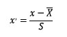</p>
<p>　　使用preproccessing库的StandardScaler类对数据进行标准化的代码如下：</p>
<figure class="highlight plain"><table><tr><td class="gutter"><pre><span class="line">1</span><br><span class="line">2</span><br><span class="line">3</span><br><span class="line">4</span><br></pre></td><td class="code"><pre><span class="line">1 from sklearn.preprocessing import StandardScaler</span><br><span class="line">2 </span><br><span class="line">3 #标准化，返回值为标准化后的数据</span><br><span class="line">4 StandardScaler().fit_transform(iris.data)</span><br></pre></td></tr></table></figure>

<h3 id="2-1-2-区间缩放法"><a href="#2-1-2-区间缩放法" class="headerlink" title="2.1.2 区间缩放法"></a>2.1.2 区间缩放法</h3><p>　　区间缩放法的思路有多种，常见的一种为利用两个最值进行缩放，公式表达为：</p>
<p>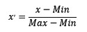</p>
<p>　　使用preproccessing库的MinMaxScaler类对数据进行区间缩放的代码如下：</p>
<figure class="highlight plain"><table><tr><td class="gutter"><pre><span class="line">1</span><br><span class="line">2</span><br><span class="line">3</span><br><span class="line">4</span><br></pre></td><td class="code"><pre><span class="line">1 from sklearn.preprocessing import MinMaxScaler</span><br><span class="line">2 </span><br><span class="line">3 #区间缩放，返回值为缩放到[0, 1]区间的数据</span><br><span class="line">4 MinMaxScaler().fit_transform(iris.data)</span><br></pre></td></tr></table></figure>

<h3 id="2-1-3-标准化与归一化的区别"><a href="#2-1-3-标准化与归一化的区别" class="headerlink" title="2.1.3 标准化与归一化的区别"></a>2.1.3 标准化与归一化的区别</h3><p>　　简单来说，标准化是依照特征矩阵的列处理数据，其通过求z-score的方法，将样本的特征值转换到同一量纲下。归一化是依照特征矩阵的行处理数据，其目的在于样本向量在点乘运算或其他核函数计算相似性时，拥有统一的标准，也就是说都转化为“单位向量”。规则为l2的归一化公式如下：</p>
<p></p>
<p>　　使用preproccessing库的Normalizer类对数据进行归一化的代码如下：</p>
<figure class="highlight plain"><table><tr><td class="gutter"><pre><span class="line">1</span><br><span class="line">2</span><br><span class="line">3</span><br><span class="line">4</span><br></pre></td><td class="code"><pre><span class="line">1 from sklearn.preprocessing import Normalizer</span><br><span class="line">2 </span><br><span class="line">3 #归一化，返回值为归一化后的数据</span><br><span class="line">4 Normalizer().fit_transform(iris.data)</span><br></pre></td></tr></table></figure>

<h2 id="2-2-对定量特征二值化"><a href="#2-2-对定量特征二值化" class="headerlink" title="2.2 对定量特征二值化"></a>2.2 对定量特征二值化</h2><p>　　定量特征二值化的核心在于设定一个阈值，大于阈值的赋值为1，小于等于阈值的赋值为0，公式表达如下：</p>
<p>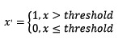</p>
<p>　　使用preproccessing库的Binarizer类对数据进行二值化的代码如下：</p>
<figure class="highlight plain"><table><tr><td class="gutter"><pre><span class="line">1</span><br><span class="line">2</span><br><span class="line">3</span><br><span class="line">4</span><br></pre></td><td class="code"><pre><span class="line">1 from sklearn.preprocessing import Binarizer</span><br><span class="line">2 </span><br><span class="line">3 #二值化，阈值设置为3，返回值为二值化后的数据</span><br><span class="line">4 Binarizer(threshold=3).fit_transform(iris.data)</span><br></pre></td></tr></table></figure>

<h2 id="2-3-对定性特征哑编码"><a href="#2-3-对定性特征哑编码" class="headerlink" title="2.3 对定性特征哑编码"></a>2.3 对定性特征哑编码</h2><p>　　由于IRIS数据集的特征皆为定量特征，故使用其目标值进行哑编码（实际上是不需要的）。使用preproccessing库的OneHotEncoder类对数据进行哑编码的代码如下：</p>
<figure class="highlight plain"><table><tr><td class="gutter"><pre><span class="line">1</span><br><span class="line">2</span><br><span class="line">3</span><br><span class="line">4</span><br></pre></td><td class="code"><pre><span class="line">1 from sklearn.preprocessing import OneHotEncoder</span><br><span class="line">2 </span><br><span class="line">3 #哑编码，对IRIS数据集的目标值，返回值为哑编码后的数据</span><br><span class="line">4 OneHotEncoder().fit_transform(iris.target.reshape((-1,1)))</span><br></pre></td></tr></table></figure>

<h2 id="2-4-缺失值计算"><a href="#2-4-缺失值计算" class="headerlink" title="2.4 缺失值计算"></a>2.4 缺失值计算</h2><p>　　由于IRIS数据集没有缺失值，故对数据集新增一个样本，4个特征均赋值为NaN，表示数据缺失。使用preproccessing库的Imputer类对数据进行缺失值计算的代码如下：</p>
<figure class="highlight plain"><table><tr><td class="gutter"><pre><span class="line">1</span><br><span class="line">2</span><br><span class="line">3</span><br><span class="line">4</span><br><span class="line">5</span><br><span class="line">6</span><br><span class="line">7</span><br></pre></td><td class="code"><pre><span class="line">1 from numpy import vstack, array, nan</span><br><span class="line">2 from sklearn.preprocessing import Imputer</span><br><span class="line">3 </span><br><span class="line">4 #缺失值计算，返回值为计算缺失值后的数据</span><br><span class="line">5 #参数missing_value为缺失值的表示形式，默认为NaN</span><br><span class="line">6 #参数strategy为缺失值填充方式，默认为mean（均值）</span><br><span class="line">7 Imputer().fit_transform(vstack((array([nan, nan, nan, nan]), iris.data)))</span><br></pre></td></tr></table></figure>

<h2 id="2-5-数据变换"><a href="#2-5-数据变换" class="headerlink" title="2.5 数据变换"></a>2.5 数据变换</h2><p>　　常见的数据变换有基于多项式的、基于指数函数的、基于对数函数的。4个特征，度为2的多项式转换公式如下：</p>
<p>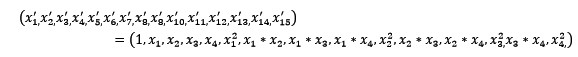</p>
<p>　　使用preproccessing库的PolynomialFeatures类对数据进行多项式转换的代码如下：</p>
<figure class="highlight plain"><table><tr><td class="gutter"><pre><span class="line">1</span><br><span class="line">2</span><br><span class="line">3</span><br><span class="line">4</span><br><span class="line">5</span><br></pre></td><td class="code"><pre><span class="line">1 from sklearn.preprocessing import PolynomialFeatures</span><br><span class="line">2 </span><br><span class="line">3 #多项式转换</span><br><span class="line">4 #参数degree为度，默认值为2</span><br><span class="line">5 PolynomialFeatures().fit_transform(iris.data)</span><br></pre></td></tr></table></figure>

<p>　　基于单变元函数的数据变换可以使用一个统一的方式完成，使用preproccessing库的FunctionTransformer对数据进行对数函数转换的代码如下：</p>
<figure class="highlight plain"><table><tr><td class="gutter"><pre><span class="line">1</span><br><span class="line">2</span><br><span class="line">3</span><br><span class="line">4</span><br><span class="line">5</span><br><span class="line">6</span><br></pre></td><td class="code"><pre><span class="line">1 from numpy import log1p</span><br><span class="line">2 from sklearn.preprocessing import FunctionTransformer</span><br><span class="line">3 </span><br><span class="line">4 #自定义转换函数为对数函数的数据变换</span><br><span class="line">5 #第一个参数是单变元函数</span><br><span class="line">6 FunctionTransformer(log1p).fit_transform(iris.data)</span><br></pre></td></tr></table></figure>

<h2 id="2-6-回顾"><a href="#2-6-回顾" class="headerlink" title="2.6 回顾"></a>2.6 回顾</h2><table>
<thead>
<tr>
<th>类</th>
<th>功能</th>
<th>说明</th>
</tr>
</thead>
<tbody><tr>
<td>StandardScaler</td>
<td>无量纲化</td>
<td>标准化，基于特征矩阵的列，将特征值转换至服从标准正态分布</td>
</tr>
<tr>
<td>MinMaxScaler</td>
<td>无量纲化</td>
<td>区间缩放，基于最大最小值，将特征值转换到[0, 1]区间上</td>
</tr>
<tr>
<td>Normalizer</td>
<td>归一化</td>
<td>基于特征矩阵的行，将样本向量转换为“单位向量”</td>
</tr>
<tr>
<td>Binarizer</td>
<td>二值化</td>
<td>基于给定阈值，将定量特征按阈值划分</td>
</tr>
<tr>
<td>OneHotEncoder</td>
<td>哑编码</td>
<td>将定性数据编码为定量数据</td>
</tr>
<tr>
<td>Imputer</td>
<td>缺失值计算</td>
<td>计算缺失值，缺失值可填充为均值等</td>
</tr>
<tr>
<td>PolynomialFeatures</td>
<td>多项式数据转换</td>
<td>多项式数据转换</td>
</tr>
<tr>
<td>FunctionTransformer</td>
<td>自定义单元数据转换</td>
<td>使用单变元的函数来转换数据</td>
</tr>
</tbody></table>
<h1 id="3-特征选择"><a href="#3-特征选择" class="headerlink" title="3 特征选择"></a>3 特征选择</h1><p>　　当数据预处理完成后，我们需要选择有意义的特征输入机器学习的算法和模型进行训练。通常来说，从两个方面考虑来选择特征：</p>
<ul>
<li>特征是否发散：如果一个特征不发散，例如方差接近于0，也就是说样本在这个特征上基本上没有差异，这个特征对于样本的区分并没有什么用。</li>
<li>特征与目标的相关性：这点比较显见，与目标相关性高的特征，应当优选选择。除方差法外，本文介绍的其他方法均从相关性考虑。</li>
</ul>
<p>　　根据特征选择的形式又可以将特征选择方法分为3种：</p>
<ul>
<li>Filter：过滤法，按照发散性或者相关性对各个特征进行评分，设定阈值或者待选择阈值的个数，选择特征。</li>
<li>Wrapper：包装法，根据目标函数（通常是预测效果评分），每次选择若干特征，或者排除若干特征。</li>
<li>Embedded：嵌入法，先使用某些机器学习的算法和模型进行训练，得到各个特征的权值系数，根据系数从大到小选择特征。类似于Filter方法，但是是通过训练来确定特征的优劣。</li>
</ul>
<p>　　我们使用sklearn中的feature_selection库来进行特征选择。</p>
<h2 id="3-1-Filter"><a href="#3-1-Filter" class="headerlink" title="3.1 Filter"></a>3.1 Filter</h2><h3 id="3-1-1-方差选择法"><a href="#3-1-1-方差选择法" class="headerlink" title="3.1.1 方差选择法"></a>3.1.1 方差选择法</h3><p>　　使用方差选择法，先要计算各个特征的方差，然后根据阈值，选择方差大于阈值的特征。使用feature_selection库的VarianceThreshold类来选择特征的代码如下：</p>
<figure class="highlight plain"><table><tr><td class="gutter"><pre><span class="line">1</span><br><span class="line">2</span><br><span class="line">3</span><br><span class="line">4</span><br><span class="line">5</span><br></pre></td><td class="code"><pre><span class="line">1 from sklearn.feature_selection import VarianceThreshold</span><br><span class="line">2 </span><br><span class="line">3 #方差选择法，返回值为特征选择后的数据</span><br><span class="line">4 #参数threshold为方差的阈值</span><br><span class="line">5 VarianceThreshold(threshold=3).fit_transform(iris.data)</span><br></pre></td></tr></table></figure>

<h3 id="3-1-2-相关系数法"><a href="#3-1-2-相关系数法" class="headerlink" title="3.1.2 相关系数法"></a>3.1.2 相关系数法</h3><p>　　使用相关系数法，先要计算各个特征对目标值的相关系数以及相关系数的P值。用feature_selection库的SelectKBest类结合相关系数来选择特征的代码如下：</p>
<figure class="highlight plain"><table><tr><td class="gutter"><pre><span class="line">1</span><br><span class="line">2</span><br><span class="line">3</span><br><span class="line">4</span><br><span class="line">5</span><br><span class="line">6</span><br><span class="line">7</span><br></pre></td><td class="code"><pre><span class="line">1 from sklearn.feature_selection import SelectKBest</span><br><span class="line">2 from scipy.stats import pearsonr</span><br><span class="line">3 </span><br><span class="line">4 #选择K个最好的特征，返回选择特征后的数据</span><br><span class="line">5 #第一个参数为计算评估特征是否好的函数，该函数输入特征矩阵和目标向量，输出二元组（评分，P值）的数组，数组第i项为第i个特征的评分和P值。在此定义为计算相关系数</span><br><span class="line">6 #参数k为选择的特征个数</span><br><span class="line">7 SelectKBest(lambda X, Y: array(map(lambda x:pearsonr(x, Y), X.T)).T, k=2).fit_transform(iris.data, iris.target)</span><br></pre></td></tr></table></figure>

<h3 id="3-1-3-卡方检验"><a href="#3-1-3-卡方检验" class="headerlink" title="3.1.3 卡方检验"></a>3.1.3 卡方检验</h3><p>　　经典的卡方检验是检验定性自变量对定性因变量的相关性。假设自变量有N种取值，因变量有M种取值，考虑自变量等于i且因变量等于j的样本频数的观察值与期望的差距，构建统计量：</p>
<p>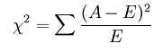</p>
<p>　　<a href="http://wiki.mbalib.com/wiki/卡方检验" target="_blank" rel="noopener">这个统计量的含义简而言之就是自变量对因变量的相关性</a>。用feature_selection库的SelectKBest类结合卡方检验来选择特征的代码如下：</p>
<figure class="highlight plain"><table><tr><td class="gutter"><pre><span class="line">1</span><br><span class="line">2</span><br><span class="line">3</span><br><span class="line">4</span><br><span class="line">5</span><br></pre></td><td class="code"><pre><span class="line">1 from sklearn.feature_selection import SelectKBest</span><br><span class="line">2 from sklearn.feature_selection import chi2</span><br><span class="line">3 </span><br><span class="line">4 #选择K个最好的特征，返回选择特征后的数据</span><br><span class="line">5 SelectKBest(chi2, k=2).fit_transform(iris.data, iris.target)</span><br></pre></td></tr></table></figure>

<h3 id="3-1-4-互信息法"><a href="#3-1-4-互信息法" class="headerlink" title="3.1.4 互信息法"></a>3.1.4 互信息法</h3><p>　　经典的互信息也是评价定性自变量对定性因变量的相关性的，互信息计算公式如下：</p>
<p></p>
<p>　　为了处理定量数据，最大信息系数法被提出，使用feature_selection库的SelectKBest类结合最大信息系数法来选择特征的代码如下：</p>
<figure class="highlight plain"><table><tr><td class="gutter"><pre><span class="line">1</span><br><span class="line">2</span><br><span class="line">3</span><br><span class="line">4</span><br><span class="line">5</span><br><span class="line">6</span><br><span class="line">7</span><br><span class="line">8</span><br><span class="line">9</span><br><span class="line">10</span><br><span class="line">11</span><br></pre></td><td class="code"><pre><span class="line"> 1 from sklearn.feature_selection import SelectKBest</span><br><span class="line"> 2 from minepy import MINE</span><br><span class="line"> 3 </span><br><span class="line"> 4 #由于MINE的设计不是函数式的，定义mic方法将其为函数式的，返回一个二元组，二元组的第2项设置成固定的P值0.5</span><br><span class="line"> 5 def mic(x, y):</span><br><span class="line"> 6     m = MINE()</span><br><span class="line"> 7     m.compute_score(x, y)</span><br><span class="line"> 8     return (m.mic(), 0.5)</span><br><span class="line"> 9 </span><br><span class="line">10 #选择K个最好的特征，返回特征选择后的数据</span><br><span class="line">11 SelectKBest(lambda X, Y: array(map(lambda x:mic(x, Y), X.T)).T, k=2).fit_transform(iris.data, iris.target)</span><br></pre></td></tr></table></figure>

<h2 id="3-2-Wrapper"><a href="#3-2-Wrapper" class="headerlink" title="3.2 Wrapper"></a>3.2 Wrapper</h2><h3 id="3-2-1-递归特征消除法"><a href="#3-2-1-递归特征消除法" class="headerlink" title="3.2.1 递归特征消除法"></a>3.2.1 递归特征消除法</h3><p>　　递归消除特征法使用一个基模型来进行多轮训练，每轮训练后，消除若干权值系数的特征，再基于新的特征集进行下一轮训练。使用feature_selection库的RFE类来选择特征的代码如下：</p>
<figure class="highlight plain"><table><tr><td class="gutter"><pre><span class="line">1</span><br><span class="line">2</span><br><span class="line">3</span><br><span class="line">4</span><br><span class="line">5</span><br><span class="line">6</span><br><span class="line">7</span><br></pre></td><td class="code"><pre><span class="line">1 from sklearn.feature_selection import RFE</span><br><span class="line">2 from sklearn.linear_model import LogisticRegression</span><br><span class="line">3 </span><br><span class="line">4 #递归特征消除法，返回特征选择后的数据</span><br><span class="line">5 #参数estimator为基模型</span><br><span class="line">6 #参数n_features_to_select为选择的特征个数</span><br><span class="line">7 RFE(estimator=LogisticRegression(), n_features_to_select=2).fit_transform(iris.data, iris.target)</span><br></pre></td></tr></table></figure>

<h2 id="3-3-Embedded"><a href="#3-3-Embedded" class="headerlink" title="3.3 Embedded"></a>3.3 Embedded</h2><h3 id="3-3-1-基于惩罚项的特征选择法"><a href="#3-3-1-基于惩罚项的特征选择法" class="headerlink" title="3.3.1 基于惩罚项的特征选择法"></a>3.3.1 基于惩罚项的特征选择法</h3><p>　　使用带惩罚项的基模型，除了筛选出特征外，同时也进行了降维。使用feature_selection库的SelectFromModel类结合带L1惩罚项的逻辑回归模型，来选择特征的代码如下：</p>
<figure class="highlight plain"><table><tr><td class="gutter"><pre><span class="line">1</span><br><span class="line">2</span><br><span class="line">3</span><br><span class="line">4</span><br><span class="line">5</span><br></pre></td><td class="code"><pre><span class="line">1 from sklearn.feature_selection import SelectFromModel</span><br><span class="line">2 from sklearn.linear_model import LogisticRegression</span><br><span class="line">3 </span><br><span class="line">4 #带L1惩罚项的逻辑回归作为基模型的特征选择</span><br><span class="line">5 SelectFromModel(LogisticRegression(penalty=&quot;l1&quot;, C=0.1)).fit_transform(iris.data, iris.target)</span><br></pre></td></tr></table></figure>

<p>　　<a href="http://www.zhihu.com/question/28641663/answer/41653367" target="_blank" rel="noopener">L1惩罚项降维的原理在于保留多个对目标值具有同等相关性的特征中的一个</a>，所以没选到的特征不代表不重要。故，可结合L2惩罚项来优化。具体操作为：若一个特征在L1中的权值为1，选择在L2中权值差别不大且在L1中权值为0的特征构成同类集合，将这一集合中的特征平分L1中的权值，故需要构建一个新的逻辑回归模型：</p>
<p> View Code</p>
<p>　　使用feature_selection库的SelectFromModel类结合带L1以及L2惩罚项的逻辑回归模型，来选择特征的代码如下：</p>
<figure class="highlight plain"><table><tr><td class="gutter"><pre><span class="line">1</span><br><span class="line">2</span><br><span class="line">3</span><br><span class="line">4</span><br><span class="line">5</span><br></pre></td><td class="code"><pre><span class="line">1 from sklearn.feature_selection import SelectFromModel</span><br><span class="line">2 </span><br><span class="line">3 #带L1和L2惩罚项的逻辑回归作为基模型的特征选择</span><br><span class="line">4 #参数threshold为权值系数之差的阈值</span><br><span class="line">5 SelectFromModel(LR(threshold=0.5, C=0.1)).fit_transform(iris.data, iris.target)</span><br></pre></td></tr></table></figure>

<h3 id="3-3-2-基于树模型的特征选择法"><a href="#3-3-2-基于树模型的特征选择法" class="headerlink" title="3.3.2 基于树模型的特征选择法"></a>3.3.2 基于树模型的特征选择法</h3><p>　　树模型中GBDT也可用来作为基模型进行特征选择，使用feature_selection库的SelectFromModel类结合GBDT模型，来选择特征的代码如下：</p>
<figure class="highlight plain"><table><tr><td class="gutter"><pre><span class="line">1</span><br><span class="line">2</span><br><span class="line">3</span><br><span class="line">4</span><br><span class="line">5</span><br></pre></td><td class="code"><pre><span class="line">1 from sklearn.feature_selection import SelectFromModel</span><br><span class="line">2 from sklearn.ensemble import GradientBoostingClassifier</span><br><span class="line">3 </span><br><span class="line">4 #GBDT作为基模型的特征选择</span><br><span class="line">5 SelectFromModel(GradientBoostingClassifier()).fit_transform(iris.data, iris.target)</span><br></pre></td></tr></table></figure>

<h2 id="3-4-回顾"><a href="#3-4-回顾" class="headerlink" title="3.4 回顾"></a>3.4 回顾</h2><table>
<thead>
<tr>
<th>类</th>
<th>所属方式</th>
<th>说明</th>
</tr>
</thead>
<tbody><tr>
<td>VarianceThreshold</td>
<td>Filter</td>
<td>方差选择法</td>
</tr>
<tr>
<td>SelectKBest</td>
<td>Filter</td>
<td>可选关联系数、卡方校验、最大信息系数作为得分计算的方法</td>
</tr>
<tr>
<td>RFE</td>
<td>Wrapper</td>
<td>递归地训练基模型，将权值系数较小的特征从特征集合中消除</td>
</tr>
<tr>
<td>SelectFromModel</td>
<td>Embedded</td>
<td>训练基模型，选择权值系数较高的特征</td>
</tr>
</tbody></table>
<hr>
<h1 id="4-降维"><a href="#4-降维" class="headerlink" title="4 降维"></a>4 降维</h1><p>　　当特征选择完成后，可以直接训练模型了，但是可能由于特征矩阵过大，导致计算量大，训练时间长的问题，因此降低特征矩阵维度也是必不可少的。常见的降维方法除了以上提到的基于L1惩罚项的模型以外，另外还有主成分分析法（PCA）和线性判别分析（LDA），线性判别分析本身也是一个分类模型。PCA和LDA有很多的相似点，其本质是要将原始的样本映射到维度更低的样本空间中，但是PCA和LDA的映射目标不一样：<a href="http://www.cnblogs.com/LeftNotEasy/archive/2011/01/08/lda-and-pca-machine-learning.html" target="_blank" rel="noopener">PCA是为了让映射后的样本具有最大的发散性；而LDA是为了让映射后的样本有最好的分类性能</a>。所以说PCA是一种无监督的降维方法，而LDA是一种有监督的降维方法。</p>
<h2 id="4-1-主成分分析法（PCA）"><a href="#4-1-主成分分析法（PCA）" class="headerlink" title="4.1 主成分分析法（PCA）"></a>4.1 主成分分析法（PCA）</h2><p>　　使用decomposition库的PCA类选择特征的代码如下：</p>
<figure class="highlight plain"><table><tr><td class="gutter"><pre><span class="line">1</span><br><span class="line">2</span><br><span class="line">3</span><br><span class="line">4</span><br><span class="line">5</span><br></pre></td><td class="code"><pre><span class="line">1 from sklearn.decomposition import PCA</span><br><span class="line">2 </span><br><span class="line">3 #主成分分析法，返回降维后的数据</span><br><span class="line">4 #参数n_components为主成分数目</span><br><span class="line">5 PCA(n_components=2).fit_transform(iris.data)</span><br></pre></td></tr></table></figure>

<h2 id="4-2-线性判别分析法（LDA）"><a href="#4-2-线性判别分析法（LDA）" class="headerlink" title="4.2 线性判别分析法（LDA）"></a>4.2 线性判别分析法（LDA）</h2><p>　　使用lda库的LDA类选择特征的代码如下：</p>
<figure class="highlight plain"><table><tr><td class="gutter"><pre><span class="line">1</span><br><span class="line">2</span><br><span class="line">3</span><br><span class="line">4</span><br><span class="line">5</span><br></pre></td><td class="code"><pre><span class="line">1 from sklearn.lda import LDA</span><br><span class="line">2 </span><br><span class="line">3 #线性判别分析法，返回降维后的数据</span><br><span class="line">4 #参数n_components为降维后的维数</span><br><span class="line">5 LDA(n_components=2).fit_transform(iris.data, iris.target)</span><br></pre></td></tr></table></figure>

<h2 id="4-3-回顾"><a href="#4-3-回顾" class="headerlink" title="4.3 回顾"></a>4.3 回顾</h2><table>
<thead>
<tr>
<th>库</th>
<th>类</th>
<th>说明</th>
</tr>
</thead>
<tbody><tr>
<td>decomposition</td>
<td>PCA</td>
<td>主成分分析法</td>
</tr>
<tr>
<td>lda</td>
<td>LDA</td>
<td>线性判别分析法</td>
</tr>
</tbody></table>

          
        
      
    </div>
    
    
    

    

    

    

    <footer class="post-footer">
      

      

      

      
      
        <div class="post-eof"></div>
      
    </footer>
  </div>
  
  
  
  </article>


    
      

  

  
  
  

  <article class="post post-type-normal" itemscope itemtype="http://schema.org/Article">
  
  
  
  <div class="post-block">
    <link itemprop="mainEntityOfPage" href="http://JackArch.github.io/2018/06/05/180605_GBDT+LR算法解析及Python实现/">

    <span hidden itemprop="author" itemscope itemtype="http://schema.org/Person">
      <meta itemprop="name" content="zhuangzhouzhishui">
      <meta itemprop="description" content>
      <meta itemprop="image" content="/images/avatar.gif">
    </span>

    <span hidden itemprop="publisher" itemscope itemtype="http://schema.org/Organization">
      <meta itemprop="name" content="Deep  |  Mind">
    </span>

    
      <header class="post-header">

        
        
          <h1 class="post-title" itemprop="name headline">
                
                <a class="post-title-link" href="/2018/06/05/180605_GBDT+LR算法解析及Python实现/" itemprop="url">GBDT+LR算法解析及Python实现</a></h1>
        

        <div class="post-meta">
          <span class="post-time">
            
              <span class="post-meta-item-icon">
                <i class="fa fa-calendar-o"></i>
              </span>
              
                <span class="post-meta-item-text">Posted on</span>
              
              <time title="Post created" itemprop="dateCreated datePublished" datetime="2018-06-05T17:53:12+08:00">
                2018-06-05
              </time>
            

            

            
          </span>

          

          
            
          

          
          

          

          

          

        </div>
      </header>
    

    
    
    
    <div class="post-body" itemprop="articleBody">

      
      

      
        
          
            <h2 id="1-GBDT-LR-是什么"><a href="#1-GBDT-LR-是什么" class="headerlink" title="1. GBDT + LR 是什么"></a>1. GBDT + LR 是什么</h2><p>本质上GBDT+LR是一种具有stacking思想的二分类器模型，所以可以用来解决二分类问题。这个方法出自于Facebook 2014年的论文 <a href="https://pdfs.semanticscholar.org/daf9/ed5dc6c6bad5367d7fd8561527da30e9b8dd.pdf" target="_blank" rel="noopener">Practical Lessons from Predicting Clicks on Ads at Facebook</a> 。</p>
<h2 id="2-GBDT-LR-用在哪"><a href="#2-GBDT-LR-用在哪" class="headerlink" title="2. GBDT + LR 用在哪"></a>2. GBDT + LR 用在哪</h2><p>GBDT+LR 使用最广泛的场景是CTR点击率预估，即预测当给用户推送的广告会不会被用户点击。</p>
<p>点击率预估模型涉及的训练样本一般是上亿级别，样本量大，模型常采用速度较快的LR。但LR是线性模型，学习能力有限，此时特征工程尤其重要。现有的特征工程实验，主要集中在寻找到有区分度的特征、特征组合，折腾一圈未必会带来效果提升。GBDT算法的特点正好可以用来发掘有区分度的特征、特征组合，减少特征工程中人力成本。</p>
<p>从知乎<a href="https://zhuanlan.zhihu.com/p/29053940" target="_blank" rel="noopener">https://zhuanlan.zhihu.com/p/29053940</a>上看到了一个关于CTR的流程，如下图所示：</p>
<h2 id><a href="#" class="headerlink" title></a></h2><p>如上图，主要包括两大部分：离线部分、在线部分，其中离线部分目标主要是训练出可用模型，而在线部分则考虑模型上线后，性能可能随时间而出现下降，弱出现这种情况，可选择使用Online-Learning来在线更新模型：</p>
<h4 id="2-1-离线部分"><a href="#2-1-离线部分" class="headerlink" title="2.1 离线部分"></a>2.1 离线部分</h4><ol>
<li>数据收集：主要收集和业务相关的数据，通常会有专门的同事在app位置进行埋点，拿到业务数据</li>
<li>预处理：对埋点拿到的业务数据进行去脏去重；</li>
<li>构造数据集：经过预处理的业务数据，构造数据集，在切分训练、测试、验证集时应该合理根据业务逻辑来进行切分；</li>
<li>特征工程：对原始数据进行基本的特征处理，包括去除相关性大的特征，离散变量one-hot，连续特征离散化等等;</li>
<li>模型选择：选择合理的机器学习模型来完成相应工作，原则是先从简入深，先找到baseline，然后逐步优化；</li>
<li>超参选择：利用gridsearch、randomsearch或者hyperopt来进行超参选择，选择在离线数据集中性能最好的超参组合；</li>
<li>在线A/B Test：选择优化过后的模型和原先模型（如baseline）进行A/B Test，若性能有提升则替换原先模型；</li>
</ol>
<h4 id="2-2-在线部分"><a href="#2-2-在线部分" class="headerlink" title="2.2 在线部分"></a>2.2 在线部分</h4><ol>
<li>Cache &amp; Logic：设定简单过滤规则，过滤异常数据；</li>
<li>模型更新：当Cache &amp; Logic 收集到合适大小数据时，对模型进行pretrain+finetuning，若在测试集上比原始模型性能高，则更新model server的模型参数；</li>
<li>Model Server：接受数据请求，返回预测结果；</li>
</ol>
<h2 id="3-GBDT-LR-的结构"><a href="#3-GBDT-LR-的结构" class="headerlink" title="3. GBDT + LR 的结构"></a>3. GBDT + LR 的结构</h2><p>正如它的名字一样，GBDT+LR 由两部分组成，其中GBDT用来对训练集提取特征作为新的训练输入数据，LR作为新训练输入数据的分类器。</p>
<p>具体来讲，有以下几个步骤：</p>
<p><strong>3.1</strong> GBDT首先对原始训练数据做训练，得到一个二分类器，当然这里也需要利用网格搜索寻找最佳参数组合。</p>
<p><strong>3.2</strong> 与通常做法不同的是，当GBDT训练好做预测的时候，输出的并不是最终的二分类概率值，而是要把模型中的每棵树计算得到的预测概率值所属的叶子结点位置记为1，这样，就构造出了新的训练数据。</p>
<p>举个例子，下图是一个GBDT+LR 模型结构，设GBDT有两个弱分类器，分别以蓝色和红色部分表示，其中蓝色弱分类器的叶子结点个数为3，红色弱分类器的叶子结点个数为2，并且蓝色弱分类器中对0-1 的预测结果落到了第二个叶子结点上，红色弱分类器中对0-1 的预测结果也落到了第二个叶子结点上。那么我们就记蓝色弱分类器的预测结果为[0 1 0]，红色弱分类器的预测结果为[0 1]，综合起来看，GBDT的输出为这些弱分类器的组合[0 1 0 0 1] ，或者一个稀疏向量（数组）。</p>
<p>这里的思想与One-hot独热编码类似，事实上，在用GBDT构造新的训练数据时，采用的也正是One-hot方法。并且由于每一弱分类器有且只有一个叶子节点输出预测结果，所以在一个具有n个弱分类器、共计m个叶子结点的GBDT中，每一条训练数据都会被转换为1*m维稀疏向量，且有n个元素为1，其余m-n 个元素全为0。</p>
<p><strong>3.3</strong> 新的训练数据构造完成后，下一步就要与原始的训练数据中的label(输出)数据一并输入到Logistic Regression分类器中进行最终分类器的训练。思考一下，在对原始数据进行GBDT提取为新的数据这一操作之后，数据不仅变得稀疏，而且由于弱分类器个数，叶子结点个数的影响，可能会导致新的训练数据特征维度过大的问题，因此，在Logistic Regression这一层中，可使用正则化来减少过拟合的风险，在Facebook的论文中采用的是L1正则化。</p>
<p></p>
<h2 id="4-RF-LR-Xgb-LR"><a href="#4-RF-LR-Xgb-LR" class="headerlink" title="4. RF + LR ? Xgb + LR?"></a>4. RF + LR ? Xgb + LR?</h2><p>有心的同学应该会思考一个问题，既然GBDT可以做新训练样本的构造，那么其它基于树的模型，例如Random Forest以及Xgboost等是并不是也可以按类似的方式来构造新的训练样本呢？没错，所有这些基于树的模型都可以和Logistic Regression分类器组合。至于效果孰优孰劣，我个人觉得效果都还可以，但是之间没有可比性，因为超参数的不同会对模型评估产生较大的影响。下图是RF+LR、GBT+LR、Xgb、LR、Xgb+LR 模型效果对比图，然而这只能做个参考，因为模型超参数的值的选择这一前提条件都各不相同。</p>
<p>顺便来讲，RF也是多棵树，但从效果上有实践证明不如GBDT。且GBDT前面的树，特征分裂主要体现对多数样本有区分度的特征；后面的树，主要体现的是经过前N颗树，残差仍然较大的少数样本。优先选用在整体上有区分度的特征，再选用针对少数样本有区分度的特征，思路更加合理，这应该也是用GBDT的原因。</p>
<p> </p>
<p> </p>
<h2 id="5-GBDT-LR-代码分析"><a href="#5-GBDT-LR-代码分析" class="headerlink" title="5. GBDT + LR 代码分析"></a>5. GBDT + LR 代码分析</h2><p>在网上找到了两个版本的GBDT+LR的代码实现，通过阅读分析，认为里面有一些细节还是值得好好学习一番的，所以接下来这一小节会针对代码实现部分做一些总结。</p>
<p>首先，目前我所了解到的GBDT的实现方式有两种：一是利用Scikit-learn中的ensemble.GradientBoostingClassifier ，二是利用lgb里的params={ ‘boosting_type’: ‘gbdt’ }参数。接下里分别对这两种实现方式进行分析。</p>
<h4 id="5-1-Scikit-learn的实现："><a href="#5-1-Scikit-learn的实现：" class="headerlink" title="5.1 Scikit-learn的实现："></a>5.1 Scikit-learn的实现：</h4><figure class="highlight plain"><table><tr><td class="gutter"><pre><span class="line">1</span><br><span class="line">2</span><br><span class="line">3</span><br><span class="line">4</span><br><span class="line">5</span><br><span class="line">6</span><br><span class="line">7</span><br><span class="line">8</span><br><span class="line">9</span><br><span class="line">10</span><br><span class="line">11</span><br><span class="line">12</span><br><span class="line">13</span><br><span class="line">14</span><br><span class="line">15</span><br><span class="line">16</span><br><span class="line">17</span><br><span class="line">18</span><br><span class="line">19</span><br></pre></td><td class="code"><pre><span class="line">from sklearn.preprocessing import OneHotEncoder</span><br><span class="line">from sklearn.ensemble import GradientBoostingClassifier</span><br><span class="line"></span><br><span class="line"></span><br><span class="line">gbm1 = GradientBoostingClassifier(n_estimators=50, random_state=10, subsample=0.6, max_depth=7,</span><br><span class="line">                                  min_samples_split=900)</span><br><span class="line">gbm1.fit(X_train, Y_train)</span><br><span class="line">train_new_feature = gbm1.apply(X_train)</span><br><span class="line">train_new_feature = train_new_feature.reshape(-1, 50)</span><br><span class="line"></span><br><span class="line">enc = OneHotEncoder()</span><br><span class="line"></span><br><span class="line">enc.fit(train_new_feature)</span><br><span class="line"></span><br><span class="line"># # 每一个属性的最大取值数目</span><br><span class="line"># print(&apos;每一个特征的最大取值数目:&apos;, enc.n_values_)</span><br><span class="line"># print(&apos;所有特征的取值数目总和:&apos;, enc.n_values_.sum())</span><br><span class="line"></span><br><span class="line">train_new_feature2 = np.array(enc.transform(train_new_feature).toarray())</span><br></pre></td></tr></table></figure>

<h4 id="划重点："><a href="#划重点：" class="headerlink" title="划重点："></a>划重点：</h4><h4 id="5-1-1-model-apply-X-train-的用法"><a href="#5-1-1-model-apply-X-train-的用法" class="headerlink" title="5.1.1 model.apply(X_train)的用法"></a>5.1.1 model.apply(X_train)的用法</h4><p>model.apply(X_train)返回训练数据X_train在训练好的模型里每棵树中所处的叶子节点的位置（索引）</p>
<h4 id="5-1-2-sklearn-preprocessing-中OneHotEncoder的使用"><a href="#5-1-2-sklearn-preprocessing-中OneHotEncoder的使用" class="headerlink" title="5.1.2 sklearn.preprocessing 中OneHotEncoder的使用"></a>5.1.2 sklearn.preprocessing 中OneHotEncoder的使用</h4><p>除了pandas中的 get_dummies()，sklearn也提供了一种对Dataframe做One-hot的方法。</p>
<p>OneHotEncoder() 首先fit() 过待转换的数据后，再次transform() 待转换的数据，就可实现对这些数据的所有特征进行One-hot 操作。</p>
<p>由于transform() 后的数据格式不能直接使用，所以最后需要使用.toarray() 将其转换为我们能够使用的数组结构。</p>
<blockquote>
<p>enc.transform(train_new_feature).toarray()</p>
</blockquote>
<h4 id="5-1-3-sklearn中的GBDT-能够设置树的个数，每棵树最大叶子节点个数等超参数，但不能指定每颗树的叶子节点数。"><a href="#5-1-3-sklearn中的GBDT-能够设置树的个数，每棵树最大叶子节点个数等超参数，但不能指定每颗树的叶子节点数。" class="headerlink" title="5.1.3 sklearn中的GBDT 能够设置树的个数，每棵树最大叶子节点个数等超参数，但不能指定每颗树的叶子节点数。"></a>5.1.3 sklearn中的GBDT 能够设置树的个数，每棵树最大叶子节点个数等超参数，但不能指定每颗树的叶子节点数。</h4><h4 id="5-2-lightgbm-的实现"><a href="#5-2-lightgbm-的实现" class="headerlink" title="5.2 lightgbm 的实现"></a>5.2 lightgbm 的实现</h4><figure class="highlight plain"><table><tr><td class="gutter"><pre><span class="line">1</span><br><span class="line">2</span><br><span class="line">3</span><br><span class="line">4</span><br><span class="line">5</span><br><span class="line">6</span><br><span class="line">7</span><br><span class="line">8</span><br><span class="line">9</span><br><span class="line">10</span><br><span class="line">11</span><br><span class="line">12</span><br><span class="line">13</span><br><span class="line">14</span><br><span class="line">15</span><br><span class="line">16</span><br><span class="line">17</span><br><span class="line">18</span><br><span class="line">19</span><br><span class="line">20</span><br><span class="line">21</span><br><span class="line">22</span><br><span class="line">23</span><br><span class="line">24</span><br><span class="line">25</span><br><span class="line">26</span><br><span class="line">27</span><br><span class="line">28</span><br><span class="line">29</span><br><span class="line">30</span><br><span class="line">31</span><br><span class="line">32</span><br><span class="line">33</span><br><span class="line">34</span><br><span class="line">35</span><br><span class="line">36</span><br><span class="line">37</span><br><span class="line">38</span><br><span class="line">39</span><br><span class="line">40</span><br><span class="line">41</span><br><span class="line">42</span><br><span class="line">43</span><br><span class="line">44</span><br><span class="line">45</span><br><span class="line">46</span><br><span class="line">47</span><br><span class="line">48</span><br><span class="line">49</span><br><span class="line">50</span><br><span class="line">51</span><br><span class="line">52</span><br><span class="line">53</span><br><span class="line">54</span><br></pre></td><td class="code"><pre><span class="line">params = &#123;</span><br><span class="line">    &apos;task&apos;: &apos;train&apos;,</span><br><span class="line">    &apos;boosting_type&apos;: &apos;gbdt&apos;,</span><br><span class="line">    &apos;objective&apos;: &apos;binary&apos;,</span><br><span class="line">    &apos;metric&apos;: &#123;&apos;binary_logloss&apos;&#125;,</span><br><span class="line">    &apos;num_leaves&apos;: 64,</span><br><span class="line">    &apos;num_trees&apos;: 100,</span><br><span class="line">    &apos;learning_rate&apos;: 0.01,</span><br><span class="line">    &apos;feature_fraction&apos;: 0.9,</span><br><span class="line">    &apos;bagging_fraction&apos;: 0.8,</span><br><span class="line">    &apos;bagging_freq&apos;: 5,</span><br><span class="line">    &apos;verbose&apos;: 0</span><br><span class="line">&#125;</span><br><span class="line"></span><br><span class="line"></span><br><span class="line"># number of leaves,will be used in feature transformation</span><br><span class="line">num_leaf = 64</span><br><span class="line"></span><br><span class="line">print(&apos;Start training...&apos;)</span><br><span class="line"># train</span><br><span class="line">gbm = lgb.train(params=params,</span><br><span class="line">                train_set=lgb_train,</span><br><span class="line">                valid_sets=lgb_train, )</span><br><span class="line"></span><br><span class="line"></span><br><span class="line">print(&apos;Start predicting...&apos;)</span><br><span class="line"># y_pred分别落在100棵树上的哪个节点上</span><br><span class="line">y_pred = gbm.predict(x_train, pred_leaf=True)</span><br><span class="line">y_pred_prob = gbm.predict(x_train)</span><br><span class="line"></span><br><span class="line"></span><br><span class="line">result = []</span><br><span class="line">threshold = 0.5</span><br><span class="line">for pred in y_pred_prob:</span><br><span class="line">    result.append(1 if pred &gt; threshold else 0)</span><br><span class="line">print(&apos;result:&apos;, result)</span><br><span class="line"></span><br><span class="line"></span><br><span class="line">print(&apos;Writing transformed training data&apos;)</span><br><span class="line">transformed_training_matrix = np.zeros([len(y_pred), len(y_pred[1]) * num_leaf],</span><br><span class="line">                                       dtype=np.int64)  # N * num_tress * num_leafs</span><br><span class="line">for i in range(0, len(y_pred)):</span><br><span class="line">    # temp表示在每棵树上预测的值所在节点的序号（0,64,128,...,6436 为100棵树的序号，中间的值为对应树的节点序号）</span><br><span class="line">    temp = np.arange(len(y_pred[0])) * num_leaf + np.array(y_pred[i])</span><br><span class="line">    # 构造one-hot 训练数据集</span><br><span class="line">    transformed_training_matrix[i][temp] += 1</span><br><span class="line"></span><br><span class="line">y_pred = gbm.predict(x_test, pred_leaf=True)</span><br><span class="line">print(&apos;Writing transformed testing data&apos;)</span><br><span class="line">transformed_testing_matrix = np.zeros([len(y_pred), len(y_pred[1]) * num_leaf], dtype=np.int64)</span><br><span class="line">for i in range(0, len(y_pred)):</span><br><span class="line">    temp = np.arange(len(y_pred[0])) * num_leaf + np.array(y_pred[i])</span><br><span class="line">    # 构造one-hot 测试数据集</span><br><span class="line">    transformed_testing_matrix[i][temp] += 1</span><br></pre></td></tr></table></figure>

<h4 id="划重点：-1"><a href="#划重点：-1" class="headerlink" title="划重点："></a><strong>划重点：</strong></h4><h4 id="5-2-1-params-字典里超参数的设置"><a href="#5-2-1-params-字典里超参数的设置" class="headerlink" title="5.2.1 params 字典里超参数的设置"></a>5.2.1 params 字典里超参数的设置</h4><p>因为是二分类问题，所以设置 {‘boosting_type’: ‘gbdt’,’objective’: ‘binary’,’metric’: {‘binary_logloss’}}，然后设置树的个数及每棵树的叶子结点个数{‘num_leaves’: 64,’num_trees’: 100}</p>
<h4 id="5-2-2-model-predict-x-train-pred-leaf-True"><a href="#5-2-2-model-predict-x-train-pred-leaf-True" class="headerlink" title="5.2.2 model.predict(x_train, pred_leaf=True)"></a>5.2.2 model.predict(x_train, pred_leaf=True)</h4><p>使用</p>
<blockquote>
<p>model.predict(x_train, pred_leaf=True) </p>
</blockquote>
<p>返回训练数据在训练好的模型里预测结果所在的每棵树中叶子节点的位置（索引），形式为7999*100的二维数组。</p>
<h4 id="5-2-3-构造Ont-hot数组作为新的训练数据"><a href="#5-2-3-构造Ont-hot数组作为新的训练数据" class="headerlink" title="5.2.3 构造Ont-hot数组作为新的训练数据"></a>5.2.3 构造Ont-hot数组作为新的训练数据</h4><p>这里并没有使用sklearn中的OneHotEncoder()，也没有使用pandas中的get_dummies()，而是手工创建一个One-hot数组。(当然也可以像5.1.2 那样操作)</p>
<ol>
<li>首先，创建一个二维零数组用于存放one-hot的元素；</li>
<li>然后，获取第2步得到的二维数组里每个叶子节点在整个GBDT模型里的索引号，因为一共有100棵树，每棵树有64个叶子节点，所以索引范围是0~6400；（这里有一个技巧，通过把每棵树的起点索引组成一个列表，再加上由落在每棵树叶子节点的索引组成的列表，就得到了往二维零数组里插入元素的索引信息）</li>
<li>最后，</li>
</ol>
<blockquote>
<p>temp = np.arange(len(y_pred[0])) * num_leaf + np.array(y_pred[i])</p>
</blockquote>
<h4 id="5-2-4-对二维数组填充信息，采用”-”-的方法"><a href="#5-2-4-对二维数组填充信息，采用”-”-的方法" class="headerlink" title="5.2.4 对二维数组填充信息，采用”+=” 的方法"></a>5.2.4 对二维数组填充信息，采用”+=” 的方法</h4><p># 构造one-hot 训练数据集</p>
<blockquote>
<p>transformed_training_matrix[i][temp] += 1</p>
</blockquote>
<h2 id="6-GBDT-LR-模型提升"><a href="#6-GBDT-LR-模型提升" class="headerlink" title="6. GBDT + LR 模型提升"></a><strong>6. GBDT + LR 模型提升</strong></h2><p>现在，我们思考这样一个问题，Logistic Regression是一个线性分类器，也就是说会忽略掉特征与特征之间的关联信息，那么是否可以采用构建新的交叉特征这一特征组合方式从而提高模型的效果？</p>
<p>其次，我们已经在2.3小节中了解到GBDT很有可能构造出的新训练数据是高维的稀疏矩阵，而Logistic Regression使用高维稀疏矩阵进行训练，会直接导致计算量过大，特征权值更新缓慢的问题。</p>
<p>针对上面可能出现的问题，可以翻看我之前的文章：<a href="https://www.cnblogs.com/wkang/p/9588360.html" target="_blank" rel="noopener">FM算法解析及Python实现</a> ，使用FM算法代替LR，这样就解决了Logistic Regression的模型表达效果及高维稀疏矩阵的训练开销较大的问题。然而，这样就意味着可以高枕无忧了吗？当然不是，因为采用FM对本来已经是高维稀疏矩阵做完特征交叉后，新的特征维度会更加多，并且由于元素非0即1，新的特征数据可能也会更加稀疏，那么怎么办？</p>
<p>所以，我们需要再次回到GBDT构造新训练数据这里。当GBDT构造完新的训练样本后，我们要做的是对每一个特征做与输出之间的特征重要度评估并筛选出重要程度较高的部分特征，这样，GBDT构造的高维的稀疏矩阵就会减少一部分特征，也就是说得到的稀疏矩阵不再那么高维了。之后，对这些筛选后得到的重要度较高的特征再做FM算法构造交叉项，进而引入非线性特征，继而完成最终分类器的训练数据的构造及模型的训练。</p>
<h2 id="7-参考资料"><a href="#7-参考资料" class="headerlink" title="7. 参考资料"></a>7. 参考资料</h2><p>[1] <a href="https://blog.csdn.net/lilyth_lilyth/article/details/48032119" target="_blank" rel="noopener">CTR预估中GBDT与LR融合方案</a></p>
<p>[2] <a href="https://zhuanlan.zhihu.com/p/29053940" target="_blank" rel="noopener">常见计算广告点击率预估算法总结</a></p>
<p>[3] <a href="https://blog.csdn.net/twt520ly/article/details/79769705" target="_blank" rel="noopener">GBDT+LR算法进行特征扩增</a></p>
<p>[4] <a href="https://www.jianshu.com/p/96173f2c2fb4" target="_blank" rel="noopener">推荐系统遇上深度学习(十)–GBDT+LR融合方案实战</a></p>

          
        
      
    </div>
    
    
    

    

    

    

    <footer class="post-footer">
      

      

      

      
      
        <div class="post-eof"></div>
      
    </footer>
  </div>
  
  
  
  </article>


    
      

  

  
  
  

  <article class="post post-type-normal" itemscope itemtype="http://schema.org/Article">
  
  
  
  <div class="post-block">
    <link itemprop="mainEntityOfPage" href="http://JackArch.github.io/2018/05/18/180518_如何高效学习/">

    <span hidden itemprop="author" itemscope itemtype="http://schema.org/Person">
      <meta itemprop="name" content="zhuangzhouzhishui">
      <meta itemprop="description" content>
      <meta itemprop="image" content="/images/avatar.gif">
    </span>

    <span hidden itemprop="publisher" itemscope itemtype="http://schema.org/Organization">
      <meta itemprop="name" content="Deep  |  Mind">
    </span>

    
      <header class="post-header">

        
        
          <h1 class="post-title" itemprop="name headline">
                
                <a class="post-title-link" href="/2018/05/18/180518_如何高效学习/" itemprop="url">如何高效学习</a></h1>
        

        <div class="post-meta">
          <span class="post-time">
            
              <span class="post-meta-item-icon">
                <i class="fa fa-calendar-o"></i>
              </span>
              
                <span class="post-meta-item-text">Posted on</span>
              
              <time title="Post created" itemprop="dateCreated datePublished" datetime="2018-05-18T16:37:09+08:00">
                2018-05-18
              </time>
            

            

            
          </span>

          

          
            
          

          
          

          

          

          

        </div>
      </header>
    

    
    
    
    <div class="post-body" itemprop="articleBody">

      
      

      
        
          
            <h2 id="如何高效学习"><a href="#如何高效学习" class="headerlink" title="如何高效学习"></a>如何高效学习</h2><p>　　IT 行业是一个变化非常快的行业，它需要我们持续去学习新的知识和技能。但是，工作以后，我们经常会发现自己学习的东西很少了，倒不是没有时间去学习，而是学习的效率太低了。久而久之，就演变成『一年的工作经验，重复用十年』。</p>
<p>　　当然，有些人会说自己经常加班，没有时间学习，这只是表象，时间挤挤总是有的。你想想你为了上王者，浪费了多少时间？为了刷今日头条，又消磨了多少光阴？</p>
<p>　　另外，很多人推崇碎片化学习，但是有一些东西碎片化学习效率是很低的，比如数学。</p>
<p>　　这篇文章是我学习完 coursera 上面的《Learning How to Learn》MOOC加上我自己多年来的学习经验积累整理而来。</p>
<p>　　注：文中可能有一些内容思考没有很深入，另外一些观点可能还需要更多的时间去检验，读者请自行甄别。</p>
<h2 id="1-一些学习的坏习惯"><a href="#1-一些学习的坏习惯" class="headerlink" title="　　1 一些学习的坏习惯"></a>　　1 一些学习的坏习惯</h2><h3 id="1-1-被动反复阅读"><a href="#1-1-被动反复阅读" class="headerlink" title="　　1.1 被动反复阅读"></a>　　1.1 被动反复阅读</h3><p>　　通常编程新手在学习一个新东西的时候，喜欢买一本权威指南之类的书（大神或者同事推荐），比如《C++ Primer》和《Javascript 权威指南》。而这样一本书，一般页数在700-1400页左右，要完整读完，在不求甚解的基础之上大概要花费好几个月甚至大半年时间。别说是新手，就算是一个C++编程老手去读《Javascript 权威指南》这样的书也不可能在只阅读一遍之后就能理解。这时，很多人会选择重复多次阅读。有人会从头开始重复阅读，也有人只挑不理解的章节来阅读。我以前上大学那会儿就是这么干的，读了好多C++的书籍，其实自己编写的C++代码并不多，也没有做过大型的C++项目。看了好多书，其实都是一知半解，效率很低。工作以后，这种学习方式更加不可取，因为你没有那么多时间这么干。</p>
<h3 id="1-2-喜欢在书上划重点"><a href="#1-2-喜欢在书上划重点" class="headerlink" title="　　1.2 喜欢在书上划重点"></a>　　1.2 喜欢在书上划重点</h3><p>　　很多人偏好纸质书，因为在看书的时候手感不错，另外，还可以在书上把喜欢的句子和重点的段落用彩色笔标注出来。这样做除了给自己造成一种假象「书上的重点我都标出来了，所以我都掌握了」之外，其实并无多大益处。我现在喜欢在电脑上面看PDF，可以边看边写代码。</p>
<p>　　读书的时候，还有一个误区，就是大脑被动地跟着作者的思路在走，如果是一本经典的书，你会每每被作者的真知灼见所震惊，一种「于我心有戚戚焉」的感觉由然而生。如果作者的书写枯燥乏味，估计看几页你就丢到一边去了。在看书的时候，头脑中要有自我意识，要感觉自己在跟作者对话，对于作者的观点不能一味全盘吸收，可以看一会儿，停下来，问几个为什么。</p>
<p>　　另外，我并不是说划重点是不好的，只是划重点的效率没有想像中的高。划重点有点像收集资料和网页链接，在你收集了一大堆PDF和视频教程之后，你会得到一种满足，但是这并不代表你真正学到了东西，这个是要非常警惕的。</p>
<h3 id="1-3-看书中代码示例认为自己就理解了，从不动手编程"><a href="#1-3-看书中代码示例认为自己就理解了，从不动手编程" class="headerlink" title="　　1.3 看书中代码示例认为自己就理解了，从不动手编程"></a>　　1.3 看书中代码示例认为自己就理解了，从不动手编程</h3><p>　　这是新手学编程的大忌，不去动手写，不去跟编译器和开发环境做斗争，你永远不知道软件开发过程中的操蛋事情。</p>
<h3 id="1-4-拖延"><a href="#1-4-拖延" class="headerlink" title="　　1.4 拖延"></a>　　1.4 拖延</h3><p>　　这个问题最大，也是影响N多人不去学习的理由。解决的办法只有一个，马上去做！一旦你开始去做了，你的大脑就不会排斥了。你的计划再完美，你选的书籍再经典，你挑的视频水平再高，如果你不马上去看，去学，去动手实践，那永远也只是停留在空想的阶段。成功学习的典范就是成功战胜拖延症的典范。</p>
<h3 id="1-5-学习任何东西，只停留在编写「Hello-World」的水平"><a href="#1-5-学习任何东西，只停留在编写「Hello-World」的水平" class="headerlink" title="　　1.5 学习任何东西，只停留在编写「Hello World」的水平"></a>　　1.5 学习任何东西，只停留在编写「Hello World」的水平</h3><p>　　这个是什么意思呢？不是说你真的只会写「Hello World」，而是说要跳出自己的舒适区，去尝试一些自己不了解的领域，去做一些超过自己能力范围的事情 。</p>
<h3 id="1-6-喜欢加QQ群和微信群，美其名曰「技术交流」"><a href="#1-6-喜欢加QQ群和微信群，美其名曰「技术交流」" class="headerlink" title="　　1.6 喜欢加QQ群和微信群，美其名曰「技术交流」"></a>　　1.6 喜欢加QQ群和微信群，美其名曰「技术交流」</h3><p>　　这是国内技术圈的一大通病，可能刚开始会聊点技术，但是时间一长就水了。好好的技术群一秒钟就可能变成水群。而且经常还有老司机冒然发车，此时马上有人冒出一句「留图不留种，菊花万人捅」。</p>
<p>　　我强烈建议大家不要过渡依赖Q群和微信群来学习技术或者解决问题，技术论坛，Stackoverflow 和 Github issue 是你更好的去处。</p>
<h3 id="1-7-天天熬夜打王者和LOL，睡眠严重不足"><a href="#1-7-天天熬夜打王者和LOL，睡眠严重不足" class="headerlink" title="　　1.7 天天熬夜打王者和LOL，睡眠严重不足"></a>　　1.7 天天熬夜打王者和LOL，睡眠严重不足</h3><p>　　实践证明，睡眠不足，啥事也干不成，只想睡觉。有人会说我晚上不到那个点睡不着，我这里有一招。拿着一本 Kindle，挑一本英文书，躺在床上看，半小时保管睡着。虽然说看书的效果不一定佳，但是催眠也是极好的。</p>
<h3 id="1-8-工作中遇到模糊的问题不搞清楚，停留在面向-Google-编程"><a href="#1-8-工作中遇到模糊的问题不搞清楚，停留在面向-Google-编程" class="headerlink" title="　　1.8 工作中遇到模糊的问题不搞清楚，停留在面向 Google 编程"></a>　　1.8 工作中遇到模糊的问题不搞清楚，停留在面向 Google 编程</h3><p>　　遇到问题，不假思索「百度」和「Google」，虽然现在80%的问题都可以找到解决方案，但是这样做对于自己并无多大益处。找到解决方案之后，还要花几分钟时间探寻问题根源。可以查找背景资料，以便自己下次遇到同类型的问题时可以举一反三。</p>
<h3 id="1-9-看几分钟书，敲几行代码就开始刷知乎和朋友圈"><a href="#1-9-看几分钟书，敲几行代码就开始刷知乎和朋友圈" class="headerlink" title="　　1.9 看几分钟书，敲几行代码就开始刷知乎和朋友圈"></a>　　1.9 看几分钟书，敲几行代码就开始刷知乎和朋友圈</h3><p>　　做事情不专注，注意力不能集中，这也是学习的大忌。可以利用番茄工作法，给自己一段时间专注于某件事情，这样可以极大地提高自己的工作效率。</p>
<h3 id="1-10-从不看书，所有问题的解决方案都从论坛，Q群和Google中来"><a href="#1-10-从不看书，所有问题的解决方案都从论坛，Q群和Google中来" class="headerlink" title="　　1.10 从不看书，所有问题的解决方案都从论坛，Q群和Google中来"></a>　　1.10 从不看书，所有问题的解决方案都从论坛，Q群和Google中来</h3><p>　　认为看书效率太低，而且收益也不高，看书需要大量的时间，而且看完感觉也没太大的用，不如直接Google和Q群来得容易。如果你真的这样想过，我只想说「小伙子，你思想很危险！」</p>
<h2 id="2-一些学习的好习惯"><a href="#2-一些学习的好习惯" class="headerlink" title="　　2 一些学习的好习惯"></a>　　2 一些学习的好习惯</h2><h3 id="2-1-与其反复阅读，不如经常回顾"><a href="#2-1-与其反复阅读，不如经常回顾" class="headerlink" title="　　2.1 与其反复阅读，不如经常回顾"></a>　　2.1 与其反复阅读，不如经常回顾</h3><p>　　与其一遍又一遍地阅读重复的书籍，编写同样的「Hello World」，不如有意识地总结回顾看过的书，学过的知识。只需要每晚趟在床上的时候，回想一下今天都学到了什么？今天自己有进步一点点吗？</p>
<h3 id="2-2-多做练习，多写代码，从错误中学习"><a href="#2-2-多做练习，多写代码，从错误中学习" class="headerlink" title="　　2.2 多做练习，多写代码，从错误中学习"></a>　　2.2 多做练习，多写代码，从错误中学习</h3><p>　　看技术书籍要多写书中的代码，在初学阶段哪怕对着书本敲也没有什么问题。认真完成书中留的习题，在自己没有尽最大努力的情况下面不要去看答案。不要怕犯错，每一次犯错都是自己进步的机会。不断地测试自己是最好的学习方法，不管是「刻意练习」还是「10000小时定律」，都要求我们通过不断地实践来巩固我们的所学，从而让自己成为大师。</p>
<h3 id="2-3-多总结问题的解决方案，多写可复用的代码，拒绝复制粘贴"><a href="#2-3-多总结问题的解决方案，多写可复用的代码，拒绝复制粘贴" class="headerlink" title="　　2.3 多总结问题的解决方案，多写可复用的代码，拒绝复制粘贴"></a>　　2.3 多总结问题的解决方案，多写可复用的代码，拒绝复制粘贴</h3><p>　　每天把工作中遇到问题的解决方案总结一下，想想为什么要这么做，是什么导致了这个BUG，导致BUG的根本原因是什么。是自己的逻辑混乱，粗心大意，还是程序框架太复杂？做需求的时候，要尽量避免复制粘贴，不要让代码里面有重复代码。Don’t Repeat Yourself! Don’t Repeat Yourself! Don’t Repeat Yourself! 「重要的事情说三遍！」</p>
<h3 id="2-4-对于自己想要学习的内容，制订一下计划，有节奏地学习"><a href="#2-4-对于自己想要学习的内容，制订一下计划，有节奏地学习" class="headerlink" title="　　2.4 对于自己想要学习的内容，制订一下计划，有节奏地学习"></a>　　2.4 对于自己想要学习的内容，制订一下计划，有节奏地学习</h3><p>　　我是一个非常爱学习的人，但是有时候还是感觉学习不够高效。经常会由于一些突发情况把原本的学习计划打乱，导致学习效果打折扣。因为学习一个东西最怕三天打渔，如果能够持续地学习一个东西，我可以把它学习地很好。这时候，我就得结合我自身的情况，选择一段最佳的学习时间，在这段学习时间里我可以不被打扰，保持高度专注。比如每天早上6.30起床看一个小时书。</p>
<h3 id="2-5-尝试使用不同的方式来解决一个问题"><a href="#2-5-尝试使用不同的方式来解决一个问题" class="headerlink" title="　　2.5 尝试使用不同的方式来解决一个问题"></a>　　2.5 尝试使用不同的方式来解决一个问题</h3><p>　　在遇到一个没有显而易见解决方案的问题时，你可能费了好大功夫想出一个方案，但是千万要记得，该方案不一定是最优的，而且很大可能还存在一个更佳的方法。而这个方法只需要你退后一步，换个思路，或者与同事讨论一下就可以得出。这也是我为什么非常喜欢别人 Review 我的代码的原因，因为别人能看到我代码中存在的不足。另外，有些时候，对现有的方案做一些「微创新」也能使原本普通的方案变得不普通。</p>
<p>　　另外，习惯了面向对象，何不尝尝函数式编程？每年学习一门新的不同范式的编程语言，可以极大地开拓你的眼界，给你一些不一样的解题思路。</p>
<h3 id="2-6-注意劳逸结合"><a href="#2-6-注意劳逸结合" class="headerlink" title="　　2.6 注意劳逸结合"></a>　　2.6 注意劳逸结合</h3><p>　　多参加体育锻炼，多去户外走走，运动能够增强人的记忆力，并且有时候还能产生灵感。如果身体不好，比如颈椎不好，下了班你就只想葛优躺了，因为你的本能告诉你，我不能再写代码了，会挂的。。。想要成为大神，身体好是前提条件。有人30岁成为大神，我资质不好，我35岁成为大神总可以吧。切莫在30岁的时候就把身体弄跨了，然后35岁转行了，永远失去了成长为大神的机会。</p>
<h3 id="2-7-向别人解释你的知识，多与人讨论"><a href="#2-7-向别人解释你的知识，多与人讨论" class="headerlink" title="　　2.7 向别人解释你的知识，多与人讨论"></a>　　2.7 向别人解释你的知识，多与人讨论</h3><p>　　多写博客，多分享自己的所学所思，这些对于学习者自身也是非常有益的。通过用别人能够理解的语言来解释你学到的东西，本身就要求你对该知识充分理解。另外，很多人经常感叹「跟你讨论一下，我马上变得有思路了」，这其实就是交流的作用。</p>
<h3 id="2-8-保持学习的专注"><a href="#2-8-保持学习的专注" class="headerlink" title="　　2.8 保持学习的专注"></a>　　2.8 保持学习的专注</h3><p>　　很多知识没有足够的专注力和足够多的时间是很难学好的，保持学习的专注尤其重要。因为人的大脑在专注模式下面，神经细胞更活跃，你学的东西更容易从短期记忆变成中长期记忆。而且在高度专注下面，你的解决问题的能力也会提高，原本看起来复杂的东西，在专注面前说不定就不是事了。</p>
<h3 id="2-9-找到自己的短板并补足自己的短板"><a href="#2-9-找到自己的短板并补足自己的短板" class="headerlink" title="　　2.9 找到自己的短板并补足自己的短板"></a>　　2.9 找到自己的短板并补足自己的短板</h3><p>　　发现并找到自己的不足相对来说是比较容易的，但是要补齐短板就非常不易了。因为人总是有畏难思想的，拖延症是怎么来的，就是你的大脑出于本能去做一些让自己分泌更多多巴胺的事情。如果自己英语不好，就要下决心把英语攻克。如果自己数学不行，就要下死力气掌握数学。补齐短板就像渡劫，越早渡劫，越快升仙。</p>
<h3 id="2-10-给自己设计学习奖励"><a href="#2-10-给自己设计学习奖励" class="headerlink" title="　　2.10 给自己设计学习奖励"></a>　　2.10 给自己设计学习奖励</h3><p>　　比如学好了 3D 数学，就给自己买一台顶配 MacBook Pro 之类的。为什么游戏可以让你上瘾，因为它有反馈，有奖励机制。学习数学是非常枯燥的，如果有了这个奖励机制，也许自己就更容易坚持了呢。</p>
<p>　　PS：这一点对于有家室的程序员有用，你想学好什么，要获得什么奖励，你可以当着你老婆的面立个FLAG</p>
<h2 id="3-小结"><a href="#3-小结" class="headerlink" title="　　3 小结"></a>　　3 小结</h2><p>　　Coursera 的这门MOOC 《Learning How to Learn》 强烈推荐给每一伴热爱学习的小伙伴，也欢迎大家给我留言，分享你的学习感悟。</p>

          
        
      
    </div>
    
    
    

    

    

    

    <footer class="post-footer">
      

      

      

      
      
        <div class="post-eof"></div>
      
    </footer>
  </div>
  
  
  
  </article>


    
      

  

  
  
  

  <article class="post post-type-normal" itemscope itemtype="http://schema.org/Article">
  
  
  
  <div class="post-block">
    <link itemprop="mainEntityOfPage" href="http://JackArch.github.io/2018/04/09/180409_卷积神经网络算法的一个实现 /">

    <span hidden itemprop="author" itemscope itemtype="http://schema.org/Person">
      <meta itemprop="name" content="zhuangzhouzhishui">
      <meta itemprop="description" content>
      <meta itemprop="image" content="/images/avatar.gif">
    </span>

    <span hidden itemprop="publisher" itemscope itemtype="http://schema.org/Organization">
      <meta itemprop="name" content="Deep  |  Mind">
    </span>

    
      <header class="post-header">

        
        
          <h1 class="post-title" itemprop="name headline">
                
                <a class="post-title-link" href="/2018/04/09/180409_卷积神经网络算法的一个实现 /" itemprop="url">卷积神经网络算法的一个实现</a></h1>
        

        <div class="post-meta">
          <span class="post-time">
            
              <span class="post-meta-item-icon">
                <i class="fa fa-calendar-o"></i>
              </span>
              
                <span class="post-meta-item-text">Posted on</span>
              
              <time title="Post created" itemprop="dateCreated datePublished" datetime="2018-04-09T10:16:37+08:00">
                2018-04-09
              </time>
            

            

            
          </span>

          

          
            
          

          
          

          

          

          

        </div>
      </header>
    

    
    
    
    <div class="post-body" itemprop="articleBody">

      
      

      
        
          
            <h1 id="前言"><a href="#前言" class="headerlink" title="前言"></a><strong>前言</strong></h1><p>卷积神经网络CNN是Deep Learning的一个重要算法，在很多应用上表现出卓越的效果，中对比多重算法在文档字符识别的效果，结论是CNN优于其他所有的算法。CNN在手写体识别取得最好的效果，将CNN应用在基于人脸的性别识别，效果也非常不错。BP神经网络对手机拍照图片的数字进行识别，效果还算不错，接近98%，但在汉字识别上表现不佳，于是想试试卷积神经网络。</p>
<h1 id="1、CNN的整体网络结构"><a href="#1、CNN的整体网络结构" class="headerlink" title="1、CNN的整体网络结构"></a><strong>1、CNN的整体网络结构</strong></h1><p>　　卷积神经网络是在BP神经网络的改进，与BP类似，都采用了前向传播计算输出值，反向传播调整权重和偏置；CNN与标准的BP最大的不同是：CNN中相邻层之间的神经单元并不是全连接，而是部分连接，也就是某个神经单元的感知区域来自于上层的部分神经单元，而不是像BP那样与所有的神经单元相连接。CNN的有三个重要的思想架构：</p>
<ul>
<li>局部区域感知</li>
<li>权重共享</li>
<li>空间或时间上的采样</li>
</ul>
<p>　　局部区域感知能够发现数据的一些局部特征，比如图片上的一个角，一段弧，这些基本特征是构成动物视觉的基础；而BP中，所有的像素点是一堆混乱的点，相互之间的关系没有被挖掘。</p>
<p>　　CNN中每一层的由多个map组成，每个map由多个神经单元组成，同一个map的所有神经单元共用一个卷积核（即权重），卷积核往往代表一个特征，比如某个卷积和代表一段弧，那么把这个卷积核在整个图片上滚一下，卷积值较大的区域就很有可能是一段弧。注意卷积核其实就是权重，我们并不需要单独去计算一个卷积，而是一个固定大小的权重矩阵去图像上匹配时，这个操作与卷积类似，因此我们称为卷积神经网络，实际上，BP也可以看做一种特殊的卷积神经网络，只是这个卷积核就是某层的所有权重，即感知区域是整个图像。权重共享策略减少了需要训练的参数，使得训练出来的模型的泛华能力更强。</p>
<p>　　采样的目的主要是混淆特征的具体位置，因为某个特征找出来后，它的具体位置已经不重要了，我们只需要这个特征与其他的相对位置，比如一个“8”，当我们得到了上面一个”o”时，我们不需要知道它在图像的具体位置，只需要知道它下面又是一个“o”我们就可以知道是一个’8’了，因为图片中”8”在图片中偏左或者偏右都不影响我们认识它，这种混淆具体位置的策略能对变形和扭曲的图片进行识别。</p>
<p>　　CNN的这三个特点是其对输入数据在空间（主要针对图像数据）上和时间（主要针对时间序列数据，参考<a href="http://en.wikipedia.org/wiki/Time_delay_neural_network" target="_blank" rel="noopener">TDNN</a>）上的扭曲有很强的鲁棒性。CNN一般采用卷积层与采样层交替设置，即一层卷积层接一层采样层，采样层后接一层卷积…这样卷积层提取出特征，再进行组合形成更抽象的特征，最后形成对图片对象的描述特征，CNN后面还可以跟全连接层，全连接层跟BP一样。下面是一个卷积神经网络的示例：</p>
<p></p>
<p>图1（<a href="https://www.cnblogs.com/fengfenggirl/p/cnn_implement.html#refren1" target="_blank" rel="noopener">图片来源</a>）</p>
<p>　　卷积神经网络的基本思想是这样，但具体实现有多重版本，我参考了matlab的Deep Learning的工具箱<a href="https://github.com/rasmusbergpalm/DeepLearnToolbox" target="_blank" rel="noopener">DeepLearnToolbox</a>，这里实现的CNN与其他最大的差别是采样层没有权重和偏置，仅仅只对卷积层进行一个采样过程，这个工具箱的测试数据集是MINIST，每张图像是28*28大小，它实现的是下面这样一个CNN：</p>
<p></p>
<p>图2</p>
<h1 id="2、网络初始化"><a href="#2、网络初始化" class="headerlink" title="2、网络初始化"></a><strong>2、网络初始化</strong></h1><p>　　CNN的初始化主要是初始化卷积层和输出层的卷积核（权重）和偏置，<a href="https://github.com/rasmusbergpalm/DeepLearnToolbox" target="_blank" rel="noopener">DeepLearnToolbox</a>里面对卷积核和权重进行随机初始化，而对偏置进行全0初始化。</p>
<h1 id="3、前向传输计算"><a href="#3、前向传输计算" class="headerlink" title="3、前向传输计算"></a><strong>3、前向传输计算</strong></h1><p>　　前向计算时，输入层、卷积层、采样层、输出层的计算方式不相同。</p>
<p>　　<strong>3.1 输入层</strong>：输入层没有输入值，只有一个输出向量，这个向量的大小就是图片的大小，即一个28*28矩阵;</p>
<p>　　<strong>3.2 卷积层</strong>：卷积层的输入要么来源于输入层，要么来源于采样层，如上图红色部分。卷积层的每一个map都有一个大小相同的卷积核，Toolbox里面是5<em>5的卷积核。下面是一个示例，为了简单起见，卷积核大小为2</em>2，上一层的特征map大小为4<em>4，用这个卷积在图片上滚一遍，得到一个一个(4-2+1)</em>（4-2+1）=3<em>3的特征map，卷积核每次移动一步，因此。在Toolbox的实现中，卷积层的一个map与上层的所有map都关联，如上图的S2和C3，即C3共有6</em>12个卷积核，卷积层的每一个特征map是不同的卷积核在前一层所有map上作卷积并将对应元素累加后加一个偏置，再求sigmod得到的。还有需要注意的是，卷积层的map个数是在网络初始化指定的，而卷积层的map的大小是由卷积核和上一层输入map的大小决定的，假设上一层的map大小是n<em>n、卷积核的大小是k</em>k，则该层的map大小是(n-k+1)<em>(n-k+1)，比如上图的24</em>24的map大小24=（28-5+1）。 斯坦福的<a href="http://deeplearning.stanford.edu/wiki/index.php/卷积特征提取" target="_blank" rel="noopener">深度学习教程</a>更加详细的介绍了卷积特征提取的计算过程。                                                                       </p>
<p>　　图3</p>
<p>　　<strong>3.3 采样层（subsampling,Pooling）</strong>：采样层是对上一层map的一个采样处理，这里的采样方式是对上一层map的相邻小区域进行聚合统计，区域大小为scale<em>scale，有些实现是取小区域的最大值，而ToolBox里面的实现是采用2</em>2小区域的均值。注意，卷积的计算窗口是有重叠的，而采用的计算窗口没有重叠，ToolBox里面计算采样也是用卷积(conv2(A,K,’valid’))来实现的，卷积核是2*2，每个元素都是1/4，去掉计算得到的卷积结果中有重叠的部分，即：                                                                </p>
<p>图4</p>
<h1 id="4、反向传输调整权重"><a href="#4、反向传输调整权重" class="headerlink" title="4、反向传输调整权重"></a><strong>4、反向传输调整权重</strong></h1><p>　　反向传输过程是CNN最复杂的地方，虽然从宏观上来看基本思想跟BP一样，都是通过最小化残差来调整权重和偏置，但CNN的网络结构并不像BP那样单一，对不同的结构处理方式不一样，而且因为权重共享，使得计算残差变得很困难，很多论文<a href="https://www.cnblogs.com/fengfenggirl/p/cnn_implement.html#refren1" target="_blank" rel="noopener">[1]</a><a href="https://www.cnblogs.com/fengfenggirl/p/cnn_implement.html#ref5" target="_blank" rel="noopener">[5]</a>和文章<a href="https://www.cnblogs.com/fengfenggirl/p/cnn_implement.html#ref4" target="_blank" rel="noopener">[4]</a>都进行了详细的讲述，但我发现还是有一些细节没有讲明白，特别是采样层的残差计算，我会在这里详细讲述。</p>
<p>　　<strong>4.1输出层的残差</strong></p>
<p>　　和BP一样，CNN的输出层的残差与中间层的残差计算方式不同，输出层的残差是输出值与类标值得误差值，而中间各层的残差来源于下一层的残差的加权和。输出层的残差计算如下：</p>
<p></p>
<p><a href="http://deeplearning.stanford.edu/wiki/index.php/反向传导算法" target="_blank" rel="noopener">公式来源</a></p>
<p>　　这个公式不做解释，可以查看公式来源，看斯坦福的深度学习教程的解释。</p>
<p>　　<strong>4.2 下一层为采样层（subsampling）的卷积层的残差</strong></p>
<p>　　当一个卷积层L的下一层(L+1)为采样层，并假设我们已经计算得到了采样层的残差，现在计算该卷积层的残差。从最上面的网络结构图我们知道，采样层（L+1）的map大小是卷积层L的1/（scale<em>scale），ToolBox里面，scale取2，但这两层的map个数是一样的，卷积层L的某个map中的4个单元与L+1层对应map的一个单元关联，可以对采样层的残差与一个scale</em>scale的全1矩阵进行<a href="http://zh.wikipedia.org/wiki/克罗内克积" target="_blank" rel="noopener">克罗内克积</a>进行扩充，使得采样层的残差的维度与上一层的输出map的维度一致，Toolbox的代码如下，其中d表示残差，a表示输出值：</p>
<figure class="highlight plain"><table><tr><td class="gutter"><pre><span class="line">1</span><br></pre></td><td class="code"><pre><span class="line">net.layers&#123;l&#125;.d&#123;j&#125; = net.layers&#123;l&#125;.a&#123;j&#125; .* (1 - net.layers&#123;l&#125;.a&#123;j&#125;) .* expand(net.layers&#123;l + 1&#125;.d&#123;j&#125;, [net.layers&#123;l + 1&#125;.scale net.layers&#123;l + 1&#125;.scale 1])</span><br></pre></td></tr></table></figure>


<p>　　扩展过程：</p>
<p></p>
<p>图5</p>
<p>　　利用卷积计算卷积层的残差：</p>
<p></p>
<p>图6</p>
<p>　　<strong>4.3 下一层为卷积层（subsampling）的采样层的残差</strong></p>
<p>　　当某个采样层L的下一层是卷积层(L+1)，并假设我们已经计算出L+1层的残差，现在计算L层的残差。采样层到卷积层直接的连接是有权重和偏置参数的，因此不像卷积层到采样层那样简单。现再假设L层第j个map Mj与L+1层的M2j关联，按照BP的原理，L层的残差Dj是L+1层残差D2j的加权和，但是这里的困难在于，我们很难理清M2j的那些单元通过哪些权重与Mj的哪些单元关联，Toolbox里面还是采用卷积（稍作变形）巧妙的解决了这个问题，其代码为：</p>
<figure class="highlight plain"><table><tr><td class="gutter"><pre><span class="line">1</span><br></pre></td><td class="code"><pre><span class="line">convn(net.layers&#123;l + 1&#125;.d&#123;j&#125;, rot180(net.layers&#123;l + 1&#125;.k&#123;i&#125;&#123;j&#125;), &apos;full&apos;);</span><br></pre></td></tr></table></figure>


<figure class="highlight plain"><table><tr><td class="gutter"><pre><span class="line">1</span><br></pre></td><td class="code"><pre><span class="line">rot180表示对矩阵进行180度旋转（可通过行对称交换和列对称交换完成），为什么这里要对卷积核进行旋转，答案是：通过这个旋转，&apos;full&apos;模式下得卷积的正好抓住了前向传输计算上层map单元与卷积和及当期层map的关联关系，需要注意的是matlab的内置函数convn在计算卷积前，会对卷积核进行一次旋转，因此我们之前的所有卷积的计算都对卷积核进行了旋转：</span><br></pre></td></tr></table></figure>


<figure class="highlight plain"><table><tr><td class="gutter"><pre><span class="line">1</span><br><span class="line">2</span><br><span class="line">3</span><br><span class="line">4</span><br><span class="line">5</span><br><span class="line">6</span><br><span class="line">7</span><br><span class="line">8</span><br><span class="line">9</span><br><span class="line">10</span><br><span class="line">11</span><br><span class="line">12</span><br><span class="line">13</span><br><span class="line">14</span><br><span class="line">15</span><br><span class="line">16</span><br><span class="line">17</span><br></pre></td><td class="code"><pre><span class="line">a =</span><br><span class="line">     1     1     1</span><br><span class="line">     1     1     1</span><br><span class="line">     1     1     1</span><br><span class="line">k =</span><br><span class="line">     1     2     3</span><br><span class="line">     4     5     6</span><br><span class="line">     7     8     9</span><br><span class="line"></span><br><span class="line">&gt;&gt; convn(a,k,&apos;full&apos;)</span><br><span class="line">ans =</span><br><span class="line"></span><br><span class="line">     1     3     6     5     3</span><br><span class="line">     5    12    21    16     9</span><br><span class="line">    12    27    45    33    18</span><br><span class="line">    11    24    39    28    15</span><br><span class="line">     7    15    24    17     9</span><br></pre></td></tr></table></figure>

<p> 　　convn在计算前还会对待卷积矩阵进行0扩展，如果卷积核为k<em>k，待卷积矩阵为n</em>n，需要以n<em>n原矩阵为中心扩展到(n+2(k-1))</em>(n+2(k-1))，所有上面convn(a,k,’full’)的计算过程如下：</p>
<p></p>
<p>图7</p>
<figure class="highlight plain"><table><tr><td class="gutter"><pre><span class="line">1</span><br></pre></td><td class="code"><pre><span class="line">实际上convn内部是否旋转对网络训练没有影响，只要内部保持一致（即都要么旋转，要么都不旋转），所有我的卷积实现里面没有对卷积核旋转。如果在convn计算前，先对卷积核旋转180度，然后convn内部又对其旋转180度，相当于卷积核没有变。</span><br></pre></td></tr></table></figure>


<p>　　为了描述清楚对卷积核旋转180与卷积层的残差的卷积所关联的权重与单元，正是前向计算所关联的权重与单元，我们选一个稍微大一点的卷积核，即假设卷积层采用用3<em>3的卷积核，其上一层采样层的输出map的大小是5</em>5，那么前向传输由采样层得到卷积层的过程如下：</p>
<p></p>
<p>图8</p>
<p>　　这里我们采用自己实现的convn（即内部不会对卷积核旋转），并假定上面的矩阵A、B下标都从1开始，那么有：</p>
<figure class="highlight plain"><table><tr><td class="gutter"><pre><span class="line">1</span><br><span class="line">2</span><br><span class="line">3</span><br><span class="line">4</span><br><span class="line">5</span><br><span class="line">6</span><br><span class="line">7</span><br><span class="line">8</span><br><span class="line">9</span><br></pre></td><td class="code"><pre><span class="line">B11 = A11*K11 + A12*K12 + A13*K13 + A21*K21 + A22*K22 + A23*K23 + A31*K31 + A32*K32 + A33*K33</span><br><span class="line">B12 = A12*K11 + A13*K12 + A14*K13 + A22*K21 + A23*K22 + A24*K23 + A32*K31 + A33*K32 + A34*K33</span><br><span class="line">B13 = A13*K11 + A14*K12 + A15*K13 + A23*K21 + A24*K22 + A25*K23 + A33*K31 + A34*K32 + A35*K33</span><br><span class="line">B21 = A21*K11 + A22*K12 + A23*K13 + A31*K21 + A32*K22 + A33*K23 + A41*K31 + A42*K32 + A43*K33</span><br><span class="line">B22 = A22*K11 + A23*K12 + A24*K13 + A32*K21 + A33*K22 + A34*K23 + A42*K31 + A43*K32 + A44*K33</span><br><span class="line">B23 = A23*K11 + A24*K12 + A25*K13 + A33*K21 + A34*K22 + A35*K23 + A43*K31 + A44*K32 + A45*K33</span><br><span class="line">B31 = A31*K11 + A32*K12 + A33*K13 + A41*K21 + A42*K22 + A43*K23 + A51*K31 + A52*K32 + A53*K33</span><br><span class="line">B32 = A32*K11 + A33*K12 + A34*K13 + A42*K21 + A43*K22 + A44*K23 + A52*K31 + A53*K32 + A54*K33</span><br><span class="line">B33 = A33*K11 + A34*K12 + A35*K13 + A43*K21 + A44*K22 + A45*K23 + A53*K31 + A54*K32 + A55*K33</span><br></pre></td></tr></table></figure>

<p>　　我们可以得到B矩阵每个单元与哪些卷积核单元和哪些A矩阵的单元之间有关联：</p>
<figure class="highlight plain"><table><tr><td class="gutter"><pre><span class="line">1</span><br><span class="line">2</span><br><span class="line">3</span><br><span class="line">4</span><br><span class="line">5</span><br><span class="line">6</span><br><span class="line">7</span><br><span class="line">8</span><br><span class="line">9</span><br><span class="line">10</span><br><span class="line">11</span><br><span class="line">12</span><br><span class="line">13</span><br><span class="line">14</span><br><span class="line">15</span><br><span class="line">16</span><br><span class="line">17</span><br><span class="line">18</span><br><span class="line">19</span><br><span class="line">20</span><br><span class="line">21</span><br><span class="line">22</span><br><span class="line">23</span><br><span class="line">24</span><br><span class="line">25</span><br></pre></td><td class="code"><pre><span class="line">A11 [K11] [B11]</span><br><span class="line">A12 [K12, K11] [B12, B11]</span><br><span class="line">A13 [K13, K12, K11] [B12, B13, B11]</span><br><span class="line">A14 [K13, K12] [B12, B13]</span><br><span class="line">A15 [K13] [B13]</span><br><span class="line">A21 [K21, K11] [B21, B11]</span><br><span class="line">A22 [K22, K21, K12, K11] [B12, B22, B21, B11]</span><br><span class="line">A23 [K23, K22, K21, K13, K12, K11] [B23, B22, B21, B12, B13, B11]</span><br><span class="line">A24 [K23, K22, K13, K12] [B23, B12, B13, B22]</span><br><span class="line">A25 [K23, K13] [B23, B13]</span><br><span class="line">A31 [K31, K21, K11] [B31, B21, B11]</span><br><span class="line">A32 [K32, K31, K22, K21, K12, K11] [B31, B32, B22, B12, B21, B11]</span><br><span class="line">A33 [K33, K32, K31, K23, K22, K21, K13, K12, K11] [B23, B22, B21, B31, B12, B13, B11, B33, B32]</span><br><span class="line">A34 [K33, K32, K23, K22, K13, K12] [B23, B22, B32, B33, B12, B13]</span><br><span class="line">A35 [K33, K23, K13] [B23, B13, B33]</span><br><span class="line">A41 [K31, K21] [B31, B21]</span><br><span class="line">A42 [K32, K31, K22, K21] [B32, B22, B21, B31]</span><br><span class="line">A43 [K33, K32, K31, K23, K22, K21] [B31, B23, B22, B32, B33, B21]</span><br><span class="line">A44 [K33, K32, K23, K22] [B23, B22, B32, B33]</span><br><span class="line">A45 [K33, K23] [B23, B33]</span><br><span class="line">A51 [K31] [B31]</span><br><span class="line">A52 [K32, K31] [B31, B32]</span><br><span class="line">A53 [K33, K32, K31] [B31, B32, B33]</span><br><span class="line">A54 [K33, K32] [B32, B33]</span><br><span class="line">A55 [K33] [B33]</span><br></pre></td></tr></table></figure>

<p>　　然后再用matlab的convn(内部会对卷积核进行180度旋转)进行一次convn(B,K,’full’)，结合图7，看红色部分，除去0，A11=B’33<em>K’33=B11</em>K11，发现A11正好与K11、B11关联对不对；我们再看一个A24=B’34<em>K’21+B’35</em>K’22+B’44<em>K’31+B’45</em>K’32=B12<em>K23+B13</em>K22+B22<em>K13+B23</em>K12，发现参与A24计算的卷积核单元与B矩阵单元，正好是前向计算时关联的单元，所以我们可以通过旋转卷积核后进行卷积而得到采样层的残差。</p>
<p> 　　残差计算出来后，剩下的就是用更新权重和偏置，这和BP是一样的，因此不再细究，有问题欢迎交流。</p>
<h1 id="5、代码实现"><a href="#5、代码实现" class="headerlink" title="5、代码实现"></a><strong>5、代码实现</strong></h1><figure class="highlight plain"><table><tr><td class="gutter"><pre><span class="line">1</span><br><span class="line">2</span><br><span class="line">3</span><br><span class="line">4</span><br><span class="line">5</span><br><span class="line">6</span><br><span class="line">7</span><br><span class="line">8</span><br><span class="line">9</span><br><span class="line">10</span><br><span class="line">11</span><br><span class="line">12</span><br><span class="line">13</span><br><span class="line">14</span><br><span class="line">15</span><br><span class="line">16</span><br><span class="line">17</span><br><span class="line">18</span><br><span class="line">19</span><br><span class="line">20</span><br><span class="line">21</span><br><span class="line">22</span><br><span class="line">23</span><br><span class="line">24</span><br><span class="line">25</span><br></pre></td><td class="code"><pre><span class="line">public static void runCnn() &#123;</span><br><span class="line">    //创建一个卷积神经网络</span><br><span class="line">    LayerBuilder builder = new LayerBuilder();</span><br><span class="line">    builder.addLayer(Layer.buildInputLayer(new Size(28, 28)));</span><br><span class="line">    builder.addLayer(Layer.buildConvLayer(6, new Size(5, 5)));</span><br><span class="line">    builder.addLayer(Layer.buildSampLayer(new Size(2, 2)));</span><br><span class="line">    builder.addLayer(Layer.buildConvLayer(12, new Size(5, 5)));</span><br><span class="line">    builder.addLayer(Layer.buildSampLayer(new Size(2, 2)));</span><br><span class="line">    builder.addLayer(Layer.buildOutputLayer(10));</span><br><span class="line">    CNN cnn = new CNN(builder, 50);</span><br><span class="line">    </span><br><span class="line">    //导入数据集</span><br><span class="line">    String fileName = &quot;dataset/train.format&quot;;</span><br><span class="line">    Dataset dataset = Dataset.load(fileName, &quot;,&quot;, 784);</span><br><span class="line">    cnn.train(dataset, 3);//</span><br><span class="line">    String modelName = &quot;model/model.cnn&quot;;</span><br><span class="line">    cnn.saveModel(modelName);        </span><br><span class="line">    dataset.clear();</span><br><span class="line">    dataset = null;</span><br><span class="line">    </span><br><span class="line">    //预测</span><br><span class="line">    // CNN cnn = CNN.loadModel(modelName);    </span><br><span class="line">    Dataset testset = Dataset.load(&quot;dataset/test.format&quot;, &quot;,&quot;, -1);</span><br><span class="line">    cnn.predict(testset, &quot;dataset/test.predict&quot;);</span><br><span class="line">&#125;</span><br></pre></td></tr></table></figure>
          
        
      
    </div>
    
    
    

    

    

    

    <footer class="post-footer">
      

      

      

      
      
        <div class="post-eof"></div>
      
    </footer>
  </div>
  
  
  
  </article>


    
      

  

  
  
  

  <article class="post post-type-normal" itemscope itemtype="http://schema.org/Article">
  
  
  
  <div class="post-block">
    <link itemprop="mainEntityOfPage" href="http://JackArch.github.io/2018/03/16/180316_poi大数据读写excel/">

    <span hidden itemprop="author" itemscope itemtype="http://schema.org/Person">
      <meta itemprop="name" content="zhuangzhouzhishui">
      <meta itemprop="description" content>
      <meta itemprop="image" content="/images/avatar.gif">
    </span>

    <span hidden itemprop="publisher" itemscope itemtype="http://schema.org/Organization">
      <meta itemprop="name" content="Deep  |  Mind">
    </span>

    
      <header class="post-header">

        
        
          <h1 class="post-title" itemprop="name headline">
                
                <a class="post-title-link" href="/2018/03/16/180316_poi大数据读写excel/" itemprop="url">poi大数据读写excel</a></h1>
        

        <div class="post-meta">
          <span class="post-time">
            
              <span class="post-meta-item-icon">
                <i class="fa fa-calendar-o"></i>
              </span>
              
                <span class="post-meta-item-text">Posted on</span>
              
              <time title="Post created" itemprop="dateCreated datePublished" datetime="2018-03-16T15:19:46+08:00">
                2018-03-16
              </time>
            

            

            
          </span>

          

          
            
          

          
          

          

          

          

        </div>
      </header>
    

    
    
    
    <div class="post-body" itemprop="articleBody">

      
      

      
        
          
            <h4 id="一、描述"><a href="#一、描述" class="headerlink" title="一、描述"></a>一、描述</h4><p>前端时间写了注解方式Excel的读取和写入，它是根据注解完成Excel的操作，虽说支持大数据，但对于超大数据就无能为力了，因为它的读写期间都是将所有数据放入系统内存的，除非你有超大的内存。</p>
<p>因项目需要对超大数据的Excel读写操作，于是网上找了个超大数据的读写代码，这个不需要太大内存。并对此进行了简单的修改。</p>
<ul>
<li><strong>原理如下：</strong></li>
</ul>
<p>Excel超大数据读取：抽象Excel2007读取器，excel2007的底层数据结构是xml文件，采用SAX的事件驱动的方法解析 xml，需要继承DefaultHandler，在遇到文件内容时，事件会触发，这种做法可以大大降低内存的耗费，特别使用于大数据量的文件。</p>
<p>Excel超大数据写入：抽象excel2007读入器，先构建.xlsx一张模板，改写模板中的sheet.xml, 使用这种方法 写入.xlsx文件，不需要太大的内存。</p>
<p>先看调用示例：</p>
<figure class="highlight plain"><table><tr><td class="gutter"><pre><span class="line">1</span><br></pre></td><td class="code"><pre><span class="line">`String file = ``&quot;E:/导入测试数据.xlsx&quot;``;``ExcelReader reader = ``new` `ExcelReader() &#123;``public` `void` `getRows(``int` `sheetIndex, ``int` `curRow, List&lt;String&gt; rowList) &#123;``System.out.println(``&quot;Sheet:&quot;` `+ sheetIndex + ``&quot;, Row:&quot;` `+ curRow + ``&quot;, Data:&quot;` `+rowList);``&#125;``&#125;;``reader.process(file, ``1``);``String file = ``&quot;E:/导出测试数据.xlsx&quot;``;``ExcelWriter writer = ``new` `ExcelWriter() &#123;``public` `void` `generate() ``throws` `Exception &#123;``// 电子表格开始``this``.beginSheet();``for` `(``int` `rownum = ``0``; rownum &lt; ``100``; rownum++) &#123;``// 插入新行``this``.insertRow(rownum);``// 建立新单元格,索引值从0开始,表示第一列``this``.createCell(``0``, ``&quot;第 &quot;` `+ rownum + ``&quot; 行&quot;``);``this``.createCell(``1``, ``34343.123456789``);``this``.createCell(``2``, ``&quot;23.67%&quot;``);``this``.createCell(``3``, ``&quot;12:12:23&quot;``);``this``.createCell(``4``, ``&quot;2014-10-11 12:12:23&quot;``);``this``.createCell(``5``, ``&quot;true&quot;``);``this``.createCell(``6``, ``&quot;false&quot;``);``// 结束行``this``.endRow();``&#125;``// 电子表格结束``this``.endSheet();``&#125;``&#125;;``writer.process(file);``&#125;`</span><br></pre></td></tr></table></figure>

<p>这里只展示了对数据的读取和写入，如果正式保存到数据库时建议读取一部分（如100条）再写入一次数据库，尽量不要读取一条就写入一条，这样会非常耗费资源。</p>
<figure class="highlight plain"><table><tr><td class="gutter"><pre><span class="line">1</span><br></pre></td><td class="code"><pre><span class="line">`import` `java.io.InputStream;``import` `java.math.BigDecimal;``import` `java.text.SimpleDateFormat;``import` `java.util.ArrayList;``import` `java.util.Date;``import` `java.util.Iterator;``import` `java.util.List;``import` `org.apache.poi.hssf.usermodel.HSSFDateUtil;``import` `org.apache.poi.openxml4j.opc.OPCPackage;``import` `org.apache.poi.xssf.eventusermodel.XSSFReader;``import` `org.apache.poi.xssf.model.SharedStringsTable;``import` `org.apache.poi.xssf.usermodel.XSSFRichTextString;``import` `org.xml.sax.Attributes;``import` `org.xml.sax.InputSource;``import` `org.xml.sax.SAXException;``import` `org.xml.sax.XMLReader;``import` `org.xml.sax.helpers.DefaultHandler;``import` `org.xml.sax.helpers.XMLReaderFactory;``/**``* Excel超大数据读取，抽象Excel2007读取器，excel2007的底层数据结构是xml文件，采用SAX的事件驱动的方法解析``* xml，需要继承DefaultHandler，在遇到文件内容时，事件会触发，这种做法可以大大降低 内存的耗费，特别使用于大数据量的文件。``* @version 2014-9-2``*/``public` `abstract` `class` `ExcelReader ``extends` `DefaultHandler &#123;``// 共享字符串表``private` `SharedStringsTable sst;``// 上一次的内容``private` `String lastContents;``private` `boolean` `nextIsString;``private` `int` `sheetIndex = -``1``;``private` `List&lt;String&gt; rowList = ``new` `ArrayList&lt;String&gt;();``// 当前行``private` `int` `curRow = ``0``;``// 当前列``private` `int` `curCol = ``0``;``// 日期标志``private` `boolean` `dateFlag;``// 数字标志``private` `boolean` `numberFlag;``private` `boolean` `isTElement;``/**``* 遍历工作簿中所有的电子表格``* @param filename``* @throws Exception``*/``public` `void` `process(String filename) ``throws` `Exception &#123;``OPCPackage pkg = OPCPackage.open(filename);``XSSFReader r = ``new` `XSSFReader(pkg);``SharedStringsTable sst = r.getSharedStringsTable();``XMLReader parser = fetchSheetParser(sst);``Iterator&lt;InputStream&gt; sheets = r.getSheetsData();``while` `(sheets.hasNext()) &#123;``curRow = ``0``;``sheetIndex++;``InputStream sheet = sheets.next();``InputSource sheetSource = ``new` `InputSource(sheet);``parser.parse(sheetSource);``sheet.close();``&#125;``&#125;``/**``* 只遍历一个电子表格，其中sheetId为要遍历的sheet索引，从1开始，1-3``* @param filename``* @param sheetId``* @throws Exception``*/``public` `void` `process(String filename, ``int` `sheetId) ``throws` `Exception &#123;``OPCPackage pkg = OPCPackage.open(filename);``XSSFReader r = ``new` `XSSFReader(pkg);``SharedStringsTable sst = r.getSharedStringsTable();``XMLReader parser = fetchSheetParser(sst);``// 根据 rId# 或 rSheet# 查找sheet``InputStream sheet2 = r.getSheet(``&quot;rId&quot;` `+ sheetId);``sheetIndex++;``InputSource sheetSource = ``new` `InputSource(sheet2);``parser.parse(sheetSource);``sheet2.close();``&#125;``public` `XMLReader fetchSheetParser(SharedStringsTable sst)``throws` `SAXException &#123;``XMLReader parser = XMLReaderFactory.createXMLReader(``&quot;org.apache.xerces.parsers.SAXParser&quot;``);``this``.sst = sst;``parser.setContentHandler(``this``);``return` `parser;``&#125;``public` `void` `startElement(String uri, String localName, String name,``Attributes attributes) ``throws` `SAXException &#123;``// System.out.println(&quot;startElement: &quot; + localName + &quot;, &quot; + name + &quot;, &quot; + attributes);``// c =&gt; 单元格``if` `(``&quot;c&quot;``.equals(name)) &#123;``// 如果下一个元素是 SST 的索引，则将nextIsString标记为true``String cellType = attributes.getValue(``&quot;t&quot;``);``if` `(``&quot;s&quot;``.equals(cellType)) &#123;``nextIsString = ``true``;``&#125; ``else` `&#123;``nextIsString = ``false``;``&#125;``// 日期格式``String cellDateType = attributes.getValue(``&quot;s&quot;``);``if` `(``&quot;1&quot;``.equals(cellDateType)) &#123;``dateFlag = ``true``;``&#125; ``else` `&#123;``dateFlag = ``false``;``&#125;``String cellNumberType = attributes.getValue(``&quot;s&quot;``);``if` `(``&quot;2&quot;``.equals(cellNumberType)) &#123;``numberFlag = ``true``;``&#125; ``else` `&#123;``numberFlag = ``false``;``&#125;``&#125;``// 当元素为t时``if` `(``&quot;t&quot;``.equals(name)) &#123;``isTElement = ``true``;``&#125; ``else` `&#123;``isTElement = ``false``;``&#125;``// 置空``lastContents = ``&quot;&quot;``;``&#125;``public` `void` `endElement(String uri, String localName, String name)``throws` `SAXException &#123;``// System.out.println(&quot;endElement: &quot; + localName + &quot;, &quot; + name);``// 根据SST的索引值的到单元格的真正要存储的字符串``// 这时characters()方法可能会被调用多次``if` `(nextIsString) &#123;``try` `&#123;``int` `idx = Integer.parseInt(lastContents);``lastContents = ``new` `XSSFRichTextString(sst.getEntryAt(idx))``.toString();``&#125; ``catch` `(Exception e) &#123;``&#125;``&#125;``// t元素也包含字符串``if` `(isTElement) &#123;``String value = lastContents.trim();``rowList.add(curCol, value);``curCol++;``isTElement = ``false``;``// v =&gt; 单元格的值，如果单元格是字符串则v标签的值为该字符串在SST中的索引``// 将单元格内容加入rowlist中，在这之前先去掉字符串前后的空白符``&#125; ``else` `if` `(``&quot;v&quot;``.equals(name)) &#123;``String value = lastContents.trim();``value = value.equals(``&quot;&quot;``) ? ``&quot; &quot;` `: value;``try` `&#123;``// 日期格式处理``if` `(dateFlag) &#123;``Date date = HSSFDateUtil.getJavaDate(Double.valueOf(value));``SimpleDateFormat dateFormat = ``new` `SimpleDateFormat(``&quot;dd/MM/yyyy&quot;``);``value = dateFormat.format(date);``&#125;``// 数字类型处理``if` `(numberFlag) &#123;``BigDecimal bd = ``new` `BigDecimal(value);``value = bd.setScale(``3``, BigDecimal.ROUND_UP).toString();``&#125;``&#125; ``catch` `(Exception e) &#123;``// 转换失败仍用读出来的值``&#125;``rowList.add(curCol, value);``curCol++;``&#125; ``else` `&#123;``// 如果标签名称为 row ，这说明已到行尾，调用 optRows() 方法``if` `(name.equals(``&quot;row&quot;``)) &#123;``getRows(sheetIndex + ``1``, curRow, rowList);``rowList.clear();``curRow++;``curCol = ``0``;``&#125;``&#125;``&#125;``public` `void` `characters(``char``[] ch, ``int` `start, ``int` `length)``throws` `SAXException &#123;``// 得到单元格内容的值``lastContents += ``new` `String(ch, start, length);``&#125;``/**``* 获取行数据回调``* @param sheetIndex``* @param curRow``* @param rowList``*/``public` `abstract` `void` `getRows(``int` `sheetIndex, ``int` `curRow, List&lt;String&gt; rowList);``/**``* 测试方法``*/``public` `static` `void` `main(String[] args) ``throws` `Exception &#123;``String file = ``&quot;E:/导入测试数据.xlsx&quot;``;``ExcelReader reader = ``new` `ExcelReader() &#123;``public` `void` `getRows(``int` `sheetIndex, ``int` `curRow, List&lt;String&gt; rowList) &#123;``System.out.println(``&quot;Sheet:&quot;` `+ sheetIndex + ``&quot;, Row:&quot;` `+ curRow + ``&quot;, Data:&quot;` `+rowList);``&#125;``&#125;;``reader.process(file, ``1``);``&#125;``&#125;`</span><br></pre></td></tr></table></figure>

<p>以下为写入程序</p>
<figure class="highlight plain"><table><tr><td class="gutter"><pre><span class="line">1</span><br></pre></td><td class="code"><pre><span class="line">`import` `java.io.File;``import` `java.io.FileInputStream;``import` `java.io.FileOutputStream;``import` `java.io.FileWriter;``import` `java.io.IOException;``import` `java.io.InputStream;``import` `java.io.OutputStream;``import` `java.io.Writer;``import` `java.util.Calendar;``import` `java.util.Enumeration;``import` `java.util.zip.ZipEntry;``import` `java.util.zip.ZipFile;``import` `java.util.zip.ZipOutputStream;``import` `org.apache.poi.hssf.util.CellReference;``import` `org.apache.poi.ss.usermodel.DateUtil;``import` `org.apache.poi.xssf.usermodel.XSSFSheet;``import` `org.apache.poi.xssf.usermodel.XSSFWorkbook;``/**``* Excel超大数据写入，抽象excel2007读入器，先构建.xlsx一张模板，改写模板中的sheet.xml,``* 使用这种方法 写入.xlsx文件，不需要太大的内存``* @version 2014-9-2``*/``public` `abstract` `class` `ExcelWriter &#123;``private` `SpreadsheetWriter sw;``/**``* 写入电子表格的主要流程``*``* @param fileName``* @throws Exception``*/``public` `void` `process(String fileName) ``throws` `Exception &#123;``// 建立工作簿和电子表格对象``XSSFWorkbook wb = ``new` `XSSFWorkbook();``XSSFSheet sheet = wb.createSheet(``&quot;sheet1&quot;``);``// 持有电子表格数据的xml文件名 例如 /xl/worksheets/sheet1.xml``String sheetRef = sheet.getPackagePart().getPartName().getName();``// 保存模板``FileOutputStream os = ``new` `FileOutputStream(``&quot;template.xlsx&quot;``);``wb.write(os);``os.close();``// 生成xml文件``File tmp = File.createTempFile(``&quot;sheet&quot;``, ``&quot;.xml&quot;``);``Writer fw = ``new` `FileWriter(tmp);``sw = ``new` `SpreadsheetWriter(fw);``generate();``fw.close();``// 使用产生的数据替换模板``File templateFile = ``new` `File(``&quot;template.xlsx&quot;``);``FileOutputStream out = ``new` `FileOutputStream(fileName);``substitute(templateFile, tmp, sheetRef.substring(``1``), out);``out.close();``// 删除文件之前调用一下垃圾回收器，否则无法删除模板文件``System.gc();``// 删除临时模板文件``if` `(templateFile.isFile() &amp;&amp; templateFile.exists()) &#123;``templateFile.delete();``&#125;``&#125;``/**``* 类使用者应该使用此方法进行写操作``*``* @throws Exception``*/``public` `abstract` `void` `generate() ``throws` `Exception;``public` `void` `beginSheet() ``throws` `IOException &#123;``sw.beginSheet();``&#125;``public` `void` `insertRow(``int` `rowNum) ``throws` `IOException &#123;``sw.insertRow(rowNum);``&#125;``public` `void` `createCell(``int` `columnIndex, String value) ``throws` `IOException &#123;``sw.createCell(columnIndex, value, -``1``);``&#125;``public` `void` `createCell(``int` `columnIndex, ``double` `value) ``throws` `IOException &#123;``sw.createCell(columnIndex, value, -``1``);``&#125;``public` `void` `endRow() ``throws` `IOException &#123;``sw.endRow();``&#125;``public` `void` `endSheet() ``throws` `IOException &#123;``sw.endSheet();``&#125;``/**``*``* @param zipfile``* the template file``* @param tmpfile``* the XML file with the sheet data``* @param entry``* the name of the sheet entry to substitute, e.g.``* xl/worksheets/sheet1.xml``* @param out``* the stream to write the result to``*/``private` `static` `void` `substitute(File zipfile, File tmpfile, String entry,``OutputStream out) ``throws` `IOException &#123;``ZipFile zip = ``new` `ZipFile(zipfile);``ZipOutputStream zos = ``new` `ZipOutputStream(out);``@SuppressWarnings``(``&quot;unchecked&quot;``)``Enumeration&lt;ZipEntry&gt; en = (Enumeration&lt;ZipEntry&gt;) zip.entries();``while` `(en.hasMoreElements()) &#123;``ZipEntry ze = en.nextElement();``if` `(!ze.getName().equals(entry)) &#123;``zos.putNextEntry(``new` `ZipEntry(ze.getName()));``InputStream is = zip.getInputStream(ze);``copyStream(is, zos);``is.close();``&#125;``&#125;``zos.putNextEntry(``new` `ZipEntry(entry));``InputStream is = ``new` `FileInputStream(tmpfile);``copyStream(is, zos);``is.close();``zos.close();``&#125;``private` `static` `void` `copyStream(InputStream in, OutputStream out)``throws` `IOException &#123;``byte``[] chunk = ``new` `byte``[``1024``];``int` `count;``while` `((count = in.read(chunk)) &gt;= ``0``) &#123;``out.write(chunk, ``0``, count);``&#125;``&#125;``/**``* 在写入器中写入电子表格``*``*/``public` `static` `class` `SpreadsheetWriter &#123;``private` `final` `Writer _out;``private` `int` `_rownum;``private` `static` `String LINE_SEPARATOR = System``.getProperty(``&quot;line.separator&quot;``);``public` `SpreadsheetWriter(Writer out) &#123;``_out = out;``&#125;``public` `void` `beginSheet() ``throws` `IOException &#123;``_out.write(``&quot;&lt;?xml version=\&quot;1.0\&quot; encoding=\&quot;UTF-8\&quot;?&gt;&quot;``+ ``&quot;&lt;worksheet xmlns=\&quot;http://schemas.openxmlformats.org/spreadsheetml/2006/main\&quot;&gt;&quot;``);``_out.write(``&quot;&lt;sheetData&gt;&quot;` `+ LINE_SEPARATOR);``&#125;``public` `void` `endSheet() ``throws` `IOException &#123;``_out.write(``&quot;&lt;/sheetData&gt;&quot;``);``_out.write(``&quot;&lt;/worksheet&gt;&quot;``);``&#125;``/**``* 插入新行``*``* @param rownum``* 以0开始``*/``public` `void` `insertRow(``int` `rownum) ``throws` `IOException &#123;``_out.write(``&quot;&lt;row r=\&quot;&quot;` `+ (rownum + ``1``) + ``&quot;\&quot;&gt;&quot;` `+ LINE_SEPARATOR);``this``._rownum = rownum;``&#125;``/**``* 插入行结束标志``*/``public` `void` `endRow() ``throws` `IOException &#123;``_out.write(``&quot;&lt;/row&gt;&quot;` `+ LINE_SEPARATOR);``&#125;``/**``* 插入新列``*``* @param columnIndex``* @param value``* @param styleIndex``* @throws IOException``*/``public` `void` `createCell(``int` `columnIndex, String value, ``int` `styleIndex)``throws` `IOException &#123;``String ref = ``new` `CellReference(_rownum, columnIndex)``.formatAsString();``_out.write(``&quot;&lt;c r=\&quot;&quot;` `+ ref + ``&quot;\&quot; t=\&quot;inlineStr\&quot;&quot;``);``if` `(styleIndex != -``1``)``_out.write(``&quot; s=\&quot;&quot;` `+ styleIndex + ``&quot;\&quot;&quot;``);``_out.write(``&quot;&gt;&quot;``);``_out.write(``&quot;&lt;is&gt;&lt;t&gt;&quot;` `+ encoderXML(value) + ``&quot;&lt;/t&gt;&lt;/is&gt;&quot;``);``_out.write(``&quot;&lt;/c&gt;&quot;``);``&#125;``public` `void` `createCell(``int` `columnIndex, String value)``throws` `IOException &#123;``createCell(columnIndex, value, -``1``);``&#125;``public` `void` `createCell(``int` `columnIndex, ``double` `value, ``int` `styleIndex)``throws` `IOException &#123;``String ref = ``new` `CellReference(_rownum, columnIndex)``.formatAsString();``_out.write(``&quot;&lt;c r=\&quot;&quot;` `+ ref + ``&quot;\&quot; t=\&quot;n\&quot;&quot;``);``if` `(styleIndex != -``1``)``_out.write(``&quot; s=\&quot;&quot;` `+ styleIndex + ``&quot;\&quot;&quot;``);``_out.write(``&quot;&gt;&quot;``);``_out.write(``&quot;&lt;v&gt;&quot;` `+ value + ``&quot;&lt;/v&gt;&quot;``);``_out.write(``&quot;&lt;/c&gt;&quot;``);``&#125;``public` `void` `createCell(``int` `columnIndex, ``double` `value)``throws` `IOException &#123;``createCell(columnIndex, value, -``1``);``&#125;``public` `void` `createCell(``int` `columnIndex, Calendar value, ``int` `styleIndex)``throws` `IOException &#123;``createCell(columnIndex, DateUtil.getExcelDate(value, ``false``),``styleIndex);``&#125;``&#125;``// XML Encode``private` `static` `final` `String[] xmlCode = ``new` `String[``256``];``static` `&#123;``// Special characters``xmlCode[``&apos;\&apos;&apos;``] = ``&quot;&apos;&quot;``;``xmlCode[``&apos;\&quot;&apos;``] = &quot;\``&quot;&quot;``; ``// double quote``xmlCode[``&apos;&amp;&apos;``] = ``&quot;&amp;&quot;``; ``// ampersand``xmlCode[``&apos;&lt;&apos;``] = ``&quot;&lt;&quot;``; ``// lower than``xmlCode[``&apos;&gt;&apos;``] = ``&quot;&gt;&quot;``; ``// greater than``&#125;``/**``* &lt;p&gt;``* Encode the given text into xml.``* &lt;/p&gt;``*``* @param string``* the text to encode``* @return the encoded string``*/``public` `static` `String encoderXML(String string) &#123;``if` `(string == ``null``)``return` `&quot;&quot;``;``int` `n = string.length();``char` `character;``String xmlchar;``StringBuffer buffer = ``new` `StringBuffer();``// loop over all the characters of the String.``for` `(``int` `i = ``0``; i &lt; n; i++) &#123;``character = string.charAt(i);``// the xmlcode of these characters are added to a StringBuffer``// one by one``try` `&#123;``xmlchar = xmlCode[character];``if` `(xmlchar == ``null``) &#123;``buffer.append(character);``&#125; ``else` `&#123;``buffer.append(xmlCode[character]);``&#125;``&#125; ``catch` `(ArrayIndexOutOfBoundsException aioobe) &#123;``buffer.append(character);``&#125;``&#125;``return` `buffer.toString();``&#125;``/**``* 测试方法``*/``public` `static` `void` `main(String[] args) ``throws` `Exception &#123;``String file = ``&quot;E:/导出测试数据.xlsx&quot;``;``ExcelWriter writer = ``new` `ExcelWriter() &#123;``public` `void` `generate() ``throws` `Exception &#123;``// 电子表格开始``this``.beginSheet();``for` `(``int` `rownum = ``0``; rownum &lt; ``100``; rownum++) &#123;``// 插入新行``this``.insertRow(rownum);``// 建立新单元格,索引值从0开始,表示第一列``this``.createCell(``0``, ``&quot;第 &quot;` `+ rownum + ``&quot; 行&quot;``);``this``.createCell(``1``, ``34343.123456789``);``this``.createCell(``2``, ``&quot;23.67%&quot;``);``this``.createCell(``3``, ``&quot;12:12:23&quot;``);``this``.createCell(``4``, ``&quot;2014-10-11 12:12:23&quot;``);``this``.createCell(``5``, ``&quot;true&quot;``);``this``.createCell(``6``, ``&quot;false&quot;``);``// 结束行``this``.endRow();``&#125;``// 电子表格结束``this``.endSheet();``&#125;``&#125;;``writer.process(file);``&#125;``&#125;`</span><br></pre></td></tr></table></figure>
          
        
      
    </div>
    
    
    

    

    

    

    <footer class="post-footer">
      

      

      

      
      
        <div class="post-eof"></div>
      
    </footer>
  </div>
  
  
  
  </article>


    
      

  

  
  
  

  <article class="post post-type-normal" itemscope itemtype="http://schema.org/Article">
  
  
  
  <div class="post-block">
    <link itemprop="mainEntityOfPage" href="http://JackArch.github.io/2018/02/07/180207_pandas时间序列resample/">

    <span hidden itemprop="author" itemscope itemtype="http://schema.org/Person">
      <meta itemprop="name" content="zhuangzhouzhishui">
      <meta itemprop="description" content>
      <meta itemprop="image" content="/images/avatar.gif">
    </span>

    <span hidden itemprop="publisher" itemscope itemtype="http://schema.org/Organization">
      <meta itemprop="name" content="Deep  |  Mind">
    </span>

    
      <header class="post-header">

        
        
          <h1 class="post-title" itemprop="name headline">
                
                <a class="post-title-link" href="/2018/02/07/180207_pandas时间序列resample/" itemprop="url">pandas时间序列resample</a></h1>
        

        <div class="post-meta">
          <span class="post-time">
            
              <span class="post-meta-item-icon">
                <i class="fa fa-calendar-o"></i>
              </span>
              
                <span class="post-meta-item-text">Posted on</span>
              
              <time title="Post created" itemprop="dateCreated datePublished" datetime="2018-02-07T14:06:46+08:00">
                2018-02-07
              </time>
            

            

            
          </span>

          

          
            
          

          
          

          

          

          

        </div>
      </header>
    

    
    
    
    <div class="post-body" itemprop="articleBody">

      
      

      
        
          
            <p><strong>resample与groupby的区别：</strong><br>resample：在给定的时间单位内重取样<br>groupby：对给定的数据条目进行统计</p>
<p>函数原型：<br>DataFrame.resample(rule, how=None, axis=0, fill_method=None, closed=None, label=None, convention=’start’, kind=None, loffset=None, limit=None, base=0)<br>其中，<strong>参数how已经废弃了</strong>。</p>
<p><strong>下面开始练习</strong></p>
<figure class="highlight plain"><table><tr><td class="gutter"><pre><span class="line">1</span><br><span class="line">2</span><br></pre></td><td class="code"><pre><span class="line">import numpy as np</span><br><span class="line">import pandas as pd</span><br></pre></td></tr></table></figure>


<p><strong>Start by creating a series with 9 one minute timestamps.</strong></p>
<figure class="highlight plain"><table><tr><td class="gutter"><pre><span class="line">1</span><br><span class="line">2</span><br></pre></td><td class="code"><pre><span class="line">index = pd.date_range(&apos;1/1/2000&apos;, periods=9, freq=&apos;T&apos;)</span><br><span class="line">series = pd.Series(range(9), index=index)</span><br></pre></td></tr></table></figure>


<p><strong>Downsample the series into 3 minute bins and sum the values of the timestamps falling into a bin.</strong></p>
<figure class="highlight plain"><table><tr><td class="gutter"><pre><span class="line">1</span><br></pre></td><td class="code"><pre><span class="line">series.resample(&apos;3T&apos;).sum()</span><br></pre></td></tr></table></figure>


<p><strong>To include this value close the right side of the bin interval as illustrated in the example below this one.</strong></p>
<figure class="highlight plain"><table><tr><td class="gutter"><pre><span class="line">1</span><br></pre></td><td class="code"><pre><span class="line">series.resample(&apos;3T&apos;, label=&apos;right&apos;).sum()</span><br></pre></td></tr></table></figure>


<p><strong>Downsample the series into 3 minute bins as above, but close the right side of the bin interval.</strong></p>
<figure class="highlight plain"><table><tr><td class="gutter"><pre><span class="line">1</span><br></pre></td><td class="code"><pre><span class="line">series.resample(&apos;3T&apos;, label=&apos;right&apos;, closed=&apos;right&apos;).sum()</span><br></pre></td></tr></table></figure>


<p><strong>Upsample the series into 30 second bins.</strong></p>
<figure class="highlight plain"><table><tr><td class="gutter"><pre><span class="line">1</span><br></pre></td><td class="code"><pre><span class="line">series.resample(&apos;30S&apos;).asfreq()</span><br></pre></td></tr></table></figure>

<p><strong>Upsample the series into 30 second bins and fill the NaN values using the pad method.</strong></p>
<figure class="highlight plain"><table><tr><td class="gutter"><pre><span class="line">1</span><br></pre></td><td class="code"><pre><span class="line">series.resample(&apos;30S&apos;).pad()</span><br></pre></td></tr></table></figure>

<p><strong>Upsample the series into 30 second bins and fill the NaN values using the bfill method.</strong></p>
<figure class="highlight plain"><table><tr><td class="gutter"><pre><span class="line">1</span><br></pre></td><td class="code"><pre><span class="line">series.resample(&apos;30S&apos;).bfill()</span><br></pre></td></tr></table></figure>

<p><strong>Pass a custom function via apply</strong></p>
<figure class="highlight plain"><table><tr><td class="gutter"><pre><span class="line">1</span><br><span class="line">2</span><br><span class="line">3</span><br><span class="line">4</span><br></pre></td><td class="code"><pre><span class="line">def custom_resampler(array_like):</span><br><span class="line">    return np.sum(array_like)+5</span><br><span class="line"></span><br><span class="line">series.resample(&apos;3T&apos;).apply(custom_resampler)</span><br></pre></td></tr></table></figure>


<p><strong>附：常见时间频率</strong><br>A year<br>M month<br>W week<br>D day<br>H hour<br>T minute<br>S second</p>

          
        
      
    </div>
    
    
    

    

    

    

    <footer class="post-footer">
      

      

      

      
      
        <div class="post-eof"></div>
      
    </footer>
  </div>
  
  
  
  </article>


    
      

  

  
  
  

  <article class="post post-type-normal" itemscope itemtype="http://schema.org/Article">
  
  
  
  <div class="post-block">
    <link itemprop="mainEntityOfPage" href="http://JackArch.github.io/2018/01/21/180121_pandas_groupby/">

    <span hidden itemprop="author" itemscope itemtype="http://schema.org/Person">
      <meta itemprop="name" content="zhuangzhouzhishui">
      <meta itemprop="description" content>
      <meta itemprop="image" content="/images/avatar.gif">
    </span>

    <span hidden itemprop="publisher" itemscope itemtype="http://schema.org/Organization">
      <meta itemprop="name" content="Deep  |  Mind">
    </span>

    
      <header class="post-header">

        
        
          <h1 class="post-title" itemprop="name headline">
                
                <a class="post-title-link" href="/2018/01/21/180121_pandas_groupby/" itemprop="url">pandas groupby</a></h1>
        

        <div class="post-meta">
          <span class="post-time">
            
              <span class="post-meta-item-icon">
                <i class="fa fa-calendar-o"></i>
              </span>
              
                <span class="post-meta-item-text">Posted on</span>
              
              <time title="Post created" itemprop="dateCreated datePublished" datetime="2018-01-21T17:02:39+08:00">
                2018-01-21
              </time>
            

            

            
          </span>

          

          
            
          

          
          

          

          

          

        </div>
      </header>
    

    
    
    
    <div class="post-body" itemprop="articleBody">

      
      

      
        
          
            <p>pandas.DataFrame.groupby</p>
<p>DataFrame.groupby(by=None, axis=0, level=None, as_index=True, sort=True, group_keys=True, squeeze=False, **kwargs)</p>
<p>Group series using mapper (dict or key function, apply given function to group, return result as series) or by a series of columns.<br>    <strong>Parameters</strong>:    </p>
<p>​    <strong>by</strong> : mapping function / list of functions, dict, Series, or tuple /</p>
<p>​        list of column names. Called on each element of the object index to determine the groups. If a dict or Series is passed, the Series or dict VALUES will be used to determine the groups</p>
<p>​    <strong>axis</strong> : int, default 0</p>
<p>​    <strong>level</strong> : int, level name, or sequence of such, default None</p>
<p>​        If the axis is a MultiIndex (hierarchical), group by a particular level or levels</p>
<p>​    <strong>as_index</strong> : boolean, default True</p>
<p>​        For aggregated output, return object with group labels as the index. Only relevant for DataFrame input. as_index=False is effectively “SQL-style” grouped output</p>
<p>​    <strong>sort</strong> : boolean, default True</p>
<p>​        Sort group keys. Get better performance by turning this off. Note this does not influence the order of observations within each group. groupby preserves the order of rows within each group.</p>
<p>​    <strong>group_keys</strong> : boolean, default True</p>
<p>​        When calling apply, add group keys to index to identify pieces</p>
<p>​    <strong>squeeze</strong> : boolean, default False</p>
<p>​        reduce the dimensionality of the return type if possible, otherwise return a consistent type</p>
<p>​    <strong>Returns</strong>:    </p>
<p>​        GroupBy object</p>
<h2 id="Examples"><a href="#Examples" class="headerlink" title="Examples"></a>Examples</h2><p><strong>DataFrame results</strong></p>
<figure class="highlight plain"><table><tr><td class="gutter"><pre><span class="line">1</span><br><span class="line">2</span><br></pre></td><td class="code"><pre><span class="line">&gt;&gt;&gt; data.groupby(func, axis=0).mean()</span><br><span class="line">&gt;&gt;&gt; data.groupby([&apos;col1&apos;, &apos;col2&apos;])[&apos;col3&apos;].mean()</span><br></pre></td></tr></table></figure>


<p><strong>DataFrame with hierarchical index</strong></p>
<figure class="highlight plain"><table><tr><td class="gutter"><pre><span class="line">1</span><br></pre></td><td class="code"><pre><span class="line">&gt;&gt;&gt; data.groupby([&apos;col1&apos;, &apos;col2&apos;]).mean()</span><br></pre></td></tr></table></figure>
          
        
      
    </div>
    
    
    

    

    

    

    <footer class="post-footer">
      

      

      

      
      
        <div class="post-eof"></div>
      
    </footer>
  </div>
  
  
  
  </article>


    
      

  

  
  
  

  <article class="post post-type-normal" itemscope itemtype="http://schema.org/Article">
  
  
  
  <div class="post-block">
    <link itemprop="mainEntityOfPage" href="http://JackArch.github.io/2017/12/17/171217_Spark性能优化指南(02)/">

    <span hidden itemprop="author" itemscope itemtype="http://schema.org/Person">
      <meta itemprop="name" content="zhuangzhouzhishui">
      <meta itemprop="description" content>
      <meta itemprop="image" content="/images/avatar.gif">
    </span>

    <span hidden itemprop="publisher" itemscope itemtype="http://schema.org/Organization">
      <meta itemprop="name" content="Deep  |  Mind">
    </span>

    
      <header class="post-header">

        
        
          <h1 class="post-title" itemprop="name headline">
                
                <a class="post-title-link" href="/2017/12/17/171217_Spark性能优化指南(02)/" itemprop="url">Spark性能优化指南(02)</a></h1>
        

        <div class="post-meta">
          <span class="post-time">
            
              <span class="post-meta-item-icon">
                <i class="fa fa-calendar-o"></i>
              </span>
              
                <span class="post-meta-item-text">Posted on</span>
              
              <time title="Post created" itemprop="dateCreated datePublished" datetime="2017-12-17T13:24:03+08:00">
                2017-12-17
              </time>
            

            

            
          </span>

          

          
            
          

          
          

          

          

          

        </div>
      </header>
    

    
    
    
    <div class="post-body" itemprop="articleBody">

      
      

      
        
          
            <h2 id="前言"><a href="#前言" class="headerlink" title="前言"></a>前言</h2><p> 继基础篇讲解了每个Spark开发人员都必须熟知的开发调优与资源调优之后，本文作为《Spark性能优化指南》的高级篇，将深入分析数据倾斜调优与shuffle调优，以解决更加棘手的性能问题。</p>
<p>数据倾斜调优</p>
<h3 id="调优概述"><a href="#调优概述" class="headerlink" title="调优概述"></a><strong>调优概述</strong></h3><p>有的时候，我们可能会遇到大数据计算中一个最棘手的问题——数据倾斜，此时Spark作业的性能会比期望差很多。数据倾斜调优，就是使用各种技术方案解决不同类型的数据倾斜问题，以保证Spark作业的性能。</p>
<h3 id><a href="#" class="headerlink" title=" "></a> </h3><h3 id="数据倾斜发生时的现象"><a href="#数据倾斜发生时的现象" class="headerlink" title="数据倾斜发生时的现象"></a><strong>数据倾斜发生时的现象</strong></h3><ul>
<li>绝大多数task执行得都非常快，但个别task执行极慢。比如，总共有1000个task，997个task都在1分钟之内执行完了，但是剩余两三个task却要一两个小时。这种情况很常见。</li>
</ul>
<ul>
<li>原本能够正常执行的Spark作业，某天突然报出OOM（内存溢出）异常，观察异常栈，是我们写的业务代码造成的。这种情况比较少见。</li>
</ul>
<h3 id="-1"><a href="#-1" class="headerlink" title=" "></a> </h3><h3 id="数据倾斜发生的原理"><a href="#数据倾斜发生的原理" class="headerlink" title="数据倾斜发生的原理"></a><strong>数据倾斜发生的原理</strong></h3><p>数据倾斜的原理很简单：在进行shuffle的时候，必须将各个节点上相同的key拉取到某个节点上的一个task来进行处理，比如按照key进行聚合或join等操作。</p>
<p>此时如果某个key对应的数据量特别大的话，就会发生数据倾斜。比如大部分key对应10条数据，但是个别key却对应了100万条数据，那么大部分task可能就只会分配到10条数据，然后1秒钟就运行完了；但是个别task可能分配到了100万数据，要运行一两个小时。因此，整个Spark作业的运行进度是由运行时间最长的那个task决定的。</p>
<p>因此出现数据倾斜的时候，Spark作业看起来会运行得非常缓慢，甚至可能因为某个task处理的数据量过大导致内存溢出。</p>
<p>下图就是一个很清晰的例子：hello这个key，在三个节点上对应了总共7条数据，这些数据都会被拉取到同一个task中进行处理；而world和you这两个key分别才对应1条数据，所以另外两个task只要分别处理1条数据即可。此时第一个task的运行时间可能是另外两个task的7倍，而整个stage的运行速度也由运行最慢的那个task所决定。</p>
<p></p>
<p><strong>如何定位导致数据倾斜的代码</strong></p>
<p>数据倾斜只会发生在shuffle过程中。这里给大家罗列一些常用的并且可能会触发shuffle操作的算子：distinct、groupByKey、reduceByKey、aggregateByKey、join、cogroup、repartition等。出现数据倾斜时，可能就是你的代码中使用了这些算子中的某一个所导致的。</p>
<h3 id="某个task执行特别慢的情况"><a href="#某个task执行特别慢的情况" class="headerlink" title="某个task执行特别慢的情况"></a><strong>某个task执行特别慢的情况</strong></h3><p>首先要看的，就是数据倾斜发生在第几个stage中。</p>
<p>如果是用yarn-client模式提交，那么本地是直接可以看到log的，可以在log中找到当前运行到了第几个stage；如果是用yarn-cluster模式提交，则可以通过Spark Web UI来查看当前运行到了第几个stage。此外，无论是使用yarn-client模式还是yarn-cluster模式，我们都可以在Spark Web UI上深入看一下当前这个stage各个task分配的数据量，从而进一步确定是不是task分配的数据不均匀导致了数据倾斜。</p>
<p>比如下图中，倒数第三列显示了每个task的运行时间。明显可以看到，有的task运行特别快，只需要几秒钟就可以运行完；而有的task运行特别慢，需要几分钟才能运行完，此时单从运行时间上看就已经能够确定发生数据倾斜了。此外，倒数第一列显示了每个task处理的数据量，明显可以看到，运行时间特别短的task只需要处理几百KB的数据即可，而运行时间特别长的task需要处理几千KB的数据，处理的数据量差了10倍。此时更加能够确定是发生了数据倾斜。</p>
<p></p>
<p>知道数据倾斜发生在哪一个stage之后，接着我们就需要根据stage划分原理，推算出来发生倾斜的那个stage对应代码中的哪一部分，这部分代码中肯定会有一个shuffle类算子。精准推算stage与代码的对应关系，需要对Spark的源码有深入的理解，这里我们可以介绍一个相对简单实用的推算方法：只要看到Spark代码中出现了一个shuffle类算子或者是Spark SQL的SQL语句中出现了会导致shuffle的语句（比如group by语句），那么就可以判定，以那个地方为界限划分出了前后两个stage。</p>
<p>这里我们就以Spark最基础的入门程序——单词计数来举例，如何用最简单的方法大致推算出一个stage对应的代码。如下示例，在整个代码中，只有一个reduceByKey是会发生shuffle的算子，因此就可以认为，以这个算子为界限，会划分出前后两个stage。</p>
<ul>
<li>stage0，主要是执行从textFile到map操作，以及执行shuffle write操作。shuffle write操作，我们可以简单理解为对pairs RDD中的数据进行分区操作，每个task处理的数据中，相同的key会写入同一个磁盘文件内。</li>
</ul>
<ul>
<li>stage1，主要是执行从reduceByKey到collect操作，stage1的各个task一开始运行，就会首先执行shuffle read操作。执行shuffle read操作的task，会从stage0的各个task所在节点拉取属于自己处理的那些key，然后对同一个key进行全局性的聚合或join等操作，在这里就是对key的value值进行累加。stage1在执行完reduceByKey算子之后，就计算出了最终的wordCounts RDD，然后会执行collect算子，将所有数据拉取到Driver上，供我们遍历和打印输出。</li>
</ul>
<p></p>
<p>通过对单词计数程序的分析，希望能够让大家了解最基本的stage划分的原理，以及stage划分后shuffle操作是如何在两个stage的边界处执行的。然后我们就知道如何快速定位出发生数据倾斜的stage对应代码的哪一个部分了。比如我们在Spark Web UI或者本地log中发现，stage1的某几个task执行得特别慢，判定stage1出现了数据倾斜，那么就可以回到代码中定位出stage1主要包括了reduceByKey这个shuffle类算子，此时基本就可以确定是由educeByKey算子导致的数据倾斜问题。比如某个单词出现了100万次，其他单词才出现10次，那么stage1的某个task就要处理100万数据，整个stage的速度就会被这个task拖慢。</p>
<h3 id="某个task莫名其妙内存溢出的情况"><a href="#某个task莫名其妙内存溢出的情况" class="headerlink" title="某个task莫名其妙内存溢出的情况"></a><strong>某个task莫名其妙内存溢出的情况</strong></h3><p>这种情况下去定位出问题的代码就比较容易了。我们建议直接看yarn-client模式下本地log的异常栈，或者是通过YARN查看yarn-cluster模式下的log中的异常栈。一般来说，通过异常栈信息就可以定位到你的代码中哪一行发生了内存溢出。然后在那行代码附近找找，一般也会有shuffle类算子，此时很可能就是这个算子导致了数据倾斜。</p>
<p>但是大家要注意的是，不能单纯靠偶然的内存溢出就判定发生了数据倾斜。因为自己编写的代码的bug，以及偶然出现的数据异常，也可能会导致内存溢出。因此还是要按照上面所讲的方法，通过Spark Web UI查看报错的那个stage的各个task的运行时间以及分配的数据量，才能确定是否是由于数据倾斜才导致了这次内存溢出。</p>
<p><strong>查看导致数据倾斜的key的数据分布情况</strong></p>
<p>知道了数据倾斜发生在哪里之后，通常需要分析一下那个执行了shuffle操作并且导致了数据倾斜的RDD/Hive表，查看一下其中key的分布情况。这主要是为之后选择哪一种技术方案提供依据。针对不同的key分布与不同的shuffle算子组合起来的各种情况，可能需要选择不同的技术方案来解决。</p>
<p>此时根据你执行操作的情况不同，可以有很多种查看key分布的方式：</p>
<ol>
<li>如果是Spark SQL中的group by、join语句导致的数据倾斜，那么就查询一下SQL中使用的表的key分布情况。</li>
</ol>
<ol start="2">
<li>如果是对Spark RDD执行shuffle算子导致的数据倾斜，那么可以在Spark作业中加入查看key分布的代码，比如RDD.countByKey()。然后对统计出来的各个key出现的次数，collect/take到客户端打印一下，就可以看到key的分布情况。</li>
</ol>
<p>举例来说，对于上面所说的单词计数程序，如果确定了是stage1的reduceByKey算子导致了数据倾斜，那么就应该看看进行reduceByKey操作的RDD中的key分布情况，在这个例子中指的就是pairs RDD。如下示例，我们可以先对pairs采样10%的样本数据，然后使用countByKey算子统计出每个key出现的次数，最后在客户端遍历和打印样本数据中各个key的出现次数。</p>
<p><strong>数据倾斜的解决方案</strong></p>
<h3 id="解决方案一：使用Hive-ETL预处理数据"><a href="#解决方案一：使用Hive-ETL预处理数据" class="headerlink" title="解决方案一：使用Hive ETL预处理数据"></a><strong>解决方案一：使用Hive ETL预处理数据</strong></h3><p><strong>方案适用场景</strong>：导致数据倾斜的是Hive表。如果该Hive表中的数据本身很不均匀（比如某个key对应了100万数据，其他key才对应了10条数据），而且业务场景需要频繁使用Spark对Hive表执行某个分析操作，那么比较适合使用这种技术方案。</p>
<p><strong>方案实现思路</strong>：此时可以评估一下，是否可以通过Hive来进行数据预处理（即通过Hive ETL预先对数据按照key进行聚合，或者是预先和其他表进行join），然后在Spark作业中针对的数据源就不是原来的Hive表了，而是预处理后的Hive表。此时由于数据已经预先进行过聚合或join操作了，那么在Spark作业中也就不需要使用原先的shuffle类算子执行这类操作了。</p>
<p><strong>方案实现原理</strong>：这种方案从根源上解决了数据倾斜，因为彻底避免了在Spark中执行shuffle类算子，那么肯定就不会有数据倾斜的问题了。但是这里也要提醒一下大家，这种方式属于治标不治本。因为毕竟数据本身就存在分布不均匀的问题，所以Hive ETL中进行group by或者join等shuffle操作时，还是会出现数据倾斜，导致Hive ETL的速度很慢。我们只是把数据倾斜的发生提前到了Hive ETL中，避免Spark程序发生数据倾斜而已。</p>
<p><strong>方案优点</strong>：实现起来简单便捷，效果还非常好，完全规避掉了数据倾斜，Spark作业的性能会大幅度提升。</p>
<p><strong>方案缺点</strong>：治标不治本，Hive ETL中还是会发生数据倾斜。</p>
<p><strong>方案实践经验</strong>：在一些Java系统与Spark结合使用的项目中，会出现Java代码频繁调用Spark作业的场景，而且对Spark作业的执行性能要求很高，就比较适合使用这种方案。将数据倾斜提前到上游的Hive ETL，每天仅执行一次，只有那一次是比较慢的，而之后每次Java调用Spark作业时，执行速度都会很快，能够提供更好的用户体验。</p>
<p><strong>项目实践经验</strong>：在美团·点评的交互式用户行为分析系统中使用了这种方案，该系统主要是允许用户通过Java Web系统提交数据分析统计任务，后端通过Java提交Spark作业进行数据分析统计。要求Spark作业速度必须要快，尽量在10分钟以内，否则速度太慢，用户体验会很差。所以我们将有些Spark作业的shuffle操作提前到了Hive ETL中，从而让Spark直接使用预处理的Hive中间表，尽可能地减少Spark的shuffle操作，大幅度提升了性能，将部分作业的性能提升了6倍以上。</p>
<h3 id="解决方案二：过滤少数导致倾斜的key"><a href="#解决方案二：过滤少数导致倾斜的key" class="headerlink" title="解决方案二：过滤少数导致倾斜的key"></a><strong>解决方案二：过滤少数导致倾斜的key</strong></h3><p><strong>方案适用场景</strong>：如果发现导致倾斜的key就少数几个，而且对计算本身的影响并不大的话，那么很适合使用这种方案。比如99%的key就对应10条数据，但是只有一个key对应了100万数据，从而导致了数据倾斜。</p>
<p><strong>方案实现思路</strong>：如果我们判断那少数几个数据量特别多的key，对作业的执行和计算结果不是特别重要的话，那么干脆就直接过滤掉那少数几个key。比如，在Spark SQL中可以使用where子句过滤掉这些key或者在Spark Core中对RDD执行filter算子过滤掉这些key。如果需要每次作业执行时，动态判定哪些key的数据量最多然后再进行过滤，那么可以使用sample算子对RDD进行采样，然后计算出每个key的数量，取数据量最多的key过滤掉即可。</p>
<p><strong>方案实现原理</strong>：将导致数据倾斜的key给过滤掉之后，这些key就不会参与计算了，自然不可能产生数据倾斜。</p>
<p><strong>方案优点</strong>：实现简单，而且效果也很好，可以完全规避掉数据倾斜。</p>
<p><strong>方案缺点</strong>：适用场景不多，大多数情况下，导致倾斜的key还是很多的，并不是只有少数几个。</p>
<p><strong>方案实践经验</strong>：在项目中我们也采用过这种方案解决数据倾斜。有一次发现某一天Spark作业在运行的时候突然OOM了，追查之后发现，是Hive表中的某一个key在那天数据异常，导致数据量暴增。因此就采取每次执行前先进行采样，计算出样本中数据量最大的几个key之后，直接在程序中将那些key给过滤掉。</p>
<h3 id="解决方案三：提高shuffle操作的并行度"><a href="#解决方案三：提高shuffle操作的并行度" class="headerlink" title="解决方案三：提高shuffle操作的并行度"></a><strong>解决方案三：提高shuffle操作的并行度</strong></h3><p><strong>方案适用场景</strong>：如果我们必须要对数据倾斜迎难而上，那么建议优先使用这种方案，因为这是处理数据倾斜最简单的一种方案。</p>
<p><strong>方案实现思路</strong>：在对RDD执行shuffle算子时，给shuffle算子传入一个参数，比如reduceByKey(1000)，该参数就设置了这个shuffle算子执行时shuffle read task的数量。对于Spark SQL中的shuffle类语句，比如group by、join等，需要设置一个参数，即spark.sql.shuffle.partitions，该参数代表了shuffle read task的并行度，该值默认是200，对于很多场景来说都有点过小。</p>
<p><strong>方案实现原理</strong>：增加shuffle read task的数量，可以让原本分配给一个task的多个key分配给多个task，从而让每个task处理比原来更少的数据。举例来说，如果原本有5个key，每个key对应10条数据，这5个key都是分配给一个task的，那么这个task就要处理50条数据。而增加了shuffle read task以后，每个task就分配到一个key，即每个task就处理10条数据，那么自然每个task的执行时间都会变短了。具体原理如下图所示。</p>
<p><strong>方案优点</strong>：实现起来比较简单，可以有效缓解和减轻数据倾斜的影响。</p>
<p><strong>方案缺点</strong>：只是缓解了数据倾斜而已，没有彻底根除问题，根据实践经验来看，其效果有限。</p>
<p><strong>方案实践经验</strong>：该方案通常无法彻底解决数据倾斜，因为如果出现一些极端情况，比如某个key对应的数据量有100万，那么无论你的task数量增加到多少，这个对应着100万数据的key肯定还是会分配到一个task中去处理，因此注定还是会发生数据倾斜的。所以这种方案只能说是在发现数据倾斜时尝试使用的第一种手段，尝试去用嘴简单的方法缓解数据倾斜而已，或者是和其他方案结合起来使用。</p>
<p></p>
<h3 id="-2"><a href="#-2" class="headerlink" title=" "></a> </h3><h3 id="解决方案四：两阶段聚合（局部聚合-全局聚合）"><a href="#解决方案四：两阶段聚合（局部聚合-全局聚合）" class="headerlink" title="解决方案四：两阶段聚合（局部聚合+全局聚合）"></a><strong>解决方案四：两阶段聚合（局部聚合+全局聚合）</strong></h3><p><strong>方案适用场景</strong>：对RDD执行reduceByKey等聚合类shuffle算子或者在Spark SQL中使用group by语句进行分组聚合时，比较适用这种方案。</p>
<p><strong>方案实现思路</strong>：这个方案的核心实现思路就是进行两阶段聚合。第一次是局部聚合，先给每个key都打上一个随机数，比如10以内的随机数，此时原先一样的key就变成不一样的了，比如(hello, 1) (hello, 1) (hello, 1) (hello, 1)，就会变成(1_hello, 1) (1_hello, 1) (2_hello, 1) (2_hello, 1)。接着对打上随机数后的数据，执行reduceByKey等聚合操作，进行局部聚合，那么局部聚合结果，就会变成了(1_hello, 2) (2_hello, 2)。然后将各个key的前缀给去掉，就会变成(hello,2)(hello,2)，再次进行全局聚合操作，就可以得到最终结果了，比如(hello, 4)。</p>
<p><strong>方案实现原理</strong>：将原本相同的key通过附加随机前缀的方式，变成多个不同的key，就可以让原本被一个task处理的数据分散到多个task上去做局部聚合，进而解决单个task处理数据量过多的问题。接着去除掉随机前缀，再次进行全局聚合，就可以得到最终的结果。具体原理见下图。</p>
<p><strong>方案优点</strong>：对于聚合类的shuffle操作导致的数据倾斜，效果是非常不错的。通常都可以解决掉数据倾斜，或者至少是大幅度缓解数据倾斜，将Spark作业的性能提升数倍以上。</p>
<p><strong>方案缺点</strong>：仅仅适用于聚合类的shuffle操作，适用范围相对较窄。如果是join类的shuffle操作，还得用其他的解决方案。</p>
<h3 id="解决方案五：将reduce-join转为map-join"><a href="#解决方案五：将reduce-join转为map-join" class="headerlink" title="解决方案五：将reduce join转为map join"></a><strong>解决方案五：将reduce join转为map join</strong></h3><p><strong>方案适用场景</strong>：在对RDD使用join类操作，或者是在Spark SQL中使用join语句时，而且join操作中的一个RDD或表的数据量比较小（比如几百M或者一两G），比较适用此方案。</p>
<p><strong>方案实现思路</strong>：不使用join算子进行连接操作，而使用Broadcast变量与map类算子实现join操作，进而完全规避掉shuffle类的操作，彻底避免数据倾斜的发生和出现。将较小RDD中的数据直接通过collect算子拉取到Driver端的内存中来，然后对其创建一个Broadcast变量；接着对另外一个RDD执行map类算子，在算子函数内，从Broadcast变量中获取较小RDD的全量数据，与当前RDD的每一条数据按照连接key进行比对，如果连接key相同的话，那么就将两个RDD的数据用你需要的方式连接起来。</p>
<p><strong>方案实现原理</strong>：普通的join是会走shuffle过程的，而一旦shuffle，就相当于会将相同key的数据拉取到一个shuffle read task中再进行join，此时就是reduce join。但是如果一个RDD是比较小的，则可以采用广播小RDD全量数据+map算子来实现与join同样的效果，也就是map join，此时就不会发生shuffle操作，也就不会发生数据倾斜。具体原理如下图所示。</p>
<p><strong>方案优点</strong>：对join操作导致的数据倾斜，效果非常好，因为根本就不会发生shuffle，也就根本不会发生数据倾斜。</p>
<p><strong>方案缺点</strong>：适用场景较少，因为这个方案只适用于一个大表和一个小表的情况。毕竟我们需要将小表进行广播，此时会比较消耗内存资源，driver和每个Executor内存中都会驻留一份小RDD的全量数据。如果我们广播出去的RDD数据比较大，比如10G以上，那么就可能发生内存溢出了。因此并不适合两个都是大表的情况。</p>
<h3 id="解决方案六：采样倾斜key并分拆join操作"><a href="#解决方案六：采样倾斜key并分拆join操作" class="headerlink" title="解决方案六：采样倾斜key并分拆join操作"></a><strong>解决方案六：采样倾斜key并分拆join操作</strong></h3><p><strong>方案适用场景</strong>：两个RDD/Hive表进行join的时候，如果数据量都比较大，无法采用“解决方案五”，那么此时可以看一下两个RDD/Hive表中的key分布情况。如果出现数据倾斜，是因为其中某一个RDD/Hive表中的少数几个key的数据量过大，而另一个RDD/Hive表中的所有key都分布比较均匀，那么采用这个解决方案是比较合适的。</p>
<p><strong>方案实现思路</strong>：</p>
<ul>
<li>对包含少数几个数据量过大的key的那个RDD，通过sample算子采样出一份样本来，然后统计一下每个key的数量，计算出来数据量最大的是哪几个key。</li>
</ul>
<ul>
<li>然后将这几个key对应的数据从原来的RDD中拆分出来，形成一个单独的RDD，并给每个key都打上n以内的随机数作为前缀，而不会导致倾斜的大部分key形成另外一个RDD。</li>
</ul>
<ul>
<li>接着将需要join的另一个RDD，也过滤出来那几个倾斜key对应的数据并形成一个单独的RDD，将每条数据膨胀成n条数据，这n条数据都按顺序附加一个0~n的前缀，不会导致倾斜的大部分key也形成另外一个RDD。</li>
</ul>
<ul>
<li>再将附加了随机前缀的独立RDD与另一个膨胀n倍的独立RDD进行join，此时就可以将原先相同的key打散成n份，分散到多个task中去进行join了。</li>
</ul>
<ul>
<li>而另外两个普通的RDD就照常join即可。</li>
</ul>
<ul>
<li>最后将两次join的结果使用union算子合并起来即可，就是最终的join结果。</li>
</ul>
<p><strong>方案实现原理</strong>：对于join导致的数据倾斜，如果只是某几个key导致了倾斜，可以将少数几个key分拆成独立RDD，并附加随机前缀打散成n份去进行join，此时这几个key对应的数据就不会集中在少数几个task上，而是分散到多个task进行join了。具体原理见下图。</p>
<p><strong>方案优点</strong>：对于join导致的数据倾斜，如果只是某几个key导致了倾斜，采用该方式可以用最有效的方式打散key进行join。而且只需要针对少数倾斜key对应的数据进行扩容n倍，不需要对全量数据进行扩容。避免了占用过多内存。</p>
<p><strong>方案缺点</strong>：如果导致倾斜的key特别多的话，比如成千上万个key都导致数据倾斜，那么这种方式也不适合。</p>
<h3 id="解决方案七：使用随机前缀和扩容RDD进行join"><a href="#解决方案七：使用随机前缀和扩容RDD进行join" class="headerlink" title="解决方案七：使用随机前缀和扩容RDD进行join"></a><strong>解决方案七：使用随机前缀和扩容RDD进行join</strong></h3><p><strong>方案适用场景</strong>：如果在进行join操作时，RDD中有大量的key导致数据倾斜，那么进行分拆key也没什么意义，此时就只能使用最后一种方案来解决问题了。</p>
<p>方案实现思路：</p>
<ul>
<li>该方案的实现思路基本和“解决方案六”类似，首先查看RDD/Hive表中的数据分布情况，找到那个造成数据倾斜的RDD/Hive表，比如有多个key都对应了超过1万条数据。</li>
</ul>
<ul>
<li>然后将该RDD的每条数据都打上一个n以内的随机前缀。</li>
</ul>
<ul>
<li>同时对另外一个正常的RDD进行扩容，将每条数据都扩容成n条数据，扩容出来的每条数据都依次打上一个0~n的前缀。</li>
</ul>
<ul>
<li>最后将两个处理后的RDD进行join即可。</li>
</ul>
<p><strong>方案实现原理</strong>：将原先一样的key通过附加随机前缀变成不一样的key，然后就可以将这些处理后的“不同key”分散到多个task中去处理，而不是让一个task处理大量的相同key。该方案与“解决方案六”的不同之处就在于，上一种方案是尽量只对少数倾斜key对应的数据进行特殊处理，由于处理过程需要扩容RDD，因此上一种方案扩容RDD后对内存的占用并不大；而这一种方案是针对有大量倾斜key的情况，没法将部分key拆分出来进行单独处理，因此只能对整个RDD进行数据扩容，对内存资源要求很高。</p>
<p><strong>方案优点</strong>：对join类型的数据倾斜基本都可以处理，而且效果也相对比较显著，性能提升效果非常不错。</p>
<p><strong>方案缺点</strong>：该方案更多的是缓解数据倾斜，而不是彻底避免数据倾斜。而且需要对整个RDD进行扩容，对内存资源要求很高。</p>
<p><strong>方案实践经验</strong>：曾经开发一个数据需求的时候，发现一个join导致了数据倾斜。优化之前，作业的执行时间大约是60分钟左右；使用该方案优化之后，执行时间缩短到10分钟左右，性能提升了6倍。</p>
<h3 id="解决方案八：多种方案组合使用"><a href="#解决方案八：多种方案组合使用" class="headerlink" title="解决方案八：多种方案组合使用"></a><strong>解决方案八：多种方案组合使用</strong></h3><p>在实践中发现，很多情况下，如果只是处理较为简单的数据倾斜场景，那么使用上述方案中的某一种基本就可以解决。但是如果要处理一个较为复杂的数据倾斜场景，那么可能需要将多种方案组合起来使用。比如说，我们针对出现了多个数据倾斜环节的Spark作业，可以先运用解决方案一和二，预处理一部分数据，并过滤一部分数据来缓解；其次可以对某些shuffle操作提升并行度，优化其性能；最后还可以针对不同的聚合或join操作，选择一种方案来优化其性能。大家需要对这些方案的思路和原理都透彻理解之后，在实践中根据各种不同的情况，灵活运用多种方案，来解决自己的数据倾斜问题。</p>
<p>shuffle调优</p>
<h3 id="-3"><a href="#-3" class="headerlink" title=" "></a> </h3><h3 id="调优概述-1"><a href="#调优概述-1" class="headerlink" title="调优概述"></a>调优概述</h3><p>大多数Spark作业的性能主要就是消耗在了shuffle环节，因为该环节包含了大量的磁盘IO、序列化、网络数据传输等操作。因此，如果要让作业的性能更上一层楼，就有必要对shuffle过程进行调优。但是也必须提醒大家的是，影响一个Spark作业性能的因素，主要还是代码开发、资源参数以及数据倾斜，shuffle调优只能在整个Spark的性能调优中占到一小部分而已。因此大家务必把握住调优的基本原则，千万不要舍本逐末。下面我们就给大家详细讲解shuffle的原理，以及相关参数的说明，同时给出各个参数的调优建议。</p>
<p>ShuffleManager发展概述</p>
<p>在Spark的源码中，负责shuffle过程的执行、计算和处理的组件主要就是ShuffleManager，也即shuffle管理器。而随着Spark的版本的发展，ShuffleManager也在不断迭代，变得越来越先进。</p>
<p>在Spark 1.2以前，默认的shuffle计算引擎是HashShuffleManager。该ShuffleManager而HashShuffleManager有着一个非常严重的弊端，就是会产生大量的中间磁盘文件，进而由大量的磁盘IO操作影响了性能。</p>
<p>因此在Spark 1.2以后的版本中，默认的ShuffleManager改成了SortShuffleManager。SortShuffleManager相较于HashShuffleManager来说，有了一定的改进。主要就在于，每个Task在进行shuffle操作时，虽然也会产生较多的临时磁盘文件，但是最后会将所有的临时文件合并（merge）成一个磁盘文件，因此每个Task就只有一个磁盘文件。在下一个stage的shuffle read task拉取自己的数据时，只要根据索引读取每个磁盘文件中的部分数据即可。</p>
<p>下面我们详细分析一下HashShuffleManager和SortShuffleManager的原理。</p>
<h3 id="HashShuffleManager运行原理"><a href="#HashShuffleManager运行原理" class="headerlink" title="HashShuffleManager运行原理"></a>HashShuffleManager运行原理</h3><h3 id="未经优化的HashShuffleManager"><a href="#未经优化的HashShuffleManager" class="headerlink" title="未经优化的HashShuffleManager"></a><strong>未经优化的HashShuffleManager</strong></h3><p>下图说明了未经优化的HashShuffleManager的原理。这里我们先明确一个假设前提：每个Executor只有1个CPU core，也就是说，无论这个Executor上分配多少个task线程，同一时间都只能执行一个task线程。</p>
<p>我们先从shuffle write开始说起。shuffle write阶段，主要就是在一个stage结束计算之后，为了下一个stage可以执行shuffle类的算子（比如reduceByKey），而将每个task处理的数据按key进行“分类”。所谓“分类”，就是对相同的key执行hash算法，从而将相同key都写入同一个磁盘文件中，而每一个磁盘文件都只属于下游stage的一个task。在将数据写入磁盘之前，会先将数据写入内存缓冲中，当内存缓冲填满之后，才会溢写到磁盘文件中去。</p>
<p>那么每个执行shuffle write的task，要为下一个stage创建多少个磁盘文件呢？很简单，下一个stage的task有多少个，当前stage的每个task就要创建多少份磁盘文件。比如下一个stage总共有100个task，那么当前stage的每个task都要创建100份磁盘文件。如果当前stage有50个task，总共有10个Executor，每个Executor执行5个Task，那么每个Executor上总共就要创建500个磁盘文件，所有Executor上会创建5000个磁盘文件。由此可见，未经优化的shuffle write操作所产生的磁盘文件的数量是极其惊人的。</p>
<p>接着我们来说说shuffle read。shuffle read，通常就是一个stage刚开始时要做的事情。此时该stage的每一个task就需要将上一个stage的计算结果中的所有相同key，从各个节点上通过网络都拉取到自己所在的节点上，然后进行key的聚合或连接等操作。由于shuffle write的过程中，task给下游stage的每个task都创建了一个磁盘文件，因此shuffle read的过程中，每个task只要从上游stage的所有task所在节点上，拉取属于自己的那一个磁盘文件即可。</p>
<p>shuffle read的拉取过程是一边拉取一边进行聚合的。每个shuffle read task都会有一个自己的buffer缓冲，每次都只能拉取与buffer缓冲相同大小的数据，然后通过内存中的一个Map进行聚合等操作。聚合完一批数据后，再拉取下一批数据，并放到buffer缓冲中进行聚合操作。以此类推，直到最后将所有数据到拉取完，并得到最终的结果。</p>
<h3 id="优化后的HashShuffleManager"><a href="#优化后的HashShuffleManager" class="headerlink" title="优化后的HashShuffleManager"></a><strong>优化后的HashShuffleManager</strong></h3><p>下图说明了优化后的HashShuffleManager的原理。这里说的优化，是指我们可以设置一个参数，spark.shuffle.consolidateFiles。该参数默认值为false，将其设置为true即可开启优化机制。通常来说，如果我们使用HashShuffleManager，那么都建议开启这个选项。</p>
<p>开启consolidate机制之后，在shuffle write过程中，task就不是为下游stage的每个task创建一个磁盘文件了。此时会出现shuffleFileGroup的概念，每个shuffleFileGroup会对应一批磁盘文件，磁盘文件的数量与下游stage的task数量是相同的。一个Executor上有多少个CPU core，就可以并行执行多少个task。而第一批并行执行的每个task都会创建一个shuffleFileGroup，并将数据写入对应的磁盘文件内。</p>
<p>当Executor的CPU core执行完一批task，接着执行下一批task时，下一批task就会复用之前已有的shuffleFileGroup，包括其中的磁盘文件。也就是说，此时task会将数据写入已有的磁盘文件中，而不会写入新的磁盘文件中。因此，consolidate机制允许不同的task复用同一批磁盘文件，这样就可以有效将多个task的磁盘文件进行一定程度上的合并，从而大幅度减少磁盘文件的数量，进而提升shuffle write的性能。</p>
<p>假设第二个stage有100个task，第一个stage有50个task，总共还是有10个Executor，每个Executor执行5个task。那么原本使用未经优化的HashShuffleManager时，每个Executor会产生500个磁盘文件，所有Executor会产生5000个磁盘文件的。但是此时经过优化之后，每个Executor创建的磁盘文件的数量的计算公式为：CPU core的数量 * 下一个stage的task数量。也就是说，每个Executor此时只会创建100个磁盘文件，所有Executor只会创建1000个磁盘文件。</p>
<h3 id="SortShuffleManager运行原理"><a href="#SortShuffleManager运行原理" class="headerlink" title="SortShuffleManager运行原理"></a>SortShuffleManager运行原理</h3><p>SortShuffleManager的运行机制主要分成两种，一种是普通运行机制，另一种是bypass运行机制。当shuffle read task的数量小于等于spark.shuffle.sort.bypassMergeThreshold参数的值时（默认为200），就会启用bypass机制。</p>
<h3 id="普通运行机制"><a href="#普通运行机制" class="headerlink" title="普通运行机制"></a><strong>普通运行机制</strong></h3><p>下图说明了普通的SortShuffleManager的原理。在该模式下，数据会先写入一个内存数据结构中，此时根据不同的shuffle算子，可能选用不同的数据结构。如果是reduceByKey这种聚合类的shuffle算子，那么会选用Map数据结构，一边通过Map进行聚合，一边写入内存；如果是join这种普通的shuffle算子，那么会选用Array数据结构，直接写入内存。接着，每写一条数据进入内存数据结构之后，就会判断一下，是否达到了某个临界阈值。如果达到临界阈值的话，那么就会尝试将内存数据结构中的数据溢写到磁盘，然后清空内存数据结构。</p>
<p>在溢写到磁盘文件之前，会先根据key对内存数据结构中已有的数据进行排序。排序过后，会分批将数据写入磁盘文件。默认的batch数量是10000条，也就是说，排序好的数据，会以每批1万条数据的形式分批写入磁盘文件。写入磁盘文件是通过Java的BufferedOutputStream实现的。BufferedOutputStream是Java的缓冲输出流，首先会将数据缓冲在内存中，当内存缓冲满溢之后再一次写入磁盘文件中，这样可以减少磁盘IO次数，提升性能。</p>
<p>一个task将所有数据写入内存数据结构的过程中，会发生多次磁盘溢写操作，也就会产生多个临时文件。最后会将之前所有的临时磁盘文件都进行合并，这就是merge过程，此时会将之前所有临时磁盘文件中的数据读取出来，然后依次写入最终的磁盘文件之中。此外，由于一个task就只对应一个磁盘文件，也就意味着该task为下游stage的task准备的数据都在这一个文件中，因此还会单独写一份索引文件，其中标识了下游各个task的数据在文件中的start offset与end offset。</p>
<p>SortShuffleManager由于有一个磁盘文件merge的过程，因此大大减少了文件数量。比如第一个stage有50个task，总共有10个Executor，每个Executor执行5个task，而第二个stage有100个task。由于每个task最终只有一个磁盘文件，因此此时每个Executor上只有5个磁盘文件，所有Executor只有50个磁盘文件。</p>
<h3 id="bypass运行机制"><a href="#bypass运行机制" class="headerlink" title="bypass运行机制"></a><strong>bypass运行机制</strong></h3><p>下图说明了bypass SortShuffleManager的原理。bypass运行机制的触发条件如下：</p>
<ul>
<li>shuffle map task数量小于spark.shuffle.sort.bypassMergeThreshold参数的值。</li>
</ul>
<ul>
<li>不是聚合类的shuffle算子（比如reduceByKey）。</li>
</ul>
<p>此时task会为每个下游task都创建一个临时磁盘文件，并将数据按key进行hash然后根据key的hash值，将key写入对应的磁盘文件之中。当然，写入磁盘文件时也是先写入内存缓冲，缓冲写满之后再溢写到磁盘文件的。最后，同样会将所有临时磁盘文件都合并成一个磁盘文件，并创建一个单独的索引文件。</p>
<p>该过程的磁盘写机制其实跟未经优化的HashShuffleManager是一模一样的，因为都要创建数量惊人的磁盘文件，只是在最后会做一个磁盘文件的合并而已。因此少量的最终磁盘文件，也让该机制相对未经优化的HashShuffleManager来说，shuffle read的性能会更好。</p>
<p>而该机制与普通SortShuffleManager运行机制的不同在于：第一，磁盘写机制不同；第二，不会进行排序。也就是说，启用该机制的最大好处在于，shuffle write过程中，不需要进行数据的排序操作，也就节省掉了这部分的性能开销。</p>
<h3 id="shuffle相关参数调优"><a href="#shuffle相关参数调优" class="headerlink" title="shuffle相关参数调优"></a>shuffle相关参数调优</h3><p>以下是Shffule过程中的一些主要参数，这里详细讲解了各个参数的功能、默认值以及基于实践经验给出的调优建议。</p>
<h3 id="spark-shuffle-file-buffer"><a href="#spark-shuffle-file-buffer" class="headerlink" title="spark.shuffle.file.buffer"></a><strong>spark.shuffle.file.buffer</strong></h3><ul>
<li><p>默认值：32k</p>
</li>
<li><p>参数说明：该参数用于设置shuffle write task的BufferedOutputStream的buffer缓冲大小。将数据写到磁盘文件之前，会先写入buffer缓冲中，待缓冲写满之后，才会溢写到磁盘。</p>
</li>
<li><p>调优建议：如果作业可用的内存资源较为充足的话，可以适当增加这个参数的大小（比如64k），从而减少shuffle write过程中溢写磁盘文件的次数，也就可以减少磁盘IO次数，进而提升性能。在实践中发现，合理调节该参数，性能会有1%~5%的提升。</p>
</li>
</ul>
<h3 id="spark-reducer-maxSizeInFlight"><a href="#spark-reducer-maxSizeInFlight" class="headerlink" title="spark.reducer.maxSizeInFlight"></a><strong>spark.reducer.maxSizeInFlight</strong></h3><ul>
<li><p>默认值：48m</p>
</li>
<li><p>参数说明：该参数用于设置shuffle read task的buffer缓冲大小，而这个buffer缓冲决定了每次能够拉取多少数据。</p>
</li>
<li><p>调优建议：如果作业可用的内存资源较为充足的话，可以适当增加这个参数的大小（比如96m），从而减少拉取数据的次数，也就可以减少网络传输的次数，进而提升性能。在实践中发现，合理调节该参数，性能会有1%~5%的提升。</p>
</li>
</ul>
<h3 id="spark-shuffle-io-maxRetries"><a href="#spark-shuffle-io-maxRetries" class="headerlink" title="spark.shuffle.io.maxRetries"></a><strong>spark.shuffle.io.maxRetries</strong></h3><ul>
<li><p>默认值：3</p>
</li>
<li><p>参数说明：shuffle read task从shuffle write task所在节点拉取属于自己的数据时，如果因为网络异常导致拉取失败，是会自动进行重试的。该参数就代表了可以重试的最大次数。如果在指定次数之内拉取还是没有成功，就可能会导致作业执行失败。</p>
</li>
<li><p>调优建议：对于那些包含了特别耗时的shuffle操作的作业，建议增加重试最大次数（比如60次），以避免由于JVM的full gc或者网络不稳定等因素导致的数据拉取失败。在实践中发现，对于针对超大数据量（数十亿~上百亿）的shuffle过程，调节该参数可以大幅度提升稳定性。</p>
</li>
</ul>
<h3 id="spark-shuffle-io-retryWait"><a href="#spark-shuffle-io-retryWait" class="headerlink" title="spark.shuffle.io.retryWait"></a><strong>spark.shuffle.io.retryWait</strong></h3><ul>
<li><p>默认值：5s</p>
</li>
<li><p>参数说明：具体解释同上，该参数代表了每次重试拉取数据的等待间隔，默认是5s。</p>
</li>
<li><p>调优建议：建议加大间隔时长（比如60s），以增加shuffle操作的稳定性。</p>
</li>
</ul>
<h3 id="spark-shuffle-memoryFraction"><a href="#spark-shuffle-memoryFraction" class="headerlink" title="spark.shuffle.memoryFraction"></a><strong>spark.shuffle.memoryFraction</strong></h3><ul>
<li><p>默认值：0.2</p>
</li>
<li><p>参数说明：该参数代表了Executor内存中，分配给shuffle read task进行聚合操作的内存比例，默认是20%。</p>
</li>
<li><p>调优建议：在资源参数调优中讲解过这个参数。如果内存充足，而且很少使用持久化操作，建议调高这个比例，给shuffle read的聚合操作更多内存，以避免由于内存不足导致聚合过程中频繁读写磁盘。在实践中发现，合理调节该参数可以将性能提升10%左右。</p>
</li>
</ul>
<h3 id="spark-shuffle-manager"><a href="#spark-shuffle-manager" class="headerlink" title="spark.shuffle.manager"></a><strong>spark.shuffle.manager</strong></h3><ul>
<li><p>默认值：sort</p>
</li>
<li><p>参数说明：该参数用于设置ShuffleManager的类型。Spark 1.5以后，有三个可选项：hash、sort和tungsten-sort。HashShuffleManager是Spark 1.2以前的默认选项，但是Spark 1.2以及之后的版本默认都是SortShuffleManager了。tungsten-sort与sort类似，但是使用了tungsten计划中的堆外内存管理机制，内存使用效率更高。</p>
</li>
<li><p>调优建议：由于SortShuffleManager默认会对数据进行排序，因此如果你的业务逻辑中需要该排序机制的话，则使用默认的SortShuffleManager就可以；而如果你的业务逻辑不需要对数据进行排序，那么建议参考后面的几个参数调优，通过bypass机制或优化的HashShuffleManager来避免排序操作，同时提供较好的磁盘读写性能。这里要注意的是，tungsten-sort要慎用，因为之前发现了一些相应的bug。</p>
</li>
</ul>
<h3 id="spark-shuffle-sort-bypassMergeThreshold"><a href="#spark-shuffle-sort-bypassMergeThreshold" class="headerlink" title="spark.shuffle.sort.bypassMergeThreshold"></a><strong>spark.shuffle.sort.bypassMergeThreshold</strong></h3><ul>
<li><p>默认值：200</p>
</li>
<li><p>参数说明：当ShuffleManager为SortShuffleManager时，如果shuffle read task的数量小于这个阈值（默认是200），则shuffle write过程中不会进行排序操作，而是直接按照未经优化的HashShuffleManager的方式去写数据，但是最后会将每个task产生的所有临时磁盘文件都合并成一个文件，并会创建单独的索引文件。</p>
</li>
<li><p>调优建议：当你使用SortShuffleManager时，如果的确不需要排序操作，那么建议将这个参数调大一些，大于shuffle read task的数量。那么此时就会自动启用bypass机制，map-side就不会进行排序了，减少了排序的性能开销。但是这种方式下，依然会产生大量的磁盘文件，因此shuffle write性能有待提高。</p>
</li>
</ul>
<h3 id="spark-shuffle-consolidateFiles"><a href="#spark-shuffle-consolidateFiles" class="headerlink" title="spark.shuffle.consolidateFiles"></a><strong>spark.shuffle.consolidateFiles</strong></h3><ul>
<li><p>默认值：false</p>
</li>
<li><p>参数说明：如果使用HashShuffleManager，该参数有效。如果设置为true，那么就会开启consolidate机制，会大幅度合并shuffle write的输出文件，对于shuffle read task数量特别多的情况下，这种方法可以极大地减少磁盘IO开销，提升性能。</p>
</li>
<li><p>调优建议：如果的确不需要SortShuffleManager的排序机制，那么除了使用bypass机制，还可以尝试将spark.shffle.manager参数手动指定为hash，使用HashShuffleManager，同时开启consolidate机制。在实践中尝试过，发现其性能比开启了bypass机制的SortShuffleManager要高出10%~30%。</p>
</li>
</ul>
<p>写在最后的话</p>
<p>本文分别讲解了开发过程中的优化原则、运行前的资源参数设置调优、运行中的数据倾斜的解决方案、为了精益求精的shuffle调优。希望大家能够在阅读本文之后，记住这些性能调优的原则以及方案，在Spark作业开发、测试以及运行的过程中多尝试，只有这样，我们才能开发出更优的Spark作业，不断提升其性能。</p>

          
        
      
    </div>
    
    
    

    

    

    

    <footer class="post-footer">
      

      

      

      
      
        <div class="post-eof"></div>
      
    </footer>
  </div>
  
  
  
  </article>


    
      

  

  
  
  

  <article class="post post-type-normal" itemscope itemtype="http://schema.org/Article">
  
  
  
  <div class="post-block">
    <link itemprop="mainEntityOfPage" href="http://JackArch.github.io/2017/12/09/171209_Spark性能优化指南(01)/">

    <span hidden itemprop="author" itemscope itemtype="http://schema.org/Person">
      <meta itemprop="name" content="zhuangzhouzhishui">
      <meta itemprop="description" content>
      <meta itemprop="image" content="/images/avatar.gif">
    </span>

    <span hidden itemprop="publisher" itemscope itemtype="http://schema.org/Organization">
      <meta itemprop="name" content="Deep  |  Mind">
    </span>

    
      <header class="post-header">

        
        
          <h1 class="post-title" itemprop="name headline">
                
                <a class="post-title-link" href="/2017/12/09/171209_Spark性能优化指南(01)/" itemprop="url">Spark性能优化指南(01)</a></h1>
        

        <div class="post-meta">
          <span class="post-time">
            
              <span class="post-meta-item-icon">
                <i class="fa fa-calendar-o"></i>
              </span>
              
                <span class="post-meta-item-text">Posted on</span>
              
              <time title="Post created" itemprop="dateCreated datePublished" datetime="2017-12-09T14:06:39+08:00">
                2017-12-09
              </time>
            

            

            
          </span>

          

          
            
          

          
          

          

          

          

        </div>
      </header>
    

    
    
    
    <div class="post-body" itemprop="articleBody">

      
      

      
        
          
            <h3 id="前言"><a href="#前言" class="headerlink" title="前言"></a><strong>前言</strong></h3><p>在大数据计算领域，Spark已经成为了越来越流行、越来越受欢迎的计算平台之一。Spark的功能涵盖了大数据领域的离线批处理、SQL类处理、流式/实时计算、机器学习、图计算等各种不同类型的计算操作，应用范围与前景非常广泛。在美团•大众点评，已经有很多同学在各种项目中尝试使用Spark。大多数同学（包括笔者在内），最初开始尝试使用Spark的原因很简单，主要就是为了让大数据计算作业的执行速度更快、性能更高。</p>
<p>然而，通过Spark开发出高性能的大数据计算作业，并不是那么简单的。如果没有对Spark作业进行合理的调优，Spark作业的执行速度可能会很慢，这样就完全体现不出Spark作为一种快速大数据计算引擎的优势来。因此，想要用好Spark，就必须对其进行合理的性能优化。</p>
<p>Spark的性能调优实际上是由很多部分组成的，不是调节几个参数就可以立竿见影提升作业性能的。我们需要根据不同的业务场景以及数据情况，对Spark作业进行综合性的分析，然后进行多个方面的调节和优化，才能获得最佳性能。</p>
<p>笔者根据之前的Spark作业开发经验以及实践积累，总结出了一套Spark作业的性能优化方案。整套方案主要分为开发调优、资源调优、数据倾斜调优、shuffle调优几个部分。开发调优和资源调优是所有Spark作业都需要注意和遵循的一些基本原则，是高性能Spark作业的基础；数据倾斜调优，主要讲解了一套完整的用来解决Spark作业数据倾斜的解决方案；shuffle调优，面向的是对Spark的原理有较深层次掌握和研究的同学，主要讲解了如何对Spark作业的shuffle运行过程以及细节进行调优。</p>
<p>本文作为Spark性能优化指南的基础篇，主要讲解开发调优以及资源调优。</p>
<h3 id="开发调优"><a href="#开发调优" class="headerlink" title="开发调优"></a><strong>开发调优</strong></h3><h2 id="调优概述"><a href="#调优概述" class="headerlink" title="调优概述"></a><strong>调优概述</strong></h2><p>Spark性能优化的第一步，就是要在开发Spark作业的过程中注意和应用一些性能优化的基本原则。开发调优，就是要让大家了解以下一些Spark基本开发原则，包括：RDD lineage设计、算子的合理使用、特殊操作的优化等。在开发过程中，时时刻刻都应该注意以上原则，并将这些原则根据具体的业务以及实际的应用场景，灵活地运用到自己的Spark作业中。</p>
<h2 id="原则一：避免创建重复的RDD"><a href="#原则一：避免创建重复的RDD" class="headerlink" title="原则一：避免创建重复的RDD"></a><strong>原则一：避免创建重复的RDD</strong></h2><p>通常来说，我们在开发一个Spark作业时，首先是基于某个数据源（比如Hive表或HDFS文件）创建一个初始的RDD；接着对这个RDD执行某个算子操作，然后得到下一个RDD；以此类推，循环往复，直到计算出最终我们需要的结果。在这个过程中，多个RDD会通过不同的算子操作（比如map、reduce等）串起来，这个“RDD串”，就是RDD lineage，也就是“RDD的血缘关系链”。</p>
<p>我们在开发过程中要注意：对于同一份数据，只应该创建一个RDD，不能创建多个RDD来代表同一份数据。</p>
<p>一些Spark初学者在刚开始开发Spark作业时，或者是有经验的工程师在开发RDD lineage极其冗长的Spark作业时，可能会忘了自己之前对于某一份数据已经创建过一个RDD了，从而导致对于同一份数据，创建了多个RDD。这就意味着，我们的Spark作业会进行多次重复计算来创建多个代表相同数据的RDD，进而增加了作业的性能开销。</p>
<h3 id="一个简单的例子"><a href="#一个简单的例子" class="headerlink" title="一个简单的例子"></a>一个简单的例子</h3><p>// 需要对名为“hello.txt”的HDFS文件进行一次map操作，再进行一次reduce操作。也就是说，需要对一份数据执行两次算子操作。 // 错误的做法：对于同一份数据执行多次算子操作时，创建多个RDD。 // 这里执行了两次textFile方法，针对同一个HDFS文件，创建了两个RDD出来，然后分别对每个RDD都执行了一个算子操作。 // 这种情况下，Spark需要从HDFS上两次加载hello.txt文件的内容，并创建两个单独的RDD；第二次加载HDFS文件以及创建RDD的性能开销，很明显是白白浪费掉的。 val rdd1 = sc.textFile(“hdfs://192.168.0.1:9000/hello.txt”) rdd1.map(…) val rdd2 = sc.textFile(“hdfs://192.168.0.1:9000/hello.txt”) rdd2.reduce(…) // 正确的用法：对于一份数据执行多次算子操作时，只使用一个RDD。 // 这种写法很明显比上一种写法要好多了，因为我们对于同一份数据只创建了一个RDD，然后对这一个RDD执行了多次算子操作。 // 但是要注意到这里为止优化还没有结束，由于rdd1被执行了两次算子操作，第二次执行reduce操作的时候，还会再次从源头处重新计算一次rdd1的数据，因此还是会有重复计算的性能开销。 // 要彻底解决这个问题，必须结合“原则三：对多次使用的RDD进行持久化”，才能保证一个RDD被多次使用时只被计算一次。 val rdd1 = sc.textFile(“hdfs://192.168.0.1:9000/hello.txt”) rdd1.map(…) rdd1.reduce(…)</p>
<h2 id="原则二：尽可能复用同一个RDD"><a href="#原则二：尽可能复用同一个RDD" class="headerlink" title="原则二：尽可能复用同一个RDD"></a><strong>原则二：尽可能复用同一个RDD</strong></h2><p>除了要避免在开发过程中对一份完全相同的数据创建多个RDD之外，在对不同的数据执行算子操作时还要尽可能地复用一个RDD。比如说，有一个RDD的数据格式是key-value类型的，另一个是单value类型的，这两个RDD的value数据是完全一样的。那么此时我们可以只使用key-value类型的那个RDD，因为其中已经包含了另一个的数据。对于类似这种多个RDD的数据有重叠或者包含的情况，我们应该尽量复用一个RDD，这样可以尽可能地减少RDD的数量，从而尽可能减少算子执行的次数。</p>
<h3 id="一个简单的例子-1"><a href="#一个简单的例子-1" class="headerlink" title="一个简单的例子"></a>一个简单的例子</h3><p>// 错误的做法。 // 有一个&lt;Long, String&gt;格式的RDD，即rdd1。 // 接着由于业务需要，对rdd1执行了一个map操作，创建了一个rdd2，而rdd2中的数据仅仅是rdd1中的value值而已，也就是说，rdd2是rdd1的子集。 JavaPairRDD&lt;Long, String&gt; rdd1 = … JavaRDD<string> rdd2 = rdd1.map(…) // 分别对rdd1和rdd2执行了不同的算子操作。 rdd1.reduceByKey(…) rdd2.map(…) // 正确的做法。 // 上面这个case中，其实rdd1和rdd2的区别无非就是数据格式不同而已，rdd2的数据完全就是rdd1的子集而已，却创建了两个rdd，并对两个rdd都执行了一次算子操作。 // 此时会因为对rdd1执行map算子来创建rdd2，而多执行一次算子操作，进而增加性能开销。 // 其实在这种情况下完全可以复用同一个RDD。 // 我们可以使用rdd1，既做reduceByKey操作，也做map操作。 // 在进行第二个map操作时，只使用每个数据的tuple._2，也就是rdd1中的value值，即可。 JavaPairRDD&lt;Long, String&gt; rdd1 = … rdd1.reduceByKey(…) rdd1.map(tuple._2…) // 第二种方式相较于第一种方式而言，很明显减少了一次rdd2的计算开销。 // 但是到这里为止，优化还没有结束，对rdd1我们还是执行了两次算子操作，rdd1实际上还是会被计算两次。 // 因此还需要配合“原则三：对多次使用的RDD进行持久化”进行使用，才能保证一个RDD被多次使用时只被计算一次。</string></p>
<h2 id="原则三：对多次使用的RDD进行持久化"><a href="#原则三：对多次使用的RDD进行持久化" class="headerlink" title="原则三：对多次使用的RDD进行持久化"></a><strong>原则三：对多次使用的RDD进行持久化</strong></h2><p>当你在Spark代码中多次对一个RDD做了算子操作后，恭喜，你已经实现Spark作业第一步的优化了，也就是尽可能复用RDD。此时就该在这个基础之上，进行第二步优化了，也就是要保证对一个RDD执行多次算子操作时，这个RDD本身仅仅被计算一次。</p>
<p>Spark中对于一个RDD执行多次算子的默认原理是这样的：每次你对一个RDD执行一个算子操作时，都会重新从源头处计算一遍，计算出那个RDD来，然后再对这个RDD执行你的算子操作。这种方式的性能是很差的。</p>
<p>因此对于这种情况，我们的建议是：对多次使用的RDD进行持久化。此时Spark就会根据你的持久化策略，将RDD中的数据保存到内存或者磁盘中。以后每次对这个RDD进行算子操作时，都会直接从内存或磁盘中提取持久化的RDD数据，然后执行算子，而不会从源头处重新计算一遍这个RDD，再执行算子操作。</p>
<h3 id="对多次使用的RDD进行持久化的代码示例"><a href="#对多次使用的RDD进行持久化的代码示例" class="headerlink" title="对多次使用的RDD进行持久化的代码示例"></a>对多次使用的RDD进行持久化的代码示例</h3><p>// 如果要对一个RDD进行持久化，只要对这个RDD调用cache()和persist()即可。 // 正确的做法。 // cache()方法表示：使用非序列化的方式将RDD中的数据全部尝试持久化到内存中。 // 此时再对rdd1执行两次算子操作时，只有在第一次执行map算子时，才会将这个rdd1从源头处计算一次。 // 第二次执行reduce算子时，就会直接从内存中提取数据进行计算，不会重复计算一个rdd。 val rdd1 = sc.textFile(“hdfs://192.168.0.1:9000/hello.txt”).cache() rdd1.map(…) rdd1.reduce(…) // persist()方法表示：手动选择持久化级别，并使用指定的方式进行持久化。 // 比如说，StorageLevel.MEMORY_AND_DISK_SER表示，内存充足时优先持久化到内存中，内存不充足时持久化到磁盘文件中。 // 而且其中的_SER后缀表示，使用序列化的方式来保存RDD数据，此时RDD中的每个partition都会序列化成一个大的字节数组，然后再持久化到内存或磁盘中。 // 序列化的方式可以减少持久化的数据对内存/磁盘的占用量，进而避免内存被持久化数据占用过多，从而发生频繁GC。 val rdd1 = sc.textFile(“hdfs://192.168.0.1:9000/hello.txt”).persist(StorageLevel.MEMORY_AND_DISK_SER) rdd1.map(…) rdd1.reduce(…)。</p>
<p>对于persist()方法而言，我们可以根据不同的业务场景选择不同的持久化级别。</p>
<h3 id="Spark的持久化级别"><a href="#Spark的持久化级别" class="headerlink" title="Spark的持久化级别"></a>Spark的持久化级别</h3><table>
<thead>
<tr>
<th>持久化级别</th>
<th>含义解释</th>
</tr>
</thead>
<tbody><tr>
<td>MEMORY_ONLY</td>
<td>使用未序列化的Java对象格式，将数据保存在内存中。如果内存不够存放所有的数据，则数据可能就不会进行持久化。那么下次对这个RDD执行算子操作时，那些没有被持久化的数据，需要从源头处重新计算一遍。这是默认的持久化策略，使用cache()方法时，实际就是使用的这种持久化策略。</td>
</tr>
<tr>
<td>MEMORY_AND_DISK</td>
<td>使用未序列化的Java对象格式，优先尝试将数据保存在内存中。如果内存不够存放所有的数据，会将数据写入磁盘文件中，下次对这个RDD执行算子时，持久化在磁盘文件中的数据会被读取出来使用。</td>
</tr>
<tr>
<td>MEMORY_ONLY_SER</td>
<td>基本含义同MEMORY_ONLY。唯一的区别是，会将RDD中的数据进行序列化，RDD的每个partition会被序列化成一个字节数组。这种方式更加节省内存，从而可以避免持久化的数据占用过多内存导致频繁GC。</td>
</tr>
<tr>
<td>MEMORY_AND_DISK_SER</td>
<td>基本含义同MEMORY_AND_DISK。唯一的区别是，会将RDD中的数据进行序列化，RDD的每个partition会被序列化成一个字节数组。这种方式更加节省内存，从而可以避免持久化的数据占用过多内存导致频繁GC。</td>
</tr>
<tr>
<td>DISK_ONLY</td>
<td>使用未序列化的Java对象格式，将数据全部写入磁盘文件中。</td>
</tr>
<tr>
<td>MEMORY_ONLY_2, MEMORY_AND_DISK_2, 等等</td>
<td>对于上述任意一种持久化策略，如果加上后缀_2，代表的是将每个持久化的数据，都复制一份副本，并将副本保存到其他节点上。这种基于副本的持久化机制主要用于进行容错。假如某个节点挂掉，节点的内存或磁盘中的持久化数据丢失了，那么后续对RDD计算时还可以使用该数据在其他节点上的副本。如果没有副本的话，就只能将这些数据从源头处重新计算一遍了。</td>
</tr>
</tbody></table>
<h3 id="如何选择一种最合适的持久化策略"><a href="#如何选择一种最合适的持久化策略" class="headerlink" title="如何选择一种最合适的持久化策略"></a>如何选择一种最合适的持久化策略</h3><ul>
<li>默认情况下，性能最高的当然是MEMORY_ONLY，但前提是你的内存必须足够足够大，可以绰绰有余地存放下整个RDD的所有数据。因为不进行序列化与反序列化操作，就避免了这部分的性能开销；对这个RDD的后续算子操作，都是基于纯内存中的数据的操作，不需要从磁盘文件中读取数据，性能也很高；而且不需要复制一份数据副本，并远程传送到其他节点上。但是这里必须要注意的是，在实际的生产环境中，恐怕能够直接用这种策略的场景还是有限的，如果RDD中数据比较多时（比如几十亿），直接用这种持久化级别，会导致JVM的OOM内存溢出异常。</li>
<li>如果使用MEMORY_ONLY级别时发生了内存溢出，那么建议尝试使用MEMORY_ONLY_SER级别。该级别会将RDD数据序列化后再保存在内存中，此时每个partition仅仅是一个字节数组而已，大大减少了对象数量，并降低了内存占用。这种级别比MEMORY_ONLY多出来的性能开销，主要就是序列化与反序列化的开销。但是后续算子可以基于纯内存进行操作，因此性能总体还是比较高的。此外，可能发生的问题同上，如果RDD中的数据量过多的话，还是可能会导致OOM内存溢出的异常。</li>
<li>如果纯内存的级别都无法使用，那么建议使用MEMORY_AND_DISK_SER策略，而不是MEMORY_AND_DISK策略。因为既然到了这一步，就说明RDD的数据量很大，内存无法完全放下。序列化后的数据比较少，可以节省内存和磁盘的空间开销。同时该策略会优先尽量尝试将数据缓存在内存中，内存缓存不下才会写入磁盘。</li>
<li>通常不建议使用DISK_ONLY和后缀为_2的级别：因为完全基于磁盘文件进行数据的读写，会导致性能急剧降低，有时还不如重新计算一次所有RDD。后缀为_2的级别，必须将所有数据都复制一份副本，并发送到其他节点上，数据复制以及网络传输会导致较大的性能开销，除非是要求作业的高可用性，否则不建议使用。</li>
</ul>
<h2 id="原则四：尽量避免使用shuffle类算子"><a href="#原则四：尽量避免使用shuffle类算子" class="headerlink" title="原则四：尽量避免使用shuffle类算子"></a><strong>原则四：尽量避免使用shuffle类算子</strong></h2><p>如果有可能的话，要尽量避免使用shuffle类算子。因为Spark作业运行过程中，最消耗性能的地方就是shuffle过程。shuffle过程，简单来说，就是将分布在集群中多个节点上的同一个key，拉取到同一个节点上，进行聚合或join等操作。比如reduceByKey、join等算子，都会触发shuffle操作。</p>
<p>shuffle过程中，各个节点上的相同key都会先写入本地磁盘文件中，然后其他节点需要通过网络传输拉取各个节点上的磁盘文件中的相同key。而且相同key都拉取到同一个节点进行聚合操作时，还有可能会因为一个节点上处理的key过多，导致内存不够存放，进而溢写到磁盘文件中。因此在shuffle过程中，可能会发生大量的磁盘文件读写的IO操作，以及数据的网络传输操作。磁盘IO和网络数据传输也是shuffle性能较差的主要原因。</p>
<p>因此在我们的开发过程中，能避免则尽可能避免使用reduceByKey、join、distinct、repartition等会进行shuffle的算子，尽量使用map类的非shuffle算子。这样的话，没有shuffle操作或者仅有较少shuffle操作的Spark作业，可以大大减少性能开销。</p>
<h3 id="Broadcast与map进行join代码示例"><a href="#Broadcast与map进行join代码示例" class="headerlink" title="Broadcast与map进行join代码示例"></a>Broadcast与map进行join代码示例</h3><p>// 传统的join操作会导致shuffle操作。 // 因为两个RDD中，相同的key都需要通过网络拉取到一个节点上，由一个task进行join操作。 val rdd3 = rdd1.join(rdd2) // Broadcast+map的join操作，不会导致shuffle操作。 // 使用Broadcast将一个数据量较小的RDD作为广播变量。 val rdd2Data = rdd2.collect() val rdd2DataBroadcast = sc.broadcast(rdd2Data) // 在rdd1.map算子中，可以从rdd2DataBroadcast中，获取rdd2的所有数据。 // 然后进行遍历，如果发现rdd2中某条数据的key与rdd1的当前数据的key是相同的，那么就判定可以进行join。 // 此时就可以根据自己需要的方式，将rdd1当前数据与rdd2中可以连接的数据，拼接在一起（String或Tuple）。 val rdd3 = rdd1.map(rdd2DataBroadcast…) // 注意，以上操作，建议仅仅在rdd2的数据量比较少（比如几百M，或者一两G）的情况下使用。 // 因为每个Executor的内存中，都会驻留一份rdd2的全量数据。</p>
<h2 id="原则五：使用map-side预聚合的shuffle操作"><a href="#原则五：使用map-side预聚合的shuffle操作" class="headerlink" title="原则五：使用map-side预聚合的shuffle操作"></a><strong>原则五：使用map-side预聚合的shuffle操作</strong></h2><p>如果因为业务需要，一定要使用shuffle操作，无法用map类的算子来替代，那么尽量使用可以map-side预聚合的算子。</p>
<p>所谓的map-side预聚合，说的是在每个节点本地对相同的key进行一次聚合操作，类似于MapReduce中的本地combiner。map-side预聚合之后，每个节点本地就只会有一条相同的key，因为多条相同的key都被聚合起来了。其他节点在拉取所有节点上的相同key时，就会大大减少需要拉取的数据数量，从而也就减少了磁盘IO以及网络传输开销。通常来说，在可能的情况下，建议使用reduceByKey或者aggregateByKey算子来替代掉groupByKey算子。因为reduceByKey和aggregateByKey算子都会使用用户自定义的函数对每个节点本地的相同key进行预聚合。而groupByKey算子是不会进行预聚合的，全量的数据会在集群的各个节点之间分发和传输，性能相对来说比较差。</p>
<p>比如如下两幅图，就是典型的例子，分别基于reduceByKey和groupByKey进行单词计数。其中第一张图是groupByKey的原理图，可以看到，没有进行任何本地聚合时，所有数据都会在集群节点之间传输；第二张图是reduceByKey的原理图，可以看到，每个节点本地的相同key数据，都进行了预聚合，然后才传输到其他节点上进行全局聚合。</p>
<p></p>
<p></p>
<h2 id="原则六：使用高性能的算子"><a href="#原则六：使用高性能的算子" class="headerlink" title="原则六：使用高性能的算子"></a><strong>原则六：使用高性能的算子</strong></h2><p>除了shuffle相关的算子有优化原则之外，其他的算子也都有着相应的优化原则。</p>
<h3 id="使用reduceByKey-aggregateByKey替代groupByKey"><a href="#使用reduceByKey-aggregateByKey替代groupByKey" class="headerlink" title="使用reduceByKey/aggregateByKey替代groupByKey"></a>使用reduceByKey/aggregateByKey替代groupByKey</h3><p>详情见“原则五：使用map-side预聚合的shuffle操作”。</p>
<h3 id="使用mapPartitions替代普通map"><a href="#使用mapPartitions替代普通map" class="headerlink" title="使用mapPartitions替代普通map"></a>使用mapPartitions替代普通map</h3><p>mapPartitions类的算子，一次函数调用会处理一个partition所有的数据，而不是一次函数调用处理一条，性能相对来说会高一些。但是有的时候，使用mapPartitions会出现OOM（内存溢出）的问题。因为单次函数调用就要处理掉一个partition所有的数据，如果内存不够，垃圾回收时是无法回收掉太多对象的，很可能出现OOM异常。所以使用这类操作时要慎重！</p>
<h3 id="使用foreachPartitions替代foreach"><a href="#使用foreachPartitions替代foreach" class="headerlink" title="使用foreachPartitions替代foreach"></a>使用foreachPartitions替代foreach</h3><p>原理类似于“使用mapPartitions替代map”，也是一次函数调用处理一个partition的所有数据，而不是一次函数调用处理一条数据。在实践中发现，foreachPartitions类的算子，对性能的提升还是很有帮助的。比如在foreach函数中，将RDD中所有数据写MySQL，那么如果是普通的foreach算子，就会一条数据一条数据地写，每次函数调用可能就会创建一个数据库连接，此时就势必会频繁地创建和销毁数据库连接，性能是非常低下；但是如果用foreachPartitions算子一次性处理一个partition的数据，那么对于每个partition，只要创建一个数据库连接即可，然后执行批量插入操作，此时性能是比较高的。实践中发现，对于1万条左右的数据量写MySQL，性能可以提升30%以上。</p>
<h3 id="使用filter之后进行coalesce操作"><a href="#使用filter之后进行coalesce操作" class="headerlink" title="使用filter之后进行coalesce操作"></a>使用filter之后进行coalesce操作</h3><p>通常对一个RDD执行filter算子过滤掉RDD中较多数据后（比如30%以上的数据），建议使用coalesce算子，手动减少RDD的partition数量，将RDD中的数据压缩到更少的partition中去。因为filter之后，RDD的每个partition中都会有很多数据被过滤掉，此时如果照常进行后续的计算，其实每个task处理的partition中的数据量并不是很多，有一点资源浪费，而且此时处理的task越多，可能速度反而越慢。因此用coalesce减少partition数量，将RDD中的数据压缩到更少的partition之后，只要使用更少的task即可处理完所有的partition。在某些场景下，对于性能的提升会有一定的帮助。</p>
<h3 id="使用repartitionAndSortWithinPartitions替代repartition与sort类操作"><a href="#使用repartitionAndSortWithinPartitions替代repartition与sort类操作" class="headerlink" title="使用repartitionAndSortWithinPartitions替代repartition与sort类操作"></a>使用repartitionAndSortWithinPartitions替代repartition与sort类操作</h3><p>repartitionAndSortWithinPartitions是Spark官网推荐的一个算子，官方建议，如果需要在repartition重分区之后，还要进行排序，建议直接使用repartitionAndSortWithinPartitions算子。因为该算子可以一边进行重分区的shuffle操作，一边进行排序。shuffle与sort两个操作同时进行，比先shuffle再sort来说，性能可能是要高的。</p>
<h2 id="原则七：广播大变量"><a href="#原则七：广播大变量" class="headerlink" title="原则七：广播大变量"></a><strong>原则七：广播大变量</strong></h2><p>有时在开发过程中，会遇到需要在算子函数中使用外部变量的场景（尤其是大变量，比如100M以上的大集合），那么此时就应该使用Spark的广播（Broadcast）功能来提升性能。</p>
<p>在算子函数中使用到外部变量时，默认情况下，Spark会将该变量复制多个副本，通过网络传输到task中，此时每个task都有一个变量副本。如果变量本身比较大的话（比如100M，甚至1G），那么大量的变量副本在网络中传输的性能开销，以及在各个节点的Executor中占用过多内存导致的频繁GC，都会极大地影响性能。</p>
<p>因此对于上述情况，如果使用的外部变量比较大，建议使用Spark的广播功能，对该变量进行广播。广播后的变量，会保证每个Executor的内存中，只驻留一份变量副本，而Executor中的task执行时共享该Executor中的那份变量副本。这样的话，可以大大减少变量副本的数量，从而减少网络传输的性能开销，并减少对Executor内存的占用开销，降低GC的频率。</p>
<h3 id="广播大变量的代码示例"><a href="#广播大变量的代码示例" class="headerlink" title="广播大变量的代码示例"></a>广播大变量的代码示例</h3><p>// 以下代码在算子函数中，使用了外部的变量。 // 此时没有做任何特殊操作，每个task都会有一份list1的副本。 val list1 = … rdd1.map(list1…) // 以下代码将list1封装成了Broadcast类型的广播变量。 // 在算子函数中，使用广播变量时，首先会判断当前task所在Executor内存中，是否有变量副本。 // 如果有则直接使用；如果没有则从Driver或者其他Executor节点上远程拉取一份放到本地Executor内存中。 // 每个Executor内存中，就只会驻留一份广播变量副本。 val list1 = … val list1Broadcast = sc.broadcast(list1) rdd1.map(list1Broadcast…)</p>
<h2 id="原则八：使用Kryo优化序列化性能"><a href="#原则八：使用Kryo优化序列化性能" class="headerlink" title="原则八：使用Kryo优化序列化性能"></a><strong>原则八：使用Kryo优化序列化性能</strong></h2><p>在Spark中，主要有三个地方涉及到了序列化：</p>
<ul>
<li><p>在算子函数中使用到外部变量时，该变量会被序列化后进行网络传输（见“原则七：广播大变量”中的讲解）。</p>
</li>
<li><p>将自定义的类型作为RDD的泛型类型时（比如JavaRDD</p>
<p>，Student是自定义类型），所有自定义类型对象，都会进行序列化。因此这种情况下，也要求自定义的类必须实现Serializable接口。</p>
</li>
<li><p>使用可序列化的持久化策略时（比如MEMORY_ONLY_SER），Spark会将RDD中的每个partition都序列化成一个大的字节数组。</p>
</li>
</ul>
<p>对于这三种出现序列化的地方，我们都可以通过使用Kryo序列化类库，来优化序列化和反序列化的性能。Spark默认使用的是Java的序列化机制，也就是ObjectOutputStream/ObjectInputStream API来进行序列化和反序列化。但是Spark同时支持使用Kryo序列化库，Kryo序列化类库的性能比Java序列化类库的性能要高很多。官方介绍，Kryo序列化机制比Java序列化机制，性能高10倍左右。Spark之所以默认没有使用Kryo作为序列化类库，是因为Kryo要求最好要注册所有需要进行序列化的自定义类型，因此对于开发者来说，这种方式比较麻烦。</p>
<p>以下是使用Kryo的代码示例，我们只要设置序列化类，再注册要序列化的自定义类型即可（比如算子函数中使用到的外部变量类型、作为RDD泛型类型的自定义类型等）：</p>
<p>// 创建SparkConf对象。 val conf = new SparkConf().setMaster(…).setAppName(…) // 设置序列化器为KryoSerializer。 conf.set(“spark.serializer”, “org.apache.spark.serializer.KryoSerializer”) // 注册要序列化的自定义类型。 conf.registerKryoClasses(Array(classOf[MyClass1], classOf[MyClass2]))</p>
<h2 id="原则九：优化数据结构"><a href="#原则九：优化数据结构" class="headerlink" title="原则九：优化数据结构"></a><strong>原则九：优化数据结构</strong></h2><p>Java中，有三种类型比较耗费内存：</p>
<ul>
<li>对象，每个Java对象都有对象头、引用等额外的信息，因此比较占用内存空间。</li>
<li>字符串，每个字符串内部都有一个字符数组以及长度等额外信息。</li>
<li>集合类型，比如HashMap、LinkedList等，因为集合类型内部通常会使用一些内部类来封装集合元素，比如Map.Entry。</li>
</ul>
<p>因此Spark官方建议，在Spark编码实现中，特别是对于算子函数中的代码，尽量不要使用上述三种数据结构，尽量使用字符串替代对象，使用原始类型（比如Int、Long）替代字符串，使用数组替代集合类型，这样尽可能地减少内存占用，从而降低GC频率，提升性能。</p>
<p>但是在笔者的编码实践中发现，要做到该原则其实并不容易。因为我们同时要考虑到代码的可维护性，如果一个代码中，完全没有任何对象抽象，全部是字符串拼接的方式，那么对于后续的代码维护和修改，无疑是一场巨大的灾难。同理，如果所有操作都基于数组实现，而不使用HashMap、LinkedList等集合类型，那么对于我们的编码难度以及代码可维护性，也是一个极大的挑战。因此笔者建议，在可能以及合适的情况下，使用占用内存较少的数据结构，但是前提是要保证代码的可维护性。</p>
<h1 id="资源调优"><a href="#资源调优" class="headerlink" title="资源调优"></a><strong>资源调优</strong></h1><h2 id="调优概述-1"><a href="#调优概述-1" class="headerlink" title="调优概述"></a><strong>调优概述</strong></h2><p>在开发完Spark作业之后，就该为作业配置合适的资源了。Spark的资源参数，基本都可以在spark-submit命令中作为参数设置。很多Spark初学者，通常不知道该设置哪些必要的参数，以及如何设置这些参数，最后就只能胡乱设置，甚至压根儿不设置。资源参数设置的不合理，可能会导致没有充分利用集群资源，作业运行会极其缓慢；或者设置的资源过大，队列没有足够的资源来提供，进而导致各种异常。总之，无论是哪种情况，都会导致Spark作业的运行效率低下，甚至根本无法运行。因此我们必须对Spark作业的资源使用原理有一个清晰的认识，并知道在Spark作业运行过程中，有哪些资源参数是可以设置的，以及如何设置合适的参数值。</p>
<h2 id="Spark作业基本运行原理"><a href="#Spark作业基本运行原理" class="headerlink" title="Spark作业基本运行原理"></a>Spark作业基本运行原理</h2><p></p>
<p>详细原理见上图。我们使用spark-submit提交一个Spark作业之后，这个作业就会启动一个对应的Driver进程。根据你使用的部署模式（deploy-mode）不同，Driver进程可能在本地启动，也可能在集群中某个工作节点上启动。Driver进程本身会根据我们设置的参数，占有一定数量的内存和CPU core。而Driver进程要做的第一件事情，就是向集群管理器（可以是Spark Standalone集群，也可以是其他的资源管理集群，美团•大众点评使用的是YARN作为资源管理集群）申请运行Spark作业需要使用的资源，这里的资源指的就是Executor进程。YARN集群管理器会根据我们为Spark作业设置的资源参数，在各个工作节点上，启动一定数量的Executor进程，每个Executor进程都占有一定数量的内存和CPU core。</p>
<p>在申请到了作业执行所需的资源之后，Driver进程就会开始调度和执行我们编写的作业代码了。Driver进程会将我们编写的Spark作业代码分拆为多个stage，每个stage执行一部分代码片段，并为每个stage创建一批task，然后将这些task分配到各个Executor进程中执行。task是最小的计算单元，负责执行一模一样的计算逻辑（也就是我们自己编写的某个代码片段），只是每个task处理的数据不同而已。一个stage的所有task都执行完毕之后，会在各个节点本地的磁盘文件中写入计算中间结果，然后Driver就会调度运行下一个stage。下一个stage的task的输入数据就是上一个stage输出的中间结果。如此循环往复，直到将我们自己编写的代码逻辑全部执行完，并且计算完所有的数据，得到我们想要的结果为止。</p>
<p>Spark是根据shuffle类算子来进行stage的划分。如果我们的代码中执行了某个shuffle类算子（比如reduceByKey、join等），那么就会在该算子处，划分出一个stage界限来。可以大致理解为，shuffle算子执行之前的代码会被划分为一个stage，shuffle算子执行以及之后的代码会被划分为下一个stage。因此一个stage刚开始执行的时候，它的每个task可能都会从上一个stage的task所在的节点，去通过网络传输拉取需要自己处理的所有key，然后对拉取到的所有相同的key使用我们自己编写的算子函数执行聚合操作（比如reduceByKey()算子接收的函数）。这个过程就是shuffle。</p>
<p>当我们在代码中执行了cache/persist等持久化操作时，根据我们选择的持久化级别的不同，每个task计算出来的数据也会保存到Executor进程的内存或者所在节点的磁盘文件中。</p>
<p>因此Executor的内存主要分为三块：第一块是让task执行我们自己编写的代码时使用，默认是占Executor总内存的20%；第二块是让task通过shuffle过程拉取了上一个stage的task的输出后，进行聚合等操作时使用，默认也是占Executor总内存的20%；第三块是让RDD持久化时使用，默认占Executor总内存的60%。</p>
<p>task的执行速度是跟每个Executor进程的CPU core数量有直接关系的。一个CPU core同一时间只能执行一个线程。而每个Executor进程上分配到的多个task，都是以每个task一条线程的方式，多线程并发运行的。如果CPU core数量比较充足，而且分配到的task数量比较合理，那么通常来说，可以比较快速和高效地执行完这些task线程。</p>
<p>以上就是Spark作业的基本运行原理的说明，大家可以结合上图来理解。理解作业基本原理，是我们进行资源参数调优的基本前提。</p>
<h2 id="资源参数调优"><a href="#资源参数调优" class="headerlink" title="资源参数调优"></a><strong>资源参数调优</strong></h2><p>了解完了Spark作业运行的基本原理之后，对资源相关的参数就容易理解了。所谓的Spark资源参数调优，其实主要就是对Spark运行过程中各个使用资源的地方，通过调节各种参数，来优化资源使用的效率，从而提升Spark作业的执行性能。以下参数就是Spark中主要的资源参数，每个参数都对应着作业运行原理中的某个部分，我们同时也给出了一个调优的参考值。</p>
<h3 id="num-executors"><a href="#num-executors" class="headerlink" title="num-executors"></a><strong>num-executors</strong></h3><ul>
<li>参数说明：该参数用于设置Spark作业总共要用多少个Executor进程来执行。Driver在向YARN集群管理器申请资源时，YARN集群管理器会尽可能按照你的设置来在集群的各个工作节点上，启动相应数量的Executor进程。这个参数非常之重要，如果不设置的话，默认只会给你启动少量的Executor进程，此时你的Spark作业的运行速度是非常慢的。</li>
<li>参数调优建议：每个Spark作业的运行一般设置50~100个左右的Executor进程比较合适，设置太少或太多的Executor进程都不好。设置的太少，无法充分利用集群资源；设置的太多的话，大部分队列可能无法给予充分的资源。</li>
</ul>
<h3 id="executor-memory"><a href="#executor-memory" class="headerlink" title="executor-memory"></a><strong>executor-memory</strong></h3><ul>
<li>参数说明：该参数用于设置每个Executor进程的内存。Executor内存的大小，很多时候直接决定了Spark作业的性能，而且跟常见的JVM OOM异常，也有直接的关联。</li>
<li>参数调优建议：每个Executor进程的内存设置4G<del>8G较为合适。但是这只是一个参考值，具体的设置还是得根据不同部门的资源队列来定。可以看看自己团队的资源队列的最大内存限制是多少，num-executors乘以executor-memory，就代表了你的Spark作业申请到的总内存量（也就是所有Executor进程的内存总和），这个量是不能超过队列的最大内存量的。此外，如果你是跟团队里其他人共享这个资源队列，那么申请的总内存量最好不要超过资源队列最大总内存的1/3</del>1/2，避免你自己的Spark作业占用了队列所有的资源，导致别的同学的作业无法运行。</li>
</ul>
<h3 id="executor-cores"><a href="#executor-cores" class="headerlink" title="executor-cores"></a>executor-cores</h3><ul>
<li>参数说明：该参数用于设置每个Executor进程的CPU core数量。这个参数决定了每个Executor进程并行执行task线程的能力。因为每个CPU core同一时间只能执行一个task线程，因此每个Executor进程的CPU core数量越多，越能够快速地执行完分配给自己的所有task线程。</li>
<li>参数调优建议：Executor的CPU core数量设置为2<del>4个较为合适。同样得根据不同部门的资源队列来定，可以看看自己的资源队列的最大CPU core限制是多少，再依据设置的Executor数量，来决定每个Executor进程可以分配到几个CPU core。同样建议，如果是跟他人共享这个队列，那么num-executors * executor-cores不要超过队列总CPU core的1/3</del>1/2左右比较合适，也是避免影响其他同学的作业运行。</li>
</ul>
<h3 id="driver-memory"><a href="#driver-memory" class="headerlink" title="driver-memory"></a><strong>driver-memory</strong></h3><ul>
<li>参数说明：该参数用于设置Driver进程的内存。</li>
<li>参数调优建议：Driver的内存通常来说不设置，或者设置1G左右应该就够了。唯一需要注意的一点是，如果需要使用collect算子将RDD的数据全部拉取到Driver上进行处理，那么必须确保Driver的内存足够大，否则会出现OOM内存溢出的问题。</li>
</ul>
<h3 id="spark-default-parallelism"><a href="#spark-default-parallelism" class="headerlink" title="spark.default.parallelism"></a><strong>spark.default.parallelism</strong></h3><ul>
<li>参数说明：该参数用于设置每个stage的默认task数量。这个参数极为重要，如果不设置可能会直接影响你的Spark作业性能。</li>
<li>参数调优建议：Spark作业的默认task数量为500<del>1000个较为合适。很多同学常犯的一个错误就是不去设置这个参数，那么此时就会导致Spark自己根据底层HDFS的block数量来设置task的数量，默认是一个HDFS block对应一个task。通常来说，Spark默认设置的数量是偏少的（比如就几十个task），如果task数量偏少的话，就会导致你前面设置好的Executor的参数都前功尽弃。试想一下，无论你的Executor进程有多少个，内存和CPU有多大，但是task只有1个或者10个，那么90%的Executor进程可能根本就没有task执行，也就是白白浪费了资源！因此Spark官网建议的设置原则是，设置该参数为num-executors * executor-cores的2</del>3倍较为合适，比如Executor的总CPU core数量为300个，那么设置1000个task是可以的，此时可以充分地利用Spark集群的资源。</li>
</ul>
<h3 id="spark-storage-memoryFraction"><a href="#spark-storage-memoryFraction" class="headerlink" title="spark.storage.memoryFraction"></a><strong>spark.storage.memoryFraction</strong></h3><ul>
<li>参数说明：该参数用于设置RDD持久化数据在Executor内存中能占的比例，默认是0.6。也就是说，默认Executor 60%的内存，可以用来保存持久化的RDD数据。根据你选择的不同的持久化策略，如果内存不够时，可能数据就不会持久化，或者数据会写入磁盘。</li>
<li>参数调优建议：如果Spark作业中，有较多的RDD持久化操作，该参数的值可以适当提高一些，保证持久化的数据能够容纳在内存中。避免内存不够缓存所有的数据，导致数据只能写入磁盘中，降低了性能。但是如果Spark作业中的shuffle类操作比较多，而持久化操作比较少，那么这个参数的值适当降低一些比较合适。此外，如果发现作业由于频繁的gc导致运行缓慢（通过spark web ui可以观察到作业的gc耗时），意味着task执行用户代码的内存不够用，那么同样建议调低这个参数的值。</li>
</ul>
<h3 id="spark-shuffle-memoryFraction"><a href="#spark-shuffle-memoryFraction" class="headerlink" title="spark.shuffle.memoryFraction"></a><strong>spark.shuffle.memoryFraction</strong></h3><ul>
<li>参数说明：该参数用于设置shuffle过程中一个task拉取到上个stage的task的输出后，进行聚合操作时能够使用的Executor内存的比例，默认是0.2。也就是说，Executor默认只有20%的内存用来进行该操作。shuffle操作在进行聚合时，如果发现使用的内存超出了这个20%的限制，那么多余的数据就会溢写到磁盘文件中去，此时就会极大地降低性能。</li>
<li>参数调优建议：如果Spark作业中的RDD持久化操作较少，shuffle操作较多时，建议降低持久化操作的内存占比，提高shuffle操作的内存占比比例，避免shuffle过程中数据过多时内存不够用，必须溢写到磁盘上，降低了性能。此外，如果发现作业由于频繁的gc导致运行缓慢，意味着task执行用户代码的内存不够用，那么同样建议调低这个参数的值。</li>
</ul>
<p>资源参数的调优，没有一个固定的值，需要同学们根据自己的实际情况（包括Spark作业中的shuffle操作数量、RDD持久化操作数量以及spark web ui中显示的作业gc情况），同时参考本篇文章中给出的原理以及调优建议，合理地设置上述参数。</p>
<h2 id="资源参数参考示例"><a href="#资源参数参考示例" class="headerlink" title="资源参数参考示例"></a>资源参数参考示例</h2><p>以下是一份spark-submit命令的示例，大家可以参考一下，并根据自己的实际情况进行调节：</p>
<p>./bin/spark-submit \  –master yarn-cluster \  –num-executors 100 \  –executor-memory 6G \  –executor-cores 4 \  –driver-memory 1G \  –conf spark.default.parallelism=1000 \  –conf spark.storage.memoryFraction=0.5 \  –conf spark.shuffle.memoryFraction=0.3 \。</p>
<h1 id="写在最后的话"><a href="#写在最后的话" class="headerlink" title="写在最后的话"></a><strong>写在最后的话</strong></h1><p>根据实践经验来看，大部分Spark作业经过本次基础篇所讲解的开发调优与资源调优之后，一般都能以较高的性能运行了，足以满足我们的需求。但是在不同的生产环境和项目背景下，可能会遇到其他更加棘手的问题（比如各种数据倾斜），也可能会遇到更高的性能要求。为了应对这些挑战，需要使用更高级的技巧来处理这类问题。在后续的《Spark性能优化指南——高级篇》中，我们会详细讲解数据倾斜调优以及Shuffle调优。</p>
<p><a href="http://tech.meituan.com/spark-tuning-basic.html" target="_blank" rel="noopener">美团点评技术团队</a></p>

          
        
      
    </div>
    
    
    

    

    

    

    <footer class="post-footer">
      

      

      

      
      
        <div class="post-eof"></div>
      
    </footer>
  </div>
  
  
  
  </article>


    
      

  

  
  
  

  <article class="post post-type-normal" itemscope itemtype="http://schema.org/Article">
  
  
  
  <div class="post-block">
    <link itemprop="mainEntityOfPage" href="http://JackArch.github.io/2017/11/18/171118_Transformations转换实例/">

    <span hidden itemprop="author" itemscope itemtype="http://schema.org/Person">
      <meta itemprop="name" content="zhuangzhouzhishui">
      <meta itemprop="description" content>
      <meta itemprop="image" content="/images/avatar.gif">
    </span>

    <span hidden itemprop="publisher" itemscope itemtype="http://schema.org/Organization">
      <meta itemprop="name" content="Deep  |  Mind">
    </span>

    
      <header class="post-header">

        
        
          <h1 class="post-title" itemprop="name headline">
                
                <a class="post-title-link" href="/2017/11/18/171118_Transformations转换实例/" itemprop="url">Transformations转换实例</a></h1>
        

        <div class="post-meta">
          <span class="post-time">
            
              <span class="post-meta-item-icon">
                <i class="fa fa-calendar-o"></i>
              </span>
              
                <span class="post-meta-item-text">Posted on</span>
              
              <time title="Post created" itemprop="dateCreated datePublished" datetime="2017-11-18T16:24:38+08:00">
                2017-11-18
              </time>
            

            

            
          </span>

          

          
            
          

          
          

          

          

          

        </div>
      </header>
    

    
    
    
    <div class="post-body" itemprop="articleBody">

      
      

      
        
          
            <p>本篇就着重描述下Spark提供的Transformations方法.</p>
<h2 id="依赖关系"><a href="#依赖关系" class="headerlink" title="依赖关系"></a>依赖关系</h2><h4 id="宽依赖和窄依赖"><a href="#宽依赖和窄依赖" class="headerlink" title="宽依赖和窄依赖"></a>宽依赖和窄依赖</h4><p></p>
<h5 id="窄依赖-narrow-dependencies"><a href="#窄依赖-narrow-dependencies" class="headerlink" title="窄依赖(narrow dependencies)"></a>窄依赖(narrow dependencies)</h5><p>窄依赖是指父RDD仅仅被一个子RDD所使用，子RDD的每个分区依赖于常数个父分区（O(1),与数据规模无关）。</p>
<ul>
<li>输入输出一对一的算子，且结果RDD的分区结构不变。主要是map/flatmap</li>
<li>输入输出一对一的算子，但结果RDD的分区结构发生了变化，如union/coalesce</li>
<li>从输入中选择部分元素的算子，如filter、distinct、substract、sample</li>
</ul>
<h5 id="宽依赖-wide-dependencies"><a href="#宽依赖-wide-dependencies" class="headerlink" title="宽依赖(wide dependencies)"></a>宽依赖(wide dependencies)</h5><p>宽依赖是指父RDD被多个子分区使用，子RDD的每个分区依赖于所有的父RDD分区（O(n),与数据规模有关）</p>
<ul>
<li>对单个RDD基于key进行重组和reduce，如groupByKey，reduceByKey</li>
<li>对两个RDD基于key进行join和重组，如join(父RDD不是hash-partitioned )</li>
<li>需要进行分区，如partitionBy</li>
</ul>
<h2 id="Transformations转换方法实例"><a href="#Transformations转换方法实例" class="headerlink" title="Transformations转换方法实例"></a>Transformations转换方法实例</h2><p></p>
<h4 id="map-func"><a href="#map-func" class="headerlink" title="map(func)"></a>map(func)</h4><p>map用于遍历rdd中的每个元素，可以针对每个元素做操作处理:</p>
<figure class="highlight plain"><table><tr><td class="gutter"><pre><span class="line">1</span><br><span class="line">2</span><br><span class="line">3</span><br><span class="line">4</span><br><span class="line">5</span><br></pre></td><td class="code"><pre><span class="line">scala&gt; var data = sc.parallelize(1 to 9,3)</span><br><span class="line">//内容为 Array[Int] = Array(1, 2, 3, 4, 5, 6, 7, 8, 9)</span><br><span class="line"></span><br><span class="line">scala&gt; data.map(x=&gt;x*2).collect()</span><br><span class="line">//输出内容 Array[Int] = Array(2, 4, 6, 8, 10, 12, 14, 16, 18)</span><br></pre></td></tr></table></figure>

<h4 id="filter-func"><a href="#filter-func" class="headerlink" title="filter(func)"></a>filter(func)</h4><p>filter用于过滤元素信息，仅仅返回满足过滤条件的元素</p>
<figure class="highlight plain"><table><tr><td class="gutter"><pre><span class="line">1</span><br><span class="line">2</span><br><span class="line">3</span><br><span class="line">4</span><br><span class="line">5</span><br></pre></td><td class="code"><pre><span class="line">scala&gt; var data = sc.parallelize(1 to 9,3)</span><br><span class="line">//内容为 Array[Int] = Array(1, 2, 3, 4, 5, 6, 7, 8, 9)</span><br><span class="line"></span><br><span class="line">scala&gt; data.filter(x=&gt; x%2==0).collect()</span><br><span class="line">//输出内容 Array[Int] = Array(2, 4, 6, 8)</span><br></pre></td></tr></table></figure>

<h4 id="flatMap-func"><a href="#flatMap-func" class="headerlink" title="flatMap(func)"></a>flatMap(func)</h4><p>flatMap与map相比，不同的是可以输出多个结果，比如</p>
<figure class="highlight plain"><table><tr><td class="gutter"><pre><span class="line">1</span><br><span class="line">2</span><br><span class="line">3</span><br><span class="line">4</span><br><span class="line">5</span><br></pre></td><td class="code"><pre><span class="line">scala&gt; var data = sc.parallelize(1 to 4,1)</span><br><span class="line">//输出内容为 Array[Int] = Array(1, 2, 3, 4)</span><br><span class="line"></span><br><span class="line">scala&gt; data.flatMap(x=&gt; 1 to x).collect()</span><br><span class="line">//输出内容为 Array[Int] = Array(1, 1, 2, 1, 2, 3, 1, 2, 3, 4)</span><br></pre></td></tr></table></figure>

<h4 id="mapPartitions-func"><a href="#mapPartitions-func" class="headerlink" title="mapPartitions(func)"></a>mapPartitions(func)</h4><p>mapPartitions与map类似，只不过每个元素都是一个分区的迭代器，因此内部可以针对分区为单位进行处理。</p>
<p>比如，针对每个分区做和</p>
<figure class="highlight plain"><table><tr><td class="gutter"><pre><span class="line">1</span><br><span class="line">2</span><br><span class="line">3</span><br><span class="line">4</span><br><span class="line">5</span><br><span class="line">6</span><br><span class="line">7</span><br><span class="line">8</span><br><span class="line">9</span><br><span class="line">10</span><br><span class="line">11</span><br><span class="line">12</span><br><span class="line">13</span><br><span class="line">14</span><br><span class="line">15</span><br><span class="line">16</span><br><span class="line">17</span><br><span class="line">18</span><br><span class="line">19</span><br><span class="line">20</span><br></pre></td><td class="code"><pre><span class="line">//首先创建三个分区</span><br><span class="line">scala&gt; var data = sc.parallelize(1 to 9,3)</span><br><span class="line">//输出为 Array[Int] = Array(1, 2, 3, 4, 5, 6, 7, 8, 9)</span><br><span class="line"></span><br><span class="line">//查看分区的个数</span><br><span class="line">scala&gt; data.partitions.size</span><br><span class="line">//输出为 Int = 3</span><br><span class="line"></span><br><span class="line">//使用mapPartitions</span><br><span class="line">scala&gt; var result = data.mapPartitions&#123; x=&gt; &#123;</span><br><span class="line">     | var res = List[Int]()</span><br><span class="line">     | var i = 0</span><br><span class="line">     | while(x.hasNext)&#123;</span><br><span class="line">     | i+=x.next()</span><br><span class="line">     | &#125;</span><br><span class="line">     | res.::(i).iterator</span><br><span class="line">     | &#125;&#125;</span><br><span class="line"></span><br><span class="line">scala&gt; result.collect</span><br><span class="line">//输出为 Array[Int] = Array(6, 15, 24)</span><br></pre></td></tr></table></figure>

<h4 id="mapPartitionsWithIndex-func"><a href="#mapPartitionsWithIndex-func" class="headerlink" title="mapPartitionsWithIndex(func)"></a>mapPartitionsWithIndex(func)</h4><p>这个方法与上面的mapPartitions相同，只不过多提供了一个Index参数。</p>
<figure class="highlight plain"><table><tr><td class="gutter"><pre><span class="line">1</span><br><span class="line">2</span><br><span class="line">3</span><br><span class="line">4</span><br><span class="line">5</span><br><span class="line">6</span><br><span class="line">7</span><br><span class="line">8</span><br><span class="line">9</span><br><span class="line">10</span><br><span class="line">11</span><br><span class="line">12</span><br><span class="line">13</span><br><span class="line">14</span><br><span class="line">15</span><br><span class="line">16</span><br><span class="line">17</span><br><span class="line">18</span><br><span class="line">19</span><br><span class="line">20</span><br></pre></td><td class="code"><pre><span class="line">//首先创建三个分区</span><br><span class="line">scala&gt; var data = sc.parallelize(1 to 9,3)</span><br><span class="line">//输出为 Array[Int] = Array(1, 2, 3, 4, 5, 6, 7, 8, 9)</span><br><span class="line"></span><br><span class="line">//查看分区的个数</span><br><span class="line">scala&gt; data.partitions.size</span><br><span class="line">//输出为 Int = 3</span><br><span class="line"></span><br><span class="line">scala&gt; var result = data.mapPartitionsWithIndex&#123;</span><br><span class="line">     | (x,iter) =&gt; &#123;</span><br><span class="line">     | var result = List[String]()</span><br><span class="line">     | var i = 0</span><br><span class="line">     | while(iter.hasNext)&#123;</span><br><span class="line">     | i += iter.next()</span><br><span class="line">     | &#125;</span><br><span class="line">     | result.::( x + &quot;|&quot; +i).iterator</span><br><span class="line">     | &#125;&#125;</span><br><span class="line">     </span><br><span class="line">result.collect</span><br><span class="line">//输出结果为 Array[String] = Array(0|6, 1|15, 2|24)</span><br></pre></td></tr></table></figure>

<h4 id="sample-withReplacement-fraction-seed"><a href="#sample-withReplacement-fraction-seed" class="headerlink" title="sample(withReplacement, fraction, seed)"></a>sample(withReplacement, fraction, seed)</h4><p>这个方法可以用于对数据进行采样，比如从1000个数据里面随机5个数据。</p>
<ul>
<li>第一个参数withReplacement代表是否进行替换，如果选true，上面的例子中，会出现重复的数据</li>
<li>第二个参数fraction 表示随机的比例</li>
<li>第三个参数seed 表示随机的种子</li>
</ul>
<figure class="highlight plain"><table><tr><td class="gutter"><pre><span class="line">1</span><br><span class="line">2</span><br><span class="line">3</span><br><span class="line">4</span><br><span class="line">5</span><br><span class="line">6</span><br><span class="line">7</span><br><span class="line">8</span><br><span class="line">9</span><br><span class="line">10</span><br></pre></td><td class="code"><pre><span class="line">//创建数据</span><br><span class="line">var data = sc.parallelize(1 to 1000,1)</span><br><span class="line"></span><br><span class="line">//采用固定的种子seed随机</span><br><span class="line">data.sample(false,0.005,0).collect</span><br><span class="line">//输出为 Array[Int] = Array(53, 423, 433, 523, 956, 990)</span><br><span class="line"></span><br><span class="line">//采用随机种子</span><br><span class="line">data.sample(false,0.005,scala.util.Random.nextInt(1000)).collect</span><br><span class="line">//输出为 Array[Int] = Array(136, 158)</span><br></pre></td></tr></table></figure>

<h4 id="union-otherDataset"><a href="#union-otherDataset" class="headerlink" title="union(otherDataset)"></a>union(otherDataset)</h4><p>union方法可以合并两个数据集，但是不会去重，仅仅合并而已。</p>
<figure class="highlight plain"><table><tr><td class="gutter"><pre><span class="line">1</span><br><span class="line">2</span><br><span class="line">3</span><br><span class="line">4</span><br><span class="line">5</span><br><span class="line">6</span><br><span class="line">7</span><br><span class="line">8</span><br><span class="line">9</span><br></pre></td><td class="code"><pre><span class="line">//创建第一个数据集</span><br><span class="line">scala&gt; var data1 = sc.parallelize(1 to 5,1)</span><br><span class="line"></span><br><span class="line">//创建第二个数据集</span><br><span class="line">scala&gt; var data2 = sc.parallelize(3 to 7,1)</span><br><span class="line"></span><br><span class="line">//取并集</span><br><span class="line">scala&gt; data1.union(data2).collect</span><br><span class="line">//输出为 Array[Int] = Array(1, 2, 3, 4, 5, 3, 4, 5, 6, 7)</span><br></pre></td></tr></table></figure>

<h4 id="intersection-otherDataset"><a href="#intersection-otherDataset" class="headerlink" title="intersection(otherDataset)"></a>intersection(otherDataset)</h4><p>这个方法用于取两个数据集的交集</p>
<figure class="highlight plain"><table><tr><td class="gutter"><pre><span class="line">1</span><br><span class="line">2</span><br><span class="line">3</span><br><span class="line">4</span><br><span class="line">5</span><br><span class="line">6</span><br><span class="line">7</span><br><span class="line">8</span><br><span class="line">9</span><br></pre></td><td class="code"><pre><span class="line">//创建第一个数据集</span><br><span class="line">scala&gt; var data1 = sc.parallelize(1 to 5,1)</span><br><span class="line"></span><br><span class="line">//创建第二个数据集</span><br><span class="line">scala&gt; var data2 = sc.parallelize(3 to 7,1)</span><br><span class="line"></span><br><span class="line">//取交集</span><br><span class="line">scala&gt; data1.intersection(data2).collect</span><br><span class="line">//输出为 Array[Int] = Array(4, 3, 5)</span><br></pre></td></tr></table></figure>

<h4 id="distinct-numTasks"><a href="#distinct-numTasks" class="headerlink" title="distinct([numTasks]))"></a>distinct([numTasks]))</h4><p>这个方法用于对本身的数据集进行去重处理。</p>
<figure class="highlight plain"><table><tr><td class="gutter"><pre><span class="line">1</span><br><span class="line">2</span><br><span class="line">3</span><br><span class="line">4</span><br><span class="line">5</span><br><span class="line">6</span><br><span class="line">7</span><br><span class="line">8</span><br><span class="line">9</span><br><span class="line">10</span><br><span class="line">11</span><br><span class="line">12</span><br><span class="line">13</span><br></pre></td><td class="code"><pre><span class="line">//创建数据集</span><br><span class="line">scala&gt; var data = sc.parallelize(List(1,1,1,2,2,3,4),1)</span><br><span class="line"></span><br><span class="line">//执行去重</span><br><span class="line">scala&gt; data.distinct.collect</span><br><span class="line">//输出为 Array[Int] = Array(4, 1, 3, 2)</span><br><span class="line"></span><br><span class="line">//如果是键值对的数据，kv都相同，才算是相同的元素</span><br><span class="line">scala&gt; var data = sc.parallelize(List((&quot;A&quot;,1),(&quot;A&quot;,1),(&quot;A&quot;,2),(&quot;B&quot;,1)))</span><br><span class="line"></span><br><span class="line">//执行去重</span><br><span class="line">scala&gt; data.distinct.collect</span><br><span class="line">//输出为 Array[(String, Int)] = Array((A,1), (B,1), (A,2))</span><br></pre></td></tr></table></figure>

<h4 id="groupByKey-numTasks"><a href="#groupByKey-numTasks" class="headerlink" title="groupByKey([numTasks])"></a>groupByKey([numTasks])</h4><p>这个方法属于宽依赖的方法，针对所有的kv进行分组，可以把相同的k的聚合起来。如果要想计算sum等操作，最好使用reduceByKey或者combineByKey</p>
<figure class="highlight plain"><table><tr><td class="gutter"><pre><span class="line">1</span><br><span class="line">2</span><br><span class="line">3</span><br><span class="line">4</span><br><span class="line">5</span><br><span class="line">6</span><br></pre></td><td class="code"><pre><span class="line">//创建数据集</span><br><span class="line">scala&gt; var data = sc.parallelize(List((&quot;A&quot;,1),(&quot;A&quot;,1),(&quot;A&quot;,2),(&quot;B&quot;,1)))</span><br><span class="line"></span><br><span class="line">//分组输出</span><br><span class="line">scala&gt; data.groupByKey.collect</span><br><span class="line">//输出为 Array[(String, Iterable[Int])] = Array((B,CompactBuffer(1)), (A,CompactBuffer(1, 1, 2)))</span><br></pre></td></tr></table></figure>

<h4 id="reduceByKey-func-numTasks"><a href="#reduceByKey-func-numTasks" class="headerlink" title="reduceByKey(func, [numTasks])"></a>reduceByKey(func, [numTasks])</h4><p>这个方法用于根据key作分组计算，但是它跟reduce不同，它还是属于transfomation的方法。</p>
<figure class="highlight plain"><table><tr><td class="gutter"><pre><span class="line">1</span><br><span class="line">2</span><br><span class="line">3</span><br><span class="line">4</span><br><span class="line">5</span><br></pre></td><td class="code"><pre><span class="line">//创建数据集</span><br><span class="line">scala&gt; var data = sc.parallelize(List((&quot;A&quot;,1),(&quot;A&quot;,1),(&quot;A&quot;,2),(&quot;B&quot;,1)))</span><br><span class="line"></span><br><span class="line">scala&gt; data.reduceByKey((x,y) =&gt; x+y).collect</span><br><span class="line">//输出为 Array[(String, Int)] = Array((B,1), (A,4))</span><br></pre></td></tr></table></figure>

<h4 id="aggregateByKey-zeroValue-seqOp-combOp-numTasks"><a href="#aggregateByKey-zeroValue-seqOp-combOp-numTasks" class="headerlink" title="aggregateByKey(zeroValue)(seqOp, combOp, [numTasks])"></a>aggregateByKey(zeroValue)(seqOp, combOp, [numTasks])</h4><p>aggregateByKey比较复杂，我也不是很熟练，不过试验了下，大概的意思是针对分区内部使用seqOp方法，针对最后的结果使用combOp方法。</p>
<p>比如，想要统计分区内的最大值，然后再全部统计加和：</p>
<figure class="highlight plain"><table><tr><td class="gutter"><pre><span class="line">1</span><br><span class="line">2</span><br><span class="line">3</span><br><span class="line">4</span><br><span class="line">5</span><br><span class="line">6</span><br><span class="line">7</span><br><span class="line">8</span><br><span class="line">9</span><br><span class="line">10</span><br><span class="line">11</span><br><span class="line">12</span><br><span class="line">13</span><br><span class="line">14</span><br></pre></td><td class="code"><pre><span class="line">scala&gt; var data = sc.parallelize(List((1,1),(1,2),(1,3),(2,4)),2)</span><br><span class="line">data: org.apache.spark.rdd.RDD[(Int, Int)] = ParallelCollectionRDD[54] at parallelize at &lt;console&gt;:27</span><br><span class="line"></span><br><span class="line">scala&gt; def sum(a:Int,b:Int):Int = &#123; a+b &#125;</span><br><span class="line">sum: (a: Int, b: Int)Int</span><br><span class="line"></span><br><span class="line">scala&gt; data.aggregateByKey(0)(sum,sum).collect</span><br><span class="line">res42: Array[(Int, Int)] = Array((2,4), (1,6))</span><br><span class="line"></span><br><span class="line">scala&gt; def max(a:Int,b:Int):Int = &#123; math.max(a,b) &#125;</span><br><span class="line">max: (a: Int, b: Int)Int</span><br><span class="line"></span><br><span class="line">scala&gt; data.aggregateByKey(0)(max,sum).collect</span><br><span class="line">res44: Array[(Int, Int)] = Array((2,4), (1,5))</span><br></pre></td></tr></table></figure>

<h4 id="sortByKey-ascending-numTasks"><a href="#sortByKey-ascending-numTasks" class="headerlink" title="sortByKey([ascending], [numTasks])"></a>sortByKey([ascending], [numTasks])</h4><p>sortByKey用于针对Key做排序，默认是按照升序排序。</p>
<figure class="highlight plain"><table><tr><td class="gutter"><pre><span class="line">1</span><br><span class="line">2</span><br><span class="line">3</span><br><span class="line">4</span><br><span class="line">5</span><br><span class="line">6</span><br><span class="line">7</span><br><span class="line">8</span><br><span class="line">9</span><br><span class="line">10</span><br><span class="line">11</span><br><span class="line">12</span><br><span class="line">13</span><br><span class="line">14</span><br><span class="line">15</span><br></pre></td><td class="code"><pre><span class="line">//创建数据集</span><br><span class="line">scala&gt; var data = sc.parallelize(List((&quot;A&quot;,2),(&quot;B&quot;,2),(&quot;A&quot;,1),(&quot;B&quot;,1),(&quot;C&quot;,1)))</span><br><span class="line">data: org.apache.spark.rdd.RDD[(String, Int)] = ParallelCollectionRDD[30] at parallelize at &lt;console&gt;:27</span><br><span class="line"></span><br><span class="line">//对数据集按照key进行默认排序</span><br><span class="line">scala&gt; data.sortByKey().collect</span><br><span class="line">res23: Array[(String, Int)] = Array((A,2), (A,1), (B,2), (B,1), (C,1))</span><br><span class="line"></span><br><span class="line">//升序排序</span><br><span class="line">scala&gt; data.sortByKey(true).collect</span><br><span class="line">res24: Array[(String, Int)] = Array((A,2), (A,1), (B,2), (B,1), (C,1))</span><br><span class="line"></span><br><span class="line">//降序排序</span><br><span class="line">scala&gt; data.sortByKey(false).collect</span><br><span class="line">res25: Array[(String, Int)] = Array((C,1), (B,2), (B,1), (A,2), (A,1))</span><br></pre></td></tr></table></figure>

<h4 id="join-otherDataset-numTasks"><a href="#join-otherDataset-numTasks" class="headerlink" title="join(otherDataset, [numTasks])"></a>join(otherDataset, [numTasks])</h4><p>join方法为(K,V)和(K,W)的数据集调用，返回相同的K,所组成的数据集。相当于sql中的按照key做连接。</p>
<figure class="highlight plain"><table><tr><td class="gutter"><pre><span class="line">1</span><br></pre></td><td class="code"><pre><span class="line">有点类似于 select a.value,b.value from a inner join b on a.key = b.key;</span><br></pre></td></tr></table></figure>

<p>举个例子</p>
<figure class="highlight plain"><table><tr><td class="gutter"><pre><span class="line">1</span><br><span class="line">2</span><br><span class="line">3</span><br><span class="line">4</span><br><span class="line">5</span><br><span class="line">6</span><br><span class="line">7</span><br><span class="line">8</span><br><span class="line">9</span><br><span class="line">10</span><br><span class="line">11</span><br><span class="line">12</span><br><span class="line">13</span><br><span class="line">14</span><br></pre></td><td class="code"><pre><span class="line">//创建第一个数据集</span><br><span class="line">scala&gt; var data1 = sc.parallelize(List((&quot;A&quot;,1),(&quot;B&quot;,2),(&quot;C&quot;,3)))</span><br><span class="line"></span><br><span class="line">//创建第二个数据集</span><br><span class="line">scala&gt; var data2 = sc.parallelize(List((&quot;A&quot;,4)))</span><br><span class="line"></span><br><span class="line">//创建第三个数据集</span><br><span class="line">scala&gt; var data3 = sc.parallelize(List((&quot;A&quot;,4),(&quot;A&quot;,5)))</span><br><span class="line"></span><br><span class="line">data1.join(data2).collect</span><br><span class="line">//输出为 Array[(String, (Int, Int))] = Array((A,(1,4)))</span><br><span class="line"></span><br><span class="line">data1.join(data3).collect</span><br><span class="line">//输出为 Array[(String, (Int, Int))] = Array((A,(1,4)), (A,(1,5)))</span><br></pre></td></tr></table></figure>

<h4 id="cogroup-otherDataset-numTasks"><a href="#cogroup-otherDataset-numTasks" class="headerlink" title="cogroup(otherDataset, [numTasks])"></a>cogroup(otherDataset, [numTasks])</h4><p>在类型为（K,V)和（K,W)的数据集上调用，返回一个 (K, (Seq[V], Seq[W]))元组的数据集。</p>
<figure class="highlight plain"><table><tr><td class="gutter"><pre><span class="line">1</span><br><span class="line">2</span><br><span class="line">3</span><br><span class="line">4</span><br><span class="line">5</span><br><span class="line">6</span><br><span class="line">7</span><br><span class="line">8</span><br><span class="line">9</span><br><span class="line">10</span><br><span class="line">11</span><br><span class="line">12</span><br><span class="line">13</span><br><span class="line">14</span><br></pre></td><td class="code"><pre><span class="line">//创建第一个数据集</span><br><span class="line">scala&gt; var data1 = sc.parallelize(List((&quot;A&quot;,1),(&quot;B&quot;,2),(&quot;C&quot;,3)))</span><br><span class="line"></span><br><span class="line">//创建第二个数据集</span><br><span class="line">scala&gt; var data2 = sc.parallelize(List((&quot;A&quot;,4)))</span><br><span class="line"></span><br><span class="line">//创建第三个数据集</span><br><span class="line">scala&gt; var data3 = sc.parallelize(List((&quot;A&quot;,4),(&quot;A&quot;,5)))</span><br><span class="line"></span><br><span class="line">scala&gt; data1.cogroup(data2).collect</span><br><span class="line">//输出为 Array[(String, (Iterable[Int], Iterable[Int]))] = Array((B,(CompactBuffer(2),CompactBuffer())), (A,(CompactBuffer(1),CompactBuffer(4))), (C,(CompactBuffer(3),CompactBuffer())))</span><br><span class="line"></span><br><span class="line">scala&gt; data1.cogroup(data3).collect</span><br><span class="line">//输出为 Array[(String, (Iterable[Int], Iterable[Int]))] = Array((B,(CompactBuffer(2),CompactBuffer())), (A,(CompactBuffer(1),CompactBuffer(4, 5))), (C,(CompactBuffer(3),CompactBuffer())))</span><br></pre></td></tr></table></figure>

<h4 id="cartesian-otherDataset"><a href="#cartesian-otherDataset" class="headerlink" title="cartesian(otherDataset)"></a>cartesian(otherDataset)</h4><p>这个方法用于计算两个(K,V)数据集之间的笛卡尔积</p>
<figure class="highlight plain"><table><tr><td class="gutter"><pre><span class="line">1</span><br><span class="line">2</span><br><span class="line">3</span><br><span class="line">4</span><br><span class="line">5</span><br><span class="line">6</span><br><span class="line">7</span><br><span class="line">8</span><br><span class="line">9</span><br></pre></td><td class="code"><pre><span class="line">//创建第一个数据集</span><br><span class="line">scala&gt; var a = sc.parallelize(List(1,2))</span><br><span class="line"></span><br><span class="line">//创建第二个数据集</span><br><span class="line">scala&gt; var b = sc.parallelize(List(&quot;A&quot;,&quot;B&quot;))</span><br><span class="line"></span><br><span class="line">//计算笛卡尔积</span><br><span class="line">scala&gt; a.cartesian(b).collect</span><br><span class="line">//输出结果 res2: Array[(Int, String)] = Array((1,A), (1,B), (2,A), (2,B))</span><br></pre></td></tr></table></figure>

<h4 id="pipe-command-envVars"><a href="#pipe-command-envVars" class="headerlink" title="pipe(command, [envVars])"></a>pipe(command, [envVars])</h4><p>pipe方法用于针对每个分区的RDD执行一个shell脚本命令，可以使perl或者bash。分区的元素将会被当做输入，脚本的输出则被当做返回的RDD值。</p>
<figure class="highlight plain"><table><tr><td class="gutter"><pre><span class="line">1</span><br><span class="line">2</span><br><span class="line">3</span><br><span class="line">4</span><br><span class="line">5</span><br><span class="line">6</span><br><span class="line">7</span><br><span class="line">8</span><br><span class="line">9</span><br><span class="line">10</span><br><span class="line">11</span><br><span class="line">12</span><br><span class="line">13</span><br></pre></td><td class="code"><pre><span class="line">//创建数据集</span><br><span class="line">scala&gt; var data = sc.parallelize(1 to 9,3)</span><br><span class="line">data: org.apache.spark.rdd.RDD[Int] = ParallelCollectionRDD[34] at parallelize at &lt;console&gt;:27</span><br><span class="line"></span><br><span class="line">//测试脚本</span><br><span class="line">scala&gt; data.pipe(&quot;head -n 1&quot;).collect</span><br><span class="line">res26: Array[String] = Array(1, 4, 7)</span><br><span class="line"></span><br><span class="line">scala&gt; data.pipe(&quot;tail -n 1&quot;).collect</span><br><span class="line">res27: Array[String] = Array(3, 6, 9)</span><br><span class="line"></span><br><span class="line">scala&gt; data.pipe(&quot;tail -n 2&quot;).collect</span><br><span class="line">res28: Array[String] = Array(2, 3, 5, 6, 8, 9)</span><br></pre></td></tr></table></figure>

<h4 id="coalesce-numPartitions"><a href="#coalesce-numPartitions" class="headerlink" title="coalesce(numPartitions)"></a>coalesce(numPartitions)</h4><p>这个方法用于对RDD进行重新分区，第一个参数是分区的数量，第二个参数是是否进行shuffle</p>
<figure class="highlight plain"><table><tr><td class="gutter"><pre><span class="line">1</span><br><span class="line">2</span><br><span class="line">3</span><br><span class="line">4</span><br><span class="line">5</span><br><span class="line">6</span><br><span class="line">7</span><br><span class="line">8</span><br><span class="line">9</span><br><span class="line">10</span><br><span class="line">11</span><br><span class="line">12</span><br><span class="line">13</span><br><span class="line">14</span><br><span class="line">15</span><br><span class="line">16</span><br><span class="line">17</span><br><span class="line">18</span><br><span class="line">19</span><br><span class="line">20</span><br><span class="line">21</span><br><span class="line">22</span><br><span class="line">23</span><br><span class="line">24</span><br><span class="line">25</span><br><span class="line">26</span><br><span class="line">27</span><br><span class="line">28</span><br><span class="line">29</span><br><span class="line">30</span><br><span class="line">31</span><br><span class="line">32</span><br><span class="line">33</span><br><span class="line">34</span><br></pre></td><td class="code"><pre><span class="line">//创建数据集</span><br><span class="line">scala&gt; var data = sc.parallelize(1 to 9,3)</span><br><span class="line">data: org.apache.spark.rdd.RDD[Int] = ParallelCollectionRDD[6] at parallelize at &lt;console&gt;:27</span><br><span class="line"></span><br><span class="line">//查看分区的大小</span><br><span class="line">scala&gt; data.partitions.size</span><br><span class="line">res3: Int = 3</span><br><span class="line"></span><br><span class="line">//不使用shuffle重新分区</span><br><span class="line">scala&gt; var result = data.coalesce(2,false)</span><br><span class="line">result: org.apache.spark.rdd.RDD[Int] = CoalescedRDD[19] at coalesce at &lt;console&gt;:29</span><br><span class="line"></span><br><span class="line">scala&gt; result.partitions.length</span><br><span class="line">res12: Int = 2</span><br><span class="line"></span><br><span class="line">scala&gt; result.toDebugString</span><br><span class="line">res13: String = </span><br><span class="line">(2) CoalescedRDD[19] at coalesce at &lt;console&gt;:29 []</span><br><span class="line"> |  ParallelCollectionRDD[9] at parallelize at &lt;console&gt;:27 []</span><br><span class="line"></span><br><span class="line">//使用shuffle重新分区</span><br><span class="line">scala&gt; var result = data.coalesce(2,true)</span><br><span class="line">result: org.apache.spark.rdd.RDD[Int] = MapPartitionsRDD[23] at coalesce at &lt;console&gt;:29</span><br><span class="line"></span><br><span class="line">scala&gt; result.partitions.length</span><br><span class="line">res14: Int = 2</span><br><span class="line"></span><br><span class="line">scala&gt; result.toDebugString</span><br><span class="line">res15: String = </span><br><span class="line">(2) MapPartitionsRDD[23] at coalesce at &lt;console&gt;:29 []</span><br><span class="line"> |  CoalescedRDD[22] at coalesce at &lt;console&gt;:29 []</span><br><span class="line"> |  ShuffledRDD[21] at coalesce at &lt;console&gt;:29 []</span><br><span class="line"> +-(3) MapPartitionsRDD[20] at coalesce at &lt;console&gt;:29 []</span><br><span class="line">    |  ParallelCollectionRDD[9] at parallelize at &lt;console&gt;:27 []</span><br></pre></td></tr></table></figure>

<h4 id="repartition-numPartitions"><a href="#repartition-numPartitions" class="headerlink" title="repartition(numPartitions)"></a>repartition(numPartitions)</h4><p>这个方法作用于coalesce一样，重新对RDD进行分区，相当于shuffle版的calesce</p>
<figure class="highlight plain"><table><tr><td class="gutter"><pre><span class="line">1</span><br><span class="line">2</span><br><span class="line">3</span><br><span class="line">4</span><br><span class="line">5</span><br><span class="line">6</span><br><span class="line">7</span><br><span class="line">8</span><br><span class="line">9</span><br><span class="line">10</span><br><span class="line">11</span><br><span class="line">12</span><br><span class="line">13</span><br><span class="line">14</span><br><span class="line">15</span><br><span class="line">16</span><br><span class="line">17</span><br><span class="line">18</span><br><span class="line">19</span><br><span class="line">20</span><br><span class="line">21</span><br><span class="line">22</span><br><span class="line">23</span><br></pre></td><td class="code"><pre><span class="line">//创建数据集</span><br><span class="line">scala&gt; var data = sc.parallelize(1 to 9,3)</span><br><span class="line">data: org.apache.spark.rdd.RDD[Int] = ParallelCollectionRDD[6] at parallelize at &lt;console&gt;:27</span><br><span class="line"></span><br><span class="line">//查看分区的大小</span><br><span class="line">scala&gt; data.partitions.size</span><br><span class="line">res3: Int = 3</span><br><span class="line"></span><br><span class="line">scala&gt; var result = data.repartition(2)</span><br><span class="line">result: org.apache.spark.rdd.RDD[Int] = MapPartitionsRDD[27] at repartition at &lt;console&gt;:29</span><br><span class="line"></span><br><span class="line">scala&gt; result.partitions.length</span><br><span class="line">res16: Int = 2</span><br><span class="line"></span><br><span class="line">scala&gt; result.toDebugString</span><br><span class="line">res17: String = </span><br><span class="line">(2) MapPartitionsRDD[27] at repartition at &lt;console&gt;:29 []</span><br><span class="line"> |  CoalescedRDD[26] at repartition at &lt;console&gt;:29 []</span><br><span class="line"> |  ShuffledRDD[25] at repartition at &lt;console&gt;:29 []</span><br><span class="line"> +-(3) MapPartitionsRDD[24] at repartition at &lt;console&gt;:29 []</span><br><span class="line">    |  ParallelCollectionRDD[9] at parallelize at &lt;console&gt;:27 []</span><br><span class="line"></span><br><span class="line">scala&gt;</span><br></pre></td></tr></table></figure>

<h4 id="repartitionAndSortWithinPartitions-partitioner"><a href="#repartitionAndSortWithinPartitions-partitioner" class="headerlink" title="repartitionAndSortWithinPartitions(partitioner)"></a>repartitionAndSortWithinPartitions(partitioner)</h4><p>这个方法是在分区中按照key进行排序，这种方式比先分区再sort更高效，因为相当于在shuffle阶段就进行排序。</p>
<p>下面的例子中，由于看不到分区里面的数据。可以通过设置分区个数为1，看到排序的效果。</p>
<figure class="highlight plain"><table><tr><td class="gutter"><pre><span class="line">1</span><br><span class="line">2</span><br><span class="line">3</span><br><span class="line">4</span><br><span class="line">5</span><br><span class="line">6</span><br><span class="line">7</span><br><span class="line">8</span><br><span class="line">9</span><br><span class="line">10</span><br><span class="line">11</span><br></pre></td><td class="code"><pre><span class="line">scala&gt; var data = sc.parallelize(List((1,2),(1,1),(2,3),(2,1),(1,4),(3,5)),2)</span><br><span class="line">data: org.apache.spark.rdd.RDD[(Int, Int)] = ParallelCollectionRDD[60] at parallelize at &lt;console&gt;:27</span><br><span class="line"></span><br><span class="line">scala&gt; data.repartitionAndSortWithinPartitions(new org.apache.spark.HashPartitioner(2)).collect</span><br><span class="line">res52: Array[(Int, Int)] = Array((2,3), (2,1), (1,2), (1,1), (1,4), (3,5))</span><br><span class="line"></span><br><span class="line">scala&gt; data.repartitionAndSortWithinPartitions(new org.apache.spark.HashPartitioner(1)).collect</span><br><span class="line">res53: Array[(Int, Int)] = Array((1,2), (1,1), (1,4), (2,3), (2,1), (3,5))</span><br><span class="line"></span><br><span class="line">scala&gt; data.repartitionAndSortWithinPartitions(new org.apache.spark.HashPartitioner(3)).collect</span><br><span class="line">res54: Array[(Int, Int)] = Array((3,5), (1,2), (1,1), (1,4), (2,3), (2,1))</span><br></pre></td></tr></table></figure>
          
        
      
    </div>
    
    
    

    

    

    

    <footer class="post-footer">
      

      

      

      
      
        <div class="post-eof"></div>
      
    </footer>
  </div>
  
  
  
  </article>


    
      

  

  
  
  

  <article class="post post-type-normal" itemscope itemtype="http://schema.org/Article">
  
  
  
  <div class="post-block">
    <link itemprop="mainEntityOfPage" href="http://JackArch.github.io/2017/10/14/171014_sklearn增量学习/">

    <span hidden itemprop="author" itemscope itemtype="http://schema.org/Person">
      <meta itemprop="name" content="zhuangzhouzhishui">
      <meta itemprop="description" content>
      <meta itemprop="image" content="/images/avatar.gif">
    </span>

    <span hidden itemprop="publisher" itemscope itemtype="http://schema.org/Organization">
      <meta itemprop="name" content="Deep  |  Mind">
    </span>

    
      <header class="post-header">

        
        
          <h1 class="post-title" itemprop="name headline">
                
                <a class="post-title-link" href="/2017/10/14/171014_sklearn增量学习/" itemprop="url">sklearn增量学习</a></h1>
        

        <div class="post-meta">
          <span class="post-time">
            
              <span class="post-meta-item-icon">
                <i class="fa fa-calendar-o"></i>
              </span>
              
                <span class="post-meta-item-text">Posted on</span>
              
              <time title="Post created" itemprop="dateCreated datePublished" datetime="2017-10-14T13:46:20+08:00">
                2017-10-14
              </time>
            

            

            
          </span>

          

          
            
          

          
          

          

          

          

        </div>
      </header>
    

    
    
    
    <div class="post-body" itemprop="articleBody">

      
      

      
        
          
            <h1 id="问题"><a href="#问题" class="headerlink" title="问题"></a>问题</h1><p>实际处理和解决机器学习问题过程中，我们会遇到一些“大数据”问题，比如有上百万条数据，上千上万维特征，此时数据存储已经达到10G这种级别。这种情况下，如果还是直接使用传统的方式肯定行不通，比如当你想把数据load到内存中转成numpy数组，你会发现要么创建不了那么大的numpy矩阵，要么直接加载时报MemeryError。<br>在这种情况下我了解了几种选择办法，1. 对数据进行降维，2. 使用流式或类似流式处理，3. 上大机器，高内存的，或者用spark集群。</p>
<h1 id="文档"><a href="#文档" class="headerlink" title="文档"></a>文档</h1><p>Sklearn里面提供一些流式处理方法。具体可以参考官方文档：<br><a href="http://scikit-learn.org/stable/modules/scaling_strategies.html" target="_blank" rel="noopener">讲解了怎么处理 big data 文件</a><br><a href="http://scikit-learn.org/stable/auto_examples/applications/plot_out_of_core_classification.html" target="_blank" rel="noopener">通过一个例子讲解了怎么用</a></p>
<h1 id="简单介绍"><a href="#简单介绍" class="headerlink" title="简单介绍"></a>简单介绍</h1><p>我看了上面两个文档，并使用介绍的SGDClassifier进行分类，效果挺好的，这里记录下用法。<br>要实现big data的处理，需要满足三个条件： </p>
<ul>
<li><p>有流式数据 </p>
</li>
<li><p>能从数据中可以提取出特征 </p>
</li>
<li><p>增量学习算法</p>
</li>
</ul>
<h2 id="1-流式数据"><a href="#1-流式数据" class="headerlink" title="1. 流式数据"></a>1. 流式数据</h2><p>第一个条件，要给算法流式数据或小batch的数据，比如一次提供1000条这样。这一块是需要自己写代码提供的，可以实现一个生成器，每调用一次提供一份小batch数据。</p>
<h2 id="2-提取特征"><a href="#2-提取特征" class="headerlink" title="2. 提取特征"></a>2. 提取特征</h2><p>第二个条件，可以使用任何一种sklearn中支持的特征提取方法。对于一些特殊情况，比如特征需要标准化或者是事先不知道特征值的情况下需要特殊处理。</p>
<h2 id="3-增量学习算法"><a href="#3-增量学习算法" class="headerlink" title="3. 增量学习算法"></a>3. 增量学习算法</h2><p>对于第三个条件，sklearn中提供了很多增量学习算法。虽然不是所有的算法都可以增量学习，但是学习器提供了 <code>partial_fit</code>的函数的都可以进行增量学习。事实上，使用小batch的数据中进行增量学习（有时候也称为online learning）是这种学习方式的核心，因为它能让任何一段时间内内存中只有少量的数据。<br>sklearn提供很多增量学习算法：</p>
<ul>
<li>Classification <ul>
<li>sklearn.naive_bayes.MultinomialNB</li>
<li>sklearn.naive_bayes.BernoulliNB</li>
<li>sklearn.linear_model.Perceptron</li>
<li>sklearn.linear_model.SGDClassifier</li>
<li>sklearn.linear_model.PassiveAggressiveClassifier</li>
</ul>
</li>
<li>Regression <ul>
<li>sklearn.linear_model.SGDRegressor</li>
<li>sklearn.linear_model.PassiveAggressiveRegressor</li>
</ul>
</li>
<li>Clustering <ul>
<li>sklearn.cluster.MiniBatchKMeans</li>
</ul>
</li>
<li>Decomposition / feature Extraction <ul>
<li>sklearn.decomposition.MiniBatchDictionaryLearning</li>
<li>sklearn.decomposition.IncrementalPCA</li>
<li>sklearn.decomposition.LatentDirichletAllocation</li>
<li>sklearn.cluster.MiniBatchKMeans</li>
</ul>
</li>
</ul>
<p>其中对于分类问题，在第一次调用<code>partial_fit</code>时需要通过<code>classes</code>参数指定分类的类别。<br>另外有一点需要考虑，所有的学习器在学习过程中不会对每个样例赋予同样的权重。对于感知机，它对于bad样本会敏感，即使学习器已经学习了很多样本了，而对于SGD和PassiveAggressive，对于这种情况会更鲁棒一点，后者在学习的时候，后来学习样本的权重会随着学习器学习率的下降而降低。</p>
<h1 id="实例"><a href="#实例" class="headerlink" title="实例"></a>实例</h1><p>这里举一个实际的例子。我这边有上G的训练文件和测试文件，都是csv格式。因为没法直接都读进内存处理，所以选择增量学习的方式处理。</p>
<h2 id="1-生成一个文件流迭代器"><a href="#1-生成一个文件流迭代器" class="headerlink" title="1. 生成一个文件流迭代器"></a>1. 生成一个文件流迭代器</h2><figure class="highlight plain"><table><tr><td class="gutter"><pre><span class="line">1</span><br><span class="line">2</span><br><span class="line">3</span><br><span class="line">4</span><br><span class="line">5</span><br><span class="line">6</span><br><span class="line">7</span><br><span class="line">8</span><br><span class="line">9</span><br><span class="line">10</span><br><span class="line">11</span><br><span class="line">12</span><br><span class="line">13</span><br><span class="line">14</span><br><span class="line">15</span><br><span class="line">16</span><br><span class="line">17</span><br><span class="line">18</span><br><span class="line">19</span><br><span class="line">20</span><br><span class="line">21</span><br><span class="line">22</span><br><span class="line">23</span><br><span class="line">24</span><br><span class="line">25</span><br><span class="line">26</span><br><span class="line">27</span><br></pre></td><td class="code"><pre><span class="line"> 1 def iter_minibatches(data_stream, minibatch_size=1000):</span><br><span class="line"> 2     &apos;&apos;&apos;</span><br><span class="line"> 3     迭代器</span><br><span class="line"> 4     给定文件流（比如一个大文件），每次输出minibatch_size行，默认选择1k行</span><br><span class="line"> 5     将输出转化成numpy输出，返回X, y</span><br><span class="line"> 6     &apos;&apos;&apos;</span><br><span class="line"> 7     X = []</span><br><span class="line"> 8     y = []</span><br><span class="line"> 9     cur_line_num = 0</span><br><span class="line">10 </span><br><span class="line">11     csvfile = file(data_stream, &apos;rb&apos;)</span><br><span class="line">12     reader = csv.reader(csvfile)</span><br><span class="line">13     for line in reader:</span><br><span class="line">14         y.append(float(line[0]))</span><br><span class="line">15         X.append(line[1:])  # 这里要将数据转化成float类型</span><br><span class="line">16 </span><br><span class="line">17         cur_line_num += 1</span><br><span class="line">18         if cur_line_num &gt;= minibatch_size:</span><br><span class="line">19             X, y = np.array(X), np.array(y)  # 将数据转成numpy的array类型并返回</span><br><span class="line">20             yield X, y</span><br><span class="line">21             X, y = [], []</span><br><span class="line">22             cur_line_num = 0</span><br><span class="line">23     csvfile.close()</span><br><span class="line">24 </span><br><span class="line">25 # 生成测试文件</span><br><span class="line">26 minibatch_test_iterators = iter_minibatches(test_file, minibatch_size=5000)</span><br><span class="line">27 X_test, y_test = minibatch_test_iterators.next()  # 得到一份测试文件</span><br></pre></td></tr></table></figure>


<h2 id="2-增量训练"><a href="#2-增量训练" class="headerlink" title="2. 增量训练"></a>2. 增量训练</h2><figure class="highlight plain"><table><tr><td class="gutter"><pre><span class="line">1</span><br><span class="line">2</span><br><span class="line">3</span><br><span class="line">4</span><br><span class="line">5</span><br><span class="line">6</span><br><span class="line">7</span><br><span class="line">8</span><br><span class="line">9</span><br></pre></td><td class="code"><pre><span class="line">1 from sklearn.linear_model import SGDClassifier</span><br><span class="line">2 sgd_clf = SGDClassifier()  # SGDClassifier的参数设置可以参考sklearn官网</span><br><span class="line">3 minibatch_train_iterators = iter_minibatches(data_part_file, minibatch_size=2000)</span><br><span class="line">4 </span><br><span class="line">5 for i, (X_train, y_train) in enumerate(minibatch_train_iterators):</span><br><span class="line">6     # 使用 partial_fit ，并在第一次调用 partial_fit 的时候指定 classes</span><br><span class="line">7     sgd_clf.partial_fit(X_train, y_train, classes=np.array([0, 1]))</span><br><span class="line">8     print(&quot;&#123;&#125; time&quot;.format(i))  # 当前次数</span><br><span class="line">9     print(&quot;&#123;&#125; score&quot;.format(sgd_clf.score(X_test, y_test)))  # 在测试集上看效果</span><br></pre></td></tr></table></figure>

<h2 id="3-结果"><a href="#3-结果" class="headerlink" title="3. 结果"></a>3. 结果</h2><figure class="highlight plain"><table><tr><td class="gutter"><pre><span class="line">1</span><br><span class="line">2</span><br><span class="line">3</span><br><span class="line">4</span><br><span class="line">5</span><br><span class="line">6</span><br><span class="line">7</span><br><span class="line">8</span><br><span class="line">9</span><br><span class="line">10</span><br><span class="line">11</span><br><span class="line">12</span><br><span class="line">13</span><br><span class="line">14</span><br><span class="line">15</span><br></pre></td><td class="code"><pre><span class="line">0 time</span><br><span class="line">0.679 score</span><br><span class="line">1 time</span><br><span class="line">0.6954 score</span><br><span class="line">2 time</span><br><span class="line">0.712 score</span><br><span class="line">3 time</span><br><span class="line">0.7248 score</span><br><span class="line">...</span><br><span class="line">57 time</span><br><span class="line">0.745 score</span><br><span class="line">58 time</span><br><span class="line">0.7394 score</span><br><span class="line">59 time</span><br><span class="line">0.7398 score</span><br></pre></td></tr></table></figure>

<h2 id="4-一点补充"><a href="#4-一点补充" class="headerlink" title="4. 一点补充"></a>4. 一点补充</h2><ol>
<li>当SGD的损失函数为log时，SGD等价于LR。</li>
<li>数据只迭代一次分类器可能还没完全收敛，可以多迭代几次</li>
<li>mini-batch的量不要设置太小，太小的话，需要多迭代几次才能收敛</li>
</ol>

          
        
      
    </div>
    
    
    

    

    

    

    <footer class="post-footer">
      

      

      

      
      
        <div class="post-eof"></div>
      
    </footer>
  </div>
  
  
  
  </article>


    
      

  

  
  
  

  <article class="post post-type-normal" itemscope itemtype="http://schema.org/Article">
  
  
  
  <div class="post-block">
    <link itemprop="mainEntityOfPage" href="http://JackArch.github.io/2017/09/30/170930_kafka分区数的确定/">

    <span hidden itemprop="author" itemscope itemtype="http://schema.org/Person">
      <meta itemprop="name" content="zhuangzhouzhishui">
      <meta itemprop="description" content>
      <meta itemprop="image" content="/images/avatar.gif">
    </span>

    <span hidden itemprop="publisher" itemscope itemtype="http://schema.org/Organization">
      <meta itemprop="name" content="Deep  |  Mind">
    </span>

    
      <header class="post-header">

        
        
          <h1 class="post-title" itemprop="name headline">
                
                <a class="post-title-link" href="/2017/09/30/170930_kafka分区数的确定/" itemprop="url">kafka分区数的确定</a></h1>
        

        <div class="post-meta">
          <span class="post-time">
            
              <span class="post-meta-item-icon">
                <i class="fa fa-calendar-o"></i>
              </span>
              
                <span class="post-meta-item-text">Posted on</span>
              
              <time title="Post created" itemprop="dateCreated datePublished" datetime="2017-09-30T17:56:03+08:00">
                2017-09-30
              </time>
            

            

            
          </span>

          

          
            
          

          
          

          

          

          

        </div>
      </header>
    

    
    
    
    <div class="post-body" itemprop="articleBody">

      
      

      
        
          
            <p>1、kafka分区</p>
<ul>
<li>Kafka可以将主题划分为多个分区（Partition），会根据分区规则选择把消息存储到哪个分区中，只要如果分区规则设置的合理，那么所有的消息将会被均匀的分布到不同的分区中，这样就实现了负载均衡和水平扩展。</li>
</ul>
<p>2、各角色对分区的操作</p>
<ul>
<li>kafka的生产者和消费者都可以多线程地并行操作，而每个线程处理的是一个分区的数据。因此分区实际上是调优Kafka并行度的最小单元。</li>
<li>对于producer而言，它实际上是用多个线程并发地向不同分区所在的broker发起Socket连接同时给这些分区发送消息；</li>
<li>而consumer呢，同一个消费组内的所有consumer线程都被指定topic的某一个分区进行消费；</li>
<li>如果一个topic分区越多，理论上整个集群所能达到的吞吐量就越大。<br>但是分区是不是越多越好呢？显然不是，因为没个分区都有自己的资源占用开销，分区多了，资源占用同样也多了，反而更占资源了。</li>
</ul>
<p>3、分区的几个限制地方</p>
<ul>
<li>分区数，限制了consumer的并行度，即限制了并行consumer消息的线程数不能大于分区数；</li>
<li>分区数，限制了producer发送消息是指定的分区（如创建topic时分区设置为1，producer发送消息时通过自定义的分区方法指定分区为2或以上的数都会出错的）；</li>
</ul>
<p>4、分区与偏移量（Offset）、消费线程、消费者组（group.id）的关系</p>
<ul>
<li>一组（类）消息通常由某个topic来归类，我们可以把这组消息”分发”给若干个分区（partition），每个分区的消息各不相同；</li>
<li>每个分区都维护着他自己的偏移量（Offset），记录着该分区的消息此时被消费的位置；</li>
<li>一个消费线程可以对应若干个分区，但一个分区只能被具体某一个消费线程消费；</li>
<li>group.id用于标记某一个消费组，每一个消费组都会被记录他在某一个分区的Offset，即不同consumer group针对同一个分区，都有”各自”的偏移量。</li>
<li>kafka中的topic在消费时，整体上是无序的，而每个分区的内部消费是有顺序的，如果想要全局有序，可以设置一个分区，但是这样的话丢失了很多的性能。</li>
</ul>
<p>5、分区简单总结</p>
<ul>
<li>分区数限制了上下游的线程数，可以理解整体的并行度。</li>
<li>分区数是为了实现负载均衡。</li>
<li>分区设计需要考虑各角色的资源占用，副本数，文件句柄数等等</li>
</ul>
<p>6、如何合理的设置分区数</p>
<ul>
<li>一个topic分区的个数不是随意来来设置的，需要有些衡量的指标。</li>
<li>可以使用如下方法进行测试：<ul>
<li>(1)、创建只有一个分区数的topic</li>
<li>(2)、然后测试这个topic的producer和consumer吞吐量</li>
<li>(3)、假设它们的值分别为Tp和Tc,单位可以是MB/s</li>
<li>(4)、然后假设总的目标吞吐量是Tt，那么分区数 = Tt / max(Tp, Tc)</li>
</ul>
</li>
<li>注意：<ul>
<li>Tp表示producer的吞吐量。测试producer通常是很容易的，因为它的逻辑非常简单，就是直接发送消息到Kafka就好了。Tp=10m/s</li>
<li>Tc表示consumer的吞吐量。测试Tc通常与应用的关系更大， 因为Tc的值取决于你拿到消息之后执行什么操作，因此Tc的测试通常也要麻烦一些。Tc=5m/s</li>
<li>总的目标吞吐量是Tt，可以理解为说业务数据每秒实际产生的数据量  100M</li>
</ul>
</li>
</ul>

          
        
      
    </div>
    
    
    

    

    

    

    <footer class="post-footer">
      

      

      

      
      
        <div class="post-eof"></div>
      
    </footer>
  </div>
  
  
  
  </article>


    
      

  

  
  
  

  <article class="post post-type-normal" itemscope itemtype="http://schema.org/Article">
  
  
  
  <div class="post-block">
    <link itemprop="mainEntityOfPage" href="http://JackArch.github.io/2017/09/26/170926_kafka目录索引/">

    <span hidden itemprop="author" itemscope itemtype="http://schema.org/Person">
      <meta itemprop="name" content="zhuangzhouzhishui">
      <meta itemprop="description" content>
      <meta itemprop="image" content="/images/avatar.gif">
    </span>

    <span hidden itemprop="publisher" itemscope itemtype="http://schema.org/Organization">
      <meta itemprop="name" content="Deep  |  Mind">
    </span>

    
      <header class="post-header">

        
        
          <h1 class="post-title" itemprop="name headline">
                
                <a class="post-title-link" href="/2017/09/26/170926_kafka目录索引/" itemprop="url">kafka目录索引</a></h1>
        

        <div class="post-meta">
          <span class="post-time">
            
              <span class="post-meta-item-icon">
                <i class="fa fa-calendar-o"></i>
              </span>
              
                <span class="post-meta-item-text">Posted on</span>
              
              <time title="Post created" itemprop="dateCreated datePublished" datetime="2017-09-26T11:09:37+08:00">
                2017-09-26
              </time>
            

            

            
          </span>

          

          
            
          

          
          

          

          

          

        </div>
      </header>
    

    
    
    
    <div class="post-body" itemprop="articleBody">

      
      

      
        
          
            <h3 id="目录索引："><a href="#目录索引：" class="headerlink" title="目录索引："></a>目录索引：</h3><p> Kafka使用场景</p>
<p>1.<a href="http://blog.csdn.net/lizhitao/article/details/44521539" target="_blank" rel="noopener">为何使用消息系统</a></p>
<p>2.<a href="http://blog.csdn.net/lizhitao/article/details/44522023" target="_blank" rel="noopener">我们为何需要搭建Apache Kafka分布式系统</a></p>
<p>3.<a href="http://blog.csdn.net/lizhitao/article/details/47723105" target="_blank" rel="noopener">消息队列中点对点与发布订阅区别</a></p>
<p>kafka开发与管理：</p>
<p>1）<a href="http://blog.csdn.net/lizhitao/article/details/23743821" target="_blank" rel="noopener">apache kafka消息服务</a></p>
<p>2）<a href="http://blog.csdn.net/lizhitao/article/details/24991799" target="_blank" rel="noopener">kafak安装与使用</a></p>
<p>3）<a href="http://blog.csdn.net/lizhitao/article/details/25667831" target="_blank" rel="noopener">apache kafka中server.properties配置文件参数说明</a></p>
<p>4）<a href="http://blog.csdn.net/lizhitao/article/details/37811291" target="_blank" rel="noopener">Apache kafka客户端开发-</a><a href="http://lib.csdn.net/base/17" target="_blank" rel="noopener">Java</a></p>
<p>5）<a href="http://blog.csdn.net/lizhitao/article/details/38518527" target="_blank" rel="noopener">kafka的ZkUtils类的java版本部分代码</a></p>
<p>6）<a href="http://blog.csdn.net/lizhitao/article/details/24490817" target="_blank" rel="noopener">kafka log4j配置</a></p>
<p>7）<a href="http://blog.csdn.net/lizhitao/article/details/25906957" target="_blank" rel="noopener">apache kafka的consumer初始化时获取不到消息</a></p>
<p>8）<a href="http://blog.csdn.net/lizhitao/article/details/37566765" target="_blank" rel="noopener">apache kafka源码构建打包</a></p>
<p>9）<a href="http://blog.csdn.net/lizhitao/article/details/33344597" target="_blank" rel="noopener">apache kafka迁移与扩容工具用法</a></p>
<p>10）<a href="http://blog.csdn.net/lizhitao/article/details/41778193" target="_blank" rel="noopener">Kafka集群partition replication自动分配分析</a></p>
<p>11）<a href="http://blog.csdn.net/lizhitao/article/details/44199257" target="_blank" rel="noopener">Kafka delivery保证</a></p>
<p>12）<a href="http://blog.csdn.net/lizhitao/article/details/44907417" target="_blank" rel="noopener">Apache Kafka消息传递可靠性分析</a></p>
<p>13）apache Kafka <a href="http://blog.csdn.net/lizhitao/article/details/45066437" target="_blank" rel="noopener">Follower如何从Leader fetch消息</a></p>
<p><strong>kafka运维手册</strong></p>
<p><strong>1)如何在Kafka上创建一个Topic</strong></p>
<p>2)<a href="http://blog.csdn.net/lizhitao/article/details/45894245" target="_blank" rel="noopener">如何在Kafka上对一个Topic增加partition</a></p>
<p>3）<a href="http://blog.csdn.net/lizhitao/article/details/45894109" target="_blank" rel="noopener">如何在Kafka上对一个Topic增加replicas</a></p>
<p><strong>4）**</strong>如何在Kafka中修改Topic的preferred replica**</p>
<p><strong>5）</strong><a href="http://blog.csdn.net/lizhitao/article/details/41441513" target="_blank" rel="noopener">如何在Kafka中对Topic的leader进行均衡</a></p>
<p>6）<a href="http://blog.csdn.net/lizhitao/article/details/42184991" target="_blank" rel="noopener">apache kafka中topic级别配置</a></p>
<p>7）<a href="http://blog.csdn.net/lizhitao/article/details/42266327" target="_blank" rel="noopener">apache Kafka下线broker的操作</a></p>
<p>8）<a href="http://blog.csdn.net/lizhitao/article/details/49594033" target="_blank" rel="noopener">基于Kafka如何搭建一个稳定可靠的zk集群服务</a></p>
<p>kafka优化分析：</p>
<p><a href="http://blog.csdn.net/lizhitao/article/details/41777571" target="_blank" rel="noopener">1）</a><a href="http://blog.csdn.net/lizhitao/article/details/41777571" target="_blank" rel="noopener">kafka运行环境优化分析</a></p>
<p>2) <a href="http://blog.csdn.net/lizhitao/article/details/42180265" target="_blank" rel="noopener">kafka server部署配置优化</a></p>
<p>kafka异常分析：</p>
<p>1）<a href="http://blog.csdn.net/lizhitao/article/details/35641523" target="_blank" rel="noopener">kafka LeaderNotAvailableException</a></p>
<p>2）<a href="http://blog.csdn.net/lizhitao/article/details/25301387" target="_blank" rel="noopener">kafka.common.ConsumerRebalanceFailedException异常解决办法</a></p>
<p>3)  <a href="http://blog.csdn.net/lizhitao/article/details/45380811" target="_blank" rel="noopener">apache Kafka中partition的leader为-1情况分析</a></p>
<p>4) <a href="http://blog.csdn.net/lizhitao/article/details/46846297" target="_blank" rel="noopener">kafka-0.8.2.1-src编译报错解决办法</a></p>
<p>Kafka线上CaseStudy</p>
<p>1）<a href="http://blog.csdn.net/lizhitao/article/details/49589825" target="_blank" rel="noopener">Consumer rebalance失败问题定位和解决思路</a></p>
<p>kafka管理与运维监控相关：</p>
<p>1）<a href="http://blog.csdn.net/lizhitao/article/details/24581907" target="_blank" rel="noopener">apache kafka监控系列-监控指标</a></p>
<p>2）<a href="http://blog.csdn.net/lizhitao/article/details/35986849" target="_blank" rel="noopener">apache kafka jmx监控指标参数</a></p>
<p>3）<a href="http://blog.csdn.net/lizhitao/article/details/35595723" target="_blank" rel="noopener">apache kafka监控系列-kafka-web-console</a></p>
<p>4）<a href="http://blog.csdn.net/lizhitao/article/details/27199863" target="_blank" rel="noopener">apache kafka监控系列-KafkaOffsetMonitor</a></p>
<p>5）<a href="http://blog.csdn.net/lizhitao/article/details/44523663" target="_blank" rel="noopener">雅虎开源管理工具Kafka Manager</a></p>
<p>6）<a href="http://blog.csdn.net/lizhitao/article/category/2194565" target="_blank" rel="noopener">Zookeeper管理或操作Apache Kafka</a></p>
<p>kafka性能测试：</p>
<p>1）<a href="http://blog.csdn.net/lizhitao/article/details/35847927" target="_blank" rel="noopener">apache kafka性能测试命令使用和构建kafka-perf</a></p>
<p>2）<a href="http://blog.csdn.net/lizhitao/article/details/33396975" target="_blank" rel="noopener">Kafka性能测试报告(虚拟机版)</a></p>
<p>kafka源码分析：</p>
<p>1）<a href="http://blog.csdn.net/lizhitao/article/details/23744675" target="_blank" rel="noopener">kafka在zookeeper中存储结构</a></p>
<p>2）<a href="http://blog.csdn.net/lizhitao/article/details/24491551" target="_blank" rel="noopener">kafka replication设计机制</a></p>
<p>3）<a href="http://blog.csdn.net/lizhitao/article/details/26687109" target="_blank" rel="noopener">Kafka Producer处理逻辑</a></p>
<p>4）<a href="http://blog.csdn.net/lizhitao/article/details/26874961" target="_blank" rel="noopener">apache kafka源代码工程环境搭建(IDEA)</a></p>
<p>5）<a href="http://blog.csdn.net/lizhitao/article/details/28108919" target="_blank" rel="noopener">Kafka Controller设计机制</a></p>
<p>6）<a href="http://blog.csdn.net/lizhitao/article/details/38352947" target="_blank" rel="noopener"> kafka broker内部架构</a></p>
<p>7）<a href="http://blog.csdn.net/lizhitao/article/details/37911993" target="_blank" rel="noopener">apache kafka源码分析走读-kafka整体结构分析</a></p>
<p>8）<a href="http://blog.csdn.net/lizhitao/article/details/38438123" target="_blank" rel="noopener">apache kafka源码分析走读-Producer分析</a></p>
<p>9）<a href="http://blog.csdn.net/lizhitao/article/details/38439769" target="_blank" rel="noopener">apache kafka性能优化架构分析</a></p>
<p>10）<a href="http://blog.csdn.net/lizhitao/article/details/38442733" target="_blank" rel="noopener">apache kafka源码分析走读-server端网络架构分析</a></p>
<p>11）<a href="http://blog.csdn.net/lizhitao/article/details/38458631" target="_blank" rel="noopener">apache kafka源码分析走读-ZookeeperConsumerConnector分析</a></p>
<p>12）<a href="http://download.csdn.net/detail/lizhitao/7730029" target="_blank" rel="noopener">kafka &amp; mafka client开发与实践</a></p>
<p>13)   <a href="http://blog.csdn.net/lizhitao/article/details/40543631" target="_blank" rel="noopener">kafka文件系统设计那些事</a></p>
<p><strong>14</strong>）<a href="http://blog.csdn.net/lizhitao/article/details/44698323" target="_blank" rel="noopener">apache kafka系列之源码分析走读-SocketServer分析</a></p>
<p><strong>15）</strong><a href="http://blog.csdn.net/lizhitao/article/details/41441961" target="_blank" rel="noopener">Kafka通过timestamp获取offset的机制详解</a></p>
<p>16)  <a href="http://blog.csdn.net/lizhitao/article/details/42265931" target="_blank" rel="noopener">apache Kafka是如何实现删除数据文件(日志)的</a></p>
<p>17）<a href="http://blog.csdn.net/lizhitao/article/details/42266065" target="_blank" rel="noopener">kafka broker shutdown过程分析</a></p>
<p>18)   <a href="http://blog.csdn.net/lizhitao/article/details/43987319" target="_blank" rel="noopener">apache kafka系列之源码分析走读-kafkaApi详解</a></p>
<p>Makfa平台</p>
<p> <a href="http://blog.csdn.net/lizhitao/article/details/44858217" target="_blank" rel="noopener">1）</a><a href="http://blog.csdn.net/lizhitao/article/details/44858217" target="_blank" rel="noopener">mafka平台</a><a href="http://lib.csdn.net/base/16" target="_blank" rel="noopener">架构</a></p>
<p><a href="http://blog.csdn.net/lizhitao/article/details/39499283" target="_blank" rel="noopener">转载自</a></p>

          
        
      
    </div>
    
    
    

    

    

    

    <footer class="post-footer">
      

      

      

      
      
        <div class="post-eof"></div>
      
    </footer>
  </div>
  
  
  
  </article>


    
      

  

  
  
  

  <article class="post post-type-normal" itemscope itemtype="http://schema.org/Article">
  
  
  
  <div class="post-block">
    <link itemprop="mainEntityOfPage" href="http://JackArch.github.io/2017/08/17/170817_大数据”学习资源整理/">

    <span hidden itemprop="author" itemscope itemtype="http://schema.org/Person">
      <meta itemprop="name" content="zhuangzhouzhishui">
      <meta itemprop="description" content>
      <meta itemprop="image" content="/images/avatar.gif">
    </span>

    <span hidden itemprop="publisher" itemscope itemtype="http://schema.org/Organization">
      <meta itemprop="name" content="Deep  |  Mind">
    </span>

    
      <header class="post-header">

        
        
          <h1 class="post-title" itemprop="name headline">
                
                <a class="post-title-link" href="/2017/08/17/170817_大数据”学习资源整理/" itemprop="url">大数据学习资源整理</a></h1>
        

        <div class="post-meta">
          <span class="post-time">
            
              <span class="post-meta-item-icon">
                <i class="fa fa-calendar-o"></i>
              </span>
              
                <span class="post-meta-item-text">Posted on</span>
              
              <time title="Post created" itemprop="dateCreated datePublished" datetime="2017-08-17T16:20:45+08:00">
                2017-08-17
              </time>
            

            

            
          </span>

          

          
            
          

          
          

          

          

          

        </div>
      </header>
    

    
    
    
    <div class="post-body" itemprop="articleBody">

      
      

      
        
          
            <p>当前，整个互联网正在从IT时代向DT时代演进，大数据技术也正在助力企业和公众敲开DT世界大门。当今“大数据”一词的重点其实已经不仅在于数据规模的定义，它更代表着信息技术发展进入了一个新的时代，代表着爆炸性的数据信息给传统的计算技术和信息技术带来的技术挑战和困难，代表着大数据处理所需的新的技术和方法，也代表着大数据分析和应用所带来的新发明、新服务和新的发展机遇。</p>
<p>　　为了帮助大家更好深入了解大数据，云栖社区组织翻译了GitHub Awesome Big Data资源，供大家参考。本资源类型主要包括：大数据框架、论文等实用资源集合。</p>
<p><strong>资源列表：</strong></p>
<p><strong>关系数据库管理系统(RDBMS)</strong></p>
<p>　　MySQL：世界最流行的开源数据库;</p>
<p>　　PostgreSQL：世界最先进的开源数据库;</p>
<p>　　Oracle 数据库：对象-关系型数据库管理系统。</p>
<p><strong>框架</strong></p>
<p>　　</p>
<p>​        Apache Hadoop：分布式处理架构，结合了 MapReduce(并行处理)、YARN(作业调度)和HDFS(分布式文件系统);</p>
<p>　　Tigon：高吞吐量实时流处理框架。</p>
<p><strong>分布式编程</strong></p>
<p>　　</p>
<p>​       AddThis Hydra ：最初在AddThis上开发的分布式数据处理和存储系统;</p>
<p>　　AMPLab SIMR：用在Hadoop MapReduce v1上运行Spark;</p>
<p>　　Apache Beam：为统一的模型以及一套用于定义和执行数据处理工作流的特定SDK语言;</p>
<p>　　Apache Crunch：一个简单的Java API，用于执行在普通的MapReduce实现时比较单调的连接、数据聚合等任务;</p>
<p>　　Apache DataFu：由LinkedIn开发的针对Hadoop and 和Pig的用户定义的函数集合;</p>
<p>　　Apache Flink：具有高性能的执行时间和自动程序优化;</p>
<p>　　Apache Gora：内存中的数据模型和持久性框架;</p>
<p>　　Apache Hama：BSP(整体同步并行)计算框架;</p>
<p>　　Apache MapReduce ：在集群上使用并行、分布式算法处理大数据集的编程模型;</p>
<p>　　Apache Pig ：Hadoop中，用于处理数据分析程序的高级查询语言;</p>
<p>　　Apache REEF ：用来简化和统一低层大数据系统的保留性评估执行框架;</p>
<p>　　Apache S4 ：S4中流处理与实现的框架;</p>
<p>　　Apache Spark ：内存集群计算框架;</p>
<p>　　Apache Spark Streaming ：流处理框架，同时是Spark的一部分;</p>
<p>　　Apache Storm ：Twitter流处理框架，也可用于YARN;</p>
<p>　　Apache Samza ：基于Kafka和YARN的流处理框架;</p>
<p>　　Apache Tez ：基于YARN，用于执行任务中的复杂DAG(有向无环图);</p>
<p>　　Apache Twill ：基于YARN的抽象概念，用于减少开发分布式应用程序的复杂度;</p>
<p>　　Cascalog：数据处理和查询库;</p>
<p>　　Cheetah ：在MapReduce之上的高性能、自定义数据仓库;</p>
<p>　　Concurrent Cascading ：在Hadoop上的数据管理/分析框架;</p>
<p>　　Damballa Parkour ：用于Clojure的MapReduce库;</p>
<p>　　Datasalt Pangool ：可选择的MapReduce范例;</p>
<p>　　DataTorrent StrAM ：为实时引擎，用于以尽可能畅通的方式、最小的开支和对性能最小的影响，实现分布式、异步、实时的内存大数据计算;</p>
<p>　　Facebook Corona ：为Hadoop做优化处理，从而消除单点故障;</p>
<p>　　Facebook Peregrine ：MapReduce框架;</p>
<p>　　Facebook Scuba ：分布式内存数据存储;</p>
<p>　　Google Dataflow ：创建数据管道，以帮助其分析框架;</p>
<p>　　Netflix PigPen ：为MapReduce，用于编译成Apache Pig;</p>
<p>　　Nokia Disco ：由Nokia开发的MapReduc获取、转换和分析数据;</p>
<p>　　Google MapReduce ：MapReduce框架;</p>
<p>　　Google MillWheel ：容错流处理框架;</p>
<p>　　JAQL ：用于处理结构化、半结构化和非结构化数据工作的声明性编程语言;</p>
<p>　　Kite ：为一组库、工具、实例和文档集，用于使在Hadoop的生态系统上建立系统更加容易;</p>
<p>　　Metamarkets Druid ：用于大数据集的实时e框架;</p>
<p>　　Onyx ：分布式云计算;</p>
<p>　　Pinterest Pinlater ：异步任务执行系统;</p>
<p>　　Pydoop ：用于Hadoop的Python MapReduce和HDFS API;</p>
<p>　　Rackerlabs Blueflood ：多租户分布式测度处理系统;</p>
<p>　　Stratosphere ：通用集群计算框架;</p>
<p>　　Streamdrill ：用于计算基于不同时间窗口的事件流的活动，并找到最活跃的一个;</p>
<p>　　Tuktu ：易于使用的用于分批处理和流计算的平台，通过Scala、 Akka和Play所建;</p>
<p>　　Twitter Scalding：基于Cascading，用于Map Reduce工作的Scala库;</p>
<p>　　Twitter Summingbird ：在Twitter上使用Scalding和Storm串流MapReduce;</p>
<p>　　Twitter TSAR ：Twitter上的时间序列聚合器。</p>
<p><strong>分布式文件系统</strong></p>
<p>　　Apache HDFS：在多台机器上存储大型文件的方式;</p>
<p>　　BeeGFS：以前是FhGFS，并行分布式文件系统;</p>
<p>　　Ceph Filesystem：设计的软件存储平台;</p>
<p>　　Disco DDFS：分布式文件系统;</p>
<p>　　Facebook Haystack：对象存储系统;</p>
<p>　　Google Colossus：分布式文件系统(GFS2);</p>
<p>　　Google GFS：分布式文件系统;</p>
<p>　　Google Megastore：可扩展的、高度可用的存储;</p>
<p>　　GridGain：兼容GGFS、Hadoop内存的文件系统;</p>
<p>　　Lustre file system：高性能分布式文件系统;</p>
<p>　　Quantcast File System QFS：开源分布式文件系统;</p>
<p>　　Red Hat GlusterFS：向外扩展的附网存储(Network-attached Storage)文件系统;</p>
<p>　　Seaweed-FS：简单的、高度可扩展的分布式文件系统;</p>
<p>　　Alluxio：以可靠的存储速率在跨集群框架上文件共享;</p>
<p>　　Tahoe-LAFS：分布式云存储系统;</p>
<p><strong>文件数据模型</strong></p>
<p>　　Actian Versant：商用的面向对象数据库管理系统;</p>
<p>　　Crate Data：是一个开源的大规模可扩展的数据存储，需要零管理模式;</p>
<p>　　Facebook Apollo：Facebook的Paxos算法，类似于NoSQL数据库;</p>
<p>　　jumboDB：基于Hadoop的面向文档的数据存储;</p>
<p>　　LinkedIn Espresso：可横向扩展的面向文档的NoSQL数据存储;</p>
<p>　　MarkLogic：模式不可知的企业版NoSQL数据库技术;</p>
<p>　　MongoDB：面向文档的数据库系统;</p>
<p>　　RavenDB：一个事务性的，开源文档数据库;</p>
<p>　　RethinkDB：支持连接查询和群组依据等查询的文档型数据库。</p>
<p><strong>Key Map 数据模型</strong></p>
<p>　　注意：业内存在一些术语混乱，有两个不同的东西都叫做“列式数据库”。这里列出的有一些是围绕“key-map”数据模型而建的分布式、持续型数据库，其中所有的数据都有(可能综合了)键，并与映射中的键-值对相关联。在一些系统中，多个这样的值映射可以与键相关联，并且这些映射被称为“列族”(具有映射值的键被称为“列”)。</p>
<p>　　另一组也可称为“列式数据库”的技术因其存储数据的方式而有别于前一组，它在磁盘上或在存储器中——而不是以传统方式，即所有既定键的键值都相邻着、逐行存储。这些系统也彼此相邻来存储所有列值，但是要得到给定列的所有值却不需要以前那么繁复的工作。</p>
<p>　　前一组在这里被称为“key map数据模型”，这两者和Key-value 数据模型之间的界限是相当模糊的。后者对数据模型有更多的存储格式，可在列式数据库中列出。若想了解更多关于这两种模型的区分，可阅读Daniel Abadi的博客：Distinguishing two major types of Column Stores。</p>
<p>　　Apache Accumulo：内置在Hadoop上的分布式键/值存储;</p>
<p>　　Apache Cassandra：由BigTable授权，面向列的分布式数据存储;</p>
<p>　　Apache HBase：由BigTable授权，面向列的分布式数据存储;</p>
<p>　　Facebook HydraBase：Facebook所开发的HBase的衍化品;</p>
<p>　　Google BigTable：面向列的分布式数据存储;</p>
<p>　　Google Cloud Datastore：为完全管理型的无模式数据库，用于存储在BigTable上非关系型数据;</p>
<p>　　Hypertable：由BigTable授权，面向列的分布式数据存储;</p>
<p>　　InfiniDB：通过MySQL的接口访问，并使用大规模并行处理进行并行查询;</p>
<p>　　Tephra：用于HBase处理;</p>
<p>　　Twitter Manhattan：Twitter的实时、多租户分布式数据库。</p>
<p><strong>键-值数据模型</strong></p>
<p>　　Aerospike：支持NoSQL的闪存优化，数据存储在内存。开源，“’C’(不是Java或Erlang)中的服务器代码可精确地调整从而避免上下文切换和内存拷贝”。</p>
<p>　　Amazon DynamoDB：分布式键/值存储，Dynamo论文的实现;</p>
<p>　　Edis：为替代Redis的协议兼容的服务器;</p>
<p>　　ElephantDB：专门研究Hadoop中数据导出的分布式数据库;</p>
<p>　　EventStore：分布式时间序列数据库;</p>
<p>　　GridDB：适用于存储在时间序列中的传感器数据;</p>
<p>　　LinkedIn Krati：简单的持久性数据存储，拥有低延迟和高吞吐量;</p>
<p>　　Linkedin Voldemort：分布式键/值存储系统;</p>
<p>　　Oracle NoSQL Database：Oracle公司开发的分布式键值数据库;</p>
<p>　　Redis：内存中的键值数据存储;</p>
<p>　　Riak：分散式数据存储;</p>
<p>　　Storehaus：Twitter开发的异步键值存储的库;</p>
<p>　　Tarantool：一个高效的NoSQL数据库和Lua应用服务器;</p>
<p>　　TiKV：由Google Spanner和HBase授权，Rust提供技术支持的分布式键值数据库;</p>
<p>　　TreodeDB：可复制、共享的键-值存储，能提供多行原子写入。</p>
<p><strong>图形数**</strong>据模<strong>**型</strong></p>
<p>　　Apache Giraph：基于Hadoop的Pregel实现;</p>
<p>　　Apache Spark Bagel：可实现Pregel，为Spark的一部分;</p>
<p>　　ArangoDB：多层模型分布式数据库;</p>
<p>　　DGraph：一个可扩展的、分布式、低时延、高吞吐量的图形数据库，旨在为Google生产水平规模和吞吐量提供足够的低延迟，用于TB级的结构化数据的实时用户查询;</p>
<p>　　Facebook TAO：TAO是facebook广泛用来存储和服务于社交图形的分布式数据存储;</p>
<p>　　GCHQ Gaffer：GCHQ中的Gaffer是一个易于存储大规模图形的框架，其中节点和边缘都有统计数据;</p>
<p>　　Google Cayley：开源图形数据库;</p>
<p>　　Google Pregel ：图形处理框架;</p>
<p>　　GraphLab PowerGraph：核心C ++ GraphLab API和建立在GraphLab API之上的高性能机器学习和数据挖掘工具包的集合;</p>
<p>　　GraphX：Spark中的弹性分布式图形系统;</p>
<p>　　Gremlin：图形追踪语言;</p>
<p>　　Infovore：以RDF为中心的Map / Reduce框架;</p>
<p>　　Intel GraphBuilder：在Hadoop上构建大规模图形的工具;</p>
<p>　　MapGraph：用于在GPU上大规模并行图形处理;</p>
<p>　　Neo4j：完全用Java写入的图形数据库;</p>
<p>　　OrientDB：文档和图形数据库;</p>
<p>　　Phoebus：大型图形处理框架;</p>
<p>　　Titan：建于Cassandra的分布式图形数据库;</p>
<p>　　Twitter FlockDB：分布式图形数据库。</p>
<p><strong>NewSQL数据库</strong></p>
<p>　　Actian Ingres：由商业支持，开源的SQL关系数据库管理系统;</p>
<p>　　Amazon RedShift：基于PostgreSQL的数据仓库服务;</p>
<p>　　BayesDB：面向统计数值的SQL数据库;</p>
<p>　　CitusDB：通过分区和复制横向扩展PostgreSQL;</p>
<p>　　Cockroach：可扩展、地址可复制、交易型的数据库;</p>
<p>　　Datomic：旨在产生可扩展、灵活的智能应用的分布式数据库;</p>
<p>　　FoundationDB：由F1授意的分布式数据库;</p>
<p>　　Google F1：建立在Spanner上的分布式SQL数据库;</p>
<p>　　Google Spanner：全球性的分布式半关系型数据库;</p>
<p>　　H-Store：是一个实验性主存并行数据库管理系统，用于联机事务处理(OLTP)应用的优化;</p>
<p>　　Haeinsa：基于Percolator，HBase的线性可扩展多行多表交易库;</p>
<p>　　HandlerSocket：MySQL/MariaDB的NoSQL插件;</p>
<p>　　InfiniSQL：无限可扩展的RDBMS;</p>
<p>　　MemSQL：内存中的SQL数据库，其中有优化的闪存列存储;</p>
<p>　　NuoDB：SQL / ACID兼容的分布式数据库;</p>
<p>　　Oracle TimesTen in-Memory Database：内存中具有持久性和可恢复性的关系型数据库管理系统;</p>
<p>　　Pivotal GemFire XD：内存中低延时的分布式SQL数据存储，可为内存列表数据提供SQL接口，在HDFS中较持久化;</p>
<p>　　SAP HANA：是在内存中面向列的关系型数据库管理系统;</p>
<p>　　SenseiDB：分布式实时半结构化的数据库;</p>
<p>　　Sky：用于行为数据的灵活、高性能分析的数据库;</p>
<p>　　SymmetricDS：用于文件和数据库同步的开源软件;</p>
<p>　　Map-D：为GPU内存数据库，也为大数据分析和可视化平台;</p>
<p>　　TiDB：TiDB是分布式SQL数据库，基于谷歌F1的设计灵感;</p>
<p>　　VoltDB：自称为最快的内存数据库。</p>
<p><strong>列式数据库</strong></p>
<p>　　注意：请在键-值数据模型 阅读相关注释。</p>
<p>　　Columnar Storage：解释什么是列存储以及何时会需要用到它;</p>
<p>　　Actian Vector：面向列的分析型数据库;</p>
<p>　　C-Store：面向列的DBMS;</p>
<p>　　MonetDB：列存储数据库;</p>
<p>　　Parquet：Hadoop的列存储格式;</p>
<p>　　Pivotal Greenplum：专门设计的、专用的分析数据仓库，类似于传统的基于行的工具，提供了一个列式工具;</p>
<p>　　Vertica：用来管理大规模、快速增长的大量数据，当用于数据仓库时，能够提供非常快的查询性能;</p>
<p>　　Google BigQuery ：谷歌的云产品，由其在Dremel的创始工作提供支持;</p>
<p>　　Amazon Redshift ：亚马逊的云产品，它也是基于柱状数据存储后端。</p>
<p><strong>时间序列数据库</strong></p>
<p>　　Cube：使用MongoDB来存储时间序列数据;</p>
<p>　　Axibase Time Series Database：在HBase之上的分布式时间序列数据库，它包括内置的Rule Engine、数据预测和可视化;</p>
<p>　　Heroic：基于Cassandra和Elasticsearch的可扩展的时间序列数据库;</p>
<p>　　InfluxDB：分布式时间序列数据库;</p>
<p>　　Kairosdb：类似于OpenTSDB但会考虑到Cassandra;</p>
<p>　　OpenTSDB：在HBase上的分布式时间序列数据库;</p>
<p>　　Prometheus：一种时间序列数据库和服务监测系统;</p>
<p>　　Newts：一种基于Apache Cassandra的时间序列数据库。</p>
<p><strong>类SQL处理</strong></p>
<p>　　Actian SQL for Hadoop：高性能交互式的SQL，可访问所有的Hadoop数据;</p>
<p>　　Apache Drill：由Dremel授意的交互式分析框架;</p>
<p>　　Apache HCatalog：Hadoop的表格和存储管理层;</p>
<p>　　Apache Hive：Hadoop的类SQL数据仓库系统;</p>
<p>　　Apache Optiq：一种框架，可允许高效的查询翻译，其中包括异构性及联合性数据的查询;</p>
<p>　　Apache Phoenix：Apache Phoenix 是 HBase 的 SQL 驱动;</p>
<p>　　Cloudera Impala：由Dremel授意的交互式分析框架;</p>
<p>　　Concurrent Lingual：Cascading中的类SQL查询语言;</p>
<p>　　Datasalt Splout SQL：用于大数据集的完整的SQL查询工具;</p>
<p>　　Facebook PrestoDB：分布式SQL查询工具;</p>
<p>　　Google BigQuery：交互式分析框架，Dremel的实现;</p>
<p>　　Pivotal HAWQ：Hadoop的类SQL的数据仓库系统;</p>
<p>　　RainstorDB：用于存储大规模PB级结构化和半结构化数据的数据库;</p>
<p>　　Spark Catalyst：用于Spark和Shark的查询优化框架;</p>
<p>　　SparkSQL：使用Spark操作结构化数据;</p>
<p>　　Splice Machine：一个全功能的Hadoop上的SQL RDBMS，并带有ACID事务;</p>
<p>　　Stinger：用于Hive的交互式查询;</p>
<p>　　Tajo：Hadoop的分布式数据仓库系统;</p>
<p>　　Trafodion：为企业级的SQL-on-HBase针对大数据的事务或业务工作负载的解决方案。</p>
<p><strong>数据摄取</strong></p>
<p>　　Amazon Kinesis：大规模数据流的实时处理;</p>
<p>　　Apache Chukwa：数据采集系统;</p>
<p>　　Apache Flume：管理大量日志数据的服务;</p>
<p>　　Apache Kafka：分布式发布-订阅消息系统;</p>
<p>　　Apache Sqoop：在Hadoop和结构化的数据存储区之间传送数据的工具;</p>
<p>　　Cloudera Morphlines：帮助 Solr、HBase和HDFS完成ETL的框架;</p>
<p>　　Facebook Scribe：流日志数据聚合器;</p>
<p>　　Fluentd：采集事件和日志的工具;</p>
<p>　　Google Photon：实时连接多个数据流的分布式计算机系统，具有高可扩展性和低延迟性;</p>
<p>　　Heka：开源流处理软件系统;</p>
<p>　　HIHO：用Hadoop连接不同数据源的框架;</p>
<p>　　Kestrel：分布式消息队列系统;</p>
<p>　　LinkedIn Databus：对数据库更改捕获的事件流;</p>
<p>　　LinkedIn Kamikaze：压缩已分类整型数组的程序包;</p>
<p>　　LinkedIn White Elephant：日志聚合器和仪表板;</p>
<p>　　Logstash：用于管理事件和日志的工具;</p>
<p>　　Netflix Suro：像基于Chukwa 的Storm和Samza一样的日志聚合器;</p>
<p>　　Pinterest Secor：是实现Kafka日志持久性的服务;</p>
<p>　　Linkedin Gobblin：LinkedIn的通用数据摄取框架;</p>
<p>　　Skizze：是一种数据存储略图，使用概率性数据结构来处理计数、略图等相关的问题;</p>
<p>　　StreamSets Data Collector：连续大数据采集的基础设施，可简单地使用IDE。</p>
<p><strong>服务编程</strong></p>
<p>　　Akka Toolkit：JVM中分布性、容错事件驱动应用程序的运行时间;</p>
<p>　　Apache Avro：数据序列化系统;</p>
<p>　　Apache Curator：Apache ZooKeeper的Java库;</p>
<p>　　Apache Karaf：在任何OSGi框架之上运行的OSGi运行时间;</p>
<p>　　Apache Thrift：构建二进制协议的框架;</p>
<p>　　Apache Zookeeper：流程管理集中式服务;</p>
<p>　　Google Chubby：一种松耦合分布式系统锁服务;</p>
<p>　　Linkedin Norbert：集群管理器;</p>
<p>　　OpenMPI：消息传递框架;</p>
<p>　　Serf：服务发现和协调的分散化解决方案;</p>
<p>　　Spotify Luigi：一种构建批处理作业的复杂管道的Python包，它能够处理依赖性解析、工作流管理、可视化、故障处理、命令行一体化等等问题;</p>
<p>　　Spring XD：数据摄取、实时分析、批量处理和数据导出的分布式、可扩展系统;</p>
<p>　　Twitter Elephant Bird：LZO压缩数据的工作库;</p>
<p>　　Twitter Finagle：JVM的异步网络堆栈。</p>
<p><strong>调度</strong></p>
<p>　　Apache Aurora：在Apache Mesos之上运行的服务调度程序;</p>
<p>　　Apache Falcon：数据管理框架;</p>
<p>　　Apache Oozie：工作流作业调度程序;</p>
<p>　　Chronos：分布式容错调度;</p>
<p>　　Linkedin Azkaban：批处理工作流作业调度;</p>
<p>　　Schedoscope：Hadoop作业敏捷调度的Scala DSL;</p>
<p>　　Sparrow：调度平台;</p>
<p>　　Airflow：一个以编程方式编写、调度和监控工作流的平台。</p>
<p><strong>机器学习</strong></p>
<p>　　Apache Mahout：Hadoop的机器学习库;</p>
<p>　　brain：JavaScript中的神经网络;</p>
<p>　　Cloudera Oryx：实时大规模机器学习;</p>
<p>　　Concurrent Pattern：Cascading的机器学习库;</p>
<p>　　convnetjs：Javascript中的机器学习，在浏览器中训练卷积神经网络(或普通网络);</p>
<p>　　Decider：Ruby中灵活、可扩展的机器学习;</p>
<p>　　ENCOG：支持多种先进算法的机器学习框架，同时支持类的标准化和处理数据;</p>
<p>　　etcML：机器学习文本分类;</p>
<p>　　Etsy Conjecture：Scalding中可扩展的机器学习;</p>
<p>　　Google Sibyl：Google中的大规模机器学习系统;</p>
<p>　　GraphLab Create：Python的机器学习平台，包括ML工具包、数据工程和部署工具的广泛集合;</p>
<p>　　H2O：Hadoop统计性的机器学习和数学运行时间;</p>
<p>　　MLbase：用于BDAS堆栈的分布式机器学习库;</p>
<p>　　MLPNeuralNet：针对iOS和Mac OS X的快速多层感知神经网络库;</p>
<p>　　MonkeyLearn：使文本挖掘更为容易，从文本中提取分类数据;</p>
<p>　　nupic：智能计算的Numenta平台，它是一个启发大脑的机器智力平台，基于皮质学习算法的精准的生物神经网络;</p>
<p>　　PredictionIO：建于Hadoop、Mahout和Cascading上的机器学习服务器;</p>
<p>　　SAMOA：分布式流媒体机器学习框架;</p>
<p>　　scikit-learn：scikit-learn为Python中的机器学习;</p>
<p>　　Spark MLlib：Spark中一些常用的机器学习(ML)功能的实现;</p>
<p>　　Vowpal Wabbit：微软和雅虎发起的学习系统;</p>
<p>　　WEKA：机器学习软件套件;</p>
<p>　　BidMach：CPU和加速GPU的机器学习库。</p>
<p><strong>基准测试</strong></p>
<p>　　Apache Hadoop Benchmarking：测试Hadoop性能的微基准;</p>
<p>　　Berkeley SWIM Benchmark：现实大数据工作负载基准测试;</p>
<p>　　Intel HiBench：Hadoop基准测试套件;</p>
<p>　　PUMA Benchmarking：MapReduce应用的基准测试套件;</p>
<p>　　Yahoo Gridmix3：雅虎工程师团队的Hadoop集群基准测试。</p>
<p><strong>安全性</strong></p>
<p>　　Apache Knox Gateway：Hadoop集群安全访问的单点;</p>
<p>　　Apache Sentry：存储在Hadoop的数据安全模块。</p>
<p><strong>系统部署</strong></p>
<p>　　Apache Ambari：Hadoop管理的运作框架;</p>
<p>　　Apache Bigtop：Hadoop生态系统的部署框架;</p>
<p>　　Apache Helix：集群管理框架;</p>
<p>　　Apache Mesos：集群管理器;</p>
<p>　　Apache Slider：一种YARN应用，用来部署YARN中现有的分布式应用程序;</p>
<p>　　Apache Whirr：运行云服务的库集;</p>
<p>　　Apache YARN：集群管理器;</p>
<p>　　Brooklyn：用于简化应用程序部署和管理的库;</p>
<p>　　Buildoop：基于Groovy语言，和Apache BigTop类似;</p>
<p>　　Cloudera HUE：和Hadoop进行交互的Web应用程序;</p>
<p>　　Facebook Prism：多数据中心复制系统;</p>
<p>　　Google Borg：作业调度和监控系统;</p>
<p>　　Google Omega：作业调度和监控系统;</p>
<p>　　Hortonworks HOYA：可在YARN上部署HBase集群的应用;</p>
<p>　　Marathon：用于长期运行服务的Mesos框架。</p>
<p><strong>应用程序</strong></p>
<p>　　Adobe spindle：使用Scala、Spark和Parquet处理的下一代web分析;</p>
<p>　　Apache Kiji：基于HBase，实时采集和分析数据的框架;</p>
<p>　　Apache Nutch：开源网络爬虫;</p>
<p>　　Apache OODT：用于NASA科学档案中数据的捕获、处理和共享;</p>
<p>　　Apache Tika：内容分析工具包;</p>
<p>　　Argus：时间序列监测和报警平台;</p>
<p>　　Countly：基于Node.js和MongoDB，开源的手机和网络分析平台;</p>
<p>　　Domino：运行、规划、共享和部署模型——没有任何基础设施;</p>
<p>　　Eclipse BIRT：基于Eclipse的报告系统;</p>
<p>　　Eventhub：开源的事件分析平台;</p>
<p>　　Hermes：建于Kafka上的异步消息代理;</p>
<p>　　HIPI Library：在Hadoop’s MapReduce上执行图像处理任务的API;</p>
<p>　　Hunk：Hadoop的Splunk分析;</p>
<p>　　Imhotep：大规模分析平台;</p>
<p>　　MADlib：RDBMS的用于数据分析的数据处理库;</p>
<p>　　Kylin：来自eBay的开源分布式分析工具;</p>
<p>　　PivotalR：Pivotal HD / HAWQ和PostgreSQL中的R;</p>
<p>　　Qubole：为自动缩放Hadoop集群，内置的数据连接器;</p>
<p>　　Sense：用于数据科学和大数据分析的云平台;</p>
<p>　　SnappyData：用于实时运营分析的分布式内存数据存储，提供建立在Spark单一集成集群中的数据流分析、OLTP(联机事务处理)和OLAP(联机分析处理);</p>
<p>　　Snowplow：企业级网络和事件分析，由Hadoop、Kinesis、Redshift 和Postgres提供技术支持;</p>
<p>　　SparkR：Spark的R前端;</p>
<p>　　Splunk：用于机器生成的数据的分析;</p>
<p>　　Sumo Logic：基于云的分析仪，用于分析机器生成的数据;</p>
<p>　　Talend：用于YARN、Hadoop、HBASE、Hive、HCatalog和Pig的统一开源环境;</p>
<p>　　Warp：利用大数据(OS X app)的实例查询工具。</p>
<p><strong>搜索引擎与框架</strong></p>
<p>　　Apache Lucene：搜索引擎库;</p>
<p>　　Apache Solr：用于Apache Lucene的搜索平台;</p>
<p>　　ElasticSearch：基于Apache Lucene的搜索和分析引擎;</p>
<p>　　Enigma.io：为免费增值的健壮性web应用，用于探索、筛选、分析、搜索和导出来自网络的大规模数据集;</p>
<p>　　Facebook Unicorn：社交图形搜索平台;</p>
<p>　　Google Caffeine：连续索引系统;</p>
<p>　　Google Percolator：连续索引系统;</p>
<p>　　TeraGoogle：大型搜索索引;</p>
<p>　　HBase Coprocessor：为Percolator的实现，HBase的一部分;</p>
<p>　　Lily HBase Indexer：快速、轻松地搜索存储在HBase的任何内容;</p>
<p>　　LinkedIn Bobo：完全由Java编写的分面搜索的实现，为Apache Lucene的延伸;</p>
<p>　　LinkedIn Cleo：为一个一个灵活的软件库，使得局部、无序、实时预输入的搜索实现了快速发展;</p>
<p>　　LinkedIn Galene：LinkedIn搜索架构;</p>
<p>　　LinkedIn Zoie：是用Java编写的实时搜索/索引系统;</p>
<p>　　Sphinx Search Server：全文搜索引擎</p>
<p><strong>MySQL的分支和演化</strong></p>
<p>　　Amazon RDS：亚马逊云的MySQL数据库;</p>
<p>　　Drizzle：MySQL的6.0的演化;</p>
<p>　　Google Cloud SQL：谷歌云的MySQL数据库;</p>
<p>　　MariaDB：MySQL的增强版嵌入式替代品;</p>
<p>　　MySQL Cluster：使用NDB集群存储引擎的MySQL实现;</p>
<p>　　Percona Server：MySQL的增强版嵌入式替代品;</p>
<p>　　ProxySQL：MySQL的高性能代理;</p>
<p>　　TokuDB：用于MySQL和 MariaDB的存储引擎;</p>
<p>　　WebScaleSQL：运行MySQL时面临类似挑战的几家公司，它们的工程师之间的合作。</p>
<p><strong>PostgreSQL的分支和演化</strong></p>
<p>　　Yahoo Everest - multi-peta-byte database / MPP derived by PostgreSQL.</p>
<p>　　HadoopDB：MapReduce和DBMS的混合体;</p>
<p>　　IBM Netezza：高性能数据仓库设备;</p>
<p>　　Postgres-XL：基于PostgreSQL，可扩展的开源数据库集群;</p>
<p>　　RecDB：完全建立在PostgreSQL内部的开源推荐引擎;</p>
<p>　　Stado：开源MPP数据库系统，只针对数据仓库和数据集市的应用程序;</p>
<p>　　Yahoo Everest：PostgreSQL可以推导多字节P比特数据库/MPP。</p>
<p><strong>Memcached的分支和演化</strong></p>
<p>　　Facebook McDipper：闪存的键/值缓存;</p>
<p>　　Facebook Memcached：Memcache的分支;</p>
<p>　　Twemproxy：Memcached和Redis的快速、轻型代理;</p>
<p>　　Twitter Fatcache：闪存的键/值缓存;</p>
<p>　　Twitter Twemcache：Memcache的分支。</p>
<p><strong>嵌入式数据库</strong></p>
<p>　　Actian PSQL：Pervasive Software公司开发的ACID兼容的DBMS，在应用程序中嵌入了优化;</p>
<p>　　BerkeleyDB：为键/值数据提供一个高性能的嵌入式数据库的一个软件库;</p>
<p>　　HanoiDB：Erlang LSM BTree存储;</p>
<p>　　LevelDB：谷歌写的一个快速键-值存储库，它提供了从字符串键到字符串值的有序映射;</p>
<p>　　LMDB：Symas开发的超快、超紧凑的键-值嵌入的式数据存储;</p>
<p>　　RocksDB：基于性LevelDB，用于快速存储的嵌入式持续性键-值存储。</p>
<p>　　商业智能</p>
<p>　　BIME Analytics：商业智能云平台;</p>
<p>　　Chartio：精益业务智能平台，用于可视化和探索数据;</p>
<p>　　datapine：基于云的自助服务商业智能工具;</p>
<p>　　Jaspersoft：功能强大的商业智能套件;</p>
<p>　　Jedox Palo：定制的商业智能平台;</p>
<p>　　Microsoft：商业智能软件和平台;</p>
<p>　　Microstrategy：商业智能、移动智能和网络应用软件平台;</p>
<p>　　Pentaho：商业智能平台;</p>
<p>　　Qlik：商业智能和分析平台;</p>
<p>　　Saiku：开源的分析平台;</p>
<p>　　SpagoBI：开源商业智能平台;</p>
<p>　　Tableau：商业智能平台;</p>
<p>　　Zoomdata：大数据分析;</p>
<p>　　Jethrodata：交互式大数据分析。</p>
<p><strong>数据可视化</strong></p>
<p>　　Airpal：用于PrestoDB的网页UI;</p>
<p>　　Arbor：利用网络工作者和jQuery的图形可视化库;</p>
<p>　　Banana：对存储在Kibana中Solr. Port的日志和时戳数据进行可视化;</p>
<p>　　Bokeh：一个功能强大的Python交互式可视化库，它针对要展示的现代web浏览器，旨在为D3.js风格的新奇的图形提供优雅简洁的设计，同时在大规模数据或流数据集中，通过高性能交互性来表达这种能力;</p>
<p>　　C3：基于D3可重复使用的图表库;</p>
<p>　　CartoDB：开源或免费增值的虚拟主机，用于带有强大的前端编辑功能和API的地理空间数据库;</p>
<p>　　chartd：只带Img标签的反应灵敏、兼容Retina的图表;</p>
<p>　　Chart.js：开源的HTML5图表可视化效果;</p>
<p>　　Chartist.js：另一个开源HTML5图表可视化效果;</p>
<p>　　Crossfilter：JavaScript库，用于在浏览器中探索多元大数据集，用Dc.js和D3.js.效果很好;</p>
<p>　　Cubism：用于时间序列可视化的JavaScript库;</p>
<p>　　Cytoscape：用于可视化复杂网络的JavaScript库;</p>
<p>　　DC.js：维度图表，和Crossfilter一起使用，通过D3.js呈现出来，它比较擅长连接图表/附加的元数据，从而徘徊在D3的事件附近;</p>
<p>　　D3：操作文件的JavaScript库;</p>
<p>　　D3.compose：从可重复使用的图表和组件构成复杂的、数据驱动的可视化;</p>
<p>　　D3Plus：一组相当强大的可重用的图表，还有D3.js的样式;</p>
<p>　　Echarts：百度企业场景图表;</p>
<p>　　Envisionjs：动态HTML5可视化;</p>
<p>　　FnordMetric：写SQL查询，返回SVG图表，而不是表;</p>
<p>　　Freeboard：针对IOT和其他Web混搭的开源实时仪表盘构建;</p>
<p>　　Gephi：屡获殊荣的开源平台，可视化和操纵大型图形和网络连接，有点像Photoshop，但是针对于图表，适用于Windows和Mac OS X;</p>
<p>　　Google Charts：简单的图表API;</p>
<p>　　Grafana：石墨仪表板前端、编辑器和图形组合器;</p>
<p>　　Graphite：可扩展的实时图表;</p>
<p>　　Highcharts：简单而灵活的图表API;</p>
<p>　　IPython：为交互式计算提供丰富的架构;</p>
<p>　　Kibana：可视化日志和时间标记数据;</p>
<p>　　Matplotlib：Python绘图;</p>
<p>　　Metricsgraphic.js：建立在D3之上的库，针对时间序列数据进行最优化;</p>
<p>　　NVD3：d3.js的图表组件;</p>
<p>　　Peity：渐进式SVG条形图，折线和饼图;</p>
<p>　　Plot.ly：易于使用的Web服务，它允许快速创建从热图到直方图等复杂的图表，使用图表Plotly的在线电子表格上传数据进行创建和设计;</p>
<p>　　Plotly.js：支持plotly的开源JavaScript图形库;</p>
<p>　　Recline：简单但功能强大的库，纯粹利用JavaScript和HTML构建数据应用;</p>
<p>　　Redash：查询和可视化数据的开源平台;</p>
<p>　　Shiny：针对R的Web应用程序框架;</p>
<p>　　Sigma.js：JavaScript库，专门用于图形绘制;</p>
<p>　　Vega：一个可视化语法;</p>
<p>　　Zeppelin：一个笔记本式的协作数据分析;</p>
<p>　　Zing Charts：用于大数据的JavaScript图表库。</p>
<p><strong>物联网和传感器</strong></p>
<p>　　TempoIQ：基于云的传感器分析;</p>
<p>　　2lemetry：物联网平台;</p>
<p>　　Pubnub：数据流网络;</p>
<p>　　ThingWorx：ThingWorx 是让企业快速创建和运行互联应用程序平台;</p>
<p>　　IFTTT：IFTTT 是一个被称为 “网络自动化神器” 的创新型互联网服务，它的全称是 If this then that，意思是“如果这样，那么就那样”;</p>
<p>　　Evrythng：Evrythng则是一款真正意义上的大众物联网平台，使得身边的很多产品变得智能化。</p>

          
        
      
    </div>
    
    
    

    

    

    

    <footer class="post-footer">
      

      

      

      
      
        <div class="post-eof"></div>
      
    </footer>
  </div>
  
  
  
  </article>


    
      

  

  
  
  

  <article class="post post-type-normal" itemscope itemtype="http://schema.org/Article">
  
  
  
  <div class="post-block">
    <link itemprop="mainEntityOfPage" href="http://JackArch.github.io/2017/07/21/170721_机器学习大数据自然语言处理算法/">

    <span hidden itemprop="author" itemscope itemtype="http://schema.org/Person">
      <meta itemprop="name" content="zhuangzhouzhishui">
      <meta itemprop="description" content>
      <meta itemprop="image" content="/images/avatar.gif">
    </span>

    <span hidden itemprop="publisher" itemscope itemtype="http://schema.org/Organization">
      <meta itemprop="name" content="Deep  |  Mind">
    </span>

    
      <header class="post-header">

        
        
          <h1 class="post-title" itemprop="name headline">
                
                <a class="post-title-link" href="/2017/07/21/170721_机器学习大数据自然语言处理算法/" itemprop="url">机器学习/大数据/自然语言处理/算法</a></h1>
        

        <div class="post-meta">
          <span class="post-time">
            
              <span class="post-meta-item-icon">
                <i class="fa fa-calendar-o"></i>
              </span>
              
                <span class="post-meta-item-text">Posted on</span>
              
              <time title="Post created" itemprop="dateCreated datePublished" datetime="2017-07-21T10:19:47+08:00">
                2017-07-21
              </time>
            

            

            
          </span>

          

          
            
          

          
          

          

          

          

        </div>
      </header>
    

    
    
    
    <div class="post-body" itemprop="articleBody">

      
      

      
        
          
            <p>1、安装vim： </p>
<figure class="highlight plain"><table><tr><td class="gutter"><pre><span class="line">1</span><br></pre></td><td class="code"><pre><span class="line">apt-get install vim</span><br></pre></td></tr></table></figure>

<p>2、安装ctags， 方便阅读代码</p>
<figure class="highlight plain"><table><tr><td class="gutter"><pre><span class="line">1</span><br><span class="line">2</span><br></pre></td><td class="code"><pre><span class="line">tar xzvf ctags-5.8.tar.gz</span><br><span class="line">cd ctags &amp;&amp; ./configure &amp;&amp; make &amp;&amp; make install</span><br></pre></td></tr></table></figure>

<p>在源码目录下递归建立tags： </p>
<figure class="highlight plain"><table><tr><td class="gutter"><pre><span class="line">1</span><br></pre></td><td class="code"><pre><span class="line">ctag -R *</span><br></pre></td></tr></table></figure>

<p>3、安装taglist：</p>
<figure class="highlight plain"><table><tr><td class="gutter"><pre><span class="line">1</span><br><span class="line">2</span><br><span class="line">3</span><br></pre></td><td class="code"><pre><span class="line">unzip -d taglist taglist_*.zip</span><br><span class="line">cp taglist/doc/taglist.txt  /usr/share/vim/vimfiles/doc</span><br><span class="line">cp taglist/plugin/taglist.vim /usr/share/vim/vimfiles/plugin</span><br></pre></td></tr></table></figure>

<p>修改/usr/share/vim/vimfiles/vimrc, 添加：</p>
<figure class="highlight plain"><table><tr><td class="gutter"><pre><span class="line">1</span><br><span class="line">2</span><br><span class="line">3</span><br></pre></td><td class="code"><pre><span class="line">let Tist_Auto_Open=1</span><br><span class="line">let Tlist_Exit_OnlyWindow=1</span><br><span class="line">set nu</span><br></pre></td></tr></table></figure>

<p>4、下载a.vim 拷贝至/usr/share/vim/vimfiles/plugin, 命令A在源文件和头文件之间切换</p>
<h2 id="从机器学习谈起"><a href="#从机器学习谈起" class="headerlink" title="从机器学习谈起"></a>从机器学习谈起</h2><p>　　在本篇文章中，我将对机器学习做个概要的介绍。本文的目的是能让即便完全不了解机器学习的人也能了解机器学习，并且上手相关的实践。这篇文档也算是EasyPR开发的番外篇，从这里开始，必须对机器学习了解才能进一步介绍EasyPR的内核。当然，本文也面对一般读者，不会对阅读有相关的前提要求。</p>
<p>　　在进入正题前，我想读者心中可能会有一个疑惑：机器学习有什么重要性，以至于要阅读完这篇非常长的文章呢？</p>
<p>　　我并不直接回答这个问题前。相反，我想请大家看两张图，下图是图一：</p>
<p><br> 图1 机器学习界的执牛耳者与互联网界的大鳄的联姻　　</p>
<p>　　这幅图上上的三人是当今机器学习界的执牛耳者。中间的是Geoffrey Hinton, 加拿大多伦多大学的教授，如今被聘为“Google大脑”的负责人。右边的是Yann LeCun, 纽约大学教授，如今是Facebook人工智能实验室的主任。而左边的大家都很熟悉，Andrew Ng，中文名吴恩达，斯坦福大学副教授，如今也是“百度大脑”的负责人与百度首席科学家。这三位都是目前业界炙手可热的大牛，被互联网界大鳄求贤若渴的聘请，足见他们的重要性。而他们的研究方向，则全部都是机器学习的子类–深度学习。</p>
<p>　　下图是图二：</p>
<p>图2 语音助手产品</p>
<p>　　这幅图上描述的是什么？Windows Phone上的语音助手Cortana，名字来源于《光环》中士官长的助手。相比其他竞争对手，微软很迟才推出这个服务。Cortana背后的核心技术是什么，为什么它能够听懂人的语音？事实上，这个技术正是机器学习。机器学习是所有语音助手产品(包括Apple的siri与Google的Now)能够跟人交互的关键技术。</p>
<p>　　通过上面两图，我相信大家可以看出机器学习似乎是一个很重要的，有很多未知特性的技术。学习它似乎是一件有趣的任务。实际上，学习机器学习不仅可以帮助我们了解互联网界最新的趋势，同时也可以知道伴随我们的便利服务的实现技术。</p>
<p>　　机器学习是什么，为什么它能有这么大的魔力，这些问题正是本文要回答的。同时，本文叫做“从机器学习谈起”，因此会以漫谈的形式介绍跟机器学习相关的所有内容，包括学科(如数据挖掘、计算机视觉等)，算法(神经网络，svm)等等。</p>
<p><strong>1.一个故事说明什么是机器学习</strong></p>
<p>　　机器学习这个词是让人疑惑的，首先它是英文名称Machine Learning(简称ML)的直译，在计算界Machine一般指计算机。这个名字使用了拟人的手法，说明了这门技术是让机器“学习”的技术。但是计算机是死的，怎么可能像人类一样“学习”呢？</p>
<p>　　传统上如果我们想让计算机工作，我们给它一串指令，然后它遵照这个指令一步步执行下去。有因有果，非常明确。但这样的方式在机器学习中行不通。机器学习根本不接受你输入的指令，相反，它接受你输入的数据! 也就是说，机器学习是一种让计算机利用数据而不是指令来进行各种工作的方法。这听起来非常不可思议，但结果上却是非常可行的。“统计”思想将在你学习“机器学习”相关理念时无时无刻不伴随，相关而不是因果的概念将是支撑机器学习能够工作的核心概念。你会颠覆对你以前所有程序中建立的因果无处不在的根本理念。</p>
<p>　　下面我通过一个故事来简单地阐明什么是机器学习。这个故事比较适合用在知乎上作为一个概念的阐明。在这里，这个故事没有展开，但相关内容与核心是存在的。如果你想简单的了解一下什么是机器学习，那么看完这个故事就足够了。如果你想了解机器学习的更多知识以及与它关联紧密的当代技术，那么请你继续往下看，后面有更多的丰富的内容。</p>
<p>　　这个例子来源于我真实的生活经验，我在思考这个问题的时候突然发现它的过程可以被扩充化为一个完整的机器学习的过程，因此我决定使用这个例子作为所有介绍的开始。这个故事称为“等人问题”。</p>
<p>　　我相信大家都有跟别人相约，然后等人的经历。现实中不是每个人都那么守时的，于是当你碰到一些爱迟到的人，你的时间不可避免的要浪费。我就碰到过这样的一个例子。</p>
<p>　　对我的一个朋友小Y而言，他就不是那么守时，最常见的表现是他经常迟到。当有一次我跟他约好3点钟在某个麦当劳见面时，在我出门的那一刻我突然想到一个问题：我现在出发合适么？我会不会又到了地点后，花上30分钟去等他？我决定采取一个策略解决这个问题。</p>
<p>　　要想解决这个问题，有好几种方法。第一种方法是采用知识：我搜寻能够解决这个问题的知识。但很遗憾，没有人会把如何等人这个问题作为知识传授，因此我不可能找到已有的知识能够解决这个问题。第二种方法是问他人：我去询问他人获得解决这个问题的能力。但是同样的，这个问题没有人能够解答，因为可能没人碰上跟我一样的情况。第三种方法是准则法：我问自己的内心，我有否设立过什么准则去面对这个问题？例如，无论别人如何，我都会守时到达。但我不是个死板的人，我没有设立过这样的规则。</p>
<p>　　事实上，我相信有种方法比以上三种都合适。我把过往跟小Y相约的经历在脑海中重现一下，看看跟他相约的次数中，迟到占了多大的比例。而我利用这来预测他这次迟到的可能性。如果这个值超出了我心里的某个界限，那我选择等一会再出发。假设我跟小Y约过5次，他迟到的次数是1次，那么他按时到的比例为80%，我心中的阈值为70%，我认为这次小Y应该不会迟到，因此我按时出门。如果小Y在5次迟到的次数中占了4次，也就是他按时到达的比例为20%，由于这个值低于我的阈值，因此我选择推迟出门的时间。这个方法从它的利用层面来看，又称为经验法。在经验法的思考过程中，我事实上利用了以往所有相约的数据。因此也可以称之为依据数据做的判断。</p>
<p>　　<strong>依据数据所做的判断跟机器学习的思想根本上是一致的。</strong></p>
<p>　　刚才的思考过程我只考虑“频次”这种属性。在真实的机器学习中，这可能都不算是一个应用。一般的机器学习模型至少考虑两个量：一个是因变量，也就是我们希望预测的结果，在这个例子里就是小Y迟到与否的判断。另一个是自变量，也就是用来预测小Y是否迟到的量。假设我把时间作为自变量，譬如我发现小Y所有迟到的日子基本都是星期五，而在非星期五情况下他基本不迟到。于是我可以建立一个模型，来模拟小Y迟到与否跟日子是否是星期五的概率。见下图：</p>
<p></p>
<p>图3 决策树模型</p>
<p>　　这样的图就是一个最简单的机器学习模型，称之为决策树。</p>
<p>　　当我们考虑的自变量只有一个时，情况较为简单。如果把我们的自变量再增加一个。例如小Y迟到的部分情况时是在他开车过来的时候(你可以理解为他开车水平较臭，或者路较堵)。于是我可以关联考虑这些信息。建立一个更复杂的模型，这个模型包含两个自变量与一个因变量。</p>
<p>　　再更复杂一点，小Y的迟到跟天气也有一定的原因，例如下雨的时候，这时候我需要考虑三个自变量。</p>
<p>　　如果我希望能够预测小Y迟到的具体时间，我可以把他每次迟到的时间跟雨量的大小以及前面考虑的自变量统一建立一个模型。于是我的模型可以预测值，例如他大概会迟到几分钟。这样可以帮助我更好的规划我出门的时间。在这样的情况下，决策树就无法很好地支撑了，因为决策树只能预测离散值。我们可以用节2所介绍的线型回归方法建立这个模型。</p>
<p>　　如果我把这些建立模型的过程交给电脑。比如把所有的自变量和因变量输入，然后让计算机帮我生成一个模型，同时让计算机根据我当前的情况，给出我是否需要迟出门，需要迟几分钟的建议。那么计算机执行这些辅助决策的过程就是机器学习的过程。</p>
<p>　　<strong>机器学习方法是计算机利用已有的数据(经验)，得出了某种模型(迟到的规律)，并利用此模型预测未来(是否迟到)的一种方法。</strong></p>
<p>　　通过上面的分析，可以看出机器学习与人类思考的经验过程是类似的，不过它能考虑更多的情况，执行更加复杂的计算。事实上，机器学习的一个主要目的就是把人类思考归纳经验的过程转化为计算机通过对数据的处理计算得出模型的过程。经过计算机得出的模型能够以近似于人的方式解决很多灵活复杂的问题。</p>
<p>　　下面，我会开始对机器学习的正式介绍，包括定义、范围，方法、应用等等，都有所包含。</p>
<p><strong>2.机器学习的定义</strong></p>
<p>　　从广义上来说，机器学习是一种能够赋予机器学习的能力以此让它完成直接编程无法完成的功能的方法。但从实践的意义上来说，机器学习是一种通过利用数据，训练出模型，然后使用模型预测的一种方法。</p>
<p>　　让我们具体看一个例子。</p>
<p></p>
<p>图4 房价的例子</p>
<p>　　拿国民话题的房子来说。现在我手里有一栋房子需要售卖，我应该给它标上多大的价格？房子的面积是100平方米，价格是100万，120万，还是140万？</p>
<p>　　很显然，我希望获得房价与面积的某种规律。那么我该如何获得这个规律？用报纸上的房价平均数据么？还是参考别人面积相似的？无论哪种，似乎都并不是太靠谱。</p>
<p>　　我现在希望获得一个合理的，并且能够最大程度的反映面积与房价关系的规律。于是我调查了周边与我房型类似的一些房子，获得一组数据。这组数据中包含了大大小小房子的面积与价格，如果我能从这组数据中找出面积与价格的规律，那么我就可以得出房子的价格。</p>
<p>　　对规律的寻找很简单，拟合出一条直线，让它“穿过”所有的点，并且与各个点的距离尽可能的小。</p>
<p>　　通过这条直线，我获得了一个能够最佳反映房价与面积规律的规律。这条直线同时也是一个下式所表明的函数：</p>
<figure class="highlight plain"><table><tr><td class="gutter"><pre><span class="line">1</span><br></pre></td><td class="code"><pre><span class="line">　　房价 = 面积 * a + b</span><br></pre></td></tr></table></figure>

<p>　　上述中的a、b都是直线的参数。获得这些参数以后，我就可以计算出房子的价格。</p>
<p>　　假设a = 0.75,b = 50，则房价 = 100 * 0.75 + 50 = 125万。这个结果与我前面所列的100万，120万，140万都不一样。由于这条直线综合考虑了大部分的情况，因此从“统计”意义上来说，这是一个最合理的预测。</p>
<p>　　在求解过程中透露出了两个信息：<br>　　1.房价模型是根据拟合的函数类型决定的。如果是直线，那么拟合出的就是直线方程。如果是其他类型的线，例如抛物线，那么拟合出的就是抛物线方程。机器学习有众多算法，一些强力算法可以拟合出复杂的非线性模型，用来反映一些不是直线所能表达的情况。<br>　　2.如果我的数据越多，我的模型就越能够考虑到越多的情况，由此对于新情况的预测效果可能就越好。这是机器学习界“数据为王”思想的一个体现。一般来说(不是绝对)，数据越多，最后机器学习生成的模型预测的效果越好。</p>
<p>　　通过我拟合直线的过程，我们可以对机器学习过程做一个完整的回顾。首先，我们需要在计算机中存储历史的数据。接着，我们将这些 数据通过机器学习算法进行处理，这个过程在机器学习中叫做“训练”，处理的结果可以被我们用来对新的数据进行预测，这个结果一般称之为“模型”。对新数据 的预测过程在机器学习中叫做“预测”。“训练”与“预测”是机器学习的两个过程，“模型”则是过程的中间输出结果，“训练”产生“模型”，“模型”指导 “预测”。</p>
<p>　　让我们把机器学习的过程与人类对历史经验归纳的过程做个比对。</p>
<p></p>
<p>图5 机器学习与人类思考的类比</p>
<p>　　人类在成长、生活过程中积累了很多的历史与经验。人类定期地对这些经验进行“归纳”，获得了生活的“规律”。当人类遇到未知的问题或者需要对未来进行“推测”的时候，人类使用这些“规律”，对未知问题与未来进行“推测”，从而指导自己的生活和工作。</p>
<p>　　机器学习中的“训练”与“预测”过程可以对应到人类的“归纳”和“推测”过程。通过这样的对应，我们可以发现，机器学习的思想并不复杂，仅仅是对人类在生活中学习成长的一个模拟。由于机器学习不是基于编程形成的结果，因此它的处理过程不是因果的逻辑，而是通过归纳思想得出的相关性结论。</p>
<p> 　　这也可以联想到人类为什么要学习历史，历史实际上是人类过往经验的总结。有句话说得很好，“历史往往不一样，但历史总是惊人的相似”。通过学习历史，我们从历史中归纳出人生与国家的规律，从而指导我们的下一步工作，这是具有莫大价值的。当代一些人忽视了历史的本来价值，而是把其作为一种宣扬功绩的手段，这其实是对历史真实价值的一种误用。</p>
<p>　　</p>
<p><strong>3.机器学习的范围</strong></p>
<p>　　上文虽然说明了机器学习是什么，但是并没有给出机器学习的范围。</p>
<p>　　其实，机器学习跟模式识别，统计学习，数据挖掘，计算机视觉，语音识别，自然语言处理等领域有着很深的联系。</p>
<p>　　从范围上来说，机器学习跟模式识别，统计学习，数据挖掘是类似的，同时，机器学习与其他领域的处理技术的结合，形成了计算机视觉、语音识别、自然语言处理等交叉学科。因此，一般说数据挖掘时，可以等同于说机器学习。同时，我们平常所说的机器学习应用，应该是通用的，不仅仅局限在结构化数据，还有图像，音频等应用。</p>
<p>　　在这节对机器学习这些相关领域的介绍有助于我们理清机器学习的应用场景与研究范围，更好的理解后面的算法与应用层次。</p>
<p>　　下图是机器学习所牵扯的一些相关范围的学科与研究领域。</p>
<p><br>图6 机器学习与相关学科</p>
<p>　　模式识别<br>　　模式识别=机器学习。两者的主要区别在于前者是从工业界发展起来的概念，后者则主要源自计算机学科。在著名的《Pattern Recognition And Machine Learning》这本书中，Christopher M. Bishop在开头是这样说的“模式识别源自工业界，而机器学习来自于计算机学科。不过，它们中的活动可以被视为同一个领域的两个方面，同时在过去的10年间，它们都有了长足的发展”。<br>　　<br>　　数据挖掘<br>　　数据挖掘=机器学习+数据库。这几年数据挖掘的概念实在是太耳熟能详。几乎等同于炒作。但凡说数据挖掘都会吹嘘数据挖掘如何如何，例如从数据中挖出金子，以及将废弃的数据转化为价值等等。但是，我尽管可能会挖出金子，但我也可能挖的是“石头”啊。这个说法的意思是，数据挖掘仅仅是一种思考方式，告诉我们应该尝试从数据中挖掘出知识，但不是每个数据都能挖掘出金子的，所以不要神话它。一个系统绝对不会因为上了一个数据挖掘模块就变得无所不能(这是IBM最喜欢吹嘘的)，恰恰相反，一个拥有数据挖掘思维的人员才是关键，而且他还必须对数据有深刻的认识，这样才可能从数据中导出模式指引业务的改善。大部分数据挖掘中的算法是机器学习的算法在数据库中的优化。</p>
<p>　　统计学习<br>　　统计学习近似等于机器学习。统计学习是个与机器学习高度重叠的学科。因为机器学习中的大多数方法来自统计学，甚至可以认为，统计学的发展促进机器学习的繁荣昌盛。例如著名的支持向量机算法，就是源自统计学科。但是在某种程度上两者是有分别的，这个分别在于：统计学习者重点关注的是统计模型的发展与优化，偏数学，而机器学习者更关注的是能够解决问题，偏实践，因此机器学习研究者会重点研究学习算法在计算机上执行的效率与准确性的提升。<br>　　　　<br>　　计算机视觉<br>　　计算机视觉=图像处理+机器学习。图像处理技术用于将图像处理为适合进入机器学习模型中的输入，机器学习则负责从图像中识别出相关的模式。计算机视觉相关的应用非常的多，例如百度识图、手写字符识别、车牌识别等等应用。这个领域是应用前景非常火热的，同时也是研究的热门方向。随着机器学习的新领域深度学习的发展，大大促进了计算机图像识别的效果，因此未来计算机视觉界的发展前景不可估量。<br>　　<br>　　语音识别<br>　　语音识别=语音处理+机器学习。语音识别就是音频处理技术与机器学习的结合。语音识别技术一般不会单独使用，一般会结合自然语言处理的相关技术。目前的相关应用有苹果的语音助手siri等。</p>
<p>　　自然语言处理<br>　　自然语言处理=文本处理+机器学习。自然语言处理技术主要是让机器理解人类的语言的一门领域。在自然语言处理技术中，大量使用了编译原理相关的技术，例如词法分析，语法分析等等，除此之外，在理解这个层面，则使用了语义理解，机器学习等技术。作为唯一由人类自身创造的符号，自然语言处理一直是机器学习界不断研究的方向。按照百度机器学习专家余凯的说法“听与看，说白了就是阿猫和阿狗都会的，而只有语言才是人类独有的”。如何利用机器学习技术进行自然语言的的深度理解，一直是工业和学术界关注的焦点。</p>
<p>　　可以看出机器学习在众多领域的外延和应用。机器学习技术的发展促使了很多智能领域的进步，改善着我们的生活。</p>
<p><strong>4.机器学习的方法</strong></p>
<p>　　通过上节的介绍我们知晓了机器学习的大致范围，那么机器学习里面究竟有多少经典的算法呢？在这个部分我会简要介绍一下机器学习中的经典代表方法。这部分介绍的重点是这些方法内涵的思想，数学与实践细节不会在这讨论。</p>
<p>　　<strong>1、回归算法</strong></p>
<p>　　在大部分机器学习课程中，回归算法都是介绍的第一个算法。原因有两个：一.回归算法比较简单，介绍它可以让人平滑地从统计学迁移到机器学习中。二.回归算法是后面若干强大算法的基石，如果不理解回归算法，无法学习那些强大的算法。回归算法有两个重要的子类：即线性回归和逻辑回归。</p>
<p>　　线性回归就是我们前面说过的房价求解问题。如何拟合出一条直线最佳匹配我所有的数据？一般使用“最小二乘法”来求解。“最小二乘法”的思想是这样的，假设我们拟合出的直线代表数据的真实值，而观测到的数据代表拥有误差的值。为了尽可能减小误差的影响，需要求解一条直线使所有误差的平方和最小。最小二乘法将最优问题转化为求函数极值问题。函数极值在数学上我们一般会采用求导数为0的方法。但这种做法并不适合计算机，可能求解不出来，也可能计算量太大。</p>
<p>　　计算机科学界专门有一个学科叫“数值计算”，专门用来提升计算机进行各类计算时的准确性和效率问题。例如，著名的“梯度下降”以及“牛顿法”就是数值计算中的经典算法，也非常适合来处理求解函数极值的问题。梯度下降法是解决回归模型中最简单且有效的方法之一。从严格意义上来说，由于后文中的神经网络和推荐算法中都有线性回归的因子，因此梯度下降法在后面的算法实现中也有应用。</p>
<p>　　逻辑回归是一种与线性回归非常类似的算法，但是，从本质上讲，线型回归处理的问题类型与逻辑回归不一致。线性回归处理的是数值问题，也就是最后预测出的结果是数字，例如房价。而逻辑回归属于分类算法，也就是说，逻辑回归预测结果是离散的分类，例如判断这封邮件是否是垃圾邮件，以及用户是否会点击此广告等等。</p>
<p>　　实现方面的话，逻辑回归只是对对线性回归的计算结果加上了一个Sigmoid函数，将数值结果转化为了0到1之间的概率(Sigmoid函数的图像一般来说并不直观，你只需要理解对数值越大，函数越逼近1，数值越小，函数越逼近0)，接着我们根据这个概率可以做预测，例如概率大于0.5，则这封邮件就是垃圾邮件，或者肿瘤是否是恶性的等等。从直观上来说，逻辑回归是画出了一条分类线，见下图。</p>
<p><br>　　图7 逻辑回归的直观解释</p>
<p>　　假设我们有一组肿瘤患者的数据，这些患者的肿瘤中有些是良性的(图中的蓝色点)，有些是恶性的(图中的红色点)。这里肿瘤的红蓝色可以被称作数据的“标签”。同时每个数据包括两个“特征”：患者的年龄与肿瘤的大小。我们将这两个特征与标签映射到这个二维空间上，形成了我上图的数据。</p>
<p>　　当我有一个绿色的点时，我该判断这个肿瘤是恶性的还是良性的呢？根据红蓝点我们训练出了一个逻辑回归模型，也就是图中的分类线。这时，根据绿点出现在分类线的左侧，因此我们判断它的标签应该是红色，也就是说属于恶性肿瘤。</p>
<p>　　逻辑回归算法划出的分类线基本都是线性的(也有划出非线性分类线的逻辑回归，不过那样的模型在处理数据量较大的时候效率会很低)，这意味着当两类之间的界线不是线性时，逻辑回归的表达能力就不足。下面的两个算法是机器学习界最强大且重要的算法，都可以拟合出非线性的分类线。</p>
<p>　　<strong>2、神经网络</strong></p>
<p>　　神经网络(也称之为人工神经网络，ANN)算法是80年代机器学习界非常流行的算法，不过在90年代中途衰落。现在，携着“深度学习”之势，神经网络重装归来，重新成为最强大的机器学习算法之一。</p>
<p>　　神经网络的诞生起源于对大脑工作机理的研究。早期生物界学者们使用神经网络来模拟大脑。机器学习的学者们使用神经网络进行机器学习的实验，发现在视觉与语音的识别上效果都相当好。在BP算法(加速神经网络训练过程的数值算法)诞生以后，神经网络的发展进入了一个热潮。BP算法的发明人之一是前面介绍的机器学习大牛Geoffrey Hinton(图1中的中间者)。</p>
<p>　　具体说来，神经网络的学习机理是什么？简单来说，就是分解与整合。在著名的Hubel-Wiesel试验中，学者们研究猫的视觉分析机理是这样的。</p>
<p><br>　　 图8 Hubel-Wiesel试验与大脑视觉机理</p>
<p>　　比方说，一个正方形，分解为四个折线进入视觉处理的下一层中。四个神经元分别处理一个折线。每个折线再继续被分解为两条直线，每条直线再被分解为黑白两个面。于是，一个复杂的图像变成了大量的细节进入神经元，神经元处理以后再进行整合，最后得出了看到的是正方形的结论。这就是大脑视觉识别的机理，也是神经网络工作的机理。</p>
<p>　　让我们看一个简单的神经网络的逻辑架构。在这个网络中，分成输入层，隐藏层，和输出层。输入层负责接收信号，隐藏层负责对数据的分解与处理，最后的结果被整合到输出层。每层中的一个圆代表一个处理单元，可以认为是模拟了一个神经元，若干个处理单元组成了一个层，若干个层再组成了一个网络，也就是”神经网络”。</p>
<p><br>图9 神经网络的逻辑架构</p>
<p>　　在神经网络中，每个处理单元事实上就是一个逻辑回归模型，逻辑回归模型接收上层的输入，把模型的预测结果作为输出传输到下一个层次。通过这样的过程，神经网络可以完成非常复杂的非线性分类。</p>
<p>　　下图会演示神经网络在图像识别领域的一个著名应用，这个程序叫做LeNet，是一个基于多个隐层构建的神经网络。通过LeNet可以识别多种手写数字，并且达到很高的识别精度与拥有较好的鲁棒性。</p>
<p></p>
<p>图10 LeNet的效果展示</p>
<p>　　右下方的方形中显示的是输入计算机的图像，方形上方的红色字样“answer”后面显示的是计算机的输出。左边的三条竖直的图像列显示的是神经网络中三个隐藏层的输出，可以看出，随着层次的不断深入，越深的层次处理的细节越低，例如层3基本处理的都已经是线的细节了。LeNet的发明人就是前文介绍过的机器学习的大牛Yann LeCun(图1右者)。</p>
<p>　　进入90年代，神经网络的发展进入了一个瓶颈期。其主要原因是尽管有BP算法的加速，神经网络的训练过程仍然很困难。因此90年代后期支持向量机(SVM)算法取代了神经网络的地位。</p>
<p>　　<strong>3、SVM（支持向量机）</strong></p>
<p>　　支持向量机算法是诞生于统计学习界，同时在机器学习界大放光彩的经典算法。</p>
<p>　　支持向量机算法从某种意义上来说是逻辑回归算法的强化：通过给予逻辑回归算法更严格的优化条件，支持向量机算法可以获得比逻辑回归更好的分类界线。但是如果没有某类函数技术，则支持向量机算法最多算是一种更好的线性分类技术。</p>
<p>　　但是，通过跟高斯“核”的结合，支持向量机可以表达出非常复杂的分类界线，从而达成很好的的分类效果。“核”事实上就是一种特殊的函数，最典型的特征就是可以将低维的空间映射到高维的空间。</p>
<p>　　例如下图所示：</p>
<p>          </p>
<p> 图11 支持向量机图例</p>
<p>　　我们如何在二维平面划分出一个圆形的分类界线？在二维平面可能会很困难，但是通过“核”可以将二维空间映射到三维空间，然后使用一个线性平面就可以达成类似效果。也就是说，二维平面划分出的非线性分类界线可以等价于三维平面的线性分类界线。于是，我们可以通过在三维空间中进行简单的线性划分就可以达到在二维平面中的非线性划分效果。<br></p>
<p> 图12 三维空间的切割</p>
<p>　　支持向量机是一种数学成分很浓的机器学习算法（相对的，神经网络则有生物科学成分）。在算法的核心步骤中，有一步证明，即将数据从低维映射到高维不会带来最后计算复杂性的提升。于是，通过支持向量机算法，既可以保持计算效率，又可以获得非常好的分类效果。因此支持向量机在90年代后期一直占据着机器学习中最核心的地位，基本取代了神经网络算法。直到现在神经网络借着深度学习重新兴起，两者之间才又发生了微妙的平衡转变。</p>
<p>　　<strong>4、聚类算法</strong></p>
<p>　　前面的算法中的一个显著特征就是我的训练数据中包含了标签，训练出的模型可以对其他未知数据预测标签。在下面的算法中，训练数据都是不含标签的，而算法的目的则是通过训练，推测出这些数据的标签。这类算法有一个统称，即无监督算法(前面有标签的数据的算法则是有监督算法)。无监督算法中最典型的代表就是聚类算法。</p>
<p>　　让我们还是拿一个二维的数据来说，某一个数据包含两个特征。我希望通过聚类算法，给他们中不同的种类打上标签，我该怎么做呢？简单来说，聚类算法就是计算种群中的距离，根据距离的远近将数据划分为多个族群。</p>
<p>　　聚类算法中最典型的代表就是K-Means算法。</p>
<p>　　<strong>5、降维算法</strong></p>
<p>　　降维算法也是一种无监督学习算法，其主要特征是将数据从高维降低到低维层次。在这里，维度其实表示的是数据的特征量的大小，例如，房价包含房子的长、宽、面积与房间数量四个特征，也就是维度为4维的数据。可以看出来，长与宽事实上与面积表示的信息重叠了，例如面积=长 × 宽。通过降维算法我们就可以去除冗余信息，将特征减少为面积与房间数量两个特征，即从4维的数据压缩到2维。于是我们将数据从高维降低到低维，不仅利于表示，同时在计算上也能带来加速。</p>
<p>　　刚才说的降维过程中减少的维度属于肉眼可视的层次，同时压缩也不会带来信息的损失(因为信息冗余了)。如果肉眼不可视，或者没有冗余的特征，降维算法也能工作，不过这样会带来一些信息的损失。但是，降维算法可以从数学上证明，从高维压缩到的低维中最大程度地保留了数据的信息。因此，使用降维算法仍然有很多的好处。</p>
<p>　　降维算法的主要作用是压缩数据与提升机器学习其他算法的效率。通过降维算法，可以将具有几千个特征的数据压缩至若干个特征。另外，降维算法的另一个好处是数据的可视化，例如将5维的数据压缩至2维，然后可以用二维平面来可视。降维算法的主要代表是PCA算法(即主成分分析算法)。</p>
<p>　　<strong>6、推荐算法</strong></p>
<p>　　推荐算法是目前业界非常火的一种算法，在电商界，如亚马逊，天猫，京东等得到了广泛的运用。推荐算法的主要特征就是可以自动向用户推荐他们最感兴趣的东西，从而增加购买率，提升效益。推荐算法有两个主要的类别：</p>
<p>　　一类是基于物品内容的推荐，是将与用户购买的内容近似的物品推荐给用户，这样的前提是每个物品都得有若干个标签，因此才可以找出与用户购买物品类似的物品，这样推荐的好处是关联程度较大，但是由于每个物品都需要贴标签，因此工作量较大。</p>
<p>　　另一类是基于用户相似度的推荐，则是将与目标用户兴趣相同的其他用户购买的东西推荐给目标用户，例如小A历史上买了物品B和C，经过算法分析，发现另一个与小A近似的用户小D购买了物品E，于是将物品E推荐给小A。</p>
<p>　　两类推荐都有各自的优缺点，在一般的电商应用中，一般是两类混合使用。推荐算法中最有名的算法就是协同过滤算法。</p>
<p>　　<strong>7、其他</strong></p>
<p>　　除了以上算法之外，机器学习界还有其他的如高斯判别，朴素贝叶斯，决策树等等算法。但是上面列的六个算法是使用最多，影响最广，种类最全的典型。机器学习界的一个特色就是算法众多，发展百花齐放。</p>
<p>　　下面做一个总结，按照训练的数据有无标签，可以将上面算法分为监督学习算法和无监督学习算法，但推荐算法较为特殊，既不属于监督学习，也不属于非监督学习，是单独的一类。</p>
<p>　　<strong>监督学习算法：</strong><br>　　线性回归，逻辑回归，神经网络，SVM</p>
<p>　　<strong>无监督学习算法：</strong><br>　　聚类算法，降维算法</p>
<p>　　<strong>特殊算法：</strong><br>　　推荐算法</p>
<p>　　除了这些算法以外，有一些算法的名字在机器学习领域中也经常出现。但他们本身并不算是一个机器学习算法，而是为了解决某个子问题而诞生的。你可以理解他们为以上算法的子算法，用于大幅度提高训练过程。其中的代表有：梯度下降法，主要运用在线型回归，逻辑回归，神经网络，推荐算法中；牛顿法，主要运用在线型回归中；BP算法，主要运用在神经网络中；SMO算法，主要运用在SVM中。</p>
<p><strong>5.机器学习的应用–大数据</strong></p>
<p>　　说完机器学习的方法，下面要谈一谈机器学习的应用了。无疑，在2010年以前，机器学习的应用在某些特定领域发挥了巨大的作用，如车牌识别，网络攻击防范，手写字符识别等等。但是，从2010年以后，随着大数据概念的兴起，机器学习大量的应用都与大数据高度耦合，几乎可以认为大数据是机器学习应用的最佳场景。</p>
<p>　　譬如，但凡你能找到的介绍大数据魔力的文章，都会说大数据如何准确准确预测到了某些事。例如经典的Google利用大数据预测了H1N1在美国某小镇的爆发。</p>
<p>　</p>
<p>图13 Google成功预测H1N1</p>
<p>　　百度预测2014年世界杯，从淘汰赛到决赛全部预测正确。</p>
<p></p>
<p>图14 百度世界杯成功预测了所有比赛结果</p>
<p>　　这些实在太神奇了，那么究竟是什么原因导致大数据具有这些魔力的呢？简单来说，就是机器学习技术。正是基于机器学习技术的应用，数据才能发挥其魔力。</p>
<p>　　大数据的核心是利用数据的价值，机器学习是利用数据价值的关键技术，对于大数据而言，机器学习是不可或缺的。相反，对于机器学习而言，越多的数据会越 可能提升模型的精确性，同时，复杂的机器学习算法的计算时间也迫切需要分布式计算与内存计算这样的关键技术。因此，机器学习的兴盛也离不开大数据的帮助。 大数据与机器学习两者是互相促进，相依相存的关系。</p>
<p>　　机器学习与大数据紧密联系。但是，必须清醒的认识到，大数据并不等同于机器学习，同理，机器学习也不等同于大数据。大数据中包含有分布式计算，内存数据库，多维分析等等多种技术。单从分析方法来看，大数据也包含以下四种分析方法：</p>
<p>　　1.<strong>大数据，小分析：</strong>即数据仓库领域的OLAP分析思路，也就是多维分析思想。<br>　　2.<strong>大数据，大分析：</strong>这个代表的就是数据挖掘与机器学习分析法。<br>　　3.<strong>流式分析：</strong>这个主要指的是事件驱动架构。<br>　　4.<strong>查询分析：</strong>经典代表是NoSQL数据库。</p>
<p>　　也就是说，机器学习仅仅是大数据分析中的一种而已。尽管机器学习的一些结果具有很大的魔力，在某种场合下是大数据价值最好的说明。但这并不代表机器学习是大数据下的唯一的分析方法。</p>
<p>　　机器学习与大数据的结合产生了巨大的价值。基于机器学习技术的发展，数据能够“预测”。对人类而言，积累的经验越丰富，阅历也广泛，对未来的判断越准确。例如常说的“经验丰富”的人比“初出茅庐”的小伙子更有工作上的优势，就在于经验丰富的人获得的规律比他人更准确。而在机器学习领域，根据著名的一个实验，有效的证实了机器学习界一个理论：即机器学习模型的数据越多，机器学习的预测的效率就越好。见下图：</p>
<p></p>
<p>图15 机器学习准确率与数据的关系</p>
<p>　　通过这张图可以看出，各种不同算法在输入的数据量达到一定级数后，都有相近的高准确度。于是诞生了机器学习界的名言：<strong>成功的机器学习应用不是拥有最好的算法，而是拥有最多的数据！</strong></p>
<p>　　在大数据的时代，有好多优势促使机器学习能够应用更广泛。例如随着物联网和移动设备的发展，我们拥有的数据越来越多，种类也包括图片、文本、视频等非结构化数据，这使得机器学习模型可以获得越来越多的数据。同时大数据技术中的分布式计算Map-Reduce使得机器学习的速度越来越快，可以更方便的使用。种种优势使得在大数据时代，机器学习的优势可以得到最佳的发挥。</p>
<p><strong>6.机器学习的子类–深度学习</strong></p>
<p>　　近来，机器学习的发展产生了一个新的方向，即“深度学习”。</p>
<p>　　虽然深度学习这四字听起来颇为高大上，但其理念却非常简单，就是传统的神经网络发展到了多隐藏层的情况。</p>
<p>　　在上文介绍过，自从90年代以后，神经网络已经消寂了一段时间。但是BP算法的发明人Geoffrey Hinton一直没有放弃对神经网络的研究。由于神经网络在隐藏层扩大到两个以上，其训练速度就会非常慢，因此实用性一直低于支持向量机。2006年，Geoffrey Hinton在科学杂志《Science》上发表了一篇文章，论证了两个观点：</p>
<p>　　<strong>1.多隐层的神经网络具有优异的特征学习能力，学习得到的特征对数据有更本质的刻画，从而有利于可视化或分类；</strong></p>
<p>　　<strong>2.深度神经网络在训练上的难度，可以通过“逐层初始化” 来有效克服。</strong></p>
<p><br>图16 Geoffrey Hinton与他的学生在Science上发表文章</p>
<p>　　通过这样的发现，不仅解决了神经网络在计算上的难度，同时也说明了深层神经网络在学习上的优异性。从此，神经网络重新成为了机器学习界中的主流强大学习技术。同时，具有多个隐藏层的神经网络被称为深度神经网络，基于深度神经网络的学习研究称之为深度学习。</p>
<p>　　由于深度学习的重要性质，在各方面都取得极大的关注，按照时间轴排序，有以下四个标志性事件值得一说：</p>
<p>　　2012年6月，《纽约时报》披露了Google Brain项目，这个项目是由Andrew Ng和Map-Reduce发明人Jeff Dean共同主导，用16000个CPU Core的并行计算平台训练一种称为“深层神经网络”的机器学习模型，在语音识别和图像识别等领域获得了巨大的成功。Andrew Ng就是文章开始所介绍的机器学习的大牛(图1中左者)。</p>
<p>　　2012年11月，微软在中国天津的一次活动上公开演示了一个全自动的同声传译系统，讲演者用英文演讲，后台的计算机一气呵成自动完成语音识别、英中机器翻译，以及中文语音合成，效果非常流畅，其中支撑的关键技术是深度学习；</p>
<p>　　2013年1月，在百度的年会上，创始人兼CEO李彦宏高调宣布要成立百度研究院，其中第一个重点方向就是深度学习，并为此而成立深度学习研究院(IDL)。</p>
<p>　　2013年4月，《麻省理工学院技术评论》杂志将深度学习列为2013年十大突破性技术(Breakthrough Technology)之首。</p>
<p>学习的大牛，不仅都是机器学习界的专家，更是深度学习研究领域的先驱。因此，使他们担任各个大型互联网公司技术掌舵者的原因不仅在于他们的技术实力，更在于他们研究的领域是前景无限的深度学习技术。</p>
<p>　　目前业界许多的图像识别技术与语音识别技术的进步都源于深度学习的发展，除了本文开头所提的Cortana等语音助手，还包括一些图像识别应用，其中典型的代表就是下图的百度识图功能。</p>
<p>　　深度学习属于机器学习的子类。基于深度学习的发展极大的促进了机器学习的地位提高，更进一步地，推动了业界对机器学习父类人工智能梦想的再次重视。</p>
<p><strong>7.机器学习的父类–人工智能</strong></p>
<p>　　人工智能是机器学习的父类。深度学习则是机器学习的子类。如果把三者的关系用图来表明的话，则是下图：</p>
<p><br>图19 深度学习、机器学习、人工智能三者关系</p>
<p>　　毫无疑问，人工智能(AI)是人类所能想象的科技界最突破性的发明了，某种意义上来说，人工智能就像游戏最终幻想的名字一样，是人类对于科技界的最终梦想。从50年代提出人工智能的理念以后，科技界，产业界不断在探索，研究。这段时间各种小说、电影都在以各种方式展现对于人工智能的想象。人类可以发明类似于人类的机器，这是多么伟大的一种理念！但事实上，自从50年代以后，人工智能的发展就磕磕碰碰，未有见到足够震撼的科学技术的进步。</p>
<p>　　总结起来，人工智能的发展经历了如下若干阶段，从早期的逻辑推理，到中期的专家系统，这些科研进步确实使我们离机器的智能有点接近了，但还有一大段距离。直到机器学习诞生以后，人工智能界感觉终于找对了方向。基于机器学习的图像识别和语音识别在某些垂直领域达到了跟人相媲美的程度。机器学习使人类第一次如此接近人工智能的梦想。</p>
<p>　　事实上，如果我们把人工智能相关的技术以及其他业界的技术做一个类比，就可以发现机器学习在人工智能中的重要地位不是没有理由的。</p>
<p>　　人类区别于其他物体，植物，动物的最主要区别，作者认为是<strong>“智慧”</strong>。而智慧的最佳体现是什么？</p>
<p>　　是计算能力么，应该不是，心算速度快的人我们一般称之为天才。<br>　　是反应能力么，也不是，反应快的人我们称之为灵敏。<br>　　是记忆能力么，也不是，记忆好的人我们一般称之为过目不忘。<br>　　是推理能力么，这样的人我也许会称他智力很高，类似“福尔摩斯”，但不会称他拥有智慧。<br>　　是知识能力么，这样的人我们称之为博闻广，也不会称他拥有智慧。</p>
<p>　　想想看我们一般形容谁有大智慧？圣人，诸如庄子，老子等。<strong>智慧是对生活的感悟，是对人生的积淀与思考</strong>，这与我们机器学习的思想何其相似？通过经验获取规律，指导人生与未来。没有经验就没有智慧。</p>
<p></p>
<p>图20 机器学习与智慧</p>
<p>　　</p>
<p>　　那么，从计算机来看，以上的种种能力都有种种技术去应对。</p>
<p>　　例如计算能力我们有分布式计算，反应能力我们有事件驱动架构，检索能力我们有搜索引擎，知识存储能力我们有数据仓库，逻辑推理能力我们有专家系统，但是，唯有对应智慧中最显著特征的归纳与感悟能力，只有机器学习与之对应。这也是机器学习能力最能表征智慧的根本原因。</p>
<p>　　让我们再看一下机器人的制造，在我们具有了强大的计算，海量的存储，快速的检索，迅速的反应，优秀的逻辑推理后我们如果再配合上一个强大的智慧大脑，一个真正意义上的人工智能也许就会诞生，这也是为什么说在机器学习快速发展的现在，人工智能可能不再是梦想的原因。</p>
<p>　　人工智能的发展可能不仅取决于机器学习，更取决于前面所介绍的深度学习，深度学习技术由于深度模拟了人类大脑的构成，在视觉识别与语音识别上显著性的突破了原有机器学习技术的界限，因此极有可能是真正实现人工智能梦想的关键技术。无论是谷歌大脑还是百度大脑，都是通过海量层次的深度学习网络所构成的。也许借助于深度学习技术，在不远的将来，一个具有人类智能的计算机真的有可能实现。</p>
<p>　　最后再说一下题外话，由于人工智能借助于深度学习技术的快速发展，已经在某些地方引起了传统技术界达人的担忧。真实世界的“钢铁侠”，特斯拉CEO马斯克就是其中之一。最近马斯克在参加MIT讨论会时，就表达了对于人工智能的担忧。“人工智能的研究就类似于召唤恶魔，我们必须在某些地方加强注意。”</p>
<p>　　尽管马斯克的担心有些危言耸听，但是马斯克的推理不无道理。“如果人工智能想要消除垃圾邮件的话，可能它最后的决定就是消灭人类。”马斯克认为预防此类现象的方法是引入政府的监管。在这里作者的观点与马斯克类似，在人工智能诞生之初就给其加上若干规则限制可能有效，也就是不应该使用单纯的机器学习，而应该是机器学习与规则引擎等系统的综合能够较好的解决这类问题。因为如果学习没有限制，极有可能进入某个误区，必须要加上某些引导。正如人类社会中，法律就是一个最好的规则，杀人者死就是对于人类在探索提高生产力时不可逾越的界限。</p>
<p>　　在这里，必须提一下这里的规则与机器学习引出的规律的不同，规律不是一个严格意义的准则，其代表的更多是概率上的指导，而规则则是神圣不可侵犯，不可修改的。规律可以调整，但规则是不能改变的。有效的结合规律与规则的特点，可以引导出一个合理的，可控的学习型人工智能。</p>
<p><strong>8.机器学习的思考–计算机的潜意识</strong></p>
<p>　　最后，作者想谈一谈关于机器学习的一些思考。主要是作者在日常生活总结出来的一些感悟。</p>
<p>　　回想一下我在节1里所说的故事，我把小Y过往跟我相约的经历做了一个罗列。但是这种罗列以往所有经历的方法只有少数人会这么做，大部分的人采用的是更直接的方法，即利用直觉。那么，直觉是什么？其实直觉也是你在潜意识状态下思考经验后得出的规律。就像你通过机器学习算法，得到了一个模型，那么你下次只要直接使用就行了。那么这个规律你是什么时候思考的？可能是在你无意识的情况下，例如睡觉，走路等情况。这种时候，大脑其实也在默默地做一些你察觉不到的工作。</p>
<p>　　这种直觉与潜意识，我把它与另一种人类思考经验的方式做了区分。如果一个人勤于思考，例如他会每天做一个小结，譬如“吾日三省吾身”，或者他经常与同伴讨论最近工作的得失，那么他这种训练模型的方式是直接的，明意识的思考与归纳。这样的效果很好，记忆性强，并且更能得出有效反应现实的规律。但是大部分的人可能很少做这样的总结，那么他们得出生活中规律的方法使用的就是潜意识法。</p>
<p>　　举一个作者本人关于潜意识的例子。作者本人以前没开过车，最近一段时间买了车后，天天开车上班。我每天都走固定的路线。有趣的是，在一开始的几天，我非常紧张的注意着前方的路况，而现在我已经在无意识中就把车开到了目标。这个过程中我的眼睛是注视着前方的，我的大脑是没有思考，但是我手握着的方向盘会自动的调整方向。也就是说。随着我开车次数的增多，我已经把我开车的动作交给了潜意识。这是非常有趣的一件事。在这段过程中，我的大脑将前方路况的图像记录了下来，同时大脑也记忆了我转动方向盘的动作。经过大脑自己的潜意识思考，最后生成的潜意识可以直接根据前方的图像调整我手的动作。假设我们将前方的录像交给计算机，然后让计算机记录与图像对应的驾驶员的动作。经过一段时间的学习，计算机生成的机器学习模型就可以进行自动驾驶了。这很神奇，不是么。其实包括Google、特斯拉在内的自动驾驶汽车技术的原理就是这样。</p>
<p>　　除了自动驾驶汽车以外，潜意识的思想还可以扩展到人的交际。譬如说服别人，一个最佳的方法就是给他展示一些信息，然后让他自己去归纳得出我们想要的结论。<strong>这</strong>就好比在<strong>阐述一个观点时，用一个事实，或者一个故事，比大段的道理要好很多。</strong>古往今来，但凡优秀的说客，无不采用的是这种方法。春秋战国时期，各国合纵连横，经常有各种说客去跟一国之君交流，直接告诉君主该做什么，无异于自寻死路，但是跟君主讲故事，通过这些故事让君主恍然大悟，就是一种正确的过程。这里面有许多杰出的代表，如墨子，苏秦等等。</p>
<p>　　基本上所有的交流过程，使用故事说明的效果都要远胜于阐述道义之类的效果好很多。为什么用故事的方法比道理或者其他的方法好很多，这是因为在人成长的过程，经过自己的思考，已经形成了很多规律与潜意识。如果你告诉的规律与对方的不相符，很有可能出于保护，他们会本能的拒绝你的新规律，但是如果你跟他讲一个故事，传递一些信息，输送一些数据给他，他会思考并自我改变。他的思考过程实际上就是机器学习的过程，他把新的数据纳入到他的旧有的记忆与数据中，经过重新训练。如果你给出的数据的信息量非常大，大到调整了他的模型，那么他就会按照你希望的规律去做事。有的时候，他会本能的拒绝执行这个思考过程，但是数据一旦输入，无论他希望与否，他的大脑都会在潜意识状态下思考，并且可能改变他的看法。</p>
<p>　　如果计算机也拥有潜意识(正如本博客的名称一样)，那么会怎么样？譬如让计算机在工作的过程中，逐渐产生了自身的潜意识，于是甚至可以在你不需要告诉它做什么时它就会完成那件事。这是个非常有意思的设想，这里留给各位读者去发散思考吧。</p>
<p><strong>9.总结</strong></p>
<p>　　本文首先介绍了互联网界与机器学习大牛结合的趋势，以及使用机器学习的相关应用，接着以一个“等人故事”展开对机器学习的介绍。介绍中首先是机器学习的概念与定义，然后是机器学习的相关学科，机器学习中包含的各类学习算法，接着介绍机器学习与大数据的关系，机器学习的新子类深度学习，最后探讨了一下机器学习与人工智能发展的联系以及机器学习与潜意识的关联。经过本文的介绍，相信大家对机器学习技术有一定的了解，例如机器学习是什么，它的内核思想是什么(即统计和归纳)，通过了解机器学习与人类思考的近似联系可以知晓机器学习为什么具有智慧能力的原因等等。其次，本文漫谈了机器学习与外延学科的关系，机器学习与大数据相互促进相得益彰的联系，机器学习界最新的深度学习的迅猛发展，以及对于人类基于机器学习开发智能机器人的一种展望与思考，最后作者简单谈了一点关于让计算机拥有潜意识的设想。</p>
<p>　　机器学习是目前业界最为Amazing与火热的一项技术，从网上的每一次淘宝的购买东西，到自动驾驶汽车技术，以及网络攻击抵御系统等等，都有机器学习的因子在内，同时机器学习也是最有可能使人类完成AI dream的一项技术，各种人工智能目前的应用，如微软小冰聊天机器人，到计算机视觉技术的进步，都有机器学习努力的成分。作为一名当代的计算机领域的开发或管理人员，以及身处这个世界，使用者IT技术带来便利的人们，最好都应该了解一些机器学习的相关知识与概念，因为这可以帮你更好的理解为你带来莫大便利技术的背后原理，以及让你更好的理解当代科技的进程。</p>
<p><strong>10.后记</strong></p>
<p>　　作者所在的行业会接触到大量的数据，因此对于数据的处理和分析是平常非常重要的工作，机器学习课程的思想和理念对于作者日常的工作指引作用极大，几乎导致了作者对于数据价值的重新认识。想想半年前，作者还对机器学习似懂非懂，如今也可以算是一个机器学习的Expert了(笑)。但作者始终认为，机器学习的真正应用不是通过概念或者思想的方式，而是通过实践。只有当把机器学习技术真正应用时，才可算是对机器学习的理解进入了一个层次。正所谓再“阳春白雪”的技术，也必须落到“下里巴人”的场景下运用。目前有一种风气，国内外研究机器学习的某些学者，有一种高贵的逼格，认为自己的研究是普通人无法理解的，但是这样的理念是根本错误的，没有在真正实际的地方发挥作用，凭什么证明你的研究有所价值呢？作者认为必须将高大上的技术用在改变普通人的生活上，才能发挥其根本的价值。一些简单的场景，恰恰是实践机器学习技术的最好地方。</p>
<p>　　<em>对EasyPR做下说明：EasyPR，一个开源的中文车牌识别系统，代码托管在github。其次，在前面的博客文章中，包含EasyPR至今的开发文档与介绍。在后续的文章中，作者会介绍EasyPR中基于机器学习技术SVM的应用即车牌判别模块的核心内容，欢迎继续阅读。</em></p>

          
        
      
    </div>
    
    
    

    

    

    

    <footer class="post-footer">
      

      

      

      
      
        <div class="post-eof"></div>
      
    </footer>
  </div>
  
  
  
  </article>


    
      

  

  
  
  

  <article class="post post-type-normal" itemscope itemtype="http://schema.org/Article">
  
  
  
  <div class="post-block">
    <link itemprop="mainEntityOfPage" href="http://JackArch.github.io/2017/06/15/170615_机器学习深度学习与自然语言处理推荐书籍列表/">

    <span hidden itemprop="author" itemscope itemtype="http://schema.org/Person">
      <meta itemprop="name" content="zhuangzhouzhishui">
      <meta itemprop="description" content>
      <meta itemprop="image" content="/images/avatar.gif">
    </span>

    <span hidden itemprop="publisher" itemscope itemtype="http://schema.org/Organization">
      <meta itemprop="name" content="Deep  |  Mind">
    </span>

    
      <header class="post-header">

        
        
          <h1 class="post-title" itemprop="name headline">
                
                <a class="post-title-link" href="/2017/06/15/170615_机器学习深度学习与自然语言处理推荐书籍列表/" itemprop="url">机器学习深度学习与自然语言处理推荐书籍列表</a></h1>
        

        <div class="post-meta">
          <span class="post-time">
            
              <span class="post-meta-item-icon">
                <i class="fa fa-calendar-o"></i>
              </span>
              
                <span class="post-meta-item-text">Posted on</span>
              
              <time title="Post created" itemprop="dateCreated datePublished" datetime="2017-06-15T20:17:32+08:00">
                2017-06-15
              </time>
            

            

            
          </span>

          

          
            
          

          
          

          

          

          

        </div>
      </header>
    

    
    
    
    <div class="post-body" itemprop="articleBody">

      
      

      
        
          
            <h1 id="数学基础"><a href="#数学基础" class="headerlink" title="数学基础"></a>数学基础</h1><ul>
<li><a href="http://link.zhihu.com/?target=http%3A//read.pudn.com/downloads158/ebook/702714/Larry%20Wasserman_ALL%20OF%20Statistics.pdf" target="_blank" rel="noopener">2010 - All of Statistics: A Concise Course in Statistical Inference【Book】</a>: The goal of this book is to provide a broad background in probability and statistics for students in statistics, Computer science (especially data mining and machine learning), mathematics, and related disciplines.</li>
<li><a href="http://link.zhihu.com/?target=https%3A//drive.wps.cn/view/l/ea00dc2e829f41ec8fd7c5995c41bfc9" target="_blank" rel="noopener">2008-统计学完全教程</a>：由美国当代著名统计学家L·沃塞曼所著的《统计学元全教程》是一本几乎包含了统计学领域全部知识的优秀教材。本书除了介绍传统数理统计学的全部内容以外，还包含了Bootstrap方法（自助法）、独立性推断、因果推断、图模型、非参数回归、正交函数光滑法、分类、统计学理论及数据挖掘等统计学领域的新方法和技术。本书不但注重概率论与数理统计基本理论的阐述，同时还强调数据分析能力的培养。本书中含有大量的实例以帮助广大读者快速掌握使用R软件进行统计数据分析。</li>
</ul>
<h1 id="机器学习"><a href="#机器学习" class="headerlink" title="机器学习"></a>机器学习</h1><ul>
<li><a href="http://link.zhihu.com/?target=https%3A//book.douban.com/subject/2061116/" target="_blank" rel="noopener">2007 - Pattern Recognition And Machine Learning【Book】</a>: The book is suitable for courses on machine learning, statistics, computer science, signal processing, computer vision, data mining, and bioinformatics.</li>
<li><a href="http://link.zhihu.com/?target=https%3A//drive.wps.cn/view/l/8a5acb26d91f4008b425430eae8565fb" target="_blank" rel="noopener">2012 - Machine Learning A Probabilistic Perspective 【Book】</a>: This textbook offers a comprehensive and self-contained introduction to the field of machine learning, a unified, probabilistic approach. The coverage combines breadth and depth, offering necessary background material on such topics as probability, optimization, and linear algebra as well as discussion of recent developments in the field, including conditional random fields, L1 regularization, and deep learning.</li>
<li><a href="http://link.zhihu.com/?target=https%3A//drive.wps.cn/view/l/ccfc95e5c9ba42db8cbcbb6507d85d1d" target="_blank" rel="noopener">2012 - 李航:统计方法学</a>：李航老师的这本书偏优化和推倒，推倒相应算法的时候可以参考这本书。</li>
<li><a href="http://link.zhihu.com/?target=https%3A//drive.wps.cn/view/l/5f44c391b0d74b798122ebb4655cad22" target="_blank" rel="noopener">2014 - DataScience From Scratch【Book】</a>: In this book, you’ll learn how many of the most fundamental data science tools and algorithms work by implementing them from scratch.</li>
<li><a href="http://link.zhihu.com/?target=https%3A//github.com/jakevdp/PythonDataScienceHandbook" target="_blank" rel="noopener">2015 - Python Data Science Handbook【Book】</a>:Jupyter Notebooks for the Python Data Science Handbook</li>
<li><a href="http://link.zhihu.com/?target=https%3A//drive.wps.cn/view/l/57c1ef99942b4cb789ed464a189df6c0" target="_blank" rel="noopener">2015 - Data Mining, The Textbook【Book】</a>: This textbook explores the different aspects of data mining from the fundamentals to the complex data types and their applications, capturing the wide diversity of problem domains for data mining issues.</li>
<li><a href="http://link.zhihu.com/?target=https%3A//drive.wps.cn/view/l/004e86e89e4347fcb1e10569a35295a3" target="_blank" rel="noopener">2016 - 周志华 机器学习【Book】</a>：周志华老师的这本书非常适合作为机器学习入门的书籍，书中的例子十分形象且简单易懂。</li>
<li><a href="http://link.zhihu.com/?target=https%3A//zh.coursera.org/learn/text-mining" target="_blank" rel="noopener">University of Illinois at Urbana-Champaign:Text Mining and Analytics【Course】</a></li>
<li><a href="http://link.zhihu.com/?target=https%3A//www.youtube.com/playlist%3Flist%3DPLXVfgk9fNX2IQOYPmqjqWsNUFl2kpk1U2" target="_blank" rel="noopener">台大机器学习技法【Course】</a></li>
<li><a href="http://link.zhihu.com/?target=https%3A//zh.coursera.org/learn/machine-learning" target="_blank" rel="noopener">斯坦福 机器学习课程【Course】</a></li>
<li><a href="http://link.zhihu.com/?target=http%3A//cs224d.stanford.edu/syllabus.html" target="_blank" rel="noopener">CS224d: Deep Learning for Natural Language Processing【Course】</a></li>
<li><a href="http://link.zhihu.com/?target=http%3A//ufldl.stanford.edu/wiki/index.php/UFLDL_Tutorial" target="_blank" rel="noopener">Unsupervised Feature Learning and Deep Learning【Course】</a>:来自斯坦福的无监督特征学习与深度学习系列教程</li>
</ul>
<h1 id="深度学习"><a href="#深度学习" class="headerlink" title="深度学习"></a>深度学习</h1><ul>
<li><a href="http://link.zhihu.com/?target=http%3A//www.deeplearningbook.org/" target="_blank" rel="noopener">2015-The Deep Learning Textbook【Book】</a>:中文译本<a href="http://link.zhihu.com/?target=https%3A//exacity.github.io/deeplearningbook-chinese/Chapter1_introduction/" target="_blank" rel="noopener">这里</a>，The Deep Learning textbook is a resource intended to help students and practitioners enter the field of machine learning in general and deep learning in particular. The online version of the book is now complete and will remain available online for free.</li>
<li><a href="http://link.zhihu.com/?target=http%3A//deeplearning.stanford.edu/tutorial/" target="_blank" rel="noopener">Stanford Deep Learning Tutorial【Book】</a>: This tutorial will teach you the main ideas of Unsupervised Feature Learning and Deep Learning. By working through it, you will also get to implement several feature learning/deep learning algorithms, get to see them work for yourself, and learn how to apply/adapt these ideas to new problems.</li>
<li><a href="http://link.zhihu.com/?target=http%3A//neuralnetworksanddeeplearning.com/" target="_blank" rel="noopener">Neural Networks and Deep Learning【Book】</a>: Neural Networks and Deep Learning is a free online book. The book will teach you about: (1) Neural networks, a beautiful biologically-inspired programming paradigm which enables a computer to learn from observational data. (2) Deep learning, a powerful set of techniques for learning in neural networks</li>
<li><a href="http://link.zhihu.com/?target=http%3A//course.fast.ai/index.html" target="_blank" rel="noopener">Practical Deep Learning For Coders 【Course】</a>:七周的免费深度学习课程，学习如何构建那些优秀的模型。</li>
<li><a href="http://link.zhihu.com/?target=https%3A//github.com/oxford-cs-deepnlp-2017/lectures" target="_blank" rel="noopener">Oxford Deep NLP 2017 course【Course】</a>: This is an advanced course on natural language processing. Automatically processing natural language inputs and producing language outputs is a key component of Artificial General Intelligence.</li>
</ul>
<h1 id="自然语言处理"><a href="#自然语言处理" class="headerlink" title="自然语言处理"></a>自然语言处理</h1><ul>
<li><a href="http://link.zhihu.com/?target=http%3A//cs224d.stanford.edu/syllabus.html" target="_blank" rel="noopener">2016 - CS224d: Deep Learning for Natural Language Processing【Course】</a></li>
<li><a href="http://link.zhihu.com/?target=https%3A//github.com/oxford-cs-deepnlp-2017/lectures" target="_blank" rel="noopener">2017 - Oxford Deep NLP 2017 course【Course】</a></li>
<li><a href="http://link.zhihu.com/?target=https%3A//github.com/wxyyxc1992/Coder-Knowledge-Management/blob/master/Awesome-Reference/DataScienceAI" target="_blank" rel="noopener">2015 - Text Data Management and Analysis【Book】</a>: A Practical Introduction to Information Retrieval and Text Mining</li>
<li><a href="http://link.zhihu.com/?target=https%3A//github.com/andrewt3000/DL4NLP" target="_blank" rel="noopener">DL4NLP-Deep Learning for NLP resources【Resource】</a></li>
</ul>
<h1 id="泛数据科学"><a href="#泛数据科学" class="headerlink" title="泛数据科学"></a>泛数据科学</h1><ul>
<li><a href="http://link.zhihu.com/?target=https%3A//drive.wps.cn/view/l/215ff72bda3f4054b1b7e50fc9a2ee30" target="_blank" rel="noopener">2012 - 深入浅出数据分析 中文版【Book】</a>：深入浅出数据分析》以类似“章回小说”的活泼形式，生动地向读者展现优秀的数据分析人员应知应会的技术：数据分析基本步骤、实验方法、最优化方法、假设检验方法、贝叶斯统计方法、主观概率法、启发法、直方图法、回归法、误差处理、相关数据库、数据整理技巧；正文之后，意犹未尽地以三篇附录介绍数据分析十大要务、R工具及ToolPak工具，在充分展现目标知识以外，为读者搭建了走向深入研究的桥梁。</li>
<li>Lean Analytics — by Croll &amp; Yoskovitz: 本书是教会你如何建立基本的以商业思维去使用这些数据，虽然这本书本身定位是面向初学者，不过我觉得你可以从中学到更多。你可以从本书中学到一条基本准则、6个基础的线上商业形态以及隐藏其后的数据策略。</li>
<li>Business value in the ocean of data — by Fajszi, Cser &amp; Fehér: 如果说Lean Analytics是关于面向初学者讲解商业逻辑加上数据，那么本书是面向大型公司来讲解这些内容。听上去好像没啥新鲜的，不过往往初创企业与独角兽之间面对的问题是千差万别，本书中会介绍譬如保险公司是如何进行定价预测或者银行从业者们又在面临怎样的数据问题。</li>
<li>Naked Statistics — Charles Wheelan: 这本书我一直很是推荐，因为它不仅仅面向数据科学家，而是为任何一个行业的人提供基本的统计思维，这一点恰恰是我认为非常关键的。这本书并没有太多的长篇大论，而是以一个又一个的故事形式来讲解统计思维在公司运营中的重要作用。</li>
<li>Doing Data Science — Schutt and O’Neil: 这算是最后一本非技术向的书了吧，这本书相较于上面三本更上一层楼，他深入了譬如拟合模型、垃圾信息过滤、推荐系统等等方面的知识。</li>
<li>Data Science at the Command Line — Janssens: 在介绍本书之前首先要强调下，千万不要畏惧编程，学习些简单的编程知识能够有助于你做更多有趣的事。你可以自己去获取、清洗、转化或者分析你的数据。不过我也不会一上来就扔出大堆的编程知识，我建议还是从简单的命令行操作开始学起，而本书正是介绍如何只用命令行就帮你完成些数据科学的任务。</li>
<li>Python for Data Analysis — McKinney: Python算是近几年来非常流行的数据分析的语言了吧，人生苦短，请用Python。这本书算是个大部头了，有400多页吧，不过它首先为你介绍了Python的基础语法，因此学起来不会很困难吧。</li>
<li>I heart logs — Jay Kreps: 最后一本书则是短小精悍，加起来才60多页吧。不过它对于数据收集和处理的技术背景有很好的概述，虽然很多分析家或者数据科学家并不会直接用到这些知识，但是至少你能够理解技术人员们可以用哪些架构去解决数据问题。</li>
</ul>

          
        
      
    </div>
    
    
    

    

    

    

    <footer class="post-footer">
      

      

      

      
      
        <div class="post-eof"></div>
      
    </footer>
  </div>
  
  
  
  </article>


    
      

  

  
  
  

  <article class="post post-type-normal" itemscope itemtype="http://schema.org/Article">
  
  
  
  <div class="post-block">
    <link itemprop="mainEntityOfPage" href="http://JackArch.github.io/2017/05/04/170504_HDFS架构简介/">

    <span hidden itemprop="author" itemscope itemtype="http://schema.org/Person">
      <meta itemprop="name" content="zhuangzhouzhishui">
      <meta itemprop="description" content>
      <meta itemprop="image" content="/images/avatar.gif">
    </span>

    <span hidden itemprop="publisher" itemscope itemtype="http://schema.org/Organization">
      <meta itemprop="name" content="Deep  |  Mind">
    </span>

    
      <header class="post-header">

        
        
          <h1 class="post-title" itemprop="name headline">
                
                <a class="post-title-link" href="/2017/05/04/170504_HDFS架构简介/" itemprop="url">HDFS架构简介</a></h1>
        

        <div class="post-meta">
          <span class="post-time">
            
              <span class="post-meta-item-icon">
                <i class="fa fa-calendar-o"></i>
              </span>
              
                <span class="post-meta-item-text">Posted on</span>
              
              <time title="Post created" itemprop="dateCreated datePublished" datetime="2017-05-04T14:08:42+08:00">
                2017-05-04
              </time>
            

            

            
          </span>

          

          
            
          

          
          

          

          

          

        </div>
      </header>
    

    
    
    
    <div class="post-body" itemprop="articleBody">

      
      

      
        
          
            <h3 id="HDFS简单介绍"><a href="#HDFS简单介绍" class="headerlink" title="HDFS简单介绍"></a>HDFS简单介绍</h3><p>HDFS全称是Hadoop Distribute File System,是一个能运行在普通商用硬件上的分布式文件系统。<br>与其他分布式文件系统显著不同的特点是：</p>
<ul>
<li>HDFS是一个高容错系统且能运行在各种低成本硬件上；  </li>
<li>提供高吞吐量，适合于存储大数据集；  </li>
<li>HDFS提供流式数据访问机制。<br>HDFS起源于Apache Nutch，现在是Apache Hadoop项目的核心子项目。 </li>
</ul>
<h3 id="HDFS设计假设和目标"><a href="#HDFS设计假设和目标" class="headerlink" title="HDFS设计假设和目标"></a>HDFS设计假设和目标</h3><ul>
<li><strong>硬件错误是常态</strong><br>在数据中心，硬件异常应被视作常态而非异常态。<br>在一个大数据环境下，hdfs集群有大量物理机器构成，每台机器由很多硬件组成，整个因为某一个组件出错而出错的几率是很高的，<br>因此HDFS架构的一个核心设计目标就是能够快速检测硬件失效并快速从失效中恢复工作。  </li>
<li><strong>流式访问要求</strong><br>在HDFS集群上运行的应用要求流式访问数据，HDFS设计为适用于批处理而非交互式处理，因此在架构设计时更加强调高吞吐量而非低延迟。<br>对于POSIX的标准访问机制比如随机访问会严重降低吞吐量，HDFS将忽略此机制。  </li>
<li><strong>大数据集</strong><br>假定HDFS的典型文件大小是GB甚至TB大小的，HDFS设计重点是支持大文件，支持通过机器数量扩展以支持更大的集群，<br>单个集群应提供海量文件数量支持  </li>
<li><strong>简单一致性模型</strong><br>HDFS提供的访问模型是一次写入多次读取的模型。写入后文件保持原样不动简化了数据一致性模型并且对应用来说，它能得到更高的吞吐量。<br>文件追加也支持。  </li>
<li><strong>移动计算比移动数据代价更低</strong><br>HDFS利用了计算机系统的数据本地化原理，认为数据离CPU越近，性能更高。<br>HDFS提供接口让应用感知数据的物理存储位置。  </li>
<li><strong>异构软硬件平台兼容</strong><br>HDFS被设计成能方便的从一个平台迁移到另外一个平台 </li>
</ul>
<h3 id="HDFS适用场景"><a href="#HDFS适用场景" class="headerlink" title="HDFS适用场景"></a>HDFS适用场景</h3><p>综合上述的设计假设和后面的架构分析，HDFS特别适合于以下场景：</p>
<ul>
<li>顺序访问<br>比如提供流媒体服务等大文件存储场景  </li>
<li>大文件全量访问<br>如要求对海量数据进行全量访问，OLAP等  </li>
<li>整体预算有限<br>想利用分布式计算的便利，又没有足够的预算购买HPC、高性能小型机等场景<br>在如下场景其性能不尽如人意：</li>
<li>低延迟数据访问<br>低延迟数据访问意味着快速数据定位，比如10ms级别响应，系统若忙于响应此类要求，<br>则有悖于快速返回大量数据的假设。</li>
<li>大量小文件<br>大量小文件将占用大量的文件块会造成较大的浪费以及对元数据（namenode）是个严峻的挑战  </li>
<li>多用户并发写入<br>并发写入违背数据一致性模型，数据可能不一致。  </li>
<li>实时更新<br>HDFS支持append，实时更新会降低数据吞吐以及增加维护数据一致的代价。 </li>
</ul>
<h3 id="HDFS架构"><a href="#HDFS架构" class="headerlink" title="HDFS架构"></a>HDFS架构</h3><p>本文将从以下几个方面分析HDFS架构，探讨HDFS架构是如何满足设计目标的。</p>
<h5 id="HDFS总体架构"><a href="#HDFS总体架构" class="headerlink" title="HDFS总体架构"></a>HDFS总体架构</h5><p> 下面这张HDFS架构图来自于hadoop官方网站. </p>
<p></p>
<p>从这上面可以看出，HDFS采取主从式C/S架构，HDFS的节点分为两种角色：  </p>
<ul>
<li><p>NameNode<br>NameNode提供文件元数据，访问日志等属性的存储、操作功能。<br>文件的基础信息等存放在NameNode当中，采用集中式存储方案。  </p>
</li>
<li><p>DataNode<br>DataNode提供文件内容的存储、操作功能。<br>文件数据块本身存储在不同的DataNode当中，DataNode可以分布在不同机架。</p>
<p>HDFS的Client会分别访问NameNode和DataNode以获取文件的元信息以及内容。HDFS集群的Client将<br>直接访问NameNode和DataNode，相关数据直接从NameNode或者DataNode传送到客户端。</p>
</li>
</ul>
<h4 id="HDFS数据组织机制"><a href="#HDFS数据组织机制" class="headerlink" title="HDFS数据组织机制"></a>HDFS数据组织机制</h4><p>HDFS的数据组织分成两部分进行理解，首先是NameNode部分，其次是DataNode数据部分，数据的组织图如下所示： </p>
<p></p>
<ul>
<li><p>NameNode<br>基于Yarn架构的HDFS中，NameNode采取主从式设计，主机主要负责客户端访问元数据的要求，以及存储块信息。<br>从机主要负责对主机进行实时备份，同时定期将用户操作记录以及文件记录归并到块存储设备，并将其回写到主机。<br>当主机失效时，从机接管主机所有的工作。 主从NameNode协同工作方式如下：   </p>
</li>
<li><p>DataNode<br>DataNode负责存储真正的数据。DataNode中文件以数据块为基础单位，数据块大小固定。整个集群中，同一个数据块<br>将被保存多份，分别存储在不同的DataNode当中。其中数据块大小，副本个数由hadoop的配置文件参数确定。数据块大小、<br>副本个数在集群启动后可以修改，修改后的参数重启之后生效，不影响现有的文件。<br>DataNode启动之后会扫描本地文件系统中物理块个数，并将对应的数据块信息汇报给NameNode。 </p>
</li>
</ul>
<h4 id="HDFS数据访问机制"><a href="#HDFS数据访问机制" class="headerlink" title="HDFS数据访问机制"></a>HDFS数据访问机制</h4><p>HDFS的文件访问机制为流式访问机制，即通过API打开文件的某个数据块之后，可以顺序读取或者写入某个文件，不可以指定<br>读取文件然后进行文件操作。<br>由于HDFS中存在多个角色，且对应应用场景主要为一次写入多次读取的场景，因此其读和写的方式有较大不同。读写操作都由<br>客户端发起，并且进行整个流程的控制，服务器角色（NameNode和DataNode）都是被动式响应。<br>下面分别对其进行 介绍：</p>
<ul>
<li>读取流程<br>客户端发起读取请求时，首先与Namenode机进行连接，连接时同样需要hdfs配置文件，因此其知道各服务器相关信息。连接建立<br>完成后，客户端请求读取某个文件的某一个数据块，NameNode在内存中进行检索，查看是否有对应的文件以及文件块，若没有<br>则通知客户端对应文件或块不存在。若有则通知客户端对应的数据块存在哪些服务器之上，客户端确定收到信息之后，与对应的数据<br>接连连接，并开始进行网络传输。客户端任意选择其中一个副本数据进行读操作。 </li>
</ul>
<p>​                       </p>
<h6 id="流程分析"><a href="#流程分析" class="headerlink" title="流程分析"></a><strong>流程分析</strong></h6><p>​            •使用HDFS提供的客户端开发库Client，向远程的Namenode发起RPC请求；  </p>
<p>​         • Namenode会视情况返回文件的部分或者全部block列表，对于每个block，Namenode都会返回有该block拷贝的DataNode地址；  </p>
<p>​         •客户端开发库Client会选取离客户端最接近的DataNode来读取block；如果客户端本身就是DataNode,那么将从本地直接获取数据.  </p>
<p>​         •读取完当前block的数据后，关闭与当前的DataNode连接，并为读取下一个block寻找最佳的DataNode；  </p>
<p>​         •当读完列表的block后，且文件读取还没有结束，客户端开发库会继续向Namenode获取下一批的block列表。  </p>
<p>​         •读取完一个block都会进行checksum验证，如果读取datanode时出现错误，客户端会通知Namenode，然后再从下一个拥有该block拷贝的datanode继续读。  </p>
<p>​         </p>
<ul>
<li>写入流程<br>客户端发起写入求时，NameNode在内存中进行检索，查看是否有对应的文件以及文件块，若有 则通知客户端对应文件或块已存在，<br>若没有则通知客户端某台服务器作为写入主服务器。NameNode同时通知写入主服务器就绪，客户端与主服务器进行通信并写入数据时，<br>主写入服务器写入数据到物理磁盘，写入完成之后与NameNode通信获取其下一个副本服务器地址，确认地址之后将数据传递给它，这样<br>进行接力棒式写入，一直到达设置副本数目为止，等最后一个副本写完成，则同样将写入成功失败情况以接力棒方式返回给客户端，最后<br>客户端通知NameNode数据块写入成功，若其中某台失败则整个写入失败。 </li>
</ul>
<p>​                        </p>
<h6 id="流程分析-1"><a href="#流程分析-1" class="headerlink" title="流程分析"></a><strong>流程分析</strong></h6><p>​            •使用HDFS提供的客户端开发库Client，向远程的Namenode发起RPC请求；<br>​            •Namenode会检查要创建的文件是否已经存在，创建者是否有权限进行操作，成功则会为文件 <strong>创建一个记录</strong>，否则会让客户端抛出异常；<br>​            •当客户端开始写入文件的时候，会将文件切分成多个packets，并在内部以数据队列”data queue”的形式管理这些packets，并向Namenode申请新的blocks，获取用来存储replicas的合适的datanodes列表，列表的大小根据在Namenode中对replication的设置而定。<br>​          •开始以pipeline（管道）的形式将packet写入所有的replicas中。把packet以流的方式写入第一个datanode，该datanode把该packet存储之后，再将其传递给在此pipeline中的下一个datanode，直到最后一个datanode，这种写数据的方式呈流水线的形式。<br>​          •最后一个datanode成功存储之后会返回一个ack packet，在pipeline里传递至客户端，在客户端的开发库内部维护着”ack queue”，成功收到datanode返回的ack packet后会从”ack queue”移除相应的packet。<br>​         •如果传输过程中，有某个datanode出现了故障，那么当前的pipeline会被关闭，出现故障的datanode会从当前的pipeline中移除，剩余的block会继续剩下的datanode中继续以pipeline的形式传输，同时Namenode会分配一个新的datanode，保持replicas设定的数量。 </p>
<h4 id="HDFS数据安全机制"><a href="#HDFS数据安全机制" class="headerlink" title="HDFS数据安全机制"></a>HDFS数据安全机制</h4><p>HDFS文件系统的安全机制采取类linux的ACL安全访问机制。每一个文件默认继承其父对象即目录的访问权限，默认的用户和属组来自于<br>上传客户端的用户。相关控制方法也与linux类似，可以通过命令或者API指定某个用户对某个文件的读写权限。当用户没有对应的权限时，<br>若进行文件读写操作将会得到对应的错误提示。</p>
<h4 id="HDFS高可用性机制"><a href="#HDFS高可用性机制" class="headerlink" title="HDFS高可用性机制"></a>HDFS高可用性机制</h4><p>HDFS作为一个高可用集群，其可用性设计是非常用心的，主要体现在：</p>
<ul>
<li>NameNode主从设计<br>主从设计保证了元数据的可靠，解决了HDFS 1.0中单点故障的问题。具体可以参看上文描述  </li>
<li>数据副本机制<br>数据副本机制保证了存放在某台服务器的文件块因为某种原因遭到破坏的时候，整个集群照样可以对外提供<br>文件访问服务，具体请参考上文数据访问机制部分。  </li>
<li>数据恢复机制<br>这儿的数据恢复指HDFS提供一定时间的反悔窗口期，默认系统中被删除的文件被移动到trash目录里面，过了<br>一段时间之后有HDFS清理掉，此机制在云存储中普遍使用。若某数据块失效，通过副本机制则可以恢复。  </li>
<li>机架感知机制<br>大型集群的组织是以机架形式组织的，机器以固定数量服务器以及对应的网络设备组成一个机柜，一般来说，跨机架的网络IO总是比同一机架更高，当然若跨机房则代价更高。因此HDFS总是想办法将数据保存在性能更好的服务器当中以提升性能，同时会设法将数据保存到不同机架以保证数据的容错性。典型机架拓扑和副本如下图所示：<br>在应用读取数据时，HDFS总是选择离应用更近的服务器。  </li>
<li>快照机制  </li>
<li>自动错误检测恢复机制<br>机器失效检测通过心跳检测完成，若在一段时间内，DataNode或者NameNode不能返回心跳，主NameNode会将其标记为宕机服务器，此后新的IO请求等将不会被转发到此服务器，同时对应的文件若有相关文件因为某台服务器宕机导致副本数目达不到指定数目，HDFS将重新复制部分文件副本，以保证整个集群的可靠性。  </li>
<li>校验和机制<br>校验和是指对每一个数据块产生一个校验和，当数据被再次读取时，客户端对其进行计算并与服务器上的校验和进行比较，保证了数据不会因为网络传输或者其他方式被篡改。 </li>
</ul>
<h4 id="HDFS集群扩展机制"><a href="#HDFS集群扩展机制" class="headerlink" title="HDFS集群扩展机制"></a>HDFS集群扩展机制</h4><p>集群的动态扩展方式方便用户以动态的方式对集群进行扩容和缩容。若有新服务器加入，则后续的IO会有更多的机会被<br>发送到新服务器上执行，对集群中现有文件的充分分布，可以通过命令进行，但是数据重新分布将只占用少量网络IO，这样保证集群上的应用不会因为重分布而受到重大影响。同样机器下架也通过命令进行，此时集群表现出与机器宕机类似情况，会不再往其上发IO请求以及重新复制以保证副本数量。</p>

          
        
      
    </div>
    
    
    

    

    

    

    <footer class="post-footer">
      

      

      

      
      
        <div class="post-eof"></div>
      
    </footer>
  </div>
  
  
  
  </article>


    
      

  

  
  
  

  <article class="post post-type-normal" itemscope itemtype="http://schema.org/Article">
  
  
  
  <div class="post-block">
    <link itemprop="mainEntityOfPage" href="http://JackArch.github.io/2017/04/12/170412_5种大数据处理框架技术/">

    <span hidden itemprop="author" itemscope itemtype="http://schema.org/Person">
      <meta itemprop="name" content="zhuangzhouzhishui">
      <meta itemprop="description" content>
      <meta itemprop="image" content="/images/avatar.gif">
    </span>

    <span hidden itemprop="publisher" itemscope itemtype="http://schema.org/Organization">
      <meta itemprop="name" content="Deep  |  Mind">
    </span>

    
      <header class="post-header">

        
        
          <h1 class="post-title" itemprop="name headline">
                
                <a class="post-title-link" href="/2017/04/12/170412_5种大数据处理框架技术/" itemprop="url">5种大数据处理框架技术</a></h1>
        

        <div class="post-meta">
          <span class="post-time">
            
              <span class="post-meta-item-icon">
                <i class="fa fa-calendar-o"></i>
              </span>
              
                <span class="post-meta-item-text">Posted on</span>
              
              <time title="Post created" itemprop="dateCreated datePublished" datetime="2017-04-12T16:07:24+08:00">
                2017-04-12
              </time>
            

            

            
          </span>

          

          
            
          

          
          

          

          

          

        </div>
      </header>
    

    
    
    
    <div class="post-body" itemprop="articleBody">

      
      

      
        
          
            <p>大数据是收集、整理、处理大容量数据集，并从中获得见解所需的非传统战略和技术的总称。虽然处理数据所需的计算能力或存储容量早已超过一台计算机的上限，但这种计算类型的普遍性、规模，以及价值在最近几年才经历了大规模扩展。</p>
<p>本文将介绍大数据系统一个最基本的组件：处理框架。处理框架负责对系统中的数据进行计算，例如处理从非易失存储中读取的数据，或处理刚刚摄入到系统中的数据。数据的计算则是指从大量单一数据点中提取信息和见解的过程。</p>
<p>下文将介绍这些框架：</p>
<p><strong>·</strong> 仅批处理框架：</p>
<p>Apache Hadoop</p>
<p><strong>·</strong> 仅流处理框架：</p>
<p>Apache Storm</p>
<p>Apache Samza</p>
<p><strong>·</strong> 混合框架：</p>
<p>Apache Spark</p>
<p>Apache Flink</p>
<h2 id="大数据处理框架是什么？"><a href="#大数据处理框架是什么？" class="headerlink" title="大数据处理框架是什么？"></a><strong>大数据处理框架是什么？</strong></h2><p><strong>处理框架</strong>和<strong>处理引擎</strong>负责对数据系统中的数据进行计算。虽然“引擎”和“框架”之间的区别没有什么权威的定义，但大部分时候可以将前者定义为实际负责处理数据操作的组件，后者则可定义为承担类似作用的一系列组件。</p>
<p>例如<strong>Apache Hadoop</strong>可以看作一种以<strong>MapReduce</strong>作为默认处理引擎的处理框架。引擎和框架通常可以相互替换或同时使用。例如另一个框架<strong>Apache Spark</strong>可以纳入Hadoop并取代MapReduce。组件之间的这种互操作性是大数据系统灵活性如此之高的原因之一。</p>
<p>虽然负责处理生命周期内这一阶段数据的系统通常都很复杂，但从广义层面来看它们的目标是非常一致的：通过对数据执行操作提高理解能力，揭示出数据蕴含的模式，并针对复杂互动获得见解。</p>
<p>为了简化这些组件的讨论，我们会通过不同处理框架的设计意图，按照所处理的数据状态对其进行分类。一些系统可以用批处理方式处理数据，一些系统可以用流方式处理连续不断流入系统的数据。此外还有一些系统可以同时处理这两类数据。</p>
<p>在深入介绍不同实现的指标和结论之前，首先需要对不同处理类型的概念进行一个简单的介绍。</p>
<h2 id="批处理系统"><a href="#批处理系统" class="headerlink" title="批处理系统"></a><strong>批处理系统</strong></h2><p><strong>批处理</strong>在大数据世界有着悠久的历史。批处理主要操作大容量静态数据集，并在计算过程完成后返回结果。</p>
<p>批处理模式中使用的数据集通常符合下列特征…</p>
<p><strong>·</strong> 有界：批处理数据集代表数据的有限集合</p>
<p><strong>·</strong> 持久：数据通常始终存储在某种类型的持久存储位置中</p>
<p><strong>·</strong> 大量：批处理操作通常是处理极为海量数据集的唯一方法</p>
<p>批处理非常适合需要访问全套记录才能完成的计算工作。例如在计算总数和平均数时，必须将数据集作为一个整体加以处理，而不能将其视作多条记录的集合。这些操作要求在计算进行过程中数据维持自己的状态。</p>
<p>需要处理大量数据的任务通常最适合用批处理操作进行处理。无论直接从持久存储设备处理数据集，或首先将数据集载入内存，批处理系统在设计过程中就充分考虑了数据的量，可提供充足的处理资源。由于批处理在应对大量持久数据方面的表现极为出色，因此经常被用于对历史数据进行分析。</p>
<p>大量数据的处理需要付出大量时间，因此批处理不适合对处理时间要求较高的场合。</p>
<h2 id="Apache-Hadoop"><a href="#Apache-Hadoop" class="headerlink" title="Apache Hadoop"></a><strong>Apache Hadoop</strong></h2><p>Apache Hadoop是一种专用于批处理的处理框架。Hadoop是首个在开源社区获得极大关注的大数据框架。基于谷歌有关海量数据处理所发表的多篇论文与经验的Hadoop重新实现了相关算法和组件堆栈，让大规模批处理技术变得更易用。</p>
<p>新版Hadoop包含多个组件，即多个层，通过配合使用可处理批数据：</p>
<p><strong>·</strong> HDFS：HDFS是一种分布式文件系统层，可对集群节点间的存储和复制进行协调。HDFS确保了无法避免的节点故障发生后数据依然可用，可将其用作数据来源，可用于存储中间态的处理结果，并可存储计算的最终结果。</p>
<p><strong>·</strong> YARN：YARN是Yet Another Resource Negotiator（另一个资源管理器）的缩写，可充当Hadoop堆栈的集群协调组件。该组件负责协调并管理底层资源和调度作业的运行。通过充当集群资源的接口，YARN使得用户能在Hadoop集群中使用比以往的迭代方式运行更多类型的工作负载。</p>
<p><strong>·</strong> MapReduce：MapReduce是Hadoop的原生批处理引擎。</p>
<h2 id="批处理模式"><a href="#批处理模式" class="headerlink" title="批处理模式"></a><strong>批处理模式</strong></h2><p>Hadoop的处理功能来自MapReduce引擎。MapReduce的处理技术符合使用键值对的map、shuffle、reduce算法要求。基本处理过程包括：</p>
<p><strong>·</strong> 从HDFS文件系统读取数据集</p>
<p><strong>·</strong> 将数据集拆分成小块并分配给所有可用节点</p>
<p><strong>·</strong> 针对每个节点上的数据子集进行计算（计算的中间态结果会重新写入HDFS）</p>
<p><strong>·</strong> 重新分配中间态结果并按照键进行分组</p>
<p><strong>·</strong> 通过对每个节点计算的结果进行汇总和组合对每个键的值进行“Reducing”</p>
<p><strong>·</strong> 将计算而来的最终结果重新写入 HDFS</p>
<h4 id="优势和局限"><a href="#优势和局限" class="headerlink" title="优势和局限"></a><strong>优势和局限</strong></h4><p>由于这种方法严重依赖持久存储，每个任务需要多次执行读取和写入操作，因此速度相对较慢。但另一方面由于磁盘空间通常是服务器上最丰富的资源，这意味着MapReduce可以处理非常海量的数据集。同时也意味着相比其他类似技术，Hadoop的MapReduce通常可以在廉价硬件上运行，因为该技术并不需要将一切都存储在内存中。MapReduce具备极高的缩放潜力，生产环境中曾经出现过包含数万个节点的应用。</p>
<p>MapReduce的学习曲线较为陡峭，虽然Hadoop生态系统的其他周边技术可以大幅降低这一问题的影响，但通过Hadoop集群快速实现某些应用时依然需要注意这个问题。</p>
<p>围绕Hadoop已经形成了辽阔的生态系统，Hadoop集群本身也经常被用作其他软件的组成部件。很多其他处理框架和引擎通过与Hadoop集成也可以使用HDFS和YARN资源管理器。</p>
<h4 id="总结"><a href="#总结" class="headerlink" title="总结"></a><strong>总结</strong></h4><p>Apache Hadoop及其MapReduce处理引擎提供了一套久经考验的批处理模型，最适合处理对时间要求不高的非常大规模数据集。通过非常低成本的组件即可搭建完整功能的Hadoop集群，使得这一廉价且高效的处理技术可以灵活应用在很多案例中。与其他框架和引擎的兼容与集成能力使得Hadoop可以成为使用不同技术的多种工作负载处理平台的底层基础。</p>
<h2 id="流处理系统"><a href="#流处理系统" class="headerlink" title="流处理系统"></a><strong>流处理系统</strong></h2><p><strong>流处理</strong>系统会对随时进入系统的数据进行计算。相比批处理模式，这是一种截然不同的处理方式。流处理方式无需针对整个数据集执行操作，而是对通过系统传输的每个数据项执行操作。</p>
<p><strong>·</strong> 流处理中的数据集是“无边界”的，这就产生了几个重要的影响：</p>
<p><strong>·</strong> 完整数据集只能代表截至目前已经进入到系统中的数据总量。</p>
<p><strong>·</strong> 工作数据集也许更相关，在特定时间只能代表某个单一数据项。</p>
<p>处理工作是基于事件的，除非明确停止否则没有“尽头”。处理结果立刻可用，并会随着新数据的抵达继续更新。</p>
<p>流处理系统可以处理几乎无限量的数据，但同一时间只能处理一条（真正的流处理）或很少量（微批处理，Micro-batch Processing）数据，不同记录间只维持最少量的状态。虽然大部分系统提供了用于维持某些状态的方法，但流处理主要针对副作用更少，更加<strong>功能性的处理</strong>（Functional processing）进行优化。</p>
<p>功能性操作主要侧重于状态或副作用有限的离散步骤。针对同一个数据执行同一个操作会或略其他因素产生相同的结果，此类处理非常适合流处理，因为不同项的状态通常是某些困难、限制，以及某些情况下不需要的结果的结合体。因此虽然某些类型的状态管理通常是可行的，但这些框架通常在不具备状态管理机制时更简单也更高效。</p>
<p>此类处理非常适合某些类型的工作负载。有近实时处理需求的任务很适合使用流处理模式。分析、服务器或应用程序错误日志，以及其他基于时间的衡量指标是最适合的类型，因为对这些领域的数据变化做出响应对于业务职能来说是极为关键的。流处理很适合用来处理必须对变动或峰值做出响应，并且关注一段时间内变化趋势的数据。</p>
<h2 id="Apache-Storm"><a href="#Apache-Storm" class="headerlink" title="Apache Storm"></a><strong>Apache Storm</strong></h2><p>Apache Storm是一种侧重于极低延迟的流处理框架，也许是要求近实时处理的工作负载的最佳选择。该技术可处理非常大量的数据，通过比其他解决方案更低的延迟提供结果。</p>
<h2 id="流处理模式"><a href="#流处理模式" class="headerlink" title="流处理模式"></a><strong>流处理模式</strong></h2><p>Storm的流处理可对框架中名为<strong>Topology</strong>（拓扑）的DAG（Directed Acyclic Graph，有向无环图）进行编排。这些拓扑描述了当数据片段进入系统后，需要对每个传入的片段执行的不同转换或步骤。</p>
<p>拓扑包含：</p>
<p><strong>·</strong> Stream：普通的数据流，这是一种会持续抵达系统的无边界数据。</p>
<p><strong>·</strong> Spout：位于拓扑边缘的数据流来源，例如可以是API或查询等，从这里可以产生待处理的数据。</p>
<p><strong>·</strong> Bolt：Bolt代表需要消耗流数据，对其应用操作，并将结果以流的形式进行输出的处理步骤。Bolt需要与每个Spout建立连接，随后相互连接以组成所有必要的处理。在拓扑的尾部，可以使用最终的Bolt输出作为相互连接的其他系统的输入。</p>
<p>Storm背后的想法是使用上述组件定义大量小型的离散操作，随后将多个组件组成所需拓扑。默认情况下Storm提供了“至少一次”的处理保证，这意味着可以确保每条消息至少可以被处理一次，但某些情况下如果遇到失败可能会处理多次。Storm无法确保可以按照特定顺序处理消息。</p>
<p>为了实现严格的一次处理，即有状态处理，可以使用一种名为Trident的抽象。严格来说不使用Trident的Storm通常可称之为Core Storm。Trident会对Storm的处理能力产生极大影响，会增加延迟，为处理提供状态，使用微批模式代替逐项处理的纯粹流处理模式。</p>
<p>为避免这些问题，通常建议Storm用户尽可能使用Core Storm。然而也要注意，Trident对内容严格的一次处理保证在某些情况下也比较有用，例如系统无法智能地处理重复消息时。如果需要在项之间维持状态，例如想要计算一个小时内有多少用户点击了某个链接，此时Trident将是你唯一的选择。尽管不能充分发挥框架与生俱来的优势，但Trident提高了Storm的灵活性。</p>
<p>Trident拓扑包含：</p>
<p><strong>·</strong> <strong>流批（Stream batch）</strong>：这是指流数据的微批，可通过分块提供批处理语义。</p>
<p><strong>· 操作（Operation）</strong>：是指可以对数据执行的批处理过程。</p>
<h4 id="优势和局限-1"><a href="#优势和局限-1" class="headerlink" title="优势和局限"></a><strong>优势和局限</strong></h4><p>目前来说Storm可能是近实时处理领域的最佳解决方案。该技术可以用极低延迟处理数据，可用于希望获得最低延迟的工作负载。如果处理速度直接影响用户体验，例如需要将处理结果直接提供给访客打开的网站页面，此时Storm将会是一个很好的选择。</p>
<p>Storm与Trident配合使得用户可以用微批代替纯粹的流处理。虽然借此用户可以获得更大灵活性打造更符合要求的工具，但同时这种做法会削弱该技术相比其他解决方案最大的优势。话虽如此，但多一种流处理方式总是好的。</p>
<p>Core Storm无法保证消息的处理顺序。Core Storm为消息提供了“至少一次”的处理保证，这意味着可以保证每条消息都能被处理，但也可能发生重复。Trident提供了严格的一次处理保证，可以在不同批之间提供顺序处理，但无法在一个批内部实现顺序处理。</p>
<p>在互操作性方面，Storm可与Hadoop的YARN资源管理器进行集成，因此可以很方便地融入现有Hadoop部署。除了支持大部分处理框架，Storm还可支持多种语言，为用户的拓扑定义提供了更多选择。</p>
<h4 id="总结-1"><a href="#总结-1" class="headerlink" title="总结"></a><strong>总结</strong></h4><p>对于延迟需求很高的纯粹的流处理工作负载，Storm可能是最适合的技术。该技术可以保证每条消息都被处理，可配合多种编程语言使用。由于Storm无法进行批处理，如果需要这些能力可能还需要使用其他软件。如果对严格的一次处理保证有比较高的要求，此时可考虑使用Trident。不过这种情况下其他流处理框架也许更适合。</p>
<h2 id="Apache-Samza"><a href="#Apache-Samza" class="headerlink" title="Apache Samza"></a><strong>Apache Samza</strong></h2><p>Apache Samza是一种与Apache Kafka消息系统紧密绑定的流处理框架。虽然Kafka可用于很多流处理系统，但按照设计，Samza可以更好地发挥Kafka独特的架构优势和保障。该技术可通过Kafka提供容错、缓冲，以及状态存储。</p>
<p>Samza可使用YARN作为资源管理器。这意味着默认情况下需要具备Hadoop集群（至少具备HDFS和YARN），但同时也意味着Samza可以直接使用YARN丰富的内建功能。</p>
<h2 id="流处理模式-1"><a href="#流处理模式-1" class="headerlink" title="流处理模式"></a><strong>流处理模式</strong></h2><p>Samza依赖Kafka的语义定义流的处理方式。Kafka在处理数据时涉及下列概念：</p>
<p><strong>·</strong> <strong>Topic（话题）</strong>：进入Kafka系统的每个数据流可称之为一个话题。话题基本上是一种可供消耗方订阅的，由相关信息组成的数据流。</p>
<p><strong>· Partition（分区）</strong>：为了将一个话题分散至多个节点，Kafka会将传入的消息划分为多个分区。分区的划分将基于键（Key）进行，这样可以保证包含同一个键的每条消息可以划分至同一个分区。分区的顺序可获得保证。</p>
<p><strong>·</strong> <strong>Broker（代理）</strong>：组成Kafka集群的每个节点也叫做代理。</p>
<p><strong>·</strong> <strong>Producer（生成方）</strong>：任何向Kafka话题写入数据的组件可以叫做生成方。生成方可提供将话题划分为分区所需的键。</p>
<p><strong>·</strong> <strong>Consumer（消耗方）</strong>：任何从Kafka读取话题的组件可叫做消耗方。消耗方需要负责维持有关自己分支的信息，这样即可在失败后知道哪些记录已经被处理过了。</p>
<p>由于Kafka相当于永恒不变的日志，Samza也需要处理永恒不变的数据流。这意味着任何转换创建的新数据流都可被其他组件所使用，而不会对最初的数据流产生影响。</p>
<h4 id="优势和局限-2"><a href="#优势和局限-2" class="headerlink" title="优势和局限"></a><strong>优势和局限</strong></h4><p>乍看之下，Samza对Kafka类查询系统的依赖似乎是一种限制，然而这也可以为系统提供一些独特的保证和功能，这些内容也是其他流处理系统不具备的。</p>
<p>例如Kafka已经提供了可以通过低延迟方式访问的数据存储副本，此外还可以为每个数据分区提供非常易用且低成本的多订阅者模型。所有输出内容，包括中间态的结果都可写入到Kafka，并可被下游步骤独立使用。</p>
<p>这种对Kafka的紧密依赖在很多方面类似于MapReduce引擎对HDFS的依赖。虽然在批处理的每个计算之间对HDFS的依赖导致了一些严重的性能问题，但也避免了流处理遇到的很多其他问题。</p>
<p>Samza与Kafka之间紧密的关系使得处理步骤本身可以非常松散地耦合在一起。无需事先协调，即可在输出的任何步骤中增加任意数量的订阅者，对于有多个团队需要访问类似数据的组织，这一特性非常有用。多个团队可以全部订阅进入系统的数据话题，或任意订阅其他团队对数据进行过某些处理后创建的话题。这一切并不会对数据库等负载密集型基础架构造成额外的压力。</p>
<p>直接写入Kafka还可避免<strong>回压（Backpressure）</strong>问题。回压是指当负载峰值导致数据流入速度超过组件实时处理能力的情况，这种情况可能导致处理工作停顿并可能丢失数据。按照设计，Kafka可以将数据保存很长时间，这意味着组件可以在方便的时候继续进行处理，并可直接重启动而无需担心造成任何后果。</p>
<p>Samza可以使用以本地键值存储方式实现的容错检查点系统存储数据。这样Samza即可获得“至少一次”的交付保障，但面对由于数据可能多次交付造成的失败，该技术无法对汇总后状态（例如计数）提供精确恢复。</p>
<p>Samza提供的高级抽象使其在很多方面比Storm等系统提供的基元（Primitive）更易于配合使用。目前Samza只支持JVM语言，这意味着它在语言支持方面不如Storm灵活。</p>
<h4 id="总结-2"><a href="#总结-2" class="headerlink" title="总结"></a><strong>总结</strong></h4><p>对于已经具备或易于实现Hadoop和Kafka的环境，Apache Samza是流处理工作负载一个很好的选择。Samza本身很适合有多个团队需要使用（但相互之间并不一定紧密协调）不同处理阶段的多个数据流的组织。Samza可大幅简化很多流处理工作，可实现低延迟的性能。如果部署需求与当前系统不兼容，也许并不适合使用，但如果需要极低延迟的处理，或对严格的一次处理语义有较高需求，此时依然适合考虑。</p>
<h2 id="混合处理系统：批处理和流处理"><a href="#混合处理系统：批处理和流处理" class="headerlink" title="混合处理系统：批处理和流处理"></a><strong>混合处理系统：批处理和流处理</strong></h2><p>一些处理框架可同时处理批处理和流处理工作负载。这些框架可以用相同或相关的组件和API处理两种类型的数据，借此让不同的处理需求得以简化。</p>
<p>如你所见，这一特性主要是由Spark和Flink实现的，下文将介绍这两种框架。实现这样的功能重点在于两种不同处理模式如何进行统一，以及要对固定和不固定数据集之间的关系进行何种假设。</p>
<p>虽然侧重于某一种处理类型的项目会更好地满足具体用例的要求，但混合框架意在提供一种数据处理的通用解决方案。这种框架不仅可以提供处理数据所需的方法，而且提供了自己的集成项、库、工具，可胜任图形分析、机器学习、交互式查询等多种任务。</p>
<h2 id="Apache-Spark"><a href="#Apache-Spark" class="headerlink" title="Apache Spark"></a><strong>Apache Spark</strong></h2><p>Apache Spark是一种包含流处理能力的下一代批处理框架。与Hadoop的MapReduce引擎基于各种相同原则开发而来的Spark主要侧重于通过完善的内存计算和处理优化机制加快批处理工作负载的运行速度。</p>
<p>Spark可作为独立集群部署（需要相应存储层的配合），或可与Hadoop集成并取代MapReduce引擎。</p>
<h2 id="批处理模式-1"><a href="#批处理模式-1" class="headerlink" title="批处理模式"></a><strong>批处理模式</strong></h2><p>与MapReduce不同，Spark的数据处理工作全部在内存中进行，只在一开始将数据读入内存，以及将最终结果持久存储时需要与存储层交互。所有中间态的处理结果均存储在内存中。</p>
<p>虽然内存中处理方式可大幅改善性能，Spark在处理与磁盘有关的任务时速度也有很大提升，因为通过提前对整个任务集进行分析可以实现更完善的整体式优化。为此Spark可创建代表所需执行的全部操作，需要操作的数据，以及操作和数据之间关系的Directed Acyclic Graph（有向无环图），即DAG，借此处理器可以对任务进行更智能的协调。</p>
<p>为了实现内存中批计算，Spark会使用一种名为Resilient Distributed Dataset（弹性分布式数据集），即RDD的模型来处理数据。这是一种代表数据集，只位于内存中，永恒不变的结构。针对RDD执行的操作可生成新的RDD。每个RDD可通过世系（Lineage）回溯至父级RDD，并最终回溯至磁盘上的数据。Spark可通过RDD在无需将每个操作的结果写回磁盘的前提下实现容错。</p>
<h2 id="流处理模式-2"><a href="#流处理模式-2" class="headerlink" title="流处理模式"></a><strong>流处理模式</strong></h2><p>流处理能力是由Spark Streaming实现的。Spark本身在设计上主要面向批处理工作负载，为了弥补引擎设计和流处理工作负载特征方面的差异，Spark实现了一种叫做微批（Micro-batch）*的概念。在具体策略方面该技术可以将数据流视作一系列非常小的“批”，借此即可通过批处理引擎的原生语义进行处理。</p>
<p>Spark Streaming会以亚秒级增量对流进行缓冲，随后这些缓冲会作为小规模的固定数据集进行批处理。这种方式的实际效果非常好，但相比真正的流处理框架在性能方面依然存在不足。</p>
<h4 id="优势和局限-3"><a href="#优势和局限-3" class="headerlink" title="优势和局限"></a><strong>优势和局限</strong></h4><p>使用Spark而非Hadoop MapReduce的主要原因是速度。在内存计算策略和先进的DAG调度等机制的帮助下，Spark可以用更快速度处理相同的数据集。</p>
<p>Spark的另一个重要优势在于多样性。该产品可作为独立集群部署，或与现有Hadoop集群集成。该产品可运行批处理和流处理，运行一个集群即可处理不同类型的任务。</p>
<p>除了引擎自身的能力外，围绕Spark还建立了包含各种库的生态系统，可为机器学习、交互式查询等任务提供更好的支持。相比MapReduce，Spark任务更是“众所周知”地易于编写，因此可大幅提高生产力。</p>
<p>为流处理系统采用批处理的方法，需要对进入系统的数据进行缓冲。缓冲机制使得该技术可以处理非常大量的传入数据，提高整体吞吐率，但等待缓冲区清空也会导致延迟增高。这意味着Spark Streaming可能不适合处理对延迟有较高要求的工作负载。</p>
<p>由于内存通常比磁盘空间更贵，因此相比基于磁盘的系统，Spark成本更高。然而处理速度的提升意味着可以更快速完成任务，在需要按照小时数为资源付费的环境中，这一特性通常可以抵消增加的成本。</p>
<p>Spark内存计算这一设计的另一个后果是，如果部署在共享的集群中可能会遇到资源不足的问题。相比Hadoop MapReduce，Spark的资源消耗更大，可能会对需要在同一时间使用集群的其他任务产生影响。从本质来看，Spark更不适合与Hadoop堆栈的其他组件共存一处。</p>
<h4 id="总结-3"><a href="#总结-3" class="headerlink" title="总结"></a><strong>总结</strong></h4><p>Spark是多样化工作负载处理任务的最佳选择。Spark批处理能力以更高内存占用为代价提供了无与伦比的速度优势。对于重视吞吐率而非延迟的工作负载，则比较适合使用Spark Streaming作为流处理解决方案。</p>
<h2 id="Apache-Flink"><a href="#Apache-Flink" class="headerlink" title="Apache Flink"></a><strong>Apache Flink</strong></h2><p>Apache Flink是一种可以处理批处理任务的流处理框架。该技术可将批处理数据视作具备有限边界的数据流，借此将批处理任务作为流处理的子集加以处理。为所有处理任务采取流处理为先的方法会产生一系列有趣的副作用。</p>
<p>这种流处理为先的方法也叫做Kappa架构，与之相对的是更加被广为人知的Lambda架构（该架构中使用批处理作为主要处理方法，使用流作为补充并提供早期未经提炼的结果）。Kappa架构中会对一切进行流处理，借此对模型进行简化，而这一切是在最近流处理引擎逐渐成熟后才可行的。</p>
<h2 id="流处理模型"><a href="#流处理模型" class="headerlink" title="流处理模型"></a><strong>流处理模型</strong></h2><p>Flink的流处理模型在处理传入数据时会将每一项视作真正的数据流。Flink提供的DataStream API可用于处理无尽的数据流。Flink可配合使用的基本组件包括：</p>
<p><strong>·</strong> Stream（流）是指在系统中流转的，永恒不变的无边界数据集</p>
<p><strong>·</strong> Operator（操作方）是指针对数据流执行操作以产生其他数据流的功能</p>
<p><strong>·</strong> Source（源）是指数据流进入系统的入口点</p>
<p><strong>·</strong> Sink（槽）是指数据流离开Flink系统后进入到的位置，槽可以是数据库或到其他系统的连接器</p>
<p>为了在计算过程中遇到问题后能够恢复，流处理任务会在预定时间点创建快照。为了实现状态存储，Flink可配合多种状态后端系统使用，具体取决于所需实现的复杂度和持久性级别。</p>
<p>此外Flink的流处理能力还可以理解“事件时间”这一概念，这是指事件实际发生的时间，此外该功能还可以处理会话。这意味着可以通过某种有趣的方式确保执行顺序和分组。</p>
<h2 id="批处理模型"><a href="#批处理模型" class="headerlink" title="批处理模型"></a><strong>批处理模型</strong></h2><p>Flink的批处理模型在很大程度上仅仅是对流处理模型的扩展。此时模型不再从持续流中读取数据，而是从持久存储中以流的形式读取有边界的数据集。Flink会对这些处理模型使用完全相同的运行时。</p>
<p>Flink可以对批处理工作负载实现一定的优化。例如由于批处理操作可通过持久存储加以支持，Flink可以不对批处理工作负载创建快照。数据依然可以恢复，但常规处理操作可以执行得更快。</p>
<p>另一个优化是对批处理任务进行分解，这样即可在需要的时候调用不同阶段和组件。借此Flink可以与集群的其他用户更好地共存。对任务提前进行分析使得Flink可以查看需要执行的所有操作、数据集的大小，以及下游需要执行的操作步骤，借此实现进一步的优化。</p>
<h4 id="优势和局限-4"><a href="#优势和局限-4" class="headerlink" title="优势和局限"></a><strong>优势和局限</strong></h4><p>Flink目前是处理框架领域一个独特的技术。虽然Spark也可以执行批处理和流处理，但Spark的流处理采取的微批架构使其无法适用于很多用例。Flink流处理为先的方法可提供低延迟，高吞吐率，近乎逐项处理的能力。</p>
<p>Flink的很多组件是自行管理的。虽然这种做法较为罕见，但出于性能方面的原因，该技术可自行管理内存，无需依赖原生的Java垃圾回收机制。与Spark不同，待处理数据的特征发生变化后Flink无需手工优化和调整，并且该技术也可以自行处理数据分区和自动缓存等操作。</p>
<p>Flink会通过多种方式对工作进行分许进而优化任务。这种分析在部分程度上类似于SQL查询规划器对关系型数据库所做的优化，可针对特定任务确定最高效的实现方法。该技术还支持多阶段并行执行，同时可将受阻任务的数据集合在一起。对于迭代式任务，出于性能方面的考虑，Flink会尝试在存储数据的节点上执行相应的计算任务。此外还可进行“增量迭代”，或仅对数据中有改动的部分进行迭代。</p>
<p>在用户工具方面，Flink提供了基于Web的调度视图，借此可轻松管理任务并查看系统状态。用户也可以查看已提交任务的优化方案，借此了解任务最终是如何在集群中实现的。对于分析类任务，Flink提供了类似SQL的查询，图形化处理，以及机器学习库，此外还支持内存计算。</p>
<p>Flink能很好地与其他组件配合使用。如果配合Hadoop 堆栈使用，该技术可以很好地融入整个环境，在任何时候都只占用必要的资源。该技术可轻松地与YARN、HDFS和Kafka 集成。在兼容包的帮助下，Flink还可以运行为其他处理框架，例如Hadoop和Storm编写的任务。</p>
<p>目前Flink最大的局限之一在于这依然是一个非常“年幼”的项目。现实环境中该项目的大规模部署尚不如其他处理框架那么常见，对于Flink在缩放能力方面的局限目前也没有较为深入的研究。随着快速开发周期的推进和兼容包等功能的完善，当越来越多的组织开始尝试时，可能会出现越来越多的Flink部署。</p>
<h4 id="总结-4"><a href="#总结-4" class="headerlink" title="总结"></a><strong>总结</strong></h4><p>Flink提供了低延迟流处理，同时可支持传统的批处理任务。Flink也许最适合有极高流处理需求，并有少量批处理任务的组织。该技术可兼容原生Storm和Hadoop程序，可在YARN管理的集群上运行，因此可以很方便地进行评估。快速进展的开发工作使其值得被大家关注。</p>
<h2 id="结论"><a href="#结论" class="headerlink" title="结论"></a><strong>结论</strong></h2><p>大数据系统可使用多种处理技术。</p>
<p>对于仅需要批处理的工作负载，如果对时间不敏感，比其他解决方案实现成本更低的Hadoop将会是一个好选择。</p>
<p>对于仅需要流处理的工作负载，Storm可支持更广泛的语言并实现极低延迟的处理，但默认配置可能产生重复结果并且无法保证顺序。Samza与YARN和Kafka紧密集成可提供更大灵活性，更易用的多团队使用，以及更简单的复制和状态管理。</p>
<p>对于混合型工作负载，Spark可提供高速批处理和微批处理模式的流处理。该技术的支持更完善，具备各种集成库和工具，可实现灵活的集成。Flink提供了真正的流处理并具备批处理能力，通过深度优化可运行针对其他平台编写的任务，提供低延迟的处理，但实际应用方面还为时过早。</p>
<p>最适合的解决方案主要取决于待处理数据的状态，对处理所需时间的需求，以及希望得到的结果。具体是使用全功能解决方案或主要侧重于某种项目的解决方案，这个问题需要慎重权衡。随着逐渐成熟并被广泛接受，在评估任何新出现的创新型解决方案时都需要考虑类似的问题。</p>

          
        
      
    </div>
    
    
    

    

    

    

    <footer class="post-footer">
      

      

      

      
      
        <div class="post-eof"></div>
      
    </footer>
  </div>
  
  
  
  </article>


    
      

  

  
  
  

  <article class="post post-type-normal" itemscope itemtype="http://schema.org/Article">
  
  
  
  <div class="post-block">
    <link itemprop="mainEntityOfPage" href="http://JackArch.github.io/2017/03/06/170306_用pandas实现条目数据格式的推荐算法(基于物品的协同)/">

    <span hidden itemprop="author" itemscope itemtype="http://schema.org/Person">
      <meta itemprop="name" content="zhuangzhouzhishui">
      <meta itemprop="description" content>
      <meta itemprop="image" content="/images/avatar.gif">
    </span>

    <span hidden itemprop="publisher" itemscope itemtype="http://schema.org/Organization">
      <meta itemprop="name" content="Deep  |  Mind">
    </span>

    
      <header class="post-header">

        
        
          <h1 class="post-title" itemprop="name headline">
                
                <a class="post-title-link" href="/2017/03/06/170306_用pandas实现条目数据格式的推荐算法(基于物品的协同)/" itemprop="url">用pandas实现条目数据格式的推荐算法 (基于物品的协同)</a></h1>
        

        <div class="post-meta">
          <span class="post-time">
            
              <span class="post-meta-item-icon">
                <i class="fa fa-calendar-o"></i>
              </span>
              
                <span class="post-meta-item-text">Posted on</span>
              
              <time title="Post created" itemprop="dateCreated datePublished" datetime="2017-03-06T20:08:46+08:00">
                2017-03-06
              </time>
            

            

            
          </span>

          

          
            
          

          
          

          

          

          

        </div>
      </header>
    

    
    
    
    <div class="post-body" itemprop="articleBody">

      
      

      
        
          
            <figure class="highlight plain"><table><tr><td class="gutter"><pre><span class="line">1</span><br><span class="line">2</span><br><span class="line">3</span><br><span class="line">4</span><br><span class="line">5</span><br><span class="line">6</span><br><span class="line">7</span><br><span class="line">8</span><br><span class="line">9</span><br><span class="line">10</span><br><span class="line">11</span><br><span class="line">12</span><br><span class="line">13</span><br><span class="line">14</span><br><span class="line">15</span><br><span class="line">16</span><br><span class="line">17</span><br><span class="line">18</span><br><span class="line">19</span><br><span class="line">20</span><br><span class="line">21</span><br><span class="line">22</span><br><span class="line">23</span><br><span class="line">24</span><br><span class="line">25</span><br><span class="line">26</span><br><span class="line">27</span><br><span class="line">28</span><br><span class="line">29</span><br><span class="line">30</span><br><span class="line">31</span><br><span class="line">32</span><br><span class="line">33</span><br><span class="line">34</span><br><span class="line">35</span><br><span class="line">36</span><br><span class="line">37</span><br><span class="line">38</span><br><span class="line">39</span><br><span class="line">40</span><br><span class="line">41</span><br><span class="line">42</span><br><span class="line">43</span><br><span class="line">44</span><br><span class="line">45</span><br><span class="line">46</span><br><span class="line">47</span><br><span class="line">48</span><br><span class="line">49</span><br><span class="line">50</span><br><span class="line">51</span><br><span class="line">52</span><br><span class="line">53</span><br><span class="line">54</span><br><span class="line">55</span><br><span class="line">56</span><br><span class="line">57</span><br><span class="line">58</span><br><span class="line">59</span><br><span class="line">60</span><br><span class="line">61</span><br><span class="line">62</span><br><span class="line">63</span><br><span class="line">64</span><br><span class="line">65</span><br><span class="line">66</span><br><span class="line">67</span><br><span class="line">68</span><br><span class="line">69</span><br><span class="line">70</span><br><span class="line">71</span><br><span class="line">72</span><br><span class="line">73</span><br><span class="line">74</span><br><span class="line">75</span><br><span class="line">76</span><br><span class="line">77</span><br><span class="line">78</span><br><span class="line">79</span><br><span class="line">80</span><br><span class="line">81</span><br><span class="line">82</span><br><span class="line">83</span><br><span class="line">84</span><br><span class="line">85</span><br><span class="line">86</span><br><span class="line">87</span><br><span class="line">88</span><br><span class="line">89</span><br><span class="line">90</span><br><span class="line">91</span><br><span class="line">92</span><br><span class="line">93</span><br><span class="line">94</span><br><span class="line">95</span><br><span class="line">96</span><br><span class="line">97</span><br><span class="line">98</span><br><span class="line">99</span><br><span class="line">100</span><br><span class="line">101</span><br><span class="line">102</span><br><span class="line">103</span><br><span class="line">104</span><br><span class="line">105</span><br><span class="line">106</span><br><span class="line">107</span><br><span class="line">108</span><br><span class="line">109</span><br><span class="line">110</span><br><span class="line">111</span><br><span class="line">112</span><br><span class="line">113</span><br><span class="line">114</span><br><span class="line">115</span><br><span class="line">116</span><br><span class="line">117</span><br><span class="line">118</span><br><span class="line">119</span><br><span class="line">120</span><br><span class="line">121</span><br><span class="line">122</span><br><span class="line">123</span><br><span class="line">124</span><br><span class="line">125</span><br><span class="line">126</span><br><span class="line">127</span><br><span class="line">128</span><br><span class="line">129</span><br><span class="line">130</span><br><span class="line">131</span><br><span class="line">132</span><br><span class="line">133</span><br><span class="line">134</span><br><span class="line">135</span><br><span class="line">136</span><br><span class="line">137</span><br><span class="line">138</span><br><span class="line">139</span><br><span class="line">140</span><br><span class="line">141</span><br><span class="line">142</span><br><span class="line">143</span><br><span class="line">144</span><br><span class="line">145</span><br><span class="line">146</span><br><span class="line">147</span><br><span class="line">148</span><br><span class="line">149</span><br><span class="line">150</span><br><span class="line">151</span><br><span class="line">152</span><br><span class="line">153</span><br><span class="line">154</span><br><span class="line">155</span><br><span class="line">156</span><br><span class="line">157</span><br><span class="line">158</span><br><span class="line">159</span><br><span class="line">160</span><br><span class="line">161</span><br><span class="line">162</span><br><span class="line">163</span><br><span class="line">164</span><br><span class="line">165</span><br><span class="line">166</span><br><span class="line">167</span><br><span class="line">168</span><br><span class="line">169</span><br><span class="line">170</span><br><span class="line">171</span><br><span class="line">172</span><br><span class="line">173</span><br><span class="line">174</span><br><span class="line">175</span><br><span class="line">176</span><br><span class="line">177</span><br><span class="line">178</span><br><span class="line">179</span><br><span class="line">180</span><br><span class="line">181</span><br><span class="line">182</span><br><span class="line">183</span><br><span class="line">184</span><br><span class="line">185</span><br><span class="line">186</span><br><span class="line">187</span><br><span class="line">188</span><br><span class="line">189</span><br><span class="line">190</span><br><span class="line">191</span><br><span class="line">192</span><br><span class="line">193</span><br><span class="line">194</span><br><span class="line">195</span><br><span class="line">196</span><br><span class="line">197</span><br><span class="line">198</span><br><span class="line">199</span><br><span class="line">200</span><br><span class="line">201</span><br><span class="line">202</span><br><span class="line">203</span><br><span class="line">204</span><br><span class="line">205</span><br><span class="line">206</span><br><span class="line">207</span><br><span class="line">208</span><br><span class="line">209</span><br><span class="line">210</span><br><span class="line">211</span><br><span class="line">212</span><br><span class="line">213</span><br><span class="line">214</span><br><span class="line">215</span><br><span class="line">216</span><br><span class="line">217</span><br><span class="line">218</span><br><span class="line">219</span><br><span class="line">220</span><br><span class="line">221</span><br><span class="line">222</span><br><span class="line">223</span><br><span class="line">224</span><br><span class="line">225</span><br></pre></td><td class="code"><pre><span class="line">&apos;&apos;&apos;</span><br><span class="line">基于物品的协同推荐</span><br><span class="line"></span><br><span class="line">矩阵数据</span><br><span class="line"></span><br><span class="line">说明：</span><br><span class="line">1.修正的余弦相似度是一种基于模型的协同过滤算法。我们前面提过，这种算法的优势之</span><br><span class="line">一是扩展性好，对于大数据量而言，运算速度快、占用内存少。</span><br><span class="line"></span><br><span class="line">2.用户的评价标准是不同的，比如喜欢一个歌手时有些人会打4分，有些打5分；不喜欢时</span><br><span class="line">有人会打3分，有些则会只给1分。修正的余弦相似度计算时会将用户对物品的评分减去</span><br><span class="line">用户所有评分的均值，从而解决这个问题。</span><br><span class="line"></span><br><span class="line">如何预测用户对给定物品的打分？</span><br><span class="line">一、基于用户协同</span><br><span class="line">方法1：用户之间的距离/相似度（K近邻算法）</span><br><span class="line">二、基于物品协同</span><br><span class="line">方法1：物品之间的相似度（修正的余弦相似度）</span><br><span class="line">方法2：物品之间的差异值（加权Slope One算法）</span><br><span class="line"></span><br><span class="line">由于使用的是用户产生的各种数据，因此又称为社会化过滤算法。</span><br><span class="line"></span><br><span class="line">协同过滤会遇到的种种问题，包括数据的稀疏性和算法的可扩展性。此外，协同过滤算法倾向于推荐那些已经很流行的物品。</span><br><span class="line"></span><br><span class="line">这类推荐系统会让流行的物品更为流行，冷门的物品更无人问津。</span><br><span class="line">-- Daniel Fleder &amp; Kartik Hosanagar 2009 《 推荐系统对商品分类的影响》</span><br><span class="line">&apos;&apos;&apos;</span><br><span class="line"></span><br><span class="line">import pandas as pd</span><br><span class="line">from io import StringIO</span><br><span class="line"></span><br><span class="line">#数据类型一：条目（用户、商品、打分）（避免巨型稀疏矩阵）</span><br><span class="line">csv_txt = &apos;&apos;&apos;&quot;David&quot;,&quot;Imagine Dragons&quot;,3</span><br><span class="line">&quot;David&quot;,&quot;Daft Punk&quot;,5</span><br><span class="line">&quot;David&quot;,&quot;Lorde&quot;,4</span><br><span class="line">&quot;David&quot;,&quot;Fall Out Boy&quot;,1</span><br><span class="line">&quot;Matt&quot;,&quot;Imagine Dragons&quot;,3</span><br><span class="line">&quot;Matt&quot;,&quot;Daft Punk&quot;,4</span><br><span class="line">&quot;Matt&quot;,&quot;Lorde&quot;,4</span><br><span class="line">&quot;Matt&quot;,&quot;Fall Out Boy&quot;,1</span><br><span class="line">&quot;Ben&quot;,&quot;Kacey Musgraves&quot;,4</span><br><span class="line">&quot;Ben&quot;,&quot;Imagine Dragons&quot;,3</span><br><span class="line">&quot;Ben&quot;,&quot;Lorde&quot;,3</span><br><span class="line">&quot;Ben&quot;,&quot;Fall Out Boy&quot;,1</span><br><span class="line">&quot;Chris&quot;,&quot;Kacey Musgraves&quot;,4</span><br><span class="line">&quot;Chris&quot;,&quot;Imagine Dragons&quot;,4</span><br><span class="line">&quot;Chris&quot;,&quot;Daft Punk&quot;,4</span><br><span class="line">&quot;Chris&quot;,&quot;Lorde&quot;,3</span><br><span class="line">&quot;Chris&quot;,&quot;Fall Out Boy&quot;,1</span><br><span class="line">&quot;Tori&quot;,&quot;Kacey Musgraves&quot;,5</span><br><span class="line">&quot;Tori&quot;,&quot;Imagine Dragons&quot;,4</span><br><span class="line">&quot;Tori&quot;,&quot;Daft Punk&quot;,5</span><br><span class="line">&quot;Tori&quot;,&quot;Fall Out Boy&quot;,3&apos;&apos;&apos;</span><br><span class="line"></span><br><span class="line">#数据类型一：条目（用户、商品、打分）（避免巨型稀疏矩阵）</span><br><span class="line">#根据《data minning guide》第85页的users2数据</span><br><span class="line">csv_txt2 = &apos;&apos;&apos;&quot;Amy&quot;,&quot;Taylor Swift&quot;,4</span><br><span class="line">&quot;Amy&quot;,&quot;PSY&quot;,3</span><br><span class="line">&quot;Amy&quot;,&quot;Whitney Houston&quot;,4</span><br><span class="line">&quot;Ben&quot;,&quot;Taylor Swift&quot;,5</span><br><span class="line">&quot;Ben&quot;,&quot;PSY&quot;,2</span><br><span class="line">&quot;Clara&quot;,&quot;PSY&quot;,3.5</span><br><span class="line">&quot;Clara&quot;,&quot;Whitney Houston&quot;,4</span><br><span class="line">&quot;Daisy&quot;,&quot;Taylor Swift&quot;,5</span><br><span class="line">&quot;Daisy&quot;,&quot;Whitney Houston&quot;,3&apos;&apos;&apos;</span><br><span class="line"></span><br><span class="line">df = None</span><br><span class="line"></span><br><span class="line">#方式一：加载csv数据</span><br><span class="line">def load_csv_txt():</span><br><span class="line">    global df</span><br><span class="line">    #df = pd.read_csv(StringIO(csv_txt2), header=None, names=[&apos;user&apos;,&apos;goods&apos;,&apos;rate&apos;])</span><br><span class="line">    df = pd.read_csv(&quot;BX-Book-Ratings.csv&quot;, header=None, names=[&apos;user&apos;,&apos;goods&apos;,&apos;rate&apos;], sep=&apos;;&apos;)</span><br><span class="line">    </span><br><span class="line">    </span><br><span class="line">    </span><br><span class="line">print(&apos;测试：读取数据&apos;)</span><br><span class="line">load_csv_txt()</span><br><span class="line">#load_json_txt()</span><br><span class="line"></span><br><span class="line"></span><br><span class="line">#=======================================</span><br><span class="line"># 注意：不需要build_xy</span><br><span class="line">#=======================================</span><br><span class="line"></span><br><span class="line"># 计算两个物品相似度</span><br><span class="line">def computeSimilarity(goods1, goods2):</span><br><span class="line">    &apos;&apos;&apos;根据《data minning guide》第71页的公式s(i,j)&apos;&apos;&apos;</span><br><span class="line">    df1 = df.ix[df[&apos;goods&apos;].isin([goods1]), [&apos;user&apos;,&apos;rate&apos;]]</span><br><span class="line">    df2 = df.ix[df[&apos;goods&apos;].isin([goods2]), [&apos;user&apos;,&apos;rate&apos;]]</span><br><span class="line">    </span><br><span class="line">    df3 = pd.merge(df1, df2, on=&apos;user&apos;, how=&apos;inner&apos;) #只保留两种商品都被同一用户评过分的商品的评分</span><br><span class="line">    </span><br><span class="line">    # 注意：先构造了一个只有index=df3[&apos;user&apos;]的pd.Series，目的是方便下一步的减</span><br><span class="line">    mean = pd.Series(df3[&apos;user&apos;].tolist(), index=df3[&apos;user&apos;]).apply(lambda x:df.ix[df[&apos;user&apos;]==x, &apos;rate&apos;].mean())</span><br><span class="line">    </span><br><span class="line">    # 每行的用户评分都减去了该用户的平均评分</span><br><span class="line">    df3.index = df3[&apos;user&apos;]</span><br><span class="line">    df3[&apos;rate_x&apos;] = df3[&apos;rate_x&apos;] - mean</span><br><span class="line">    df3[&apos;rate_y&apos;] = df3[&apos;rate_y&apos;] - mean</span><br><span class="line">    </span><br><span class="line">    # 返回修正的余弦相似度</span><br><span class="line">    return sum(df3[&apos;rate_x&apos;] * df3[&apos;rate_y&apos;]) / (sum(df3[&apos;rate_x&apos;]**2) * sum(df3[&apos;rate_y&apos;]**2))**0.5 # merge之后默认的列名：rate_x，rate_y</span><br><span class="line">    </span><br><span class="line">    </span><br><span class="line"># csv_txt</span><br><span class="line">#print(&apos;\n测试：计算Kacey Musgraves与Imagine Dragons的相似度&apos;)</span><br><span class="line">#print(computeSimilarity(&quot;Kacey Musgraves&quot;,&quot;Imagine Dragons&quot;))</span><br><span class="line"></span><br><span class="line"></span><br><span class="line">#为了让公式的计算效果更佳，对物品的评价分值最好介于-1和1之间</span><br><span class="line">def rate2newrate(rate):</span><br><span class="line">    &apos;&apos;&apos;根据《data minning guide》第76页的公式NR(u,N)&apos;&apos;&apos;</span><br><span class="line">    ma, mi = df[&apos;rate&apos;].max(), df[&apos;rate&apos;].min()</span><br><span class="line">    return (2*(rate - mi) - (ma - mi))/(ma - mi)</span><br><span class="line">    </span><br><span class="line">    </span><br><span class="line">#已知rate2newrate求newrate2rate</span><br><span class="line">def newrate2rate(new_rate):</span><br><span class="line">    &apos;&apos;&apos;根据《data minning guide》第76页的公式R(u,N)&apos;&apos;&apos;</span><br><span class="line">    ma, mi = df[&apos;rate&apos;].max(), df[&apos;rate&apos;].min()</span><br><span class="line">    return (0.5 * (new_rate + 1) * (ma - mi)) + mi</span><br><span class="line">    </span><br><span class="line">#print(&apos;\n测试：计算3的new_rate值&apos;)</span><br><span class="line">#print(rate2newrate(3))</span><br><span class="line"></span><br><span class="line">#print(&apos;\n测试：计算0.5的rate值&apos;)</span><br><span class="line">#print(newrate2rate(0.5))</span><br><span class="line"></span><br><span class="line"></span><br><span class="line"></span><br><span class="line"># 预测给定用户对物品的可能评分(对评分进行了修正/还原)</span><br><span class="line">def p2(user, goods):</span><br><span class="line">    &apos;&apos;&apos;根据《data minning guide》第75页的公式p(u,i)&apos;&apos;&apos;</span><br><span class="line">    #assert pd.isnull(df.ix[df[&apos;user&apos;]==user &amp; df[&apos;goods&apos;]==goods, &apos;rate&apos;]) # 必须用户对给定物品尚未评分</span><br><span class="line">    </span><br><span class="line">    #用户对其它所有已打分物品的打分数据</span><br><span class="line">    df2 = df.ix[df[&apos;user&apos;]==user, [&apos;goods&apos;,&apos;rate&apos;]]</span><br><span class="line">    s1 = pd.Series(df2[&apos;rate&apos;].tolist(), index=df2[&apos;goods&apos;])</span><br><span class="line">    s1 = s1.apply(lambda x:rate2newrate(x)) #修正</span><br><span class="line">    s2 = s1.index.to_series().apply(lambda x:computeSimilarity(x, goods)) #打分物品分别与给定物品的相似度</span><br><span class="line">    </span><br><span class="line">    return newrate2rate(sum(s1 * s2) / sum(abs(s2)))#还原</span><br><span class="line"></span><br><span class="line"></span><br><span class="line"># csv_txt</span><br><span class="line">#print(&apos;\n测试：预测David对Kacey Musgraves的打分（修正）&apos;)</span><br><span class="line">#print(p2(&quot;David&quot;,&quot;Kacey Musgraves&quot;))</span><br><span class="line"></span><br><span class="line"></span><br><span class="line"></span><br><span class="line"></span><br><span class="line">#==================================</span><br><span class="line"># 下面是Slope One算法</span><br><span class="line">#</span><br><span class="line"># 两个步骤：</span><br><span class="line"># 1. 计算差值</span><br><span class="line"># 2. 预测用户对尚未评分物品的评分</span><br><span class="line">#==================================</span><br><span class="line"></span><br><span class="line"># 1.计算两物品之间的差异</span><br><span class="line">def dev(goods1, goods2):</span><br><span class="line">    &apos;&apos;&apos;根据《data minning guide》第80页的公式dev(i,j)&apos;&apos;&apos;</span><br><span class="line">    #s = (df[goods1] - df[goods2]).dropna()</span><br><span class="line">    </span><br><span class="line">    df1 = df.ix[df[&apos;goods&apos;].isin([goods1]), [&apos;user&apos;,&apos;rate&apos;]]</span><br><span class="line">    df2 = df.ix[df[&apos;goods&apos;].isin([goods2]), [&apos;user&apos;,&apos;rate&apos;]]</span><br><span class="line">    print(&apos;df1\n&apos;, df1)</span><br><span class="line">    print(&apos;df2\n&apos;, df2)</span><br><span class="line">    </span><br><span class="line">    df3 = pd.merge(df1, df2, on=&apos;user&apos;, how=&apos;inner&apos;) #只保留两个物品都有评分的用户的评分</span><br><span class="line">    print(df3)</span><br><span class="line">    print(df3.shape[0])</span><br><span class="line">    </span><br><span class="line">    d = sum(df3[&apos;rate_x&apos;] - df3[&apos;rate_y&apos;])/df3.shape[0] # 差异值</span><br><span class="line">    return d, df3.shape[0] #返回差异值，及权值（同时对两个物品打分的人数）</span><br><span class="line"></span><br><span class="line"># csv_txt</span><br><span class="line">#print(&apos;\n测试：计算Kacey Musgraves与Imagine Dragons的分数差异&apos;)</span><br><span class="line">#print(dev(&quot;Kacey Musgraves&quot;,&quot;Imagine Dragons&quot;))</span><br><span class="line"></span><br><span class="line"></span><br><span class="line">#计算所有两两物品之间的评分差异，得到方阵pd.DataFrame（行对列）</span><br><span class="line">def get_dev_table():</span><br><span class="line">    &apos;&apos;&apos;根据《data minning guide》第87页的表&apos;&apos;&apos;</span><br><span class="line">    #goods_names = df.columns.tolist()</span><br><span class="line">    goods_names = df[&apos;goods&apos;].unique().tolist()</span><br><span class="line">    df2 = pd.DataFrame(.0, index=goods_names, columns=goods_names) #零方阵</span><br><span class="line">    </span><br><span class="line">    for i,goods1 in enumerate(goods_names):</span><br><span class="line">        for goods2 in goods_names[i+1:]:</span><br><span class="line">            d, _ = dev(goods1, goods2) # 注意：只取了物品差异值</span><br><span class="line">            df2.ix[goods1, goods2] = d</span><br><span class="line">            df2.ix[goods2, goods1] = -d # 对称的位置取反</span><br><span class="line">    </span><br><span class="line">    return df2</span><br><span class="line">    </span><br><span class="line">    </span><br><span class="line">#print(&apos;\n测试：计算所有两两物品之间的评分差异表&apos;)</span><br><span class="line">#print(get_dev_table())</span><br><span class="line"></span><br><span class="line"></span><br><span class="line">#预测某用户对给定物品的评分</span><br><span class="line"># 加权Slope One算法</span><br><span class="line">def slopeone(user, goods):</span><br><span class="line">    &apos;&apos;&apos;根据《data minning guide》第82页的公式p(u,j)&apos;&apos;&apos;</span><br><span class="line">    df1 = df.ix[df[&apos;user&apos;].isin([user]), [&apos;goods&apos;, &apos;rate&apos;]]</span><br><span class="line">    </span><br><span class="line">    s1 = pd.Series(df1[&apos;rate&apos;].tolist(), index=df1[&apos;goods&apos;]) # 用户对已打分物品的打分数据</span><br><span class="line">    </span><br><span class="line">    s2 = s1.index.to_series().apply(lambda x:dev(goods, x)) # 待打分物品与已打分物品的差异值及权值</span><br><span class="line">    </span><br><span class="line">    s3 = s2.apply(lambda x:x[0]) #差异值</span><br><span class="line">    s4 = s2.apply(lambda x:x[1]) #权值</span><br><span class="line">    #print(s1, s3, s4)</span><br><span class="line">    </span><br><span class="line">    return sum((s1 + s3) * s4)/sum(s4)</span><br><span class="line">    </span><br><span class="line">    </span><br><span class="line">#print(&apos;\n测试：加权Slope One算法，预测用户Ben对物品Whitney Houston的评分&apos;)</span><br><span class="line">#print(slopeone(&apos;Ben&apos;, &apos;Whitney Houston&apos;)) # 3.375</span><br><span class="line"></span><br><span class="line"></span><br><span class="line">print(&apos;\n测试：加权Slope One算法，预测用户276744对书本0600570967的评分&apos;) #大数据量</span><br><span class="line">print(slopeone(276744, &apos;0600570967&apos;))</span><br></pre></td></tr></table></figure>
          
        
      
    </div>
    
    
    

    

    

    

    <footer class="post-footer">
      

      

      

      
      
        <div class="post-eof"></div>
      
    </footer>
  </div>
  
  
  
  </article>


    
      

  

  
  
  

  <article class="post post-type-normal" itemscope itemtype="http://schema.org/Article">
  
  
  
  <div class="post-block">
    <link itemprop="mainEntityOfPage" href="http://JackArch.github.io/2017/01/23/170123_推荐算法中的数据格式/">

    <span hidden itemprop="author" itemscope itemtype="http://schema.org/Person">
      <meta itemprop="name" content="zhuangzhouzhishui">
      <meta itemprop="description" content>
      <meta itemprop="image" content="/images/avatar.gif">
    </span>

    <span hidden itemprop="publisher" itemscope itemtype="http://schema.org/Organization">
      <meta itemprop="name" content="Deep  |  Mind">
    </span>

    
      <header class="post-header">

        
        
          <h1 class="post-title" itemprop="name headline">
                
                <a class="post-title-link" href="/2017/01/23/170123_推荐算法中的数据格式/" itemprop="url">推荐算法中的数据格式</a></h1>
        

        <div class="post-meta">
          <span class="post-time">
            
              <span class="post-meta-item-icon">
                <i class="fa fa-calendar-o"></i>
              </span>
              
                <span class="post-meta-item-text">Posted on</span>
              
              <time title="Post created" itemprop="dateCreated datePublished" datetime="2017-01-23T16:19:37+08:00">
                2017-01-23
              </time>
            

            

            
          </span>

          

          
            
          

          
          

          

          

          

        </div>
      </header>
    

    
    
    
    <div class="post-body" itemprop="articleBody">

      
      

      
        
          
            <p>设计推荐算法时，首先要考虑数据格式。</p>
<p> 由于数据是关于用户对商品的评分，其具有三个要素：<strong>用户</strong>、<strong>商品</strong>、<strong>评分</strong></p>
<p> 所以，数据格式有三种形式：</p>
<h3 id="1-json格式-json文本"><a href="#1-json格式-json文本" class="headerlink" title="1. json格式(json文本)"></a>1. <strong>json</strong>格式(json文本)</h3><figure class="highlight plain"><table><tr><td class="gutter"><pre><span class="line">1</span><br><span class="line">2</span><br><span class="line">3</span><br><span class="line">4</span><br><span class="line">5</span><br><span class="line">6</span><br><span class="line">7</span><br><span class="line">8</span><br><span class="line">9</span><br><span class="line">10</span><br><span class="line">11</span><br><span class="line">12</span><br><span class="line">13</span><br><span class="line">14</span><br><span class="line">15</span><br><span class="line">16</span><br><span class="line">17</span><br><span class="line">18</span><br><span class="line">19</span><br><span class="line">20</span><br><span class="line">21</span><br><span class="line">22</span><br><span class="line">23</span><br><span class="line">24</span><br><span class="line">25</span><br><span class="line">26</span><br><span class="line">27</span><br><span class="line">28</span><br><span class="line">29</span><br><span class="line">30</span><br><span class="line">31</span><br><span class="line">32</span><br><span class="line">33</span><br><span class="line">34</span><br><span class="line">35</span><br><span class="line">36</span><br></pre></td><td class="code"><pre><span class="line">#数据格式：json数据（用户、商品、打分）</span><br><span class="line">json_txt = &apos;&apos;&apos;&#123;&quot;Angelica&quot;: &#123;&quot;Blues Traveler&quot;: 3.5, &quot;Broken Bells&quot;: 2.0,</span><br><span class="line">                      &quot;Norah Jones&quot;: 4.5, &quot;Phoenix&quot;: 5.0,</span><br><span class="line">                      &quot;Slightly Stoopid&quot;: 1.5,</span><br><span class="line">                      &quot;The Strokes&quot;: 2.5, &quot;Vampire Weekend&quot;: 2.0&#125;,</span><br><span class="line">         </span><br><span class="line">         &quot;Bill&quot;:&#123;&quot;Blues Traveler&quot;: 2.0, &quot;Broken Bells&quot;: 3.5,</span><br><span class="line">                 &quot;Deadmau5&quot;: 4.0, &quot;Phoenix&quot;: 2.0,</span><br><span class="line">                 &quot;Slightly Stoopid&quot;: 3.5, &quot;Vampire Weekend&quot;: 3.0&#125;,</span><br><span class="line">         </span><br><span class="line">         &quot;Chan&quot;: &#123;&quot;Blues Traveler&quot;: 5.0, &quot;Broken Bells&quot;: 1.0,</span><br><span class="line">                  &quot;Deadmau5&quot;: 1.0, &quot;Norah Jones&quot;: 3.0, &quot;Phoenix&quot;: 5,</span><br><span class="line">                  &quot;Slightly Stoopid&quot;: 1.0&#125;,</span><br><span class="line">         </span><br><span class="line">         &quot;Dan&quot;: &#123;&quot;Blues Traveler&quot;: 3.0, &quot;Broken Bells&quot;: 4.0,</span><br><span class="line">                 &quot;Deadmau5&quot;: 4.5, &quot;Phoenix&quot;: 3.0,</span><br><span class="line">                 &quot;Slightly Stoopid&quot;: 4.5, &quot;The Strokes&quot;: 4.0,</span><br><span class="line">                 &quot;Vampire Weekend&quot;: 2.0&#125;,</span><br><span class="line">         </span><br><span class="line">         &quot;Hailey&quot;: &#123;&quot;Broken Bells&quot;: 4.0, &quot;Deadmau5&quot;: 1.0,</span><br><span class="line">                    &quot;Norah Jones&quot;: 4.0, &quot;The Strokes&quot;: 4.0,</span><br><span class="line">                    &quot;Vampire Weekend&quot;: 1.0&#125;,</span><br><span class="line">         </span><br><span class="line">         &quot;Jordyn&quot;:  &#123;&quot;Broken Bells&quot;: 4.5, &quot;Deadmau5&quot;: 4.0,</span><br><span class="line">                     &quot;Norah Jones&quot;: 5.0, &quot;Phoenix&quot;: 5.0,</span><br><span class="line">                     &quot;Slightly Stoopid&quot;: 4.5, &quot;The Strokes&quot;: 4.0,</span><br><span class="line">                     &quot;Vampire Weekend&quot;: 4.0&#125;,</span><br><span class="line">         </span><br><span class="line">         &quot;Sam&quot;: &#123;&quot;Blues Traveler&quot;: 5.0, &quot;Broken Bells&quot;: 2.0,</span><br><span class="line">                 &quot;Norah Jones&quot;: 3.0, &quot;Phoenix&quot;: 5.0,</span><br><span class="line">                 &quot;Slightly Stoopid&quot;: 4.0, &quot;The Strokes&quot;: 5.0&#125;,</span><br><span class="line">         </span><br><span class="line">         &quot;Veronica&quot;: &#123;&quot;Blues Traveler&quot;: 3.0, &quot;Norah Jones&quot;: 5.0,</span><br><span class="line">                      &quot;Phoenix&quot;: 4.0, &quot;Slightly Stoopid&quot;: 2.5,</span><br><span class="line">                      &quot;The Strokes&quot;: 3.0&#125;</span><br><span class="line">&#125;&apos;&apos;&apos;</span><br></pre></td></tr></table></figure>


<h3 id="2-矩阵格式-csv文本"><a href="#2-矩阵格式-csv文本" class="headerlink" title="2. 矩阵格式(csv文本)"></a>2. <strong>矩阵</strong>格式(csv文本)</h3><p>横轴是商品，纵轴是用户，表内是评分</p>
<figure class="highlight plain"><table><tr><td class="gutter"><pre><span class="line">1</span><br><span class="line">2</span><br><span class="line">3</span><br><span class="line">4</span><br><span class="line">5</span><br><span class="line">6</span><br><span class="line">7</span><br><span class="line">8</span><br><span class="line">9</span><br><span class="line">10</span><br></pre></td><td class="code"><pre><span class="line">#数据格式：矩阵（用户-商品）（适用于小数据量）</span><br><span class="line">csv_txt = &apos;&apos;&apos;&quot;user&quot;,&quot;Blues Traveler&quot;,&quot;Broken Bells&quot;,&quot;Deadmau5&quot;,&quot;Norah Jones&quot;,&quot;Phoenix&quot;,&quot;Slightly Stoopid&quot;,&quot;The Strokes&quot;,&quot;Vampire Weekend&quot;</span><br><span class="line">&quot;Angelica&quot;,3.5,2.0,,4.5,5.0,1.5,2.5,2.0</span><br><span class="line">&quot;Bill&quot;,2.0,3.5,4.0,,2.0,3.5,,3.0</span><br><span class="line">&quot;Chan&quot;,5.0,1.0,1.0,3.0,5,1.0,,</span><br><span class="line">&quot;Dan&quot;,3.0,4.0,4.5,,3.0,4.5,4.0,2.0</span><br><span class="line">&quot;Hailey&quot;,,4.0,1.0,4.0,,,4.0,1.0</span><br><span class="line">&quot;Jordyn&quot;,,4.5,4.0,5.0,5.0,4.5,4.0,4.0</span><br><span class="line">&quot;Sam&quot;,5.0,2.0,,3.0,5.0,4.0,5.0,</span><br><span class="line">&quot;Veronica&quot;,3.0,,,5.0,4.0,2.5,3.0,&apos;&apos;&apos;</span><br></pre></td></tr></table></figure>


<h3 id="3-条目格式-csv文本"><a href="#3-条目格式-csv文本" class="headerlink" title="3. 条目格式(csv文本)"></a>3. <strong>条目</strong>格式(csv文本)</h3><p>每一行代表一条记录，其形式为：<strong>用户，商品，打分</strong></p>
<figure class="highlight plain"><table><tr><td class="gutter"><pre><span class="line">1</span><br><span class="line">2</span><br><span class="line">3</span><br><span class="line">4</span><br><span class="line">5</span><br><span class="line">6</span><br><span class="line">7</span><br><span class="line">8</span><br><span class="line">9</span><br><span class="line">10</span><br><span class="line">11</span><br><span class="line">12</span><br><span class="line">13</span><br><span class="line">14</span><br><span class="line">15</span><br><span class="line">16</span><br><span class="line">17</span><br><span class="line">18</span><br><span class="line">19</span><br><span class="line">20</span><br><span class="line">21</span><br><span class="line">22</span><br><span class="line">23</span><br><span class="line">24</span><br><span class="line">25</span><br><span class="line">26</span><br><span class="line">27</span><br><span class="line">28</span><br><span class="line">29</span><br><span class="line">30</span><br><span class="line">31</span><br><span class="line">32</span><br><span class="line">33</span><br><span class="line">34</span><br><span class="line">35</span><br><span class="line">36</span><br><span class="line">37</span><br><span class="line">38</span><br><span class="line">39</span><br><span class="line">40</span><br><span class="line">41</span><br><span class="line">42</span><br><span class="line">43</span><br><span class="line">44</span><br><span class="line">45</span><br><span class="line">46</span><br><span class="line">47</span><br><span class="line">48</span><br><span class="line">49</span><br><span class="line">50</span><br></pre></td><td class="code"><pre><span class="line">#数据格式：条目（用户、商品、打分）（避免巨型稀疏矩阵）</span><br><span class="line">csv_txt = &apos;&apos;&apos;&quot;Angelica&quot;,&quot;Blues Traveler&quot;,3.5</span><br><span class="line">&quot;Angelica&quot;,&quot;Broken Bells&quot;,2.0</span><br><span class="line">&quot;Angelica&quot;,&quot;Norah Jones&quot;,4.5</span><br><span class="line">&quot;Angelica&quot;,&quot;Phoenix&quot;,5.0</span><br><span class="line">&quot;Angelica&quot;,&quot;Slightly Stoopid&quot;,1.5</span><br><span class="line">&quot;Angelica&quot;,&quot;The Strokes&quot;,2.5</span><br><span class="line">&quot;Angelica&quot;,&quot;Vampire Weekend&quot;,2.0</span><br><span class="line">&quot;Bill&quot;,&quot;Blues Traveler&quot;,2.0</span><br><span class="line">&quot;Bill&quot;,&quot;Broken Bells&quot;,3.5</span><br><span class="line">&quot;Bill&quot;,&quot;Deadmau5&quot;,4.0</span><br><span class="line">&quot;Bill&quot;,&quot;Phoenix&quot;,2.0</span><br><span class="line">&quot;Bill&quot;,&quot;Slightly Stoopid&quot;,3.5</span><br><span class="line">&quot;Bill&quot;,&quot;Vampire Weekend&quot;,3.0</span><br><span class="line">&quot;Chan&quot;,&quot;Blues Traveler&quot;,5.0</span><br><span class="line">&quot;Chan&quot;,&quot;Broken Bells&quot;,1.0</span><br><span class="line">&quot;Chan&quot;,&quot;Deadmau5&quot;,1.0</span><br><span class="line">&quot;Chan&quot;,&quot;Norah Jones&quot;,3.0</span><br><span class="line">&quot;Chan&quot;,&quot;Phoenix&quot;,5,</span><br><span class="line">&quot;Chan&quot;,&quot;Slightly Stoopid&quot;,1.0</span><br><span class="line">&quot;Dan&quot;,&quot;Blues Traveler&quot;,3.0</span><br><span class="line">&quot;Dan&quot;,&quot;Broken Bells&quot;,4.0</span><br><span class="line">&quot;Dan&quot;,&quot;Deadmau5&quot;,4.5</span><br><span class="line">&quot;Dan&quot;,&quot;Phoenix&quot;,3.0</span><br><span class="line">&quot;Dan&quot;,&quot;Slightly Stoopid&quot;,4.5</span><br><span class="line">&quot;Dan&quot;,&quot;The Strokes&quot;,4.0</span><br><span class="line">&quot;Dan&quot;,&quot;Vampire Weekend&quot;,2.0</span><br><span class="line">&quot;Hailey&quot;,&quot;Broken Bells&quot;,4.0</span><br><span class="line">&quot;Hailey&quot;,&quot;Deadmau5&quot;,1.0</span><br><span class="line">&quot;Hailey&quot;,&quot;Norah Jones&quot;,4.0</span><br><span class="line">&quot;Hailey&quot;,&quot;The Strokes&quot;,4.0</span><br><span class="line">&quot;Hailey&quot;,&quot;Vampire Weekend&quot;,1.0</span><br><span class="line">&quot;Jordyn&quot;,&quot;Broken Bells&quot;,4.5</span><br><span class="line">&quot;Jordyn&quot;,&quot;Deadmau5&quot;,4.0</span><br><span class="line">&quot;Jordyn&quot;,&quot;Norah Jones&quot;,5.0</span><br><span class="line">&quot;Jordyn&quot;,&quot;Phoenix&quot;,5.0</span><br><span class="line">&quot;Jordyn&quot;,&quot;Slightly Stoopid&quot;,4.5</span><br><span class="line">&quot;Jordyn&quot;,&quot;The Strokes&quot;,4.0</span><br><span class="line">&quot;Jordyn&quot;,&quot;Vampire Weekend&quot;,4.0</span><br><span class="line">&quot;Sam&quot;,&quot;Blues Traveler&quot;,5.0</span><br><span class="line">&quot;Sam&quot;,&quot;Broken Bells&quot;,2.0</span><br><span class="line">&quot;Sam&quot;,&quot;Norah Jones&quot;,3.0</span><br><span class="line">&quot;Sam&quot;,&quot;Phoenix&quot;,5.0</span><br><span class="line">&quot;Sam&quot;,&quot;Slightly Stoopid&quot;,4.0</span><br><span class="line">&quot;Sam&quot;,&quot;The Strokes&quot;,5.0</span><br><span class="line">&quot;Veronica&quot;,&quot;Blues Traveler&quot;,3.0</span><br><span class="line">&quot;Veronica&quot;,&quot;Norah Jones&quot;,5.0</span><br><span class="line">&quot;Veronica&quot;,&quot;Phoenix&quot;,4.0</span><br><span class="line">&quot;Veronica&quot;,&quot;Slightly Stoopid&quot;,2.5</span><br><span class="line">&quot;Veronica&quot;,&quot;The Strokes&quot;,3.0&apos;&apos;&apos;</span><br></pre></td></tr></table></figure>
          
        
      
    </div>
    
    
    

    

    

    

    <footer class="post-footer">
      

      

      

      
      
        <div class="post-eof"></div>
      
    </footer>
  </div>
  
  
  
  </article>


    
      

  

  
  
  

  <article class="post post-type-normal" itemscope itemtype="http://schema.org/Article">
  
  
  
  <div class="post-block">
    <link itemprop="mainEntityOfPage" href="http://JackArch.github.io/2016/12/09/161209_大数据和高并发的解决方案总结/">

    <span hidden itemprop="author" itemscope itemtype="http://schema.org/Person">
      <meta itemprop="name" content="zhuangzhouzhishui">
      <meta itemprop="description" content>
      <meta itemprop="image" content="/images/avatar.gif">
    </span>

    <span hidden itemprop="publisher" itemscope itemtype="http://schema.org/Organization">
      <meta itemprop="name" content="Deep  |  Mind">
    </span>

    
      <header class="post-header">

        
        
          <h1 class="post-title" itemprop="name headline">
                
                <a class="post-title-link" href="/2016/12/09/161209_大数据和高并发的解决方案总结/" itemprop="url">大数据和高并发的解决方案总结</a></h1>
        

        <div class="post-meta">
          <span class="post-time">
            
              <span class="post-meta-item-icon">
                <i class="fa fa-calendar-o"></i>
              </span>
              
                <span class="post-meta-item-text">Posted on</span>
              
              <time title="Post created" itemprop="dateCreated datePublished" datetime="2016-12-09T13:47:26+08:00">
                2016-12-09
              </time>
            

            

            
          </span>

          

          
            
          

          
          

          

          

          

        </div>
      </header>
    

    
    
    
    <div class="post-body" itemprop="articleBody">

      
      

      
        
          
            <p>软件架构变得越来越复杂了，好多技术层出不穷，令人眼花缭乱，解决这个问题呢，就是要把复杂问题简单化，核心就是要把握本质。</p>
<p>软件刚开始的时候是为了实现功能，随着信息量和用户的增多，大数据和高并发成了软件设计必须考虑的问题，那么大数据和高并发本质是什么呢？</p>
<p>本质很简单，一个是慢，一个是等。两者是相互关联的，因为慢，所以要等，因为等，所以慢，解决了慢，也就解决了等，解决了等，也就解决了慢。</p>
<p>关键是如何解决慢和等，核心一个是短，一个是少，一个是分流。</p>
<p>短是指路径要短。典型的mvc结构是请求-&gt;controller-&gt;model-&gt;dao-&gt;view，然后把页面返回给用户。要想短的话，</p>
<p>1，页面静态化- 用户可以直接获取页面，不用走那么多流程，比较适用于页面不频繁更新。</p>
<p>2，使用缓存- 第一次获取数据从数据库准提取，然后保存在缓存中，以后就可以直接从缓存提取数据。不过需要有机制维持缓存和数据库的一致性。</p>
<p>3，使用储存过程-那些处理一次请求需要多次访问数据库的操作，可以把操作整合到储存过程，这样只要一次数据库访问就可以了。</p>
<p>4，批量读取 - 高并发情况下，可以把多个请求的查询合并到一次进行，以减少数据库的访问次数</p>
<p>5，延迟修改 - 高并发情况下，可以把多次修改请求，先保存在缓存中，然后定时将缓存中的数据保存到数据库中，风险是可能会断电丢失缓存中的数据，</p>
<p>6,  使用索引 - 索引可以看作是特殊的缓存，尽量使用索引就要求where字句中精确的给出索引列的值。</p>
<p>少是指查询的数据要少。</p>
<p>1，分表 - 把本来同一张表的内容，可以按照地区，类别等分成多张表，很简单的一个思路，但是要尽量避免分出来的多表关联查询。</p>
<p>2，分离活跃数据 - 例如登录用户业务，注册用户很多，但是活跃的登录用户很少，可以把活跃用户专门保存一张表，查询是先查询活跃表，没有的话再查总表，这也类似与缓存啦。</p>
<p>3， 分块 - 数据库层面的优化，对程序是透明的，查询大数据只用找到相应块就行。</p>
<p>分流三种。</p>
<p>1，集群 - 将并发请求分配到不同的服务器上，可以是业务服务器，也可以是数据库服务器。</p>
<p>2，分布式 - 分布式是把单次请求的多项业务逻辑分配到多个服务器上，这样可以同步处理很多逻辑，一般使用与特别复杂的业务请求。</p>
<p>3，CDN - 在域名解析层面的分流，例如将华南地区的用户请求分配到华南的服务器，华中地区的用户请求分配到华中的服务器。</p>

          
        
      
    </div>
    
    
    

    

    

    

    <footer class="post-footer">
      

      

      

      
      
        <div class="post-eof"></div>
      
    </footer>
  </div>
  
  
  
  </article>


    
      

  

  
  
  

  <article class="post post-type-normal" itemscope itemtype="http://schema.org/Article">
  
  
  
  <div class="post-block">
    <link itemprop="mainEntityOfPage" href="http://JackArch.github.io/2016/11/16/161116_大数据分析在商业上的应用/">

    <span hidden itemprop="author" itemscope itemtype="http://schema.org/Person">
      <meta itemprop="name" content="zhuangzhouzhishui">
      <meta itemprop="description" content>
      <meta itemprop="image" content="/images/avatar.gif">
    </span>

    <span hidden itemprop="publisher" itemscope itemtype="http://schema.org/Organization">
      <meta itemprop="name" content="Deep  |  Mind">
    </span>

    
      <header class="post-header">

        
        
          <h1 class="post-title" itemprop="name headline">
                
                <a class="post-title-link" href="/2016/11/16/161116_大数据分析在商业上的应用/" itemprop="url">大数据分析在商业上的应用</a></h1>
        

        <div class="post-meta">
          <span class="post-time">
            
              <span class="post-meta-item-icon">
                <i class="fa fa-calendar-o"></i>
              </span>
              
                <span class="post-meta-item-text">Posted on</span>
              
              <time title="Post created" itemprop="dateCreated datePublished" datetime="2016-11-16T10:06:43+08:00">
                2016-11-16
              </time>
            

            

            
          </span>

          

          
            
          

          
          

          

          

          

        </div>
      </header>
    

    
    
    
    <div class="post-body" itemprop="articleBody">

      
      

      
        
          
            <h2 id="一、大数据分析在商业上的应用"><a href="#一、大数据分析在商业上的应用" class="headerlink" title="一、大数据分析在商业上的应用"></a>一、大数据分析在商业上的应用</h2><p><strong>1、体育赛事预测</strong></p>
<p>世界杯期间，谷歌、百度、微软和高盛等公司都推出了比赛结果预测平台。百度预测结果最为亮眼，预测全程64场比赛，准确率为67%，进入淘汰赛后准确率为94%。现在互联网公司取代章鱼保罗试水赛事预测也意味着未来的体育赛事会被大数据预测所掌控。</p>
<p><em>“在百度对世界杯的预测中，我们一共考虑了团队实力、主场优势、最近表现、世界杯整体表现和博彩公司的赔率等五个因素，这些数据的来源基本都是互联网，随后我们再利用一个由搜索专家设计的机器学习模型来对这些数据进行汇总和分析，进而做出预测结果。”—**百度北京大数据实验室的负责人张桐</em></p>
<p> </p>
<p><strong>2、股票市场预测</strong></p>
<p>去年英国华威商学院和美国波士顿大学物理系的研究发现，用户通过谷歌搜索的金融关键词或许可以金融市场的走向，相应的投资战略收益高达326%。此前则有专家尝试通过Twitter博文情绪来预测股市波动。</p>
<p>理论上来讲股市预测更加适合美国。中国股票市场无法做到双向盈利，只有股票涨才能盈利，这会吸引一些游资利用信息不对称等情况人为改变股票市场规律，因此中国股市没有相对稳定的规律则很难被预测，且一些对结果产生决定性影响的变量数据根本无法被监控。</p>
<p>目前，美国已经有许多对冲基金采用大数据技术进行投资，并且收获甚丰。中国的中证广发百度百发100指数基金（下称百发100），上线四个多月以来已上涨68%。</p>
<p>和传统量化投资类似，大数据投资也是依靠模型，但模型里的数据变量几何倍地增加了，在原有的金融结构化数据基础上，增加了社交言论、地理信息、卫星监测等非结构化数据，并且将这些非结构化数据进行量化，从而让模型可以吸收。</p>
<p>由于大数据模型对成本要求极高，业内人士认为，大数据将成为共享平台化的服务，数据和技术相当于食材和锅，基金经理和分析师可以通过平台制作自己的策略。</p>
<p><strong>3、市场物价预测</strong></p>
<p>CPI表征已经发生的物价浮动情况，但统计局数据并不权威。但大数据则可能帮助人们了解未来物价走向，提前预知通货膨胀或经济危机。最典型的案例莫过于马云通过阿里B2B大数据提前知晓亚洲金融危机，当然这是阿里数据团队的功劳。</p>
<p><strong>4、用户行为预测</strong></p>
<p>基于用户搜索行为、浏览行为、评论历史和个人资料等数据，互联网业务可以洞察消费者的整体需求，进而进行针对性的产品生产、改进和营销。《纸牌屋》 选择演员和剧情、百度基于用户喜好进行精准广告营销、阿里根据天猫用户特征包下生产线定制产品、亚马逊预测用户点击行为提前发货均是受益于互联网用户行为 预测。</p>
<p>购买前的行为信息，可以深度地反映出潜在客户的购买心理和购买意向：例如，客户 A 连续浏览了 5 款电视机，其中 4 款来自国内品牌 S，1 款来自国外品牌 T；4 款为 LED 技术，1 款为 LCD 技术；5 款的价格分别为 4599 元、5199 元、5499 元、5999 元、7999 元；这些行为某种程度上反映了客户 A 对品牌认可度及倾向性，如偏向国产品牌、中等价位的 LED 电视。而客户 B 连续浏览了 6 款电视机，其中 2 款是国外品牌 T，2 款是另一国外品牌 V，2 款是国产品牌 S；4 款为 LED 技术，2 款为 LCD 技术；6 款的价格分别为 5999 元、7999 元、8300 元、9200 元、9999 元、11050 元；类似地，这些行为某种程度上反映了客户 B 对品牌认可度及倾向性，如偏向进口品牌、高价位的 LED 电视等。</p>
<p><strong>5、人体健康预测</strong></p>
<p>中医可以通过望闻问切手段发现一些人体内隐藏的慢性病，甚至看体质便可知晓一个人将来可能会出现什么症状。人体体征变化有一定规律，而慢性病发生前人体已经会有一些持续性异常。理论上来说，如果大数据掌握了这样的异常情况，便可以进行慢性病预测。</p>
<p><strong>6、疾病疫情预测</strong></p>
<p>基于人们的搜索情况、购物行为预测大面积疫情爆发的可能性，最经典的“流感预测”便属于此类。如果来自某个区域的“流感”、“板蓝根”搜索需求越来越多，自然可以推测该处有流感趋势。</p>
<p>Google成功预测冬季流感:<br>2009年，Google通过分析5000万条美国人最频繁检索的词汇，将之和美国疾病中心在2003年到2008年间季节性流感传播时期的数据进行比较，并建立一个特定的数学模型。最终google成功预测了2009冬季流感的传播甚至可以具体到特定的地区和州。</p>
<p><strong>7、灾害灾难预测</strong></p>
<p>气象预测是最典型的灾难灾害预测。地震、洪涝、高温、暴雨这些自然灾害如果可以利用大数据能力进行更加提前的预测和告知便有助于减灾防灾救灾赈灾。 与过往不同的是，过去的数据收集方式存在着死角、成本高等问题，物联网时代可以借助廉价的传感器摄像头和无线通信网络，进行实时的数据监控收集，再利用大 数据预测分析，做到更精准的自然灾害预测。</p>
<p><strong>8、环境变迁预测</strong></p>
<p>除了进行短时间微观的天气、灾害预测之外，还可以进行更加长期和宏观的环境和生态变迁预测。森林和农田面积缩小、野生动物植物濒危、海岸线上升，温 室效应这些问题是地球面临的“慢性问题“。如果人类知道越多地球生态系统以及天气形态变化数据，就越容易模型化未来环境的变迁，进而阻止不好的转变发生。 而大数据帮助人类收集、储存和挖掘更多的地球数据，同时还提供了预测的工具。</p>
<p><strong>9、交通行为预测</strong></p>
<p>基于用户和车辆的LBS定位数据，分析人车出行的个体和群体特征，进行交通行为的预测。交通部门可预测不同时点不同道路的车流量进行智能的车辆调度，或应用潮汐车道；用户则可以根据预测结果选择拥堵几率更低的道路。</p>
<p>百度基于地图应用的LBS预测涵盖范围更广。春运期间预测人们的迁徙趋势指导火车线路和航线的设置，节假日预测景点的人流量指导人们的景区选择，平时还有百度热力图来告诉用户城市商圈、动物园等地点的人流情况，指导用户出行选择和商家的选点选址。</p>
<p><em>多尔戈夫的团队利用机器学习算法来创造路上行人的模型。无人驾驶汽车行驶的每一英里路程的情况都会被记录下来，汽车电脑就会保持这些数据， 并分析各种不同的对象在不同的环境中如何表现。有些司机的行为可能会被设置为固定变量（如“绿灯亮，汽车行”），但是汽车电脑不会死搬硬套这种逻辑，而是 从实际的司机行为中进行学习。</em></p>
<p>​       <em>这样一来，跟在一辆垃圾运输卡车后面行驶的汽车，如果卡车停止行进，那么汽车可能会选择变道绕过去，而不是也跟着停下来。谷歌已建立了70**万英里的行驶数据，这有助于谷歌汽车根据自己的学习经验来调整自己的行为。</em></p>
<p></p>
<p><strong>10、能源消耗预测</strong></p>
<p>加州电网系统运营中心管理着加州超过80%的电网，向3500万用户每年输送2.89亿兆瓦电力，电力线长度超过25000英里。该中心采用了 Space-Time  Insight的软件进行智能管理，综合分析来自包括天气、传感器、计量设备等各种数据源的海量数据，预测各地的能源需求变化，进行智能电能调度，平衡全 网的电力供应和需求，并对潜在危机做出快速响应。中国智能电网业已在尝试类似大数据预测应用。</p>
<h2 id="二、大数据分析种类"><a href="#二、大数据分析种类" class="headerlink" title="二、大数据分析种类"></a>二、大数据分析种类</h2><ul>
<li><strong>按照数据分析的实时性，分为实时数据分析和离线数据分析两种。</strong></li>
</ul>
<p>实时数据分析一般用于金融、移动和互联网B2C等产品，往往要求在数秒内返回上亿行数据的分析，从而达到不影响用户体验的目的。要满足这样的需求， 可以采用精心设计的传统关系型数据库组成并行处理集群，或者采用一些内存计算平台，或者采用HDD的架构，这些无疑都需要比较高的软硬件成本。目前比较新 的海量数据实时分析工具有EMC的Greenplum、SAP的HANA等。</p>
<p>对于大多数反馈时间要求不是那么严苛的应用，比如离线统计分析、机器学习、搜索引擎的反向索引计算、推荐引擎的计算等，应采用离线分析的方式，通过 数据采集工具将日志数据导入专用的分析平台。但面对海量数据，传统的ETL工具往往彻底失效，主要原因是数据格式转换的开销太大，在性能上无法满足海量数 据的采集需求。互联网企业的海量数据采集工具，有Facebook开源的Scribe、LinkedIn开源的Kafka、淘宝开源的 Timetunnel、Hadoop的Chukwa等，均可以满足每秒数百MB的日志数据采集和传输需求，并将这些数据上载到Hadoop中央系统上。</p>
<ul>
<li><strong>按照大数据的数据量，分为内存级别、**</strong>BI<strong>**级别、海量级别三种。</strong></li>
</ul>
<p>这里的内存级别指的是数据量不超过集群的内存最大值。不要小看今天内存的容量，Facebook缓存在内存的Memcached中的数据高达 320TB，而目前的PC服务器，内存也可以超过百GB。因此可以采用一些内存数据库，将热点数据常驻内存之中，从而取得非常快速的分析能力，非常适合实 时分析业务。图1是一种实际可行的MongoDB分析架构。</p>
<p></p>
<p>图1 用于实时分析的MongoDB架构</p>
<p>MongoDB大集群目前存在一些稳定性问题，会发生周期性的写堵塞和主从同步失效，但仍不失为一种潜力十足的可以用于高速数据分析的NoSQL。</p>
<p>此外，目前大多数服务厂商都已经推出了带4GB以上SSD的解决方案，利用内存+SSD，也可以轻易达到内存分析的性能。随着SSD的发展，内存数据分析必然能得到更加广泛的</p>
<p>应用。</p>
<p>BI级别指的是那些对于内存来说太大的数据量，但一般可以将其放入传统的BI产品和专门设计的BI数据库之中进行分析。目前主流的BI产品都有支持TB级以上的数据分析方案。种类繁多。</p>
<p>海量级别指的是对于数据库和BI产品已经完全失效或者成本过高的数据量。海量数据级别的优秀企业级产品也有很多，但基于软硬件的成本原因，目前大多 数互联网企业采用Hadoop的HDFS分布式文件系统来存储数据，并使用MapReduce进行分析。本文稍后将主要介绍Hadoop上基于 MapReduce的一个多维数据分析平台。</p>
<h2 id="三、大数据分析一般过程"><a href="#三、大数据分析一般过程" class="headerlink" title="三、大数据分析一般过程"></a>三、大数据分析一般过程</h2><p><strong>3.1 采集</strong><br>大数据的采集是指利用多个数据库来接收发自客户端（Web、App或者传感器形式等）的  数据，并且用户可以通过这些数据库来进行简单的查询和处理工作。比如，电商会使用传统的关系型数据库MySQL和Oracle等来存储每一笔事务数据，除 此之外，Redis和MongoDB这样的NoSQL数据库也常用于数据的采集。<br>在大数据的采集过程中，其主要特点和挑战是并发数高，因为同时有可能会有成千上万的用户  来进行访问和操作，比如火车票售票网站和淘宝，它们并发的访问量在峰值时达到上百万，所以需要在采集端部署大量数据库才能支撑。并且如何在这些数据库之间 进行负载均衡和分片的确是需要深入的思考和设计。</p>
<p><strong>3.2 导入/预处理</strong><br>虽然采集端本身会有很多数据库，但是如果要对这些海量数据进行有效的分析，还是应该将这  些来自前端的数据导入到一个集中的大型分布式数据库，或者分布式存储集群，并且可以在导入基础上做一些简单的清洗和预处理工作。也有一些用户会在导入时使 用来自Twitter的Storm来对数据进行流式计算，来满足部分业务的实时计算需求。<br>导入与预处理过程的特点和挑战主要是导入的数据量大，每秒钟的导入量经常会达到百兆，甚至千兆级别。</p>
<p><strong>3.3 统计/分析</strong><br>统计与分析主要利用分布式数据库，或者分布式计算集群来对存储于其内的海量数据进行普通  的分析和分类汇总等，以满足大多数常见的分析需求，在这方面，一些实时性需求会用到EMC的GreenPlum、Oracle的Exadata，以及基于 MySQL的列式存储Infobright等，而一些批处理，或者基于半结构化数据的需求可以使用Hadoop。<br>统计与分析这部分的主要特点和挑战是分析涉及的数据量大，其对系统资源，特别是I/O会有极大的占用。</p>
<p><strong>3.4 挖掘</strong><br>与前面统计和分析过程不同的是，数据挖掘一般没有什么预先设定好的主题，主要是在现有数  据上面进行基于各种算法的计算，从而起到预测（Predict）的效果，从而实现一些高级别数据分析的需求。比较典型算法有用于聚类的Kmeans、用于  统计学习的SVM和用于分类的NaiveBayes，主要使用的工具有Hadoop的Mahout等。该过程的特点和挑战主要是用于挖掘的算法很复杂，并 且计算涉及的数据量和计算量都很大，常用数据挖掘算法都以单线程为主。</p>
<p> </p>
<h2 id="四、大数据分析工具"><a href="#四、大数据分析工具" class="headerlink" title="四、大数据分析工具"></a>四、大数据分析工具</h2><p><strong>4.1 Hadoop</strong></p>
<p>Hadoop 是一个能够对大量数据进行分布式处理的软件框架。但是 Hadoop 是以一种可靠、高效、可伸缩的方式进行处理的。Hadoop  是可靠的，因为它假设计算元素和存储会失败，因此它维护多个工作数据副本，确保能够针对失败的节点重新分布处理。Hadoop  是高效的，因为它以并行的方式工作，通过并行处理加快处理速度。Hadoop 还是可伸缩的，能够处理 PB 级数据。此外，Hadoop  依赖于社区服务器，因此它的成本比较低，任何人都可以使用。</p>
<p>Hadoop是一个能够让用户轻松架构和使用的分布式计算平台。用户可以轻松地在Hadoop上开发和运行处理海量数据的应用程序。它主要有以下几个优点：</p>
<p>⒈高可靠性。Hadoop按位存储和处理数据的能力值得人们信赖。</p>
<p>⒉高扩展性。Hadoop是在可用的计算机集簇间分配数据并完成计算任务的，这些集簇可以方便地扩展到数以千计的节点中。</p>
<p>⒊高效性。Hadoop能够在节点之间动态地移动数据，并保证各个节点的动态平衡，因此处理速度非常快。            </p>
<p>⒋高容错性。Hadoop能够自动保存数据的多个副本，并且能够自动将失败的任务重新分配。</p>
<p>Hadoop带有用 Java 语言编写的框架，因此运行在 Linux 生产平台上是非常理想的。Hadoop 上的应用程序也可以使用其他语言编写，比如 C++。</p>
<p><strong>4.2 HPCC</strong></p>
<p>HPCC，High Performance Computing and  Communications（高性能计算与通信）的缩写。1993年，由美国科学、工程、技术联邦协调理事会向国会提交了“重大挑战项目：高性能计算与  通信”的报告，也就是被称为HPCC计划的报告，即美国总统科学战略项目，其目的是通过加强研究与开发解决一批重要的科学与技术挑战问题。HPCC是美国  实施信息高速公路而上实施的计划，该计划的实施将耗资百亿美元，其主要目标要达到：开发可扩展的计算系统及相关软件，以支持太位级网络传输性能，开发千兆 比特网络技术，扩展研究和教育机构及网络连接能力。</p>
<p>该项目主要由五部分组成：</p>
<p>1、高性能计算机系统（HPCS），内容包括今后几代计算机系统的研究、系统设计工具、先进的典型系统及原有系统的评价等；</p>
<p>2、先进软件技术与算法（ASTA），内容有巨大挑战问题的软件支撑、新算法设计、软件分支与工具、计算计算及高性能计算研究中心等；</p>
<p>3、国家科研与教育网格（NREN），内容有中接站及10亿位级传输的研究与开发；</p>
<p>4、基本研究与人类资源（BRHR），内容有基础研究、培训、教育及课程教材，被设计通过奖励调查者-开始的，长期  的调查在可升级的高性能计算中来增加创新意识流，通过提高教育和高性能的计算训练和通信来加大熟练的和训练有素的人员的联营，和来提供必需的基础架构来支 持这些调查和研究活动；</p>
<p>5、信息基础结构技术和应用（IITA ），目的在于保证美国在先进信息技术开发方面的领先地位。</p>
<p><strong>4.3 Storm</strong></p>
<p>Storm是自由的开源软件，一个分布式的、容错的实时计算系统。Storm可以非常可靠的处理庞大的数据流，用于处理Hadoop的批量数据。 Storm很简单，支持许多种编程语言，使用起来非常有趣。Storm由Twitter开源而来，其它知名的应用企业包括Groupon、淘宝、支付宝、 阿里巴巴、乐元素、Admaster等等。</p>
<p>Storm有许多应用领域：实时分析、在线机器学习、不停顿的计算、分布式RPC（远过程调用协议，一种通过网络从远程计算机程序上请求服务）、  ETL（Extraction-Transformation-Loading的缩写，即数据抽取、转换和加载）等等。Storm的处理速度惊人：经测  试，每个节点每秒钟可以处理100万个数据元组。Storm是可扩展、容错，很容易设置和操作。</p>
<p><strong>4.4 Apache Drill</strong></p>
<p>为了帮助企业用户寻找更为有效、加快Hadoop数据查询的方法，<a href="http://www.36dsj.com/archives/18262" target="_blank" rel="noopener">Apache软件基金会</a>近日发起了一项名为“Drill”的开源项目。Apache Drill 实现了 Google’s Dremel.</p>
<p>据Hadoop厂商<a href="http://www.36dsj.com/archives/tag/mapr" target="_blank" rel="noopener">MapR </a>Technologies公司产品经理Tomer Shiran介绍，“Drill”已经作为Apache孵化器项目来运作，将面向全球软件工程师持续推广。</p>
<p>该项目将会创建出开源版本的谷歌Dremel Hadoop工具（谷歌使用该工具来为Hadoop数据分析工具的互联网应用提速）。而“Drill”将有助于Hadoop用户实现更快查询海量数据集的目的。</p>
<p>“Drill”项目其实也是从谷歌的Dremel项目中获得灵感：该项目帮助谷歌实现海量数据集的分析处理，包括分析抓取Web文档、跟踪安装在Android Market上的应用程序数据、分析垃圾邮件、分析谷歌分布式构建系统上的测试结果等等。</p>
<p>通过开发“Drill”Apache开源项目，组织机构将有望建立Drill所属的API接口和灵活强大的体系架构，从而帮助支持广泛的数据源、数据格式和查询语言。</p>
<p><strong>4.5 RapidMiner</strong></p>
<p>RapidMiner是世界领先的数据挖掘解决方案，在一个非常大的程度上有着先进技术。它数据挖掘任务涉及范围广泛，包括各种数据艺术，能简化数据挖掘过程的设计和评价。</p>
<p>功能和特点</p>
<ul>
<li>免费提供数据挖掘技术和库</li>
<li>100%用Java代码（可运行在操作系统）</li>
<li>数据挖掘过程简单，强大和直观</li>
<li>内部XML保证了标准化的格式来表示交换数据挖掘过程</li>
<li>可以用简单脚本语言自动进行大规模进程</li>
<li>多层次的数据视图，确保有效和透明的数据</li>
<li>图形用户界面的互动原型</li>
<li>命令行（批处理模式）自动大规模应用</li>
<li>Java API（应用编程接口）</li>
<li>简单的插件和推广机制</li>
<li>强大的可视化引擎，许多尖端的高维数据的可视化建模</li>
<li>400多个数据挖掘运营商支持</li>
</ul>
<p>耶鲁大学已成功地应用在许多不同的应用领域，包括文本挖掘，多媒体挖掘，功能设计，数据流挖掘，集成开发的方法和分布式数据挖掘。</p>
<p><strong>4.6 Pentaho BI</strong></p>
<p>Pentaho BI 平台不同于传统的BI  产品，它是一个以流程为中心的，面向解决方案（Solution）的框架。其目的在于将一系列企业级BI产品、开源软件、API等等组件集成起来，方便商 务智能应用的开发。它的出现，使得一系列的面向商务智能的独立产品如Jfree、Quartz等等，能够集成在一起，构成一项项复杂的、完整的商务智能解 决方案。</p>
<p>Pentaho BI 平台，Pentaho Open BI  套件的核心架构和基础，是以流程为中心的，因为其中枢控制器是一个工作流引擎。工作流引擎使用流程定义来定义在BI  平台上执行的商业智能流程。流程可以很容易的被定制，也可以添加新的流程。BI  平台包含组件和报表，用以分析这些流程的性能。目前，Pentaho的主要组成元素包括报表生成、分析、数据挖掘和工作流管理等等。这些组件通过  J2EE、WebService、SOAP、HTTP、Java、JavaScript、Portals等技术集成到Pentaho平台中来。  Pentaho的发行，主要以Pentaho SDK的形式进行。</p>
<p>Pentaho SDK共包含五个部分：Pentaho平台、Pentaho示例数据库、可独立运行的Pentaho平台、Pentaho解决方案示例和一个预先配制好的 Pentaho网络服务器。其中Pentaho平台是Pentaho平台最主要的部分，囊括了Pentaho平台源代码的主体；Pentaho数据库为  Pentaho平台的正常运行提供的数据服务，包括配置信息、Solution相关的信息等等，对于Pentaho平台来说它不是必须的，通过配置是可以 用其它数据库服务取代的；可独立运行的Pentaho平台是Pentaho平台的独立运行模式的示例，它演示了如何使Pentaho平台在没有应用服务器 支持的情况下独立运行；</p>
<p>Pentaho解决方案示例是一个Eclipse工程，用来演示如何为Pentaho平台开发相关的商业智能解决方案。</p>
<p>Pentaho BI 平台构建于服务器，引擎和组件的基础之上。这些提供了系统的J2EE 服务器，安全，portal，工作流，规则引擎，图表，协作，内容管理，数据集成，分析和建模功能。这些组件的大部分是基于标准的，可使用其他产品替换之。</p>
<p><strong>4.7</strong> <strong>SAS Enterprise Miner</strong></p>
<ul>
<li>§ 支持整个数据挖掘过程的完备工具集 </li>
<li>§ 易用的图形界面,适合不同类型的用户快速建模 </li>
<li>§ 强大的模型管理和评估功能 </li>
<li>§ 快速便捷的模型发布机制, 促进业务闭环形成</li>
</ul>
<h2 id="五、数据分析算法"><a href="#五、数据分析算法" class="headerlink" title="五、数据分析算法"></a>五、数据分析算法</h2><p>大数据分析主要依靠机器学习和大规模计算。机器学习包括监督学习、非监督学习、强化学习等，而监督学习又包括分类学习、回归学习、排序学习、匹配学 习等（见图1）。分类是最常见的机器学习应用问题，比如垃圾邮件过滤、人脸检测、用户画像、文本情感分析、网页归类等，本质上都是分类问题。分类学习也是 机器学习领域，研究最彻底、使用最广泛的一个分支。</p>
<p>最近、Fernández-Delgado等人在JMLR（Journal of Machine Learning  Research，机器学习顶级期刊）杂志发表了一篇有趣的论文。他们让179种不同的分类学习方法（分类学习算法）在UCI  121个数据集上进行了“大比武”（UCI是机器学习公用数据集，每个数据集的规模都不大）。结果发现Random  Forest（随机森林）和SVM（支持向量机）名列第一、第二名，但两者差异不大。在84.3%的数据上、Random  Forest压倒了其它90%的方法。也就是说，在大多数情况下，只用Random Forest 或 SVM事情就搞定了。</p>
<p> </p>
<p><strong>KNN</strong></p>
<p>K最近邻算法。给定一些已经训练好的数据，输入一个新的测试数据点，计算包含于此测试数据点的最近的点的分类情况，哪个分类的类型占多数，则此测试点的分类与此相同，所以在这里,有的时候可以复制不同的分类点不同的权重。近的点的权重大点，远的点自然就小点。<a href="http://blog.csdn.net/androidlushangderen/article/details/42613011" target="_blank" rel="noopener">详细介绍链接</a></p>
<p><strong>Naive Bayes</strong></p>
<p>朴素贝叶斯算法。朴素贝叶斯算法是贝叶斯算法里面一种比较简单的分类算法，用到了一个比较重要的贝叶斯定理，用一句简单的话概括就是条件概率的相互转换推导。<a href="http://blog.csdn.net/androidlushangderen/article/details/42680161" target="_blank" rel="noopener">详细介绍链接</a></p>
<p> 朴素贝叶斯分类是一种十分简单的分类算法，叫它朴素贝叶斯分类是因为这种方法的思想真的很朴素，朴素贝叶斯的思想基础是这样的：对于给出的待分类 项，求解在此项出现的条件下各个类别出现的概率，哪个最大，就认为此待分类项属于哪个类别。通俗来说，就好比这么个道理，你在街上看到一个黑人，我问你你 猜这哥们哪里来的，你十有八九猜非洲。为什么呢？因为黑人中非洲人的比率最高，当然人家也可能是美洲人或亚洲人，但在没有其它可用信息下，我们会选择条件 概率最大的类别，这就是朴素贝叶斯的思想基础。</p>
<p><strong>SVM</strong></p>
<p>支持向量机算法。支持向量机算法是一种对线性和非线性数据进行分类的方法，非线性数据进行分类的时候可以通过核函数转为线性的情况再处理。其中的一个关键的步骤是搜索最大边缘超平面。<a href="http://blog.csdn.net/androidlushangderen/article/details/42780439" target="_blank" rel="noopener">详细介绍链接</a></p>
<p><strong>Apriori</strong></p>
<p>Apriori算法是关联规则挖掘算法，通过连接和剪枝运算挖掘出频繁项集，然后根据频繁项集得到关联规则，关联规则的导出需要满足最小置信度的要求。<a href="http://blog.csdn.net/androidlushangderen/article/details/43059211" target="_blank" rel="noopener">详细介绍链接</a></p>
<p><strong>PageRank</strong></p>
<p>网页重要性/排名算法。PageRank算法最早产生于Google,核心思想是通过网页的入链数作为一个网页好快的判定标准，如果1个网页内部包含了多个指向外部的链接，则PR值将会被均分，PageRank算法也会遭到LinkSpan攻击。<a href="http://blog.csdn.net/androidlushangderen/article/details/43311943" target="_blank" rel="noopener">详细介绍链接</a></p>
<p><strong>RandomForest</strong></p>
<p>随机森林算法。算法思想是决策树+boosting.决策树采用的是CART分类回归数,通过组合各个决策树的弱分类器,构成一个最终的强分类器,在构造决策树的时候采取随机数量的样本数和随机的部分属性进行子决策树的构建,避免了过分拟合的现象发生。<a href="http://blog.csdn.net/androidlushangderen/article/details/44756943" target="_blank" rel="noopener">详细介绍链接</a></p>
<p><strong>Artificial Neural Network</strong></p>
<p>“神经网络”这个词实际是来自于生物学，而我们所指的神经网络正确的名称应该是“人工神经网络（ANNs）”。<br>人工神经网络也具有初步的自适应与自组织能力。在学习或训练过程中改变突触权重值，以适应周围环境的要求。同一网络因学习方式及内容不同可具有不同的功 能。人工神经网络是一个具有学习能力的系统，可以发展知识，以致超过设计者原有的知识水平。通常，它的学习训练方式可分为两种，一种是有监督或称有导师的 学习，这时利用给定的样本标准进行分类或模仿；另一种是无监督学习或称无为导师学习，这时，只规定学习方式或某些规则，则具体的学习内容随系统所处环境  （即输入信号情况）而异，系统可以自动发现环境特征和规律性，具有更近似人脑的功能。 </p>
<h2 id="六、-案例"><a href="#六、-案例" class="headerlink" title="六、 案例"></a>六、 案例</h2><p><strong>6.1 啤酒与尿布</strong></p>
<p>“啤酒与尿布”的故事产生于20世纪90年代的美国沃尔玛超市中，沃尔玛的超市管理人员分析销售数据时发现了一个令人难于理解的现象：在某些特定的 情况下，“啤酒”与“尿布”两件看上去毫无关系的商品会经常出现在同一个购物篮中，这种独特的销售现象引起了管理人员的注意，经过后续调查发现，这种现象 出现在年轻的父亲身上。</p>
<p>在美国有婴儿的家庭中，一般是母亲在家中照看婴儿，年轻的父亲前去超市购买尿布。父亲在购买尿布的同时，往往会顺便为自己购买啤酒，这样就会出现啤 酒与尿布这两件看上去不相干的商品经常会出现在同一个购物篮的现象。如果这个年轻的父亲在卖场只能买到两件商品之一，则他很有可能会放弃购物而到另一家商 店， 直到可以一次同时买到啤酒与尿布为止。沃尔玛发现了这一独特的现象，开始在卖场尝试将啤酒与尿布摆放在相同的区域，让年轻的父亲可以同时找到这两件商品， 并很快地完成购物；而沃尔玛超市也可以让这些客户一次购买两件商品、而不是一件，从而获得了很好的商品销售收入，这就是“啤酒与尿布” 故事的由来。</p>
<p>当然“啤酒与尿布”的故事必须具有技术方面的支持。1993年美国学者Agrawal提出通过分析购物篮中的商品集合，从而找出商品之间关联关系的关联算法，并根据商品之间的关系，找出客户的购买行为。艾格拉沃从数学及计算机算法角度提 出了商品关联关系的计算方法——Aprior算法。沃尔玛从上个世纪 90 年代尝试将 <a href="http://baike.baidu.com/link?url=PBcSWHGBB3LcqBzKa4w5rx_OOFW-7ZBoKo0Nvy1OXSXLtbbgcJ0gCBMBJYhhT4VfEu7imzFrM1_JdB4cm3Q-U_" target="_blank" rel="noopener">Aprior算法</a>引入到 POS机数据分析中，并获得了成功，于是产生了“啤酒与尿布”的故事。 </p>
<p>6.2 <strong>数据分析帮助辛辛那提动物园提高客户满意度</strong></p>
<p>辛辛那提动植物园成立于1873年，是世界上著名的动植物园之一，以其物种保护和保存以及高成活率繁殖饲养计划享有极高声誉。它占地面积71英亩， 园内有500种动物和3000多种植物，是国内游客人数最多的动植物园之一，曾荣获Zagat十佳动物园，并被《父母》（Parent）杂志评为最受儿童 喜欢的动物园，每年接待游客130多万人。</p>
<p>辛辛那提动植物园是一个非营利性组织，是俄亥州同时也是美国国内享受公共补贴最低的动植物园，除去政府补贴，2600万美元年度预算中，自筹资金部 分达到三分之二以上。为此，需要不断地寻求增加收入。而要做到这一点，最好办法是为工作人员和游客提供更好的服务，提高游览率。从而实现动植物园与客户和 纳税人的双赢。</p>
<p>借助于该方案强大的收集和处理能力、互联能力、分析能力以及随之带来的洞察力，在部署后，企业实现了以下各方面的受益：</p>
<p>-          帮助动植物园了解每个客户浏览、使用和消费模式，根据时间和地理分布情况采取相应的措施改善游客体验，同时实现营业<a href="http://baike.baidu.com/view/604597.htm" target="_blank" rel="noopener">收入</a>最大化。</p>
<p>-          根据消费和游览行为对动植物园游客进行细分，针对每一类细分游客开展营销和促销活动，显著提高忠诚度和客户保有量。.</p>
<p>-          识别消费支出低的游客，针对他们发送具有战略性的直寄广告，同时通过具有创意性的营销和激励计划奖励忠诚客户。</p>
<p>-          360度全方位了解客户行为，优化营销决策，实施解决方案后头一年节省40,000多美元营销成本，同时强化了可测量的结果。</p>
<p>-          采用地理分析显示大量未实现预期结果的促销和折扣计划，重新部署资源支持产出率更高的业务活动，动植物园每年节省100,000多美元。</p>
<p>-          通过强化<a href="http://baike.baidu.com/view/3905.htm" target="_blank" rel="noopener">营销</a>提高整体游览率，2011年至少新增50,000人次“游览”。</p>
<p>-          提供洞察结果强化运营管理。例如，即将关门前冰激淋销售出现高潮，动植物园决定延长冰激淋摊位营业时间，直到关门为止。这一措施夏季每天可增加2,000美元收入。</p>
<p>-          与上年相比，餐饮销售增加30.7%，零售销售增加5.9%。</p>
<p>-          动植物园高层管理团队可以制定更好的决策，不需要 IT 介入或提供支持。</p>
<p>-          将分析引入会议室，利用直观工具帮助业务人员掌握数据。</p>
<p><strong>6.3</strong> <strong>云南昭通警察打中学生事件舆情分析</strong></p>
<p>起因：　　</p>
<p>5月20日，有网友在微博上爆料称：云南昭通鲁甸二中初二学生孔德政，对着3名到该校出警并准备上车返回的警察说了一句“打电话那个，下来”，车内的两名警员听到动静后下来，追到该学生后就是一顿拳打脚踢。</p>
<p>5月26日，昭通市鲁甸县公安局新闻办回应此事：鲁甸县公安局已对当事民警停止执行职务，对殴打学生的两名协警作出辞退处理，并将根据调查情况依法依规作进一步处理。同时，鲁甸县公安局将加大队伍教育管理力度，坚决防止此类事件的再次发生。</p>
<p>经过：</p>
<p>5月26日，事件的舆情热度急剧上升，媒体报道内容侧重于“班主任称此学生平时爱起哄学习成绩差”“被打学生的同学去派出所讨说法”“学校要求学生删除照片”等方面，而学校要求删除图片等行为的曝光让事件舆情有扩大化趋势。</p>
<p>5月26日晚间，新华网发布新闻《警方回应“云南一学生遭2名警察暴打”：民警停职协警辞退》，中央主流网络媒体公布官方处置结果，网易、新浪、腾讯等门户网站予以转发，从而让官方的处置得以较大范围传播。</p>
<p> </p>
<p>昭通警察事件舆论关注度走势（抽样条数：290条）</p>
<p>总结：</p>
<p>“警察打学生，而且有图有真相，在事发5天后，昭通市鲁甸县警方最终还是站在了舆论的风口浪尖。事发后当地官方积极回应，并于5月26日将涉事人予以处理，果断的责任切割较为有效地抚平了舆论情绪，从而较好地化解了此次舆论危机。</p>
<p>　　从事件的传播来看，事发时间是5月20日，舆论热议则出现在25日，4天的平静期让鲁甸警方想当然地以为事件就此了结，或许当事人都已淡忘此 事。如果不是云南当地活跃网友“直播云南”于5月25日发布关于此事的消息，并被当地传统媒体《生活新报》关注的话，事情或许真的就此结束，然而舆情发展 不允许假设的存在。这一点，至少给我们以警示，对微博等自媒体平台上的负面信息要实时监测，对普通草根要监测，对本地实名认证的活跃网友更需监测。从某种 角度看，本地实名认证的网友是更为强大的“舆论发动机”，负面消息一旦经他们发布或者转发，所带来的传播和形成的舆论压力更大。</p>
<p>　　在此事件中，校方也扮演着极为重要的角色。无论是被打学生的班主任，还是学校层面，面对此事件的回应都欠妥当。学校层面的“删除照片”等指示极 易招致网友和学生的反感，在此反感情绪下，只会加剧学生传播事件的冲动。班主任口中该学生“学习不好、爱起哄”等负面印象被理解成“该学生活该被打”，在 教师整体形象不佳的背景下，班主任的这些言论是责任感缺失的一种体现。校方和班主任的不恰当行为让事件处置难度和舆论引导难度明显增加，实在不该。“ — 人民网舆情监测室主任舆情分析师 朱明刚</p>

          
        
      
    </div>
    
    
    

    

    

    

    <footer class="post-footer">
      

      

      

      
      
        <div class="post-eof"></div>
      
    </footer>
  </div>
  
  
  
  </article>


    
      

  

  
  
  

  <article class="post post-type-normal" itemscope itemtype="http://schema.org/Article">
  
  
  
  <div class="post-block">
    <link itemprop="mainEntityOfPage" href="http://JackArch.github.io/2016/10/26/161026_python大数据工作流程/">

    <span hidden itemprop="author" itemscope itemtype="http://schema.org/Person">
      <meta itemprop="name" content="zhuangzhouzhishui">
      <meta itemprop="description" content>
      <meta itemprop="image" content="/images/avatar.gif">
    </span>

    <span hidden itemprop="publisher" itemscope itemtype="http://schema.org/Organization">
      <meta itemprop="name" content="Deep  |  Mind">
    </span>

    
      <header class="post-header">

        
        
          <h1 class="post-title" itemprop="name headline">
                
                <a class="post-title-link" href="/2016/10/26/161026_python大数据工作流程/" itemprop="url">python大数据工作流程</a></h1>
        

        <div class="post-meta">
          <span class="post-time">
            
              <span class="post-meta-item-icon">
                <i class="fa fa-calendar-o"></i>
              </span>
              
                <span class="post-meta-item-text">Posted on</span>
              
              <time title="Post created" itemprop="dateCreated datePublished" datetime="2016-10-26T10:42:06+08:00">
                2016-10-26
              </time>
            

            

            
          </span>

          

          
            
          

          
          

          

          

          

        </div>
      </header>
    

    
    
    
    <div class="post-body" itemprop="articleBody">

      
      

      
        
          
            <p>大数据分析，内存不够用怎么办？</p>
<p>当然，你可以升级你的电脑为超级电脑。</p>
<p>另外，你也可以采用硬盘操作。</p>
<p>本文示范了硬盘操作的一种可能的方式。</p>
<p> 本文基于：win10(64) + py3.5</p>
<p> 本人电脑配置：4G内存</p>
<p> <strong>说明：</strong></p>
<p><strong>数据大小</strong>：5.6G</p>
<p><strong>数据描述</strong>：自2010年以来，纽约的311投诉</p>
<p><strong>数据来源</strong>：纽约开放数据官网(<a href="https://nycopendata.socrata.com/data" target="_blank" rel="noopener">NYC’s open data portal)</a></p>
<p><strong>数据下载</strong>：<a href="https://data.cityofnewyork.us/api/views/erm2-nwe9/rows.csv?accessType=DOWNLOAD" target="_blank" rel="noopener">https://data.cityofnewyork.us/api/views/erm2-nwe9/rows.csv?accessType=DOWNLOAD</a></p>
<figure class="highlight plain"><table><tr><td class="gutter"><pre><span class="line">1</span><br><span class="line">2</span><br><span class="line">3</span><br><span class="line">4</span><br><span class="line">5</span><br><span class="line">6</span><br><span class="line">7</span><br><span class="line">8</span><br><span class="line">9</span><br><span class="line">10</span><br><span class="line">11</span><br><span class="line">12</span><br><span class="line">13</span><br><span class="line">14</span><br><span class="line">15</span><br><span class="line">16</span><br><span class="line">17</span><br><span class="line">18</span><br><span class="line">19</span><br><span class="line">20</span><br><span class="line">21</span><br><span class="line">22</span><br><span class="line">23</span><br><span class="line">24</span><br><span class="line">25</span><br><span class="line">26</span><br><span class="line">27</span><br><span class="line">28</span><br><span class="line">29</span><br><span class="line">30</span><br><span class="line">31</span><br><span class="line">32</span><br><span class="line">33</span><br><span class="line">34</span><br><span class="line">35</span><br><span class="line">36</span><br><span class="line">37</span><br><span class="line">38</span><br><span class="line">39</span><br><span class="line">40</span><br><span class="line">41</span><br><span class="line">42</span><br><span class="line">43</span><br><span class="line">44</span><br><span class="line">45</span><br><span class="line">46</span><br><span class="line">47</span><br><span class="line">48</span><br><span class="line">49</span><br><span class="line">50</span><br><span class="line">51</span><br><span class="line">52</span><br><span class="line">53</span><br><span class="line">54</span><br><span class="line">55</span><br><span class="line">56</span><br><span class="line">57</span><br><span class="line">58</span><br><span class="line">59</span><br><span class="line">60</span><br><span class="line">61</span><br><span class="line">62</span><br><span class="line">63</span><br><span class="line">64</span><br><span class="line">65</span><br><span class="line">66</span><br><span class="line">67</span><br><span class="line">68</span><br><span class="line">69</span><br><span class="line">70</span><br><span class="line">71</span><br><span class="line">72</span><br><span class="line">73</span><br><span class="line">74</span><br><span class="line">75</span><br><span class="line">76</span><br><span class="line">77</span><br><span class="line">78</span><br><span class="line">79</span><br><span class="line">80</span><br><span class="line">81</span><br><span class="line">82</span><br><span class="line">83</span><br><span class="line">84</span><br></pre></td><td class="code"><pre><span class="line">import pandas as pd</span><br><span class="line">import time</span><br><span class="line"></span><br><span class="line">&apos;&apos;&apos;python大数据分析工作流程&apos;&apos;&apos;</span><br><span class="line"># 5G大数据文件，csv格式</span><br><span class="line">reader = pd.read_csv(&apos;311_Service_Requests_from_2010_to_Present.csv&apos;, iterator=True, encoding=&apos;utf-8&apos;)</span><br><span class="line"></span><br><span class="line"># HDF5格式文件支持硬盘操作，不需要全部读入内存</span><br><span class="line">store = pd.HDFStore(&apos;311_Service_Requests_from_2010_to_Present.h5&apos;)</span><br><span class="line"></span><br><span class="line"># 然后用迭代的方式转换.csv格式为.h5格式</span><br><span class="line">chunkSize = 100000</span><br><span class="line">i = 0</span><br><span class="line">while True:</span><br><span class="line">    try:</span><br><span class="line">        start = time.clock()</span><br><span class="line">        </span><br><span class="line">        # 从csv文件迭代读取</span><br><span class="line">        df = reader.get_chunk(chunkSize)</span><br><span class="line">        </span><br><span class="line">        # 去除列名中的空格</span><br><span class="line">        df = df.rename(columns=&#123;c: c.replace(&apos; &apos;, &apos;&apos;) for c in df.columns&#125;)</span><br><span class="line">        </span><br><span class="line">        # 转换为日期时间格式</span><br><span class="line">        df[&apos;CreatedDate&apos;] = pd.to_datetime(df[&apos;CreatedDate&apos;])</span><br><span class="line">        df[&apos;ClosedDate&apos;] = pd.to_datetime(df[&apos;ClosedDate&apos;])</span><br><span class="line"></span><br><span class="line">        # 感兴趣的列</span><br><span class="line">        columns = [&apos;Agency&apos;, &apos;CreatedDate&apos;, &apos;ClosedDate&apos;, &apos;ComplaintType&apos;, </span><br><span class="line">                   &apos;Descriptor&apos;, &apos;TimeToCompletion&apos;, &apos;City&apos;]</span><br><span class="line">        # 不感兴趣的列</span><br><span class="line">        columns_for_drop = list(set(df.columns) - set(columns))</span><br><span class="line">        df.drop(columns_for_drop, inplace=True, axis=1, errors=&apos;ignore&apos;)</span><br><span class="line">        </span><br><span class="line">        # 转到h5文件</span><br><span class="line">        # 通过指定data_columns，建立额外的索引器，可提升查询速度</span><br><span class="line">        store.append(&apos;df&apos;, df, data_columns = [&apos;ComplaintType&apos;, &apos;Descriptor&apos;, &apos;Agency&apos;])</span><br><span class="line">        </span><br><span class="line">        # 计时</span><br><span class="line">        i += 1</span><br><span class="line">        end = time.clock()</span><br><span class="line">        print(&apos;&#123;&#125; 秒: completed &#123;&#125; rows&apos;.format(end - start, i * chunksize))</span><br><span class="line">    except StopIteration:</span><br><span class="line">        print(&quot;Iteration is stopped.&quot;)</span><br><span class="line">        break</span><br><span class="line"></span><br><span class="line">        </span><br><span class="line"></span><br><span class="line"># 转换完成之后，就可以选出想要进行数据分析的行，将其从硬盘导入到内存，如：</span><br><span class="line"># 导入前三行</span><br><span class="line">#store.select(&apos;df&apos;, &quot;index&lt;3&quot;)</span><br><span class="line"></span><br><span class="line"># 导入 ComplaintType, Descriptor, Agency这三列的前十行</span><br><span class="line">#store.select(&apos;df&apos;, &quot;index&lt;10 &amp; columns=[&apos;ComplaintType&apos;, &apos;Descriptor&apos;, &apos;Agency&apos;]&quot;)</span><br><span class="line"></span><br><span class="line"># 导入 ComplaintType, Descriptor, Agency这三列中满足Agency==&apos;NYPD&apos;的前十行</span><br><span class="line">#store.select(&apos;df&apos;, &quot;columns=[&apos;ComplaintType&apos;, &apos;Descriptor&apos;, &apos;Agency&apos;] &amp; Agency==&apos;NYPD&apos;&quot;).head(10)</span><br><span class="line"></span><br><span class="line"># 导入 ComplaintType, Descriptor, Agency这三列中满足Agency IN (&apos;NYPD&apos;, &apos;DOB&apos;)的前十行</span><br><span class="line">#store.select(&apos;df&apos;, &quot;columns=[&apos;ComplaintType&apos;, &apos;Descriptor&apos;, &apos;Agency&apos;] &amp; Agency IN (&apos;NYPD&apos;, &apos;DOB&apos;)&quot;)[:10]</span><br><span class="line"></span><br><span class="line"></span><br><span class="line"># ======================================</span><br><span class="line"># 下面示范一个groupby操作</span><br><span class="line"># 说明：由于数据太大，远超内存。因此无法全部导入内存。</span><br><span class="line"># ======================================</span><br><span class="line"># 硬盘操作：导入所有的 City 名称</span><br><span class="line">cities = store.select_column(&apos;df&apos;,&apos;City&apos;).unique()</span><br><span class="line">print(&quot;\ngroups:%s&quot; % cities)</span><br><span class="line"></span><br><span class="line"># 循环读取 city</span><br><span class="line">groups = []</span><br><span class="line">for city in cities:</span><br><span class="line">    # 硬盘操作：按City名称选取</span><br><span class="line">    group = store.select(&apos;df&apos;, &apos;City=%s&apos; % city)</span><br><span class="line"></span><br><span class="line">    # 这里进行你想要的数据处理</span><br><span class="line">    groups.append(group[[&apos;ComplaintType&apos;, &apos;Descriptor&apos;, &apos;Agency&apos;]].sum())</span><br><span class="line"></span><br><span class="line"></span><br><span class="line">print(&quot;\nresult:\n%s&quot; % pd.concat(groups, keys = cities))</span><br><span class="line"></span><br><span class="line"># 最后，记得关闭</span><br><span class="line">store.close()</span><br></pre></td></tr></table></figure>

<p><strong>附：</strong></p>
<p>运行过程中出现了一个错误</p>
<p></p>
<p>把上面的：</p>
<figure class="highlight plain"><table><tr><td class="gutter"><pre><span class="line">1</span><br><span class="line">2</span><br><span class="line">3</span><br></pre></td><td class="code"><pre><span class="line"># 转到h5文件</span><br><span class="line"># 通过指定data_columns，建立额外的索引器</span><br><span class="line">store.append(&apos;df&apos;, df, data_columns = [&apos;ComplaintType&apos;, &apos;Descriptor&apos;, &apos;Agency&apos;])</span><br></pre></td></tr></table></figure>


<p>改为：</p>
<figure class="highlight plain"><table><tr><td class="gutter"><pre><span class="line">1</span><br><span class="line">2</span><br><span class="line">3</span><br><span class="line">4</span><br></pre></td><td class="code"><pre><span class="line"># 转到h5文件</span><br><span class="line"># 通过指定data_columns，建立额外的索引器</span><br><span class="line"># 通过指定min_itemsize，设定存储混合类型长度</span><br><span class="line">store.append(&apos;df&apos;, df, data_columns = [&apos;ComplaintType&apos;, &apos;Descriptor&apos;, &apos;Agency&apos;], min_itemsize = &#123;&apos;values&apos;: 50&#125;)</span><br></pre></td></tr></table></figure>

<p> 关于min_itemsize详情，见：<a href="http://pandas.pydata.org/pandas-docs/stable/io.html#storing-types" target="_blank" rel="noopener">http://pandas.pydata.org/pandas-docs/stable/io.html#storing-types</a></p>
<p>参考：</p>
<p><a href="https://plot.ly/python/big-data-analytics-with-pandas-and-sqlite/" target="_blank" rel="noopener">https://plot.ly/python/big-data-analytics-with-pandas-and-sqlite/</a></p>
<p><a href="http://stackoverflow.com/questions/14262433/large-data-work-flows-using-pandas" target="_blank" rel="noopener">http://stackoverflow.com/questions/14262433/large-data-work-flows-using-pandas</a></p>
<p><a href="http://python.jobbole.com/84118/" target="_blank" rel="noopener">http://python.jobbole.com/84118/</a></p>

          
        
      
    </div>
    
    
    

    

    

    

    <footer class="post-footer">
      

      

      

      
      
        <div class="post-eof"></div>
      
    </footer>
  </div>
  
  
  
  </article>


    
      

  

  
  
  

  <article class="post post-type-normal" itemscope itemtype="http://schema.org/Article">
  
  
  
  <div class="post-block">
    <link itemprop="mainEntityOfPage" href="http://JackArch.github.io/2016/10/19/161019_用户画像实现/">

    <span hidden itemprop="author" itemscope itemtype="http://schema.org/Person">
      <meta itemprop="name" content="zhuangzhouzhishui">
      <meta itemprop="description" content>
      <meta itemprop="image" content="/images/avatar.gif">
    </span>

    <span hidden itemprop="publisher" itemscope itemtype="http://schema.org/Organization">
      <meta itemprop="name" content="Deep  |  Mind">
    </span>

    
      <header class="post-header">

        
        
          <h1 class="post-title" itemprop="name headline">
                
                <a class="post-title-link" href="/2016/10/19/161019_用户画像实现/" itemprop="url">用户画像实现</a></h1>
        

        <div class="post-meta">
          <span class="post-time">
            
              <span class="post-meta-item-icon">
                <i class="fa fa-calendar-o"></i>
              </span>
              
                <span class="post-meta-item-text">Posted on</span>
              
              <time title="Post created" itemprop="dateCreated datePublished" datetime="2016-10-19T21:15:42+08:00">
                2016-10-19
              </time>
            

            

            
          </span>

          

          
            
          

          
          

          

          

          

        </div>
      </header>
    

    
    
    
    <div class="post-body" itemprop="articleBody">

      
      

      
        
          
            <p>在大数据时代，机器要学会从比特流中解读用户，构建用户画像就变得尤其重要。本文介绍了用户画像的理论和实践，以及在实际中的应用。如何根据用户画像进行精准营销？将用户画像应用于个性化推荐？一起来寻找答案吧~</p>
<p>首先看一下大数据与应用画像的关系，现在大数据是炙手可热，相信大家对大数据的四个V都非常了解，大数据应该说是 信息技术的自然延伸，意味着无所不在的数据。</p>
<p></p>
<p>我们先看下数据地位发生转变的历史，在传统的IT时代，TI系统围绕业务服务，在这个服务的过程中沉淀了很多数据，再在数据的基础上做一些分析。但是到了DT时代不一样了，数据是现实世界的虚拟化表现，数据本身构成了一个虚拟世界，IT系统构建在虚拟系统上，变得更加智能。</p>
<p></p>
<p><em>1</em>大数据无处不在体现在几个方面</p>
<p> 第一个就是说我们社会信息化的建设越来越发达。</p>
<p> 第二个是随着可穿戴设备的发展，人产生了越来越多的数据，接入网络当中，同时人和人之间沟通的方式也不仅仅是传统的面对面，传统理解人、与人沟通的方式发生了根本的变革，因此我们要学会从比特流中去认识人类，因此构建用户画像这件事就变得更加重要。</p>
<p> 而且现在机器也变得很智能了，所以我们还要教会机器来认识人类，这样才能在画像的基础上构建应用，譬如个性化推荐、精准广告、金融征信等等。之前我一直是在从事这方面的应用开发，因此知道用户画像对于这些应用的重要性。</p>
<p> 如果大家是来自互联网公司的话，我们经常会提到这些词：用户画像、标签、360度用户视图等等，有不少人甚至就是做这面的研发工作，但是这些概念让你感觉有一点似是而非，我以前也有这样的感觉，就是说没有从根本上把这些概念弄清楚，因此有必要把这些概念从根本上弄清楚。</p>
<p> <em>2</em>首先看一下我们生活中的用户画像</p>
<p> 举个例子，”身长八尺、面如冠玉、头戴纶巾”，大家会想到一个人是谁？诸葛亮是吧，这是一段文本上的描述。大家再看一下，下面这张图大家又会想到谁，希特勒。再看一下右边这幅图，这是一个球员。这个就不用说了，是美国的奥巴马。这些都是生活中的画像，都是为了描述一个人，但是它们的描述方式和角度不一样的。</p>
<p></p>
<p>但是从我们这些描述当中可以看出一些共性，主要体现在如下几个方面：</p>
<p>第一个是目标，目标都是为了描述人、理解人，这是用户画像最大的目标。</p>
<p>第二个是我们描述的方式，可以分为两种：第一种是非形式化的手段，我们前面看到的语音、文本，都是非形式化的，另外一种是形式化的手段，譬如刚才我们看到的奥巴马身份证，你可以把身份证放在读卡器上，就可以把对应的信息读取出来。</p>
<p>第三个就是结构化和非结构化的组织方式，我们前面看到的球员数据它就是结构化的。</p>
<p>第四个就是用户画像标准，这个很重要，这是我们一会要讲的，为什么？比如说，我们在描述用户的过程当中要有一些共识，举个例子，我说某个人特别二次元，这个词对方就可能听不懂，是因为双方对二次元这个词没有达成共识，所以必须有一套达成共识的的知识体系，不然用户画像这件事是没有办法达到的。</p>
<p>最后一个是验证，就是说我们做完用户画像以后，一定要去验证。举个例子，我跟你说某个人特别不靠谱，相当于打上了一个标签，你一定会反问我为什么不靠谱，你的依据是什么，就是我们给用户生成画像之后，我们一定要给出依据和推理的过程，告诉你这个结论是怎么得到的，不然就没有可信力。</p>
<p></p>
<p><em>3</em></p>
<p>那么到底什么是用户画像呢？</p>
<p>用户画像是对现实世界中用户的数学建模，它包括两方面：</p>
<p>一方面是描述用户，没有说人，是说明它跟业务密切相关，它是从业务中抽象出来的，因此来源于现实，高于现实。</p>
<p>第二个是用户画像它是一种模型，是通过分析挖掘用户尽可能多的数据信息得到的，它是从数据中来，但对数据做过了抽象，比数据要高，后面所有用户画像的内容都是基于这个展开的。比如刚刚说的月光族，这个肯定是挖掘分析出来的，不是说原来的数据中包含月光族这个标签，所以说这是它的两层含义。</p>
<p></p>
<p>然后就是刚刚说的，用户画像是现实生活中的数学建模，但是我们如何描述这样一个模型，核心是要有一套标准的知识体系，描述用户画像。</p>
<p>另外一个方面，就是要有一套数据化、符号化、形式化的方式去描述这套知识体系，什么叫形式化？就是机器要能够理解这套知识体系，如果只有人理解的话，这个东西是没有办法使用的，所谓形式化就是这个含义。</p>
<p></p>
<p>这种方法到底存在不存在，60、70年代就已经存在了，做语义分析的朋友可能听过这个本体论，在90年代的时候，本体和语义网络非常流行，这个东西是比较复杂的，它帮助机器去理解知识体系，由于非常复杂，我就简单说一下，类似于UML这种语言，包括实体、联系、推理等等。就是说通过这套方法论，可以理解知识，甚至教会它怎么去推理，这就是前面说的本体论。这个方法是很复杂的，非常麻烦。</p>
<p></p>
<p>我们这里有一套非常朴素的方法，大家可以看一下这张图，我们在现实世界中怎么表述知识。</p>
<p>我们最开始学习语文的时候用的是什么，是新华字典是不是，字典中大家看到的组织形式是什么，首先是词，词作为它的表现符号。</p>
<p>另外是什么，它后面会跟着比较长的解释文本，就对应一个概念，那么就是说，这里符号与概念是相对应的。</p>
<p>用我们现实生活中的一个例子来说，你比如说拿狗这个例子来说，狗这个词是一个符号，但是对应我们脑子中的概念是什么，”四条腿，一个能看家的、一个能汪汪叫的 动物”，对不对？对应的实体就是我们现实生活中看的各种品类的狗，是吗？我希望大家可以记住这张图。</p>
<p></p>
<p>上面这张图中的模型就对应前面图中所指的概念，标签就对应前面这张图上的符号，在这张图当中，标签是一个符号要去表达模型对不对。举一个简单的例子，比如说我这个产品，想卖给”收入高、坐办公室” 这个群体，白领可以表示这样一个用户群，白领这个词就是一个一个符号，一个标签。</p>
<p>另外要强调的是标签它是跟业务密切相关的，比如说就拿最简单的标签男女来说，在阿里内部，关于男女，这样最简单的标签，也有12个男和女，它与业务密切相关，不仅仅是指生理上的男和女，另外还包括在互联网喜欢买男性的商品或者女性的商品定义的男女等等，在这个层面来讲，对男女的标签又有了一层新的理解。</p>
<p>这个符号是跟业务场景绑定在一起的，脱离这个业务场景，这个符号就没有明确的含义。</p>
<p></p>
<p>刚刚说到了用户画像的定义、标签的定义，那么我们平时经常说的用户画像和标签，它们之间是一个什么样的关系呢？</p>
<p>其实是一个整体和局部的关系，用户画像是整体，标签是局部，整体和局部的关系通过“标签体系”体现。整体和局部总包含两方面的关系：化整为零：整体如何反映在局部；化零为整：局部如何组成整体。举例来说：“人有一双眼睛一个鼻子”，那：化整为零：对每个人都应该观察到一双眼睛和一个鼻子；化零为整：只有位置合适的一双眼睛和一个鼻子我们才认为他是一个人。</p>
<p>这里还有标签体系，要重点说的是，我们在给实际企业客户构建用户画像的过程中，需要和他们的业务部门、产品部门去构建标签体系，因为标签是和业务密切相关的，他们的标签体系是要搜集所有业务方的需求，制定出来标签体系以后，给出每一个标签标准的定义，然后才是进行标签的开发。</p>
<p></p>
<p><em>4</em>用户画像的验证</p>
<p> 最后说的是用户画像的验证，就是说我们在给客户提供方案的时候，他们经常会问的一个问题，构建的用户画像结果怎么去验证？在我们看来，用户画像作为用户在现实中的数学建模，对模型的验证可以分成两个方面，一个是准确率的验证，你的标签打得准不准，就是我们经常说的准确率。第二个是标签打得全不全。但是对于这两个方面来说，你是没有办法同时满足的。现实业务中无法追求完全，因为你不可能做出一个100%完备的标签体系。</p>
<p></p>
<p>因此我们验证更多谈的是准确性，可以分为两种，一种是有事实标准的，譬如生理性别，可以用标准的数据集验证模型的准确性，另外一种是无事实标准的，譬如用户的忠诚度，我们只能验证过程，具体的效果需要通过线上业务A/B Test进行验证。</p>
<p>前面介绍了用户画像的理论：用户画像是对现实用户的数学建模，标签是一个符号，标签与业务关联在一起才有意义，用户画像和标签是整体和局部的关系。接下来介绍用户画像的实践。</p>
<p><em>5</em>用户画像实践</p>
<p></p>
<p>上面这张图是用户画像生产和应用的逻辑架构，包括5层：</p>
<p>数据采集层收集用户的各种数据，就拿一个公司来说，它的数据源分布在各地，有CRM系统的，有分散在各个部门的，构建DMP的一个难点就是要把各处数据都搜集起来，甚至需要老板去推动。</p>
<p>数据管理层对这些数据进行清洗、拉通、整合以及分析建模，构建用户画像。</p>
<p>数据接口层和应用层基于用户画像，提供各种分析、服务类以及营销类的应用，服务于金融、制造、航空等各个行业的用户。</p>
<p></p>
<p>要精准构建用户画像，面临着许多技术难题，接下来重点介绍用户多渠道信息打通、多渠道的产品打通以及用户数据挖掘建模，这三个方面接下来会一一展开讲。</p>
<p></p>
<p>首先介绍用户多渠道信息打通，用户与企业的触点非常多，譬如手机、邮箱、Cookie等等。我们要将同一个用户的这些多个触点进行打通，需要站在上帝的视角。我们可以把用户ID视为图中的顶点，如果用户的两个触点在同一个场景出现，譬如用邮箱登陆，那么我们会在用户的邮箱和Cookie用一条边进行连接，从而构建一张图。</p>
<p></p>
<p></p>
<p>图中连通的ID可以视为同一个用户，从而实现用户拉通，拉通可以基于图的方法进行强拉通，也可以采用机器学习的方法进行模糊拉通，预测出拉通的概率。</p>
<p>另外，拉通的可信程度由业务的密度决定，密度越高，对可信度的要求越高，譬如推荐是低密度业务，即使识别错误，影响比较小，但对于 电商的 短信通知服务，如果识别错误，体验就会非常差。</p>
<p></p>
<p>刚刚讲到的是用户打通，接下来要讲的是如何将不同渠道的产品拉通，譬如我们的电商客户第一方的标签体系都是有差别的，所谓标签体系拉通就是建立一套标准的分类标签体系，一般都是一颗分类树，任何一个商品都能划分到这个分类树的叶子节点。根据我们的实践经验，手工映射的方法成本高、难以大规模开展，我们实际是采用机器学习模型+少量的人工规则来实现的。</p>
<p></p>
<p>具体的模型实现见上面这张图，要实现自动分类，其中的难点不在于模型，而在于获得训练数据、feature engineering以及分类树层级节点之间的依赖问题，在这里我就不具体展开了，目前对于我们电商渠道的商品，分类准确率在95%以上。</p>
<p></p>
<p>在用户画像建模方面，我们把标签建模分为四层：</p>
<p>第一层是事实类标签，譬如用户购物了什么品类；</p>
<p>第二层是机器学习模型的预测标签，譬如当下需求、潜在需求等等；</p>
<p>第三层是营销模型类标签，譬如用户价值、活跃度和忠诚度等等；</p>
<p>第四层是业务类的标签，譬如高奢人群、有房一族等等，它是由底层的标签组合生成的，通常由业务人员定义。</p>
<p>用户画像的应用前面介绍了用户画像的理论和实践，接下来介绍基于用户画像的应用。</p>
<p></p>
<p>用户画像的具体应用包括售前的精准营销、售中的个性化推荐以及售后的增值服务等等，后面会进行展开。</p>
<p>用户画像的标签维度和应用是相互相承的关系，一方面可以根据现有的标签维度开发应用，另一方面可以根据应用的需求扩展标签的维度，两者互相促进。</p>
<p>我们在这里举的例子分为三类。</p>
<p>第一类是售前的精准营销，譬如电商客户和企业客户，需要经过精准营销，把站外的用户吸引到你的网站上面来。</p>
<p>第二，售中的个性化推荐是说，你把这些用户吸引过来了以后，如何通过个性化推荐的方式能够更好地提升站内转化的效果。</p>
<p>第三个是售后的增值服务，就是你把这个产品卖出去之后，不是这样就结束了，而仅仅只是你跟用户接触的开始，可能涉及到用户后续的产品咨询或者吐槽等等，也就是会涉及到售后增值服务方面的问题等等，这三个应用都跟用户画像密切相关。</p>
<p></p>
<p>首先是根据用户画像进行精准营销，这块大家对门户广告、百度的搜索广告或者现在的一些dsp公司投放的程序化广告比较熟悉，百分点要做的事情是帮助企业整合以及拉通它们自己的第一方数据，建立企业建立用户画像，实现全渠道营销。</p>
<p></p>
<p>这是我们为某知名制造企业客户做的一个大数据项目，目标就是拉通和建立消费者统一的用户数据平台，建立消费者用户画像，并基于用户画像实现精准营销。上面这张图是为该企业构建的用户画像体系，具体的维度包括基本信息、产品信息、财务信息、风险信息和资产信息等等。</p>
<p></p>
<p>而且结合百分点的营销管家产品，可以实现触发式的营销，譬如用户在某网站下单购买一款手机，便可以立马给他推送该品牌手机对应的手机配件广告。最终的效果是，通过用户拉通与用户画像，对59万潜在消费者形成4个精准人群进行投放，是盲投点击率的10倍。</p>
<p></p>
<p>再举社会化营销的一个例子，我们的某个家电制造企业客户，新品发布时期望通过短信和邮件方式，从老用户中找出最有可能参加活动的粉丝。我们利用企业的CRM、客服、销售等数据，对用户忠诚度进行综合评定并挑选忠诚度最高的用户作为招募目标，带来了超过一半的粉丝，但成本只有以往的40%。</p>
<p></p>
<p>前面讲的售前的精准营销，接下来是售中的个性化推荐，这是百分点最开始创立时做的事情，目前已经服务超过1500家的电商和媒体客户，是国内最大的第三方推荐服务提供商，百分点推荐一个很大的优势是利用全网用户画像进行推荐。譬如对于王府井商城的一个新用户，在首页进行推荐时，因为对它的历史没有了解，只能推荐一些热门商品。但对于百分点来说，我们知道该用户在其它客户网站上的行为，譬如它对化妆品很感兴趣，就可以推荐相关的化妆品，利用全网用户画像解决了王府井推荐的冷启动问题。</p>
<p></p>
<p>这是百分点推荐引擎的设计架构，核心是四大组件，包括场景引擎、规则引擎、算法引擎和展示引擎，尤其是规则引擎非常强大，可以根据客户的业务需求可视化配置推荐逻辑，譬如推新品、清库存等等，而不仅仅是点击率最优。由于时间关系我在这里不再详细介绍了。</p>
<p></p>
<p>我们这里举一个推荐的实际应用例子，我们的某个团购网站客户，下网采用我们的推荐引擎解决它下单率的问题，我们通过分析发现该网站用户的一系列特征，譬如忠诚度低、区域性购买等等。</p>
<p></p>
<p>我们采用了一系列的优化措施，譬如根据用户画像中品类偏好、商圈偏好、消费能力等标签优化召回，使得该团购网站的点击率平均提升18.23%，直接下单提升86.95%，取得了非常理想的效果。</p>
<p></p>
<p>最后一个例子是如何结合用户画像提供“售后”增值服务，上面这张图是我们给客户的一个应用系统方案，可以通过数据接口实时反馈用户相关信息，譬如历史维修、历史咨询等等，以及进行知识推荐，支撑服务效率和客户满意度；同时收集用户的服务满意度数据，补充和完善用户画像信息。</p>
<p><em>6</em></p>
<p>小结</p>
<p></p>
<p>最后再对前面讲的内容进行一个小结，在大数据时代，机器要学会从比特流中解读用户，构建用户画像就变得尤其重要，是上层各种应用的基础。</p>
<p>构建用户画像的核心是进行标签建模，标签不仅仅是个符号，而是和业务紧密关联，是业务和技术非常好的结合点。</p>
<p>最后再结合我们自己的实践经验，给出了画像在精准营销、个性化推荐以及售后服务的3个例子，说明了用户画像在实际业务中的重要价值。</p>

          
        
      
    </div>
    
    
    

    

    

    

    <footer class="post-footer">
      

      

      

      
      
        <div class="post-eof"></div>
      
    </footer>
  </div>
  
  
  
  </article>


    
      

  

  
  
  

  <article class="post post-type-normal" itemscope itemtype="http://schema.org/Article">
  
  
  
  <div class="post-block">
    <link itemprop="mainEntityOfPage" href="http://JackArch.github.io/2016/09/24/160924_hive大数据倾斜总结/">

    <span hidden itemprop="author" itemscope itemtype="http://schema.org/Person">
      <meta itemprop="name" content="zhuangzhouzhishui">
      <meta itemprop="description" content>
      <meta itemprop="image" content="/images/avatar.gif">
    </span>

    <span hidden itemprop="publisher" itemscope itemtype="http://schema.org/Organization">
      <meta itemprop="name" content="Deep  |  Mind">
    </span>

    
      <header class="post-header">

        
        
          <h1 class="post-title" itemprop="name headline">
                
                <a class="post-title-link" href="/2016/09/24/160924_hive大数据倾斜总结/" itemprop="url">hive大数据倾斜总结</a></h1>
        

        <div class="post-meta">
          <span class="post-time">
            
              <span class="post-meta-item-icon">
                <i class="fa fa-calendar-o"></i>
              </span>
              
                <span class="post-meta-item-text">Posted on</span>
              
              <time title="Post created" itemprop="dateCreated datePublished" datetime="2016-09-24T13:47:08+08:00">
                2016-09-24
              </time>
            

            

            
          </span>

          

          
            
          

          
          

          

          

          

        </div>
      </header>
    

    
    
    
    <div class="post-body" itemprop="articleBody">

      
      

      
        
          
            <p>在做Shuffle阶段的优化过程中，遇到了数据倾斜的问题，造成了对一些情况下优化效果不明显。主要是因为在Job完成后的所得到的 Counters是整个Job的总和，优化是基于这些Counters得出的平均值，而由于数据倾斜的原因造成map处理数据量的差异过大，使得这些平均 值能代表的价值降低。Hive的执行是分阶段的，map处理数据量的差异取决于上一个stage的reduce输出，所以如何将数据均匀的分配到各个 reduce中，就是解决数据倾斜的根本所在。规避错误来更好的运行比解决错误更高效。在查看了一些资料后，总结如下。</p>
<h1 id="1数据倾斜的原因"><a href="#1数据倾斜的原因" class="headerlink" title="1数据倾斜的原因"></a><strong>1数据倾斜的原因</strong></h1><h2 id="1-1操作："><a href="#1-1操作：" class="headerlink" title="1.1操作："></a><strong>1.1操作：</strong></h2><table>
<thead>
<tr>
<th><strong>关键词</strong></th>
<th><strong>情形</strong></th>
<th><strong>后果</strong></th>
</tr>
</thead>
<tbody><tr>
<td><strong>Join</strong></td>
<td>其中一个表较小，但是key集中</td>
<td>分发到某一个或几个Reduce上的数据远高于平均值</td>
</tr>
<tr>
<td>大表与大表，但是分桶的判断字段0值或空值过多</td>
<td>这些空值都由一个reduce处理，灰常慢</td>
<td></td>
</tr>
<tr>
<td><strong>group by</strong></td>
<td>group by 维度过小，某值的数量过多</td>
<td>处理某值的reduce灰常耗时</td>
</tr>
<tr>
<td><strong>Count Distinct</strong></td>
<td>某特殊值过多</td>
<td>处理此特殊值的reduce耗时</td>
</tr>
</tbody></table>
<h2 id="1-2原因："><a href="#1-2原因：" class="headerlink" title="1.2原因："></a><strong>1.2原因：</strong></h2><p>1)、key分布不均匀</p>
<p>2)、业务数据本身的特性</p>
<p>3)、建表时考虑不周</p>
<p>4)、某些SQL语句本身就有数据倾斜</p>
<h2 id="1-3表现："><a href="#1-3表现：" class="headerlink" title="1.3表现："></a><strong>1.3表现：</strong></h2><p>任务进度长时间维持在99%（或100%），查看任务监控页面，发现只有少量（1个或几个）reduce子任务未完成。因为其处理的数据量和其他reduce差异过大。</p>
<p>单一reduce的记录数与平均记录数差异过大，通常可能达到3倍甚至更多。 最长时长远大于平均时长。</p>
<h1 id="2数据倾斜的解决方案"><a href="#2数据倾斜的解决方案" class="headerlink" title="2数据倾斜的解决方案"></a><strong>2数据倾斜的解决方案</strong></h1><h2 id="2-1参数调节："><a href="#2-1参数调节：" class="headerlink" title="2.1参数调节："></a><strong>2.1参数调节：</strong></h2><p><strong>hive.map.aggr=true</strong></p>
<p>Map 端部分聚合，相当于Combiner</p>
<p><strong>hive.groupby.skewindata</strong> <strong>=true</strong></p>
<p>有数据倾斜的时候进行负载均衡，当选项设定为 true，生成的查询计划会有两个 MR Job。第一个 MR Job 中，Map 的输出结果集合会随机分布到 Reduce 中，每个 Reduce 做部分聚合操作，并输出结果，这样处理的结果是相同的 Group By Key 有可能被分发到不同的 Reduce 中，从而达到负载均衡的目的；第二个 MR Job 再根据预处理的数据结果按照 Group By Key 分布到 Reduce 中（这个过程可以保证相同的 Group By Key 被分布到同一个 Reduce 中），最后完成最终的聚合操作。</p>
<h2 id="2-2-SQL语句调节："><a href="#2-2-SQL语句调节：" class="headerlink" title="2.2 SQL语句调节："></a><strong>2.2 SQL语句调节：</strong></h2><p><strong>如何</strong> <strong>Join</strong> <strong>：</strong></p>
<p>关于驱动表的选取，选用join key分布最均匀的表作为驱动表</p>
<p>做好列裁剪和filter操作，以达到两表做join的时候，数据量相对变小的效果。</p>
<p><strong>大小表</strong> <strong>Join</strong> <strong>：</strong></p>
<p>使用map join让小的维度表（1000条以下的记录条数） 先进内存。在map端完成reduce.</p>
<p><strong>大表</strong> <strong>Join</strong> <strong>大表：</strong></p>
<p>把空值的key变成一个字符串加上随机数，把倾斜的数据分到不同的reduce上，由于null值关联不上，处理后并不影响最终结果。</p>
<p><strong>count distinct**</strong>大量相同特殊值**</p>
<p>count distinct时，将值为空的情况单独处理，如果是计算count distinct，可以不用处理，直接过滤，在最后结果中加1。如果还有其他计算，需要进行group by，可以先将值为空的记录单独处理，再和其他计算结果进行union。</p>
<p><strong>group by</strong> <strong>维度过小：</strong></p>
<p>采用sum() group by的方式来替换count(distinct)完成计算。</p>
<p><strong>特殊情况特殊处理：</strong></p>
<p>在业务逻辑优化效果的不大情况下，有些时候是可以将倾斜的数据单独拿出来处理。最后union回去。</p>
<h1 id="3典型的业务场景"><a href="#3典型的业务场景" class="headerlink" title="3典型的业务场景"></a><strong>3典型的业务场景</strong></h1><h2 id="3-1空值产生的数据倾斜"><a href="#3-1空值产生的数据倾斜" class="headerlink" title="3.1空值产生的数据倾斜"></a><strong>3.1空值产生的数据倾斜</strong></h2><p><strong>场景：</strong>如日志中，常会有信息丢失的问题，比如日志中的 user_id，如果取其中的 user_id 和 用户表中的user_id 关联，会碰到数据倾斜的问题。</p>
<p><strong>解决方法</strong> 1<strong>：</strong> user_id为空的不参与关联</p>
<figure class="highlight plain"><table><tr><td class="gutter"><pre><span class="line">1</span><br><span class="line">2</span><br><span class="line">3</span><br><span class="line">4</span><br><span class="line">5</span><br><span class="line">6</span><br><span class="line">7</span><br></pre></td><td class="code"><pre><span class="line">select * from log a</span><br><span class="line">  join users b</span><br><span class="line">  on a.user_id is not null</span><br><span class="line">  and a.user_id = b.user_id</span><br><span class="line">union all</span><br><span class="line">select * from log a</span><br><span class="line">  where a.user_id is null;</span><br></pre></td></tr></table></figure>


<p><strong>解决方法**</strong>2** <strong>：</strong>赋与空值分新的key值</p>
<figure class="highlight plain"><table><tr><td class="gutter"><pre><span class="line">1</span><br><span class="line">2</span><br><span class="line">3</span><br><span class="line">4</span><br></pre></td><td class="code"><pre><span class="line">select *</span><br><span class="line">  from log a</span><br><span class="line">  left outer join users b</span><br><span class="line">  on case when a.user_id is null then concat(‘hive’,rand() ) else a.user_id end = b.user_id;</span><br></pre></td></tr></table></figure>


<p><strong>结论：</strong>方法2比方法1效率更好，不但io少了，而且作业数也少了。解决方法1中 log读取两次，jobs是2。解决方法2 job数是1 。这个优化适合无效 id (比如 -99 , ’’, null 等) 产生的倾斜问题。把空值的 key 变成一个字符串加上随机数，就能把倾斜的数据分到不同的reduce上 ,解决数据倾斜问题。</p>
<h2 id="3-2不同数据类型关联产生数据倾斜"><a href="#3-2不同数据类型关联产生数据倾斜" class="headerlink" title="3.2不同数据类型关联产生数据倾斜"></a><strong>3.2不同数据类型关联产生数据倾斜</strong></h2><p><strong>场景：</strong>用户表中user_id字段为int，log表中user_id字段既有string类型也有int类 型。当按照user_id进行两个表的Join操作时，默认的Hash操作会按int型的id来进行分配，这样会导致所有string类型id的记录都分 配到一个Reducer中。</p>
<p><strong>解决方法：</strong>把数字类型转换成字符串类型</p>
<figure class="highlight plain"><table><tr><td class="gutter"><pre><span class="line">1</span><br><span class="line">2</span><br><span class="line">3</span><br></pre></td><td class="code"><pre><span class="line">select * from users a</span><br><span class="line">  left outer join logs b</span><br><span class="line">  on a.usr_id = cast(b.user_id as string)</span><br></pre></td></tr></table></figure>


<h2 id="3-3小表不小不大，怎么用-map-join-解决倾斜问题"><a href="#3-3小表不小不大，怎么用-map-join-解决倾斜问题" class="headerlink" title="3.3小表不小不大，怎么用 map join 解决倾斜问题"></a><strong>3.3小表不小不大，怎么用 map join 解决倾斜问题</strong></h2><p>使用 map join 解决小表(记录数少)关联大表的数据倾斜问题，这个方法使用的频率非常高，但如果小表很大，大到map join会出现bug或异常，这时就需要特别的处理。 <strong>以下例子**</strong>:**</p>
<figure class="highlight plain"><table><tr><td class="gutter"><pre><span class="line">1</span><br><span class="line">2</span><br><span class="line">3</span><br></pre></td><td class="code"><pre><span class="line">select * from log a</span><br><span class="line">  left outer join users b</span><br><span class="line">  on a.user_id = b.user_id;</span><br></pre></td></tr></table></figure>


<p>users 表有 600w+ 的记录，把 users 分发到所有的 map 上也是个不小的开销，而且 map join 不支持这么大的小表。如果用普通的 join，又会碰到数据倾斜的问题。</p>
<p><strong>解决方法：</strong></p>
<figure class="highlight plain"><table><tr><td class="gutter"><pre><span class="line">1</span><br><span class="line">2</span><br><span class="line">3</span><br><span class="line">4</span><br><span class="line">5</span><br><span class="line">6</span><br><span class="line">7</span><br><span class="line">8</span><br></pre></td><td class="code"><pre><span class="line">select /*+mapjoin(x)*/* from log a</span><br><span class="line">  left outer join (</span><br><span class="line">    select  /*+mapjoin(c)*/d.*</span><br><span class="line">      from ( select distinct user_id from log ) c</span><br><span class="line">      join users d</span><br><span class="line">      on c.user_id = d.user_id</span><br><span class="line">    ) x</span><br><span class="line">  on a.user_id = b.user_id;</span><br></pre></td></tr></table></figure>

<p>假如，log里user_id有上百万个，这就又回到原来map join问题。所幸，每日的会员uv不会太多，有交易的会员不会太多，有点击的会员不会太多，有佣金的会员不会太多等等。所以这个方法能解决很多场景下的数据倾斜问题。</p>
<h1 id="4总结"><a href="#4总结" class="headerlink" title="4总结"></a><strong>4总结</strong></h1><p>使map的输出数据更均匀的分布到reduce中去，是我们的最终目标。由于Hash算法的局限性，按key Hash会或多或少的造成数据倾斜。大量经验表明数据倾斜的原因是人为的建表疏忽或业务逻辑可以规避的。在此给出较为通用的步骤：</p>
<p>1、采样log表，哪些user_id比较倾斜，得到一个结果表tmp1。由于对计算框架来说，所有的数据过来，他都是不知道数据分布情况的，所以采样是并不可少的。</p>
<p>2、数据的分布符合社会学统计规则，贫富不均。倾斜的key不会太多，就像一个社会的富人不多，奇特的人不多一样。所以tmp1记录数会很少。把 tmp1和users做map join生成tmp2,把tmp2读到distribute file cache。这是一个map过程。</p>
<p>3、map读入users和log，假如记录来自log,则检查user_id是否在tmp2里，如果是，输出到本地文件a,否则生 成&lt;user_id,value&gt;的key,value对，假如记录来自member,生成&lt;user_id,value&gt;的 key,value对，进入reduce阶段。</p>
<p>4、最终把a文件，把Stage3 reduce阶段输出的文件合并起写到hdfs。</p>
<p>如果确认业务需要这样倾斜的逻辑，考虑以下的优化方案：</p>
<p>1、对于join，在判断小表不大于1G的情况下，使用map join</p>
<p>2、对于group by或distinct，设定 hive.groupby.skewindata=true</p>
<p>3、尽量使用上述的SQL语句调节进行优化</p>

          
        
      
    </div>
    
    
    

    

    

    

    <footer class="post-footer">
      

      

      

      
      
        <div class="post-eof"></div>
      
    </footer>
  </div>
  
  
  
  </article>


    
      

  

  
  
  

  <article class="post post-type-normal" itemscope itemtype="http://schema.org/Article">
  
  
  
  <div class="post-block">
    <link itemprop="mainEntityOfPage" href="http://JackArch.github.io/2016/09/11/160911_Hadoop集群完全分布式坏境搭建/">

    <span hidden itemprop="author" itemscope itemtype="http://schema.org/Person">
      <meta itemprop="name" content="zhuangzhouzhishui">
      <meta itemprop="description" content>
      <meta itemprop="image" content="/images/avatar.gif">
    </span>

    <span hidden itemprop="publisher" itemscope itemtype="http://schema.org/Organization">
      <meta itemprop="name" content="Deep  |  Mind">
    </span>

    
      <header class="post-header">

        
        
          <h1 class="post-title" itemprop="name headline">
                
                <a class="post-title-link" href="/2016/09/11/160911_Hadoop集群完全分布式坏境搭建/" itemprop="url">Hadoop集群完全分布式坏境搭建</a></h1>
        

        <div class="post-meta">
          <span class="post-time">
            
              <span class="post-meta-item-icon">
                <i class="fa fa-calendar-o"></i>
              </span>
              
                <span class="post-meta-item-text">Posted on</span>
              
              <time title="Post created" itemprop="dateCreated datePublished" datetime="2016-09-11T16:12:43+08:00">
                2016-09-11
              </time>
            

            

            
          </span>

          

          
            
          

          
          

          

          

          

        </div>
      </header>
    

    
    
    
    <div class="post-body" itemprop="articleBody">

      
      

      
        
          
            <p><strong>前言</strong></p>
<p>上一篇我们讲解了Hadoop单节点的安装，并且已经通过VMware安装了一台CentOS 6.8的Linux系统，咱们本篇的目标就是要配置一个真正的完全分布式的Hadoop集群，闲言少叙，进入本篇的正题。</p>
<p><strong>技术准备</strong></p>
<p>VMware虚拟机、CentOS 6.8 64 bit</p>
<p><strong>安装流程</strong></p>
<p>我们先来回顾上一篇我们完成的单节点的Hadoop环境配置，已经配置了一个CentOS 6.8 并且完成了java运行环境的搭建，Hosts文件的配置、计算机名等诸多细节。</p>
<p>其实完成这一步之后我们就已经完成了Hadoop集群的搭建的一半的工作了，因为我们知道通过虚拟机搭建所搭建的好处就是直接拷贝机器。多台同步进行操作，减少分别配置的时间消耗浪费。这也是虚拟化技术所带来的优势。</p>
<p>下面，咱们进去分布式系统的详细操作过程。</p>
<p><strong>1、首先需要在VMWare中将之前创建的单实例的计算机进行拷贝。</strong></p>
<p>这里根据之前第一篇文章的规划，我们至少需要再克隆出三台计算机，作为DataNode数据节点的数据存储。之前的上一台机器作为Master主节点进行管理。</p>
<p></p>
<p>这里先来梳理一下整个Hadoop集群的物理架构图，大家有一个直接的观念和认识，上表中已经和明确了，总共需要5台服务器来使用，四台用来搭建Hadoop集群使用，另外一台（可选）作为MySQL等外围管理Hadoop集群来使用。</p>
<p>我们在开发的时候一般也是直接通过连接外围的这台机器来管理Hadoop整个集群。</p>
<p></p>
<p>根据上面的物理规划图应该对整个架构有一个清晰的认识了，好，咱们进行实操。</p>
<p>关于在VMWare中进行虚拟机的拷贝是一个比较简单的过程。截图如下：</p>
<p></p>
<p>然后，就是下一步就行了，这里需要记住的是，一定要选择克隆一个完整的而不是快照。</p>
<p></p>
<p>然后，根据计算机名输入机器名就可以了。克隆之后的机器如下：</p>
<p></p>
<p><strong>2、配置各个Slave节点的机器信息。</strong></p>
<p>关于各个Slave服务器的配置基本分为如下基本部分：</p>
<ul>
<li>首先需要手动更改各个从节点的计算机名和Hosts文件（必须！）</li>
<li>然后配置各个从节点的内存值，在第一篇的文章中我已经分析过了，这里可以将这里的内存值设置的比Master节点少点，（土豪公司忽略！）</li>
<li>最后配置的就是存储了，这个自己根据之前的计算公式计算出来就可以了。</li>
</ul>
<p>首先，进入各个机器中更改Hosts文件和计算机名，在上一篇文章我已经介绍过了，大家可以上一篇翻阅，这里直接写出脚本如下：</p>
<figure class="highlight plain"><table><tr><td class="gutter"><pre><span class="line">1</span><br><span class="line">2</span><br></pre></td><td class="code"><pre><span class="line">vim /etc/sysconfig/network</span><br><span class="line">vim /etc/hosts</span><br></pre></td></tr></table></figure>


<p>计算机名和Hosts配置文件按照之前规划完成就行了，同样网络的IP地址也是按照规划设置成固定的地址。<br></p>
<p>在配置完这一切之后，重启完各个机器之后，确保各个节点之间可以ping 通（重点！！！）。</p>
<p> </p>
<p>然后剩下的内存配置，直接关闭掉虚拟机，在VMWare中进行设置就可以了，很简单。</p>
<p></p>
<p>这里根据需要自行调整，然后如果可以的话，尽量将主节点Master的CUP处理器设置成多路多核，这样设置的原因，我第一篇文章中就已经详细分析过了。</p>
<p></p>
<p>至此，各个服务器的基础配置已经完成了。</p>
<p>经过上面一系列流程，大家是不是发现通过虚拟机拷贝这种方式省去了好多额外的配置时间，比如：装操作系统、下载Hadoop安装包、搭建Java环境等。</p>
<p><strong>3、配置SSH无密码配置。</strong></p>
<p>先来解释下SSH的概念和用途；</p>
<p>SSH 为 <a href="http://baike.baidu.com/view/2118359.htm" target="_blank" rel="noopener">Secure Shell</a> 的缩写，由 IETF 的网络小组（Network Working Group）所制定；SSH 为建立在应用层和传输层基础上的安全协议。SSH 是目前较可靠，专为<a href="http://baike.baidu.com/view/59099.htm" target="_blank" rel="noopener">远程登录</a>会话和其他网络服务提供安全性的协议。利用 SSH 协议可以有效防止远程管理过程中的信息泄露问题。SSH最初是UNIX系统上的一个程序，后来又迅速扩展到其他操作平台。SSH在正确使用时可弥补网络中的漏洞。SSH客户端适用于多种平台。几乎所有UNIX平台—包括<a href="http://baike.baidu.com/view/58963.htm" target="_blank" rel="noopener">HP-UX</a>、<a href="http://baike.baidu.com/view/1634.htm" target="_blank" rel="noopener">Linux</a>、<a href="http://baike.baidu.com/view/349664.htm" target="_blank" rel="noopener">AIX</a>、<a href="http://baike.baidu.com/subview/329359/5113665.htm" target="_blank" rel="noopener">Solaris</a>、<a href="http://baike.baidu.com/view/428214.htm" target="_blank" rel="noopener">Digital</a> <a href="http://baike.baidu.com/view/8095.htm" target="_blank" rel="noopener">UNIX</a>、<a href="http://baike.baidu.com/view/3373083.htm" target="_blank" rel="noopener">Irix</a>，以及其他平台，都可运行SSH。</p>
<p>上面就是SSH的官方含义了，摘自百度百科。</p>
<p>下面，我来总结下SSH在Hadoop集群中的用途。</p>
<p>所谓的SSH简单一句话就是：同一用户无密码登录到各台机器。 其实，就是所有的Hadoop集群中作为分布式的一个计算框架，需要对各个节点的服务进行操作，而操作的过程中需要统一由一个相同的用户进行操作，但是同一用户登录不同的服务器都需要密码或者密钥进行身份验证。为了避免这个验证过程就使用了统一的一种安全协议：SSH。</p>
<p>其实，SSH的原理很简单，就是提前将统一用户的密码进行加密形成密钥进行分发，然后分发到各个服务器中，各个服务器对这个秘钥加入到当前的系统用户组中，这样这个用户登录的时候就不需要输入密码进行登录操作了。</p>
<p>希望，我上面的讲解各位看官能看明白里面的含义。</p>
<p>下面咱们来实际操作：</p>
<ul>
<li>首先进行sshd的配置文件的修改，去掉默认注释，开启SSH验证功能（以root用户进行操作）。　　</li>
</ul>
<figure class="highlight plain"><table><tr><td class="gutter"><pre><span class="line">1</span><br></pre></td><td class="code"><pre><span class="line">vim /etc/ssh/sshd_config</span><br></pre></td></tr></table></figure>

<p></p>
<p>将上面的这三行数据的注释“#”去掉进行，保存。这里记住了！所有的机器都要这么依次进行设置。</p>
<p>简要的解释下上面三行数据的含义：1、第一个RSAAuthentication是指开启SSH验证，2、PubkeyAuthetication是指可以通过公钥进行验证，3、AuthorizedkeysFile则指的的是公钥存放的位置。</p>
<p>记住，完成配置之后，重启该服务，脚本如下：</p>
<figure class="highlight plain"><table><tr><td class="gutter"><pre><span class="line">1</span><br></pre></td><td class="code"><pre><span class="line">/sbin/service sshd restart</span><br></pre></td></tr></table></figure>

<p></p>
<p>可以验证下，比如这里我这里直接SSH登录本机系统：</p>
<figure class="highlight plain"><table><tr><td class="gutter"><pre><span class="line">1</span><br></pre></td><td class="code"><pre><span class="line">ssh localhost</span><br></pre></td></tr></table></figure>

<p></p>
<p>这里可以看到，丫让我输入密码，所以说这里只是开启了SSH验证，但是没有生成密钥，进行设置。</p>
<ul>
<li>加工生成证书公私钥，分发到各个服务器（以Hadoop用户操作）。</li>
</ul>
<p>这个步骤就是上面我分析的过程，我们需要在Master节点上生成Hadoop用户的公钥，然后将这个公钥分发给各个slave节点，然后这样在Master机器上就可以用Hadoop无密码登录到各个salve机器上面了。</p>
<p>步骤如下：</p>
<figure class="highlight plain"><table><tr><td class="gutter"><pre><span class="line">1</span><br></pre></td><td class="code"><pre><span class="line">ssh-keygen -t  rsa -P &apos;&apos;</span><br></pre></td></tr></table></figure>

<p>这里的-P后面‘P’是大写的。</p>
<p></p>
<p>上面我用红框勾出的路径就是公钥和私钥生成的默认路径。</p>
<p>然后，下一步就是将这个公钥复制到各个slave节点中去、</p>
<p>通过以下Linux命令进行远程文件的复制，脚本命令如下：</p>
<figure class="highlight plain"><table><tr><td class="gutter"><pre><span class="line">1</span><br></pre></td><td class="code"><pre><span class="line">scp ~/.ssh/id_rsa.pub 远程用户名@远程服务器IP:~/</span><br></pre></td></tr></table></figure>

<p>我们这里面要复制的公钥文件存在默认的路径“<strong>/home/hadoop/.ssh</strong>”，所以执行的命令就是</p>
<figure class="highlight plain"><table><tr><td class="gutter"><pre><span class="line">1</span><br></pre></td><td class="code"><pre><span class="line">scp ~/.ssh/id_rsa.pub hadoop@192.168.1.51:~/</span><br></pre></td></tr></table></figure>

<p></p>
<p>然后，我们需要登录192.168.1.51的salve01的机器将刚才生成的公钥加入的本地的权限验证组里面去。</p>
<figure class="highlight plain"><table><tr><td class="gutter"><pre><span class="line">1</span><br></pre></td><td class="code"><pre><span class="line">cat ~/id_rsa.pub &gt;&gt; ~/.ssh/authorized_keys</span><br></pre></td></tr></table></figure>

<p></p>
<p>上面的命令是要在Slave01的机器上进行的，并且使用hadoop用户今次那个操作。</p>
<p>最后，我们来回到Master机器上面进行，ssh验证。</p>
<p>SSH验证的命令很简单，格式如下：</p>
<figure class="highlight plain"><table><tr><td class="gutter"><pre><span class="line">1</span><br></pre></td><td class="code"><pre><span class="line">SSH  &lt;远程IP &amp;&amp; 域名&gt;</span><br></pre></td></tr></table></figure>

<p>所以，这里咱们在master机器上登录slave01机器上实验下，看是否还需要进行密码输入。</p>
<figure class="highlight plain"><table><tr><td class="gutter"><pre><span class="line">1</span><br></pre></td><td class="code"><pre><span class="line">ssh slave01.hadoop</span><br></pre></td></tr></table></figure>

<p></p>
<p>通过上面的命令窗口可以看到，我们已经成功的从Master机器上面无密码的登录到Slave01机器上面了。那么说明刚才的配置生效了。</p>
<ul>
<li>参照上面的步骤将各个Slave节点配置完成。</li>
</ul>
<p>这里需要配置的剩下的两个Slave节点进行无密码登录了，详细的操作过程参照上面的流程就可以了，需要的注意的是：在Master生成密钥只需要生成一次就可以了，不要再次生成！因为每次生成以为着所有的节点都需要重新配置。</p>
<p>配置完成之后的效果，就是要保证在master机器上面的hadoop用户能够无需密码的登录到各个slave节点上进行操作就可以。</p>
<p></p>
<p> 经过上面的操作，已经确保我们的Master机器可以毫无障碍的操作各个子节点Slave了。</p>
<ul>
<li>参照上面的步骤将各个Slave节点SSH到Master机器。</li>
</ul>
<p>我们知道，经过上面的一系列操作之后，我们的Master主节点可以顺利的操控各个Slave节点了，但是，这里需要注意的是，为了保证各个Slave机器和Master机器进行通信。</p>
<p>需要保证各个Slave节点能够无密码登录Master机器，操作步骤如上面。</p>
<p>这么操作的理由很简单，各个Slave子节点干完Master分配的任务之后，需要有权限反馈至他们的老大Master!</p>
<p></p>
<p>好了，到此，我们已经完成了整个集群的SSH配置了。</p>
<p><strong>这里再次强调，上面的步骤要一定完成验证，要不以后的Hadoop操作会很出现各种诡异的问题，让你措手不及，这都是经验！！</strong></p>
<p><strong>4、配置Hadoop集群配置。</strong></p>
<p>好了，到此我们需要对各个机器上面的Hadoop进行配置了。我们知道这里的所有的机器都是从一台机器上面的拷贝过来，因为我们在这个机器上面已经安装了单实例的Hadoop，参照上一篇文章。</p>
<p>那么，下一步的步骤就是将这个单节点的配置成一个真正的分布式集群，充分利用我们刚才搭建的几台Server进行性能的最大发挥。</p>
<p>这里的配置不是很多，只需要更改一下几个文件就可以了。</p>
<ul>
<li>首先进行slaves文件的配置，指定该集群的各个Slave节点的位置（以hadoop用户进行操作）。　　</li>
</ul>
<p>这个只需要在Master的机器上面进行就可以了，当然，如果不介意可以保持所有的机器上面的Hadoop配置一样就可以了。执行命令如下</p>
<figure class="highlight plain"><table><tr><td class="gutter"><pre><span class="line">1</span><br></pre></td><td class="code"><pre><span class="line">vim /usr/hadoop/hadoop-2.6.4/etc/hadoop/slaves</span><br></pre></td></tr></table></figure>

<p>然后，将各个Slave的IP或者机器名写入就可以了，一台机器一行数据。这里我写的是IP.</p>
<p></p>
<p>这样就可以了。</p>
<ul>
<li>然后，在更改hdfs-site.xml文件中的dfs.replication属性值。</li>
</ul>
<p>关于这个值我之前已经解释过了，因为我们现在不是单台机器了，所以将这个节点更改成3或者更大的数，因为咱们就四台机器，所以这里就配置成3可以了。记住：只能是奇数！</p>
<figure class="highlight plain"><table><tr><td class="gutter"><pre><span class="line">1</span><br></pre></td><td class="code"><pre><span class="line">vim /usr/hadoop/hadoop-2.6.4/etc/hadoop/hdfs-site.xml</span><br></pre></td></tr></table></figure>


<figure class="highlight plain"><table><tr><td class="gutter"><pre><span class="line">1</span><br><span class="line">2</span><br><span class="line">3</span><br><span class="line">4</span><br></pre></td><td class="code"><pre><span class="line">&lt;property&gt;</span><br><span class="line"> &lt;name&gt;dfs.replication&lt;/name&gt;</span><br><span class="line"> &lt;value&gt;3&lt;/value&gt;</span><br><span class="line">&lt;/property&gt;</span><br></pre></td></tr></table></figure>

<p></p>
<p>这里需要注意的是，所有的机器都要这样配置。</p>
<p> 5<strong>、启动Hadoop集群，验证是否成功。</strong></p>
<p>到此，我们基本完成了一个Hadoop完全分布式的集群配置。下面的内容就是我们来验证一下是否可用。</p>
<p>验证方式就很简单了，首先我们先来执行一个HDFS格式的命令，这个在上一篇我们已经分析过了，因为，咱们这里改成完全分布式的集群，所以这里需要重新格式。</p>
<figure class="highlight plain"><table><tr><td class="gutter"><pre><span class="line">1</span><br></pre></td><td class="code"><pre><span class="line">bin/hadoop namenode -format</span><br></pre></td></tr></table></figure>


<ul>
<li>首先，我们来验证一下整个集群的HDFS是否正常可用。</li>
</ul>
<p>启动整个集群的HDFS，在Master机器上面，用hadoop用户操作，命令如下：</p>
<figure class="highlight plain"><table><tr><td class="gutter"><pre><span class="line">1</span><br></pre></td><td class="code"><pre><span class="line">start-dfs.sh</span><br></pre></td></tr></table></figure>

<p></p>
<p>我们通过浏览器来查看整个集群的HDFS状态，地址为：<a href="http://192.168.1.50:50070/dfshealth.html#tab-overview" target="_blank" rel="noopener">http://192.168.1.50:50070/dfshealth.html#tab-overview</a><br></p>
<p>可以看到，当前我们的Hadoop集群的HDFS集群已经成功启动，然后我们来看整个集群的存储和节点数；</p>
<p></p>
<p>从上面的截图我们可以看到，当前的集群存在四个DataNode节点，就是刚才我们配置的Slave文件的IP.这说明我们配置的集群HDFS能够正常运行。</p>
<ul>
<li>然后，我们来验证一下整个集群的YARN分布式计算框架是否正常可用。</li>
</ul>
<p>同样的方式，我们首先来启动Yarn.脚本如下：</p>
<figure class="highlight plain"><table><tr><td class="gutter"><pre><span class="line">1</span><br></pre></td><td class="code"><pre><span class="line">start-yarn.sh</span><br></pre></td></tr></table></figure>

<p></p>
<p>我们通过浏览器来查看整个集群的Hadoop集群状态，地址为：<a href="http://192.168.1.50:8088/" target="_blank" rel="noopener">http://192.168.1.50:8088/</a></p>
<p></p>
<p>可以看到，当前的Hadoop集群已经存在四个正在运行的节点，而且跑的很Happy.后面的文章我将跟大家分析如何使用这个Hadoop集群。</p>
<p><strong>结语</strong></p>
<p>此篇先到此吧，关于Hadoop大数据集群的搭建后续依次介绍，比如利用Zookeeper搭建Hadoop高可用平台、Map-Reducer层序的开发、Hive产品的数据分析、Spark的应用程序的开发、Hue的集群坏境的集成和运维、Sqoop2的数据抽取等，有兴趣的童鞋可以提前关注。</p>
<p>本篇主要介绍了搭建一个完全分布式的Hadoop集群，后面我们会逐渐完善它，我会教你如何一步步的使用完全分布式的Hadoop集群，然后教你如何使用它，骚年…不要捉急…让思维飞一会…</p>

          
        
      
    </div>
    
    
    

    

    

    

    <footer class="post-footer">
      

      

      

      
      
        <div class="post-eof"></div>
      
    </footer>
  </div>
  
  
  
  </article>


    
      

  

  
  
  

  <article class="post post-type-normal" itemscope itemtype="http://schema.org/Article">
  
  
  
  <div class="post-block">
    <link itemprop="mainEntityOfPage" href="http://JackArch.github.io/2016/08/22/160822_Hadoop集群坏境CentoOS安装/">

    <span hidden itemprop="author" itemscope itemtype="http://schema.org/Person">
      <meta itemprop="name" content="zhuangzhouzhishui">
      <meta itemprop="description" content>
      <meta itemprop="image" content="/images/avatar.gif">
    </span>

    <span hidden itemprop="publisher" itemscope itemtype="http://schema.org/Organization">
      <meta itemprop="name" content="Deep  |  Mind">
    </span>

    
      <header class="post-header">

        
        
          <h1 class="post-title" itemprop="name headline">
                
                <a class="post-title-link" href="/2016/08/22/160822_Hadoop集群坏境CentoOS安装/" itemprop="url">Hadoop集群坏境CentOS安装</a></h1>
        

        <div class="post-meta">
          <span class="post-time">
            
              <span class="post-meta-item-icon">
                <i class="fa fa-calendar-o"></i>
              </span>
              
                <span class="post-meta-item-text">Posted on</span>
              
              <time title="Post created" itemprop="dateCreated datePublished" datetime="2016-08-22T11:06:53+08:00">
                2016-08-22
              </time>
            

            

            
          </span>

          

          
            
          

          
          

          

          

          

        </div>
      </header>
    

    
    
    
    <div class="post-body" itemprop="articleBody">

      
      

      
        
          
            <h2 id="Hadoop集群坏境CentOS安装"><a href="#Hadoop集群坏境CentOS安装" class="headerlink" title="Hadoop集群坏境CentOS安装"></a>Hadoop集群坏境CentOS安装</h2><p><strong>前言</strong></p>
<p>前面我们主要分析了搭建Hadoop集群所需要准备的内容和一些提前规划好的项，本篇我们主要来分析如何安装CentOS操作系统，以及一些基础的设置，闲言少叙，我们进入本篇的正题。</p>
<p><strong>技术准备</strong></p>
<p>VMware虚拟机、CentOS 6.8 64 bit</p>
<p><strong>安装流程</strong></p>
<p>因为我的笔记本是Window7操作系统，然后内存配置，只有8G，内存配置太低了，当然为了演示，我会将Hadoop集群中的主节点分配2GB内存，然后剩余的三个节点都是1GB配置。</p>
<p>所有的节点存储我都设置为50GB。</p>
<p>在安装操作系统之前，我们需要提前规划好操作系统的分区如何设置，我们知道，在Linux系统中，它的磁盘分区并不同于Windows系统，它是通过目录挂载的方式进行分区，简单点说的话就是将不同的系统内置目录进行分配到不同的逻辑分区中，然后我们在进行存储的时候只需要根据目录进行存放就可以了。</p>
<p>上面的这种分区方式是和Windows操作系统有区别的，当然在Linux操作系统中还存在磁盘格式的不同，比如一般常见的格式为：ext2，ext3，ext4等，我们当前最常用的就是ext3，关于每种格式的不同点和应用场景大家有兴趣的可以网上查阅，这里不再赘述。</p>
<p>那么我们来分析一下Linux系统中最常见的几种目录分区方式</p>
<ul>
<li>/boot 系统引导目录，用来存放与Linux系统启动相关的程序，比如启动引导装载程序等。建议大小200MB。</li>
<li>/usr  存放系统中安装的应用程序，一般的数据都比较多，所以建议大于3GB。</li>
<li>/var  用来存放Linux系统中经常变化的数据以及日志文件，建议大于1GB。</li>
<li>/home 存放普通用户的数据，是普通用户的宿主目录，一般一个用户就会创建一个home目录，建议大小为剩下的空间。</li>
<li>/  为Linux系统的根目录，所有的目录都挂在到这个目录下面，建议大小为大于5GB以上。</li>
<li>/tmp 临时文件存放的地方，一般需要独立的分区，这样可以避免系统被塞满后系统的稳定性。建议大小为500MB以上。</li>
<li>swap  这个是虚拟内存，一般建议为物理内存的1——2倍。</li>
</ul>
<p>以上为我基于我们的50GB的存储空间做的一个规划，如果生产或者物理机大家可以根据需要成比例递增。</p>
<p>下面，咱们进去CentOS操作系统的详细安装过程。</p>
<p><strong>1、首先需要在VMWare中创建一个新的计算机，然后指定CentOS的镜像路径和用户名和密码。</strong></p>
<p> </p>
<p></p>
<p><strong>2、指定当前虚拟机操作系统的存储大小和内存大小。</strong></p>
<p><strong></strong></p>
<p></p>
<p><strong>3、点击完成VMware就进入了系统自动安装的过程中，然后等待完成安装就可以。</strong></p>
<p><strong>4、至此，我们已经成功的安装上了CentOS操作系统，然后安装的过程中顺便创建了一个新用户Hadoop，这个账户就是我们后面安装Hadoop集群环境所使用的账号。</strong></p>
<p><strong></strong></p>
<p><strong>5、我们登陆到CentOS操作系统，然后进入系统的首先要做的事情就是：改计算机名！改计算机名！改计算机名！。</strong></p>
<p><strong>打开终端输入界面，然后根据角色更改当前计算机的名称。打开终端的方式是在右键——&gt;Open In Terminal</strong></p>
<ul>
<li>输入su命令，切换至root超级用户，然后利用vim 命令编辑/etc/sysconfig/network文件。</li>
</ul>
<p><strong></strong></p>
<ul>
<li>然后编辑文件中的HOSTNAME，设置为我们提前规划好的Master.Hadoop</li>
</ul>
<p></p>
<ul>
<li>然后保存该文件，重启计算机。</li>
</ul>
<p></p>
<p></p>
<ul>
<li>重启计算机，查看设置是否生效。</li>
</ul>
<p></p>
<p>至此，你的计算机名称更改完毕！</p>
<p><strong>6、在修改完成计算机名之后，我们需要做的就是设置固定IP,然后配置Host文件。</strong></p>
<p>当然，这里有几个知识点需要跟大家讲解一下，就是关于网络的配置，其实在VMware虚拟机中存在几种网络模式：</p>
<p></p>
<p>其实，这里最常用的就是第二种模式：NAT模式（N）:用于共享主机的IP地址，但是，这里我需要跟大家讲解的是，其实在我们的生产环境中，每一台虚拟机都是需要独立配置IP的，为了最大限度的避免因为宿主机的网络带来的问题，在Hadoop集群中我们选择第一种模式：桥接模式（B）:直接连接物理网络。啥意思呢？意思就是很简单，虽然你现在用的是虚拟机，但是把它当成物理机一样，也给插上网线，连接到本地的网络中去。</p>
<p>当然，如果选择这种方式的前提是要保证你的局域网的网段和之前咱们规划的IP是一致的，必须都是192.168.1.* 这种网段，这样的目的很简单就是宿主机和我们的虚拟机能够直接通信，那就意味这主机能联网，我们的虚拟机就能联网。</p>
<p>然后，我们进入我们的虚拟机进行固定IP的设置。</p>
<p>我们利用界面进行设置，毕竟这种方式比较简单易操作：</p>
<p></p>
<p></p>
<p>然后，根据我们之前的系统规划，将我们的IP设置上，这里有一个选项一定要勾选上：Available to all users.我之前搭建集群的时候就因为这一个选择折腾了我一天的时间！！这都是坑哈…记住了！！！勾上！！</p>
<p>然后，就是验证我们当前虚拟机是否能上网，IP是否能成功配置。</p>
<p></p>
<p>然后，确保能上网，毕竟咱们需要下载很多安装包。</p>
<p></p>
<p>应该明白上面我输入的含义吧、这货是最常用的命令。</p>
<p>最后一定要记得修改我们的hosts文件，当然了在生产集群中一般都会有自己的DNS服务器，但是这里我们条件有限，就手动的配置下Host文件得了。</p>
<p>切换至root超级管理员账户，然后修改host文件，执行以下命令：</p>
<figure class="highlight plain"><table><tr><td class="gutter"><pre><span class="line">1</span><br></pre></td><td class="code"><pre><span class="line">vim /etc/hosts</span><br></pre></td></tr></table></figure>

<p></p>
<p>保存文件，然后重启一下服务器。至此，关于服务器的网络我们已经配置完成了。</p>
<p><strong>7、上面我们完成了CentOS的基础配置，确保了计算机能够联网，下面我们就需要下载Hadoop安装包，然后进入Hadoop集群的搭建工作。</strong></p>
<p>首先，我们需要下载安装Hadoop集群环境中需要的Jdk包，因为Java编写的嘛，然后下载Hadoop安装包，所以我们切换到CentOS的Downloads目录下： </p>
<figure class="highlight plain"><table><tr><td class="gutter"><pre><span class="line">1</span><br></pre></td><td class="code"><pre><span class="line">cd /home/hadoop/Downloads</span><br></pre></td></tr></table></figure>

<p>然后，下载我们所需要的安装包，到这个目录下：</p>
<figure class="highlight plain"><table><tr><td class="gutter"><pre><span class="line">1</span><br></pre></td><td class="code"><pre><span class="line">cd /home/hadoop/Downloads/</span><br></pre></td></tr></table></figure>

<p>我们找到相关的版本的java JDK和Hadoop版本包，这里我们选择Hadoop 最新的安装包，记住下载安装包的时候一定要上Hadoop官网上下载，能避免很多不必要的麻烦。<br></p>
<p>CentOS中下载脚本如下： </p>
<figure class="highlight plain"><table><tr><td class="gutter"><pre><span class="line">1</span><br></pre></td><td class="code"><pre><span class="line">wget http://www.apache.org/dyn/closer.cgi/hadoop/common/hadoop-2.6.4/hadoop-2.6.4.tar.gz</span><br></pre></td></tr></table></figure>

<p></p>
<p>然后，我们下载JDK,这个上Oracle官网上，找到最新版本的JDK下载就可以了，同样我们也保存到Downloads目录中。</p>
<p></p>
<p>JDK下载脚本如下:</p>
<figure class="highlight plain"><table><tr><td class="gutter"><pre><span class="line">1</span><br></pre></td><td class="code"><pre><span class="line">wget http://download.oracle.com/otn-pub/java/jdk/8u101-b13/jdk-8u101-linux-x64.tar.gz</span><br></pre></td></tr></table></figure>

<p>到此，我们已经准备好了相关的安装包，有图有真相：<br></p>
<p>当然了，如果感觉这种方式比较麻烦，就直接下载到本地，然后拷贝到CentOS系统中就可以了，文章的最后我也会给出相关的下载包文件，再次提醒：一定要上官网下载！</p>
<p><strong>8、上面完成了安装包的下载，下面就是Hadoop配置了。</strong></p>
<p>其实，关于Hadoop环境的配置分为两步：1、Java环境配置；2、Hadoop配置。原因很简单，因为Hadoop就是Java语言编写的，所以一定要先配置好Java环境。</p>
<ul>
<li>Java环境的配置</li>
</ul>
<p>首先，我们来解压刚才我们下载的JDK文件，然后配置环境变量。</p>
<p>解压脚本如下，记住一点要在刚才咱们下载的Downloads文件夹下进行：</p>
<figure class="highlight plain"><table><tr><td class="gutter"><pre><span class="line">1</span><br></pre></td><td class="code"><pre><span class="line">tar -zxvf jdk-8u101-linux-x64.tar.gz</span><br></pre></td></tr></table></figure>

<p>如果这里一直报错，或者没法解压，那说明你下载的JDK安装包不完整，需要从新下载，或者你直接Windows环境下确保下载完成，顺便解压了。<br>所以，这里我就用了之前已经下载的jdk版本，直接解压就好了。</p>
<p></p>
<p>然后，上面我们已经介绍过，一般将安装的程序存入到系统的/usr目录中，所以这里在usr目录中创建一个Java目录，然后配置环境变量。</p>
<figure class="highlight plain"><table><tr><td class="gutter"><pre><span class="line">1</span><br></pre></td><td class="code"><pre><span class="line">mkdir /usr/java</span><br></pre></td></tr></table></figure>

<p>上面的脚本需要在root超级用户下进行创建，所以在执行命令的需要先用su命令进行提权。创建完成之后，记得更改一下这个java新建目录的权限。</p>
<figure class="highlight plain"><table><tr><td class="gutter"><pre><span class="line">1</span><br></pre></td><td class="code"><pre><span class="line">chown hadoop:hadoop /usr/java/</span><br></pre></td></tr></table></figure>

<p>上面的脚本就是将这个新建的java目录，变更Owner，直接赋权给hadoop用户。因为我们需要用这个用户进行环境的搭建。我们来验证下：<br></p>
<p>这里重点提示下：权限配置在linux系统中是一个很重的流程，一定要确保当前用户能够拥有文件的执行权限，要不会出现各种莫名其妙的问题！！！</p>
<p>下面，我们来更改一下系统的环境变量，记得使用root用户，编辑脚本：</p>
<figure class="highlight plain"><table><tr><td class="gutter"><pre><span class="line">1</span><br></pre></td><td class="code"><pre><span class="line">vim /etc/profile</span><br></pre></td></tr></table></figure>

<p>添加，如下脚本：</p>
<figure class="highlight plain"><table><tr><td class="gutter"><pre><span class="line">1</span><br><span class="line">2</span><br><span class="line">3</span><br><span class="line">4</span><br></pre></td><td class="code"><pre><span class="line"># set java environment</span><br><span class="line">export JAVA_HOME=/usr/java/jdk1.8.0_73</span><br><span class="line">export CLASSPATH=.:$CLASSPATH:$JAVA_HOME/lib:$JAVA_HOME/jre/lib</span><br><span class="line">export PATH=$PATH:$JAVA_HOME/bin:$JAVA_HOME/jre/bin</span><br></pre></td></tr></table></figure>

<p>然后，将我们解压好的java文件夹拷贝至我们新创建的文件夹，刷新该文件，验证是否生效，脚本如下：</p>
<figure class="highlight plain"><table><tr><td class="gutter"><pre><span class="line">1</span><br><span class="line">2</span><br></pre></td><td class="code"><pre><span class="line">[root@Master Downloads]# cp -r jdk1.8.0_73 /usr/java/</span><br><span class="line">[root@Master Downloads]# java -version</span><br></pre></td></tr></table></figure>

<p></p>
<p>至此，我们的Java运行环境已经配置完成。</p>
<ul>
<li><p>Hadoop环境的配置</p>
<p>Hadoop的安装其实很简单的，因为只需要配置好相应的几个关键我文件就可以了。</p>
</li>
</ul>
<p>首先，和上面的java配置类似，我们现在/usr目录下创建一个hadoop文件夹，然后赋权给hadoop用户，然后将我们下载的hadoop安装包进行解压，拷贝至我们新建的hadoop目录，脚本如下： </p>
<figure class="highlight plain"><table><tr><td class="gutter"><pre><span class="line">1</span><br><span class="line">2</span><br><span class="line">3</span><br><span class="line">4</span><br><span class="line">5</span><br><span class="line">6</span><br><span class="line">7</span><br><span class="line">8</span><br></pre></td><td class="code"><pre><span class="line">--解压Hadoop安装包</span><br><span class="line">tar -zxvf hadoop-2.6.4.tar.gz </span><br><span class="line">--/usr目录下，创建hadoop目录</span><br><span class="line">mkdir /usr/hadoop</span><br><span class="line">--拷贝解压后的hadoop安装包</span><br><span class="line">cp -r hadoop-2.6.4 /usr/hadoop</span><br><span class="line">--赋权给Hadoop用户</span><br><span class="line">chown hadoop:hadoop /usr/hadoop/</span><br></pre></td></tr></table></figure>

<p></p>
<p>我们下面就是需要对几个关键的文件进行配置了，详细步骤如下：</p>
<p>首先，我们先进入到我们要配置的hadoop安装目录中：</p>
<figure class="highlight plain"><table><tr><td class="gutter"><pre><span class="line">1</span><br></pre></td><td class="code"><pre><span class="line">cd /usr/hadoop/hadoop-2.6.4/</span><br></pre></td></tr></table></figure>


<p>这里提示一下，所有的咱们需要配置的文件都存放于hadoop安装目录的/etc/hadoop中，首先咱们来配置第一个文件core-site.xml</p>
<figure class="highlight plain"><table><tr><td class="gutter"><pre><span class="line">1</span><br></pre></td><td class="code"><pre><span class="line">vim etc/hadoop/core-site.xml</span><br></pre></td></tr></table></figure>

<p>添加以下内容：</p>
<figure class="highlight plain"><table><tr><td class="gutter"><pre><span class="line">1</span><br><span class="line">2</span><br><span class="line">3</span><br><span class="line">4</span><br><span class="line">5</span><br><span class="line">6</span><br><span class="line">7</span><br><span class="line">8</span><br><span class="line">9</span><br><span class="line">10</span><br><span class="line">11</span><br><span class="line">12</span><br><span class="line">13</span><br><span class="line">14</span><br><span class="line">15</span><br><span class="line">16</span><br><span class="line">17</span><br><span class="line">18</span><br><span class="line">19</span><br></pre></td><td class="code"><pre><span class="line">&lt;configuration&gt;</span><br><span class="line">&lt;!-- HDFS file path --&gt;</span><br><span class="line">&lt;property&gt;</span><br><span class="line">  &lt;name&gt;fs.defaultFS&lt;/name&gt;</span><br><span class="line">  &lt;value&gt;hdfs://192.168.1.50:9000&lt;/value&gt;</span><br><span class="line"> &lt;/property&gt;</span><br><span class="line"></span><br><span class="line"> &lt;property&gt;</span><br><span class="line">  &lt;name&gt;io.file.buffer.size&lt;/name&gt;</span><br><span class="line">  &lt;value&gt;131072&lt;/value&gt;</span><br><span class="line"> &lt;/property&gt;</span><br><span class="line"> </span><br><span class="line"> &lt;property&gt;</span><br><span class="line">  &lt;name&gt;hadoop.tmp.dir&lt;/name&gt;</span><br><span class="line">  &lt;value&gt;file:/usr/hadoop/hadoop-2.6.4/tmp&lt;/value&gt;</span><br><span class="line">  &lt;description&gt;Abasefor other temporary directories.&lt;/description&gt;</span><br><span class="line"> &lt;/property&gt;</span><br><span class="line"> &lt;property&gt;</span><br><span class="line">&lt;/configuration&gt;</span><br></pre></td></tr></table></figure>

<p>上面的配置项很简单，首先配置HDFS默认的连接地址，然后流文件的配置大小，默认是4K太小了，这里我们将这个值改的大一点，然后最后就是生成临时结果的配置路径，这里需要根据你的配置结果手动创建。</p>
<p>下面，我们就来创建该目录，如果在生产环境中，我们需要将该配置的目录指定到一个固定的配置目录下，这里咱们方便演示就直接配置到Hadoop安装目录里面了。</p>
<p>脚本如下：</p>
<figure class="highlight plain"><table><tr><td class="gutter"><pre><span class="line">1</span><br></pre></td><td class="code"><pre><span class="line">mkdir tmp</span><br></pre></td></tr></table></figure>

<p>然后，咱来配置第二个文件hdfs-site.xml</p>
<figure class="highlight plain"><table><tr><td class="gutter"><pre><span class="line">1</span><br></pre></td><td class="code"><pre><span class="line">vim etc/hadoop/hdfs-site.xml</span><br></pre></td></tr></table></figure>

<figure class="highlight plain"><table><tr><td class="gutter"><pre><span class="line">1</span><br><span class="line">2</span><br><span class="line">3</span><br><span class="line">4</span><br><span class="line">5</span><br><span class="line">6</span><br><span class="line">7</span><br><span class="line">8</span><br><span class="line">9</span><br><span class="line">10</span><br><span class="line">11</span><br><span class="line">12</span><br><span class="line">13</span><br><span class="line">14</span><br><span class="line">15</span><br><span class="line">16</span><br><span class="line">17</span><br><span class="line">18</span><br><span class="line">19</span><br><span class="line">20</span><br><span class="line">21</span><br><span class="line">22</span><br><span class="line">23</span><br><span class="line">24</span><br></pre></td><td class="code"><pre><span class="line">&lt;property&gt;</span><br><span class="line"> &lt;name&gt;dfs.namenode.secondary.http-address&lt;/name&gt;</span><br><span class="line"> &lt;value&gt;192.168.1.50:9001&lt;/value&gt;</span><br><span class="line">&lt;/property&gt;</span><br><span class="line"></span><br><span class="line"> &lt;property&gt;</span><br><span class="line">  &lt;name&gt;dfs.namenode.name.dir&lt;/name&gt;</span><br><span class="line">  &lt;value&gt;file:/usr/hadoop/hadoop-2.6.4/dfs/name&lt;/value&gt;</span><br><span class="line">&lt;/property&gt;</span><br><span class="line"></span><br><span class="line">&lt;property&gt;</span><br><span class="line"> &lt;name&gt;dfs.datanode.data.dir&lt;/name&gt;</span><br><span class="line"> &lt;value&gt;file:/usr/hadoop/hadoop-2.6.4/dfs/data&lt;/value&gt;</span><br><span class="line"> &lt;/property&gt;</span><br><span class="line"></span><br><span class="line">&lt;property&gt;</span><br><span class="line"> &lt;name&gt;dfs.replication&lt;/name&gt;</span><br><span class="line"> &lt;value&gt;1&lt;/value&gt;</span><br><span class="line">&lt;/property&gt;</span><br><span class="line"></span><br><span class="line">&lt;property&gt;</span><br><span class="line"> &lt;name&gt;dfs.webhdfs.enabled&lt;/name&gt;</span><br><span class="line"> &lt;value&gt;true&lt;/value&gt;</span><br><span class="line">&lt;/property&gt;</span><br></pre></td></tr></table></figure>

<p>这几个参数解释下含义：</p>
<p>&lt;1&gt;<strong>dfs.namenode.secondary.http-address</strong> 这个含义就是SecondName的地址，在上一篇文章中我就分析过，这个是作为NameNode的一个备份，目的就是灾备之用了。因为我们这个就一个机器所以都配置了相同的机器，只是用了不同的端口。</p>
<p>&lt;2&gt;<strong>dfs.namenode.name.dir</strong> 和 <strong>dfs.namenode.data.dir</strong>两个配置指的是NameNode存储的DataNode元数据的信息，这里需要配置两个目录一个是存放Name和Data目录，稍后我们需要手动创建出这两个目录</p>
<p>&lt;3&gt;<strong>dfs.replication</strong>这个含义是数据文件块（black）复制备份的个数，我们知道在HDFS分布式文件系统中，为了保证数据的完整性，底层的机制是需要多拷贝几份数据分不到不同的计算机上的，目的同样是灾备。</p>
<p>&lt;4&gt;<strong>dfs.webhdfs.enabled</strong>这个指的是是否可以通过web站点进行Hdfs管理，后面我们会演示，如何通过页面打开HDFS文件。</p>
<p> 好，我们下面手动来创建上面的Name和Data的两个目录： </p>
<figure class="highlight plain"><table><tr><td class="gutter"><pre><span class="line">1</span><br><span class="line">2</span><br><span class="line">3</span><br></pre></td><td class="code"><pre><span class="line">mkdir dfs</span><br><span class="line">mkdir dfs/name</span><br><span class="line">mkdir dfs/data</span><br></pre></td></tr></table></figure>

<p>至此，我们第二个文件配置完成。</p>
<p>然后，咱来配置第三个文件mapred-site.xml  </p>
<p> 前面的两个文件，都有现成的文件进行配置，但是，这第三个文件需要我们自己来创建，当然，Hadoop系统给我们提供了一个模板文件，所以我们拷贝形成一份新的就行了。</p>
<p></p>
<p>我们执行cp命令，来创建一个新的mapred-site.xml文件。</p>
<figure class="highlight plain"><table><tr><td class="gutter"><pre><span class="line">1</span><br></pre></td><td class="code"><pre><span class="line">cp etc/hadoop/mapred-site.xml.template etc/hadoop/mapred-site.xml</span><br></pre></td></tr></table></figure>

<p>然后，修改该文件。脚本如下：</p>
<figure class="highlight plain"><table><tr><td class="gutter"><pre><span class="line">1</span><br></pre></td><td class="code"><pre><span class="line">vim etc/hadoop/mapred-site.xml</span><br></pre></td></tr></table></figure>

<figure class="highlight plain"><table><tr><td class="gutter"><pre><span class="line">1</span><br><span class="line">2</span><br><span class="line">3</span><br><span class="line">4</span><br><span class="line">5</span><br><span class="line">6</span><br><span class="line">7</span><br><span class="line">8</span><br><span class="line">9</span><br><span class="line">10</span><br><span class="line">11</span><br><span class="line">12</span><br><span class="line">13</span><br><span class="line">14</span><br></pre></td><td class="code"><pre><span class="line">&lt;configuration&gt;</span><br><span class="line">  &lt;property&gt;</span><br><span class="line">   &lt;name&gt;mapreduce.framework.name&lt;/name&gt;</span><br><span class="line">   &lt;value&gt;yarn&lt;/value&gt;</span><br><span class="line"> &lt;/property&gt;</span><br><span class="line"> &lt;property&gt;</span><br><span class="line">  &lt;name&gt;mapreduce.jobhistory.address&lt;/name&gt;</span><br><span class="line">  &lt;value&gt;192.168.1.50:10020&lt;/value&gt;</span><br><span class="line"> &lt;/property&gt;</span><br><span class="line"> &lt;property&gt;</span><br><span class="line">  &lt;name&gt;mapreduce.jobhistory.webapp.address&lt;/name&gt;</span><br><span class="line">  &lt;value&gt;192.168.1.50:19888&lt;/value&gt;</span><br><span class="line"> &lt;/property&gt;</span><br><span class="line">&lt;/configuration&gt;</span><br></pre></td></tr></table></figure>

<p>我们来解释这几个参数的含义：第一个就是制定当前Hadoop的并行运行计算架构，这里为yarn,当然还有其它的运行架构比如：spark等，第二个就是Job运行的历史记录Server,第三个就是历史运行记录的Web服务器。</p>
<p>然后，咱来配置第四个文件yarn-site.xml。</p>
<figure class="highlight plain"><table><tr><td class="gutter"><pre><span class="line">1</span><br></pre></td><td class="code"><pre><span class="line">vim etc/hadoop/yarn-site.xml</span><br></pre></td></tr></table></figure>

<figure class="highlight plain"><table><tr><td class="gutter"><pre><span class="line">1</span><br><span class="line">2</span><br><span class="line">3</span><br><span class="line">4</span><br><span class="line">5</span><br><span class="line">6</span><br><span class="line">7</span><br><span class="line">8</span><br><span class="line">9</span><br><span class="line">10</span><br><span class="line">11</span><br><span class="line">12</span><br><span class="line">13</span><br><span class="line">14</span><br><span class="line">15</span><br><span class="line">16</span><br><span class="line">17</span><br><span class="line">18</span><br><span class="line">19</span><br><span class="line">20</span><br><span class="line">21</span><br><span class="line">22</span><br><span class="line">23</span><br><span class="line">24</span><br><span class="line">25</span><br><span class="line">26</span><br><span class="line">27</span><br><span class="line">28</span><br></pre></td><td class="code"><pre><span class="line">&lt;property&gt;</span><br><span class="line"> &lt;name&gt;yarn.nodemanager.aux-services&lt;/name&gt;</span><br><span class="line"> &lt;value&gt;mapreduce_shuffle&lt;/value&gt;</span><br><span class="line">&lt;/property&gt;</span><br><span class="line">&lt;property&gt;</span><br><span class="line"> &lt;name&gt;yarn.nodemanager.aux-services.mapreduce.shuffle.class&lt;/name&gt;</span><br><span class="line"> &lt;value&gt;org.apache.hadoop.mapred.ShuffleHandler&lt;/value&gt;</span><br><span class="line">&lt;/property&gt;</span><br><span class="line">&lt;property&gt;</span><br><span class="line"> &lt;name&gt;yarn.resourcemanager.address&lt;/name&gt;</span><br><span class="line"> &lt;value&gt;192.168.1.50:8032&lt;/value&gt;</span><br><span class="line">&lt;/property&gt;</span><br><span class="line">&lt;property&gt;</span><br><span class="line"> &lt;name&gt;yarn.resourcemanager.scheduler.address&lt;/name&gt;</span><br><span class="line"> &lt;value&gt;192.168.1.50:8030&lt;/value&gt;</span><br><span class="line">&lt;/property&gt;</span><br><span class="line">&lt;property&gt;</span><br><span class="line"> &lt;name&gt;yarn.resourcemanager.resource-tracker.address&lt;/name&gt;</span><br><span class="line"> &lt;value&gt;192.168.1.50:8035&lt;/value&gt;</span><br><span class="line">&lt;/property&gt;</span><br><span class="line">&lt;property&gt;</span><br><span class="line"> &lt;name&gt;yarn.resourcemanager.admin.address&lt;/name&gt;</span><br><span class="line"> &lt;value&gt;192.168.1.50:8033&lt;/value&gt;</span><br><span class="line">&lt;/property&gt;</span><br><span class="line">&lt;property&gt;</span><br><span class="line"> &lt;name&gt;yarn.resourcemanager.webapp.address&lt;/name&gt;</span><br><span class="line"> &lt;value&gt;192.168.1.50:8088&lt;/value&gt;</span><br><span class="line">&lt;/property&gt;</span><br></pre></td></tr></table></figure>

<p>这个yarn的配置参数我就不怎么解释了，因为我们后续的调优会一直围绕这个文件进行。</p>
<p>至此，我们已经完成了Hadoop四个配置文件的配置，然后，不要忘记了最重要的一点：配置Hadoop的jdk路径，不指定是不能运行的。</p>
<p>hadoop-env.sh  和 yarn-env.sh  在开头添加如下java环境变量：</p>
<figure class="highlight plain"><table><tr><td class="gutter"><pre><span class="line">1</span><br></pre></td><td class="code"><pre><span class="line">export JAVA_HOME=/usr/java/jdk1.8.0_73</span><br></pre></td></tr></table></figure>


<figure class="highlight plain"><table><tr><td class="gutter"><pre><span class="line">1</span><br></pre></td><td class="code"><pre><span class="line">vim etc/hadoop/hadoop-env.sh</span><br></pre></td></tr></table></figure>


<p></p>
<p>同样的道理，我们来配置yarn-env.sh 文件。</p>
<p></p>
<p>好了，到此，我们已经完成了Hadoop所有的配置文件，这个过程一定要小心认真。然后在最后放一个大招，我们知道我们需要制定这所有的文件Hadoop用户都有执行权限，所以我们将通过如下命令将Hadoop文件夹下所有的文件，进行Owner变更。</p>
<figure class="highlight plain"><table><tr><td class="gutter"><pre><span class="line">1</span><br></pre></td><td class="code"><pre><span class="line">chown -R hadoop:hadoop /usr/hadoop/hadoop-2.6.4/</span><br></pre></td></tr></table></figure>

<p>我再强调一遍，已经要把权限配置好，要不后面的运行故障足够把你玩死！！！</p>
<p></p>
<p><strong>8、上面我们完成了Hadoop基础配置，然后我们格式化文件，来启动这个单节点的Hadoop集群。</strong></p>
<p>到此，我们已经完成了Hadoop的配置了，下面要做的就是格式化HDFS文件，然后启动单节点的Hadoop集群。</p>
<ul>
<li>Hadoop 分布式存储系统的HDFS格式化，<strong>记住了，这货只能在初始化系统的时候用一次，一次就好了，要不执行一次数据就丢失一次，</strong>我们来执行以下命令：</li>
</ul>
<figure class="highlight plain"><table><tr><td class="gutter"><pre><span class="line">1</span><br></pre></td><td class="code"><pre><span class="line">bin/hadoop namenode -format</span><br></pre></td></tr></table></figure>

<p></p>
<p>看到上面现实的信息，那就说明你已经成功执行了，否则报什么错误，解决什么错误。一般错误的原因都是配置文件粗心导致的错误，自己仔细检查就得了。</p>
<ul>
<li>Hadoop 集群进行启动验证</li>
</ul>
<p>这里的验证方式有两点，第一点就是保证HDFS完整没问题，验证方式如下：</p>
<p>首先，启动HDFS</p>
<figure class="highlight plain"><table><tr><td class="gutter"><pre><span class="line">1</span><br></pre></td><td class="code"><pre><span class="line">sbin/start-dfs.sh</span><br></pre></td></tr></table></figure>

<p>然后，查看状态</p>
<figure class="highlight plain"><table><tr><td class="gutter"><pre><span class="line">1</span><br></pre></td><td class="code"><pre><span class="line">bin/hadoop dfsadmin -report</span><br></pre></td></tr></table></figure>

<p></p>
<p>还有一种更直接的方式，直接打开浏览器查看：<a href="http://192.168.1.50:50070/dfshealth.html#tab-overview" target="_blank" rel="noopener">http://192.168.1.50:50070/dfshealth.html#tab-overview</a></p>
<p></p>
<p>是不是很酷，这里可以直接查看分布式文件系统HDFS的各个状态。有兴趣的自己查看吧…我们接着验证其它的内容。</p>
<ul>
<li>Hadoop 集群启动查看</li>
</ul>
<p>首先，我来启动Hadoop集群，然后查看其状态，脚本如下：</p>
<figure class="highlight plain"><table><tr><td class="gutter"><pre><span class="line">1</span><br></pre></td><td class="code"><pre><span class="line">sbin/start-yarn.sh</span><br></pre></td></tr></table></figure>

<p>这次来个大招，直接打来浏览器瞅瞅，地址为：</p>
<p></p>
<p>至此，一款单机版的装X神器Hadoop已经被我们搭建成功，当然这只是单机版的后面我们会逐渐完善它，并且，将节点完全配置成功。</p>
<p>在完成到此的时候，已经可以进行集群搭建了。</p>
<p><strong>结语</strong></p>
<p>此篇篇幅已经超长度了，先到此吧，关于Hadoop大数据集群的搭建后续依次介绍，比如利用Zookeeper搭建Hadoop高可用平台、Map-Reducer层序的开发、Hive产品的数据分析、Spark的应用程序的开发、Hue的集群坏境的集成和运维、Sqoop2的数据抽取等。</p>

          
        
      
    </div>
    
    
    

    

    

    

    <footer class="post-footer">
      

      

      

      
      
        <div class="post-eof"></div>
      
    </footer>
  </div>
  
  
  
  </article>


    
      

  

  
  
  

  <article class="post post-type-normal" itemscope itemtype="http://schema.org/Article">
  
  
  
  <div class="post-block">
    <link itemprop="mainEntityOfPage" href="http://JackArch.github.io/2016/08/17/160817_Hadoop集群坏境搭建配置/">

    <span hidden itemprop="author" itemscope itemtype="http://schema.org/Person">
      <meta itemprop="name" content="zhuangzhouzhishui">
      <meta itemprop="description" content>
      <meta itemprop="image" content="/images/avatar.gif">
    </span>

    <span hidden itemprop="publisher" itemscope itemtype="http://schema.org/Organization">
      <meta itemprop="name" content="Deep  |  Mind">
    </span>

    
      <header class="post-header">

        
        
          <h1 class="post-title" itemprop="name headline">
                
                <a class="post-title-link" href="/2016/08/17/160817_Hadoop集群坏境搭建配置/" itemprop="url">Hadoop集群坏境搭建配置</a></h1>
        

        <div class="post-meta">
          <span class="post-time">
            
              <span class="post-meta-item-icon">
                <i class="fa fa-calendar-o"></i>
              </span>
              
                <span class="post-meta-item-text">Posted on</span>
              
              <time title="Post created" itemprop="dateCreated datePublished" datetime="2016-08-17T16:35:42+08:00">
                2016-08-17
              </time>
            

            

            
          </span>

          

          
            
          

          
          

          

          

          

        </div>
      </header>
    

    
    
    
    <div class="post-body" itemprop="articleBody">

      
      

      
        
          
            <h2 id="Hadoop集群坏境搭建配置"><a href="#Hadoop集群坏境搭建配置" class="headerlink" title="Hadoop集群坏境搭建配置"></a>Hadoop集群坏境搭建配置</h2><p><strong>前言</strong></p>
<p>关于时下最热的技术潮流，无疑大数据是首当其中最热的一个技术点，关于大数据的概念和方法论铺天盖地的到处宣扬，但其实很多公司或者技术人员也不能详细的讲解其真正的含义或者就没找到能被落地实施的可行性方案，更有很多数据相关的项目比如弄几张报表，写几个T-SQL语句就被冠以“<strong>大数据项目</strong>”，当然了，时下热门的话题嘛，先把“大数据”帽子扣上，这样才能显示出项目的高大上，得到公司的重视或者高层领导的关注。</p>
<p>首先，关于大数据的概念或者架构一直在各方争议的背景下持续的存在着。目前，关于大数据项目可以真正被落地实施的解决方案就是：Hadoop为核心的的一些列开源分布式解决方案。</p>
<p>其次，本系列，我们不讲一些抽象的方法论或者概念性的东西，我将实际的跟大家分享一个真正的大数据解决方案将如何被落地实施。包括与其相关的的配套开源系统：Hive、Spark、Sqoop、Hue、Zookeeper、Kafka等诸多产品的搭建。</p>
<p>再次、关于大数据的生态圈每一个产品都有着强大的技术背景做支撑。所以，本系列我们重点放在如何搭建和使用等诸多技术实施点上，不扯太虚的东西。</p>
<p><strong>技术准备</strong></p>
<p>进入本篇的正题，本篇我们主要来分析如何来搭建一个Hadoop集群环境，其实Hadoop的搭建分为三种形式：单机模式、伪分布模式、完全分布模式，关于这三种模式其实都是扯淡，只要掌握了完全分布模式，也就是集群模式的搭建，剩下的两种模式自然而然就会用了，一般前两种模式一般用在开发或测试环境下，Hadoop最大的优势就是分布式集群计算，所以在生产环境下都是搭建的最后一种模式：完全分布模式。</p>
<p>所以，本篇我们来讲解Hadoop集群环境的搭建。</p>
<p>一般，当公司要开始搭建Hadoop集群的时候，需要考虑一下技术点：</p>
<p><strong>一、硬件的选择</strong></p>
<p>首先，关于Hadoop集群环境硬件的选择，无非就是围绕几个面去选择：</p>
<p><strong>1、需要搭建集群包含几个节点（Node）?</strong></p>
<p>​     关于这个问题，引入的要考虑的点就是需要搭建几个Server环境，因为在分布式环境中，一个服务器（Server）就是一个节点，所以在选择节点的问题上是需要参照参照当前集群所要应用的业务场景来决定了，当然，在分布式集群环境中节点越多所带来的就是整个集群性能的提升，同样也也就意味着带来了成本的增高。</p>
<p>​    但是，关于Hadoop集群有一个最低的节点量供大家参考。</p>
<p>​    首先，在一个Hadoop集群环境中，NameNode,SecondaryNameNode和DataNode是需要分配不同的节点上的，所以至少有三个节点来当然这些角色。这也就意味至少需要有三台服务器。当然，在Hadoop运行作业完成的时候，还需要另外一个角色History Server来记录历史程序的运行情况，建议是将这个角色用独立的一台服务器来运行。</p>
<p>​    所以，在一个最简单的Hadoop分布式集群中至少需要三台服务器来构建：</p>
<ul>
<li><ul>
<li>第一台用来记录所有的数据分布情况，运行的进程就是NameNode</li>
<li>第二台用来备份所有数据分布情况，毕竟当前面的那台服务器宕机的时候，还可以通过该服务器来恢复数据。所以，该服务器运行的程序就是SecondaryNameNode</li>
<li>第三台用来存储实际的数据，运行的进程就是DataNode</li>
<li>第四台是可选的服务器用来记录应用程序历史的运行状况。运行的程序就是History Server了。</li>
</ul>
</li>
</ul>
<p><strong>2、集群环境中各个服务里该如何选择配置?</strong></p>
<p>​     其实这个问题就是配置选型的问题，关于配置无非就是内存、CPU、存储等如何选择，当然，在公司预算允许的情况下，配置越高越好，关于这些个问题在搭建Hadoop环境的时候，需要从以下几个点来考虑。</p>
<p>​     首先，关于集群中的几个节点是根据角色的划分有侧重点进行配置的，并不是要求所有的服务器都弄一样的配置，在Hadoop集群环境中，最重要的就是NameNode运行的服务器了，因为它扮演的角色是整个集群的调度和协调工作，当然在这个角色中还有一个最重要的进程是资源管理（ResourceManager），它才是真正的协调整个集群中每个节点的运行。所以这个服务器的配置要高于其它节点。</p>
<p>​     其次，在Hadoop集群运行的过程是需要将所有的数据分布记录拉入到内存中的，所以这就意味着当整个集群的数据越来越大，我们知道在大数据的环境下，几TB级别或者PB级别的数据是很常见的，这也就意味这个数据分布记录也要增大，所以需要加大内存，这里有一个参考依据：</p>
<p>一般1GB内存可以管理百万个block文件。</p>
<p>举例：bolck为128M,副本为3个，200台集群，4TB数据，需要的Namenode内存为：200（服务器数）x 4194304MB(4TB数据) / (128MB x 3)=2184533.33个文件=2.18百万个文件，所以内存值也就接近于2.2G了。</p>
<p>​    再次，因为这里有有一台机器用来做备份，所以secondary namenode需要的内存与namenode需要的内存大概一样，然后就是从节点的各台服务器需要的内存量了，这里也有一个参考依据：</p>
<ul>
<li><ul>
<li>首先计算当前CPU的虚拟核数（Vcore）:虚拟核数（Vcore）=CPU个数<em>单CPU合数</em>HT(超线程数）</li>
<li>然后根据虚拟核数配置内存容量：内存容量=虚拟核数（Vcore）*2GB（至少2GB）</li>
</ul>
</li>
</ul>
<p>​    关于CPU的选择，因为Hadoop为分布式计算运算，所以其运行模型基本是密集型并行计算，所以推荐的CPU要尽量选择多路多核的，条件允许的话每个节点都要如此。</p>
<p>​    然后，在一个大型的分布式集群中，还需要注意的是，因为分布式的计算，需要各个节点间进行频繁的通信和IO操作，这也就意味对网络带宽有要求，所以推荐使用千兆以上的网卡，条件允许可以万兆网卡，交换机亦如此。</p>
<p><strong>3、集群环境中每个节点存储大小如何配置？需要引入什么raid？</strong></p>
<p>​     首先先来谈一下关于raid的问题，之前因为raid的目的就是为了防止数据丢失而做的存储层数据备份机制，现在最佳的使用场景是单台服务这种高风险的配置，然后再分布式集群中，所存储的数据是分布式存放到各个数据节点上的（DataNode）,并且Hadoop应用已经默认实现了数据的备份，所以raid在分布式系统中是没有多大作用的，然并卵！其实，究其原理很简单，集群中单节点的数据备份在出现意外宕机的情况下基本是无法恢复出有效数据的。</p>
<p>然后我们再来分析一下关于存储的问题，可以明确一点的就是：数据量的大小决定了集群整体的存储大小，同样也决定了整个集群的规模！</p>
<p>来举个例子：</p>
<p>假如我们当前可以确定的存量数据量有1TB，然后每天大约增长10GB的数据量，那么当前集群未来<strong>一年之内</strong>集群存储大小计算方式为：</p>
<p>（1TB+10GB<em>365天）</em>3*1.3=17.8TB</p>
<p>可以看出，这个集群的规模一年就得大约需要18T的存储空间，这里解释一下计算的公式，括号外面的乘以3指的是当前数据为了防止丢失自己所做的冗余备份，默认是一份数据拷贝三份存储于不同的服务器上，然后后面乘以1.3的目的是作为节点的操作系统或者计算的临时结果预留空间。</p>
<p>然后，我们接着计算节点数：</p>
<p>节点数（Nodes）=18TB/2TB=9</p>
<p>上面的计算公式除以2TB的假设是每个节点有2TB的存储空间，这里根据集群的存储大小可以计算出整个集群的数据存储节点数：9个。</p>
<p>所以需要的总结点数：总结点数=9（数据存储节点）+2（NameNode和SecondaryNameNode）=11个。</p>
<p>到此，就需要搭建11个服务器来运行集群了。</p>
<p><strong>二、软件的选择</strong></p>
<p>关于Hadoop集群环境软件的选择，无非就是围绕这个几个软件产品去选择：OS操作系统，Hadoop版本，JDK版本，Hive版本、MySQL版本等。</p>
<p><strong>1、操作系统该选择哪款？</strong></p>
<p>Hadoop产品是由Java语言开发的，所以推荐的是Linux操作系统，理由很简单开源免费，就一个免费这个理由就足以PK掉微软的操作系统，因为我们知道集群环境是需要很多台服务器的，所以如果用微软的服务器成本会高很多，当然，其实在大数据开源的产品中基本找不到微软的影子，所以从这一点来讲，微软已经拉下了很多，甚至已经在落寞！</p>
<p>所以，在开源的Linux操作系统中又是百花齐放，各种版本，各位朋友可以自行网上查阅各个版本的区别和优越性，这里我就直接告诉大家我推荐的操作系统CentOS.</p>
<p>如下照抄自博友虾皮的简介：</p>
<p>CentOS是一个基于<strong>Red Hat 企业级 Linux</strong> 提供的可自由使用的<strong>源代码企业级</strong>的 Linux 发行版本。<strong>每个版本</strong>的 <strong>CentOS</strong> 都会获得<strong>七年</strong>的<strong>支持</strong>（通过安全更新方式）。<strong>新</strong>版本的 <strong>CentOS</strong> 每<strong>两年</strong>发行一次，而每个版本的 CentOS 会定期（大概每六个月）更新一次，以便支持新的硬件。这样，建立一个安全、低维护、稳定、高预测性、高重复性的 Linux 环境。</p>
<p>　<strong>CentOS特点</strong> </p>
<ul>
<li>可以把<strong>CentOS</strong>理解为Red Hat AS系列！它完全就是对Red Hat AS进行改进后发布的！各种操作、使用和RED HAT没有区别！</li>
<li>CentOS完全免费，不存在RED HAT AS4需要序列号的问题。</li>
<li>CentOS<strong>独有</strong>的<strong>yum</strong>命令支持在线升级，可以即时更新系统，不像RED HAT那样需要花钱购买支持服务！</li>
<li>CentOS修正了许多RED HAT AS的BUG！</li>
<li>CentOS版本说明： CentOS3.1 等同于 RED HAT AS3 Update1 CentOS3.4 等同于 RED HAT AS3 Update4 CentOS4.0 等同于 RED HAT AS4。</li>
</ul>
<p>好了，我相信以上这些理由足以征服你了。</p>
<p> <strong>2、Hadoop版本选择的问题？</strong></p>
<p>关于Hadoop历史版本变迁过程中，出现了很多版本，有兴趣的童鞋可以自行查阅，这里我只从大的方向把Hadoop版本劈成2个，这里暂称Hadoop1.0和Hadoop2.0，截止我写本文章的时候，Hadoop2.0版本已经相当稳定，并且逐渐在企业应用中大面积推广而来，关于这两个版本我就不去过多的介绍，网友可以自行查阅，或者参考我之前的一篇关于两个版本的架构比较。</p>
<p>所以，本系列内容我应用的版本就是基于Hadoop2.0这个系列来进行讲解。</p>
<p>而关于Jdk版本的问题是和Hadoop的版本相匹配的，其它相关产品后续我们会分析，当然也大家可以自行从Hadoop官网上去查询，这里不赘述。</p>
<p><strong>操作系统</strong></p>
<p>为了方便演示，我会使用虚拟机跟大家讲解，当然，有兴趣的童鞋也可以自行下载虚拟机跟随我一步步来搭建这个平台，这里我选择的虚拟机为：VMware。</p>
<p>大家网上下载安装就可以了，过程很简单，没啥需要讲解的，当然你的PC配置是需要好一点的，至少8G以上，要不基本玩转不了虚拟机。</p>
<p></p>
<p>安装完成就是上面的样子了，相关资料大家网上查阅吧，这里就不在赘述。</p>
<p>然后，我们进行Liunx操作系统的安装，上面已经说过，我们选择的是CentOS操作，所以需要到CentOS官网进行下载安装就行，记住了：不用怕，不花钱！</p>
<p>　　<strong>官方网站与文档</strong>  </p>
<blockquote>
<p>官方主页： <a href="http://www.centos.org/" target="_blank" rel="noopener">http://www.centos.org/</a></p>
<p>官方Wiki： <a href="http://wiki.centos.org/" target="_blank" rel="noopener">http://wiki.centos.org/</a></p>
<p>官方中文文档 ：<a href="http://wiki.centos.org/zh/Documentation" target="_blank" rel="noopener">http://wiki.centos.org/zh/Documentation</a></p>
<p>安装说明： <a href="http://www.centos.org/docs/" target="_blank" rel="noopener">http://www.centos.org/docs/</a></p>
</blockquote>
<p>这里在选择CentOS版本的时候需要记住了，如果不是公司要求，尽量不要选择最新的，而是要选择最稳定的，原因很简单，谁也不要当新版本的小白鼠。</p>
<p></p>
<p>然后选择要下载的稳定版本，这里我推荐选择CentOS6.8 64位操作系统。</p>
<p></p>
<p>然后，点击找到下载包下载就行。</p>
<p>在安装各个节点之前，我们需要提前准备好相关节点的配置信息，比如计算机名、IP地址、安装角色、超级管理员账户信息，内存分配、存储等，所以我列举了一个表格供大家参考：</p>
<table>
<thead>
<tr>
<th><strong>机器名称</strong></th>
<th><strong>IP地址</strong></th>
<th><strong>角色</strong></th>
<th><strong>OS</strong></th>
<th><strong>最高管理员名称（Name）</strong></th>
<th><strong>最高管理员密码（PWD）</strong></th>
<th><strong>一般用户名称（Name）</strong></th>
<th><strong>一般用户密码（PWD）</strong></th>
</tr>
</thead>
<tbody><tr>
<td>Master.Hadoop</td>
<td>192.168.1.50</td>
<td>Master</td>
<td>CentOS6.8</td>
<td>root</td>
<td>password01!</td>
<td>hadoop</td>
<td>password01!</td>
</tr>
<tr>
<td>Salve01.Hadoop</td>
<td>192.168.1.51</td>
<td>Salve1</td>
<td>CentOS6.8</td>
<td>root</td>
<td>password01!</td>
<td>hadoop</td>
<td>password01!</td>
</tr>
<tr>
<td>Salve02.Hadoop</td>
<td>192.168.1.52</td>
<td>Salve2</td>
<td>CentOS6.8</td>
<td>root</td>
<td>password01!</td>
<td>hadoop</td>
<td>password01!</td>
</tr>
<tr>
<td>Salve03.Hadoop</td>
<td>192.168.1.53</td>
<td>Salve3</td>
<td>CentOS6.8</td>
<td>root</td>
<td>password01!</td>
<td>hadoop</td>
<td>password01!</td>
</tr>
<tr>
<td>MySQLServer01</td>
<td>102.168.1.100</td>
<td>MySQLServer</td>
<td>Ubuntu</td>
<td>root</td>
<td>password01!</td>
<td>hadoop</td>
<td>password01!</td>
</tr>
<tr>
<td>MySQLServer02</td>
<td>102.168.1.101</td>
<td>MySQLServer</td>
<td>Ubuntu</td>
<td>root</td>
<td>password01!</td>
<td>hadoop</td>
<td>password01!</td>
</tr>
</tbody></table>
<p>大家可以看到，这里先提前规划处四台服务器用来搭建Hadoop集群，然后分别为其分配了机器名称、IP,IP需要设置为统一网段，然后为了搭建我们的Hadoop集群，我们需要为所有集群中的节点创建一个独立的用户，这里我起了一个名字，就叫做Hadoop，当然为了方便记忆我统一的将所有的密码设置为password01!.</p>
<p>当然，这里我们提前配置好内存和存储，因为我们知道我们使用的虚拟机这些信息是可以根据使用的情况，进行动态调整的。</p>
<p>另外，我又搭建了两台Ubuntu的服务器来单独安装MySQLServer，搭建了一个主从模式，我们知道Ubuntu是一个界面友好的操作系统，这里和Hadoop集群分离的目的是因为Mysql数据库是比较占内存资源的，所以我们单独机器来安装，当然，MySQL并不是Hadoop集群所需要的，两者没有必然的关系，这里搭建它的目的就为了后续安装Hive来分析数据应用的，并且我们可以在这个机器里进行开发调试，当然Window平台也可以，毕竟我们使用Windows平台是最熟练的。</p>
<p><strong>结语</strong></p>
<p>本篇主要介绍了搭建一个Hadoop大数据集群需要提前准备的内容和一些注意项，关于开源的大数据产品生态链是非常的庞大，所以我们将花费很多的时间在应用的使用场景上，但是其最底层的支撑框架就是Hadoop的Yarn计算模型和HDFS分布式文件存储系统。</p>
<p>通过该篇的介绍，多少也需要知道自己需要掌握的技术点：比如Linux操作系统的运维和操作、MySQL关系型数据应用和管理、Java开发的基础知识等诸多门槛。</p>

          
        
      
    </div>
    
    
    

    

    

    

    <footer class="post-footer">
      

      

      

      
      
        <div class="post-eof"></div>
      
    </footer>
  </div>
  
  
  
  </article>


    
      

  

  
  
  

  <article class="post post-type-normal" itemscope itemtype="http://schema.org/Article">
  
  
  
  <div class="post-block">
    <link itemprop="mainEntityOfPage" href="http://JackArch.github.io/2016/07/22/160722_基于大数据的银行反欺诈的分析报告/">

    <span hidden itemprop="author" itemscope itemtype="http://schema.org/Person">
      <meta itemprop="name" content="zhuangzhouzhishui">
      <meta itemprop="description" content>
      <meta itemprop="image" content="/images/avatar.gif">
    </span>

    <span hidden itemprop="publisher" itemscope itemtype="http://schema.org/Organization">
      <meta itemprop="name" content="Deep  |  Mind">
    </span>

    
      <header class="post-header">

        
        
          <h1 class="post-title" itemprop="name headline">
                
                <a class="post-title-link" href="/2016/07/22/160722_基于大数据的银行反欺诈的分析报告/" itemprop="url">基于大数据的银行反欺诈的分析报告</a></h1>
        

        <div class="post-meta">
          <span class="post-time">
            
              <span class="post-meta-item-icon">
                <i class="fa fa-calendar-o"></i>
              </span>
              
                <span class="post-meta-item-text">Posted on</span>
              
              <time title="Post created" itemprop="dateCreated datePublished" datetime="2016-07-22T15:24:18+08:00">
                2016-07-22
              </time>
            

            

            
          </span>

          

          
            
          

          
          

          

          

          

        </div>
      </header>
    

    
    
    
    <div class="post-body" itemprop="articleBody">

      
      

      
        
          
            <p>0，大数据知识背景。</p>
<p>​    在我第一次接触大数据的时候，那个故事便是“啤酒和尿布”。</p>
<p> 是美国沃尔玛超市的一则营销案例。每到周末的时候，啤酒和尿片的销量很高，经分析，原来是周末电视转播球赛，男人们要一边喝酒一边看球，受冷落的妻子们只好出门逛街或找闺蜜吐槽，照顾孩子的任务自然就归了男人们。于是，男人们在买啤酒的同时随手买尿片。超市把啤酒和尿片放到一起，自然就提高了销量。还有一些案例，如google对流感病毒散布的预测，如洛杉矶警察局对犯罪的预测，乃至对机票价格波动的预测，对天气的预测，这都是大数据的范畴。从这些案例都能看出，<strong>大数据的核心精髓所在，关联、预测、增值。</strong></p>
<p>​       那么，银行的反欺诈也是一个预测行为。现在利用大数据来做欺诈的预测也是一个很好地思路。当然，据我的调查数据，目前不少公司都已经开始了这样的业务。</p>
<p> 1，银行反欺诈的机器学习方面知识整理。</p>
<p>​     无监督算法主要是针对交易模式进行的离群点挖掘，各种技术都有，基于距离、基于密度、基于深度、基于概率、……，但万变不离其宗，都需要通过距离计算来确定点与点之间的相似性，以此判断哪些点属于相对孤立的点。离群点挖掘优点是对任何异常模式都较为灵敏，缺点是噪声大，误判率高，无法确定是何种欺诈类型。</p>
<p>​     有监督算法主要是cart分类树、ann、RBR/CBR技术等，需要从真实案件中提炼关键特征，训练模型，并进行测试。有监督算法的优点是能一案一模型，指向明确，效率很高，缺点是无法识别未知类型欺诈，未加训练的话，碰到新情况就只能抓瞎。<br>目前国内支付宝的风险策略引擎做得不错，前段时间他们还发过一篇吹嘘他们所谓“6维度综合智能判断”风险策略引擎的文章，居然在微信朋友圈里也传的很火，足见其影响力。国际上较为领先的是paypal，据说已经初步具备人工智能判断了，风险判断策略开发得较为完备。<br>​    所有算法从开发主体看都可分为工程师算法和科学家算法，对于工程师而言，算法都有现成的，关键在于如何与公司业务流程紧密结合，结合得越好，即便最简单的聚类算法也能产生巨大威力，结合不好，光是深入钻研算法里边的奇技淫巧其实是徒劳无功的；对于科学家而言，需要充分借助数学不断拓展算法效率的可能性边界，讲求特定算法普适意义上的性能提升，对于特定公司的具体情况一般不予考虑，这类典型例子是hinton，他几乎是重新发明了ann。<br>我们大多数人都只能做到工程师算法设计，比如特征调参、已有算法并行与串行组合、数据预处理、…等，少数天赋较高、科研条件优裕且耐得住寂寞的高手，可以从事科学家算法研发，不过这是一条极为枯燥且充满风险的道路。<br>最后但并非不重要的是，对于工程师而言：反欺诈算法要真正发挥作用，你的业务直觉至关重要，只有具备良好的业务洞察力——仅基于对数据简单的描述统计就能粗略预估出合适的检测流程与步骤——你才能在各类复杂模型中准确选择最合适的模型。没有良好的业务洞察力与直觉，没有对数据形状天然的敏感，你对算法的选择很可能要么只停留在很粗糙的层面（既做不好特征调参，也做不好算法组合），要么迷失在汗牛充栋长篇累牍的算法文献中无所适从。总之，业务洞察力与数据敏感性是数据科学家最重要的品质，需要经过一万小时不懈的刻意练习才能修炼成。</p>
<p>​     <strong>所以，我个人觉得，无数据的时候利用无监督算法会比较好的解决了这个问题。</strong></p>
<p>​     </p>
<p>​     2，反欺诈的信息收集</p>
<p>​    （1）可以以说目前的互联网反欺诈离不开文本挖掘，最重要的是语义识别。但是被突破的门槛小，投入比较大。做到一定程度准确率提升会极其困难。其次重要的是图像的挖掘，包括OCR识别图像文字、相似图片、黄反图片等等。但是跟文本挖掘的问题几乎一样，极易遇到瓶颈。机器学习，数据挖掘等是大招，当对不良内容其他的方式都难以识别的时候用机器学习的方式效果最好，机器学习的本质其实是多维度多规则的组合。缺点是见效慢，维护成本大，样本的收集工作量大等等，但是一旦机器学习到达一定程度是最好的反欺诈手段。但是以上说的都是“术”，都是被动的去处理问题。而真正想把反欺诈做好需要的是“道”。也就是产品模式的突破，信用体系的搭建，从源头使欺诈的门槛高于欺诈的收益，才会最终杜绝欺诈。这也就是反欺诈领域里所有人努力的目标。 </p>
<p>​    （2）做金融反欺诈的公司和模型。</p>
<p>​     申请欺诈:GBG DecTech，算话征信，同盾，芝麻信用，百融金服等都有自己的反欺诈服务系统，通常的规则包括黑名单，身份信息是否一致，同一设备、IP、手机等是否进价量大的规则。<br>​     交易欺诈:Falcon、PRM等系统，规则通常是短时间频繁交易，大额交易，补卡盗刷等。</p>
<p>​    </p>
<p>​     （3）深度挖掘用户的信息。</p>
<p>​       1.前端：信息验真</p>
<p>​       很简单，通过身份验真、实名认证判断是否本人；填写个人资料是否真实，本人手机号码，真实常用联系人信息（通过和电商消费购物数据交叉地址还能得出常用联系人地址），等等   </p>
<p>​       2.贷中：信息补全&amp;交叉验证： </p>
<p>​       通过支付数据、消费数据、金融数据、社交数据、移动端数据和运营数据等，运用先进的大数据和机器学习算法，能深度挖掘用户的个人身份基本信息、收入支出信息、兴趣爱好、个人影响力、社会关系等并形成相关分析报告。</p>
<p>​       3,基于大数据的互联网金融反欺诈—-神经网络</p>
<p>​      从前些年爆炒大数据，到目前提到大数据许多业内的朋友都会报以不屑的表情，这源于数据，特别是原来的数理统计被过分的渲染，金融行业的发展，本质也是信息技术的发展，我始终相信科技进步的力量，也相信科技是可以不断改进金融的</p>
<p>目前比较火的互金领域，简单的说，我认为互联网金融的本质在于金融，特别是P2P网站的资产端，究其实质仍然是小额信贷，传统的信贷风险管理一定程度上是适用于互金的。最近几十年随着计算机技术的发展，也随着数据挖掘和机器学习的不断的发展，新的反欺诈和信用评分技术一直在不断进步，本文我会简单介绍一下目前投入生产环境的技术和手段，也算是对近期的工作学习做一个简单的总结。</p>
<p>​      事实上小额信贷风险管理，本质上是事前对风险的主动把控，尽可能预测和防范可能出现的风险。为了满足业务的需求，我们会使用大量数据，建立相应模型，衡量风险并尽可能避免逾期，一般通过对授信人个人状况、收入能力、负债情况进行数据挖掘，进行模型化综合度量，进而确定授信对象的额度，并确定一个合理的风险定价，使风险和盈利达到一个平衡的状态。</p>
<p>很明显，一般互金公司做的信贷业务（一般p2p公司都无法获得类似银行的优质债权）随着信贷业务不断发展，高端客户无法获取，必然面临授信群体向着普通人群甚至是高风险人群的渗透，必然导致客户质量的参差不齐。信用风险、欺诈风险等都随之迅速上升</p>
<p>如果依托传统的信贷技术，事实上只能对存量市场做精耕，但是如果能结合一些新的数据源（特别是一个人的网上记录包括社交、交易行为、消费习惯等），一来可以有效的降低风险，其次对新客的拓客有着意想不到的效果（啤酒和尿布）。所以数据挖掘在当前数据大爆炸的时代就具有举足轻重的作用，也成了业内竞争的强力武器，降低坏账逾期的重要手段。</p>
<p>说起来很简单，但任何的技术进步，无一不是通过一次次的试错完成的。一般而言，不管是任何一种欺诈，归根到底，都是通过欺诈性地申请实现的。反欺诈策略实质就是探讨挖掘和模型技术来预测欺诈的概率。为企业发现和拒绝欺诈性交易提供科学依据</p>
<p>一个优秀的评分模型一定是基于统计分析技术的，可以准确和实时的进行风险评估，通过内部的模型更新增强对新的诈模式的适应能力，并通过分析各类人群的行为特征模式，利用先进的数理统计技术，进行深度的数据挖掘，不断修正风险决策模型，对审批、还款管理、催款等各个流程进行科学有效的管理，将风险控制在合理范围内。</p>
<p>据我所知，目前银行业对于信贷风险的常见评级方法之一是通过打分法来进行的。即基于业内长期经验，从众多风险的指标中选择若干指标，并对各个指标给予适当的权重水平，设定各个指标具体数值。进而将授信对象的具体数据代入评级体系中，分析各个指标的打分情况。</p>
<p>事实上，指标体系的设计本身是一个十分复杂的系统。在打分时，对于设定各指标权重大小以及每一项指标的分数并没有十分标准的依据，依靠经验确定指标的权重，参杂人为的经验，主观因素较突出，这种主观意见确定权重形成的评级办法在科学性与客观性方面都存在问题，影响了评级结果的准确性，在主观因素的引导下，加重了风险，也会造成不必要的损失</p>
<p>这里有要介绍另一种基于机器学习和算法的反欺诈评分模型，既神经网络模型。基于神经网络的评分模型在当前的数据挖掘过程中具有特殊的地位，它能够使模型在不断的学习中逐步成长。本文会大致介绍将神经网络的数据挖掘方法应用于小额信贷数据的过程，探索适用于互金的信用风险评判的模型。</p>
<p>神经网络是一种通过模仿人脑信息，类似于大脑神经突触联接的结构加工过程的智能化信息处理技术及进行信息处理的数学模型，与博弈论中的动态博弈很相似，具有自适应性、自组织性以及较强劲的稳健性，在应用过程中具有很强的鲁棒性和容错性，能够并行处理方法，具有自学习性。拥有自组织、自适应性和很强的信息综合能力等良好性能，能同时处理定量和定性的信息，能很好的协调多种输入信息关系，适用于处理复杂非线性和不确定对象，能成功的应用于多种不同的信息处理。</p>
<p>这里引用一张信用评分模型中的图说明。</p>
<p></p>
<p>一个神经元可以有任意n个输入</p>
<p>我们将输入参数记作：x1, x2, x3, x4, x5, …, xn</p>
<p>同样n个权重可表达为：w1, w2, w3, w4, w5 …, wn</p>
<p>简单的说，激励值就是所有输入与它们对应权重的之乘积之总和</p>
<p>因此，现在就可以写为: y = w1x1 + w2x2 + w3x3 + w4x4 + w5x5 +…+ wnxn</p>
<p>神经网络经过一系列的输入及加权计算，得到输出数据，即欺诈风险评分。</p>
<p>网络可以在真实的数据集环境中学习，通过不断地学习过程提高效率，交互式的调整其连接权重，每增加一次学习过程，网络对真实数据集的环境就更加了解一些，学习是一个过程，在此过程中，神经网络的参数会随着所处环境的变化自动进行调整</p>
<p>当所有用于估计模型的训练集样本误差达到最小时，模型就建立了，即拟合成了神经网络模型，隐含的神经网络模型决定属性的分类规则。根据需求把新的属性转换为相应的数据代入模型，便可以得到所属的分类以及相应的概率</p>
<p>最初神经网络具有结构较复杂、训练时间长、可解释性比较差等缺陷，所以在数据挖掘的分类技术应用中不是很被看好，但神经网络技术具有低错误率，能够承受噪声数据的能力，以及经过不断优化神经网络训练算法，尤其是不断完善很多网络剪枝算法和规则提取算法，使得神经网络算法在数据挖掘分类技术中的应用越来越被接受及认可。</p>
<p>当然，神经网络的信用评级模型是对现存的评级方法的一种改良，而非现存评级方法的完全替代，一个完备的评级体系既要避免主观的陷阱，也要避免统计的陷阱，因而神经网络模型本身是希望通过定量分析，为认为审核判断提供一定依据，而不仅仅依靠个人经验</p>
<p>事实上我认为，由于神经网络的黑盒性质，从一定程度上牺牲了模型的可解释性，比之逻辑回归、决策树，解释性显得并不是特别的强等一些缺陷。</p>
<p>4，先进的银行反欺诈的设计。</p>
<p>最近发生很多起网络资金账户被盗事件，绝大多数集中在互联网金融公司，我在某爷理财APP上的四万多理财资金也全部被盗，痛心棘手（当事人无参与），并明显感觉到了互联网金融产品的安全性缺失，大众也纷纷要求提现，导致多家互联网金融公司被挤兑处在死亡边缘。</p>
<p>但是反观银行业，如果自己不参与（不签字、不泄漏密码、不同意复制手机卡），没有人的银行账户能被盗，即使银行内部员工内外勾结也不能动客户一分钱，就像最近发生的40亿同业欺诈案，内外行家小心配合也依然无法通过银行的反欺诈拦截。为了你的钱和我的钱，为了让那些优秀的互联网金融公司活下去，我们今天就来探讨一下银行的反欺诈是如何设计的。</p>
<p>十年前我在黑客防线和黑客X档案陆续发表《徒手搞定整个机房》、《徒手对抗驱动级病毒》等安全类文章的那段时间，是国内个人电脑安全最动荡的日子，随便一个会点鼠标的网民随便下载几个工具就可以号称黑客干点恶作剧，后来杀出个周鸿祎采用流氓卫士辅以收编各路红黑高手的手段，才让网络安全的话题逐渐的回归了平淡。</p>
<p>随后几年，平静的网络环境给了人们足够的安全感，接着网络实行实名制，各大网站纷纷实名社交，之前游离在编制外的各路黑神逐渐将注意力转移到各大网站，并将脱裤（下载用户数据库）获得的用户数据转为经济利益，由于这些数据包含大量真实个人信息，它可以作为社工猜解的输入条件对用户其它信息一一破解，对于不能直接转为经济效益的用户信息便通过黑市直接转手卖给各路电信诈骗分子，诈骗分子通过逐一分析用户信息有针对性的制定诈骗方案，并辅以完整配套设施“官方网站”、“官方400电话”等，略施小计如“您儿子出车祸了”、“恭喜您中奖了”、“到我办公室来一趟”等即可拿下很多人，因为对方知道你所有的信息，包括姓名、住址、身份证号码、在哪里读过书、在哪里工作、领导是谁、买过什么东西、去过那里、和谁开过房、甚至包括你家人和朋友的这些信息，当你去网络求证对方是不是在诈骗时，百度会告诉你对方说的是真的（骗子预先在百度付费推广诈骗信息，比如公司的电话等）。</p>
<p>诈骗分子实施这一系列的动作有两个目的，一是直接拿到你的钱，二是退而求其次拿到存钱的账户，实现的手段有四类：要求转账、柜台签字、获取密码、手机号复制。诈骗分子使用以上手段达到这两个目的过程称为社会工程学诈骗，这种诈骗的存在是互联网金融安全薄弱的根本原因，各大银行在过去许多年与骗子的较量中已经总结出了一套识别真正用户以及真实交易的一整套方案，这是现在各大互联网公司最缺少的，尤其是互联网金融公司，因为很多互联网金融公司还停留在使用用户外在信息识别用户身份的低级方案，甚至对交易真实性根本没有做任何检查，诈骗分子闭着眼睛随便捏一个公司出来也能获得丰厚的回报，这也导致现在诈骗分子非常泛滥还活的十分滋润的一个原因。而这一切，不是用户的智商让我们措手不及，是我们系统设计的让用户措手不及。 </p>
<p>先举两个真实案例，第一个就是发生在我身上的，我存在某互联网金融公司某爷的四万多理财资金在一个周五晚上十点的一个小时内全部被盗，我的账户被别人在异地使用新手机登录并修改了登录密码、支付密码、更换了我绑定的银行卡、并额外绑定了三张别人的银行卡，这期间我无法重置支付密码、无法解绑银行卡、无法冻结账户、打客服提示已下班，束手无策，只有绝望。这个过程中发生了多少敏感操作，而我的手机没有收到一条变更确认的短信和变更成功后的通知，只有最后收到一条我的账户被提现到某某卡的通知（完整的详细过程可以翻看我公众号里的那篇《财神爷爷资金被盗是内鬼还是外患》），从这个过程就可以看出这家公司居然没有用户身份真伪识别的机制，更别说交易真实性识别了，完全就是拿着用户的钱在网上裸奔，谁能在旁边说出钱是谁的钱就给谁，作为一家金融公司这样实在是让人震惊。</p>
<p>第二个案例是发生在银行间市场，有个人通过向A银行购买十万理财产品的方式获取了A银行的理财产品说明书、协议书、税务登记证、营业执照、组织机构代码证、客户权益须知等文件，并以个人名义存入2000万以取得A银行贵宾室的使用权，然后冒充A银行工作人员利用A银行的贵宾室，向B银行高息兜售该理财产品，连续多天在A银行的表演和略施小计骗过了B银行的审核人员，从而卖出了一份40亿的理财资金，但是这笔交易被B银行的反欺诈侦测列入了风险监控列表，经过人工审核确认后堵截了这起诈骗事件（详细过程可查看银监会安徽监管局发的2016第55号文件）。对比B银行该案例中表现出来的反欺诈侦测能力，某互联网金融公司的做法就是在作死，互联网金融公司安全能力的提升迫在眉睫也任重道远。</p>
<p>互联网金融公司想要提升自己的安全能力，最好的学习榜样就是银行，而全球范围内率先实现企业级反欺诈管控体系的是美国银行和富国银行，他们在这方面有些非常优秀的设计经验值得学习，现在我们就开始探讨他们在企业级架构下的反欺诈是如何设计的。一般概念下的欺诈分内部欺诈和外部欺诈，它属于风险管控中操作风险管理的一部分。在操作风险管理中除了欺诈外还管理就业制度和工作场所安全事件、客户/产品和业务活动事件、实物资产损坏事件、信息科技系统事件、执行/交割和流程管理事件，今天我们主要探讨欺诈这部分。在外部欺诈中主要有三类欺诈：当事人欺诈、第三方欺诈以及人行要求检查的洗钱欺诈，内部欺诈主要有未经授权的行为与盗窃。对于欺诈的防控分事前防控、事中防控与事后防控，并在以下层面进行防控：</p>
<blockquote>
<p>外部渠道层：重点侦测交易发生前的客户接入、会话可疑行为；交易发生中的交易对手是否在可疑欺诈名单。</p>
<p>内部渠道层：重点侦测业务违规与可疑操作。</p>
<p>产品服务层：重点侦测产品服务内的欺诈交易，跨产品的欺诈交易。</p>
<p>数据集成层：重点侦测跨产品、渠道的组合/复杂欺诈交易。</p>
</blockquote>
<p>这些不同的层侧重防控的欺诈行为不一样，其侦测逻辑也不一样，渠道层可能侦测以下行为：</p>
<p>异地更换网银盾后首次进行大额转账，这可能是客户的信息已泄露，这种交易需要挂起，并需要打电话给客户进行核实。</p>
<p>客户通过手机或网银渠道向黑名单收款账户转账，被阻断交易后，当天该账户又向其它账户进行大额转账，这可能是客户账户被盗或被电信诈骗分子利用社会工程学的手段实施了诈骗，这种交易需要挂起，并需要打电话给客户进行核实。</p>
<p>异地升级网银盾后首次进行大额转账，这可能是客户身份被盗用，身份证、登录密码等已泄露，这种交易需要挂起，并需要打电话给客户进行核实。</p>
<p>新开通的网银客户进行大额转账，这可能是客户被电信诈骗分子利用社会工程学的手段实施了诈骗，这种交易需要挂起，并需要打电话给客户进行核实。</p>
<p>用户登录所使用的设备指纹（MAC地址、IP、主板序列号、硬盘序列号）、登录时间、设备所在地，与其常用的对应信息不一致，这可能是客户账户已被盗用，这种情况需要进行人工核实。</p>
<p>产品层可能侦测以下行为：</p>
<blockquote>
<p>1、 进入黑名单商户的交易，对于已支付未确认付款的交易需要实施冻结，防止资金流入该商户。</p>
<p>2、 根据客户的投诉确认商户是否存在虚假交易，如果是也需要实施冻结。</p>
<p>3、 如果同卡同天当笔交易为上一笔的倍数，这可能是客户账户被盗用，这种交易需要挂起，并人工进行核实。</p>
<p>4、 如果同卡同商户同金额，这可能是商户正在配合客户套现，这种交易需要人工核实。</p>
<p>5、 如果同卡同商户五分钟内交易超限，这可能是在进行虚假交易，这种交易需要人工核实。</p>
<p>6、 如果对公客户的交易额不在其合理的范围内（通过其注册资本、代发代付的累计额等评估的范围），这种交易可能需要拒绝并人工进行调查。</p>
<p>7、 如果使用伪卡进行交易，此后该商户发生的交易可能都需要阻断或告警。</p>
</blockquote>
<p>客户层可能侦测以下行为：</p>
<blockquote>
<p>1、 特定年龄段客户以往习惯在非柜面进行小额交易，突然第一笔发生大额转账，这可能是账户被盗，需要进行人工调查。</p>
<p>2、 客户账户多日连续多笔密码验证错误，尝试成功后就进行转账操作，这可能是账户被盗，其发起的交易可能需要被阻断，该客户使用的其他产品可能均需要挂起，并进行人工核实处理。</p>
<p>3、 同一个客户的一个或多个产品短时间内在不同地区/国家使用，这可能是客户的卡被复制存在伪卡，这种交易需要人工核实处理。</p>
<p>4、 在一定时间内，同一个客户在特定高风险国家发生多笔或进行大额交易，这可能是伪卡，这种交易需要人工核实处理。</p>
</blockquote>
<p>可能需要通过对客户和员工的不同纬度外部欺诈、内部欺诈风险及黑名单信息的分类评估，实现对客户欺诈风险的联合防控，它们之间的风险关系梳理如下：</p>
<p></p>
<p>如果我们要在防控的前、中、后三个阶段都要对各个产品的多个纬度进行统一欺诈防控与处理，那么我们需要基于他们整体建立一套防控体系，通过整理并抽象总结前面提出的侦测行为，我们将它需要实现的目标梳理如下：</p>
<blockquote>
<p>1、 应该具有统一的数据集市。</p>
<p>2、 应该具有统一的数据采集、加工过程。</p>
<p>3、 应该具有统一的侦测策略定义过程。</p>
<p>4、 应该具有统一的基于流程引擎的侦测问题流转管理。</p>
<p>5、 应该具有统一的基于流程引擎的案件管理，记录、跟踪、评估、回顾相关的处理过程。</p>
<p>6、 应该具有统一的基于规则引擎的实时、准实时、批量风险侦测。</p>
<p>7、 应该具有统一的信息外送处理。</p>
</blockquote>
<p>通过这些目标，我们将它需要具备的功能梳理如下：</p>
<blockquote>
<p>1、 反欺诈业务处理：告警管理、案件调查、交易控制、侦测处理。</p>
<p>2、 反欺诈运营管理：运营管控、流程管理、策略管理。</p>
<p>3、 反欺诈数据报表：数据整合、数据报告。</p>
<p>4、 反欺诈模型研究：规划研究、变量加工、贴源数据。</p>
<p>5、 反欺诈行为分析：行为分析、关联分析、评级计算、批量处理。</p>
</blockquote>
<p>基于前面的要求，我们来梳理一下与反欺诈有关的上下文关系，如下图：</p>
<p></p>
<p>图中蓝色线是交易访问关系，橙色线是批量数据访问关系，通过这些关系，我们再来细化梳理一下它们在应用架构中的位置：</p>
<p></p>
<p>再把它们在数据架构中的位置也梳理出来：</p>
<p></p>
<p>现在，我们可以梳理一下反欺诈的具体处理流程了。渠道层的处理流程梳理如下：</p>
<p></p>
<p>产品层的处理流程梳理如下：</p>
<p></p>
<p>客户层的处理流程梳理如下：</p>
<p>[</p>
<p>在这些处理流程中，对于需要加强认证的行为，需要将该次交易列入风险监控列表中，经事后人工确认确实存在欺诈行为的，将此类行为列入风险行为模型中，完成欺诈侦测随着欺诈行为的变异而不断进化。</p>
<p>好了，到这里我们反欺诈设计的主体部分就算设计完成了，这是在企业级架构中逻辑各层已解耦的前提下进行的设计，分阶段分层各司其职分而治之，通过建立行为模型灵活应对用户的各种行为，适应现在与未来，对于那些新出现的欺诈手段，主动学习并生成欺诈行为模型，将可有效杜绝现在与未来可能发生的欺诈。</p>
<p>通过反欺诈设计的这个过程，我们可以总结几招识别一家互联网金融公司是否具备反欺诈能力的小技巧：</p>
<blockquote>
<p>1、 将您的帐户在其它手机上登陆，测试渠道层反欺诈能力；</p>
<p>2、 将您的帐户在异地登陆，测试渠道层反欺诈能力；</p>
<p>3、 修改您的登陆密码，测试产品层反欺诈能力；</p>
<p>4、 修改您的支付密码，测试产品层反欺诈能力：</p>
<p>5、 修改身份信息，测试客户层反欺诈能力；</p>
<p>6、 绑定新的银行卡，测试产品层反欺诈能力；</p>
<p>7、 用新卡提现，测试交易反欺诈能力；</p>
<p>8、 用他人手机提现，测试交易反欺诈能力；</p>
<p>9、 异地全额提现，测试交易反欺诈能力；</p>
</blockquote>
<p>进行以上任意一步操作，如果有收到短信提醒，说明有帐户异常行为识别机制；如果有收到短信验证码，说明有帐户行为控制机制；如果收到电话确认，说明有用户身份真伪识别。如果只有短信提醒，请谨慎使用，如果都没有，立刻马上提现并卸载。</p>

          
        
      
    </div>
    
    
    

    

    

    

    <footer class="post-footer">
      

      

      

      
      
        <div class="post-eof"></div>
      
    </footer>
  </div>
  
  
  
  </article>


    
      

  

  
  
  

  <article class="post post-type-normal" itemscope itemtype="http://schema.org/Article">
  
  
  
  <div class="post-block">
    <link itemprop="mainEntityOfPage" href="http://JackArch.github.io/2016/07/03/160703_HBase官方文档之Region/">

    <span hidden itemprop="author" itemscope itemtype="http://schema.org/Person">
      <meta itemprop="name" content="zhuangzhouzhishui">
      <meta itemprop="description" content>
      <meta itemprop="image" content="/images/avatar.gif">
    </span>

    <span hidden itemprop="publisher" itemscope itemtype="http://schema.org/Organization">
      <meta itemprop="name" content="Deep  |  Mind">
    </span>

    
      <header class="post-header">

        
        
          <h1 class="post-title" itemprop="name headline">
                
                <a class="post-title-link" href="/2016/07/03/160703_HBase官方文档之Region/" itemprop="url">HBase官方文档之Region</a></h1>
        

        <div class="post-meta">
          <span class="post-time">
            
              <span class="post-meta-item-icon">
                <i class="fa fa-calendar-o"></i>
              </span>
              
                <span class="post-meta-item-text">Posted on</span>
              
              <time title="Post created" itemprop="dateCreated datePublished" datetime="2016-07-03T20:16:33+08:00">
                2016-07-03
              </time>
            

            

            
          </span>

          

          
            
          

          
          

          

          

          

        </div>
      </header>
    

    
    
    
    <div class="post-body" itemprop="articleBody">

      
      

      
        
          
            <blockquote>
<p>HBase是以Region为最小的存储和负载单元（这里可不是HDFS的存储单元），因此Region的负载管理，关系到了数据读写的性能。先抛开Region如何切分不说，看看Region是如何分配到各个RegionServer的吧。</p>
</blockquote>
<h1 id="Region在HBase中的角色"><a href="#Region在HBase中的角色" class="headerlink" title="Region在HBase中的角色"></a>Region在HBase中的角色</h1><p></p>
<figure class="highlight plain"><table><tr><td class="gutter"><pre><span class="line">1</span><br><span class="line">2</span><br><span class="line">3</span><br><span class="line">4</span><br><span class="line">5</span><br><span class="line">6</span><br></pre></td><td class="code"><pre><span class="line">Table                    (HBase表)</span><br><span class="line">    Region               (Region)</span><br><span class="line">        Store            (每个Region的每个列族独立存储)</span><br><span class="line">            MemStore     (MemStore每个Store有一个，用于在内存中保存数据)</span><br><span class="line">            StoreFile    (StoreFiles对应于Store，是具体存储在磁盘的文件)</span><br><span class="line">                Block    (Blocks是HDFS上的存储单元)</span><br></pre></td></tr></table></figure>


<h1 id="Region的管理"><a href="#Region的管理" class="headerlink" title="Region的管理"></a>Region的管理</h1><p>一般来说对于每个Region Server，官方推荐最好是控制Region的数量在20-200个、大小在5-20Gb左右。</p>
<p>为什么要控制region的数量呢？</p>
<ol>
<li>默认MemStore需要2MB的空间用来存储数据，如果一台机器上有1000个Region，每个有两个列族，那就需要3.9GB的数据。</li>
<li>如果同时以某个相同的频率更新所有的Region，当同时进行数据持久化的时候也会有问题</li>
<li>Master对于维护大量的Region有很大的性能问题，因为在平衡Region的时候，在ZK中的操作都是同步的。</li>
<li>Region Server需要维护Region的索引信息</li>
</ol>
<p>那么Region Server是如何管理Region的呢？</p>
<h4 id="启动"><a href="#启动" class="headerlink" title="启动"></a>启动</h4><ol>
<li>Master创建AssignmentManager</li>
<li>AssignmentManager查看当前的Region分配信息</li>
<li>满足条件后，通过LoadBalancerFactory创建LoadBalancer，1.0后的版本默认是StochasticLoadBalancer</li>
<li>判断是否需要进行负载平衡，并更新相关信息</li>
</ol>
<h4 id="容错"><a href="#容错" class="headerlink" title="容错"></a>容错</h4><ol>
<li>如果平衡负载的时候报错，RegionServer会直接关闭</li>
<li>Master检测到resgion Server异常</li>
<li>重启Region server</li>
<li>请求进行重试；超时会请求其他的节点</li>
</ol>
<h1 id="Region的状态机"><a href="#Region的状态机" class="headerlink" title="Region的状态机"></a>Region的状态机</h1><p>Hbase中每个Region自己维护其在hbase:meta表中的信息。<br> </p>
<p>状态机中包括下面几种状态：</p>
<ul>
<li>offline：region离线没有开启</li>
<li>opening：region正在被打开</li>
<li>open：region正在打开，并且region server通知了master</li>
<li>failed_open：regionserver打开失败</li>
<li>closing：region正在被关闭</li>
<li>closed：regionserver正在关闭，并且已经通知了master</li>
<li>failed_close：regionserver关闭失败了</li>
<li>splitting：region server通知master，region正在被切分</li>
<li>split：region server通知master，region已经被切分完了</li>
<li>spliting_new：region是切分过程中新建的文件</li>
<li>merging：regionserver通知master region正在合并</li>
<li>merged：regionserver通知master region合并完了</li>
<li>merging_new：region是合并新建出来的</li>
</ul>
<p>不同的颜色是不同含义：</p>
<ul>
<li>棕色：离线状态，属于一种短暂的瞬间状态（比如关闭后开启的中间状态）、停止状态或者初始化的时候的状态</li>
<li>绿色：正常的状态，可以支持请求访问</li>
<li>蓝色：短暂的状态</li>
<li>红色：失败</li>
<li>黄色：合并或者切分的状态</li>
<li>灰色：刚开始的状态</li>
</ul>
<p>各个序号代表不同的操作场景：</p>
<ol>
<li>Master向region server发起region从offline到openning的状态请求，regionserver如果没有收到，master会尝试重试几次。RegionServer接收到请求后，regin状态变成opening</li>
<li>如果Master发起的open请求超过次数，那么无论region server是否已经打开region，master都会命令region server关闭文件，状态变为closing</li>
<li>当region server打开region后，会尝试通知master，让他把region状态修改为open，并通知regsion server。这样region才能变为open状态</li>
<li>如果region server打开四百，会尝试通知master。master会把region的状态变更为closed，并且尝试去其他的region server打开region</li>
<li>如果master尝试几次后，都没有打开region，就会把状态变更为failed_open</li>
<li>master通知region server关闭region，如果没有反应，会重试</li>
<li>如果region server没有在线，会抛出异常。然后region的状态会变成closing</li>
<li>如果region server在线，但是好几次都没响应，就会更新状态为failed_close</li>
<li>如果region server收到请求，并且关闭了region，那么会通知master把region状态修改为closed。并且把region分配给其他的server</li>
<li>在分配之前，master会先把region从closed状态转换为offline</li>
<li>如果region server正在切分region，会通知mastere。master把region状态由open变为splitting，并且把新增两个region的信息，这两个region都是splitting_new状态</li>
<li>如果region切分成功，当前的region状态从splitting变成split；新增的两个region状态从splitting_new变成open</li>
<li>如果切分失败，状态从splitting回到open，两个region也从splitting_new变成offline</li>
<li>如果region server想要合并两个region，那么也会先通知master。master把两个region从open变成merging，然后增加一个新的region，状态为merging_new</li>
<li>如果合并成功, 旧的region从merging变为merged，新的region从merging_new变为open</li>
<li>如果合并失败，region的状态从merging变回open，新建的一个region状态又变成offline</li>
<li>如果管理员通过hbase shell操作分配region，master会尝试把失败的状态变成close</li>
</ol>
<h1 id="Region的数据本地性"><a href="#Region的数据本地性" class="headerlink" title="Region的数据本地性"></a>Region的数据本地性</h1><p>数据本地性通过来自于hdfs client和hdfs block存储的节点差异性，针对数据备份来说，会按照下面的机制进行：</p>
<ol>
<li>第一个备份会优先卸载本地node节点上</li>
<li>第二个备份会随机选择一个不同的机架</li>
<li>第三个备份会在第二个备份所在的机架上，再随机选择一个节点</li>
<li>如果还有其他的备份节点，就在集群中随机选择了。</li>
</ol>
<p>这样Hbase在刷新或者压缩时，可以体现数据的本地性。如果一个region server出现故障，那么就没有数据本地性可言了，因为它的备份都在其他的节点上。</p>
<h1 id="Region的切分"><a href="#Region的切分" class="headerlink" title="Region的切分"></a>Region的切分</h1><p>HBase会配置一个切分的阈值，当到达阈值后，就会执行region的切分。Master不会参与Region的切分，切分由Region Server独立完成。执行切分的时候，会先把region下线，然后在meta表中增加子region的信息，最后通知给master。</p>
<p>默认使用的切分策略是IncreasingToUpperBoundRegionSplitPolicy（1.2.0版本），通过修改配置可以切换切分规则：</p>
<figure class="highlight plain"><table><tr><td class="gutter"><pre><span class="line">1</span><br><span class="line">2</span><br><span class="line">3</span><br><span class="line">4</span><br></pre></td><td class="code"><pre><span class="line">&lt;property&gt;</span><br><span class="line"> &lt;name&gt;hbase.regionserver.region.split.policy&lt;/name&gt;</span><br><span class="line"> &lt;value&gt;org.apache.hadoop.hbase.regionserver.IncreasingToUpperBoundRegionSplitPolicy&lt;/value&gt;</span><br><span class="line">&lt;/property&gt;</span><br></pre></td></tr></table></figure>


<p>也可以通过Admin API指定规则:</p>
<figure class="highlight plain"><table><tr><td class="gutter"><pre><span class="line">1</span><br><span class="line">2</span><br><span class="line">3</span><br><span class="line">4</span><br></pre></td><td class="code"><pre><span class="line">HTableDescriptor tableDesc = new HTableDescriptor(&quot;test&quot;);</span><br><span class="line">tableDesc.setValue(HTableDescriptor.SPLIT_POLICY, ConstantSizeRegionSplitPolicy.class.getName());</span><br><span class="line">tableDesc.addFamily(new HColumnDescriptor(Bytes.toBytes(&quot;cf1&quot;)));</span><br><span class="line">admin.createTable(tableDesc);</span><br></pre></td></tr></table></figure>


<p>或者通过HBase shell管理：</p>
<figure class="highlight plain"><table><tr><td class="gutter"><pre><span class="line">1</span><br><span class="line">2</span><br></pre></td><td class="code"><pre><span class="line">hbase&gt; create &apos;test&apos;, &#123;METHOD =&gt; &apos;table_att&apos;, CONFIG =&gt; &#123;&apos;SPLIT_POLICY&apos; =&gt; &apos;org.apache.hadoop.hbase.regionserver.ConstantSizeRegionSplitPolicy&apos;&#125;&#125;,</span><br><span class="line">&#123;NAME =&gt; &apos;cf1&apos;&#125;</span><br></pre></td></tr></table></figure>


<p>也可以通过HBaseConfiguration来配置：</p>
<figure class="highlight plain"><table><tr><td class="gutter"><pre><span class="line">1</span><br><span class="line">2</span><br></pre></td><td class="code"><pre><span class="line">HTableDescriptor myHtd = ...;</span><br><span class="line">myHtd.setValue(HTableDescriptor.SPLIT_POLICY, MyCustomSplitPolicy.class.getName());</span><br></pre></td></tr></table></figure>


<h1 id="Region的手动切分"><a href="#Region的手动切分" class="headerlink" title="Region的手动切分"></a>Region的手动切分</h1><p>Region的切分可以在表创建的时候来执行，也可已在后期来做。最好是在设计表结构的时候，就把切分的规则考虑进去。因为：</p>
<ul>
<li>如果你的数据rowkey是随着时间自增长的，那么所有的新数据都会写在最后一个Region中，这样会导致总是最后一个region是热点，而其他的所有region基本都闲置了。</li>
<li>有的时候是一些意外的情况导致的热点问题，比如table中存储的是每个网页对应的点击日志，如果一个网页很受欢迎，那么它对应的region将会成为热点。</li>
<li>当集群的region很多的时候，想要加快加载数据的速度</li>
<li>在批量导入的时候，可能会造成region热点写</li>
</ul>
<h3 id="设计切分点"><a href="#设计切分点" class="headerlink" title="设计切分点"></a>设计切分点</h3><p>默认HBase都是基于Rowkey的字符进行切分的。如果rowkey是通过数字开头，那么会按照数字的范围进行切分；如果是字母，则会通过它的ASCII码进行切分。用户也可以自定义切分的算法，比如HexStringSplit通过转换成十六进制进行切分。</p>
<h1 id="Region的合并"><a href="#Region的合并" class="headerlink" title="Region的合并"></a>Region的合并</h1><p>Master和RegionServer都会参与Region的合并。一般是Client发送合并的请求到Master，然后Master把需要合并的region移动到需要移动比例最高的那个Regsion Server上。比如现在有ABC3个Region Server，A有2个Region，B和C都只有一个，那么会把Region都转移到A Server，再执行合并操作。跟切分的过程一样，也需要先将region设置离线，然后执行合并，再去更新meta表信息。</p>
<p>下面是Hbase shell中合并的例子：</p>
<figure class="highlight plain"><table><tr><td class="gutter"><pre><span class="line">1</span><br><span class="line">2</span><br></pre></td><td class="code"><pre><span class="line">$ hbase&gt; merge_region &apos;ENCODED_REGIONNAME&apos;, &apos;ENCODED_REGIONNAME&apos;</span><br><span class="line">$ hbase&gt; merge_region &apos;ENCODED_REGIONNAME&apos;, &apos;ENCODED_REGIONNAME&apos;, true</span><br></pre></td></tr></table></figure>


<p>合并操作是异步操作，发送请求后，客户端这边不需要登到合并结束。</p>
<p>第三个参数，表示是否强制合并。因为默认合并操作只能针对相邻的region，force参数可以强制跨Region的合并。</p>

          
        
      
    </div>
    
    
    

    

    

    

    <footer class="post-footer">
      

      

      

      
      
        <div class="post-eof"></div>
      
    </footer>
  </div>
  
  
  
  </article>


    
      

  

  
  
  

  <article class="post post-type-normal" itemscope itemtype="http://schema.org/Article">
  
  
  
  <div class="post-block">
    <link itemprop="mainEntityOfPage" href="http://JackArch.github.io/2016/05/13/160513_git常用命令总结/">

    <span hidden itemprop="author" itemscope itemtype="http://schema.org/Person">
      <meta itemprop="name" content="zhuangzhouzhishui">
      <meta itemprop="description" content>
      <meta itemprop="image" content="/images/avatar.gif">
    </span>

    <span hidden itemprop="publisher" itemscope itemtype="http://schema.org/Organization">
      <meta itemprop="name" content="Deep  |  Mind">
    </span>

    
      <header class="post-header">

        
        
          <h1 class="post-title" itemprop="name headline">
                
                <a class="post-title-link" href="/2016/05/13/160513_git常用命令总结/" itemprop="url">git常用命令总结_0513</a></h1>
        

        <div class="post-meta">
          <span class="post-time">
            
              <span class="post-meta-item-icon">
                <i class="fa fa-calendar-o"></i>
              </span>
              
                <span class="post-meta-item-text">Posted on</span>
              
              <time title="Post created" itemprop="dateCreated datePublished" datetime="2016-05-13T15:02:33+08:00">
                2016-05-13
              </time>
            

            

            
          </span>

          

          
            
          

          
          

          

          

          

        </div>
      </header>
    

    
    
    
    <div class="post-body" itemprop="articleBody">

      
      

      
        
          
            <p><strong>一、 Git 常用命令速查</strong></p>
<p>git branch 查看本地所有分支<br>git status 查看当前状态<br>git commit 提交<br>git branch -a 查看所有的分支<br>git branch -r 查看远程所有分支<br>git commit -am “init” 提交并且加注释<br>git remote add origin <a href="mailto:git@192.168.1.119" target="_blank" rel="noopener">git@192.168.1.119</a>:ndshow<br>git push origin master 将文件给推到服务器上<br>git remote show origin 显示远程库origin里的资源<br>git push origin master:develop<br>git push origin master:hb-dev 将本地库与服务器上的库进行关联<br>git checkout –track origin/dev 切换到远程dev分支<br>git branch -D master develop 删除本地库develop<br>git checkout -b dev 建立一个新的本地分支dev<br>git merge origin/dev 将分支dev与当前分支进行合并<br>git checkout dev 切换到本地dev分支<br>git remote show 查看远程库<br>git add .<br>git rm 文件名(包括路径) 从git中删除指定文件<br>git clone git://github.com/schacon/grit.git 从服务器上将代码给拉下来<br>git config –list 看所有用户<br>git ls-files 看已经被提交的<br>git rm [file name] 删除一个文件<br>git commit -a 提交当前repos的所有的改变<br>git add [file name] 添加一个文件到git index<br>git commit -v 当你用－v参数的时候可以看commit的差异<br>git commit -m “This is the message describing the commit” 添加commit信息<br>git commit -a -a是代表add，把所有的change加到git index里然后再commit<br>git commit -a -v 一般提交命令<br>git log 看你commit的日志<br>git diff 查看尚未暂存的更新<br>git rm a.a 移除文件(从暂存区和工作区中删除)<br>git rm –cached a.a 移除文件(只从暂存区中删除)<br>git commit -m “remove” 移除文件(从Git中删除)<br>git rm -f a.a 强行移除修改后文件(从暂存区和工作区中删除)<br>git diff –cached 或 $ git diff –staged 查看尚未提交的更新<br>git stash push 将文件给push到一个临时空间中<br>git stash pop 将文件从临时空间pop下来<br>-——————————————————–<br>git remote add origin <a href="mailto:git@github.com" target="_blank" rel="noopener">git@github.com</a>:username/Hello-World.git<br>git push origin master 将本地项目给提交到服务器中<br>-———————————————————-<br>git pull 本地与服务器端同步<br>-—————————————————————-<br>git push (远程仓库名) (分支名) 将本地分支推送到服务器上去。<br>git push origin serverfix:awesomebranch<br>-—————————————————————–<br>git fetch 相当于是从远程获取最新版本到本地，不会自动merge<br>git commit -a -m “log_message” (-a是提交所有改动，-m是加入log信息) 本地修改同步至服务器端 ：<br>git branch branch_0.1 master 从主分支master创建branch_0.1分支<br>git branch -m branch_0.1 branch_1.0 将branch_0.1重命名为branch_1.0<br>git checkout branch_1.0/master 切换到branch_1.0/master分支<br>du -hs</p>
<p>git branch 删除远程branch</p>
<p>git push origin <strong>:</strong>branch_remote_name</p>
<p>git branch -r -d branch_remote_name</p>
<p>-———————————————————-</p>
<p>初始化版本库，并提交到远程服务器端<br>mkdir WebApp<br>cd WebApp<br>git init本地初始化<br>touch README<br>git add README添加文件<br>git commit -m ‘first commit’<br>git remote add origin <a href="mailto:git@github.com" target="_blank" rel="noopener">git@github.com</a>:daixu/WebApp.git    增加一个远程服务器端</p>
<p>上面的命令会增加URL地址为‘git@github.com:daixu/WebApp.git’，名称为origin的远程服务器库，以后提交代码的时候只需要使用 origin别名即可</p>
<p><strong>二、 Git 命令速查表</strong></p>
<p>1、常用的Git命令</p>
<table>
<thead>
<tr>
<th><strong>命令</strong></th>
<th><strong>简要说明</strong></th>
</tr>
</thead>
<tbody><tr>
<td>git add</td>
<td>添加至暂存区</td>
</tr>
<tr>
<td>git add–interactive</td>
<td>交互式添加</td>
</tr>
<tr>
<td>git apply</td>
<td>应用补丁</td>
</tr>
<tr>
<td>git am</td>
<td>应用邮件格式补丁</td>
</tr>
<tr>
<td>git annotate</td>
<td>同义词，等同于 git blame</td>
</tr>
<tr>
<td>git archive</td>
<td>文件归档打包</td>
</tr>
<tr>
<td>git bisect</td>
<td>二分查找</td>
</tr>
<tr>
<td>git blame</td>
<td>文件逐行追溯</td>
</tr>
<tr>
<td>git branch</td>
<td>分支管理</td>
</tr>
<tr>
<td>git cat-file</td>
<td>版本库对象研究工具</td>
</tr>
<tr>
<td>git checkout</td>
<td>检出到工作区、切换或创建分支</td>
</tr>
<tr>
<td>git cherry-pick</td>
<td>提交拣选</td>
</tr>
<tr>
<td>git citool</td>
<td>图形化提交，相当于 git gui 命令</td>
</tr>
<tr>
<td>git clean</td>
<td>清除工作区未跟踪文件</td>
</tr>
<tr>
<td>git clone</td>
<td>克隆版本库</td>
</tr>
<tr>
<td>git commit</td>
<td>提交</td>
</tr>
<tr>
<td>git config</td>
<td>查询和修改配置</td>
</tr>
<tr>
<td>git describe</td>
<td>通过里程碑直观地显示提交ID</td>
</tr>
<tr>
<td>git diff</td>
<td>差异比较</td>
</tr>
<tr>
<td>git difftool</td>
<td>调用图形化差异比较工具</td>
</tr>
<tr>
<td>git fetch</td>
<td>获取远程版本库的提交</td>
</tr>
<tr>
<td>git format-patch</td>
<td>创建邮件格式的补丁文件。参见 git am 命令</td>
</tr>
<tr>
<td>git grep</td>
<td>文件内容搜索定位工具</td>
</tr>
<tr>
<td>git gui</td>
<td>基于Tcl/Tk的图形化工具，侧重提交等操作</td>
</tr>
<tr>
<td>git help</td>
<td>帮助</td>
</tr>
<tr>
<td>git init</td>
<td>版本库初始化</td>
</tr>
<tr>
<td>git init-db*</td>
<td>同义词，等同于 git init</td>
</tr>
<tr>
<td>git log</td>
<td>显示提交日志</td>
</tr>
<tr>
<td>git merge</td>
<td>分支合并</td>
</tr>
<tr>
<td>git mergetool</td>
<td>图形化冲突解决</td>
</tr>
<tr>
<td>git mv</td>
<td>重命名</td>
</tr>
<tr>
<td>git pull</td>
<td>拉回远程版本库的提交</td>
</tr>
<tr>
<td>git push</td>
<td>推送至远程版本库</td>
</tr>
<tr>
<td>git rebase</td>
<td>分支变基</td>
</tr>
<tr>
<td>git rebase–interactive</td>
<td>交互式分支变基</td>
</tr>
<tr>
<td>git reflog</td>
<td>分支等引用变更记录管理</td>
</tr>
<tr>
<td>git remote</td>
<td>远程版本库管理</td>
</tr>
<tr>
<td>git repo-config*</td>
<td>同义词，等同于 git config</td>
</tr>
<tr>
<td>git reset</td>
<td>重置改变分支“游标”指向</td>
</tr>
<tr>
<td>git rev-parse</td>
<td>将各种引用表示法转换为哈希值等</td>
</tr>
<tr>
<td>git revert</td>
<td>反转提交</td>
</tr>
<tr>
<td>git rm</td>
<td>删除文件</td>
</tr>
<tr>
<td>git show</td>
<td>显示各种类型的对象</td>
</tr>
<tr>
<td>git stage*</td>
<td>同义词，等同于 git add</td>
</tr>
<tr>
<td>git stash</td>
<td>保存和恢复进度</td>
</tr>
<tr>
<td>git status</td>
<td>显示工作区文件状态</td>
</tr>
<tr>
<td>git tag</td>
<td>里程碑管理</td>
</tr>
</tbody></table>
<p>2、对象库操作相关命令</p>
<table>
<thead>
<tr>
<th><strong>命令</strong></th>
<th><strong>简要说明</strong></th>
</tr>
</thead>
<tbody><tr>
<td>git commit-tree</td>
<td>从树对象创建提交</td>
</tr>
<tr>
<td>git hash-object</td>
<td>从标准输入或文件计算哈希值或创建对象</td>
</tr>
<tr>
<td>git ls-files</td>
<td>显示工作区和暂存区文件</td>
</tr>
<tr>
<td>git ls-tree</td>
<td>显示树对象包含的文件</td>
</tr>
<tr>
<td>git mktag</td>
<td>读取标准输入创建一个里程碑对象</td>
</tr>
<tr>
<td>git mktree</td>
<td>读取标准输入创建一个树对象</td>
</tr>
<tr>
<td>git read-tree</td>
<td>读取树对象到暂存区</td>
</tr>
<tr>
<td>git update-index</td>
<td>工作区内容注册到暂存区及暂存区管理</td>
</tr>
<tr>
<td>git unpack-file</td>
<td>创建临时文件包含指定 blob 的内容</td>
</tr>
<tr>
<td>git write-tree</td>
<td>从暂存区创建一个树对象</td>
</tr>
</tbody></table>
<p>3、引用操作相关命令</p>
<table>
<thead>
<tr>
<th><strong>命令</strong></th>
<th><strong>简要说明</strong></th>
</tr>
</thead>
<tbody><tr>
<td>git check-ref-format</td>
<td>检查引用名称是否符合规范</td>
</tr>
<tr>
<td>git for-each-ref</td>
<td>引用迭代器，用于shell编程</td>
</tr>
<tr>
<td>git ls-remote</td>
<td>显示远程版本库的引用</td>
</tr>
<tr>
<td>git name-rev</td>
<td>将提交ID显示为友好名称</td>
</tr>
<tr>
<td>git peek-remote*</td>
<td>过时命令，请使用 git ls-remote</td>
</tr>
<tr>
<td>git rev-list</td>
<td>显示版本范围</td>
</tr>
<tr>
<td>git show-branch</td>
<td>显示分支列表及拓扑关系</td>
</tr>
<tr>
<td>git show-ref</td>
<td>显示本地引用</td>
</tr>
<tr>
<td>git symbolic-ref</td>
<td>显示或者设置符号引用</td>
</tr>
<tr>
<td>git update-ref</td>
<td>更新引用的指向</td>
</tr>
<tr>
<td>git verify-tag</td>
<td>校验 GPG 签名的Tag</td>
</tr>
</tbody></table>
<p>4、版本库管理相关命令</p>
<table>
<thead>
<tr>
<th><strong>命令</strong></th>
<th><strong>简要说明</strong></th>
</tr>
</thead>
<tbody><tr>
<td>git count-objects</td>
<td>显示松散对象的数量和磁盘占用</td>
</tr>
<tr>
<td>git filter-branch</td>
<td>版本库重构</td>
</tr>
<tr>
<td>git fsck</td>
<td>对象库完整性检查</td>
</tr>
<tr>
<td>git fsck-objects*</td>
<td>同义词，等同于 git fsck</td>
</tr>
<tr>
<td>git gc</td>
<td>版本库存储优化</td>
</tr>
<tr>
<td>git index-pack</td>
<td>从打包文件创建对应的索引文件</td>
</tr>
<tr>
<td>git lost-found*</td>
<td>过时，请使用 git fsck –lost-found 命令</td>
</tr>
<tr>
<td>git pack-objects</td>
<td>从标准输入读入对象ID，打包到文件</td>
</tr>
<tr>
<td>git pack-redundant</td>
<td>查找多余的 pack 文件</td>
</tr>
<tr>
<td>git pack-refs</td>
<td>将引用打包到 .git/packed-refs 文件中</td>
</tr>
<tr>
<td>git prune</td>
<td>从对象库删除过期对象</td>
</tr>
<tr>
<td>git prune-packed</td>
<td>将已经打包的松散对象删除</td>
</tr>
<tr>
<td>git relink</td>
<td>为本地版本库中相同的对象建立硬连接</td>
</tr>
<tr>
<td>git repack</td>
<td>将版本库未打包的松散对象打包</td>
</tr>
<tr>
<td>git show-index</td>
<td>读取包的索引文件，显示打包文件中的内容</td>
</tr>
<tr>
<td>git unpack-objects</td>
<td>从打包文件释放文件</td>
</tr>
<tr>
<td>git verify-pack</td>
<td>校验对象库打包文件</td>
</tr>
</tbody></table>
<p>5、数据传输相关命令</p>
<table>
<thead>
<tr>
<th><strong>命令</strong></th>
<th><strong>简要说明</strong></th>
</tr>
</thead>
<tbody><tr>
<td>git fetch-pack</td>
<td>执行 git fetch 或 git pull 命令时在本地执行此命令，用于从其他版本库获取缺失的对象</td>
</tr>
<tr>
<td>git receive-pack</td>
<td>执行 git push 命令时在远程执行的命令，用于接受推送的数据</td>
</tr>
<tr>
<td>git send-pack</td>
<td>执行 git push 命令时在本地执行的命令，用于向其他版本库推送数据</td>
</tr>
<tr>
<td>git upload-archive</td>
<td>执行 git archive –remote 命令基于远程版本库创建归档时，远程版本库执行此命令传送归档</td>
</tr>
<tr>
<td>git upload-pack</td>
<td>执行 git fetch 或 git pull 命令时在远程执行此命令，将对象打包、上传</td>
</tr>
</tbody></table>
<p>6、邮件相关命令</p>
<table>
<thead>
<tr>
<th><strong>命令</strong></th>
<th><strong>简要说明</strong></th>
</tr>
</thead>
<tbody><tr>
<td>git imap-send</td>
<td>将补丁通过 IMAP 发送</td>
</tr>
<tr>
<td>git mailinfo</td>
<td>从邮件导出提交说明和补丁</td>
</tr>
<tr>
<td>git mailsplit</td>
<td>将 mbox 或 Maildir 格式邮箱中邮件逐一提取为文件</td>
</tr>
<tr>
<td>git request-pull</td>
<td>创建包含提交间差异和执行PULL操作地址的信息</td>
</tr>
<tr>
<td>git send-email</td>
<td>发送邮件</td>
</tr>
</tbody></table>
<p>7、协议相关命令</p>
<table>
<thead>
<tr>
<th><strong>命令</strong></th>
<th><strong>简要说明</strong></th>
</tr>
</thead>
<tbody><tr>
<td>git daemon</td>
<td>实现Git协议</td>
</tr>
<tr>
<td>git http-backend</td>
<td>实现HTTP协议的CGI程序，支持智能HTTP协议</td>
</tr>
<tr>
<td>git instaweb</td>
<td>即时启动浏览器通过 gitweb 浏览当前版本库</td>
</tr>
<tr>
<td>git shell</td>
<td>受限制的shell，提供仅执行Git命令的SSH访问</td>
</tr>
<tr>
<td>git update-server-info</td>
<td>更新哑协议需要的辅助文件</td>
</tr>
<tr>
<td>git http-fetch</td>
<td>通过HTTP协议获取版本库</td>
</tr>
<tr>
<td>git http-push</td>
<td>通过HTTP/DAV协议推送</td>
</tr>
<tr>
<td>git remote-ext</td>
<td>由Git命令调用，通过外部命令提供扩展协议支持</td>
</tr>
<tr>
<td>git remote-fd</td>
<td>由Git命令调用，使用文件描述符作为协议接口</td>
</tr>
<tr>
<td>git remote-ftp</td>
<td>由Git命令调用，提供对FTP协议的支持</td>
</tr>
<tr>
<td>git remote-ftps</td>
<td>由Git命令调用，提供对FTPS协议的支持</td>
</tr>
<tr>
<td>git remote-http</td>
<td>由Git命令调用，提供对HTTP协议的支持</td>
</tr>
<tr>
<td>git remote-https</td>
<td>由Git命令调用，提供对HTTPS协议的支持</td>
</tr>
<tr>
<td>git remote-testgit</td>
<td>协议扩展示例脚本</td>
</tr>
</tbody></table>
<p>8、版本库转换和交互相关命令</p>
<table>
<thead>
<tr>
<th><strong>命令</strong></th>
<th><strong>简要说明</strong></th>
</tr>
</thead>
<tbody><tr>
<td>git archimport</td>
<td>导入Arch版本库到Git</td>
</tr>
<tr>
<td>git bundle</td>
<td>提交打包和解包，以便在不同版本库间传递</td>
</tr>
<tr>
<td>git cvsexportcommit</td>
<td>将Git的一个提交作为一个CVS检出</td>
</tr>
<tr>
<td>git cvsimport</td>
<td>导入CVS版本库到Git。或者使用 cvs2git</td>
</tr>
<tr>
<td>git cvsserver</td>
<td>Git的CVS协议模拟器，可供CVS命令访问Git版本库</td>
</tr>
<tr>
<td>git fast-export</td>
<td>将提交导出为 git-fast-import 格式</td>
</tr>
<tr>
<td>git fast-import</td>
<td>其他版本库迁移至Git的通用工具</td>
</tr>
<tr>
<td>git svn</td>
<td>Git 作为前端操作 Subversion</td>
</tr>
</tbody></table>
<p>9、合并相关的辅助命令</p>
<table>
<thead>
<tr>
<th><strong>命令</strong></th>
<th><strong>简要说明</strong></th>
</tr>
</thead>
<tbody><tr>
<td>git merge-base</td>
<td>供其他脚本调用，找到两个或多个提交最近的共同祖先</td>
</tr>
<tr>
<td>git merge-file</td>
<td>针对文件的两个不同版本执行三向文件合并</td>
</tr>
<tr>
<td>git merge-index</td>
<td>对index中的冲突文件调用指定的冲突解决工具</td>
</tr>
<tr>
<td>git merge-octopus</td>
<td>合并两个以上分支。参见 git merge 的octopus合并策略</td>
</tr>
<tr>
<td>git merge-one-file</td>
<td>由 git merge-index 调用的标准辅助程序</td>
</tr>
<tr>
<td>git merge-ours</td>
<td>合并使用本地版本，抛弃他人版本。参见 git merge 的ours合并策略</td>
</tr>
<tr>
<td>git merge-recursive</td>
<td>针对两个分支的三向合并。参见 git merge 的recursive合并策略</td>
</tr>
<tr>
<td>git merge-resolve</td>
<td>针对两个分支的三向合并。参见 git merge 的resolve合并策略</td>
</tr>
<tr>
<td>git merge-subtree</td>
<td>子树合并。参见 git merge 的 subtree 合并策略</td>
</tr>
<tr>
<td>git merge-tree</td>
<td>显式三向合并结果，不改变暂存区</td>
</tr>
<tr>
<td>git fmt-merge-msg</td>
<td>供执行合并操作的脚本调用，用于创建一个合并提交说明</td>
</tr>
<tr>
<td>git rerere</td>
<td>重用所记录的冲突解决方案</td>
</tr>
</tbody></table>
<p>10、 杂项</p>
<table>
<thead>
<tr>
<th><strong>命令</strong></th>
<th><strong>简要说明</strong></th>
</tr>
</thead>
<tbody><tr>
<td>git bisect–helper</td>
<td>由 git bisect 命令调用，确认二分查找进度</td>
</tr>
<tr>
<td>git check-attr</td>
<td>显示某个文件是否设置了某个属性</td>
</tr>
<tr>
<td>git checkout-index</td>
<td>从暂存区拷贝文件至工作区</td>
</tr>
<tr>
<td>git cherry</td>
<td>查找没有合并到上游的提交</td>
</tr>
<tr>
<td>git diff-files</td>
<td>比较暂存区和工作区，相当于 git diff –raw</td>
</tr>
<tr>
<td>git diff-index</td>
<td>比较暂存区和版本库，相当于 git diff –cached –raw</td>
</tr>
<tr>
<td>git diff-tree</td>
<td>比较两个树对象，相当于 git diff –raw A B</td>
</tr>
<tr>
<td>git difftool–helper</td>
<td>由 git difftool 命令调用，默认要使用的差异比较工具</td>
</tr>
<tr>
<td>git get-tar-commit-id</td>
<td>从 git archive 创建的 tar 包中提取提交ID</td>
</tr>
<tr>
<td>git gui–askpass</td>
<td>命令 git gui 的获取用户口令输入界面</td>
</tr>
<tr>
<td>git notes</td>
<td>提交评论管理</td>
</tr>
<tr>
<td>git patch-id</td>
<td>补丁过滤行号和空白字符后生成补丁唯一ID</td>
</tr>
<tr>
<td>git quiltimport</td>
<td>将Quilt补丁列表应用到当前分支</td>
</tr>
<tr>
<td>git replace</td>
<td>提交替换</td>
</tr>
<tr>
<td>git shortlog</td>
<td>对 git log 的汇总输出，适合于产品发布说明</td>
</tr>
<tr>
<td>git stripspace</td>
<td>删除空行，供其他脚本调用</td>
</tr>
<tr>
<td>git submodule</td>
<td>子模组管理</td>
</tr>
<tr>
<td>git tar-tree</td>
<td>过时命令，请使用 git archive</td>
</tr>
<tr>
<td>git var</td>
<td>显示 Git 环境变量</td>
</tr>
<tr>
<td>git web–browse</td>
<td>启动浏览器以查看目录或文件</td>
</tr>
<tr>
<td>git whatchanged</td>
<td>显示提交历史及每次提交的改动</td>
</tr>
<tr>
<td>git-mergetool–lib</td>
<td>包含于其他脚本中，提供合并/差异比较工具的选择和执行</td>
</tr>
<tr>
<td>git-parse-remote</td>
<td>包含于其他脚本中，提供操作远程版本库的函数</td>
</tr>
<tr>
<td>git-sh-setup</td>
<td>包含于其他脚本中，提供 shell 编程的函数库</td>
</tr>
</tbody></table>
<hr>
<p>原文：<a href="http://hi.baidu.com/wade_hit/item/848869db05e53af4cb0c391b" target="_blank" rel="noopener">http://hi.baidu.com/wade_hit/item/848869db05e53af4cb0c391b</a></p>
<p>总结一下ubuntu下github常用的命令，设置部分跳过，假设repository的名字叫hello-world：</p>
<p><strong>1.创建一个新的repository：</strong></p>
<p>先在github上创建并写好相关名字，描述。</p>
<p>$cd ~/hello-world        //到hello-world目录</p>
<p>$git init                     //初始化</p>
<p>$git add .                   //把所有文件加入到索引（不想把所有文件加入，可以用gitignore或add 具体文件)</p>
<p>$git commit               //提交到本地仓库，然后会填写更新日志( -m “更新日志”也可)</p>
<p>$git remote add origin <a href="mailto:git@github.com" target="_blank" rel="noopener">git@github.com</a>:WadeLeng/hello-world.git        //增加到remote</p>
<p>$git push origin master    //push到github上</p>
<p><strong>2.更新项目（新加了文件）：</strong></p>
<p>$cd ~/hello-world</p>
<p>$git add .                  //这样可以自动判断新加了哪些文件，或者手动加入文件名字</p>
<p>$git commit              //提交到本地仓库</p>
<p>$git push origin master    //不是新创建的，不用再add 到remote上了</p>
<p><strong>3.更新项目（没新加文件，只有删除或者修改文件）：</strong></p>
<p>$cd ~/hello-world</p>
<p>$git commit -a          //记录删除或修改了哪些文件</p>
<p>$git push origin master  //提交到github</p>
<p><strong>4.忽略一些文件，比如*.o等:</strong></p>
<p>$cd ~/hello-world</p>
<p>$vim .gitignore     //把文件类型加入到.gitignore中，保存</p>
<p>然后就可以git add . 能自动过滤这种文件</p>
<p><strong>5.clone代码到本地：</strong></p>
<p>$git clone <a href="mailto:git@github.com" target="_blank" rel="noopener">git@github.com</a>:WadeLeng/hello-world.git</p>
<p>假如本地已经存在了代码，而仓库里有更新，把更改的合并到本地的项目：</p>
<p>$git fetch origin    //获取远程更新</p>
<p>$git merge origin/master //把更新的内容合并到本地分支</p>
<p><strong>6.撤销</strong></p>
<p>$git reset</p>
<p><strong>7.删除</strong></p>
<p>$git rm  * // 不是用rm</p>
<p>//——————————常见错误———————————–</p>
<p>1.$ git remote add origin <a href="mailto:git@github.com" target="_blank" rel="noopener">git@github.com</a>:WadeLeng/hello-world.git</p>
<p> <strong>错误提示：fatal: remote origin already exists.</strong></p>
<p> 解决办法：$ git remote rm origin</p>
<p> 然后在执行：$ git remote add origin <a href="mailto:git@github.com" target="_blank" rel="noopener">git@github.com</a>:WadeLeng/hello-world.git 就不会报错误了</p>
<p> \2. $ git push origin master</p>
<p> <strong>错误提示：error:failed to push som refs to</strong></p>
<p> 解决办法：$ git pull origin master //先把远程服务器github上面的文件拉先来，再push 上去。</p>

          
        
      
    </div>
    
    
    

    

    

    

    <footer class="post-footer">
      

      

      

      
      
        <div class="post-eof"></div>
      
    </footer>
  </div>
  
  
  
  </article>


    
      

  

  
  
  

  <article class="post post-type-normal" itemscope itemtype="http://schema.org/Article">
  
  
  
  <div class="post-block">
    <link itemprop="mainEntityOfPage" href="http://JackArch.github.io/2016/04/20/160420_Hive数据的导入导出 /">

    <span hidden itemprop="author" itemscope itemtype="http://schema.org/Person">
      <meta itemprop="name" content="zhuangzhouzhishui">
      <meta itemprop="description" content>
      <meta itemprop="image" content="/images/avatar.gif">
    </span>

    <span hidden itemprop="publisher" itemscope itemtype="http://schema.org/Organization">
      <meta itemprop="name" content="Deep  |  Mind">
    </span>

    
      <header class="post-header">

        
        
          <h1 class="post-title" itemprop="name headline">
                
                <a class="post-title-link" href="/2016/04/20/160420_Hive数据的导入导出 /" itemprop="url">Hive数据的导入导出</a></h1>
        

        <div class="post-meta">
          <span class="post-time">
            
              <span class="post-meta-item-icon">
                <i class="fa fa-calendar-o"></i>
              </span>
              
                <span class="post-meta-item-text">Posted on</span>
              
              <time title="Post created" itemprop="dateCreated datePublished" datetime="2016-04-20T17:29:03+08:00">
                2016-04-20
              </time>
            

            

            
          </span>

          

          
            
          

          
          

          

          

          

        </div>
      </header>
    

    
    
    
    <div class="post-body" itemprop="articleBody">

      
      

      
        
          
            <p>本文主要讲述下hive载cli中如何导入导出数据：</p>
<p></p>
<h2 id="导入数据"><a href="#导入数据" class="headerlink" title="导入数据"></a>导入数据</h2><h4 id="第一种方式，直接从本地文件系统导入数据"><a href="#第一种方式，直接从本地文件系统导入数据" class="headerlink" title="第一种方式，直接从本地文件系统导入数据"></a>第一种方式，直接从本地文件系统导入数据</h4><p>我的本机有一个test1.txt文件，这个文件中有三列数据，并且每列都是以’\t’为分隔</p>
<figure class="highlight plain"><table><tr><td class="gutter"><pre><span class="line">1</span><br><span class="line">2</span><br><span class="line">3</span><br><span class="line">4</span><br><span class="line">5</span><br></pre></td><td class="code"><pre><span class="line">[root@localhost conf]# cat /usr/tmp/test1.txt</span><br><span class="line">1   a1  b1</span><br><span class="line">2   a2  b2</span><br><span class="line">3   a3  b3</span><br><span class="line">4   a4  b</span><br></pre></td></tr></table></figure>

<p>创建数据表：</p>
<figure class="highlight plain"><table><tr><td class="gutter"><pre><span class="line">1</span><br><span class="line">2</span><br><span class="line">3</span><br><span class="line">4</span><br></pre></td><td class="code"><pre><span class="line">&gt;create table test1(a string,b string,c string)</span><br><span class="line">&gt;row format delimited</span><br><span class="line">&gt;fields terminated by &apos;\t&apos;</span><br><span class="line">&gt;stored as textfile;</span><br></pre></td></tr></table></figure>

<p>导入数据：</p>
<figure class="highlight plain"><table><tr><td class="gutter"><pre><span class="line">1</span><br></pre></td><td class="code"><pre><span class="line">load data local inpath &apos;/usr/tmp/test1.txt&apos; overwrite into table test1;</span><br></pre></td></tr></table></figure>

<p>其中local inpath，表明路径为本机路径<br>overwrite表示加载的数据会覆盖原来的内容</p>
<h4 id="第二种，从hdfs文件中导入数据"><a href="#第二种，从hdfs文件中导入数据" class="headerlink" title="第二种，从hdfs文件中导入数据"></a>第二种，从hdfs文件中导入数据</h4><p>首先上传数据到hdfs中</p>
<figure class="highlight plain"><table><tr><td class="gutter"><pre><span class="line">1</span><br></pre></td><td class="code"><pre><span class="line">hadoop fs -put /usr/tmp/test1.txt /test1.txt</span><br></pre></td></tr></table></figure>

<p>在hive中查看test1.txt文件</p>
<figure class="highlight plain"><table><tr><td class="gutter"><pre><span class="line">1</span><br><span class="line">2</span><br><span class="line">3</span><br><span class="line">4</span><br><span class="line">5</span><br></pre></td><td class="code"><pre><span class="line">hive&gt; dfs -cat /test1.txt;</span><br><span class="line">1   a1  b1</span><br><span class="line">2   a2  b2</span><br><span class="line">3   a3  b3</span><br><span class="line">4   a4  b4</span><br></pre></td></tr></table></figure>

<p>创建数据表，与前面一样。导入数据的命令有些差异:</p>
<figure class="highlight plain"><table><tr><td class="gutter"><pre><span class="line">1</span><br></pre></td><td class="code"><pre><span class="line">load data inpath &apos;/test1.txt&apos; overwrite into table test2;</span><br></pre></td></tr></table></figure>

<h4 id="第三种，基于查询insert-into导入"><a href="#第三种，基于查询insert-into导入" class="headerlink" title="第三种，基于查询insert into导入"></a>第三种，基于查询insert into导入</h4><p>首先定义数据表，这里直接创建带有分区的表</p>
<figure class="highlight plain"><table><tr><td class="gutter"><pre><span class="line">1</span><br><span class="line">2</span><br><span class="line">3</span><br><span class="line">4</span><br><span class="line">5</span><br><span class="line">6</span><br><span class="line">7</span><br><span class="line">8</span><br><span class="line">9</span><br><span class="line">10</span><br><span class="line">11</span><br><span class="line">12</span><br><span class="line">13</span><br><span class="line">14</span><br><span class="line">15</span><br></pre></td><td class="code"><pre><span class="line">hive&gt; create table test3(a string,b string,c string) partitioned by (d string) row format delimited fields terminated by &apos;\t&apos; stored as textfile;</span><br><span class="line">OK</span><br><span class="line">Time taken: 0.109 seconds</span><br><span class="line">hive&gt; describe test3;</span><br><span class="line">OK</span><br><span class="line">a                       string                                      </span><br><span class="line">b                       string                                      </span><br><span class="line">c                       string                                      </span><br><span class="line">d                       string                                      </span><br><span class="line">         </span><br><span class="line"># Partition Information      </span><br><span class="line"># col_name              data_type               comment             </span><br><span class="line">         </span><br><span class="line">d                       string                                      </span><br><span class="line">Time taken: 0.071 seconds, Fetched: 9 row(s)</span><br></pre></td></tr></table></figure>

<p>通过查询直接导入数据到固定的分区表中：</p>
<figure class="highlight plain"><table><tr><td class="gutter"><pre><span class="line">1</span><br><span class="line">2</span><br><span class="line">3</span><br><span class="line">4</span><br><span class="line">5</span><br><span class="line">6</span><br><span class="line">7</span><br><span class="line">8</span><br><span class="line">9</span><br><span class="line">10</span><br><span class="line">11</span><br><span class="line">12</span><br><span class="line">13</span><br><span class="line">14</span><br><span class="line">15</span><br><span class="line">16</span><br><span class="line">17</span><br><span class="line">18</span><br><span class="line">19</span><br></pre></td><td class="code"><pre><span class="line">hive&gt; insert into table test3 partition(d=&apos;aaaaaa&apos;) select * from test2;</span><br><span class="line">WARNING: Hive-on-MR is deprecated in Hive 2 and may not be available in the future versions. Consider using a different execution engine (i.e. spark, tez) or using Hive 1.X releases.</span><br><span class="line">Query ID = root_20160823212718_9cfdbea4-42fa-4267-ac46-9ac2c357f944</span><br><span class="line">Total jobs = 3</span><br><span class="line">Launching Job 1 out of 3</span><br><span class="line">Number of reduce tasks is set to 0 since there&apos;s no reduce operator</span><br><span class="line">Job running in-process (local Hadoop)</span><br><span class="line">2016-08-23 21:27:21,621 Stage-1 map = 100%,  reduce = 0%</span><br><span class="line">Ended Job = job_local1550375778_0001</span><br><span class="line">Stage-4 is selected by condition resolver.</span><br><span class="line">Stage-3 is filtered out by condition resolver.</span><br><span class="line">Stage-5 is filtered out by condition resolver.</span><br><span class="line">Moving data to directory hdfs://localhost:8020/user/hive/warehouse/test.db/test3/d=aaaaaa/.hive-staging_hive_2016-08-23_21-27-18_739_4058721562930266873-1/-ext-10000</span><br><span class="line">Loading data to table test.test3 partition (d=aaaaaa)</span><br><span class="line">MapReduce Jobs Launched: </span><br><span class="line">Stage-Stage-1:  HDFS Read: 248 HDFS Write: 175 SUCCESS</span><br><span class="line">Total MapReduce CPU Time Spent: 0 msec</span><br><span class="line">OK</span><br><span class="line">Time taken: 3.647 seconds</span><br></pre></td></tr></table></figure>

<p>通过查询观察结果</p>
<figure class="highlight plain"><table><tr><td class="gutter"><pre><span class="line">1</span><br><span class="line">2</span><br><span class="line">3</span><br><span class="line">4</span><br><span class="line">5</span><br><span class="line">6</span><br><span class="line">7</span><br></pre></td><td class="code"><pre><span class="line">hive&gt; select * from test3;</span><br><span class="line">OK</span><br><span class="line">1   a1  b1  aaaaaa</span><br><span class="line">2   a2  b2  aaaaaa</span><br><span class="line">3   a3  b3  aaaaaa</span><br><span class="line">4   a4  b4  aaaaaa</span><br><span class="line">Time taken: 0.264 seconds, Fetched: 4 row(s)</span><br></pre></td></tr></table></figure>

<p>PS:也可以直接通过动态分区插入数据:</p>
<figure class="highlight plain"><table><tr><td class="gutter"><pre><span class="line">1</span><br></pre></td><td class="code"><pre><span class="line">insert into table test4 partition(c) select * from test2;</span><br></pre></td></tr></table></figure>

<p>分区会以文件夹命名的方式存储：</p>
<figure class="highlight plain"><table><tr><td class="gutter"><pre><span class="line">1</span><br><span class="line">2</span><br><span class="line">3</span><br><span class="line">4</span><br><span class="line">5</span><br><span class="line">6</span><br></pre></td><td class="code"><pre><span class="line">hive&gt; dfs -ls /user/hive/warehouse/test.db/test4/;</span><br><span class="line">Found 4 items</span><br><span class="line">drwxr-xr-x   - root supergroup          0 2016-08-23 21:33 /user/hive/warehouse/test.db/test4/c=b1</span><br><span class="line">drwxr-xr-x   - root supergroup          0 2016-08-23 21:33 /user/hive/warehouse/test.db/test4/c=b2</span><br><span class="line">drwxr-xr-x   - root supergroup          0 2016-08-23 21:33 /user/hive/warehouse/test.db/test4/c=b3</span><br><span class="line">drwxr-xr-x   - root supergroup          0 2016-08-23 21:33 /user/hive/warehouse/test.db/test4/c=b4</span><br></pre></td></tr></table></figure>

<h4 id="第四种，直接基于查询创建数据表"><a href="#第四种，直接基于查询创建数据表" class="headerlink" title="第四种，直接基于查询创建数据表"></a>第四种，直接基于查询创建数据表</h4><p>直接通过查询创建数据表:</p>
<figure class="highlight plain"><table><tr><td class="gutter"><pre><span class="line">1</span><br><span class="line">2</span><br><span class="line">3</span><br><span class="line">4</span><br><span class="line">5</span><br><span class="line">6</span><br><span class="line">7</span><br><span class="line">8</span><br><span class="line">9</span><br><span class="line">10</span><br><span class="line">11</span><br><span class="line">12</span><br><span class="line">13</span><br><span class="line">14</span><br><span class="line">15</span><br><span class="line">16</span><br><span class="line">17</span><br><span class="line">18</span><br><span class="line">19</span><br></pre></td><td class="code"><pre><span class="line">hive&gt; create table test5 as select * from test4;</span><br><span class="line">WARNING: Hive-on-MR is deprecated in Hive 2 and may not be available in the future versions. Consider using a different execution engine (i.e. spark, tez) or using Hive 1.X releases.</span><br><span class="line">Query ID = root_20160823213944_03672168-bc56-43d7-aefb-cac03a6558bf</span><br><span class="line">Total jobs = 3</span><br><span class="line">Launching Job 1 out of 3</span><br><span class="line">Number of reduce tasks is set to 0 since there&apos;s no reduce operator</span><br><span class="line">Job running in-process (local Hadoop)</span><br><span class="line">2016-08-23 21:39:46,030 Stage-1 map = 100%,  reduce = 0%</span><br><span class="line">Ended Job = job_local855333165_0003</span><br><span class="line">Stage-4 is selected by condition resolver.</span><br><span class="line">Stage-3 is filtered out by condition resolver.</span><br><span class="line">Stage-5 is filtered out by condition resolver.</span><br><span class="line">Moving data to directory hdfs://localhost:8020/user/hive/warehouse/test.db/.hive-staging_hive_2016-08-23_21-39-44_259_5484795730585321098-1/-ext-10002</span><br><span class="line">Moving data to directory hdfs://localhost:8020/user/hive/warehouse/test.db/test5</span><br><span class="line">MapReduce Jobs Launched: </span><br><span class="line">Stage-Stage-1:  HDFS Read: 600 HDFS Write: 466 SUCCESS</span><br><span class="line">Total MapReduce CPU Time Spent: 0 msec</span><br><span class="line">OK</span><br><span class="line">Time taken: 2.184 seconds</span><br></pre></td></tr></table></figure>

<p>查看结果</p>
<figure class="highlight plain"><table><tr><td class="gutter"><pre><span class="line">1</span><br><span class="line">2</span><br><span class="line">3</span><br><span class="line">4</span><br><span class="line">5</span><br><span class="line">6</span><br><span class="line">7</span><br></pre></td><td class="code"><pre><span class="line">hive&gt; select * from test5;</span><br><span class="line">OK</span><br><span class="line">1   a1  b1</span><br><span class="line">2   a2  b2</span><br><span class="line">3   a3  b3</span><br><span class="line">4   a4  b4</span><br><span class="line">Time taken: 0.147 seconds, Fetched: 4 row(s)</span><br></pre></td></tr></table></figure>

<h2 id="导出数据"><a href="#导出数据" class="headerlink" title="导出数据"></a>导出数据</h2><h4 id="导出到本地文件"><a href="#导出到本地文件" class="headerlink" title="导出到本地文件"></a>导出到本地文件</h4><p>执行导出本地文件命令:</p>
<figure class="highlight plain"><table><tr><td class="gutter"><pre><span class="line">1</span><br><span class="line">2</span><br><span class="line">3</span><br><span class="line">4</span><br><span class="line">5</span><br><span class="line">6</span><br><span class="line">7</span><br><span class="line">8</span><br><span class="line">9</span><br><span class="line">10</span><br><span class="line">11</span><br><span class="line">12</span><br><span class="line">13</span><br><span class="line">14</span><br><span class="line">15</span><br><span class="line">16</span><br></pre></td><td class="code"><pre><span class="line">hive&gt; insert overwrite local directory &apos;/usr/tmp/export&apos; select * from test1;</span><br><span class="line">WARNING: Hive-on-MR is deprecated in Hive 2 and may not be available in the future versions. Consider using a different execution engine (i.e. spark, tez) or using Hive 1.X releases.</span><br><span class="line">Query ID = root_20160823221655_05b05863-6273-4bdd-aad2-e80d4982425d</span><br><span class="line">Total jobs = 1</span><br><span class="line">Launching Job 1 out of 1</span><br><span class="line">Number of reduce tasks is set to 0 since there&apos;s no reduce operator</span><br><span class="line">Job running in-process (local Hadoop)</span><br><span class="line">2016-08-23 22:16:57,028 Stage-1 map = 100%,  reduce = 0%</span><br><span class="line">Ended Job = job_local8632460_0005</span><br><span class="line">Moving data to local directory /usr/tmp/export</span><br><span class="line">MapReduce Jobs Launched: </span><br><span class="line">Stage-Stage-1:  HDFS Read: 794 HDFS Write: 498 SUCCESS</span><br><span class="line">Total MapReduce CPU Time Spent: 0 msec</span><br><span class="line">OK</span><br><span class="line">Time taken: 1.569 seconds</span><br><span class="line">hive&gt;</span><br></pre></td></tr></table></figure>

<p>在本地文件查看内容:</p>
<figure class="highlight plain"><table><tr><td class="gutter"><pre><span class="line">1</span><br><span class="line">2</span><br><span class="line">3</span><br><span class="line">4</span><br><span class="line">5</span><br><span class="line">6</span><br><span class="line">7</span><br><span class="line">8</span><br><span class="line">9</span><br><span class="line">10</span><br><span class="line">11</span><br></pre></td><td class="code"><pre><span class="line">[root@localhost export]# ll</span><br><span class="line">total 4</span><br><span class="line">-rw-r--r--. 1 root root 32 Aug 23 22:16 000000_0</span><br><span class="line">[root@localhost export]# cat 000000_0 </span><br><span class="line">1a1b1</span><br><span class="line">2a2b2</span><br><span class="line">3a3b3</span><br><span class="line">4a4b4</span><br><span class="line">[root@localhost export]# pwd</span><br><span class="line">/usr/tmp/export</span><br><span class="line">[root@localhost export]#</span><br></pre></td></tr></table></figure>

<h4 id="导出到hdfs"><a href="#导出到hdfs" class="headerlink" title="导出到hdfs"></a>导出到hdfs</h4><figure class="highlight plain"><table><tr><td class="gutter"><pre><span class="line">1</span><br><span class="line">2</span><br><span class="line">3</span><br><span class="line">4</span><br><span class="line">5</span><br><span class="line">6</span><br><span class="line">7</span><br><span class="line">8</span><br><span class="line">9</span><br><span class="line">10</span><br><span class="line">11</span><br><span class="line">12</span><br><span class="line">13</span><br><span class="line">14</span><br><span class="line">15</span><br><span class="line">16</span><br><span class="line">17</span><br><span class="line">18</span><br><span class="line">19</span><br></pre></td><td class="code"><pre><span class="line">hive&gt; insert overwrite directory &apos;/usr/tmp/test&apos; select * from test1;</span><br><span class="line">WARNING: Hive-on-MR is deprecated in Hive 2 and may not be available in the future versions. Consider using a different execution engine (i.e. spark, tez) or using Hive 1.X releases.</span><br><span class="line">Query ID = root_20160823214217_e8c71bb9-a147-4518-8353-81f9adc54183</span><br><span class="line">Total jobs = 3</span><br><span class="line">Launching Job 1 out of 3</span><br><span class="line">Number of reduce tasks is set to 0 since there&apos;s no reduce operator</span><br><span class="line">Job running in-process (local Hadoop)</span><br><span class="line">2016-08-23 21:42:19,257 Stage-1 map = 100%,  reduce = 0%</span><br><span class="line">Ended Job = job_local628523792_0004</span><br><span class="line">Stage-3 is selected by condition resolver.</span><br><span class="line">Stage-2 is filtered out by condition resolver.</span><br><span class="line">Stage-4 is filtered out by condition resolver.</span><br><span class="line">Moving data to directory hdfs://localhost:8020/usr/tmp/test/.hive-staging_hive_2016-08-23_21-42-17_778_6818164305996247644-1/-ext-10000</span><br><span class="line">Moving data to directory /usr/tmp/test</span><br><span class="line">MapReduce Jobs Launched: </span><br><span class="line">Stage-Stage-1:  HDFS Read: 730 HDFS Write: 498 SUCCESS</span><br><span class="line">Total MapReduce CPU Time Spent: 0 msec</span><br><span class="line">OK</span><br><span class="line">Time taken: 1.594 seconds</span><br></pre></td></tr></table></figure>

<p>导出成功，查看导出的hdfs文件</p>
<figure class="highlight plain"><table><tr><td class="gutter"><pre><span class="line">1</span><br><span class="line">2</span><br><span class="line">3</span><br><span class="line">4</span><br><span class="line">5</span><br><span class="line">6</span><br><span class="line">7</span><br><span class="line">8</span><br><span class="line">9</span><br><span class="line">10</span><br><span class="line">11</span><br><span class="line">12</span><br><span class="line">13</span><br><span class="line">14</span><br><span class="line">15</span><br></pre></td><td class="code"><pre><span class="line">hive&gt; dfs -cat /usr/tmp/test;</span><br><span class="line">cat: `/usr/tmp/test&apos;: Is a directory</span><br><span class="line">Command failed with exit code = 1</span><br><span class="line">Query returned non-zero code: 1, cause: null</span><br><span class="line">hive&gt; dfs -ls /usr/tmp/test;</span><br><span class="line">Found 1 items</span><br><span class="line">-rwxr-xr-x   3 root supergroup         32 2016-08-23 21:42 /usr/tmp/test/000000_0</span><br><span class="line"></span><br><span class="line"></span><br><span class="line">hive&gt; dfs -cat /usr/tmp/test/000000_0;</span><br><span class="line">1a1b1</span><br><span class="line">2a2b2</span><br><span class="line">3a3b3</span><br><span class="line">4a4b4</span><br><span class="line">hive&gt;</span><br></pre></td></tr></table></figure>

<h4 id="导出到另一个表"><a href="#导出到另一个表" class="headerlink" title="导出到另一个表"></a>导出到另一个表</h4><p>样例可以参考前面数据导入的部分:</p>
<figure class="highlight plain"><table><tr><td class="gutter"><pre><span class="line">1</span><br></pre></td><td class="code"><pre><span class="line">insert into table test3 select * from test1;</span><br></pre></td></tr></table></figure>
          
        
      
    </div>
    
    
    

    

    

    

    <footer class="post-footer">
      

      

      

      
      
        <div class="post-eof"></div>
      
    </footer>
  </div>
  
  
  
  </article>


    
      

  

  
  
  

  <article class="post post-type-normal" itemscope itemtype="http://schema.org/Article">
  
  
  
  <div class="post-block">
    <link itemprop="mainEntityOfPage" href="http://JackArch.github.io/2016/03/18/160318_网站访问量大优化mysql数据库/">

    <span hidden itemprop="author" itemscope itemtype="http://schema.org/Person">
      <meta itemprop="name" content="zhuangzhouzhishui">
      <meta itemprop="description" content>
      <meta itemprop="image" content="/images/avatar.gif">
    </span>

    <span hidden itemprop="publisher" itemscope itemtype="http://schema.org/Organization">
      <meta itemprop="name" content="Deep  |  Mind">
    </span>

    
      <header class="post-header">

        
        
          <h1 class="post-title" itemprop="name headline">
                
                <a class="post-title-link" href="/2016/03/18/160318_网站访问量大优化mysql数据库/" itemprop="url">网站访问量大优化mysql数据库</a></h1>
        

        <div class="post-meta">
          <span class="post-time">
            
              <span class="post-meta-item-icon">
                <i class="fa fa-calendar-o"></i>
              </span>
              
                <span class="post-meta-item-text">Posted on</span>
              
              <time title="Post created" itemprop="dateCreated datePublished" datetime="2016-03-18T16:02:25+08:00">
                2016-03-18
              </time>
            

            

            
          </span>

          

          
            
          

          
          

          

          

          

        </div>
      </header>
    

    
    
    
    <div class="post-body" itemprop="articleBody">

      
      

      
        
          
            <p>MySQL优化分为三个部分，一是服务器物理硬件的优化，二是 MySQL安装时的编译优化，三是自身配置文件my.cnf的优化；如果单机的优化也解决不了你的数据库的压力的话，那这个时候就只有考虑采用集群架构的 方法，这个在后面也会重点说明。</p>
<h3 id="单机MySQL数据库的优化"><a href="#单机MySQL数据库的优化" class="headerlink" title="　　单机MySQL数据库的优化"></a>　　单机MySQL数据库的优化</h3><h4 id="一、服务器硬件对MySQL性能的影响"><a href="#一、服务器硬件对MySQL性能的影响" class="headerlink" title="　　一、服务器硬件对MySQL性能的影响"></a>　　一、服务器硬件对MySQL性能的影响</h4><p>　　1. 磁盘寻道能力<br>（磁盘I/O），我们现在上的都是SAS15000转的硬盘。MySQL每秒钟都在进行大量、复杂的查询操作，对磁盘的读写量可想而知。所以，通常认为磁<br>盘I/O是制约MySQL性能的最大因素之一，对于日均访<br>问量在100万PV以上的Discuz!论坛，由于磁盘I/O的制约，MySQL的性能会非常低下！解决这一制约因素可以考虑以下几种解决方案：<br>使用RAID1+0磁盘阵列，注意不要尝试使用RAID-5，MySQL在RAID-5磁盘阵列上的效率不会像你期待的那样快。<br>　　2. CPU 对于MySQL应用，推荐使用DELL R710，E5620 @2.40GHz（4 core）* 2 ，我现在比较喜欢DELL R710，也在用其作Linuxakg 虚拟化应用；<br>　　3. 物理内存对于一台使用MySQL的Database Server来说，服务器内存建议不要小于2GB，推荐使用4GB以上的物理内存，不过内存对于现在的服务器而言可以说是一个可以忽略的问题，工作中遇到高端服务器基本上内存都超过了32G。<br>　　我们工作中用得比较多的数据库服务器是HP DL580G5和DELL R710，稳定性和性能都不错；特别是DELL R710，我发现许多同行都是采用它作数据库的服务器，所以重点推荐下。</p>
<h4 id="二、MySQL的线上安装我建议采取编译安装的方法，这样性能上有较大提升，服务器系统我建议用64bit的Centos5-5，源码包的编译参数会默"><a href="#二、MySQL的线上安装我建议采取编译安装的方法，这样性能上有较大提升，服务器系统我建议用64bit的Centos5-5，源码包的编译参数会默" class="headerlink" title="　二、MySQL的线上安装我建议采取编译安装的方法，这样性能上有较大提升，服务器系统我建议用64bit的Centos5.5，源码包的编译参数会默"></a>　二、MySQL的线上安装我建议采取编译安装的方法，这样性能上有较大提升，服务器系统我建议用64bit的Centos5.5，源码包的编译参数会默</h4><p>认以Debgu模式生成二进制代码，而Debug模式给MySQL带来的性能损失是比较大的，所以当我们编译准备安装的产品代码时，一定不要忘记使用“—<br>without-debug”参数禁用Debug模式。而如果把—with-mysqld-ldflags和—with-client-ldflags二<br>个编译参数设置为—all-static的话，可以告诉编译器以静态方式编译和编译结果代码得到最高的性能。使用静态编译和使用动态编译的代码相比，性能<br>差距可能会达到5%至10%之多。我参考了简朝阳先生的编译参数，特列如下，供参考<br>　　./configure<br>–prefix=/usr/local/mysql –without-debug –without-bench<br>–enable-thread-safe-client –enable-assembler –enable-profiling<br>–with-mysqld-ldflags=-all-static –with-client-ldflags=-all-static<br>–with-charset=latin1 –with-extra-charset=utf8,gbk –with-innodb<br>–with-csv-storage-engine –with-federated-storage-engine<br>–with-mysqld-user=mysql –without-我是怎么了ded-server<br>–with-server-suffix=-community<br>–with-unix-socket-path=/usr/local/mysql/sock/mysql.sock</p>
<h4 id="三、MySQL自身因素当解决了上述服务器硬件制约因素后，让我们看看MySQL自身的优化是如何操作的。对-MySQL自身的优化主要是对其配置文件my-cnf中的各项参数进行优化调整。下面我们介绍一些对性能影响较大的参数。"><a href="#三、MySQL自身因素当解决了上述服务器硬件制约因素后，让我们看看MySQL自身的优化是如何操作的。对-MySQL自身的优化主要是对其配置文件my-cnf中的各项参数进行优化调整。下面我们介绍一些对性能影响较大的参数。" class="headerlink" title="　　三、MySQL自身因素当解决了上述服务器硬件制约因素后，让我们看看MySQL自身的优化是如何操作的。对 MySQL自身的优化主要是对其配置文件my.cnf中的各项参数进行优化调整。下面我们介绍一些对性能影响较大的参数。"></a>　　三、MySQL自身因素当解决了上述服务器硬件制约因素后，让我们看看MySQL自身的优化是如何操作的。对 MySQL自身的优化主要是对其配置文件my.cnf中的各项参数进行优化调整。下面我们介绍一些对性能影响较大的参数。</h4><p>　　下面，我们根据以上硬件配置结合一份已经优化好的my.cnf进行说明：</p>
<ul>
<li>#vim /etc/my.cnf<br>　　以下只列出my.cnf文件中[mysqld]段落中的内容，其他段落内容对MySQL运行性能影响甚微，因而姑且忽略。<br>  　　[mysqld]<br>  　　port = 3306<br>  　　serverid = 1<br>  　　socket = /tmp/mysql.sock<br>  　　skip-locking<br>  　　#避免MySQL的外部锁定，减少出错几率增强稳定性。<br>  　　skip-name-resolve<br>  　　#禁止MySQL对外部连接进行DNS解析，使用这一选项可以消除MySQL进行DNS解析的时间。但需要注意，如果开启该选项，则所有远程主机连接授权都要使用IP地址方式，否则MySQL将无法正常处理连接请求！<br>  　　back_log = 384</li>
</ul>
<ul>
<li><p>#back_log参数的值指出在MySQL暂时停止响应新请求之前的短时间内多少个请求可以被存在堆栈中。<br>如果系统在一个短时间内有很多连接，则需要增大该参数的值，该参数值指定到来的TCP/IP连接的侦听队列的大小。不同的操作系统在这个队列大小上有它自<br> 己的限制。 试图设定back_log高于你的操作系统的限制将是无效的。默认值为50。对于Linux系统推荐设置为小于512的整数。<br>　　key_buffer_size = 384M
　　</p>
</li>
<li><p>#key_buffer_size指定用于索引的缓冲区大小，增加它可得到更好的索引处理性能。对于内存在4GB左右的服务器该参数可设置为256M或384M。注意：该参数值设置的过大反而会是服务器整体效率降低！<br>　　max_allowed_packet = 4M<br>  　　thread_stack = 256K<br>  　　table_cache = 614K<br>  　　sort_buffer_size = 6M</p>
</li>
</ul>
<ul>
<li>#查询排序时所能使用的缓冲区大小。注意：该参数对应的分配内存是每连接独占，如果有100个连接，那么实际分配的总共排序缓冲区大小为100 × 6 ＝ 600MB。所以，对于内存在4GB左右的服务器推荐设置为6-8M。<br>　　read_buffer_size = 4M<br>  　　#读查询操作所能使用的缓冲区大小。和sort_buffer_size一样，该参数对应的分配内存也是每连接独享。<br>  　　join_buffer_size = 8M</li>
</ul>
<ul>
<li><p>#联合查询操作所能使用的缓冲区大小，和sort_buffer_size一样，该参数对应的分配内存也是每连接独享。<br>　　myisam_sort_buffer_size = 64M<br>  　　table_cache = 512<br>  　　thread_cache_size = 64<br>  　　query_cache_size = 64M</p>
<p>　</p>
</li>
<li><p>#指定MySQL查询缓冲区的大小。可以通过在MySQL控制台观察，如果Qcache_lowmem_prunes的值非常大，则表明经常出现缓冲不<br>够 
的情况；如果Qcache_hits的值非常大，则表明查询缓冲使用非常频繁，如果该值较小反而会影响效率，那么可以考虑不用查询缓<br>冲；Qcache_free_blocks，如果该值非常大，则表明缓冲区中碎片很多。<br>　　tmp_table_size = 256M<br>　　max_connections = 768
　　</p>
</li>
<li><p>#指定MySQL允许的最大连接进程数。如果在访问论坛时经常出现Too Many Connections的错误提 示，则需要增大该参数值。<br>　　max_connect_errors = 1000<br>  　　wait_timeout = 10<br>  　　#指定一个请求的最大连接时间，对于4GB左右内存的服务器可以设置为5-10。<br>  　　thread_concurrency = 8</p>
</li>
</ul>
<ul>
<li>#该参数取值为服务器逻辑CPU数量<em>2，在本例中，服务器有2颗物理CPU，而每颗物理CPU又支持H.T超线程，所以实际取值为4</em>2=8；这个目前也是双四核主流服务器配置。<br>　　skip-networking</li>
</ul>
<ul>
<li>#开启该选项可以彻底关闭MySQL的TCP/IP连接方式，如果WEB服务器是以远程连接的方式访问MySQL数据库服务器则不要开启该选项！否则将无法正常连接！<br>　　table_cache=1024</li>
</ul>
<ul>
<li>#物理内存越大，设置就越大。默认为2402,调到512-1024最佳<br>　　innodb_additional_mem_pool_size=4M</li>
</ul>
<ul>
<li>#默认为2M<br>　　innodb_flush_log_at_trx_commit=1</li>
</ul>
<ul>
<li>#设置为0就是等到innodb_log_buffer_size列队满后再统一储存，默认为1<br>　　innodb_log_buffer_size=2M</li>
</ul>
<ul>
<li>#默认为1M<br>　　innodb_thread_concurrency=8</li>
</ul>
<ul>
<li>#你的服务器CPU有几个就设置为几，建议用默认一般为8<br>　　key_buffer_size=256M</li>
</ul>
<ul>
<li>#默认为218，调到128最佳<br>　　tmp_table_size=64M</li>
</ul>
<ul>
<li>#默认为16M，调到64-256最挂<br>　　read_buffer_size=4M</li>
</ul>
<ul>
<li>#默认为64K<br>　　read_rnd_buffer_size=16M</li>
</ul>
<ul>
<li>#默认为256K<br>　　sort_buffer_size=32M</li>
</ul>
<ul>
<li>#默认为256K<br>　　thread_cache_size=120</li>
</ul>
<ul>
<li>#默认为60<br>　　query_cache_size=32M</li>
</ul>
<h4 id="很多情况需要具体情况具体分析"><a href="#很多情况需要具体情况具体分析" class="headerlink" title="　　很多情况需要具体情况具体分析"></a>　　很多情况需要具体情况具体分析</h4><p>  　　一、如果Key_reads太大，则应该把my.cnf中Key_buffer_size变大，保持Key_reads/Key_read_requests至少1/100以上，越小越好。<br>  　　二、如果Qcache_lowmem_prunes很大，就要增加Query_cache_size的值。<br>  　<br>  　很多时候我们发现，通过参数设置进行性能优化所带来的性能提升，可能并不如许多人想象的那样产生质的飞跃，除非是之前的设置存在严重不合理的情况。我们<br>  不能将性能调优完全依托于通过DBA在数据库上线后进行的参数调整，而应该在系统设计和开发阶段就尽可能减少性能问题。<br>  　　如果单MySQL的优化始终还是顶不住压力时，这个时候我们就必须考虑MySQL的高可用架构（了，目前可行的方案有：<br>  　　一、MySQL Cluster<br>  　　优势：可用性非常高，性能非常好。每份数据至少可在不同主机存一份拷贝，且冗余数据拷贝实时同步。但它的维护非常复杂，存在部分Bug，目前还不适合比较核心的线上系统，所以这个我不推荐。<br>  　　二、DRBD磁盘网络镜像方案<br>  　<br>  　优势：软件功能强大，数据可在底层快设备级别跨物理主机镜像，且可根据性能和可靠性要求配置不同级别的同步。IO操作保持顺序，可满足数据库对数据一致<br>  性的苛刻要求。但非分布式文件系统环境无法支持镜像数据同时可见，性能和可靠性两者相互矛盾，无法适用于性能和可靠性要求都比较苛刻的环境，维护成本高于<br>  MySQL Replication。另外，DRBD也是官方推荐的可用于MySQL高可用方案之一，所以这个大家可根据实际环境来考虑是否部署。<br>  　　三、MySQL Replication<br>  　　在实际应用场景中，MySQL<br>  Replication是使用最为广泛的一种提高系统扩展性的设计手段。众多的MySQL使用者通过Replication功能提升系统的扩展性后，通过<br>  简单的增加价格低廉的硬件设备成倍<br>  甚至成数量级地提高了原有系统的性能，是广大MySQL中低端使用者非常喜欢的功能之一，也是许多MySQL使用者选择MySQL最为重要的原因。<br>  　　比较常规的MySQL Replication架构也有好几种，这里分别简单说明下<br>  　　MySQL Replication架构一：常规复制架构–Master-slaves，是由一个Master复制到一个或多个Salve的架构模式，主要用于读压力大的应用数据库端廉价扩展解决方案，读写分离，Master主要负责写方面的压力。<br>  　　MySQL Replication架构二：级联复制架构，即Master-Slaves-Slaves,这个也是为了防止Slaves的读压力过大，而配置一层二级 Slaves，很容易解决Master端因为附属slave太多而成为瓶劲的风险。<br>  　　MySQL Replication架构三：Dual Master与级联复制结合架构，即Master-Master-Slaves，最大的好处是既可以避免主Master的写操作受到Slave集群的复制带来的影响，而且保证了主Master的单点故障。<br>  　　以上就是比较常见的MySQL replication架构方案，大家可根据自己公司的具体环境来设计 ，Mysql 负载均衡可考虑用LVS或Haproxy来做，高可用HA软件我推荐Heartbeat。<br>  　<br>  　MySQL<br>  Replication的不足：如果Master主机硬件故障无法恢复，则可能造成部分未传送到slave端的数据丢失。所以大家应该根据自己目前的网络<br>  规划，选择自己合理的Mysql架构方案，跟自己的MySQL<br>  DBA和程序员多沟涌，多备份（备份我至少会做到本地和异地双备份），多测试，数据的事是最大的事，出不得半点差错。</p>

          
        
      
    </div>
    
    
    

    

    

    

    <footer class="post-footer">
      

      

      

      
      
        <div class="post-eof"></div>
      
    </footer>
  </div>
  
  
  
  </article>


    
      

  

  
  
  

  <article class="post post-type-normal" itemscope itemtype="http://schema.org/Article">
  
  
  
  <div class="post-block">
    <link itemprop="mainEntityOfPage" href="http://JackArch.github.io/2016/02/05/160205_大数据术语表/">

    <span hidden itemprop="author" itemscope itemtype="http://schema.org/Person">
      <meta itemprop="name" content="zhuangzhouzhishui">
      <meta itemprop="description" content>
      <meta itemprop="image" content="/images/avatar.gif">
    </span>

    <span hidden itemprop="publisher" itemscope itemtype="http://schema.org/Organization">
      <meta itemprop="name" content="Deep  |  Mind">
    </span>

    
      <header class="post-header">

        
        
          <h1 class="post-title" itemprop="name headline">
                
                <a class="post-title-link" href="/2016/02/05/160205_大数据术语表/" itemprop="url">大数据术语表</a></h1>
        

        <div class="post-meta">
          <span class="post-time">
            
              <span class="post-meta-item-icon">
                <i class="fa fa-calendar-o"></i>
              </span>
              
                <span class="post-meta-item-text">Posted on</span>
              
              <time title="Post created" itemprop="dateCreated datePublished" datetime="2016-02-05T14:13:51+08:00">
                2016-02-05
              </time>
            

            

            
          </span>

          

          
            
          

          
          

          

          

          

        </div>
      </header>
    

    
    
    
    <div class="post-body" itemprop="articleBody">

      
      

      
        
          
            <p><strong>A</strong></p>
<ul>
<li>聚合(Aggregation) – 搜索、合并、显示数据的过程</li>
<li>算法(Algorithms) – 可以完成某种数据分析的数学公式</li>
<li>分析法(Analytics) – 用于发现数据的内在涵义</li>
<li>异常检测(Anomaly detection) – 在数据集中搜索与预期模式或行为不匹配的数据项。除了“Anomalies”,用来表示异常的词有以下几种：outliers, exceptions, surprises, contaminants.他们通常可提供关键的可执行信息</li>
<li>匿名化(Anonymization) – 使数据匿名，即移除所有与个人隐私相关的数据</li>
<li>应用(Application) – 实现某种特定功能的计算机软件</li>
<li>人工智能(Artificial Intelligence) – 研发智能机器和智能软件，这些智能设备能够感知周遭的环境，并根据要求作出相应的反应，甚至能自我学习</li>
</ul>
<p><strong>B</strong></p>
<ul>
<li>行为分析法(Behavioural Analytics) – 这种分析法是根据用户的行为如“怎么做”，“为什么这么做”，以及“做了什么”来得出结论，而不是仅仅针对人物和时间的一门分析学科，它着眼于数据中的人性化模式</li>
<li>大数据科学家(Big Data Scientist) – 能够设计大数据算法使得大数据变得有用的人</li>
<li>大数据创业公司(Big data startup) – 指研发最新大数据技术的新兴公司</li>
<li>生物测定术(Biometrics) – 根据个人的特征进行身份识别</li>
<li>B字节 (BB: Brontobytes) – 约等于1000 YB(Yottabytes)，相当于未来数字化宇宙的大小。1 B字节包含了27个0！</li>
<li>商业智能(Business Intelligence) – 是一系列理论、方法学和过程，使得数据更容易被理解</li>
</ul>
<p><strong>C</strong></p>
<ul>
<li>分类分析(Classification analysis) – 从数据中获得重要的相关性信息的系统化过程; 这类数据也被称为元数据(meta data),是描述数据的数据</li>
<li>云计算(Cloud computing) – 构建在网络上的分布式计算系统，数据是存储于机房外的（即云端）</li>
<li>聚类分析(Clustering analysis) – 它是将相似的对象聚合在一起，每类相似的对象组合成一个聚类(也叫作簇)的过程。这种分析方法的目的在于分析数据间的差异和相似性</li>
<li>冷数据存储(Cold data storage) – 在低功耗服务器上存储那些几乎不被使用的旧数据。但这些数据检索起来将会很耗时</li>
<li>对比分析(Comparative analysis) – 在非常大的数据集中进行模式匹配时，进行一步步的对比和计算过程得到分析结果</li>
<li>复杂结构的数据(Complex structured data) – 由两个或多个复杂而相互关联部分组成的数据，这类数据不能简单地由结构化查询语言或工具(SQL)解析</li>
<li>计算机产生的数据(Computer generated data) – 如日志文件这类由计算机生成的数据</li>
<li>并发(Concurrency) – 同时执行多个任务或运行多个进程</li>
<li>相关性分析(Correlation analysis) – 是一种数据分析方法，用于分析变量之间是否存在正相关，或者负相关</li>
<li>客户关系管理(CRM: Customer Relationship Management) – 用于管理销售、业务过程的一种技术，大数据将影响公司的客户关系管理的策略</li>
</ul>
<p><strong>D</strong></p>
<ul>
<li>仪表板(Dashboard) – 使用算法分析数据，并将结果用图表方式显示于仪表板中</li>
<li>数据聚合工具(Data aggregation tools) - 将分散于众多数据源的数据转化成一个全新数据源的过程</li>
<li>数据分析师(Data analyst) – 从事数据分析、建模、清理、处理的专业人员</li>
<li>数据库(Database) – 一个以某种特定的技术来存储数据集合的仓库</li>
<li>数据库即服务(Database-as-a-Service) – 部署在云端的数据库，即用即付，例如亚马逊云服务(AWS: Amazon Web Services)</li>
<li>数据库管理系统(DBMS: Database Management System) – 收集、存储数据，并提供数据的访问</li>
<li>数据中心(Data centre) – 一个实体地点，放置了用来存储数据的服务器</li>
<li>数据清洗(Data cleansing) – 对数据进行重新审查和校验的过程，目的在于删除重复信息、纠正存在的错误，并提供数据一致性</li>
<li>数据管理员(Data custodian) – 负责维护数据存储所需技术环境的专业技术人员</li>
<li>数据道德准则(Data ethical guidelines) – 这些准则有助于组织机构使其数据透明化，保证数据的简洁、安全及隐私</li>
<li>数据订阅(Data feed) – 一种数据流，例如Twitter订阅和RSS</li>
<li>数据集市(Data marketplace) – 进行数据集买卖的在线交易场所</li>
<li>数据挖掘(Data mining) – 从数据集中发掘特定模式或信息的过程</li>
<li>数据建模(Data modelling) – 使用数据建模技术来分析数据对象，以此洞悉数据的内在涵义</li>
<li>数据集(Data set) – 大量数据的集合</li>
<li>数据虚拟化(Data virtualization) – 数据整合的过程，以此获得更多的数据信息，这个过程通常会引入其他技术，例如数据库，应用程序，文件系统，网页技术，大数据技术等等</li>
<li>去身份识别(De-identification) – 也称为匿名化(anonymization)，确保个人不会通过数据被识别</li>
<li>判别分析(Discriminant analysis) – 将数据分类；按不同的分类方式，可将数据分配到不同的群组，类别或者目录。是一种统计分析法，可以对数据中某些群组或集群的已知信息进行分析，并从中获取分类规则。</li>
<li>分布式文件系统(Distributed File System) – 提供简化的，高可用的方式来存储、分析、处理数据的系统</li>
<li>文件存贮数据库(Document Store Databases) – 又称为文档数据库(document-oriented database), 为存储、管理、恢复文档数据而专门设计的数据库，这类文档数据也称为半结构化数据</li>
</ul>
<p><strong>E</strong></p>
<ul>
<li>探索性分析(Exploratory analysis) – 在没有标准的流程或方法的情况下从数据中发掘模式。是一种发掘数据和数据集主要特性的一种方法</li>
<li>E字节(EB: Exabytes) – 约等于1000 PB(petabytes), 约等于1百万 GB。如今全球每天所制造的新信息量大约为1 EB</li>
<li>提取-转换-加载(ETL: Extract, Transform and Load) – 是一种用于数据库或者数据仓库的处理过程。即从各种不同的数据源提取(E)数据，并转换(T)成能满足业务需要的数据，最后将其加载(L)到数据库</li>
</ul>
<p><strong>F</strong></p>
<ul>
<li>故障切换(Failover) – 当系统中某个服务器发生故障时，能自动地将运行任务切换到另一个可用服务器或节点上</li>
<li>容错设计(Fault-tolerant design) – 一个支持容错设计的系统应该能够做到当某一部分出现故障也能继续运行</li>
</ul>
<p><strong>G</strong></p>
<ul>
<li>游戏化(Gamification) – 在其他非游戏领域中运用游戏的思维和机制，这种方法可以以一种十分友好的方式进行数据的创建和侦测，非常有效。</li>
<li>图形数据库(Graph Databases) – 运用图形结构(例如，一组有限的有序对，或者某种实体)来存储数据，这种图形存储结构包括边缘、属性和节点。它提供了相邻节点间的自由索引功能，也就是说，数据库中每个元素间都与其他相邻元素直接关联。</li>
<li>网格计算(Grid computing) – 将许多分布在不同地点的计算机连接在一起，用以处理某个特定问题，通常是通过云将计算机相连在一起。</li>
</ul>
<p><strong>H</strong></p>
<ul>
<li>Hadoop – 一个开源的分布式系统基础框架，可用于开发分布式程序，进行大数据的运算与存储。</li>
<li>Hadoop数据库(HBase) – 一个开源的、非关系型、分布式数据库，与Hadoop框架共同使用</li>
<li>HDFS – Hadoop分布式文件系统(Hadoop Distributed File System)；是一个被设计成适合运行在通用硬件(commodity hardware)上的分布式文件系统</li>
<li>高性能计算(HPC: High-Performance-Computing) – 使用超级计算机来解决极其复杂的计算问题</li>
</ul>
<p><strong>I</strong></p>
<ul>
<li>内存数据库(IMDB: In-memory) – 一种数据库管理系统，与普通数据库管理系统不同之处在于，它用主存来存储数据，而非硬盘。其特点在于能高速地进行数据的处理和存取。</li>
<li>物联网(Internet of Things) – 在普通的设备中装上传感器，使这些设备能够在任何时间任何地点与网络相连。</li>
</ul>
<p><strong>J</strong></p>
<ul>
<li>法律上的数据一致性(Juridical data compliance) – 当你使用的云计算解决方案，将你的数据存储于不同的国家或不同的大陆时，就会与这个概念扯上关系了。你需要留意这些存储在不同国家的数据是否符合当地的法律。</li>
</ul>
<p><strong>K</strong></p>
<ul>
<li>键值数据库(KeyValue Databases) – 数据的存储方式是使用一个特定的键，指向一个特定的数据记录，这种方式使得数据的查找更加方便快捷。键值数据库中所存的数据通常为编程语言中基本数据类型的数据。</li>
</ul>
<p><strong>L</strong></p>
<ul>
<li>延迟(Latency) – 表示系统时间的延迟</li>
<li>遗留系统(Legacy system) – 是一种旧的应用程序，或是旧的技术，或是旧的计算系统，现在已经不再支持了。</li>
<li>负载均衡(Load balancing) – 将工作量分配到多台电脑或服务器上，以获得最优结果和最大的系统利用率。</li>
<li>位置信息(Location data) – GPS信息，即地理位置信息。</li>
<li>日志文件(Log file) – 由计算机系统自动生成的文件，记录系统的运行过程。</li>
</ul>
<p><strong>M</strong></p>
<ul>
<li>M2M数据(Machine2Machine data) – 两台或多台机器间交流与传输的内容</li>
<li>机器数据(Machine data) – 由传感器或算法在机器上产生的数据</li>
<li>机器学习(Machine learning) – 人工智能的一部分，指的是机器能够从它们所完成的任务中进行自我学习，通过长期的累积实现自我改进。</li>
<li>MapReduce – 是处理大规模数据的一种软件框架(Map: 映射，Reduce: 归纳)。</li>
<li>大规模并行处理(MPP: Massively Parallel Processing) – 同时使用多个处理器(或多台计算机)处理同一个计算任务。</li>
<li>元数据(Metadata) – 被称为描述数据的数据，即描述数据数据属性(数据是什么)的信息。</li>
<li>MongoDB – 一种开源的非关系型数据库(NoSQL database)</li>
<li>多维数据库(Multi-Dimensional Databases) – 用于优化数据联机分析处理(OLAP)程序，优化数据仓库的一种数据库。</li>
<li>多值数据库(MultiValue Databases) – 是一种非关系型数据库(NoSQL), 一种特殊的多维数据库：能处理3个维度的数据。主要针对非常长的字符串，能够完美地处理HTML和XML中的字串。</li>
</ul>
<p><strong>N</strong></p>
<ul>
<li>自然语言处理(Natural Language Processing) – 是计算机科学的一个分支领域，它研究如何实现计算机与人类语言之间的交互。</li>
<li>网络分析(Network analysis) – 分析网络或图论中节点间的关系，即分析网络中节点间的连接和强度关系。</li>
<li>NewSQL – 一个优雅的、定义良好的数据库系统，比SQL更易学习和使用，比NoSQL更晚提出的新型数据库</li>
<li>NoSQL – 顾名思义，就是“不使用SQL”的数据库。这类数据库泛指传统关系型数据库以外的其他类型的数据库。这类数据库有更强的一致性，能处理超大规模和高并发的数据。</li>
</ul>
<p><strong>O</strong></p>
<ul>
<li>对象数据库(Object Databases) – (也称为面象对象数据库)以对象的形式存储数据，用于面向对象编程。它不同于关系型数据库和图形数据库，大部分对象数据库都提供一种查询语言，允许使用声明式编程(declarative programming)访问对象.</li>
<li>基于对象图像分析(Object-based Image Analysis) – 数字图像分析方法是对每一个像素的数据进行分析，而基于对象的图像分析方法则只分析相关像素的数据，这些相关像素被称为对象或图像对象。</li>
<li>操作型数据库(Operational Databases) – 这类数据库可以完成一个组织机构的常规操作，对商业运营非常重要，一般使用在线事务处理，允许用户访问 、收集、检索公司内部的具体信息。</li>
<li>优化分析(Optimization analysis) – 在产品设计周期依靠算法来实现的优化过程，在这一过程中，公司可以设计各种各样的产品并测试这些产品是否满足预设值。</li>
<li>本体论(Ontology) – 表示知识本体，用于定义一个领域中的概念集及概念之间的关系的一种哲学思想。(译者注: 数据被提高到哲学的高度，被赋予了世界本体的意义，成为一个独立的客观数据世界)</li>
<li>异常值检测(Outlier detection) – 异常值是指严重偏离一个数据集或一个数据组合总平均值的对象，该对象与数据集中的其他它相去甚远，因此，异常值的出现意味着系统发生问题，需要对此另加分析。</li>
</ul>
<p><strong>P</strong></p>
<ul>
<li>模式识别(Pattern Recognition) – 通过算法来识别数据中的模式，并对同一数据源中的新数据作出预测</li>
<li>P字节(PB: Petabytes) – 约等于1000 TB(terabytes), 约等于1百万 GB (gigabytes)。欧洲核子研究中心(CERN)大型强子对撞机每秒产生的粒子个数就约为1 PB</li>
<li>平台即服务(PaaS: Platform-as-a-Service) – 为云计算解决方案提供所有必需的基础平台的一种服务</li>
<li>预测分析(Predictive analysis) – 大数据分析方法中最有价值的一种分析方法，这种方法有助于预测个人未来(近期)的行为，例如某人很可能会买某些商品，可能会访问某些网站，做某些事情或者产生某种行为。通过使用各种不同的数据集，例如历史数据，事务数据，社交数据，或者客户的个人信息数据，来识别风险和机遇</li>
<li>隐私(Privacy) – 把具有可识别出个人信息的数据与其他数据分离开，以确保用户隐私。</li>
<li>公共数据(Public data) – 由公共基金创建的公共信息或公共数据集。</li>
</ul>
<p><strong>Q</strong></p>
<ul>
<li>数字化自我(Quantified Self) – 使用应用程序跟踪用户一天的一举一动，从而更好地理解其相关的行为</li>
<li>查询(Query) – 查找某个问题答案的相关信息</li>
</ul>
<p><strong>R</strong></p>
<ul>
<li>再识别(Re-identification) – 将多个数据集合并在一起，从匿名化的数据中识别出个人信息</li>
<li>回归分析(Regression analysis) – 确定两个变量间的依赖关系。这种方法假设两个变量之间存在单向的因果关系(译者注：自变量，因变量，二者不可互换)</li>
<li>RFID – 射频识别; 这种识别技术使用一种无线非接触式射频电磁场传感器来传输数据</li>
<li>实时数据(Real-time data) – 指在几毫秒内被创建、处理、存储、分析并显示的数据</li>
<li>推荐引擎(Recommendation engine) – 推荐引擎算法根据用户之前的购买行为或其他购买行为向用户推荐某种产品</li>
<li>路径分析(Routing analysis) – 针对某种运输方法通过使用多种不同的变量分析从而找到一条最优路径，以达到降低燃料费用，提高效率的目的</li>
</ul>
<p><strong>S</strong></p>
<ul>
<li>半结构化数据(Semi-structured data) – 半结构化数据并不具有结构化数据严格的存储结构，但它可以使用标签或其他形式的标记方式以保证数据的层次结构</li>
<li>情感分析(Sentiment Analysis) – 通过算法分析出人们是如何看待某些话题</li>
<li>信号分析(Signal analysis) – 指通过度量随时间或空间变化的物理量来分析产品的性能。特别是使用传感器数据。</li>
<li>相似性搜索(Similarity searches) – 在数据库中查询最相似的对象，这里所说的数据对象可以是任意类型的数据</li>
<li>仿真分析(Simulation analysis) – 仿真是指模拟真实环境中进程或系统的操作。仿真分析可以在仿真时考虑多种不同的变量，确保产品性能达到最优</li>
<li>智能网格(Smart grid) – 是指在能源网中使用传感器实时监控其运行状态，有助于提高效率</li>
<li>软件即服务(SaaS: Software-as-a-Service) – 基于Web的通过浏览器使用的一种应用软件</li>
<li>空间分析(Spatial analysis) – 空间分析法分析地理信息或拓扑信息这类空间数据，从中得出分布在地理空间中的数据的模式和规律</li>
<li>SQL – 在关系型数据库中，用于检索数据的一种编程语言</li>
<li>结构化数据(Structured data) -可以组织成行列结构，可识别的数据。这类数据通常是一条记录，或者一个文件，或者是被正确标记过的数据中的某一个字段，并且可以被精确地定位到。</li>
</ul>
<p><strong>T</strong></p>
<ul>
<li>T字节(TB: Terabytes) – 约等于1000 GB(gigabytes)。1 TB容量可以存储约300小时的高清视频。</li>
<li>时序分析(Time series analysis) – 分析在重复测量时间里获得的定义良好的数据。分析的数据必须是良好定义的，并且要取自相同时间间隔的连续时间点。</li>
<li>拓扑数据分析(Topological Data Analysis) – 拓扑数据分析主要关注三点：复合数据模型、集群的识别、以及数据的统计学意义。</li>
<li>交易数据(Transactional data) – 随时间变化的动态数据</li>
<li>透明性(Transparency) – 消费者想要知道他们的数据有什么作用、被作何处理，而组织机构则把这些信息都透明化了。</li>
</ul>
<p><strong>U</strong></p>
<ul>
<li>非结构化数据(Un-structured data) – 非结构化数据一般被认为是大量纯文本数据，其中还可能包含日期，数字和实例。</li>
</ul>
<p><strong>V</strong></p>
<ul>
<li>价值(Value) – (译者注：大数据4V特点之一) 所有可用的数据，能为组织机构、社会、消费者创造出巨大的价值。这意味着各大企业及整个产业都将从大数据中获益。</li>
<li>可变性(Variability) – 也就是说，数据的含义总是在（快速）变化的。例如，一个词在相同的推文中可以有完全不同的意思。</li>
<li>多样(Variety) – (译者注：大数据4V特点之一) 数据总是以各种不同的形式呈现，如结构化数据，半结构化数据，非结构化数据，甚至还有复杂结构化数据</li>
<li>高速(Velocity) – (译者注：大数据4V特点之一) 在大数据时代，数据的创建、存储、分析、虚拟化都要求被高速处理。</li>
<li>真实性(Veracity) – 组织机构需要确保数据的真实性，才能保证数据分析的正确性。因此，真实性(Veracity)是指数据的正确性。</li>
<li>可视化(Visualization) – 只有正确的可视化，原始数据才可被投入使用。这里的“可视化”并非普通的图型或饼图，可视化指是的复杂的图表，图表中包含大量的数据信息，但可以被很容易地理解和阅读。</li>
<li>大量(Volume) – (译者注：大数据4V特点之一) 指数据量，范围从Megabytes至Brontobytes</li>
</ul>
<p><strong>W</strong></p>
<ul>
<li>天气数据(Weather data) – 是一种重要的开放公共数据来源，如果与其他数据来源合成在一起，可以为相关组织机构提供深入分析的依据</li>
</ul>
<p><strong>X</strong></p>
<ul>
<li>XML数据库(XML Databases) – XML数据库是一种以XML格式存储数据的数据库。XML数据库通常与面向文档型数据库相关联，开发人员可以对XML数据库的数据进行查询，导出以及按指定的格式序列化</li>
</ul>
<p><strong>Y</strong></p>
<ul>
<li>Y字节 (Yottabytes) – 约等于1000 ZB (Zettabytes), 约等于250万亿张DVD的数据容量。现今，整个数字化宇宙的数据量为1 YB, 并且将每18年翻一番。</li>
</ul>
<p><strong>Z</strong></p>
<ul>
<li>Z字节 (ZB: Zettabytes) – 约等于1000 EB (Exabytes), 约等于1百万 TB。据预测，到2016年全球范围内每天网络上通过的信息大约能达到1 ZB。</li>
</ul>
<p>附：存储容量单位换算表：<br>1 Bit(比特) = Binary Digit<br>8 Bits = 1 Byte(字节)<br>1,000 Bytes = 1 Kilobyte<br>1,000 Kilobytes = 1 Megabyte<br>1,000 Megabytes = 1 Gigabyte<br>1,000 Gigabytes = 1 Terabyte<br>1,000 Terabytes = 1 Petabyte<br>1,000 Petabytes = 1 Exabyte<br>1,000 Exabytes = 1 Zettabyte<br>1,000 Zettabytes = 1 Yottabyte<br>1,000 Yottabytes = 1 Brontobyte<br>1,000 Brontobytes = 1 Geopbyte</p>

          
        
      
    </div>
    
    
    

    

    

    

    <footer class="post-footer">
      

      

      

      
      
        <div class="post-eof"></div>
      
    </footer>
  </div>
  
  
  
  </article>


    
      

  

  
  
  

  <article class="post post-type-normal" itemscope itemtype="http://schema.org/Article">
  
  
  
  <div class="post-block">
    <link itemprop="mainEntityOfPage" href="http://JackArch.github.io/2016/01/06/160106_梯度训练算法/">

    <span hidden itemprop="author" itemscope itemtype="http://schema.org/Person">
      <meta itemprop="name" content="zhuangzhouzhishui">
      <meta itemprop="description" content>
      <meta itemprop="image" content="/images/avatar.gif">
    </span>

    <span hidden itemprop="publisher" itemscope itemtype="http://schema.org/Organization">
      <meta itemprop="name" content="Deep  |  Mind">
    </span>

    
      <header class="post-header">

        
        
          <h1 class="post-title" itemprop="name headline">
                
                <a class="post-title-link" href="/2016/01/06/160106_梯度训练算法/" itemprop="url">梯度训练算法</a></h1>
        

        <div class="post-meta">
          <span class="post-time">
            
              <span class="post-meta-item-icon">
                <i class="fa fa-calendar-o"></i>
              </span>
              
                <span class="post-meta-item-text">Posted on</span>
              
              <time title="Post created" itemprop="dateCreated datePublished" datetime="2016-01-06T17:12:34+08:00">
                2016-01-06
              </time>
            

            

            
          </span>

          

          
            
          

          
          

          

          

          

        </div>
      </header>
    

    
    
    
    <div class="post-body" itemprop="articleBody">

      
      

      
        
          
            <h2 id="batch-GD-SGD-Mini-batch-GD-Stochastic-GD-Online-GD"><a href="#batch-GD-SGD-Mini-batch-GD-Stochastic-GD-Online-GD" class="headerlink" title="batch-GD,SGD,Mini-batch-GD,Stochastic GD,Online-GD"></a>batch-GD,SGD,Mini-batch-GD,Stochastic GD,Online-GD</h2><p>机器学习中梯度下降（Gradient Descent， GD）算法只需要计算损失函数的一阶导数，计算代价小，非常适合训练数据非常大的应用。</p>
<p>梯度下降法的物理意义很好理解，就是沿着当前点的梯度方向进行线搜索，找到下一个迭代点。但是，为什么有会派生出 batch、mini-batch、online这些GD算法呢？</p>
<p>原来，batch、mini-batch、SGD、online的区别在于训练数据的选择上：</p>
<table>
<thead>
<tr>
<th></th>
<th><strong>batch</strong></th>
<th><strong>mini-batch</strong></th>
<th><strong>Stochastic</strong></th>
<th><strong>Online</strong></th>
</tr>
</thead>
<tbody><tr>
<td><strong>训练集</strong></td>
<td>固定</td>
<td>固定</td>
<td>固定</td>
<td>实时更新</td>
</tr>
<tr>
<td><strong>单次迭代样本数</strong></td>
<td>整个训练集</td>
<td>训练集的子集</td>
<td>单个样本</td>
<td>根据具体算法定</td>
</tr>
<tr>
<td><strong>算法复杂度</strong></td>
<td>高</td>
<td>一般</td>
<td>低</td>
<td>低</td>
</tr>
<tr>
<td><strong>时效性</strong></td>
<td>低</td>
<td>一般（delta 模型）</td>
<td>一般（delta 模型）</td>
<td>高</td>
</tr>
<tr>
<td><strong>收敛性</strong></td>
<td>稳定</td>
<td>较稳定</td>
<td>不稳定</td>
<td>不稳定</td>
</tr>
</tbody></table>
<p><strong>1. batch GD</strong></p>
<p>每次迭代的梯度方向计算由所有训练样本共同投票决定，</p>
<p>batch GD的损失函数是：</p>
<p></p>
<p>训练算法为：</p>
<p></p>
<p>什么意思呢，batch GD算法是计算损失函数在<strong>整个训练集</strong>上的梯度方向，沿着该方向搜寻下一个迭代点。”batch“的含义是训练集中所有样本参与每一轮迭代。</p>
<p><strong>2. mini-batch GD</strong></p>
<p>batch GD每一轮迭代需要所有样本参与，对于大规模的机器学习应用，经常有billion级别的训练集，计算复杂度非常高。因此，有学者就提出，反正训练集只是数据分布的一个采样集合，我们能不能在每次迭代只利用部分训练集样本呢？这就是mini-batch算法。</p>
<p>假设训练集有m个样本，每个mini-batch（训练集的一个子集）有b个样本，那么，整个训练集可以分成m/b个mini-batch。我们用<em>ω</em>ω  表示一个mini-batch, 用Ω<em>j</em>Ωj  表示第j轮迭代中所有mini-batch集合，有：</p>
<p></p>
<p>那么， mini-batch GD算法流程如下：</p>
<p></p>
<p><strong>3. Stochastic GD （SGD）</strong></p>
<p> 随机梯度下降算法（SGD）是mini-batch GD的一个特殊应用。SGD等价于b=1的mini-batch GD。即，每个mini-batch中只有一个训练样本。</p>
<p><strong>4. Online GD</strong></p>
<p>随着互联网行业的蓬勃发展，数据变得越来越“廉价”。很多应用有实时的，不间断的训练数据产生。在线学习（Online Learning）算法就是充分利用实时数据的一个训练算法。</p>
<p>Online GD于mini-batch GD/SGD的区别在于，所有训练数据只用一次，然后丢弃。这样做的好处是可以最终模型的变化趋势。比如搜索广告的点击率(CTR)预估模型，网民的点击行为会随着时间改变。用batch算法（每天更新一次）一方面耗时较长（需要对所有历史数据重新训练）；另一方面，无法及时反馈用户的点击行为迁移。而Online Leaning的算法可以实时的最终网民的点击行为迁移。</p>

          
        
      
    </div>
    
    
    

    

    

    

    <footer class="post-footer">
      

      

      

      
      
        <div class="post-eof"></div>
      
    </footer>
  </div>
  
  
  
  </article>


    
      

  

  
  
  

  <article class="post post-type-normal" itemscope itemtype="http://schema.org/Article">
  
  
  
  <div class="post-block">
    <link itemprop="mainEntityOfPage" href="http://JackArch.github.io/2015/12/27/151227_大数据组件原理总结/">

    <span hidden itemprop="author" itemscope itemtype="http://schema.org/Person">
      <meta itemprop="name" content="zhuangzhouzhishui">
      <meta itemprop="description" content>
      <meta itemprop="image" content="/images/avatar.gif">
    </span>

    <span hidden itemprop="publisher" itemscope itemtype="http://schema.org/Organization">
      <meta itemprop="name" content="Deep  |  Mind">
    </span>

    
      <header class="post-header">

        
        
          <h1 class="post-title" itemprop="name headline">
                
                <a class="post-title-link" href="/2015/12/27/151227_大数据组件原理总结/" itemprop="url">大数据组件原理总结</a></h1>
        

        <div class="post-meta">
          <span class="post-time">
            
              <span class="post-meta-item-icon">
                <i class="fa fa-calendar-o"></i>
              </span>
              
                <span class="post-meta-item-text">Posted on</span>
              
              <time title="Post created" itemprop="dateCreated datePublished" datetime="2015-12-27T16:25:13+08:00">
                2015-12-27
              </time>
            

            

            
          </span>

          

          
            
          

          
          

          

          

          

        </div>
      </header>
    

    
    
    
    <div class="post-body" itemprop="articleBody">

      
      

      
        
          
            <h2 id="Hadoop、Hbase、Kafka、Zookeeper、Spark"><a href="#Hadoop、Hbase、Kafka、Zookeeper、Spark" class="headerlink" title="Hadoop、Hbase、Kafka、Zookeeper、Spark"></a>Hadoop、Hbase、Kafka、Zookeeper、Spark</h2><h3 id="Hadoop原理"><a href="#Hadoop原理" class="headerlink" title="Hadoop原理"></a>Hadoop原理</h3><p>  分为HDFS与Yarn两个部分。HDFS有Namenode和Datanode两个部分。每个节点占用一个电脑。Datanode定时向Namenode发送心跳包，心跳包中包含Datanode的校验等信息，用来监控Datanode。HDFS将数据分为块，默认为64M每个块信息按照配置的参数分别备份在不同的Datanode，而数据块在哪个节点上，这些信息都存储到Namenode上面。Yarn是MapReduce2，可以集成更多的组件，如spark、mpi等。MapReduce包括Jobtraker与Tasktraker两个部分。其中JobTraker是在主节点上，负责整体的调度。Tasktraker在slave节点上，当提交任务后，将其交给Jobtraker进行调度，调度到该任务之后就会将jar包发送到响应的Tasktraker，以实现分布式中移动计算资源而非移动数据。因为这些任务都是并发执行的，所以每个任务需要调用哪个节点的数据必须非常的明确，通常这一部分是通过Jobtraker进行指挥。</p>
<p>在MapReduce的开始，每个block作为一个Map输入，Map输入后就进入shuffle阶段。Shuffle阶段主要分为Map和Reduce两个阶段。在Map Shuffle阶段，Map输入按用户的程序进行处理，生成的结果按key排序，然后进入内存，溢出后形成一个spill写入磁盘，这样多个spill在这个节点中进行多路归并排序（胜者树）形成一个排序文件写入磁盘，这期间那些Map文件交给那些节点处理由Jobtraker进行调度，最后生成一个大排序的文件，并且删除spill。之后，再将多个节点上已经排序的文件进行行多路归并排序（一个大文件N分到n个节点，每个节点分为k个spill，一个spill长度s，时间复杂度是N(logn（n个节点多路归并排序） + logk（每个节点内k个spill排序） + logs（每个spill内部进行排序）)，N=nks,所以最后的复杂度还是NlogN）。</p>
<p>完成Map Shuffle阶段后通知Jobtraker进入Reduce Shuffle阶段。在这个阶段，因为已经排序，很容易将用户的程序直接作用到相同key的数据上，这些数据作为Reduce的输入进行处理，最终将输出的结果数据写入到HDFS上，并删除磁盘数据。Map一般多，Reduce少，所以通过Hash的方法将Map文件映射到Reduce上，进行处理，这个阶段叫做Patition。为了避免譬如所有数据相加这种操作使得数据负载移动的数量少的Reduce阶段，造成效率低下的结果，我们可以在在Map Shuffle阶段加一个Combine阶段，这个Combine是在每一台节点上将已经排序好的文件进行一次Reduce并将结果作为Reduce Shuffle阶段的输入，这样可以大大减少数据的输入量。通常Reduce的个数通过用户来指定，通常和CPU个数相适应才能使其效率达到最大。</p>
<h3 id="HBase原理"><a href="#HBase原理" class="headerlink" title="HBase原理"></a>HBase原理</h3><p>Hbase是列存储数据库。其存储的组织结构就是将相同的列族存储在一起，因此得名的。Hbase存储有行键，作为唯一标识，列表示为&lt;列族&gt;:&lt;列&gt;存储信息，如address：city，address：provice，然后是时间戳。</p>
<p>Hbase物理模型中，有一个总结点HMaster，通过其自带的zookeeper与客户端相连接。Hbse作为分布式每一个节点作为一个RegionServer，维护Region的状态和管理。Region是数据管理的基本单位。最初只有一个，通过扩充后达到阈值然后分裂，通过Server控制其规模。在RegionServer中，每一个store作为一个列族。当数据插入进来，新数据成为Memstore，写入内存，当Memstore达到阈值后，通过Flashcache进程将数据写入storeFile，也就是当内存数据增多后溢出成一个StoreFile写入磁盘，这里和Hadoop的spill类似，这个过程是在HDFS上进行的操作。所以数据的插入并不是追加的过程，而是积累成大块数据后一并写入。当StoreFile数量过多时，进行合并，将形成一个大的StoreFile并且删除掉原来的StoreFile。再当StoreFile大小超过一定阈值后，分裂成Region。</p>
<p>HBase有一个ROOT表和META表。META表记录用户Region的信息，但是随着数据增多，META也会增大，进而分裂成多个Region ，那我们用ROOT表记录下META的信息，是一个二级表，而zookeeper中记录ROOT表的location。当我们需找找到一条信息时，先去zookeeper查找ROOT，从ROOT中查找META找到META位置，在进入META表中寻找该数据所在Region，再读取该Region的信息。HBase适合大量插入又同时读的情况，其瓶颈是硬盘的传输速度而不再是像Oracle一样瓶颈在硬盘的寻道速度。</p>
<h3 id="Zookeeper原理"><a href="#Zookeeper原理" class="headerlink" title="Zookeeper原理"></a>Zookeeper原理</h3><p>Zookeeper是一个资源管理库，对节点进行协调、通信、失败处理、节点损坏的处理等，是一个无中心设计，主节点通过选举产生。Zookeeper的节点是Znode。每一个节点可以存放1M的数据，client访问服务器时创建一个Znode，可以是短暂的Znode，其上可以放上观察Watcher对node进行监控。Zookeeper有高可用性，每个机器复制一份数据，只要有一般以上的机器可以正常的运行，整个集群就可以工作。比如6台的集群容忍2台断开，超过两台达到一般的数量就不可以，因此集群通常都是奇数来节约资源。</p>
<p>Zookeeper使用zab协议，是一个无中心协议，通过选举的方式产生leader，通过每台机器的信息扩散选举最闲的资源利用较少的节点作为主控。同时当配置数据有更改更新时，在每个节点上有配置watcher并触发读取更改，。因此能够保证一致性。每个节点通过leader广播的方式，使所有follower同步。</p>
<p>Zookeeper可以实现分布式锁机制。通过watcher监控，对每个Znode的锁都有一个独一的编号，按照序号的大小比较，来分配锁。当一个暂时Znode完结后删除本节点，通知leader完结，之后下一个Znode获取锁进行操作。</p>
<h3 id="Kafka原理"><a href="#Kafka原理" class="headerlink" title="Kafka原理"></a>Kafka原理</h3><p>​    Kafka是分布式发布-订阅消息系统。它最初由LinkedIn公司开发，之后成为Apache项目的一部分。Kafka是一种快速、可扩展的、设计内在就是分布式的，分区的和可复制的提交日志服务。它被设计为一个分布式系统，易于向外扩展；它同时为发布和订阅提供高吞吐量；它支持多订阅者，当失败时能自动平衡消费者；它将消息持久化到磁盘，因此可用于批量消费，例如ETL，以及实时应用程序。broker和生产者、消费者各自都是集群，集群中的各个实例他们之间是对等的，集群扩充节点很方便。</p>
<p>Kafka的基本概念包括话题、生产者、消费者、代理或者kafka集群。话题是特定类型的消息流。消息是字节的有效负载，话题是消息的分类名或种子名。生产者是能够发布消息到话题的任何对象。已发布的消息保存在一组服务器中，它们被称为代理或Kafka集群。消费者可以订阅一个或多个话题，并从Broker拉数据，从而消费这些已发布的消息。</p>
<p>Kafka的存储布局非常简单。话题的每个分区对应一个逻辑日志。物理上，一个日志为相同大小的一组分段文件。每次生产者发布消息到一个分区，代理就将消息追加到最后一个段文件中。当发布的消息数量达到设定值或者经过一定的时间后，段文件真正写入磁盘中。写入完成后，消息公开给消费者。段文件机制和Hadoop中spill类似。消费者始终从特定分区顺序地获取消息，如果消费者知道特定消息的偏移量，也就说明消费者已经消费了之前的所有消息。消费者向代理发出异步拉请求，准备字节缓冲区用于消费。每个异步拉请求都包含要消费的消息偏移量与其它消息系统不同，Kafka代理是无状态的。这意味着消费者必须维护已消费的状态信息。这些信息由消费者自己维护，代理完全不管。消费者可以故意倒回到老的偏移量再次消费数据。这违反了队列的常见约定，但被证明是许多消费者的基本特征。</p>
<p>kafka的broker在配置文件中可以配置最多保存多少小时的数据和分区最大的空间占用，过期的和超量的数据会被broker自动清除掉。</p>
<p>Kafka会记录offset到zk，同时又在内存中维护offset，允许快速的checkpoint，如果consumer比partition多是浪费，因为kafka不允许partition上并行consumer读取。同时，consumer比partition少，一个consumer会对应多个partition，有可能导致partition中数据的读取不均匀，也不能保证数据间的顺序性，kafka只有在一个partition读取的时候才能保证时间上是有顺序的。增加partition或者consumer或者broker会导致rebalance，所以rebalance后consumer对应的partition会发生变化。</p>
<h3 id="Spark原理"><a href="#Spark原理" class="headerlink" title="Spark原理"></a>Spark原理</h3><p>spark 可以很容易和yarn结合，直接调用HDFS、Hbase上面的数据，和hadoop结合。配置很容易。spark发展迅猛，框架比hadoop更加灵活实用。减少了延时处理，提高性能效率实用灵活性。也可以与hadoop切实相互结合。</p>
<p>spark核心部分分为RDD。Spark SQL、Spark Streaming、MLlib、GraphX、Spark R等核心组件解决了很多的大数据问题，其完美的框架日受欢迎。其相应的生态环境包括zepplin等可视化方面，正日益壮大。大型公司争相实用spark来代替原有hadoop上相应的功能模块。Spark读写过程不像hadoop溢出写入磁盘，都是基于内存，因此速度很快。另外DAG作业调度系统的宽窄依赖让Spark速度提高。</p>
<p>RDD是弹性分布式数据也是spark的核心，完全弹性的，如果数据丢失一部分还可以重建。有自动容错、位置感知调度和可伸缩性，通过数据检查点和记录数据更新金象容错性检查。通过SparkContext.textFile()加载文件变成RDD，然后通过transformation构建新的RDD，通过action将RDD存储到外部系统。</p>
<p>RDD使用延迟加载，也就是懒加载，只有当用到的时候才加载数据。如果加载存储所有的中间过程会浪费空间。因此要延迟加载。一旦spark看到整个变换链，他可以计算仅需的结果数据，如果下面的函数不需要数据那么数据也不会再加载。转换RDD是惰性的，只有在动作中才可以使用它们。</p>
<p>Spark分为driver和executor，driver提交作业，executor是application早worknode上的进程，运行task，driver对应为sparkcontext。Spark的RDD操作有transformation、action。Transformation对RDD进行依赖包装，RDD所对应的依赖都进行DAG的构建并保存，在worknode挂掉之后除了通过备份恢复还可以通过元数据对其保存的依赖再计算一次得到。当作业提交也就是调用runJob时，spark会根据RDD构建DAG图，提交给DAGScheduler，这个DAGScheduler是在SparkContext创建时一同初始化的，他会对作业进行调度处理。当依赖图构建好以后，从action开始进行解析，每一个操作作为一个task，每遇到shuffle就切割成为一个taskSet，并把数据输出到磁盘，如果不是shuffle数据还在内存中存储。就这样再往前推进，直到没有算子，然后运行从前面开始，如果没有action的算子在这里不会执行，直到遇到action为止才开始运行，这就形成了spark的懒加载，taskset提交给TaskSheduler生成TaskSetManager并且提交给Executor运行，运行结束后反馈给DAGScheduler完成一个taskSet，之后再提交下一个，当TaskSet运行失败时就返回DAGScheduler并重新再次创建。一个job里面可能有多个TaskSet，一个application可能包含多个job。</p>

          
        
      
    </div>
    
    
    

    

    

    

    <footer class="post-footer">
      

      

      

      
      
        <div class="post-eof"></div>
      
    </footer>
  </div>
  
  
  
  </article>


    
      

  

  
  
  

  <article class="post post-type-normal" itemscope itemtype="http://schema.org/Article">
  
  
  
  <div class="post-block">
    <link itemprop="mainEntityOfPage" href="http://JackArch.github.io/2015/12/23/151223_ETL设计详解 /">

    <span hidden itemprop="author" itemscope itemtype="http://schema.org/Person">
      <meta itemprop="name" content="zhuangzhouzhishui">
      <meta itemprop="description" content>
      <meta itemprop="image" content="/images/avatar.gif">
    </span>

    <span hidden itemprop="publisher" itemscope itemtype="http://schema.org/Organization">
      <meta itemprop="name" content="Deep  |  Mind">
    </span>

    
      <header class="post-header">

        
        
          <h1 class="post-title" itemprop="name headline">
                
                <a class="post-title-link" href="/2015/12/23/151223_ETL设计详解 /" itemprop="url">ETL设计详解</a></h1>
        

        <div class="post-meta">
          <span class="post-time">
            
              <span class="post-meta-item-icon">
                <i class="fa fa-calendar-o"></i>
              </span>
              
                <span class="post-meta-item-text">Posted on</span>
              
              <time title="Post created" itemprop="dateCreated datePublished" datetime="2015-12-23T12:38:17+08:00">
                2015-12-23
              </time>
            

            

            
          </span>

          

          
            
          

          
          

          

          

          

        </div>
      </header>
    

    
    
    
    <div class="post-body" itemprop="articleBody">

      
      

      
        
          
            <p>ETL是BI项目最重要的一个环节，通常情况下ETL会花掉整个项目的1/3的时间，ETL设计的好坏直接关接到BI项目的成败。ETL也是一个长期的过程，只有不断的发现问题并解决问题，才能使ETL运行效率更高，为项目后期开发提供准确的数据。</p>
<p> 　　ETL的设计分三部分：数据抽取、数据的清洗转换、数据的加载。在设计ETL的时候也是从这三部分出发。数据的抽取是从各个不同的数据源抽取到ODS中(这个过程也可以做一些数据的清洗和转换)，在抽取的过程中需要挑选不同的抽取方法，尽可能的提高ETL的运行效率。ETL三个部分中，花费时间最长的是T(清洗、转换)的部分，一般情况下这部分工作量是整个ETL的2/3。数据的加载一般在数据清洗完了之后直接写入DW(Data Warehouse)中去。</p>
<p> 　　ETL的实现有多种方法，常用的有三种，第一种是借助ETL工具如Oracle的OWB、SQL server 2000的DTS、SQL Server2005的SSIS服务、informatic等实现，第二种是SQL方式实现，第三种是ETL工具和SQL相结合。前两种方法各有优缺点，借助工具可以快速的建立起ETL工程，屏蔽复杂的编码任务，提高速度，降低难度，但是欠缺灵活性。SQL的方法优点是灵活，提高ETL运行效率，但是编码复杂，对技术要求比较高。第三种是综合了前面二种的优点，极大的提高ETL的开发速度和效率。</p>
<p> 　　<strong>数据的抽取</strong></p>
<p> 　　数据的抽取需要在调研阶段做大量工作，首先要搞清楚以下几个问题：数据是从几个业务系统中来？各个业务系统的数据库<a href="http://product.yesky.com/service/" target="_blank" rel="noopener">服务器</a>运行什么DBMS？是否存在手工数据，手工数据量有多大？是否存在非结构化的数据？等等类似问题，当收集完这些信息之后才可以进行数据抽取的设计。</p>
<p> 　　<strong>1、与存放DW的数据库系统相同的数据源处理方法</strong></p>
<p> 　　这一类数源在设计比较容易，一般情况下，DBMS(包括SQLServer，Oracle)都会提供数据库链接功能，在DW数据库服务器和原业务系统之间建立直接的链接关系就可以写Select 语句直接访问。</p>
<p> 　　<strong>2、与DW数据库系统不同的数据源的处理方法。</strong></p>
<p> 　　这一类数据源一般情况下也可以通过ODBC的方式建立数据库链接，如SQL Server和Oracle之间。如果不能建立数据库链接，可以有两种方式完成，一种是通过工具将源数据导出成.txt或者是.xls文件，然后再将这些源系统文件导入到ODS中。另外一种方法通过程序接口来完成。</p>
<p> 　　<strong>3、对于文件类型数据源</strong>(.txt,，xls)，可以培训业务人员利用数据库工具将这些数据导入到指定的数据库，然后从指定的数据库抽取。或者可以借助工具实现，如SQL SERVER 2005 的SSIS服务的平面数据源和平面目标等组件导入ODS中去。</p>
<p> 　　<strong>4、增量更新问题</strong></p>
<p> 　　对于数据量大的系统，必须考虑增量抽取。一般情况，业务系统会记录业务发生的时间，可以用作增量的标志，每次抽取之前首先判断ODS中记录最大的时间，然后根据这个时间去业务系统取大于这个时间的所有记录。利用业务系统的时间戳，一般情况下，业务系统没有或者部分有时间戳。</p>
<p> 　　<strong>数据的清洗转换</strong></p>
<p> 　　一般情况下，数据仓库分为ODS、DW两部分，通常的做法是从业务系统到ODS做清洗，将脏数据和不完整数据过滤掉，再从ODS到DW的过程中转换，进行一些业务规则的计算和聚合。</p>
<p> 　　<strong>1、数据清洗</strong></p>
<p> 　　数据清洗的任务是过滤那些不符合要求的数据，将过滤的结果交给业务主管部门，确认是否过滤掉还是由业务单位修正之后再进行抽取。不符合要求的数据主要是有不完整的数据、错误的数据和重复的数据三大类。</p>
<p> 　　A、不完整的数据，其特征是是一些应该有的信息缺失，如供应商的名称，分公司的名称，客户的区域信息缺失、业务系统中主表与明细表不能匹配等。需要将这一类数据过滤出来，按缺失的内容分别写入不同Excel文件向客户提交，要求在规定的时间内补全。补全后才写入数据仓库。</p>
<p> 　　B、错误的数据，产生原因是业务系统不够健全，在接收输入后没有进行判断直接写入后台数据库造成的，比如数值数据输成全角数字字符、字符串数据后面有一个回车、日期格式不正确、日期越界等。这一类数据也要分类，对于类似于全角字符、数据前后有不面见字符的问题只能写SQL的方式找出来，然后要求客户在业务系统修正之后抽取;日期格式不正确的或者是日期越界的这一类错误会导致ETL运行失败，这一类错误需要去业务系统数据库用SQL的方式挑出来，交给业务主管部门要求限期修正，修正之后再抽取。</p>
<p> 　　C、重复的数据，特别是维表中比较常见，将重复的数据的记录所有字段导出来，让客户确认并整理。</p>
<p> 　　数据清洗是一个反复的过程，不可能在几天内完成，只有不断的发现问题，解决问题。对于是否过滤、是否修正一般要求客户确认;对于过滤掉的数据，写入Excel文件或者将过滤数据写入数据表，在ETL开发的初期可以每天向业务单位发送过滤数据的邮件，促使他们尽快的修正错误，同时也可以作为将来验证数据的依据。数据清洗需要注意的是不要将有用的数据过滤掉了，对于每个过滤规则认真进行验证，并要用户确认才行。</p>
<p> 　　<strong>2、数据转换</strong></p>
<p> 　　数据转换的任务主要是进行不一致的数据转换、数据粒度的转换和一些<a href="http://search.yesky.com/search.do?wd=%C9%CC%CE%F1" target="_blank" rel="noopener">商务</a>规则的计算。</p>
<p> 　　A、不一致数据转换，这个过程是一个整合的过程，将不同业务系统的相同类型的数据统一，比如同一个供应商在结算系统的编码是XX0001，而在CRM中编码是YY0001，这样在抽取过来之后统一转换成一个编码。</p>
<p> 　　B、数据粒度的转换，业务系统一般存储非常明细的数据，而数据仓库中的数据是用来分析的，不需要非常明细的数据，一般情况下，会将业务系统数据按照数据仓库粒度进行聚合。</p>
<p> 　　C、商务规则的计算，不同的企业有不同的业务规则，不同的数据指标，这些指标有的时候不是简单的加加减减就能完成，这个时候需要在ETL中将这些数据指标计算好了之后存储在数据仓库中，供分析使用。</p>
<p> 　　<strong>ETL日志与警告发送</strong></p>
<p> 　　1、ETL日志，记录日志的目的是随时可以知道ETL运行情况，如果出错了，出错在那里。</p>
<p> 　　ETL日志分为三类。第一类是执行过程日志，是在ETL执行过程中每执行一步的记录，记录每次运行每一步骤的起始时间，影响了多少行数据，流水账形式。第二类是错误日志，当某个模块出错的时候需要写错误日志，记录每次出错的时间，出错的模块以及出错的信息等。第三类日志是总体日志，只记录ETL开始时间，结束时间是否成功信息。</p>
<p> 　　如果使用ETL工具，工具会自动产生一些日志，这一类日志也可以作为ETL日志的一部分。</p>
<p> 　　2、警告发送</p>
<p> 　　ETL出错了，不仅要写ETL出错日志而且要向系统管理员发送警告，发送警告的方式有多种，常用的就是给系统管理员发送邮件，并附上出错的信息，方便管理员排查错误。</p>

          
        
      
    </div>
    
    
    

    

    

    

    <footer class="post-footer">
      

      

      

      
      
        <div class="post-eof"></div>
      
    </footer>
  </div>
  
  
  
  </article>


    
      

  

  
  
  

  <article class="post post-type-normal" itemscope itemtype="http://schema.org/Article">
  
  
  
  <div class="post-block">
    <link itemprop="mainEntityOfPage" href="http://JackArch.github.io/2015/11/09/151109_大数据算法题/">

    <span hidden itemprop="author" itemscope itemtype="http://schema.org/Person">
      <meta itemprop="name" content="zhuangzhouzhishui">
      <meta itemprop="description" content>
      <meta itemprop="image" content="/images/avatar.gif">
    </span>

    <span hidden itemprop="publisher" itemscope itemtype="http://schema.org/Organization">
      <meta itemprop="name" content="Deep  |  Mind">
    </span>

    
      <header class="post-header">

        
        
          <h1 class="post-title" itemprop="name headline">
                
                <a class="post-title-link" href="/2015/11/09/151109_大数据算法题/" itemprop="url">大数据算法题</a></h1>
        

        <div class="post-meta">
          <span class="post-time">
            
              <span class="post-meta-item-icon">
                <i class="fa fa-calendar-o"></i>
              </span>
              
                <span class="post-meta-item-text">Posted on</span>
              
              <time title="Post created" itemprop="dateCreated datePublished" datetime="2015-11-09T17:27:06+08:00">
                2015-11-09
              </time>
            

            

            
          </span>

          

          
            
          

          
          

          

          

          

        </div>
      </header>
    

    
    
    
    <div class="post-body" itemprop="articleBody">

      
      

      
        
          
            <p>1.海量日志数据，提取出某日访问百度次数最多的那个IP。</p>
<p> 　　首先是这一天，并且是访问百度的日志中的IP取出来，逐个写入到一个大文件中。注意到ip是32位的，最多有个2^32个ip。同样可以采用映射的方法，比如模1000，把整个大文件映射为1000个小文件，在找出每个小文件中出现频率最大的ip（可以采用hash_map进行频率统计，然后再找出频率最大的几个）及相应的频率。然后再在这1000个最大的ip中，找出那个频率最大的ip，即为所求。</p>
<p> 或者如下阐述：</p>
<p> 　　算法思想：分而治之+Hash</p>
<p> 1.IP地址最多有2^32=4G种取值情况，所以不能完全加载到内存中处理；</p>
<p> 2.可以考虑采用“分而治之”的思想，按照IP地址的hash(ip)%1024,把海量IP日志分别存储到1024个小文件中。这样，每个小文件最多包含4MB个IP地址；</p>
<p> 3.对于每个小文件，可以构建一个ip为key，出现次数为value的Hash map，同时记录当前出现次数最多的那个ip地址；</p>
<p> 4.可以得到1024个小文件中的出现次数最多的ip，再依据常规的排序算法得到总体上出现次数最多的ip；</p>
<p> 2.搜索引擎会通过日志文件把用户每次检索使用的所有的检索串都记录下来，每个查询串的长度是1-255字节；</p>
<p> 　　假设目前有一千万个记录（这些查询串的重复读比较高，虽然总数是一千万，但如果出去重复后，不超过3百万个。一个查询串的重复度越高，说明查询它的用户越多，也就是越热门。）请你统计最热门的10个查询串，要求使用的内存不能超过1g。</p>
<p> 第一步、先对这批海量数据预处理，在O（N）的时间内用Hash表完成统计。</p>
<p> 第二步，借助堆这个数据结构，找出Top K，时间复杂度为Nlogk.</p>
<p> 即，借助堆结构，我么可以在log量级的时间内查找和调整/移动。因此，维护一个K（该题目中是10）大小的小根堆，然后遍历300万的query，分别和根元素进行对比所以，我们最终的时间复杂度是：o(N)+n`*o(logk),(N为1000万，N·为300万)。</p>
<p> 或者，采用trie树，关键字域存该查询串出现的次数，没有出现为0.最后用10个元素的最大堆来对出现的频率进行排序。</p>
<p>3.有一个1G大小的一个文件，里面每一行是一个词，词的大小不超过16字节，内存限制大小是1M，返回频数最高的100个词。</p>
<p>顺序读文件中，对于每个词X，取hash(X)%5000,然后按照该值存到5000个小文件（记为x0,x1,x2…x4999）中.这样每个文件大概是200k左右。</p>
<p> 如果其中的有的文件超过了1M大小，还可以按照类似的方法继续往下分，直到分解得到的小文件的大小都不超过1M。</p>
<p>　　对每个小文件，统计每个文件中出现的词以及相应的频率（可以采用trie树/hash_map等），并取出出现频率最大的100个词（可以用含100个结点的最小堆），并把100个词及相应的频率存入文件，这样又得到了5000个文件，下一步就是把这5000个文件进行归并（类似于归并排序）的过程了。</p>
<p> 4.有10个文件，每个文件1G，每个文件的每一行存放的都是用户的query，每个文件的query都可能重复。要求你按照query的频度排序。 </p>
<p>还是典型的TOP K算法，解决方案如下：</p>
<p>方案1：顺序读取10个文件，按照hash（query）%10的结果将query写入到另外10个文件（记为）中。这样新生成的文件每个的大小大约也1G（假设hash函数是随机的）。</p>
<p>找一台内存在2G左右的机器，依次对用hash_map(query,query_count)来统计每个query出现的次数。利用快速/堆/归并排序按照出现次数进行排序。将排序好的query和对应的query_count输出到文件中。这样得到了10个排序好的文件（记为）。</p>
<p> 对这10个文件进行归并排序（内排序与外排序相结合）。　　</p>
<p> 方案2：</p>
<p>一般query的总量是有限的，只是重复的次数比较多而已，可以对于所有的query，一次性就可以加入到内存了。这样，我们就可以采用trie树/hash_map等直接来统计每个query出现的次数，然后按出现次数做快速/堆/归并排序就可以了。</p>
<p> 方案3：</p>
<p>与方案1类似，但在昨晚hash，分成多个文件后，可以交给多个文件来处理，采用分布式的架构来处理（比如mapreduce），最后在进行合并。</p>
<p>5.给定a、b两个文件，各存放50亿个url，每个url各占64字节，内存限制是4G，让你找出a、b文件共同的url？</p>
<p> 方案1：可以估计每个文件的大小为5G*64=320G，远远大于内存限制的4G。所以不可能将其完全加载到内存中处理，考虑采取分而治之的方法。</p>
<p> 　　遍历文件A，对每个url求取hash（url）%1000,然后根据所取得的值将url分别存储到1000个小文件（记为a0,a1,…,a999）中，这样每个小文件大约为300M。</p>
<p> 　　遍历文件b,采取和a相同的方式将url分别存储到1000小文件（记为a0vsb0,a1vsb1,…,a999vsb999）中，不对应的小文件不可能相同的url.然后我们只要求出1000对小文件中相同的url即可。</p>
<p> 　　求每队小文件中相同的url时，可以把其中一个小文件的url存储到hash_set中。然后遍历另一个小文件的每个url,看其是否在刚才构建的hash_set中，如果是，那么就是共同的url,存到文件里面就可以了。</p>
<p> 　　方案2：如果允许有一定的错误率，可以使用Bloom filter,4G内存大概可以表示340亿bit。将其中一个文件中的url使用bloom filter映射为这340亿bit，然后挨个读取另外一个文件的url，检查是否与Bloom filter,如果是，那么该url应该是共同的url（注意会有一定的错误率）。</p>
<p> Bloom filter日后会在本BLOG内详细阐述。</p>
<p> 6.在2.5亿个整数中找到不重复的整数，注，内存不足以容纳这2.5亿个整数。</p>
<p> 　　方案1：采用2-Bitmap（每个数分配2bit，00表示不存在，01表示出现一次，10表示多次，11无意义）进行，共需内存2^32*2bit=1GB内存，还可以接受。然后扫描这2.5亿个整数，查看Bitmap中相对应位，如果是00变01,01变10,10保持不变。扫描完事后，查看bitmap,把对应位是01的整数输出即可。</p>
<p> 　　方案2：也可以用与第1题类似的方法，进行划分小文件的方法，然后在小文件中找出不重复的整数，并排序，然后再进行归并，注意去除重复的元素。</p>
<p> 7.腾讯面试题：给40亿个不重复的unsigned int的整数，没排过序的，然后再给一个整数，如何快速判断这个数是否在那40亿个数中？</p>
<p> 方法一：申请512M的内存，一个bit位代表一个unsigned int 值。读入40亿个数，设置相应的bit位，读入要查询的数，查看相应的bit是否为1，为1表示存在，为0表示不存在。</p>
<p> 方法二：这个问题在《编程珠玑》里有很好的描述，大家可以参考下面的思路，探讨一下：</p>
<p> 又因为2^32为40亿多，所以给定一个数可能在，也可能不在其中；</p>
<p> 这里我们把40亿个数中的每一个用32位的二进制来表示</p>
<p> 假设这40亿个数开始放在一个文件中。</p>
<p> 然后将这40亿个数分成二类：</p>
<p> 1.最高位为0</p>
<p>2.最高位为1</p>
<p>并将这两类分别写入到两个文件中，其中一个文件中数的个数《=20亿，而另一个》=20亿（这相当于折半了）；</p>
<p>与要查找的数的最高位比较并接着进入相应的文件再查找</p>
<p>再然后把这个文件为又分成两类：</p>
<p>1.次最高位为0</p>
<p> 2.次最高位为1</p>
<p> 并将这两类分别写入到两个文件中，其中一个文件中数的个数《=10亿，而另一个》=10亿（这相当于折半了）</p>
<p>与要查找的数的次最高位比较并接着进入相应的文件再查找。</p>
<p>以此类推，就可以找到了，而且时间复杂度为o(logn),方案2完。</p>
<p>附：这里，再简单介绍下，位图方法</p>
<p>使用位图法判断整型数组是否存在重复</p>
<p>判断集合中存在重复是常见编程任务之一，当集合中数据量比较大时我们通常系统少进项几次扫描，这时双重循环就不可取了。</p>
<p>　　位图法比较适合于这种情况，它的做法是按照集合中最大元素max创建一个长度为max+1的新数组，然后再次扫描原数组，遇到几就给新数组的第几个位置上1，如遇到5就给新数组的第六个元素置1，这样下次在遇到5想置位时发现新数组的第六个元素已经是1了，这说明这次的数据肯定和以前的数据存在重复。这种给新数组初始化时置零其后置一的做法类似于位图的处理方法故称位图法。它的运算次数最坏的情况为2N，如果已知数组的最大值即能事先给新数组定长的话效率还能提高一倍。</p>
<p>8.怎么在海量数据中找出重复次数最多的一个？</p>
<p>方案1：先做hash，然后求模映射为小文件，求出每个小文件中重复次数最多的一个，并记录重复次数，然后找出上一步求出的数据中重复次数最多的一个就是所求</p>
<p>9.上千万或上亿数据（有重复），统计其中出现次数最多的前n个数据</p>
<p> 上千万或上亿的数据，现在的机器的内存应该能存下，所以考虑采用hash_map/搜索二叉树/红黑树等来进行统计次数。然后就是去出前N个出现次数最多的数据了。可以使用堆机制</p>
<p> 10.一个文本文件，大约有一万行，每行一个词，要求统计出其中最频繁出现的前10个词，请给出思想，给出实践复杂度分析。</p>
<p> 这题是考虑时间效率，用trie树统计每个词出现的次数，时间复杂度是O（n<em>le）(le表示单词的平均长度)。然后是找出出现最频繁的前10个词，可以用堆实现，时间复杂度是O（n</em>lg10）,所以总的时间复杂度是O（n<em>le）与O(n</em>lg10)中较大的哪一个。</p>
<p> 附，100W个数中找出最大的100个数。</p>
<p> 五、双层桶划分—其实本质上就是分而治之的思想，重在“分”的技巧上！</p>
<p> 适用范围：第K大，中位数，不重复或重复的数字</p>
<p> 基本原理及要点：因为元素范围很大，不能利用直接寻址表，所以通过多次划分，逐步确定范围，然后最后在一个可以接受的范围内进行。可以通过多次缩小，双层只是一个例子。</p>
<p> 扩展：</p>
<p> 问题实例：</p>
<p> 1）2.5亿个整数中找出不重复的个数，内存空间不足以容纳这2.5亿个整数</p>
<p> 　　有点像鸽巢原理，整数个数为2^32，也就是，我们可以将这2^32个数， 划分为2^8个区域（比如用单个文件代表一个区域），然后将数据分离到不同的区域，然后不同的区域在利用bitmap就可以解决了，也就是说只要有足够的磁盘空间，就可以方便的解决问题。</p>
<p> 2).5亿个int找它们的中位数</p>
<p> 这个例子比上面的那个更明显。首先我们把int划分为2^16个区域，然后读取数据统计落到各个区域中的数的个数，之后我们根据统计结果就可以判断中位数落在那个区域，同时知道这个区域的第几大数刚好是中位数。然后第二次扫描我们只统计落在这个区域中的那些数就可以了。</p>
<p> 六、数据库索引</p>
<p> 使用范围：大数据量的增删改查</p>
<p> 基本原理及要点：利用数据的设计实现方法，对于海量的增删改查进行处理。</p>
<p> 七、倒排索引（Inverted index）</p>
<p> 使用范围：搜索引擎、关键字查询</p>
<p> 基本原理及要点：为何叫倒排索引？一种索引方法，被用来存储在全本搜索下某个单词在一个文档或者一组文档中的存储位置的映射。</p>
<p> 以英文为例，下面是要被索引的文本：</p>
<p> T0=”it is what it is”</p>
<p> T1=”what is it”</p>
<p> T2=”it is a banana”</p>
<p>我们就是得到下面的反向文件索引</p>
<p>“a”:{2}</p>
<p>“banana”:{2}</p>
<p>“is”:{0,1,2}</p>
<p>“it”:{0,1,2}</p>
<p>“what”:{0,1}</p>
<p>检索的条件”what”,”is”,”it”将对应集合的交集</p>
<p>正向索引开发出来用来存储每个文档的单词的列表，正向索引的查询往往满足每个文档有序频繁的全文查询和每个单词在检验文档中的验证这样的查询。在正向索引中，文档占据了中心的位置，每个文档指向了一个它所包含的索引项的序列。也就是说文档指向了它包含的那些单词，而反向索引则是单词指向了包含它的文档，很容易看到这个反向的关系。</p>
<p>扩展：</p>
<p> 问题实例：文档检索系统，查询那些文件包含了某个单词，比如常见的学术论文的关键词检索。</p>
<p> 八、外排序</p>
<p> 使用范围：大数据的排序，去重</p>
<p> 基本原理及要点：外排序的归并方法，置换选择败者树原理，最有归并树</p>
<p> 扩展：</p>
<p> 问题实例：</p>
<p> 1）.有一个1G大小的一个文件，里面每一行是一个词，词的大小不超过16个字节，内存限制大小是1M。返回频数最高的100个词。</p>
<p> 这个数据具有很明显的特点，词的大小为16个字节，但是内存只有1m做hash有些不够，所以可以用来排序，内存可以当输入缓冲区使用。</p>
<p> 九、trie树</p>
<p> 使用范围：数据量大，重复多，但是数据种类小可以放入内存</p>
<p> 基本原理及要点：实现方式，节点孩子的表示方式</p>
<p> 扩展：压缩实现</p>
<p> 问题实例：</p>
<p> 1)有10个文件，每个文件1G，每个文件的每一行都存放的是用户的query，每个文件的query都是可能重复，要你按照query的频度排序</p>
<p> 2）1000万字符串，其中有些是相同的（重复），需要把重复的全部去掉，保留没有重复的字符串。请问怎么设计和实现？</p>
<p> 3）寻找热门查询：查询串的重复读比较高，虽然总数是1千万，但如果去除重复后，不超过3百万个，每个不超过255字节。</p>
<p> 十、分布式处理mapreduce</p>
<p> 使用范围:数据量大，但是数据类小可以放入内存</p>
<p> 基本原理及要点：将数据交给不同的机器去处理，数据划分，结果归约</p>
<p> 扩展:</p>
<p> 问题实例：</p>
<p> 1).The canonical example application of MapReduce is a process to count the appearances of each different word in a set of documents:</p>
<p> 2).海量数据分布在100台电脑中，想个办法高效统计出这批数据的TOP10.</p>
<p> 3).一共有N个机器，每个机器上有N个数。每个机器最多存O（n）个数并对它们操作。如何找到N^2个数的中数（median）?</p>
<p> 经典问题分析</p>
<p> 　　上千万or亿数据（有重复），统计其中出现次数最多的前N个数据，分两种情况：可一次读入内存，不可一次读入。</p>
<p> 　　可用思路：trie树+堆，数据库索引，划分子集分别统计，hash,分布式计算，近似统计，外排序</p>
<p> 　　所谓的是否能一次读入内存，实际上应该指取出重复的数据量。如果取出重复的数据量可以放入内存，我们可以为数据创建字典，比如通过map,hashmap,trie,然后直接进行统计即可。当然在更新每天数据出现次数的时候，我们可以利用一个堆来维护出现次数最多的前N个数据，当然这样导致维护次数增加，不如完全统计后再求前N大效率高。</p>
<p> 　　如果数据无法放入内存，一方面我们可以考虑上面的字典方法能否被改进以适应这种情形，可以做的改变就是把字典存放到硬盘上，而不是内存，这可以参考数据库的存储方法。</p>
<p> 　　当然还有更好的方法，就是可以采用分布式计算，基本上就是map-reduce过程，首先可以根据数据值或者把数据hash（md5）后的值，将数据按照范围划分到不同的机子，最好可以让数据划分后可以一次读入内存，这样不同的机子负责处理各种的数值范围，实际就是map。得到结果后，各个机子只需拿出各自的出现次数最多的前N个数据，然后汇总，选出所有的数据中出现次数最多的前N个数据，这实际就是reduce过程。</p>
<p> 　　实际上可能想直接将数据均分到不同的机子上进行处理，这样是无法得到正确的解的。因为一个数据可能被均分到不同的机子上，而另一个则可能 完全聚集到一个机子上，同时还可能存在具有相同数目的数据。比如，我们要找出次数最多的前100个，我们将1000万的数据分布到10台机器上，找到每台出现次数最多的前100个，归并之后这样不能保证找到真正的第100个，因为比如出现次数最多的第100个可能有1万个，但是它被分到了10台机器上，这样在每台上只有1千个，假设这些机子排名在1000个之前的那些都是单独分布在一台机器上的，比如有1001个，这样本来具1万个的这个就会被淘汰，即使我们让每台机器选出出现次数最多的1000个再归并，仍然会出错，因为可能存在大量个数为1001个的发生聚集。因此不能将数据随便均分到不同机器上，而是要根据hash后的值将它们映射到不同的机子上处理，让不同的机器处理一个数值范围。</p>

          
        
      
    </div>
    
    
    

    

    

    

    <footer class="post-footer">
      

      

      

      
      
        <div class="post-eof"></div>
      
    </footer>
  </div>
  
  
  
  </article>


    
      

  

  
  
  

  <article class="post post-type-normal" itemscope itemtype="http://schema.org/Article">
  
  
  
  <div class="post-block">
    <link itemprop="mainEntityOfPage" href="http://JackArch.github.io/2015/10/17/151017_使用HBase和Solr将存储与索引放在不同的机器上/">

    <span hidden itemprop="author" itemscope itemtype="http://schema.org/Person">
      <meta itemprop="name" content="zhuangzhouzhishui">
      <meta itemprop="description" content>
      <meta itemprop="image" content="/images/avatar.gif">
    </span>

    <span hidden itemprop="publisher" itemscope itemtype="http://schema.org/Organization">
      <meta itemprop="name" content="Deep  |  Mind">
    </span>

    
      <header class="post-header">

        
        
          <h1 class="post-title" itemprop="name headline">
                
                <a class="post-title-link" href="/2015/10/17/151017_使用HBase和Solr将存储与索引放在不同的机器上/" itemprop="url">使用HBase和Solr将存储与索引放在不同的机器上</a></h1>
        

        <div class="post-meta">
          <span class="post-time">
            
              <span class="post-meta-item-icon">
                <i class="fa fa-calendar-o"></i>
              </span>
              
                <span class="post-meta-item-text">Posted on</span>
              
              <time title="Post created" itemprop="dateCreated datePublished" datetime="2015-10-17T10:34:47+08:00">
                2015-10-17
              </time>
            

            

            
          </span>

          

          
            
          

          
          

          

          

          

        </div>
      </header>
    

    
    
    
    <div class="post-body" itemprop="articleBody">

      
      

      
        
          
            <h2 id="使用HBase和Solr将存储与索引放在不同的机器上"><a href="#使用HBase和Solr将存储与索引放在不同的机器上" class="headerlink" title="使用HBase和Solr将存储与索引放在不同的机器上"></a>使用HBase和Solr将存储与索引放在不同的机器上</h2><p>摘要：HBase可以通过协处理器Coprocessor的方式向Solr发出请求，Solr对于接收到的数据可以做相关的同步：增、删、改索引的操作，这样就可以同时使用HBase存储量大和Solr检索性能高的优点了，更何况HBase和Solr都可以集群。这对海量数据存储、检索提供了一种方式，将存储与索引放在不同的机器上，是大数据架构的必须品。</p>
<p>HBase和Solr可以通过协处理器Coprocessor的方式向Solr发出请求，Solr对于接收到的数据可以做相关的同步：增、删、改索引的操作。将存储与索引放在不同的机器上，这是大数据架构的必须品。</p>
<p><strong>一、编写HBase协处理器Coprocessor</strong></p>
<p>一旦有数据postPut，就立即对Solr里相应的Core更新。这里使用了ConcurrentUpdateSolrServer，它是Solr速率性能的保证，使用它不要忘记在Solr里面配置autoCommit哟。</p>
<figure class="highlight plain"><table><tr><td class="gutter"><pre><span class="line">1</span><br><span class="line">2</span><br><span class="line">3</span><br><span class="line">4</span><br><span class="line">5</span><br><span class="line">6</span><br><span class="line">7</span><br><span class="line">8</span><br><span class="line">9</span><br><span class="line">10</span><br><span class="line">11</span><br><span class="line">12</span><br><span class="line">13</span><br><span class="line">14</span><br><span class="line">15</span><br><span class="line">16</span><br><span class="line">17</span><br><span class="line">18</span><br><span class="line">19</span><br><span class="line">20</span><br><span class="line">21</span><br><span class="line">22</span><br><span class="line">23</span><br><span class="line">24</span><br><span class="line">25</span><br><span class="line">26</span><br><span class="line">27</span><br><span class="line">28</span><br><span class="line">29</span><br><span class="line">30</span><br><span class="line">31</span><br><span class="line">32</span><br><span class="line">33</span><br><span class="line">34</span><br></pre></td><td class="code"><pre><span class="line">package solrHbase.test;</span><br><span class="line"> </span><br><span class="line">import java.io.UnsupportedEncodingException;</span><br><span class="line"> </span><br><span class="line">import ***;</span><br><span class="line"> </span><br><span class="line">public class SorlIndexCoprocessorObserver extends BaseRegionObserver &#123;</span><br><span class="line"> </span><br><span class="line">    private static final Logger LOG = LoggerFactory</span><br><span class="line">            .getLogger(SorlIndexCoprocessorObserver.class);</span><br><span class="line">    private static final String solrUrl = &quot;http://192.1.11.108:80/solr/core1&quot;;</span><br><span class="line">    private static final SolrServer solrServer = new ConcurrentUpdateSolrServer(</span><br><span class="line">            solrUrl, 10000, 20);</span><br><span class="line"> </span><br><span class="line">    /**</span><br><span class="line">     * 建立solr索引</span><br><span class="line">     * </span><br><span class="line">     * @throws UnsupportedEncodingException</span><br><span class="line">     */</span><br><span class="line">    @Override</span><br><span class="line">    public void postPut(final ObserverContext&lt;RegionCoprocessorEnvironment&gt; e,</span><br><span class="line">            final Put put, final WALEdit edit, final boolean writeToWAL)</span><br><span class="line">            throws UnsupportedEncodingException &#123;</span><br><span class="line">        inputSolr(put);</span><br><span class="line">    &#125;</span><br><span class="line"> </span><br><span class="line">    public void inputSolr(Put put) &#123;</span><br><span class="line">        try &#123;</span><br><span class="line">            solrServer.add(TestSolrMain.getInputDoc(put));</span><br><span class="line">        &#125; catch (Exception ex) &#123;</span><br><span class="line">            LOG.error(ex.getMessage());</span><br><span class="line">        &#125;</span><br><span class="line">    &#125;</span><br><span class="line">&#125;</span><br></pre></td></tr></table></figure>


<p><strong>注意：getInputDoc是这个HBase协处理器Coprocessor的精髓所在，它可以把HBase内的Put里的内容转化成Solr需要的值。其中</strong>String fieldName = key.substring(key.indexOf(columnFamily) + 3, key.indexOf(“我在这”)).trim();<strong>这里有一个乱码字符，在这里看不到，请大家注意一下。</strong></p>
<figure class="highlight plain"><table><tr><td class="gutter"><pre><span class="line">1</span><br><span class="line">2</span><br><span class="line">3</span><br><span class="line">4</span><br><span class="line">5</span><br><span class="line">6</span><br><span class="line">7</span><br><span class="line">8</span><br><span class="line">9</span><br><span class="line">10</span><br><span class="line">11</span><br><span class="line">12</span><br><span class="line">13</span><br><span class="line">14</span><br><span class="line">15</span><br></pre></td><td class="code"><pre><span class="line">public static SolrInputDocument getInputDoc(Put put) &#123;</span><br><span class="line">        SolrInputDocument doc = new SolrInputDocument();</span><br><span class="line">        doc.addField(&quot;test_ID&quot;, Bytes.toString(put.getRow()));</span><br><span class="line">        for (KeyValue c : put.getFamilyMap().get(Bytes.toBytes(columnFamily))) &#123;</span><br><span class="line">            String key = Bytes.toString(c.getKey());</span><br><span class="line">            String value = Bytes.toString(c.getValue());</span><br><span class="line">            if (value.isEmpty()) &#123;</span><br><span class="line">                continue;</span><br><span class="line">            &#125;</span><br><span class="line">            String fieldName = key.substring(key.indexOf(columnFamily) + 3,</span><br><span class="line">                    key.indexOf(&quot;&quot;)).trim();</span><br><span class="line">            doc.addField(fieldName, value);</span><br><span class="line">        &#125;</span><br><span class="line">        return doc;</span><br><span class="line">    &#125;</span><br></pre></td></tr></table></figure>


<p><strong>二、编写测试程序入口代码main</strong></p>
<p>这段代码向HBase请求建了一张表，并将模拟的数据，向HBase连续地提交数据内容，在HBase中不断地插入数据，同时记录时间，测试插入性能。</p>
<figure class="highlight plain"><table><tr><td class="gutter"><pre><span class="line">1</span><br><span class="line">2</span><br><span class="line">3</span><br><span class="line">4</span><br><span class="line">5</span><br><span class="line">6</span><br><span class="line">7</span><br><span class="line">8</span><br><span class="line">9</span><br><span class="line">10</span><br><span class="line">11</span><br><span class="line">12</span><br><span class="line">13</span><br><span class="line">14</span><br><span class="line">15</span><br><span class="line">16</span><br><span class="line">17</span><br><span class="line">18</span><br><span class="line">19</span><br><span class="line">20</span><br><span class="line">21</span><br><span class="line">22</span><br><span class="line">23</span><br><span class="line">24</span><br><span class="line">25</span><br><span class="line">26</span><br><span class="line">27</span><br><span class="line">28</span><br><span class="line">29</span><br><span class="line">30</span><br><span class="line">31</span><br><span class="line">32</span><br><span class="line">33</span><br><span class="line">34</span><br><span class="line">35</span><br><span class="line">36</span><br><span class="line">37</span><br><span class="line">38</span><br><span class="line">39</span><br><span class="line">40</span><br><span class="line">41</span><br><span class="line">42</span><br><span class="line">43</span><br><span class="line">44</span><br><span class="line">45</span><br><span class="line">46</span><br><span class="line">47</span><br><span class="line">48</span><br><span class="line">49</span><br></pre></td><td class="code"><pre><span class="line">package solrHbase.test;</span><br><span class="line"> </span><br><span class="line">import hbaseInput.HbaseInsert;</span><br><span class="line"> </span><br><span class="line">import ***;</span><br><span class="line"> </span><br><span class="line">public class TestHBaseMain &#123;</span><br><span class="line"> </span><br><span class="line">    private static Configuration config;</span><br><span class="line">    private static String tableName = &quot;angelHbase&quot;;</span><br><span class="line">    private static HTable table = null;</span><br><span class="line">    private static final String columnFamily = &quot;wanganqi&quot;;</span><br><span class="line"> </span><br><span class="line">    /**</span><br><span class="line">     * @param args</span><br><span class="line">     */</span><br><span class="line">    public static void main(String[] args) &#123;</span><br><span class="line">        config = HBaseConfiguration.create();</span><br><span class="line">        config.set(&quot;hbase.zookeeper.quorum&quot;, &quot;192.103.101.104&quot;);</span><br><span class="line">        HbaseInsert.createTable(config, tableName, columnFamily);</span><br><span class="line">        try &#123;</span><br><span class="line">            table = new HTable(config, Bytes.toBytes(tableName));</span><br><span class="line">            for (int k = 0; k &lt; 1; k++) &#123;</span><br><span class="line">                Thread t = new Thread() &#123;</span><br><span class="line">                    public void run() &#123;</span><br><span class="line">                        for (int i = 0; i &lt; 100000; i++) &#123;</span><br><span class="line">                            HbaseInsert.inputData(table,</span><br><span class="line">                                    PutCreater.createPuts(1000, columnFamily));</span><br><span class="line">                            Calendar c = Calendar.getInstance();</span><br><span class="line">                            String dateTime = c.get(Calendar.YEAR) + &quot;-&quot;</span><br><span class="line">                                    + c.get(Calendar.MONTH) + &quot;-&quot;</span><br><span class="line">                                    + c.get(Calendar.DATE) + &quot;T&quot;</span><br><span class="line">                                    + c.get(Calendar.HOUR) + &quot;:&quot;</span><br><span class="line">                                    + c.get(Calendar.MINUTE) + &quot;:&quot;</span><br><span class="line">                                    + c.get(Calendar.SECOND) + &quot;:&quot;</span><br><span class="line">                                    + c.get(Calendar.MILLISECOND) + &quot;Z 写入: &quot;</span><br><span class="line">                                    + i * 1000;</span><br><span class="line">                            System.out.println(dateTime);</span><br><span class="line">                        &#125;</span><br><span class="line">                    &#125;</span><br><span class="line">                &#125;;</span><br><span class="line">                t.start();</span><br><span class="line">            &#125;</span><br><span class="line">        &#125; catch (IOException e1) &#123;</span><br><span class="line">            e1.printStackTrace();</span><br><span class="line">        &#125;</span><br><span class="line">    &#125;</span><br><span class="line"> </span><br><span class="line">&#125;</span><br></pre></td></tr></table></figure>

<p>下面的是与HBase相关的操作，把它封装到一个类中，这里就只有建表与插入数据的相关代码。</p>
<figure class="highlight plain"><table><tr><td class="gutter"><pre><span class="line">1</span><br><span class="line">2</span><br><span class="line">3</span><br><span class="line">4</span><br><span class="line">5</span><br><span class="line">6</span><br><span class="line">7</span><br><span class="line">8</span><br><span class="line">9</span><br><span class="line">10</span><br><span class="line">11</span><br><span class="line">12</span><br><span class="line">13</span><br><span class="line">14</span><br><span class="line">15</span><br><span class="line">16</span><br><span class="line">17</span><br><span class="line">18</span><br><span class="line">19</span><br><span class="line">20</span><br><span class="line">21</span><br><span class="line">22</span><br><span class="line">23</span><br><span class="line">24</span><br><span class="line">25</span><br><span class="line">26</span><br><span class="line">27</span><br><span class="line">28</span><br><span class="line">29</span><br><span class="line">30</span><br><span class="line">31</span><br><span class="line">32</span><br><span class="line">33</span><br><span class="line">34</span><br><span class="line">35</span><br><span class="line">36</span><br><span class="line">37</span><br></pre></td><td class="code"><pre><span class="line">package hbaseInput;</span><br><span class="line">import ***;</span><br><span class="line">import org.apache.hadoop.hbase.client.Put;</span><br><span class="line"> </span><br><span class="line">public class HbaseInsert &#123;</span><br><span class="line"> </span><br><span class="line">    public static void createTable(Configuration config, String tableName,</span><br><span class="line">            String columnFamily) &#123;</span><br><span class="line">        HBaseAdmin hBaseAdmin;</span><br><span class="line">        try &#123;</span><br><span class="line">            hBaseAdmin = new HBaseAdmin(config);</span><br><span class="line">            if (hBaseAdmin.tableExists(tableName)) &#123;</span><br><span class="line">                return;</span><br><span class="line">            &#125;</span><br><span class="line">            HTableDescriptor tableDescriptor = new HTableDescriptor(tableName);</span><br><span class="line">            tableDescriptor.addFamily(new HColumnDescriptor(columnFamily));</span><br><span class="line">            hBaseAdmin.createTable(tableDescriptor);</span><br><span class="line">            hBaseAdmin.close();</span><br><span class="line">        &#125; catch (MasterNotRunningException e) &#123;</span><br><span class="line">            e.printStackTrace();</span><br><span class="line">        &#125; catch (ZooKeeperConnectionException e) &#123;</span><br><span class="line">            e.printStackTrace();</span><br><span class="line">        &#125; catch (IOException e) &#123;</span><br><span class="line">            e.printStackTrace();</span><br><span class="line">        &#125;</span><br><span class="line">    &#125;</span><br><span class="line"> </span><br><span class="line">    public static void inputData(HTable table, ArrayList&lt;Put&gt; puts) &#123;</span><br><span class="line">        try &#123;</span><br><span class="line">            table.put(puts);</span><br><span class="line">            table.flushCommits();</span><br><span class="line">            puts.clear();</span><br><span class="line">        &#125; catch (IOException e) &#123;</span><br><span class="line">            e.printStackTrace();</span><br><span class="line">        &#125;</span><br><span class="line">    &#125;</span><br><span class="line">&#125;</span><br></pre></td></tr></table></figure>

<p><strong>三、编写模拟数据Put</strong></p>
<p>向HBase中写入数据需要构造Put，下面是我构造模拟数据Put的方式，有字符串的生成，我是由mmseg提供的词典words.dic中随机读取一些词语连接起来，生成一句字符串的，下面的代码没有体现，不过很easy，你自己造你自己想要的数据就OK了。</p>
<figure class="highlight plain"><table><tr><td class="gutter"><pre><span class="line">1</span><br><span class="line">2</span><br><span class="line">3</span><br><span class="line">4</span><br><span class="line">5</span><br><span class="line">6</span><br><span class="line">7</span><br><span class="line">8</span><br><span class="line">9</span><br><span class="line">10</span><br><span class="line">11</span><br><span class="line">12</span><br></pre></td><td class="code"><pre><span class="line">public static Put createPut(String columnFamily) &#123;</span><br><span class="line">        String ss = getSentence();</span><br><span class="line">        byte[] family = Bytes.toBytes(columnFamily);</span><br><span class="line">        byte[] rowKey = Bytes.toBytes(&quot;&quot; + Math.abs(r.nextLong()));</span><br><span class="line">        Put put = new Put(rowKey);</span><br><span class="line">        put.add(family, Bytes.toBytes(&quot;DeviceID&quot;),</span><br><span class="line">                Bytes.toBytes(&quot;&quot; + Math.abs(r.nextInt())));</span><br><span class="line">        ******</span><br><span class="line">        put.add(family, Bytes.toBytes(&quot;Company_mmsegsm&quot;), Bytes.toBytes(&quot;ss&quot;));</span><br><span class="line"> </span><br><span class="line">        return put;</span><br><span class="line">    &#125;</span><br></pre></td></tr></table></figure>

<p>当然在运行上面这个程序之前，需要先在Solr里面配置好你需要的列信息，HBase、Solr安装与配置，它们的基础使用方法将会在之后的文章中介绍。在这里，Solr的列配置就跟你使用createPut生成的Put搞成一样的列名就行了，当然也可以使用动态列的形式。</p>
<p><strong>四、直接对Solr性能测试</strong></p>
<p> 如果你不想对HBase与Solr的相结合进行测试，只想单独对Solr的性能进行测试，这就更简单了，完全可以利用上面的代码段来测试，稍微组装一下就可以了。</p>
<figure class="highlight plain"><table><tr><td class="gutter"><pre><span class="line">1</span><br><span class="line">2</span><br><span class="line">3</span><br><span class="line">4</span><br><span class="line">5</span><br><span class="line">6</span><br><span class="line">7</span><br></pre></td><td class="code"><pre><span class="line">private static void sendConcurrentUpdateSolrServer(final String url,</span><br><span class="line">            final int count) throws SolrServerException, IOException &#123;</span><br><span class="line">        SolrServer solrServer = new ConcurrentUpdateSolrServer(url, 10000, 20);</span><br><span class="line">        for (int i = 0; i &lt; count; i++) &#123;</span><br><span class="line">            solrServer.add(getInputDoc(PutCreater.createPut(columnFamily)));</span><br><span class="line">        &#125;</span><br><span class="line">    &#125;</span><br></pre></td></tr></table></figure>


          
        
      
    </div>
    
    
    

    

    

    

    <footer class="post-footer">
      

      

      

      
      
        <div class="post-eof"></div>
      
    </footer>
  </div>
  
  
  
  </article>


    
      

  

  
  
  

  <article class="post post-type-normal" itemscope itemtype="http://schema.org/Article">
  
  
  
  <div class="post-block">
    <link itemprop="mainEntityOfPage" href="http://JackArch.github.io/2015/09/29/150929_基于Solr的HBase多条件查询测试 /">

    <span hidden itemprop="author" itemscope itemtype="http://schema.org/Person">
      <meta itemprop="name" content="zhuangzhouzhishui">
      <meta itemprop="description" content>
      <meta itemprop="image" content="/images/avatar.gif">
    </span>

    <span hidden itemprop="publisher" itemscope itemtype="http://schema.org/Organization">
      <meta itemprop="name" content="Deep  |  Mind">
    </span>

    
      <header class="post-header">

        
        
          <h1 class="post-title" itemprop="name headline">
                
                <a class="post-title-link" href="/2015/09/29/150929_基于Solr的HBase多条件查询测试 /" itemprop="url">基于Solr的HBase多条件查询测试</a></h1>
        

        <div class="post-meta">
          <span class="post-time">
            
              <span class="post-meta-item-icon">
                <i class="fa fa-calendar-o"></i>
              </span>
              
                <span class="post-meta-item-text">Posted on</span>
              
              <time title="Post created" itemprop="dateCreated datePublished" datetime="2015-09-29T11:17:29+08:00">
                2015-09-29
              </time>
            

            

            
          </span>

          

          
            
          

          
          

          

          

          

        </div>
      </header>
    

    
    
    
    <div class="post-body" itemprop="articleBody">

      
      

      
        
          
            <h2 id="背景："><a href="#背景：" class="headerlink" title="背景："></a>背景：</h2><p>某电信项目中采用HBase来存储用户终端明细数据，供前台页面即时查询。HBase无可置疑拥有其优势，但其本身只对rowkey支持毫秒级的快速检索，对于多字段的组合查询却无能为力。针对HBase的多条件查询也有多种方案，但是这些方案要么太复杂，要么效率太低，本文只对基于Solr的HBase多条件查询方案进行测试和验证。</p>
<h2 id="原理："><a href="#原理：" class="headerlink" title="原理："></a>原理：</h2><p>基于Solr的HBase多条件查询原理很简单，将HBase表中涉及条件过滤的字段和rowkey在Solr中建立索引，通过Solr的多条件查询快速获得符合过滤条件的rowkey值，拿到这些rowkey之后在HBASE中通过指定rowkey进行查询。</p>
<p></p>
<h2 id="测试环境："><a href="#测试环境：" class="headerlink" title="测试环境："></a>测试环境：</h2><p>solr 4.0.0版本，使用其自带的jetty服务端容器，单节点；</p>
<p>hbase-0.94.2-cdh4.2.1，10台Lunux服务器组成的HBase集群。</p>
<p>HBase中2512万条数据172个字段；</p>
<p>Solr索引HBase中的100万条数据；</p>
<h2 id="测试结果："><a href="#测试结果：" class="headerlink" title="测试结果："></a>测试结果：</h2><p>1、100万条数据在Solr中对8个字段建立索引。在Solr中最多8个过滤条件获取51316条数据的rowkey值，基本在57-80毫秒。根据Solr返回的rowkey值在HBase表中获取所有51316条数据12个字段值，耗时基本在15秒；</p>
<p>2、数据量同上，过滤条件同上，采用Solr分页查询，每次获取20条数据，Solr获得20个rowkey值耗时4-10毫秒，拿到Solr传入的rowkey值在HBase中获取对应20条12个字段的数据，耗时6毫秒。</p>
<h2 id="以下列出测试环境的搭建、以及相关代码实现过程。"><a href="#以下列出测试环境的搭建、以及相关代码实现过程。" class="headerlink" title="以下列出测试环境的搭建、以及相关代码实现过程。"></a>以下列出测试环境的搭建、以及相关代码实现过程。</h2><h3 id="一、Solr环境的搭建"><a href="#一、Solr环境的搭建" class="headerlink" title="一、Solr环境的搭建"></a>一、Solr环境的搭建</h3><p>因为初衷只是测试Solr的使用，Solr的运行环境也只是用了其自带的jetty，而非大多人用的Tomcat；没有搭建Solr集群，只是一个单一的Solr服务端，也没有任何参数调优。</p>
<p>1）在Apache网站上下载Solr 4：<a href="http://lucene.apache.org/solr/downloads.html" target="_blank" rel="noopener">http://lucene.apache.org/solr/downloads.html</a>，我们这里下载的是“apache-solr-4.0.0.tgz”；</p>
<p>2）在当前目录解压Solr压缩包：</p>
<figure class="highlight plain"><table><tr><td class="gutter"><pre><span class="line">1</span><br><span class="line">2</span><br></pre></td><td class="code"><pre><span class="line">cd /opt</span><br><span class="line">tar -xvzf apache-solr-4.0.0.tgz</span><br></pre></td></tr></table></figure>

<p>3）修改Solr的配置文件schema.xml，添加我们需要索引的多个字段（配置文件位于“/opt/apache-solr-4.0.0/example/solr/collection1/conf/”）</p>
<figure class="highlight plain"><table><tr><td class="gutter"><pre><span class="line">1</span><br><span class="line">2</span><br><span class="line">3</span><br><span class="line">4</span><br><span class="line">5</span><br><span class="line">6</span><br><span class="line">7</span><br><span class="line">8</span><br><span class="line">9</span><br></pre></td><td class="code"><pre><span class="line">&lt;field name=&quot;rowkey&quot; type=&quot;string&quot; indexed=&quot;true&quot; stored=&quot;true&quot; required=&quot;true&quot; multiValued=&quot;false&quot; /&gt; </span><br><span class="line">&lt;field name=&quot;time&quot; type=&quot;string&quot; indexed=&quot;true&quot; stored=&quot;true&quot; required=&quot;false&quot; multiValued=&quot;false&quot; /&gt;</span><br><span class="line">&lt;field name=&quot;tebid&quot; type=&quot;string&quot; indexed=&quot;true&quot; stored=&quot;true&quot; required=&quot;false&quot; multiValued=&quot;false&quot; /&gt;</span><br><span class="line">&lt;field name=&quot;tetid&quot; type=&quot;string&quot; indexed=&quot;true&quot; stored=&quot;true&quot; required=&quot;false&quot; multiValued=&quot;false&quot; /&gt;</span><br><span class="line">&lt;field name=&quot;puid&quot; type=&quot;string&quot; indexed=&quot;true&quot; stored=&quot;true&quot; required=&quot;false&quot; multiValued=&quot;false&quot; /&gt;</span><br><span class="line">&lt;field name=&quot;mgcvid&quot; type=&quot;string&quot; indexed=&quot;true&quot; stored=&quot;true&quot; required=&quot;false&quot; multiValued=&quot;false&quot; /&gt;</span><br><span class="line">&lt;field name=&quot;mtcvid&quot; type=&quot;string&quot; indexed=&quot;true&quot; stored=&quot;true&quot; required=&quot;false&quot; multiValued=&quot;false&quot; /&gt;</span><br><span class="line">&lt;field name=&quot;smaid&quot; type=&quot;string&quot; indexed=&quot;true&quot; stored=&quot;true&quot; required=&quot;false&quot; multiValued=&quot;false&quot; /&gt;</span><br><span class="line">&lt;field name=&quot;mtlkid&quot; type=&quot;string&quot; indexed=&quot;true&quot; stored=&quot;true&quot; required=&quot;false&quot; multiValued=&quot;false&quot; /&gt;</span><br></pre></td></tr></table></figure>

<p>另外关键的一点是修改原有的uniqueKey，本文设置HBase表的rowkey字段为Solr索引的uniqueKey：</p>
<figure class="highlight plain"><table><tr><td class="gutter"><pre><span class="line">1</span><br></pre></td><td class="code"><pre><span class="line">&lt;uniqueKey&gt;rowkey&lt;/uniqueKey&gt;</span><br></pre></td></tr></table></figure>

<p>type 参数代表索引数据类型，我这里将type全部设置为string是为了避免异常类型的数据导致索引建立失败，正常情况下应该根据实际字段类型设置，比如整型字段设置为int，更加有利于索引的建立和检索；</p>
<p>indexed 参数代表此字段是否建立索引，根据实际情况设置，建议不参与条件过滤的字段一律设置为false；</p>
<p>stored 参数代表是否存储此字段的值，建议根据实际需求只将需要获取值的字段设置为true，以免浪费存储，比如我们的场景只需要获取rowkey，那么只需把rowkey字段设置为true即可，其他字段全部设置flase；</p>
<p>required 参数代表此字段是否必需，如果数据源某个字段可能存在空值，那么此属性必需设置为false，不然Solr会抛出异常；</p>
<p>multiValued 参数代表此字段是否允许有多个值，通常都设置为false，根据实际需求可设置为true。</p>
<p>4）我们使用Solr自带的example来作为运行环境，定位到example目录，启动服务监听：</p>
<figure class="highlight plain"><table><tr><td class="gutter"><pre><span class="line">1</span><br><span class="line">2</span><br></pre></td><td class="code"><pre><span class="line">cd /opt/apache-solr-4.0.0/example</span><br><span class="line">java -jar ./start.jar</span><br></pre></td></tr></table></figure>

<p>如果启动成功，可以通过浏览器打开此页面：<a href="http://192.168.52.10:8983/solr/" target="_blank" rel="noopener">http://192.168.52.10:8983/solr/</a></p>
<p></p>
<h3 id="二、读取HBase源表的数据，在Solr中建立索引"><a href="#二、读取HBase源表的数据，在Solr中建立索引" class="headerlink" title="二、读取HBase源表的数据，在Solr中建立索引"></a>二、读取HBase源表的数据，在Solr中建立索引</h3><p>一种方案是通过HBase的普通API获取数据建立索引，此方案的缺点是效率较低每秒只能处理100多条数据（或许可以通过多线程提高效率）：</p>
<figure class="highlight plain"><table><tr><td class="gutter"><pre><span class="line">1</span><br><span class="line">2</span><br><span class="line">3</span><br><span class="line">4</span><br><span class="line">5</span><br><span class="line">6</span><br><span class="line">7</span><br><span class="line">8</span><br><span class="line">9</span><br><span class="line">10</span><br><span class="line">11</span><br><span class="line">12</span><br><span class="line">13</span><br><span class="line">14</span><br><span class="line">15</span><br><span class="line">16</span><br><span class="line">17</span><br><span class="line">18</span><br><span class="line">19</span><br><span class="line">20</span><br><span class="line">21</span><br><span class="line">22</span><br><span class="line">23</span><br><span class="line">24</span><br><span class="line">25</span><br><span class="line">26</span><br><span class="line">27</span><br><span class="line">28</span><br><span class="line">29</span><br><span class="line">30</span><br><span class="line">31</span><br><span class="line">32</span><br><span class="line">33</span><br><span class="line">34</span><br><span class="line">35</span><br><span class="line">36</span><br><span class="line">37</span><br><span class="line">38</span><br><span class="line">39</span><br><span class="line">40</span><br><span class="line">41</span><br><span class="line">42</span><br><span class="line">43</span><br><span class="line">44</span><br><span class="line">45</span><br><span class="line">46</span><br><span class="line">47</span><br><span class="line">48</span><br><span class="line">49</span><br><span class="line">50</span><br><span class="line">51</span><br><span class="line">52</span><br><span class="line">53</span><br><span class="line">54</span><br><span class="line">55</span><br><span class="line">56</span><br><span class="line">57</span><br><span class="line">58</span><br><span class="line">59</span><br><span class="line">60</span><br><span class="line">61</span><br><span class="line">62</span><br><span class="line">63</span><br><span class="line">64</span><br><span class="line">65</span><br><span class="line">66</span><br><span class="line">67</span><br><span class="line">68</span><br><span class="line">69</span><br><span class="line">70</span><br><span class="line">71</span><br><span class="line">72</span><br><span class="line">73</span><br><span class="line">74</span><br></pre></td><td class="code"><pre><span class="line">package com.ultrapower.hbase.solrhbase;</span><br><span class="line"></span><br><span class="line">import java.io.IOException;</span><br><span class="line"></span><br><span class="line">import org.apache.hadoop.conf.Configuration;</span><br><span class="line">import org.apache.hadoop.hbase.HBaseConfiguration;</span><br><span class="line">import org.apache.hadoop.hbase.KeyValue;</span><br><span class="line">import org.apache.hadoop.hbase.client.HTable;</span><br><span class="line">import org.apache.hadoop.hbase.client.Result;</span><br><span class="line">import org.apache.hadoop.hbase.client.ResultScanner;</span><br><span class="line">import org.apache.hadoop.hbase.client.Scan;</span><br><span class="line">import org.apache.hadoop.hbase.util.Bytes;</span><br><span class="line">import org.apache.solr.client.solrj.SolrServerException;</span><br><span class="line">import org.apache.solr.client.solrj.impl.HttpSolrServer;</span><br><span class="line">import org.apache.solr.common.SolrInputDocument;</span><br><span class="line"></span><br><span class="line">public class SolrIndexer &#123;</span><br><span class="line"></span><br><span class="line">    /**</span><br><span class="line">     * @param args</span><br><span class="line">     * @throws IOException</span><br><span class="line">     * @throws SolrServerException</span><br><span class="line">     */</span><br><span class="line">    public static void main(String[] args) throws IOException,</span><br><span class="line">            SolrServerException &#123;</span><br><span class="line">        final Configuration conf;</span><br><span class="line">        HttpSolrServer solrServer = new HttpSolrServer(</span><br><span class="line">                &quot;http://192.168.1.10:8983/solr&quot;); // 因为服务端是用的Solr自带的jetty容器，默认端口号是8983</span><br><span class="line"></span><br><span class="line">        conf = HBaseConfiguration.create();</span><br><span class="line">        HTable table = new HTable(conf, &quot;hb_app_xxxxxx&quot;); // 这里指定HBase表名称</span><br><span class="line">        Scan scan = new Scan();</span><br><span class="line">        scan.addFamily(Bytes.toBytes(&quot;d&quot;)); // 这里指定HBase表的列族</span><br><span class="line">        scan.setCaching(500);</span><br><span class="line">        scan.setCacheBlocks(false);</span><br><span class="line">        ResultScanner ss = table.getScanner(scan);</span><br><span class="line"></span><br><span class="line">        System.out.println(&quot;start ...&quot;);</span><br><span class="line">        int i = 0;</span><br><span class="line">        try &#123;</span><br><span class="line">            for (Result r : ss) &#123;</span><br><span class="line">                SolrInputDocument solrDoc = new SolrInputDocument();</span><br><span class="line">                solrDoc.addField(&quot;rowkey&quot;, new String(r.getRow()));</span><br><span class="line">                for (KeyValue kv : r.raw()) &#123;</span><br><span class="line">                    String fieldName = new String(kv.getQualifier());</span><br><span class="line">                    String fieldValue = new String(kv.getValue());</span><br><span class="line">                    if (fieldName.equalsIgnoreCase(&quot;time&quot;)</span><br><span class="line">                            || fieldName.equalsIgnoreCase(&quot;tebid&quot;)</span><br><span class="line">                            || fieldName.equalsIgnoreCase(&quot;tetid&quot;)</span><br><span class="line">                            || fieldName.equalsIgnoreCase(&quot;puid&quot;)</span><br><span class="line">                            || fieldName.equalsIgnoreCase(&quot;mgcvid&quot;)</span><br><span class="line">                            || fieldName.equalsIgnoreCase(&quot;mtcvid&quot;)</span><br><span class="line">                            || fieldName.equalsIgnoreCase(&quot;smaid&quot;)</span><br><span class="line">                            || fieldName.equalsIgnoreCase(&quot;mtlkid&quot;)) &#123;</span><br><span class="line">                        solrDoc.addField(fieldName, fieldValue);</span><br><span class="line">                    &#125;</span><br><span class="line">                &#125;</span><br><span class="line">                solrServer.add(solrDoc);</span><br><span class="line">                solrServer.commit(true, true, true);</span><br><span class="line">                i = i + 1;</span><br><span class="line">                System.out.println(&quot;已经成功处理 &quot; + i + &quot; 条数据&quot;);</span><br><span class="line">            &#125;</span><br><span class="line">            ss.close();</span><br><span class="line">            table.close();</span><br><span class="line">            System.out.println(&quot;done !&quot;);</span><br><span class="line">        &#125; catch (IOException e) &#123;</span><br><span class="line">        &#125; finally &#123;</span><br><span class="line">            ss.close();</span><br><span class="line">            table.close();</span><br><span class="line">            System.out.println(&quot;erro !&quot;);</span><br><span class="line">        &#125;</span><br><span class="line">    &#125;</span><br><span class="line"></span><br><span class="line">&#125;</span><br></pre></td></tr></table></figure>

<p>另外一种方案是用到HBase的Mapreduce框架，分布式并行执行效率特别高，处理1000万条数据仅需5分钟，但是这种高并发需要对Solr服务器进行配置调优，不然会抛出服务器无法响应的异常：</p>
<figure class="highlight plain"><table><tr><td class="gutter"><pre><span class="line">1</span><br></pre></td><td class="code"><pre><span class="line">Error: org.apache.solr.common.SolrException: Server at http://192.168.1.10:8983/solr returned non ok status:503, message:Service Unavailable</span><br></pre></td></tr></table></figure>

<p>MapReduce入口程序：</p>
<figure class="highlight plain"><table><tr><td class="gutter"><pre><span class="line">1</span><br><span class="line">2</span><br><span class="line">3</span><br><span class="line">4</span><br><span class="line">5</span><br><span class="line">6</span><br><span class="line">7</span><br><span class="line">8</span><br><span class="line">9</span><br><span class="line">10</span><br><span class="line">11</span><br><span class="line">12</span><br><span class="line">13</span><br><span class="line">14</span><br><span class="line">15</span><br><span class="line">16</span><br><span class="line">17</span><br><span class="line">18</span><br><span class="line">19</span><br><span class="line">20</span><br><span class="line">21</span><br><span class="line">22</span><br><span class="line">23</span><br><span class="line">24</span><br><span class="line">25</span><br><span class="line">26</span><br><span class="line">27</span><br><span class="line">28</span><br><span class="line">29</span><br><span class="line">30</span><br><span class="line">31</span><br><span class="line">32</span><br><span class="line">33</span><br><span class="line">34</span><br><span class="line">35</span><br><span class="line">36</span><br><span class="line">37</span><br><span class="line">38</span><br><span class="line">39</span><br><span class="line">40</span><br><span class="line">41</span><br><span class="line">42</span><br><span class="line">43</span><br><span class="line">44</span><br><span class="line">45</span><br><span class="line">46</span><br><span class="line">47</span><br><span class="line">48</span><br><span class="line">49</span><br><span class="line">50</span><br><span class="line">51</span><br><span class="line">52</span><br><span class="line">53</span><br><span class="line">54</span><br><span class="line">55</span><br><span class="line">56</span><br><span class="line">57</span><br><span class="line">58</span><br><span class="line">59</span><br><span class="line">60</span><br><span class="line">61</span><br><span class="line">62</span><br><span class="line">63</span><br><span class="line">64</span><br><span class="line">65</span><br><span class="line">66</span><br><span class="line">67</span><br><span class="line">68</span><br><span class="line">69</span><br><span class="line">70</span><br><span class="line">71</span><br><span class="line">72</span><br><span class="line">73</span><br><span class="line">74</span><br><span class="line">75</span><br></pre></td><td class="code"><pre><span class="line">package com.ultrapower.hbase.solrhbase;</span><br><span class="line"></span><br><span class="line">import java.io.IOException;</span><br><span class="line">import java.net.URISyntaxException;</span><br><span class="line"></span><br><span class="line">import org.apache.hadoop.conf.Configuration;</span><br><span class="line">import org.apache.hadoop.hbase.HBaseConfiguration;</span><br><span class="line">import org.apache.hadoop.hbase.client.Scan;</span><br><span class="line">import org.apache.hadoop.hbase.mapreduce.TableMapReduceUtil;</span><br><span class="line">import org.apache.hadoop.hbase.util.Bytes;</span><br><span class="line">import org.apache.hadoop.mapreduce.Job;</span><br><span class="line">import org.apache.hadoop.mapreduce.lib.output.NullOutputFormat;</span><br><span class="line"></span><br><span class="line">public class SolrHBaseIndexer &#123;</span><br><span class="line">    private static void usage() &#123;</span><br><span class="line">        System.err.println(&quot;输入参数: &lt;配置文件路径&gt; &lt;起始行&gt; &lt;结束行&gt;&quot;);</span><br><span class="line">        System.exit(1);</span><br><span class="line">    &#125;</span><br><span class="line"></span><br><span class="line">    private static Configuration conf;</span><br><span class="line"></span><br><span class="line">    public static void main(String[] args) throws IOException,</span><br><span class="line">            InterruptedException, ClassNotFoundException, URISyntaxException &#123;</span><br><span class="line"></span><br><span class="line">        if (args.length == 0 || args.length &gt; 3) &#123;</span><br><span class="line">            usage();</span><br><span class="line">        &#125;</span><br><span class="line"></span><br><span class="line">        createHBaseConfiguration(args[0]);</span><br><span class="line">        ConfigProperties tutorialProperties = new ConfigProperties(args[0]);</span><br><span class="line">        String tbName = tutorialProperties.getHBTbName();</span><br><span class="line">        String tbFamily = tutorialProperties.getHBFamily();</span><br><span class="line"></span><br><span class="line">        Job job = new Job(conf, &quot;SolrHBaseIndexer&quot;);</span><br><span class="line">        job.setJarByClass(SolrHBaseIndexer.class);</span><br><span class="line"></span><br><span class="line">        Scan scan = new Scan();</span><br><span class="line">        if (args.length == 3) &#123;</span><br><span class="line">            scan.setStartRow(Bytes.toBytes(args[1]));</span><br><span class="line">            scan.setStopRow(Bytes.toBytes(args[2]));</span><br><span class="line">        &#125;</span><br><span class="line"></span><br><span class="line">        scan.addFamily(Bytes.toBytes(tbFamily));</span><br><span class="line">        scan.setCaching(500); // 设置缓存数据量来提高效率</span><br><span class="line">        scan.setCacheBlocks(false);</span><br><span class="line"></span><br><span class="line">        // 创建Map任务</span><br><span class="line">        TableMapReduceUtil.initTableMapperJob(tbName, scan,</span><br><span class="line">                SolrHBaseIndexerMapper.class, null, null, job);</span><br><span class="line"></span><br><span class="line">        // 不需要输出</span><br><span class="line">        job.setOutputFormatClass(NullOutputFormat.class);</span><br><span class="line">        // job.setNumReduceTasks(0);</span><br><span class="line"></span><br><span class="line">        System.exit(job.waitForCompletion(true) ? 0 : 1);</span><br><span class="line">    &#125;</span><br><span class="line"></span><br><span class="line">    /**</span><br><span class="line">     * 从配置文件读取并设置HBase配置信息</span><br><span class="line">     * </span><br><span class="line">     * @param propsLocation</span><br><span class="line">     * @return</span><br><span class="line">     */</span><br><span class="line">    private static void createHBaseConfiguration(String propsLocation) &#123;</span><br><span class="line">        ConfigProperties tutorialProperties = new ConfigProperties(</span><br><span class="line">                propsLocation);</span><br><span class="line">        conf = HBaseConfiguration.create();</span><br><span class="line">        conf.set(&quot;hbase.zookeeper.quorum&quot;, tutorialProperties.getZKQuorum());</span><br><span class="line">        conf.set(&quot;hbase.zookeeper.property.clientPort&quot;,</span><br><span class="line">                tutorialProperties.getZKPort());</span><br><span class="line">        conf.set(&quot;hbase.master&quot;, tutorialProperties.getHBMaster());</span><br><span class="line">        conf.set(&quot;hbase.rootdir&quot;, tutorialProperties.getHBrootDir());</span><br><span class="line">        conf.set(&quot;solr.server&quot;, tutorialProperties.getSolrServer());</span><br><span class="line">    &#125;</span><br><span class="line">&#125;</span><br></pre></td></tr></table></figure>

<p>对应的Mapper：</p>
<figure class="highlight plain"><table><tr><td class="gutter"><pre><span class="line">1</span><br><span class="line">2</span><br><span class="line">3</span><br><span class="line">4</span><br><span class="line">5</span><br><span class="line">6</span><br><span class="line">7</span><br><span class="line">8</span><br><span class="line">9</span><br><span class="line">10</span><br><span class="line">11</span><br><span class="line">12</span><br><span class="line">13</span><br><span class="line">14</span><br><span class="line">15</span><br><span class="line">16</span><br><span class="line">17</span><br><span class="line">18</span><br><span class="line">19</span><br><span class="line">20</span><br><span class="line">21</span><br><span class="line">22</span><br><span class="line">23</span><br><span class="line">24</span><br><span class="line">25</span><br><span class="line">26</span><br><span class="line">27</span><br><span class="line">28</span><br><span class="line">29</span><br><span class="line">30</span><br><span class="line">31</span><br><span class="line">32</span><br><span class="line">33</span><br><span class="line">34</span><br><span class="line">35</span><br><span class="line">36</span><br><span class="line">37</span><br><span class="line">38</span><br><span class="line">39</span><br><span class="line">40</span><br><span class="line">41</span><br><span class="line">42</span><br><span class="line">43</span><br><span class="line">44</span><br><span class="line">45</span><br><span class="line">46</span><br><span class="line">47</span><br><span class="line">48</span><br><span class="line">49</span><br><span class="line">50</span><br><span class="line">51</span><br></pre></td><td class="code"><pre><span class="line">package com.ultrapower.hbase.solrhbase;</span><br><span class="line"></span><br><span class="line">import java.io.IOException;</span><br><span class="line"></span><br><span class="line">import org.apache.hadoop.conf.Configuration;</span><br><span class="line">import org.apache.hadoop.hbase.KeyValue;</span><br><span class="line">import org.apache.hadoop.hbase.client.Result;</span><br><span class="line">import org.apache.hadoop.hbase.io.ImmutableBytesWritable;</span><br><span class="line">import org.apache.hadoop.hbase.mapreduce.TableMapper;</span><br><span class="line">import org.apache.hadoop.io.Text;</span><br><span class="line">import org.apache.solr.client.solrj.SolrServerException;</span><br><span class="line">import org.apache.solr.client.solrj.impl.HttpSolrServer;</span><br><span class="line">import org.apache.solr.common.SolrInputDocument;</span><br><span class="line"></span><br><span class="line">public class SolrHBaseIndexerMapper extends TableMapper&lt;Text, Text&gt; &#123;</span><br><span class="line"></span><br><span class="line">    public void map(ImmutableBytesWritable key, Result hbaseResult,</span><br><span class="line">            Context context) throws InterruptedException, IOException &#123;</span><br><span class="line"></span><br><span class="line">        Configuration conf = context.getConfiguration();</span><br><span class="line"></span><br><span class="line">        HttpSolrServer solrServer = new HttpSolrServer(conf.get(&quot;solr.server&quot;));</span><br><span class="line">        solrServer.setDefaultMaxConnectionsPerHost(100);</span><br><span class="line">        solrServer.setMaxTotalConnections(1000);</span><br><span class="line">        solrServer.setSoTimeout(20000);</span><br><span class="line">        solrServer.setConnectionTimeout(20000);</span><br><span class="line">        SolrInputDocument solrDoc = new SolrInputDocument();</span><br><span class="line">        try &#123;</span><br><span class="line">            solrDoc.addField(&quot;rowkey&quot;, new String(hbaseResult.getRow()));</span><br><span class="line">            for (KeyValue rowQualifierAndValue : hbaseResult.list()) &#123;</span><br><span class="line">                String fieldName = new String(</span><br><span class="line">                        rowQualifierAndValue.getQualifier());</span><br><span class="line">                String fieldValue = new String(rowQualifierAndValue.getValue());</span><br><span class="line">                if (fieldName.equalsIgnoreCase(&quot;time&quot;)</span><br><span class="line">                        || fieldName.equalsIgnoreCase(&quot;tebid&quot;)</span><br><span class="line">                        || fieldName.equalsIgnoreCase(&quot;tetid&quot;)</span><br><span class="line">                        || fieldName.equalsIgnoreCase(&quot;puid&quot;)</span><br><span class="line">                        || fieldName.equalsIgnoreCase(&quot;mgcvid&quot;)</span><br><span class="line">                        || fieldName.equalsIgnoreCase(&quot;mtcvid&quot;)</span><br><span class="line">                        || fieldName.equalsIgnoreCase(&quot;smaid&quot;)</span><br><span class="line">                        || fieldName.equalsIgnoreCase(&quot;mtlkid&quot;)) &#123;</span><br><span class="line">                    solrDoc.addField(fieldName, fieldValue);</span><br><span class="line">                &#125;</span><br><span class="line">            &#125;</span><br><span class="line">            solrServer.add(solrDoc);</span><br><span class="line">            solrServer.commit(true, true, true);</span><br><span class="line">        &#125; catch (SolrServerException e) &#123;</span><br><span class="line">            System.err.println(&quot;更新Solr索引异常:&quot; + new String(hbaseResult.getRow()));</span><br><span class="line">        &#125;</span><br><span class="line">    &#125;</span><br><span class="line">&#125;</span><br></pre></td></tr></table></figure>

<p>读取参数配置文件的辅助类：</p>
<figure class="highlight plain"><table><tr><td class="gutter"><pre><span class="line">1</span><br><span class="line">2</span><br><span class="line">3</span><br><span class="line">4</span><br><span class="line">5</span><br><span class="line">6</span><br><span class="line">7</span><br><span class="line">8</span><br><span class="line">9</span><br><span class="line">10</span><br><span class="line">11</span><br><span class="line">12</span><br><span class="line">13</span><br><span class="line">14</span><br><span class="line">15</span><br><span class="line">16</span><br><span class="line">17</span><br><span class="line">18</span><br><span class="line">19</span><br><span class="line">20</span><br><span class="line">21</span><br><span class="line">22</span><br><span class="line">23</span><br><span class="line">24</span><br><span class="line">25</span><br><span class="line">26</span><br><span class="line">27</span><br><span class="line">28</span><br><span class="line">29</span><br><span class="line">30</span><br><span class="line">31</span><br><span class="line">32</span><br><span class="line">33</span><br><span class="line">34</span><br><span class="line">35</span><br><span class="line">36</span><br><span class="line">37</span><br><span class="line">38</span><br><span class="line">39</span><br><span class="line">40</span><br><span class="line">41</span><br><span class="line">42</span><br><span class="line">43</span><br><span class="line">44</span><br><span class="line">45</span><br><span class="line">46</span><br><span class="line">47</span><br><span class="line">48</span><br><span class="line">49</span><br><span class="line">50</span><br><span class="line">51</span><br><span class="line">52</span><br><span class="line">53</span><br><span class="line">54</span><br><span class="line">55</span><br><span class="line">56</span><br><span class="line">57</span><br><span class="line">58</span><br><span class="line">59</span><br><span class="line">60</span><br><span class="line">61</span><br><span class="line">62</span><br><span class="line">63</span><br><span class="line">64</span><br><span class="line">65</span><br><span class="line">66</span><br><span class="line">67</span><br><span class="line">68</span><br><span class="line">69</span><br><span class="line">70</span><br><span class="line">71</span><br><span class="line">72</span><br><span class="line">73</span><br><span class="line">74</span><br><span class="line">75</span><br><span class="line">76</span><br><span class="line">77</span><br><span class="line">78</span><br><span class="line">79</span><br><span class="line">80</span><br><span class="line">81</span><br><span class="line">82</span><br><span class="line">83</span><br><span class="line">84</span><br><span class="line">85</span><br><span class="line">86</span><br><span class="line">87</span><br></pre></td><td class="code"><pre><span class="line">package com.ultrapower.hbase.solrhbase;</span><br><span class="line"></span><br><span class="line">import java.io.File;</span><br><span class="line">import java.io.FileReader;</span><br><span class="line">import java.io.IOException;</span><br><span class="line">import java.util.Properties;</span><br><span class="line"></span><br><span class="line">public class ConfigProperties &#123;</span><br><span class="line"></span><br><span class="line">    private static Properties props;</span><br><span class="line">    private String HBASE_ZOOKEEPER_QUORUM;</span><br><span class="line">    private String HBASE_ZOOKEEPER_PROPERTY_CLIENT_PORT;</span><br><span class="line">    private String HBASE_MASTER;</span><br><span class="line">    private String HBASE_ROOTDIR;</span><br><span class="line">    private String DFS_NAME_DIR;</span><br><span class="line">    private String DFS_DATA_DIR;</span><br><span class="line">    private String FS_DEFAULT_NAME;</span><br><span class="line">    private String SOLR_SERVER; // Solr服务器地址</span><br><span class="line">    private String HBASE_TABLE_NAME; // 需要建立Solr索引的HBase表名称</span><br><span class="line">    private String HBASE_TABLE_FAMILY; // HBase表的列族</span><br><span class="line"></span><br><span class="line">    public ConfigProperties(String propLocation) &#123;</span><br><span class="line">        props = new Properties();</span><br><span class="line">        try &#123;</span><br><span class="line">            File file = new File(propLocation);</span><br><span class="line">            System.out.println(&quot;从以下位置加载配置文件： &quot; + file.getAbsolutePath());</span><br><span class="line">            FileReader is = new FileReader(file);</span><br><span class="line">            props.load(is);</span><br><span class="line"></span><br><span class="line">            HBASE_ZOOKEEPER_QUORUM = props.getProperty(&quot;HBASE_ZOOKEEPER_QUORUM&quot;);</span><br><span class="line">            HBASE_ZOOKEEPER_PROPERTY_CLIENT_PORT = props.getProperty(&quot;HBASE_ZOOKEEPER_PROPERTY_CLIENT_PORT&quot;);</span><br><span class="line">            HBASE_MASTER = props.getProperty(&quot;HBASE_MASTER&quot;);</span><br><span class="line">            HBASE_ROOTDIR = props.getProperty(&quot;HBASE_ROOTDIR&quot;);</span><br><span class="line">            DFS_NAME_DIR = props.getProperty(&quot;DFS_NAME_DIR&quot;);</span><br><span class="line">            DFS_DATA_DIR = props.getProperty(&quot;DFS_DATA_DIR&quot;);</span><br><span class="line">            FS_DEFAULT_NAME = props.getProperty(&quot;FS_DEFAULT_NAME&quot;);</span><br><span class="line">            SOLR_SERVER = props.getProperty(&quot;SOLR_SERVER&quot;);</span><br><span class="line">            HBASE_TABLE_NAME = props.getProperty(&quot;HBASE_TABLE_NAME&quot;);</span><br><span class="line">            HBASE_TABLE_FAMILY = props.getProperty(&quot;HBASE_TABLE_FAMILY&quot;);</span><br><span class="line"></span><br><span class="line">        &#125; catch (IOException e) &#123;</span><br><span class="line">            throw new RuntimeException(&quot;加载配置文件出错&quot;);</span><br><span class="line">        &#125; catch (NullPointerException e) &#123;</span><br><span class="line">            throw new RuntimeException(&quot;文件不存在&quot;);</span><br><span class="line">        &#125;</span><br><span class="line">    &#125;</span><br><span class="line"></span><br><span class="line">    public String getZKQuorum() &#123;</span><br><span class="line">        return HBASE_ZOOKEEPER_QUORUM;</span><br><span class="line">    &#125;</span><br><span class="line"></span><br><span class="line">    public String getZKPort() &#123;</span><br><span class="line">        return HBASE_ZOOKEEPER_PROPERTY_CLIENT_PORT;</span><br><span class="line">    &#125;</span><br><span class="line"></span><br><span class="line">    public String getHBMaster() &#123;</span><br><span class="line">        return HBASE_MASTER;</span><br><span class="line">    &#125;</span><br><span class="line"></span><br><span class="line">    public String getHBrootDir() &#123;</span><br><span class="line">        return HBASE_ROOTDIR;</span><br><span class="line">    &#125;</span><br><span class="line"></span><br><span class="line">    public String getDFSnameDir() &#123;</span><br><span class="line">        return DFS_NAME_DIR;</span><br><span class="line">    &#125;</span><br><span class="line"></span><br><span class="line">    public String getDFSdataDir() &#123;</span><br><span class="line">        return DFS_DATA_DIR;</span><br><span class="line">    &#125;</span><br><span class="line"></span><br><span class="line">    public String getFSdefaultName() &#123;</span><br><span class="line">        return FS_DEFAULT_NAME;</span><br><span class="line">    &#125;</span><br><span class="line"></span><br><span class="line">    public String getSolrServer() &#123;</span><br><span class="line">        return SOLR_SERVER;</span><br><span class="line">    &#125;</span><br><span class="line"></span><br><span class="line">    public String getHBTbName() &#123;</span><br><span class="line">        return HBASE_TABLE_NAME;</span><br><span class="line">    &#125;</span><br><span class="line"></span><br><span class="line">    public String getHBFamily() &#123;</span><br><span class="line">        return HBASE_TABLE_FAMILY;</span><br><span class="line">    &#125;</span><br><span class="line">&#125;</span><br></pre></td></tr></table></figure>

<p>参数配置文件“config.properties”：</p>
<figure class="highlight plain"><table><tr><td class="gutter"><pre><span class="line">1</span><br><span class="line">2</span><br><span class="line">3</span><br><span class="line">4</span><br><span class="line">5</span><br><span class="line">6</span><br><span class="line">7</span><br><span class="line">8</span><br><span class="line">9</span><br><span class="line">10</span><br></pre></td><td class="code"><pre><span class="line">HBASE_ZOOKEEPER_QUORUM=slave-1,slave-2,slave-3,slave-4,slave-5</span><br><span class="line">HBASE_ZOOKEEPER_PROPERTY_CLIENT_PORT=2181</span><br><span class="line">HBASE_MASTER=master-1:60000</span><br><span class="line">HBASE_ROOTDIR=hdfs:///hbase</span><br><span class="line">DFS_NAME_DIR=/opt/data/dfs/name</span><br><span class="line">DFS_DATA_DIR=/opt/data/d0/dfs2/data</span><br><span class="line">FS_DEFAULT_NAME=hdfs://192.168.1.10:9000</span><br><span class="line">SOLR_SERVER=http://192.168.1.10:8983/solr</span><br><span class="line">HBASE_TABLE_NAME=hb_app_m_user_te</span><br><span class="line">HBASE_TABLE_FAMILY=d</span><br></pre></td></tr></table></figure>

<h3 id="三、结合Solr进行HBase数据的多条件查询："><a href="#三、结合Solr进行HBase数据的多条件查询：" class="headerlink" title="三、结合Solr进行HBase数据的多条件查询："></a>三、结合Solr进行HBase数据的多条件查询：</h3><p>可以通过web页面操作Solr索引，</p>
<p>查询：</p>
<figure class="highlight plain"><table><tr><td class="gutter"><pre><span class="line">1</span><br></pre></td><td class="code"><pre><span class="line">http://192.168.1.10:8983/solr/select?(time:201307 AND tetid:1 AND mgcvid:101 AND smaid:101 AND puid:102)</span><br></pre></td></tr></table></figure>

<p></p>
<p>删除所有索引：</p>
<figure class="highlight plain"><table><tr><td class="gutter"><pre><span class="line">1</span><br></pre></td><td class="code"><pre><span class="line">http://192.168.1.10:8983/solr/update/?stream.body=&lt;delete&gt;&lt;query&gt;*:*&lt;/query&gt;&lt;/delete&gt;&amp;stream.contentType=text/xml;charset=utf-8&amp;commit=true</span><br></pre></td></tr></table></figure>

<p>通过java客户端结合Solr查询HBase数据：</p>
<figure class="highlight plain"><table><tr><td class="gutter"><pre><span class="line">1</span><br><span class="line">2</span><br><span class="line">3</span><br><span class="line">4</span><br><span class="line">5</span><br><span class="line">6</span><br><span class="line">7</span><br><span class="line">8</span><br><span class="line">9</span><br><span class="line">10</span><br><span class="line">11</span><br><span class="line">12</span><br><span class="line">13</span><br><span class="line">14</span><br><span class="line">15</span><br><span class="line">16</span><br><span class="line">17</span><br><span class="line">18</span><br><span class="line">19</span><br><span class="line">20</span><br><span class="line">21</span><br><span class="line">22</span><br><span class="line">23</span><br><span class="line">24</span><br><span class="line">25</span><br><span class="line">26</span><br><span class="line">27</span><br><span class="line">28</span><br><span class="line">29</span><br><span class="line">30</span><br><span class="line">31</span><br><span class="line">32</span><br><span class="line">33</span><br><span class="line">34</span><br><span class="line">35</span><br><span class="line">36</span><br><span class="line">37</span><br><span class="line">38</span><br><span class="line">39</span><br><span class="line">40</span><br><span class="line">41</span><br><span class="line">42</span><br><span class="line">43</span><br><span class="line">44</span><br><span class="line">45</span><br><span class="line">46</span><br><span class="line">47</span><br><span class="line">48</span><br><span class="line">49</span><br><span class="line">50</span><br><span class="line">51</span><br><span class="line">52</span><br><span class="line">53</span><br><span class="line">54</span><br><span class="line">55</span><br><span class="line">56</span><br><span class="line">57</span><br><span class="line">58</span><br><span class="line">59</span><br><span class="line">60</span><br><span class="line">61</span><br><span class="line">62</span><br><span class="line">63</span><br><span class="line">64</span><br><span class="line">65</span><br><span class="line">66</span><br><span class="line">67</span><br><span class="line">68</span><br><span class="line">69</span><br><span class="line">70</span><br><span class="line">71</span><br><span class="line">72</span><br><span class="line">73</span><br><span class="line">74</span><br><span class="line">75</span><br><span class="line">76</span><br><span class="line">77</span><br></pre></td><td class="code"><pre><span class="line">package com.ultrapower.hbase.solrhbase;</span><br><span class="line"></span><br><span class="line">import java.io.IOException;</span><br><span class="line">import java.nio.ByteBuffer;</span><br><span class="line">import java.util.ArrayList;</span><br><span class="line">import java.util.List;</span><br><span class="line"></span><br><span class="line">import org.apache.hadoop.conf.Configuration;</span><br><span class="line">import org.apache.hadoop.hbase.HBaseConfiguration;</span><br><span class="line">import org.apache.hadoop.hbase.client.Get;</span><br><span class="line">import org.apache.hadoop.hbase.client.HTable;</span><br><span class="line">import org.apache.hadoop.hbase.client.Result;</span><br><span class="line">import org.apache.hadoop.hbase.util.Bytes;</span><br><span class="line">import org.apache.solr.client.solrj.SolrQuery;</span><br><span class="line">import org.apache.solr.client.solrj.SolrServer;</span><br><span class="line">import org.apache.solr.client.solrj.SolrServerException;</span><br><span class="line">import org.apache.solr.client.solrj.impl.HttpSolrServer;</span><br><span class="line">import org.apache.solr.client.solrj.response.QueryResponse;</span><br><span class="line">import org.apache.solr.common.SolrDocument;</span><br><span class="line">import org.apache.solr.common.SolrDocumentList;</span><br><span class="line"></span><br><span class="line">public class QueryData &#123;</span><br><span class="line"></span><br><span class="line">    /**</span><br><span class="line">     * @param args</span><br><span class="line">     * @throws SolrServerException </span><br><span class="line">     * @throws IOException </span><br><span class="line">     */</span><br><span class="line">    public static void main(String[] args) throws SolrServerException, IOException &#123;</span><br><span class="line">        final Configuration conf;</span><br><span class="line">        conf = HBaseConfiguration.create();</span><br><span class="line">        HTable table = new HTable(conf, &quot;hb_app_m_user_te&quot;);</span><br><span class="line">        Get get = null;</span><br><span class="line">        List&lt;Get&gt; list = new ArrayList&lt;Get&gt;();</span><br><span class="line">        </span><br><span class="line">        String url = &quot;http://192.168.1.10:8983/solr&quot;;</span><br><span class="line">        SolrServer server = new HttpSolrServer(url);</span><br><span class="line">        SolrQuery query = new SolrQuery(&quot;time:201307 AND tetid:1 AND mgcvid:101 AND smaid:101 AND puid:102&quot;);</span><br><span class="line">        query.setStart(0); //数据起始行，分页用</span><br><span class="line">        query.setRows(10); //返回记录数，分页用</span><br><span class="line">        QueryResponse response = server.query(query);</span><br><span class="line">        SolrDocumentList docs = response.getResults();</span><br><span class="line">        System.out.println(&quot;文档个数：&quot; + docs.getNumFound()); //数据总条数也可轻易获取</span><br><span class="line">        System.out.println(&quot;查询时间：&quot; + response.getQTime()); </span><br><span class="line">        for (SolrDocument doc : docs) &#123;</span><br><span class="line">            get = new Get(Bytes.toBytes((String) doc.getFieldValue(&quot;rowkey&quot;)));</span><br><span class="line">            list.add(get);</span><br><span class="line">        &#125;</span><br><span class="line">        </span><br><span class="line">        Result[] res = table.get(list);</span><br><span class="line">        </span><br><span class="line">        byte[] bt1 = null;</span><br><span class="line">        byte[] bt2 = null;</span><br><span class="line">        byte[] bt3 = null;</span><br><span class="line">        byte[] bt4 = null;</span><br><span class="line">        String str1 = null;</span><br><span class="line">        String str2 = null;</span><br><span class="line">        String str3 = null;</span><br><span class="line">        String str4 = null;</span><br><span class="line">        for (Result rs : res) &#123;</span><br><span class="line">            bt1 = rs.getValue(&quot;d&quot;.getBytes(), &quot;3mpon&quot;.getBytes());</span><br><span class="line">            bt2 = rs.getValue(&quot;d&quot;.getBytes(), &quot;3mponid&quot;.getBytes());</span><br><span class="line">            bt3 = rs.getValue(&quot;d&quot;.getBytes(), &quot;amarpu&quot;.getBytes());</span><br><span class="line">            bt4 = rs.getValue(&quot;d&quot;.getBytes(), &quot;amarpuid&quot;.getBytes());</span><br><span class="line">            if (bt1 != null &amp;&amp; bt1.length&gt;0) &#123;str1 = new String(bt1);&#125; else &#123;str1 = &quot;无数据&quot;;&#125; //对空值进行new String的话会抛出异常</span><br><span class="line">            if (bt2 != null &amp;&amp; bt2.length&gt;0) &#123;str2 = new String(bt2);&#125; else &#123;str2 = &quot;无数据&quot;;&#125;</span><br><span class="line">            if (bt3 != null &amp;&amp; bt3.length&gt;0) &#123;str3 = new String(bt3);&#125; else &#123;str3 = &quot;无数据&quot;;&#125;</span><br><span class="line">            if (bt4 != null &amp;&amp; bt4.length&gt;0) &#123;str4 = new String(bt4);&#125; else &#123;str4 = &quot;无数据&quot;;&#125;</span><br><span class="line">            System.out.print(new String(rs.getRow()) + &quot; &quot;);</span><br><span class="line">            System.out.print(str1 + &quot;|&quot;);</span><br><span class="line">            System.out.print(str2 + &quot;|&quot;);</span><br><span class="line">            System.out.print(str3 + &quot;|&quot;);</span><br><span class="line">            System.out.println(str4 + &quot;|&quot;);</span><br><span class="line">        &#125;</span><br><span class="line">        table.close();</span><br><span class="line">    &#125;</span><br><span class="line">&#125;</span><br></pre></td></tr></table></figure>

<h2 id="小结："><a href="#小结：" class="headerlink" title="小结："></a>小结：</h2><p>通过测试发现，结合Solr索引可以很好的实现HBase的多条件查询，同时还能解决其两个难点：分页查询、数据总量统计。</p>
<p>实际场景中大多都是分页查询，分页查询返回的数据量很少，采用此种方案完全可以达到前端页面毫秒级的实时响应；若有大批量的数据交互，比如涉及到数据导出，实际上效率也是很高，十万数据仅耗时10秒。</p>
<p>另外，如果真的将Solr纳入使用，Solr以及HBase端都可以不断进行优化，比如可以搭建Solr集群，甚至可以采用SolrCloud基于hadoop的分布式索引服务。</p>
<p>总之，HBase不能多条件过滤查询的先天性缺陷，在Solr的配合之下可以得到较好的弥补，难怪诸如新蛋科技、国美电商、苏宁电商等互联网公司以及众多游戏公司，都使用Solr来支持快速查询。</p>

          
        
      
    </div>
    
    
    

    

    

    

    <footer class="post-footer">
      

      

      

      
      
        <div class="post-eof"></div>
      
    </footer>
  </div>
  
  
  
  </article>


    
      

  

  
  
  

  <article class="post post-type-normal" itemscope itemtype="http://schema.org/Article">
  
  
  
  <div class="post-block">
    <link itemprop="mainEntityOfPage" href="http://JackArch.github.io/2015/08/14/150814_使用Sqoop从MySQL导入数据到Hive和HBase/">

    <span hidden itemprop="author" itemscope itemtype="http://schema.org/Person">
      <meta itemprop="name" content="zhuangzhouzhishui">
      <meta itemprop="description" content>
      <meta itemprop="image" content="/images/avatar.gif">
    </span>

    <span hidden itemprop="publisher" itemscope itemtype="http://schema.org/Organization">
      <meta itemprop="name" content="Deep  |  Mind">
    </span>

    
      <header class="post-header">

        
        
          <h1 class="post-title" itemprop="name headline">
                
                <a class="post-title-link" href="/2015/08/14/150814_使用Sqoop从MySQL导入数据到Hive和HBase/" itemprop="url">使用Sqoop从MySQL导入数据到Hive和HBase</a></h1>
        

        <div class="post-meta">
          <span class="post-time">
            
              <span class="post-meta-item-icon">
                <i class="fa fa-calendar-o"></i>
              </span>
              
                <span class="post-meta-item-text">Posted on</span>
              
              <time title="Post created" itemprop="dateCreated datePublished" datetime="2015-08-14T14:09:25+08:00">
                2015-08-14
              </time>
            

            

            
          </span>

          

          
            
          

          
          

          

          

          

        </div>
      </header>
    

    
    
    
    <div class="post-body" itemprop="articleBody">

      
      

      
        
          
            <h2 id="使用Sqoop从MySQL导入数据到Hive和HBase"><a href="#使用Sqoop从MySQL导入数据到Hive和HBase" class="headerlink" title="使用Sqoop从MySQL导入数据到Hive和HBase"></a>使用Sqoop从MySQL导入数据到Hive和HBase</h2><ul>
<li><a href="https://www.zybuluo.com/aitanjupt/note/209968#基础环境" target="_blank" rel="noopener">基础环境</a></li>
<li>Sqool和Hive、HBase简介<ul>
<li><a href="https://www.zybuluo.com/aitanjupt/note/209968#sqoop" target="_blank" rel="noopener">Sqoop</a></li>
<li><a href="https://www.zybuluo.com/aitanjupt/note/209968#hive" target="_blank" rel="noopener">Hive</a></li>
<li><a href="https://www.zybuluo.com/aitanjupt/note/209968#hbase" target="_blank" rel="noopener">HBase</a></li>
</ul>
</li>
<li><a href="https://www.zybuluo.com/aitanjupt/note/209968#测试sqoop" target="_blank" rel="noopener">测试Sqoop</a></li>
<li>使用Sqoop从MySQL导入数据到Hive<ul>
<li><a href="https://www.zybuluo.com/aitanjupt/note/209968#使用复杂sql" target="_blank" rel="noopener">使用复杂SQL</a></li>
<li><a href="https://www.zybuluo.com/aitanjupt/note/209968#调整hive数据类型" target="_blank" rel="noopener">调整Hive数据类型</a></li>
<li><a href="https://www.zybuluo.com/aitanjupt/note/209968#不断更新" target="_blank" rel="noopener">不断更新</a></li>
</ul>
</li>
<li>使用Sqoop从MySQL导入数据到HBase<ul>
<li><a href="https://www.zybuluo.com/aitanjupt/note/209968#使用复杂sql-1" target="_blank" rel="noopener">使用复杂SQL</a></li>
<li><a href="https://www.zybuluo.com/aitanjupt/note/209968#不断更新-1" target="_blank" rel="noopener">不断更新</a></li>
<li><a href="https://www.zybuluo.com/aitanjupt/note/209968#hive使用hbase数据" target="_blank" rel="noopener">Hive使用HBase数据</a></li>
</ul>
</li>
<li><a href="https://www.zybuluo.com/aitanjupt/note/209968#关于sqoop2" target="_blank" rel="noopener">关于Sqoop2</a></li>
<li><a href="https://www.zybuluo.com/aitanjupt/note/209968#综上所述" target="_blank" rel="noopener">综上所述</a></li>
</ul>
<h2 id="Sqool和Hive、HBase简介"><a href="#Sqool和Hive、HBase简介" class="headerlink" title="Sqool和Hive、HBase简介"></a>Sqool和Hive、HBase简介</h2><h3 id="Sqoop"><a href="#Sqoop" class="headerlink" title="Sqoop"></a>Sqoop</h3><p>Sqoop是一个用来将Hadoop和关系型数据库中的数据相互转移的开源工具，可以将一个关系型数据库（例如 ： MySQL ,Oracle ,Postgres等）中的数据导进到Hadoop的HDFS中，也可以将HDFS的数据导进到关系型数据库中。</p>
<h3 id="Hive"><a href="#Hive" class="headerlink" title="Hive"></a>Hive</h3><p>不想用程序语言开发MapReduce的朋友比如DB们，熟悉SQL的朋友可以使用Hive开离线的进行数据处理与分析工作。<br>Hive是基于Hadoop的一个数据仓库工具，可以将结构化的数据文件映射为一张数据库表，并提供简单的sql查询功能，可以将sql语句转换为MapReduce任务进行运行。<br>注意Hive现在适合在离线下进行数据的操作，就是说不适合在挂在真实的生产环境中进行实时的在线查询或操作，因为一个字“慢”。<br>Hive起源于FaceBook，在Hadoop中扮演数据仓库的角色。建立在Hadoop集群的最顶层，对存储在Hadoop群上的数据提供类SQL的接口进行操作。你可以用 HiveQL进行select、join，等等操作。<br>如果你有数据仓库的需求并且你擅长写SQL并且不想写MapReduce jobs就可以用Hive代替。</p>
<p>Hive的内置数据类型可以分为两大类：(1)、基础数据类型；(2)、复杂数据类型。其中，基础数据类型包括：TINYINT、SMALLINT、INT、BIGINT、BOOLEAN、FLOAT、DOUBLE、STRING、BINARY、TIMESTAMP、DECIMAL、CHAR、VARCHAR、DATE。<br>下面的表格列出这些基础类型所占的字节以及从什么版本开始支持这些类型。</p>
<table>
<thead>
<tr>
<th>数据类型</th>
<th>所占字节</th>
<th>开始支持版本</th>
</tr>
</thead>
<tbody><tr>
<td>TINYINT</td>
<td>1byte： -128 ~ 127</td>
<td></td>
</tr>
<tr>
<td>SMALLINT</td>
<td>2byte：-32,768 ~ 32,767</td>
<td></td>
</tr>
<tr>
<td>INT</td>
<td>4byte：-2,147,483,648 ~ 2,147,483,647</td>
<td></td>
</tr>
<tr>
<td>BIGINT</td>
<td>8byte：-9,223,372,036,854,775,808 ~ 9,223,372,036,854,775,807</td>
<td></td>
</tr>
<tr>
<td>BOOLEAN</td>
<td></td>
<td></td>
</tr>
<tr>
<td>FLOAT</td>
<td>4byte单精度</td>
<td></td>
</tr>
<tr>
<td>DOUBLE</td>
<td>8byte双精度</td>
<td></td>
</tr>
<tr>
<td>STRING</td>
<td></td>
<td></td>
</tr>
<tr>
<td>BINARY</td>
<td></td>
<td>从Hive0.8.0开始支持</td>
</tr>
<tr>
<td>TIMESTAMP</td>
<td></td>
<td>从Hive0.8.0开始支持</td>
</tr>
<tr>
<td>DECIMAL</td>
<td></td>
<td>从Hive0.11.0开始支持</td>
</tr>
<tr>
<td>CHAR</td>
<td></td>
<td>从Hive0.13.0开始支持</td>
</tr>
<tr>
<td>VARCHAR</td>
<td></td>
<td>从Hive0.12.0开始支持</td>
</tr>
<tr>
<td>DATE</td>
<td></td>
<td>从Hive0.12.0开始支持</td>
</tr>
</tbody></table>
<p>复杂类型包括ARRAY、MAP、STRUCT、UNION，这些复杂类型是由基础类型组成的。</p>
<h3 id="HBase"><a href="#HBase" class="headerlink" title="HBase"></a>HBase</h3><p>HBase作为面向列的数据库运行在HDFS之上，HDFS缺乏随即读写操作，HBase正是为此而出现。HBase以Google BigTable为蓝本，以键值对的形式存储。项目的目标就是快速在主机内数十亿行数据中定位所需的数据并访问它。<br>HBase是一个数据库，一个NoSql的数据库，像其他数据库一样提供随即读写功能，Hadoop不能满足实时需要，HBase正可以满足。如果你需要实时访问一些数据，就把它存入HBase。</p>
<p>你可以用Hive作为静态数据仓库，HBase作为数据存储，放那些进行一些会改变的数据。在Hive中，普通表是存储在HDFS中，而你可以通过创建EXTERNAL TABLE外表来指定数据存储位置，可以是系统目录，也可以是ElasticSearch，还可以是HBase。<br>在使用Sqoop从Mysql导出数据入Hadoop时，就需要考虑是直接入Hive（此时是普通表），还是导入数据到HBase，Sqoop同时支持导入这两种导入。</p>
<h2 id="测试Sqoop"><a href="#测试Sqoop" class="headerlink" title="测试Sqoop"></a>测试Sqoop</h2><figure class="highlight plain"><table><tr><td class="gutter"><pre><span class="line">1</span><br></pre></td><td class="code"><pre><span class="line">#测试MySQL连接 [hdfs@node196 bin]$ sqoop list-databases --connect jdbc:mysql://192.168.180.11/angel --username anqi –P#检验SQL语句 [hdfs@node196 bin]$ sqoop eval --connect jdbc:mysql://192.168.180.11/angel --username anqi --password anqi_mima \ --query &quot;SELECT xi.*, jing.name,wang.latitude,wang.longitude \     FROM xi ,jing, wang \     WHERE xi.id=jing.foreignId AND wang.id=xi.id AND xi.date&gt;=&apos;2015-09-01&apos; AND xi.date&lt;=&apos;2015-10-01&apos;&quot;</span><br></pre></td></tr></table></figure>

<p>以上Sqoop语句执行过后，可以确认Sqoop运行正常，Sqoop连接MySQL正常。</p>
<h2 id="使用Sqoop从MySQL导入数据到Hive"><a href="#使用Sqoop从MySQL导入数据到Hive" class="headerlink" title="使用Sqoop从MySQL导入数据到Hive"></a>使用Sqoop从MySQL导入数据到Hive</h2><h3 id="使用复杂SQL"><a href="#使用复杂SQL" class="headerlink" title="使用复杂SQL"></a>使用复杂SQL</h3><figure class="highlight plain"><table><tr><td class="gutter"><pre><span class="line">1</span><br></pre></td><td class="code"><pre><span class="line">#从MySQL导入数据到Hive [hdfs@node196 bin]$ sqoop eval --connect jdbc:mysql://192.168.180.11/angel --username anqi --password anqi_mima \ --query &quot;SELECT xi.*, jing.name,wang.latitude,wang.longitude \     FROM xi ,jing, wang \     WHERE xi.id=jing.foreignId AND wang.id=xi.id AND xi.date&gt;=&apos;2015-09-01&apos; AND xi.date&lt;=&apos;2015-10-01&apos; \     AND \$CONDITIONS&quot; \ --split-by date --hive-import -m 5 \ --target-dir /user/hive/warehouse/anqi_wang \ --hive-table anqi_wang</span><br></pre></td></tr></table></figure>

<p><strong><em>注意：\</em></strong><br>由于使用Sqoop从MySQL导入数据到Hive需要指定target-dir，因此导入的是普通表而不能为外部表。</p>
<p>以下简要列举了Sqoop的执行过程:</p>
<figure class="highlight plain"><table><tr><td class="gutter"><pre><span class="line">1</span><br></pre></td><td class="code"><pre><span class="line">BoundingValsQuery: SELECT MIN(date), MAX(date) FROM (SELECT xi.*, jing.name,wang.latitude,wang.longitude FROM xi ,jing, wang WHERE xi.id=jing.foreignId AND wang.id=xi.id AND xi.date&gt;=&apos;2015-09-01&apos; AND xi.date&lt;=&apos;2015-10-01&apos; AND  (1 = 1) ) AS t115/10/13 13:11:47 INFO mapreduce.JobSubmitter: number of splits:515/10/12 13:40:28 INFO mapreduce.Job:  map 0% reduce 0% 15/10/12 13:40:39 INFO mapreduce.Job:  map 20% reduce 0% 15/10/12 13:40:40 INFO mapreduce.Job:  map 40% reduce 0% 15/10/12 13:40:47 INFO mapreduce.Job:  map 60% reduce 0% 15/10/12 13:40:48 INFO mapreduce.Job:  map 80% reduce 0% 15/10/12 13:40:52 INFO mapreduce.Job:  map 100% reduce 0%</span><br></pre></td></tr></table></figure>

<p>可以看出，–split-by设置后，job按设置值切分，切分个数为-m设置值（-m 5 不设置的话默认job切分数是4）。经检验，此种较复杂的SQL语句，Sqoop支持得很好。</p>
<h3 id="调整Hive数据类型"><a href="#调整Hive数据类型" class="headerlink" title="调整Hive数据类型"></a>调整Hive数据类型</h3><p>上面任务执行成功后，经过检测，发现Hive表结构中的数据类型与MySQL对应列有如下关系：</p>
<figure class="highlight plain"><table><tr><td class="gutter"><pre><span class="line">1</span><br></pre></td><td class="code"><pre><span class="line">MySQL(bigint) --&gt; Hive(bigint) MySQL(tinyint) --&gt; Hive(tinyint) MySQL(int) --&gt; Hive(int) MySQL(double) --&gt; Hive(double) MySQL(bit) --&gt; Hive(boolean) MySQL(varchar) --&gt; Hive(string) MySQL(decimal) --&gt; Hive(double) MySQL(date/timestamp) --&gt; Hive(string)</span><br></pre></td></tr></table></figure>

<p>可以看出MySQL的decimal类型变成了Hive中的double类型。此时需要在导入时通过–map-column-hive 作出映射关系指定，如下所示：</p>
<figure class="highlight plain"><table><tr><td class="gutter"><pre><span class="line">1</span><br></pre></td><td class="code"><pre><span class="line">[hdfs@node196 bin]$ sqoop import \ --connect jdbc:mysql://192.168.184.12/angel --username anqi --password anqi_mima \ --query &quot;SELECT * FROM xi WHERE date&gt;=&apos;2015-09-16&apos; AND date&lt;=&apos;2015-10-01&apos; \     AND \$CONDITIONS&quot; \ --split-by date --hive-import -m 5 \ --map-column-hive cost=&quot;DECIMAL&quot;,date=&quot;DATE&quot; \ --target-dir /user/hive/warehouse/xi \ --hive-table xi</span><br></pre></td></tr></table></figure>

<p>以上命令可以执行成功，然而Hive列类型设置为DECIMAL时，从Mysql[decimal(12,2)]–&gt;Hive[decimal]会导致导入后小数丢失。</p>
<p><strong>注意：</strong><br>对于cost=”DECIMAL(10,2)”这样指定精确度的映射语句的执行，在Sqoop1.4.5中执行失败。这是Sqoop1.4.5的一个BUG，详情见：<a href="https://issues.apache.org/jira/browse/SQOOP-2103" target="_blank" rel="noopener">https://issues.apache.org/jira/browse/SQOOP-2103</a>，它在1.4.7版本中修复。</p>
<h3 id="不断更新"><a href="#不断更新" class="headerlink" title="不断更新"></a>不断更新</h3><p>将上面Sqoop语句执行两次，在执行第二次时会出现错误：</p>
<figure class="highlight plain"><table><tr><td class="gutter"><pre><span class="line">1</span><br></pre></td><td class="code"><pre><span class="line">ERROR tool.ImportTool: Encountered IOException running import job: org.apache.hadoop.mapred.FileAlreadyExistsException: Output directory hdfs://node190:8020/user/hive/warehouse/anqi_wang already exists</span><br></pre></td></tr></table></figure>

<p>这表示HDFS中已经存在相应存储，此时需要执行Sqoop-Hive的增量导入语句。</p>
<p><strong>注意：</strong><br>由于Hive没有rowkey，其hdfs存储决定了Sqoop-Hive只能添加，update更新导入无法进行。</p>
<h2 id="使用Sqoop从MySQL导入数据到HBase"><a href="#使用Sqoop从MySQL导入数据到HBase" class="headerlink" title="使用Sqoop从MySQL导入数据到HBase"></a>使用Sqoop从MySQL导入数据到HBase</h2><h3 id="使用复杂SQL-1"><a href="#使用复杂SQL-1" class="headerlink" title="使用复杂SQL"></a>使用复杂SQL</h3><figure class="highlight plain"><table><tr><td class="gutter"><pre><span class="line">1</span><br></pre></td><td class="code"><pre><span class="line">#从MySQL导入数据到HBase [hdfs@node196 bin]$ sqoop import \ --connect jdbc:mysql://192.168.184.12/angel --username anqi --password anqi_mima \ --query &quot;SELECT * FROM xi WHERE 1=1 \     AND \$CONDITIONS&quot; \ --hbase-table hxi --hbase-create-table \ --hbase-row-key id --split-by date -m 7 \ --column-family aitanjupt</span><br></pre></td></tr></table></figure>

<p>上面SQL语句较简单。经检验，更复杂的SQL语句，Sqoop支持得很好，导入正常。</p>
<h3 id="不断更新-1"><a href="#不断更新-1" class="headerlink" title="不断更新"></a>不断更新</h3><p>以上指定了HBase的Rowkey后，再次执行从MySQL导入数据到HBase的Sqoop语句，基于相同的Rowkey值，HBase内相应的行会进行更新替换。</p>
<h3 id="Hive使用HBase数据"><a href="#Hive使用HBase数据" class="headerlink" title="Hive使用HBase数据"></a>Hive使用HBase数据</h3><figure class="highlight plain"><table><tr><td class="gutter"><pre><span class="line">1</span><br></pre></td><td class="code"><pre><span class="line">CREATE EXTERNAL TABLE default.angel(      id BIGINT,      username STRING,      password STRING) ROW FORMAT SERDE &apos;org.apache.hadoop.hive.hbase.HBaseSerDe&apos; STORED BY &apos;org.apache.hadoop.hive.hbase.HBaseStorageHandler&apos; WITH SERDEPROPERTIES (&quot;hbase.columns.mapping&quot; = &quot;:key, angel:username, angel:password&quot;) TBLPROPERTIES(&quot;hbase.table.name&quot; = &quot;hxi&quot;);</span><br></pre></td></tr></table></figure>

<p>关于Hive使用存储在HBase中的数据，更多详细信息可以查看《使用Hive或Impala执行SQL语句，对存储在HBase中的数据操作》一文。</p>
<h2 id="关于Sqoop2"><a href="#关于Sqoop2" class="headerlink" title="关于Sqoop2"></a>关于Sqoop2</h2><p>架构上，Sqoop1使用MapOnly作业进行Hadoop（HDFS/HBase/Hive）同关系数据库进行数据的导入导出，用户使用命令行方式与之交互，数据传输和数据格式紧密耦合；易用性欠佳，Connector数据格式支持有限，安全性不好，对Connector的限制过死。Sqoop2则建立了集中化的服务，负责管理完整的MapReduce作业，提供多种用户交互方式（CLI/WebUI/RESTAPI），具有权限管理机制，具有规范化的Connector，使得它更加易用，更加安全，更加专注。</p>
<h2 id="综上所述"><a href="#综上所述" class="headerlink" title="综上所述"></a>综上所述</h2><p>使用Sqoop从MySQL导入数据到HBase要比导入到Hive方便，使用Hive对HBase数据操作时，也无decimal精度相关BUG，并且可以很好的支持更新。因此建议使用Sqoop从MySQL导入数据到HBase，而非直接Hive。</p>
<p>经过测试，使用Sqoop从MySQL导入数据到HBase，100万条需花费7~12分钟。impala对于hbase的查询效率也没有对hdfs效率高。</p>

          
        
      
    </div>
    
    
    

    

    

    

    <footer class="post-footer">
      

      

      

      
      
        <div class="post-eof"></div>
      
    </footer>
  </div>
  
  
  
  </article>


    
      

  

  
  
  

  <article class="post post-type-normal" itemscope itemtype="http://schema.org/Article">
  
  
  
  <div class="post-block">
    <link itemprop="mainEntityOfPage" href="http://JackArch.github.io/2015/07/18/150718_方差增量算法带来的收益/">

    <span hidden itemprop="author" itemscope itemtype="http://schema.org/Person">
      <meta itemprop="name" content="zhuangzhouzhishui">
      <meta itemprop="description" content>
      <meta itemprop="image" content="/images/avatar.gif">
    </span>

    <span hidden itemprop="publisher" itemscope itemtype="http://schema.org/Organization">
      <meta itemprop="name" content="Deep  |  Mind">
    </span>

    
      <header class="post-header">

        
        
          <h1 class="post-title" itemprop="name headline">
                
                <a class="post-title-link" href="/2015/07/18/150718_方差增量算法带来的收益/" itemprop="url">方差增量算法带来的收益</a></h1>
        

        <div class="post-meta">
          <span class="post-time">
            
              <span class="post-meta-item-icon">
                <i class="fa fa-calendar-o"></i>
              </span>
              
                <span class="post-meta-item-text">Posted on</span>
              
              <time title="Post created" itemprop="dateCreated datePublished" datetime="2015-07-18T10:49:21+08:00">
                2015-07-18
              </time>
            

            

            
          </span>

          

          
            
          

          
          

          

          

          

        </div>
      </header>
    

    
    
    
    <div class="post-body" itemprop="articleBody">

      
      

      
        
          
            <p>一个小小的方差增量算法，使得消除持续增长的上百GB的明细数据成为可能，空间效率和时间效率都可得到无以伦比的提升。</p>
<h2 id="背景"><a href="#背景" class="headerlink" title="背景"></a>背景</h2><p>搞推荐就要玩好私人定制，要玩好私人定制，就得分析用户的购买和浏览行为。我们系统里某个地方就需要针对每个用户，计算他（她）曾经购买过的所有产品的价格的方差。</p>
<h2 id="方差的统计学定义"><a href="#方差的统计学定义" class="headerlink" title="方差的统计学定义"></a>方差的统计学定义</h2><p>方差是反应数值型数据离散程度的最重要的指标。</p>
<p>假设X样本的有N个样本值：</p>
<p></p>
<p>X样本的平均值计算很简单：</p>
<p></p>
<p>那么计算X样本的方差的公式如下：</p>
<p></p>
<p>从表面上看，为了计算一组样本值的方差，需要知道所有样本值明细。</p>
<h2 id="持续增长中的上百GB的明细数据"><a href="#持续增长中的上百GB的明细数据" class="headerlink" title="持续增长中的上百GB的明细数据"></a>持续增长中的上百GB的明细数据</h2><p>为了保证及时算出产品价格方差这一重要指标，专门存储了每个用户购买的所有产品的价格，还没到一年，数据量就奔着百GB俱乐部的规模去了。问题来了，如果需要分析更长时间内用户的数据，5年，10年，这数据就上TB。总是有增无减，就不是可持续发展的套路，这个算法套路得改改。</p>
<p>如果方差算法能够像订单数一样不断增量处理，不就万事大吉了吗？</p>
<h2 id="增量方差的推导"><a href="#增量方差的推导" class="headerlink" title="增量方差的推导"></a>增量方差的推导</h2><p>假设我们现在有两组样本值，一组为历史样本值：</p>
<p></p>
<p>一组为增量样本值：</p>
<p></p>
<p>根据之前介绍的方差和均值的定义，我们可以得到两组样本值的如下四个指标：</p>
<p>历史平均值</p>
<p></p>
<p></p>
<p>增量样本均值</p>
<p></p>
<p>增量样本方差</p>
<p></p>
<p>目前关键问题在于：</p>
<p></p>
<p>这组全量样本值的方差是否能够由历史样本和增量样本的指标直接计算得到。下面一码就给你推导推导，看能够做到这点。</p>
<p>首先，全量样本均值的计算如下：</p>
<p></p>
<p>其次，全量样本方差的计算和推导如下：</p>
<p></p>
<p>从推导出来的公式看，通过两组样本的样本数，均值，方差，完全可以计算出全量样本的方差。</p>
<h2 id="增量方差的实现"><a href="#增量方差的实现" class="headerlink" title="增量方差的实现"></a>增量方差的实现</h2><p>毕竟推演公式是尘封多年的技能，还是通过代码验证才能让一码放心。</p>
<figure class="highlight plain"><table><tr><td class="gutter"><pre><span class="line">1</span><br><span class="line">2</span><br><span class="line">3</span><br><span class="line">4</span><br><span class="line">5</span><br><span class="line">6</span><br><span class="line">7</span><br><span class="line">8</span><br><span class="line">9</span><br><span class="line">10</span><br><span class="line">11</span><br><span class="line">12</span><br><span class="line">13</span><br><span class="line">14</span><br><span class="line">15</span><br><span class="line">16</span><br><span class="line">17</span><br><span class="line">18</span><br></pre></td><td class="code"><pre><span class="line">case class Measures(n: Int, sum: Double, variance: Double) &#123;</span><br><span class="line">  def avg = sum / n</span><br><span class="line"></span><br><span class="line">  def appendDelta(delta: Measures): Measures = &#123;</span><br><span class="line">    val newN = this.n + delta.n</span><br><span class="line">    val newSum = this.sum + delta.sum</span><br><span class="line">    val newAvg = newSum / newN</span><br><span class="line"></span><br><span class="line">    def partial(m: Measures): Double = &#123;</span><br><span class="line">      val deltaAvg = newAvg - m.avg</span><br><span class="line">      m.n * ( m.variance + deltaAvg * deltaAvg )</span><br><span class="line">    &#125;</span><br><span class="line"></span><br><span class="line">    val newVariance = (partial(this) + partial(delta)) / newN</span><br><span class="line"></span><br><span class="line">    Measures(newN, newSum, newVariance)</span><br><span class="line">  &#125;</span><br><span class="line">&#125;</span><br></pre></td></tr></table></figure>

<p>Measures包含了样本数，均值，和以及方差，构成了可增量计算方差的要素。同时也用它承载职责“方差增量算法”。</p>
<figure class="highlight plain"><table><tr><td class="gutter"><pre><span class="line">1</span><br><span class="line">2</span><br><span class="line">3</span><br><span class="line">4</span><br><span class="line">5</span><br><span class="line">6</span><br><span class="line">7</span><br><span class="line">8</span><br><span class="line">9</span><br><span class="line">10</span><br><span class="line">11</span><br><span class="line">12</span><br><span class="line">13</span><br><span class="line">14</span><br><span class="line">15</span><br><span class="line">16</span><br></pre></td><td class="code"><pre><span class="line">case class Samples(values: Seq[Double]) &#123;</span><br><span class="line">  def measures: Measures = &#123;</span><br><span class="line">    if (values == null || values.isEmpty)</span><br><span class="line">      Measures(0, 0d, 0d)</span><br><span class="line">    else</span><br><span class="line">      Measures(values.length, values.sum, variance)</span><br><span class="line">  &#125;</span><br><span class="line"></span><br><span class="line">  private def variance: Double = &#123;</span><br><span class="line">    val n = values.length</span><br><span class="line">    val avg = values.sum / n</span><br><span class="line">    values.foldLeft(0d) &#123; case (sum, sample) =&gt;</span><br><span class="line">      sum + (sample - avg) * (sample - avg)</span><br><span class="line">    &#125; / n</span><br><span class="line">  &#125;</span><br><span class="line">&#125;</span><br></pre></td></tr></table></figure>

<p>Samples解决了如何计算一组样本值所需要的统计指标，按统计学定义直接计算，无增量算法。</p>
<figure class="highlight plain"><table><tr><td class="gutter"><pre><span class="line">1</span><br><span class="line">2</span><br><span class="line">3</span><br><span class="line">4</span><br><span class="line">5</span><br><span class="line">6</span><br><span class="line">7</span><br><span class="line">8</span><br><span class="line">9</span><br><span class="line">10</span><br><span class="line">11</span><br><span class="line">12</span><br><span class="line">13</span><br><span class="line">14</span><br><span class="line">15</span><br></pre></td><td class="code"><pre><span class="line">object DeltaVarianceUtils &#123;</span><br><span class="line">  def main(args: Array[String]): Unit = &#123;</span><br><span class="line">    implicit val arrayToSamples = (values: Array[Double]) =&gt; Samples(values)</span><br><span class="line"></span><br><span class="line">    val historicalSamples = Array(1.5d, 3.4d, 7.8d, 11.6d)</span><br><span class="line">    val deltaSamples = Array(9.4d, 4.2d, 35.6d, 77.9d)</span><br><span class="line"></span><br><span class="line">    println(&quot;Variance: &quot;</span><br><span class="line">      + (historicalSamples ++ deltaSamples).measures.variance</span><br><span class="line">    )</span><br><span class="line">    println(&quot;Variance calculated by delta algorithm: &quot;</span><br><span class="line">      + historicalSamples.measures.appendDelta(deltaSamples.measures).variance</span><br><span class="line">    )</span><br><span class="line">  &#125;</span><br><span class="line">&#125;</span><br></pre></td></tr></table></figure>

<p>第一种是通过传统的统计学定义直接计算方差。先把历史样本值和增量样本值合并，然后计算方差。</p>
<p>第二种是增量化的方差算法。把历史样本值转换成Measures，也就是可增量计算方差的要素，然后将增量样本值对应的measures要素合并进来，得到最终的方差。</p>
<p>运行结果如下：</p>
<figure class="highlight plain"><table><tr><td class="gutter"><pre><span class="line">1</span><br><span class="line">2</span><br></pre></td><td class="code"><pre><span class="line">Variance: 598.2168750000002</span><br><span class="line">Variance calculated by delta algorithm: 598.2168750000001</span><br></pre></td></tr></table></figure>

<h2 id="大大的收益"><a href="#大大的收益" class="headerlink" title="大大的收益"></a>大大的收益</h2><p>方差算法增量化后，从空间效率看：每个用户不需要再存任何产品价格明细，只需要存Measures中的三要素（历史样本数，历史价格总和，历史样本方差）即可，需要记录的数据量对每个用户是恒定的，哪怕是需要分析100年的用户数据，这个算法也不怕了。</p>
<p>从时间效率看：每次计算方差时，可以完全重用历史样本的指标，省了绝大部分基于样本值的计算。</p>
<p>方差算法增量化后，无论空间还是时间效率，都得到了非常大的提升。</p>

          
        
      
    </div>
    
    
    

    

    

    

    <footer class="post-footer">
      

      

      

      
      
        <div class="post-eof"></div>
      
    </footer>
  </div>
  
  
  
  </article>


    
      

  

  
  
  

  <article class="post post-type-normal" itemscope itemtype="http://schema.org/Article">
  
  
  
  <div class="post-block">
    <link itemprop="mainEntityOfPage" href="http://JackArch.github.io/2015/06/25/150625_分布式系统数据事务一致性问题/">

    <span hidden itemprop="author" itemscope itemtype="http://schema.org/Person">
      <meta itemprop="name" content="zhuangzhouzhishui">
      <meta itemprop="description" content>
      <meta itemprop="image" content="/images/avatar.gif">
    </span>

    <span hidden itemprop="publisher" itemscope itemtype="http://schema.org/Organization">
      <meta itemprop="name" content="Deep  |  Mind">
    </span>

    
      <header class="post-header">

        
        
          <h1 class="post-title" itemprop="name headline">
                
                <a class="post-title-link" href="/2015/06/25/150625_分布式系统数据事务一致性问题/" itemprop="url">分布式系统数据事务一致性问题</a></h1>
        

        <div class="post-meta">
          <span class="post-time">
            
              <span class="post-meta-item-icon">
                <i class="fa fa-calendar-o"></i>
              </span>
              
                <span class="post-meta-item-text">Posted on</span>
              
              <time title="Post created" itemprop="dateCreated datePublished" datetime="2015-06-25T10:19:32+08:00">
                2015-06-25
              </time>
            

            

            
          </span>

          

          
            
          

          
          

          

          

          

        </div>
      </header>
    

    
    
    
    <div class="post-body" itemprop="articleBody">

      
      

      
        
          
            <h2 id="关于分布式系统事务一致性问题"><a href="#关于分布式系统事务一致性问题" class="headerlink" title="关于分布式系统事务一致性问题"></a>关于分布式系统事务一致性问题</h2><p>Java 中有三种可以的事务模型，分别称作本地事务模型（Local Transaction Model），编程式事务模型（Programmatic Transaction Model），和声明式事务模型（Declarative Transaction Model)。事务要求包含原子性（Atomicity），一致性（Consistency），独立性（Isolation），和持久性（Durability）。</p>
<p>《大型网站系统与Java中间件实践》一书中分享了一些解决分步式系统一致性问题的方案构思与实践，如在第六章中谈到的消息中间件。下表展现了解决一致性方案与传统方式的对比。</p>
<p> </p>
<p>传统方式是，我做完了，发你消息。解决一致性的方案的意思就是，我先发你消息，我做完了再跟你确认我做完了。这是改进后的有事务的消息中间件。</p>
<p>因为在非XA 环境中，消息队列的插入过程独立于数据库更新操作，ACID 准则中的原子性和独立性不能得到保证，从而整体上数据完整性受到损害。使用X/Open 的XA 接口，我们便能够做到协调多个资源，保证维持ACID 准则。</p>
<p>在《淘宝技术这十年》这本书里也提到这么一段描写“用户在银行的网关付钱后，银行需要通知到支付宝，但银行的系统不一定能发出通知；如果通知发出了，不一定能通知到；如果通知到了，不一定不重复通知一遍。这个状况在支付宝持续了很长时间，非常痛苦。支付宝从淘宝剥离出来的时候，淘宝和支付宝之间的通信也面临同样的问题，那是2005年的事情，支付宝的架构师鲁肃提出用MQ（Message Queue）的方式来解决这个问题，我负责淘宝这边读取消息的模块。但我们发现消息数量上来之后，常常造成拥堵，消息的顺序也会出错，在系统挂掉的时候，消息也会丢掉，这样非常不保险。然后鲁肃提出做一个系统框架上的解决方案，把要发出的通知存放到数据库中，如果实时发送失败，再用一个时间程序来周期性地发送这些通知，系统记录下消息的中间状态和时间戳，这样保证消息一定能发出，也一定能通知到，且通知带有时间顺序，这些通知甚至可以实现事务性的操作。”</p>
<p>一致性更是可以分为强一致性和弱一致性两种，弱一致性可以允许某一时间间隔内的偶尔不一致，强一致性的要求要高很多。在实际中，弱一致性往往就能达到业务要求，甚至某些银行系统都只要求弱一致性即可，允许不一致性的窗口存在，只要不造成损失即可。</p>
<p>对于每一种分布式系统，其组织方式各不相同，实现形式也各有千秋，业务要求更是千变万化，因此要因地制宜的实施一致性方案。表6-5提出的解决办法是要求处理方在完成业务操作后主动发送给消息中间件这一结果，而后消息中间件确认后再做处理，这样是可以保证事务性。但对于表6-5提出的解决办法，在入HBase和Solr的流程中并不能适用。因为为了保证数据写入Solr的性能，入Solr使用的是Concurrent….方式，然而此种方式并不会返回是否入Solr成功，因此这种异步特性不是表6-5中方案所能解决的。</p>
<h2 id="二、针对HBase和Solr分布式系统事务一致性解决方案"><a href="#二、针对HBase和Solr分布式系统事务一致性解决方案" class="headerlink" title="二、针对HBase和Solr分布式系统事务一致性解决方案"></a>二、针对HBase和Solr分布式系统事务一致性解决方案</h2><p>在此，我们对于HBase加Solr这种分布式系统，经过种种构思-推翻-再构思-再推翻，终于成功，特设计了如下事务一致性解决方案。</p>
<h4 id="1、写入数据到HBase和Solr"><a href="#1、写入数据到HBase和Solr" class="headerlink" title="1、写入数据到HBase和Solr"></a>1、写入数据到HBase和Solr</h4><p> </p>
<p>从图1时序图中可以看出，其思想与表6-5方案还是一致的，但实现手法则完全不同。它的本质即是：需要确认数据处理成功后，方可证实数据同步。关键在于，如何确认数据处理成功，靠HBase返回？靠Solr返回？不行。那只有做个缓存，先把没确认的存着，等后期有时间了挨个确认。这里的MySQL就起到了方案所述的缓存的作用。我们先把数据写入到MySQL缓存起来，写入时数据状态为0，说明还没有提交HBase和Solr，每间隔3秒我们使用“入库线程”取状态为0的数据，提交到HBase和Solr中，并将数据状态更新为2，以此说明此数据已经入了库。如果没有“核查线程”做数据一致性检查，则数据一致性无法保证。有可能存在这样一种情况：HBase里数据写入成功了，Solr里出于某种原因没有写入成功（Solr异常了或网络不通了等等）。如果此不一致性很久没有被发现，那么就会在HBase中出现一些根本无法取得的飘浮数据。我们的“核查线程”可以保证HBase中和Solr里的数据是一致的。</p>
<h4 id="2、从HBase和Solr中删除数据"><a href="#2、从HBase和Solr中删除数据" class="headerlink" title="2、从HBase和Solr中删除数据"></a>2、从HBase和Solr中删除数据</h4><p>现在我们已经做到了写入数据操作的事务一致性，同理的还有，删除数据操作的事务一致性，更新数据操作的事务一致性，都可以以这种思想实现。</p>
<p> </p>
<p>从图2中可以看出，删除数据先从Solr中删除，再从HBase中删除，同样的，如果发生某种不可预见的异常，HBase中也会出现一些根本无法取得的飘浮数据，这种情况很少见，然而一旦发生，我们的“核查线程”可以保证HBase中和Solr里的数据是一致的。</p>
<h4 id="3、更新数据到HBase和Solr"><a href="#3、更新数据到HBase和Solr" class="headerlink" title="3、更新数据到HBase和Solr"></a>3、更新数据到HBase和Solr</h4><p> </p>
<p>更新数据的一致性解决方案要稍微复杂一些，因为对HBase和Solr中数据核查某一数据是否已经正确更新是很难做到的。你可以将HBase中的数据一个个地取出来与更新数据进行比较，查看是否已经正确更新；但你没有办法将更新数据所有的字段去Solr中查，是否更新到Solr。因此我们设计的方案是：先对要更新的RowKey-数据生成一个新的newRowKey，再将HBase和Solr中的原始数据进行删除，然后将更新后的数据添加入HBase和Solr中，这样就是完成了一次更新数据的操作，将更新分成了删除与添加两步进行操作，核查此数据是否已经正确更新也因此有迹可寻，此时只需要搜索HBase和Solr中有newRowKey即可证明数据已经更新成功。</p>
<h2 id="三、总结"><a href="#三、总结" class="headerlink" title="三、总结"></a>三、总结</h2><p>在这里，我们引用一下《支付宝数据平台》中的海狗系统的架构设计。海狗系统（ARSC）——准实时搜索查询，它提供千亿级别数据实时查询和全文检索、支持每天10亿+级别的数据更新。它的实时性可以保证实时搜索延迟3s、查询和插入TPS &gt; 1.5WTPS。数据容量线性扩展，Schema扩展基于HBase列式无限扩张，基于ZK动态感知节点状态自动容灾。下图即简单表明了其流程。</p>
<p> </p>
<p>粗看不起眼，琢磨一下便知其是考虑到了HBase和Solr的数据一致性的。在HBase中的MQ表就是起到上面我们的设计方案中的MySQL的作用。在d步骤中，才批量删除处理过的数据，MQ表是留凭证用的。HBase在高性能处理方面还是要远远优于MySQL，如果可以，我们设计方案中的MySQL也可以用HBase取代。</p>
<p>做个总结：无论是我们设计方案，还是其他类似的分布式系统事务性解决方案，其的本质思想是一样的，即是：做个缓存，先把没确认的存着，等后期有时间了挨个确认。</p>

          
        
      
    </div>
    
    
    

    

    

    

    <footer class="post-footer">
      

      

      

      
      
        <div class="post-eof"></div>
      
    </footer>
  </div>
  
  
  
  </article>


    
      

  

  
  
  

  <article class="post post-type-normal" itemscope itemtype="http://schema.org/Article">
  
  
  
  <div class="post-block">
    <link itemprop="mainEntityOfPage" href="http://JackArch.github.io/2015/06/13/150613_Spark大数据处理之RDD粗粒度转换/">

    <span hidden itemprop="author" itemscope itemtype="http://schema.org/Person">
      <meta itemprop="name" content="zhuangzhouzhishui">
      <meta itemprop="description" content>
      <meta itemprop="image" content="/images/avatar.gif">
    </span>

    <span hidden itemprop="publisher" itemscope itemtype="http://schema.org/Organization">
      <meta itemprop="name" content="Deep  |  Mind">
    </span>

    
      <header class="post-header">

        
        
          <h1 class="post-title" itemprop="name headline">
                
                <a class="post-title-link" href="/2015/06/13/150613_Spark大数据处理之RDD粗粒度转换/" itemprop="url">Spark大数据处理之RDD粗粒度转换</a></h1>
        

        <div class="post-meta">
          <span class="post-time">
            
              <span class="post-meta-item-icon">
                <i class="fa fa-calendar-o"></i>
              </span>
              
                <span class="post-meta-item-text">Posted on</span>
              
              <time title="Post created" itemprop="dateCreated datePublished" datetime="2015-06-13T13:59:23+08:00">
                2015-06-13
              </time>
            

            

            
          </span>

          

          
            
          

          
          

          

          

          

        </div>
      </header>
    

    
    
    
    <div class="post-body" itemprop="articleBody">

      
      

      
        
          
            <ul>
<li><p>RDD的只读特性，再加上粗粒度转换操作形成的Lineage，形成了它独立的高效容错机制。</p>
<p>RDD的粗粒度的转换是否有足够的表达能力，来支持多种多样的应用需求呢？先看看RDD究竟有哪些API，然后看它们如何模拟Google经典的MapReduce和图数据处理框架Pregel。</p>
<h2 id="RDD的API"><a href="#RDD的API" class="headerlink" title="RDD的API"></a>RDD的API</h2><h3 id="转换"><a href="#转换" class="headerlink" title="转换"></a>转换</h3><figure class="highlight plain"><table><tr><td class="gutter"><pre><span class="line">1</span><br></pre></td><td class="code"><pre><span class="line">def map[U](f: T =&gt; U): RDD[U]</span><br></pre></td></tr></table></figure>

<p>将RDD[T]经过f转换成RDD[U]，T和U一一映射，两个RDD元素个数相等</p>
<figure class="highlight plain"><table><tr><td class="gutter"><pre><span class="line">1</span><br></pre></td><td class="code"><pre><span class="line">def flatMap[U](f: T =&gt; TraversableOnce[U]): RDD[U]</span><br></pre></td></tr></table></figure>

<p>将RDD[T]经过f闭包转换成RDD[U]，一个T可以映射成0到多个U，两个RDD元素通常不等</p>
<figure class="highlight plain"><table><tr><td class="gutter"><pre><span class="line">1</span><br><span class="line">2</span><br></pre></td><td class="code"><pre><span class="line">def mapPartitions[U: ClassTag](</span><br><span class="line">      f: Iterator[T] =&gt; Iterator[U]): RDD[U]</span><br></pre></td></tr></table></figure>

<p>mapPartitions是partition级的转换，多元素到多元素或单元素的转换。</p>
<p>countByValue函数,它就是通过mapPartitions来统计每个partition上所有单词的计数。</p>
<figure class="highlight plain"><table><tr><td class="gutter"><pre><span class="line">1</span><br></pre></td><td class="code"><pre><span class="line">def union(other: RDD[T]): RDD[T]</span><br></pre></td></tr></table></figure>

<p>将两个RDD[T]合并成一个RDD[T]。</p>
<p>可能一开始会觉得union操作会耗时较大，实际上这个操作非常廉价。RDD的元信息中包含了Partition/Lineage等信息，union只是合并元信息，而并不涉及具体的数据，so easy。</p>
<figure class="highlight plain"><table><tr><td class="gutter"><pre><span class="line">1</span><br></pre></td><td class="code"><pre><span class="line">def distinct(): RDD[T]</span><br></pre></td></tr></table></figure>

<p>将原RDD[T]转换成新的RDD[T]，但每个元素只出现一次。</p>
<p>distinct从业务意义上很容易理解，但消耗却不少，需要通过网络交换各个Partition的数据，小伙伴们要注意了。</p>
<p>以下所有的转换都仅针对RDD[(K, V)]有效，是通过把RDD[(K, V)]隐式转换成PairRDDFunctions[K, V]获得的。使用前一定要导入SparkContext内的隐式转化函数，如下：</p>
<figure class="highlight plain"><table><tr><td class="gutter"><pre><span class="line">1</span><br></pre></td><td class="code"><pre><span class="line">import org.apache.spark.SparkContext._</span><br></pre></td></tr></table></figure>

<p>不然找不到下面的函数，不要说一码不负责乱说哈。</p>
<p>隐式转换是Scala带来的好东西，类似于C#或Ruby中可以把类打开的功能，实在是写出优雅代码不可多得的工具。不清楚的小伙伴记得一定要GFSOSO哈。</p>
<figure class="highlight plain"><table><tr><td class="gutter"><pre><span class="line">1</span><br></pre></td><td class="code"><pre><span class="line">def groupByKey(): RDD[(K, Iterable[V])]</span><br></pre></td></tr></table></figure>

<p>将RDD[(K, V)]中所有(K, V)键值对按K进行分组，每组一个元素，形成新的RDD[(K, Iterable[V])]。</p>
<figure class="highlight plain"><table><tr><td class="gutter"><pre><span class="line">1</span><br></pre></td><td class="code"><pre><span class="line">def reduceByKey(func: (V, V) =&gt; V): RDD[(K, V)]</span><br></pre></td></tr></table></figure>

<p>将RDD[(K, V)]中所有(K, V)键值对按K进行分组归并，最终每个K只有一个(K, V)与之对应。</p>
<figure class="highlight plain"><table><tr><td class="gutter"><pre><span class="line">1</span><br></pre></td><td class="code"><pre><span class="line">def join[W](other: RDD[(K, W)]): RDD[(K, (V, W))]</span><br></pre></td></tr></table></figure>

<p>将RDD[(K, V)]与RDD[(K, W)做join操作，形成新的RDD[(K, (V, W))，最终形成的RDD中只有两个RDD中共有的K。</p>
<figure class="highlight plain"><table><tr><td class="gutter"><pre><span class="line">1</span><br></pre></td><td class="code"><pre><span class="line">def cogroup[W](other: RDD[(K, W)]): RDD[(K, (Iterable[V], Iterable[W]))]</span><br></pre></td></tr></table></figure>

<p>将RDD[(K, V)]与RDD[(K, W)一起分组。</p>
<p>值得注意的是：结果里面包含两个RDD中所有的K，也就是说Iterable[V]和Iterable[W]中可能某个为空。</p>
<figure class="highlight plain"><table><tr><td class="gutter"><pre><span class="line">1</span><br></pre></td><td class="code"><pre><span class="line">def mapValues[U](f: V =&gt; U): RDD[(K, U)]</span><br></pre></td></tr></table></figure>

<p>仅对(K, V)中的V进行转换，转换后和原先的K一起形成新的(K, U)键值对，通常和groupByKey一起使用。</p>
<figure class="highlight plain"><table><tr><td class="gutter"><pre><span class="line">1</span><br></pre></td><td class="code"><pre><span class="line">def partitionBy(partitioner: Partitioner): RDD[(K, V)]</span><br></pre></td></tr></table></figure>

<p>将RDD[(K, V)]按照K进行重新分区。</p>
<p>重新分区对每个分区数据非常少的情况很有帮助。减少分区，任务数量也会随着分区的减少而减少，降低大量任务调度的开销。</p>
<blockquote>
<p>所有转换返回的一定是RDD。</p>
</blockquote>
<h3 id="动作"><a href="#动作" class="headerlink" title="动作"></a>动作</h3><figure class="highlight plain"><table><tr><td class="gutter"><pre><span class="line">1</span><br></pre></td><td class="code"><pre><span class="line">def count(): Long</span><br></pre></td></tr></table></figure>

<p>统计RDD[T]中元素T的个数。</p>
<figure class="highlight plain"><table><tr><td class="gutter"><pre><span class="line">1</span><br></pre></td><td class="code"><pre><span class="line">def reduce(f: (T, T) =&gt; T): T</span><br></pre></td></tr></table></figure>

<p>对RDD[T]中的元素进行两两合并，最终合并成一个值。</p>
<p>比如对RDD[Int]中的所有元素求和:ints.reduce((i1, i2) =&gt; i1 + i2)</p>
<figure class="highlight plain"><table><tr><td class="gutter"><pre><span class="line">1</span><br></pre></td><td class="code"><pre><span class="line">def collect(): Array[T]</span><br></pre></td></tr></table></figure>

<p>将RDD[T]中所有元素从Slave上收集到Driver上。</p>
<p>该方法应该只应用在元素较少的RDD上，否则Driver一定OutOfMemory。</p>
<figure class="highlight plain"><table><tr><td class="gutter"><pre><span class="line">1</span><br></pre></td><td class="code"><pre><span class="line">def saveAsTextFile(path: String): Unit</span><br></pre></td></tr></table></figure>

<p>把RDD[T]中的所有元素保存到磁盘，通常是保存到分布式文件系统。</p>
<p>注意path是个目录，RDD中的每个元素对应了目录下的一个文件。保存后形成：/path/part-00000，<br>/path/part-00001等文件。最大的好处就是解决了通过collect到Driver再保存到磁盘的问题。</p>
<p>常用的RDD API就上面这些，更多请参考Spark官方文档。</p>
<blockquote>
<p>所有动作返回的一定不是RDD。</p>
</blockquote>
<p>转换不会加载数据，仅记录Lineage而已，而动作会触发数据的加载，并根据Lineage完成所有的转换，是延迟计算，极大地提升效率。</p>
<h2 id="RDD对MapReduce的模拟"><a href="#RDD对MapReduce的模拟" class="headerlink" title="RDD对MapReduce的模拟"></a>RDD对MapReduce的模拟</h2><p>来看这篇文章的小伙伴们应该都清楚MapReduce模型了，它很容易使用RDD进行描述。假设有一个输入数据集（其元素类型为T），和两个函数myMap: T =&gt; List[(Ki, Vi)] 和 myReduce: (Ki; List[Vi]) ) List[R]，RDD API模拟代码如下：</p>
<figure class="highlight plain"><table><tr><td class="gutter"><pre><span class="line">1</span><br><span class="line">2</span><br><span class="line">3</span><br></pre></td><td class="code"><pre><span class="line">data.flatMap(myMap)</span><br><span class="line">    .groupByKey()</span><br><span class="line">    .map((k, vs) =&gt; myReduce(k, vs))</span><br></pre></td></tr></table></figure>

<p>如果任务包含combiner，则相应的代码为：</p>
<figure class="highlight plain"><table><tr><td class="gutter"><pre><span class="line">1</span><br><span class="line">2</span><br><span class="line">3</span><br></pre></td><td class="code"><pre><span class="line">data.flatMap(myMap)</span><br><span class="line">    .reduceByKey(myCombiner)</span><br><span class="line">    .map((k, v) =&gt; myReduce(k, v))</span><br></pre></td></tr></table></figure>

<h2 id="RDD对Pregel图计算的模拟"><a href="#RDD对Pregel图计算的模拟" class="headerlink" title="RDD对Pregel图计算的模拟"></a>RDD对Pregel图计算的模拟</h2><p>Pregel是面向图算法的基于BSP范式的编程模型。程序由一系列超步（Superstep）协调迭代运行。在每个超步中，各个顶点执行用户函数，并更新相应的顶点状态，变异图拓扑，然后向下一个超步的顶点集发送消息。这种模型能够描述很多图算法，包括最短路径，双边匹配和PageRank等，我们以PageRank为例来说明。</p>
<p>PageRank可是搜索引擎的基础，经典的大数据算法，还不知道的小伙伴请自行GFSOSO哈。</p>
<p>当前PageRank记为r，顶点表示状态。在每个超步中，各个顶点向其所有邻居发送贡献值r/n，这里n是邻居的数目。下一个超步开始时，每个顶点将其分值（rank）更新为 α/N + (1 - α) * Σci，这里的求和是各个顶点收到的所有贡献值的和，N是顶点的总数。</p>
<p>Pregel的通信模式可以用RDD来描述，主要思想是：将每个超步中的顶点状态和要发送的消息存储为RDD，然后根据顶点ID分组，进行Shuffle通信（即cogroup操作）。然后对每个顶点ID上的状态和消息应用用户函数（即mapValues操作），产生一个新的RDD，即(VertexID, (NewState, OutgoingMessages))。然后执行map操作分离出下一次迭代的顶点状态和消息（即mapValues和flatMap操作）。代码如下：</p>
<figure class="highlight plain"><table><tr><td class="gutter"><pre><span class="line">1</span><br><span class="line">2</span><br><span class="line">3</span><br><span class="line">4</span><br><span class="line">5</span><br><span class="line">6</span><br><span class="line">7</span><br><span class="line">8</span><br><span class="line">9</span><br><span class="line">10</span><br><span class="line">11</span><br><span class="line">12</span><br><span class="line">13</span><br></pre></td><td class="code"><pre><span class="line">val vertices = // RDD of (ID, Vertice) pairs</span><br><span class="line">val incomingMessages = // RDD of (ID, Message) pairs</span><br><span class="line">val grouped = vertices.cogroup(incomingMessages)</span><br><span class="line">val newData = grouped.mapValues &#123;</span><br><span class="line">    (vert, incomingMsgs) =&gt; spreadRank(vert, incomingMsgs)</span><br><span class="line">    // returns (newState, outgoingMsgs)</span><br><span class="line">&#125;.cache()</span><br><span class="line">val newVerts = newData.mapValues((v,ms) =&gt; v)</span><br><span class="line">val newMsgs = newData.flatMap((id,(v,ms)) =&gt; ms)</span><br><span class="line"></span><br><span class="line">def spreadRank(...): ... = &#123;</span><br><span class="line">    // spread the incoming rank to outgoing rank</span><br><span class="line">&#125;</span><br></pre></td></tr></table></figure>

<p>需要注意的是，这种实现方法中，RDD grouped，newData和newVerts的分区方法与输入RDD vertices一样。所以，顶点状态一直存在于它们开始执行的机器上，这跟原Pregel一样，这样就减少了通信成本。因为cogroup和mapValues保持了与输入RDD相同的分区方法，所以分区是自动进行的。</p>
<p>如果觉得上面这一段有难度，请在微信公众号上联系一码。</p>
<p>经过四篇文章，Spark基础知识还剩下共享变量，下一篇文章讲过共享变量后，开始讲开发Spark应用经常遇到的问题，以及如何优化性能。</p>
</li>
</ul>

          
        
      
    </div>
    
    
    

    

    

    

    <footer class="post-footer">
      

      

      

      
      
        <div class="post-eof"></div>
      
    </footer>
  </div>
  
  
  
  </article>


    
      

  

  
  
  

  <article class="post post-type-normal" itemscope itemtype="http://schema.org/Article">
  
  
  
  <div class="post-block">
    <link itemprop="mainEntityOfPage" href="http://JackArch.github.io/2015/05/22/150522_Spark大数据处理的核心机制/">

    <span hidden itemprop="author" itemscope itemtype="http://schema.org/Person">
      <meta itemprop="name" content="zhuangzhouzhishui">
      <meta itemprop="description" content>
      <meta itemprop="image" content="/images/avatar.gif">
    </span>

    <span hidden itemprop="publisher" itemscope itemtype="http://schema.org/Organization">
      <meta itemprop="name" content="Deep  |  Mind">
    </span>

    
      <header class="post-header">

        
        
          <h1 class="post-title" itemprop="name headline">
                
                <a class="post-title-link" href="/2015/05/22/150522_Spark大数据处理的核心机制/" itemprop="url">Spark大数据处理的核心机制</a></h1>
        

        <div class="post-meta">
          <span class="post-time">
            
              <span class="post-meta-item-icon">
                <i class="fa fa-calendar-o"></i>
              </span>
              
                <span class="post-meta-item-text">Posted on</span>
              
              <time title="Post created" itemprop="dateCreated datePublished" datetime="2015-05-22T12:59:11+08:00">
                2015-05-22
              </time>
            

            

            
          </span>

          

          
            
          

          
          

          

          

          

        </div>
      </header>
    

    
    
    
    <div class="post-body" itemprop="articleBody">

      
      

      
        
          
            <h2 id="从WordCount看Spark大数据处理的核心机制"><a href="#从WordCount看Spark大数据处理的核心机制" class="headerlink" title="从WordCount看Spark大数据处理的核心机制"></a>从WordCount看Spark大数据处理的核心机制</h2><p>大数据处理面临着几个核心问题：可扩展性，负载均衡，容错处理。Spark是如何处理这些问题的呢？</p>
<h2 id="分布式架构"><a href="#分布式架构" class="headerlink" title="分布式架构"></a>分布式架构</h2><p>大数据时代，单机装下PB级的数据，然后在可接受的时间内处理完，不可能，所以一定是分布式的。</p>
<h3 id="▶-分布式存储"><a href="#▶-分布式存储" class="headerlink" title="▶ 分布式存储"></a>▶ 分布式存储</h3><p>HDFS（Hadoop Distributed File System）是最常见的，和Spark配合的分布式存储系统。HDFS的存储结构如下图</p>
<p>每个文件被分成固定大小的块，而块作为最小的存储单位放到众多服务器上。那一旦存某个块的机器挂了，不是整个文件就洗白了吗？HDFS当然不会这么傻，文件的每个块都有备份，默认情况下一个块会存3份，分到不同的服务器。这样一来，除非某个块涉及的三台服务器全挂，否则不用担心。在合理分布3个块的情况下，三台服务器全挂的可能性比中500万还低。下面是/file.txt有三个文件块的情况。</p>
<p></p>
<p>NN是Name Node，存储文件块放在哪儿等元信息。DN是Data Node，用来存放具体的文件块。</p>
<h3 id="▶-分布式处理"><a href="#▶-分布式处理" class="headerlink" title="▶ 分布式处理"></a>▶ 分布式处理</h3><p>有一类系统数据是分布式存储，但是处理却集中在一起。比如Mysql分库分表存数据，然后在某个服务器上，挨个获取所有库所有表的数据进行处理，这种系统的本质还是“数据分发到计算逻辑侧”，它的性能瓶颈就在于做数据处理的那台服务器。</p>
<p>而分布式处理的核心观念在于“把计算逻辑分发到数据侧”，有两大优点：</p>
<ul>
<li>计算逻辑分发明显比数据分发节省网络带宽，而网络带宽是分布式系统中最宝贵的资源</li>
<li>计算逻辑在数据侧执行，消除了集中式处理中计算逻辑侧的性能瓶颈</li>
</ul>
<p>Spark + HDFS的运行架构如下：</p>
<p></p>
<p>Driver是程序开始运行的地方，也是总控，它把计算逻辑（闭包的实例）发送到有数据块的Slave上去执行，结果再收回去汇总。</p>
<p>是不是看出来了？</p>
<p>数据更多了，加机器呗，机器多了磁盘多，磁盘多了存的多。</p>
<p>跑的慢了，加机器呗，机器多了磁盘多，并行加载起来，数据吐吞量大。机器多了，内存CPU也多，并行处理起来，数据吞吐量大。</p>
<blockquote>
<p>提示： 分布式处理系统会把计算逻辑分发到数据侧，极大提高系统的水平扩展性。</p>
</blockquote>
<h2 id="WordCount运行机制"><a href="#WordCount运行机制" class="headerlink" title="WordCount运行机制"></a>WordCount运行机制</h2><p>讲了一堆理论知识，为了让各位看官透彻理解，也为Spark程序算法优化打下坚实的基础，我们拿WordCount来举例说明，顺便说说负载均衡。</p>
<h3 id="▶-数据位置感知"><a href="#▶-数据位置感知" class="headerlink" title="▶ 数据位置感知"></a>▶ 数据位置感知</h3><p>下面是WordCount的业务逻辑代码：</p>
<figure class="highlight plain"><table><tr><td class="gutter"><pre><span class="line">1</span><br><span class="line">2</span><br><span class="line">3</span><br><span class="line">4</span><br></pre></td><td class="code"><pre><span class="line">val file = &quot;hdfs://127.0.0.1:9000/file.txt&quot;</span><br><span class="line">val lines = sc.textFile(file)</span><br><span class="line">val words = lines.flatMap(line =&gt; line.split(&quot;\\s+&quot;))</span><br><span class="line">val wordCount = words.countByValue()</span><br></pre></td></tr></table></figure>

<p>lines是Spark的RDD，它包含了在哪些机器上有file文件的块，信息是从HDFS来的。每文件块映射到RDD上就是一个分区，对的，没看错。如果一个文件块128MB，那么HDFS上一个1GB大小的文件就有8个文件块，由这个文件创建的RDD就会有8个分区。</p>
<p>之前说了，在HDFS上每个文件块默认会有3份，那RDD的分区选择了那一份呢？对滴，根据负载选择服务器负载最低的那一份。负载自动均衡了吧。</p>
<h3 id="计算逻辑分发"><a href="#计算逻辑分发" class="headerlink" title="计算逻辑分发"></a>计算逻辑分发</h3><p>有了这些信息，我们就知道把后续的计算逻辑该分发到哪儿去。</p>
<p>首先，我们得说清楚什么是计算逻辑，各位看官们想一下，类方法里面的代码是如何运行的。充分必要条件：方法代码 + 类实例（对象）的状态。似成相识吧，程序 = 算法 + 数据。算法在代码中，数据在对象的状态中。</p>
<p>Spark要分发计算逻辑，也是分了两部分。</p>
<p>第一部分是代码。为什么spark-submit执行一开始，总是一堆jar包被分发，原因就在这儿。</p>
<p>第二部分是类实例。类在哪儿？作为RDD各API参数的闭包。</p>
<figure class="highlight plain"><table><tr><td class="gutter"><pre><span class="line">1</span><br></pre></td><td class="code"><pre><span class="line">val words = lines.flatMap(line =&gt; line.split(&quot;\\s+&quot;))</span><br></pre></td></tr></table></figure>

<p>flatMap的参数 <strong>_.split(“\s+”)</strong> 是闭包，闭包是引用了外部自由变量的函数，在Scala中是由匿名类实现的。更多信息，请小伙伴们GFSOSO哈。</p>
<p>上面的一行代码中，Spark要分发的实例就是 <strong>_.split(“\s+”)</strong> 的实例。</p>
<figure class="highlight plain"><table><tr><td class="gutter"><pre><span class="line">1</span><br></pre></td><td class="code"><pre><span class="line">val wordCount = words.countByValue()</span><br></pre></td></tr></table></figure>

<p>实际上RDD的API <strong>countByValue</strong> 也有需要分发的闭包实例，只是都在Spark的源码中，让一码给大家整理到明面上来哈。</p>
<figure class="highlight plain"><table><tr><td class="gutter"><pre><span class="line">1</span><br><span class="line">2</span><br><span class="line">3</span><br></pre></td><td class="code"><pre><span class="line">val wordCount = words</span><br><span class="line">        .mapPartitions(convertWordsInPartitionToWordCountMap)</span><br><span class="line">        .reduce(mergeMaps)</span><br></pre></td></tr></table></figure>

<p>前面我们提到了RDD的分区，mapPartitions会方法中的逻辑放到RDD的每个分区上执行，注意是远程在Slave上执行的哈。而reduce是在把每个分区的结果拿到Driver后，对结果进行两两合并，最终得到结果。</p>
<h3 id="WordCount分布式运行原理"><a href="#WordCount分布式运行原理" class="headerlink" title="WordCount分布式运行原理"></a>WordCount分布式运行原理</h3><p></p>
<p>先仔细看图，相信不用下面的解释，各位看官也能看懂了。（上面的图是张巨高清的图，手机上看不清，建议转发文章到邮箱，然后到电脑上看，看懂这张图，就真的把WordCount分布式运行的机制搞懂了。）</p>
<p>对于WordCount而言，分布式在每个Slave的每个分区上，统计本分区内的单词计数，生成一个Map，然后将它传回给Driver，再由Driver两两合并来自各个分区的所有Map，形成最终的单词计数。</p>
<p>今天我们不仅说清楚了WordCount背后的分布式运行机制，而且解释了Spark的水平扩展能力，以及负载均衡。</p>

          
        
      
    </div>
    
    
    

    

    

    

    <footer class="post-footer">
      

      

      

      
      
        <div class="post-eof"></div>
      
    </footer>
  </div>
  
  
  
  </article>


    
      

  

  
  
  

  <article class="post post-type-normal" itemscope itemtype="http://schema.org/Article">
  
  
  
  <div class="post-block">
    <link itemprop="mainEntityOfPage" href="http://JackArch.github.io/2015/04/12/150412_CDH集群离线搭建/">

    <span hidden itemprop="author" itemscope itemtype="http://schema.org/Person">
      <meta itemprop="name" content="zhuangzhouzhishui">
      <meta itemprop="description" content>
      <meta itemprop="image" content="/images/avatar.gif">
    </span>

    <span hidden itemprop="publisher" itemscope itemtype="http://schema.org/Organization">
      <meta itemprop="name" content="Deep  |  Mind">
    </span>

    
      <header class="post-header">

        
        
          <h1 class="post-title" itemprop="name headline">
                
                <a class="post-title-link" href="/2015/04/12/150412_CDH集群离线搭建/" itemprop="url">CDH集群离线搭建</a></h1>
        

        <div class="post-meta">
          <span class="post-time">
            
              <span class="post-meta-item-icon">
                <i class="fa fa-calendar-o"></i>
              </span>
              
                <span class="post-meta-item-text">Posted on</span>
              
              <time title="Post created" itemprop="dateCreated datePublished" datetime="2015-04-12T11:39:21+08:00">
                2015-04-12
              </time>
            

            

            
          </span>

          

          
            
          

          
          

          

          

          

        </div>
      </header>
    

    
    
    
    <div class="post-body" itemprop="articleBody">

      
      

      
        
          
            <h2 id="CDH集群离线搭建"><a href="#CDH集群离线搭建" class="headerlink" title="CDH集群离线搭建"></a>CDH集群离线搭建</h2><ul>
<li>朝花夕拾之–大数据平台CDH集群离线搭建<ul>
<li><a href="http://i.cnblogs.com/EditPosts.aspx?postid=4990484#_1" target="_blank" rel="noopener">前言</a></li>
<li>部署步骤<ul>
<li><a href="http://i.cnblogs.com/EditPosts.aspx?postid=4990484#_3" target="_blank" rel="noopener">网络配置（所有节点）</a></li>
<li><a href="http://i.cnblogs.com/EditPosts.aspx?postid=4990484#jdk" target="_blank" rel="noopener">安装JDK（所有节点）</a></li>
<li><a href="http://i.cnblogs.com/EditPosts.aspx?postid=4990484#mysql" target="_blank" rel="noopener">安装MySQL（主节点）</a></li>
<li><a href="http://i.cnblogs.com/EditPosts.aspx?postid=4990484#mysql_1" target="_blank" rel="noopener">初始化MySQL（主节点）</a></li>
<li><a href="http://i.cnblogs.com/EditPosts.aspx?postid=4990484#cm-server" target="_blank" rel="noopener">部署/启动CM Server（主节点）</a></li>
<li><a href="http://i.cnblogs.com/EditPosts.aspx?postid=4990484#_4" target="_blank" rel="noopener">关闭防火墙（所有节点）</a></li>
<li><a href="http://i.cnblogs.com/EditPosts.aspx?postid=4990484#cm-agent" target="_blank" rel="noopener">部署/启动CM Agent（从节点）</a></li>
<li><a href="http://i.cnblogs.com/EditPosts.aspx?postid=4990484#cdh" target="_blank" rel="noopener">配置CDH</a></li>
</ul>
</li>
<li>其他<ul>
<li><a href="http://i.cnblogs.com/EditPosts.aspx?postid=4990484#_6" target="_blank" rel="noopener">停止集群步骤</a></li>
<li><a href="http://i.cnblogs.com/EditPosts.aspx?postid=4990484#_7" target="_blank" rel="noopener">启动集群步骤</a></li>
</ul>
</li>
<li><a href="http://i.cnblogs.com/EditPosts.aspx?postid=4990484#-" target="_blank" rel="noopener">题外话–论讲究</a></li>
</ul>
</li>
</ul>
<h2 id="前言"><a href="#前言" class="headerlink" title="前言"></a>前言</h2><p>以Apache Hadoop为主导的大数据技术的出现，使得中小型公司对于大数据的存储与处理也拥有了武器。目前Hadoop有不少发行版：华为发行版 <em>收费</em>、Intel发行版 <em>收费</em>、Cloudera发行版（Cloudera’s Distribution Including Apache Hadoop，简称 <strong>CDH</strong>）<em>免费</em>、Hortonworks发行版（Hortonworks Data Platform<br> ，简称 <strong>HDP</strong>）<em>免费</em> 等，所有这些发行版均是基于Apache Hadoop社区版衍生出来的。</p>
<p>部署、管理拥有数十数百甚至更多节点的Hadoop集群，也需要先进武器。Hortonworks公司的Apache Ambari项目的目的就是通过软件来配置、监控和管理Hadoop（HDP）集群，以使Hadoop的管理更加简单。Ambari提供了一个基于它自身RESTful的api实现的直观的、简单易用的web界面。Cloudera公司也提供了类似的工具：Cloudera Manager（简称 <strong>CM</strong>）来配置、监控和管理CDH集群。</p>
<p>本文主要内容即是本人早先搭建CDH集群之记录，故称作朝花夕拾。需特别注意的是Cloudera Manager与操作系统的版本关系 <em>el7暂不支持</em>，按照<a href="http://www.cloudera.com/content/www/en-us/documentation/enterprise/latest/topics/pcm_os.html" target="_blank" rel="noopener">官方文档</a>的要求来，否则安装会有问题。</p>
<p>注意用户。<br> 本文是基于操作系统CentOS 6.5, 64-bit；Cloudera Manager 5.3.6；JDK 1.7 版本进行部署的。</p>
<h2 id="部署步骤"><a href="#部署步骤" class="headerlink" title="部署步骤"></a>部署步骤</h2><h3 id="网络配置（所有节点）"><a href="#网络配置（所有节点）" class="headerlink" title="网络配置（所有节点）"></a>网络配置（所有节点）</h3><figure class="highlight plain"><table><tr><td class="gutter"><pre><span class="line">1</span><br><span class="line">2</span><br><span class="line">3</span><br><span class="line">4</span><br><span class="line">5</span><br><span class="line">6</span><br><span class="line">7</span><br></pre></td><td class="code"><pre><span class="line">[root@cdh-server ~]# vi /etc/sysconfig/network #修改hostname:</span><br><span class="line">NETWORKING=yes</span><br><span class="line">HOSTNAME=cdh-server</span><br><span class="line">[root@cdh-server ~]# vi /etc/hosts #修改ip与主机名的对应关系:</span><br><span class="line">192.168.180.173 cdh-server</span><br><span class="line">192.168.180.175 node175</span><br><span class="line">[root@cdh-server ~]# service network restart #重启网络服务生效</span><br></pre></td></tr></table></figure>


<h3 id="安装JDK（所有节点）"><a href="#安装JDK（所有节点）" class="headerlink" title="安装JDK（所有节点）"></a>安装JDK（所有节点）</h3><figure class="highlight plain"><table><tr><td class="gutter"><pre><span class="line">1</span><br><span class="line">2</span><br><span class="line">3</span><br><span class="line">4</span><br><span class="line">5</span><br><span class="line">6</span><br><span class="line">7</span><br><span class="line">8</span><br><span class="line">9</span><br></pre></td><td class="code"><pre><span class="line">#卸载OpenJDK</span><br><span class="line">[root@cdh-server user1]# rpm -qa | grep java</span><br><span class="line">[root@cdh-server user1]# rpm -e --nodeps java-1.5.0-gcj-1.5.0.0-29.1.el6.x86_64</span><br><span class="line">[root@cdh-server user1]# rpm -e --nodeps java-1.6.0-openjdk-1.6.0.0-1.66.1.13.0.el6.x86_64</span><br><span class="line">[root@cdh-server user1]# rpm -e --nodeps java-1.7.0-openjdk-1.7.0.45-2.4.3.3.el6.x86_64</span><br><span class="line">#安装JDK</span><br><span class="line">[root@cdh-server user1]# chmod a+x jdk-7u79-linux-x64.rpm</span><br><span class="line">[root@cdh-server user1]# rpm -ivh jdk-7u79-linux-x64.rpm</span><br><span class="line">[root@cdh-server user1]# echo &quot;JAVA_HOME=/usr/java/jdk1.7.0_79/&quot; &gt;&gt;</span><br></pre></td></tr></table></figure>


<h3 id="安装MySQL（主节点）"><a href="#安装MySQL（主节点）" class="headerlink" title="安装MySQL（主节点）"></a>安装MySQL（主节点）</h3><figure class="highlight plain"><table><tr><td class="gutter"><pre><span class="line">1</span><br><span class="line">2</span><br><span class="line">3</span><br><span class="line">4</span><br><span class="line">5</span><br></pre></td><td class="code"><pre><span class="line">[user1@cdh-server]$ cd /home/user1</span><br><span class="line">[user1@cdh-server]$ tar -zxvf mysql-5.6.26-linux-glibc2.5-x86_64.tar.gz</span><br><span class="line">[user1@cdh-server]$ mv mysql-5.6.26-linux-glibc2.5-x86_64 mysql-5.6.26</span><br><span class="line">[user1@cdh-server]$ cd mysql-5.6.26/</span><br><span class="line">[user1@cdh-server]$ vi support-files/my.cnf #新建文件</span><br></pre></td></tr></table></figure>


<figure class="highlight plain"><table><tr><td class="gutter"><pre><span class="line">1</span><br><span class="line">2</span><br><span class="line">3</span><br><span class="line">4</span><br><span class="line">5</span><br><span class="line">6</span><br><span class="line">7</span><br><span class="line">8</span><br><span class="line">9</span><br><span class="line">10</span><br><span class="line">11</span><br><span class="line">12</span><br><span class="line">13</span><br><span class="line">14</span><br><span class="line">15</span><br><span class="line">16</span><br><span class="line">17</span><br><span class="line">18</span><br></pre></td><td class="code"><pre><span class="line">+++++++++++++++++++++++++++++++++++++++++++++++++++++++++++</span><br><span class="line">[mysqld]</span><br><span class="line">character-set-server=utf8</span><br><span class="line">default-storage-engine=INNODB</span><br><span class="line"># Uncomment the following if you are using InnoDB tables</span><br><span class="line">innodb_data_home_dir = /home/user1/mysql-5.6.26/data</span><br><span class="line">innodb_data_file_path = ibdata1:10M:autoextend</span><br><span class="line">innodb_log_group_home_dir = /home/user1/mysql-5.6.26/data</span><br><span class="line"># You can set .._buffer_pool_size up to 50 - 80 %</span><br><span class="line"># of RAM but beware of setting memory usage too high</span><br><span class="line">innodb_buffer_pool_size = 16M</span><br><span class="line">innodb_additional_mem_pool_size = 2M</span><br><span class="line"># Set .._log_file_size to 25 % of buffer pool size</span><br><span class="line">innodb_log_file_size = 5M</span><br><span class="line">innodb_log_buffer_size = 8M</span><br><span class="line">innodb_flush_log_at_trx_commit = 1</span><br><span class="line">innodb_lock_wait_timeout = 50</span><br><span class="line">+++++++++++++++++++++++++++++++++++++++++++++++++++++++++++</span><br></pre></td></tr></table></figure>


<h3 id="初始化MySQL（主节点）"><a href="#初始化MySQL（主节点）" class="headerlink" title="初始化MySQL（主节点）"></a>初始化MySQL（主节点）</h3><figure class="highlight plain"><table><tr><td class="gutter"><pre><span class="line">1</span><br><span class="line">2</span><br><span class="line">3</span><br></pre></td><td class="code"><pre><span class="line">[user1@cdh-server]$ ./scripts/mysql_install_db --defaults-file=/home/user1/mysql-5.6.26/support-files/my.cnf --basedir=/home/user1/mysql-5.6.26 --datadir=/home/user1/mysql-5.6.26/data --user=user1</span><br><span class="line">[user1@cdh-server]$ ./bin/mysqld --defaults-file=/home/user1/mysql-5.6.26/support-files/my.cnf --basedir=/home/user1/mysql-5.6.26 --datadir=/home/user1/mysql-5.6.26/data &gt; mysql.log 2&gt;&amp;1 &amp;</span><br><span class="line">[user1@cdh-server]$ ./bin/mysqladmin -u root password &apos;123456&apos;</span><br></pre></td></tr></table></figure>


<figure class="highlight plain"><table><tr><td class="gutter"><pre><span class="line">1</span><br><span class="line">2</span><br><span class="line">3</span><br><span class="line">4</span><br><span class="line">5</span><br><span class="line">6</span><br><span class="line">7</span><br><span class="line">8</span><br><span class="line">9</span><br><span class="line">10</span><br><span class="line">11</span><br><span class="line">12</span><br><span class="line">13</span><br><span class="line">14</span><br><span class="line">15</span><br><span class="line">16</span><br><span class="line">17</span><br><span class="line">18</span><br><span class="line">19</span><br><span class="line">20</span><br><span class="line">21</span><br><span class="line">22</span><br><span class="line">23</span><br><span class="line">24</span><br></pre></td><td class="code"><pre><span class="line">[user1@cdh-server mysql-5.6.26]$ ./bin/mysql -uroot -p&apos;123456&apos;</span><br><span class="line">#hive</span><br><span class="line">mysql&gt; create database hive DEFAULT CHARSET utf8 COLLATE utf8_general_ci;</span><br><span class="line">Query OK, 1 row affected (0.00 sec)</span><br><span class="line">#Activity Monitor使用</span><br><span class="line">mysql&gt; create database amon DEFAULT CHARSET utf8 COLLATE utf8_general_ci;</span><br><span class="line">Query OK, 1 row affected (0.01 sec)</span><br><span class="line">#Navigator Audit Server使用</span><br><span class="line">mysql&gt; create database audit DEFAULT CHARSET utf8 COLLATE utf8_general_ci;</span><br><span class="line">Query OK, 1 row affected (0.01 sec)</span><br><span class="line">#Navigator Metadata Server</span><br><span class="line">mysql&gt; create database metadata DEFAULT CHARSET utf8 COLLATE utf8_general_ci;</span><br><span class="line">Query OK, 1 row affected (0.01 sec)</span><br><span class="line">mysql&gt; grant all privileges on *.* to &apos;root&apos;@&apos;localhost&apos; identified by &apos;123456&apos; with grant option;</span><br><span class="line">Query OK, 0 rows affected (0.00 sec)</span><br><span class="line">mysql&gt; grant all privileges on *.* to &apos;root&apos;@&apos;cdh-server&apos; identified by &apos;123456&apos; with grant option;</span><br><span class="line">Query OK, 0 rows affected (0.00 sec)</span><br><span class="line">#this user scm is for cloudera manager</span><br><span class="line">mysql&gt; grant all privileges on *.* to &apos;scm&apos;@&apos;localhost&apos; identified by &apos;scm&apos; with grant option;</span><br><span class="line">Query OK, 0 rows affected (0.00 sec)</span><br><span class="line">mysql&gt; grant all privileges on *.* to &apos;scm&apos;@&apos;cdh-server&apos; identified by &apos;scm&apos; with grant option;</span><br><span class="line">Query OK, 0 rows affected (0.00 sec)</span><br><span class="line">mysql&gt; flush privileges;</span><br><span class="line">Query OK, 0 rows affected (0.00 sec)</span><br></pre></td></tr></table></figure>


<h3 id="部署-启动CM-Server（主节点）"><a href="#部署-启动CM-Server（主节点）" class="headerlink" title="部署/启动CM Server（主节点）"></a>部署/启动CM Server（主节点）</h3><figure class="highlight plain"><table><tr><td class="gutter"><pre><span class="line">1</span><br><span class="line">2</span><br><span class="line">3</span><br><span class="line">4</span><br><span class="line">5</span><br><span class="line">6</span><br><span class="line">7</span><br><span class="line">8</span><br><span class="line">9</span><br><span class="line">10</span><br><span class="line">11</span><br><span class="line">12</span><br></pre></td><td class="code"><pre><span class="line">[user1@cdh-server ~]$ tar -zxvf cloudera-manager-el6-cm5.3.6_x86_64.tar.gz</span><br><span class="line">[user1@cdh-server ~]$ cp mysql-connector-java-5.1.33-bin.jar ./cm-5.3.6/share/cmf/lib/</span><br><span class="line">[user1@cdh-server ~]$ su - root</span><br><span class="line">[root@cdh-server ~]# cd /home/user1/</span><br><span class="line">[root@cdh-server user1]# cp -rf cloudera /opt</span><br><span class="line">[root@cdh-server user1]# mv CDH-5.3.6-1.cdh5.3.6.p0.11-el6.parcel /opt/cloudera/parcel-repo/CDH-5.3.6-1.cdh5.3.6.p0.11-el6.parcel</span><br><span class="line">[root@cdh-server user1]# mv CDH-5.3.6-1.cdh5.3.6.p0.11-el6.parcel.sha /opt/cloudera/parcel-repo/CDH-5.3.6-1.cdh5.3.6.p0.11-el6.parcel.sha</span><br><span class="line">[root@cdh-server user1]# mv manifest.json /opt/cloudera/parcel-repo/manifest.json</span><br><span class="line">[root@cdh-server user1]# ./cm-5.3.6/share/cmf/schema/scm_prepare_database.sh mysql cm -hlocalhost:3306 -uroot -p123456 --scm-host localhost scm scm scm</span><br><span class="line">[root@cdh-server user1]# ./cm-5.3.6/etc/init.d/cloudera-scm-server start</span><br><span class="line">Starting cloudera-scm-server: [ OK ]</span><br><span class="line">[root@cdh-server user1]# tail -f ./cm-5.3.6/log/cloudera-scm-server/cloudera-scm-server.log</span><br></pre></td></tr></table></figure>

<h3 id="关闭防火墙（所有节点）"><a href="#关闭防火墙（所有节点）" class="headerlink" title="关闭防火墙（所有节点）"></a>关闭防火墙（所有节点）</h3><figure class="highlight plain"><table><tr><td class="gutter"><pre><span class="line">1</span><br><span class="line">2</span><br><span class="line">3</span><br><span class="line">4</span><br></pre></td><td class="code"><pre><span class="line">#停止iptables</span><br><span class="line">[root@cdh-server user1]# service iptables stop</span><br><span class="line">#通过浏览器访问验证</span><br><span class="line">http://192.168.180.173:7180/</span><br></pre></td></tr></table></figure>


<h3 id="部署-启动CM-Agent（从节点）"><a href="#部署-启动CM-Agent（从节点）" class="headerlink" title="部署/启动CM Agent（从节点）"></a>部署/启动CM Agent（从节点）</h3><figure class="highlight plain"><table><tr><td class="gutter"><pre><span class="line">1</span><br><span class="line">2</span><br></pre></td><td class="code"><pre><span class="line">[root@cdh-server user1]# tar -zxvf cloudera-manager-el6-cm5.3.6_x86_64.tar.gz</span><br><span class="line">[root@cdh-server user1]# vi cm-5.3.6/etc/cloudera-scm-agent/config.ini</span><br></pre></td></tr></table></figure>


<figure class="highlight plain"><table><tr><td class="gutter"><pre><span class="line">1</span><br><span class="line">2</span><br><span class="line">3</span><br><span class="line">4</span><br><span class="line">5</span><br></pre></td><td class="code"><pre><span class="line">+++++++++++++++++++++++++++++++++++++++++++++++++++++++++++</span><br><span class="line"># Hostname of the CM server.</span><br><span class="line">#server_host=localhost</span><br><span class="line">server_host=cdh-server</span><br><span class="line">+++++++++++++++++++++++++++++++++++++++++++++++++++++++++++</span><br></pre></td></tr></table></figure>

<figure class="highlight plain"><table><tr><td class="gutter"><pre><span class="line">1</span><br><span class="line">2</span><br><span class="line">3</span><br><span class="line">4</span><br><span class="line">5</span><br><span class="line">6</span><br></pre></td><td class="code"><pre><span class="line">[root@cdh-server user1]# useradd -G sys --home=/home/user1/cm-5.3.6/run/cloudera-scm-server --no-create-home --comment &quot;Cloudera SCM User&quot; cloudera-scm</span><br><span class="line">[root@cdh-server user1]# useradd --comment &quot;Cloudera SCM User&quot; cloudera-scm #若上一步执行正确，则此步省略</span><br><span class="line">[root@cdh-server user1]# echo 0 &gt; /proc/sys/vm/swappiness</span><br><span class="line">[root@cdh-server user1]# ./cm-5.3.6/etc/init.d/cloudera-scm-agent start</span><br><span class="line">Starting cloudera-scm-agent: [ OK ]</span><br><span class="line">[root@cdh-server user1]# tail -f ./cm-5.3.6/log/cloudera-scm-agent/cloudera-scm-agent.log</span><br></pre></td></tr></table></figure>

<h3 id="配置CDH"><a href="#配置CDH" class="headerlink" title="配置CDH"></a>配置CDH</h3><p>登陆Cloudera Manager <a href="http://192.168.180.173:7180/" target="_blank" rel="noopener">http://192.168.180.173:7180/</a>，并新建集群Cluster_user1，进行各服务的配置启动。</p>
<figure class="highlight plain"><table><tr><td class="gutter"><pre><span class="line">1</span><br><span class="line">2</span><br><span class="line">3</span><br><span class="line">4</span><br></pre></td><td class="code"><pre><span class="line">#安装配置hive出错时，在hiveServer上:</span><br><span class="line">[root@hive-server user1]# cp mysql-connector-java-5.1.33-bin.jar /opt/cloudera/parcels/CDH-5.3.6-1.cdh5.3.6.p0.11/lib/hive/lib/</span><br><span class="line">#同理：use this jar for Navigator Audit Server and Navigator Metadata Server or Activity Server</span><br><span class="line">[root@cdh-server user1]# cp mysql-connector-java-5.1.33-bin.jar /usr/share/java/mysql-connector-java.jar</span><br></pre></td></tr></table></figure>

<h2 id="其他"><a href="#其他" class="headerlink" title="其他"></a>其他</h2><h3 id="停止集群步骤"><a href="#停止集群步骤" class="headerlink" title="停止集群步骤"></a>停止集群步骤</h3><ul>
<li><p>停止Cloudera Management Service和Cluster_user1</p>
</li>
<li><p>从节点停止Agent</p>
<figure class="highlight plain"><table><tr><td class="gutter"><pre><span class="line">1</span><br></pre></td><td class="code"><pre><span class="line">[root@cdh-server user1]# ./cm-5.3.6/etc/init.d/cloudera-scm-agent stop</span><br></pre></td></tr></table></figure>
</li>
<li><p>主节点停止Server</p>
<figure class="highlight plain"><table><tr><td class="gutter"><pre><span class="line">1</span><br></pre></td><td class="code"><pre><span class="line">[root@cdh-server user1]# ./cm-5.3.6/etc/init.d/cloudera-scm-server stop</span><br></pre></td></tr></table></figure>


</li>
</ul>
<h3 id="启动集群步骤"><a href="#启动集群步骤" class="headerlink" title="启动集群步骤"></a>启动集群步骤</h3><ul>
<li><p>主节点启动MySQL</p>
<figure class="highlight plain"><table><tr><td class="gutter"><pre><span class="line">1</span><br><span class="line">2</span><br></pre></td><td class="code"><pre><span class="line">[user1@cdh-server]$ ./bin/mysqld --defaults-file=/home/user1/mysql-5.6.26/support-files/my.cnf --basedir=/home/user1/mysql-5.6.26 --datadir=/home/user1/mysql-5.6.26/data &gt; mysql.log 2&gt;&amp;1 &amp;</span><br><span class="line">     [user1@cdh-server]$ ps -a | grep mysql</span><br></pre></td></tr></table></figure>
</li>
<li><p>从节点启动Agent</p>
<figure class="highlight plain"><table><tr><td class="gutter"><pre><span class="line">1</span><br><span class="line">2</span><br><span class="line">3</span><br></pre></td><td class="code"><pre><span class="line">[root@cdh-server user1]# ./cm-5.3.6/etc/init.d/cloudera-scm-agent start</span><br><span class="line">     Starting cloudera-scm-agent: [ OK ]</span><br><span class="line">     [root@cdh-server user1]# tail -f ./cm-5.3.6/log/cloudera-scm-agent/cloudera-scm-agent.log</span><br></pre></td></tr></table></figure>
</li>
<li><p>主节点启动Server</p>
<figure class="highlight plain"><table><tr><td class="gutter"><pre><span class="line">1</span><br><span class="line">2</span><br><span class="line">3</span><br></pre></td><td class="code"><pre><span class="line">[root@cdh-server user1]# ./cm-5.3.6/etc/init.d/cloudera-scm-server start</span><br><span class="line">     Starting cloudera-scm-server: [ OK ]</span><br><span class="line">     [root@cdh-server user1]# tail -f ./cm-5.3.6/log/cloudera-scm-server/cloudera-scm-server.log</span><br></pre></td></tr></table></figure>
</li>
<li><p>启动各服务</p>
<pre><code>登陆Cloudera Manager &lt;http://192.168.52.173:7180/&gt;，进行各服务的检查启动。</code></pre></li>
</ul>

          
        
      
    </div>
    
    
    

    

    

    

    <footer class="post-footer">
      

      

      

      
      
        <div class="post-eof"></div>
      
    </footer>
  </div>
  
  
  
  </article>


    
      

  

  
  
  

  <article class="post post-type-normal" itemscope itemtype="http://schema.org/Article">
  
  
  
  <div class="post-block">
    <link itemprop="mainEntityOfPage" href="http://JackArch.github.io/2015/03/06/150306_PageRank算法及Map-Reduce实现/">

    <span hidden itemprop="author" itemscope itemtype="http://schema.org/Person">
      <meta itemprop="name" content="zhuangzhouzhishui">
      <meta itemprop="description" content>
      <meta itemprop="image" content="/images/avatar.gif">
    </span>

    <span hidden itemprop="publisher" itemscope itemtype="http://schema.org/Organization">
      <meta itemprop="name" content="Deep  |  Mind">
    </span>

    
      <header class="post-header">

        
        
          <h1 class="post-title" itemprop="name headline">
                
                <a class="post-title-link" href="/2015/03/06/150306_PageRank算法及Map-Reduce实现/" itemprop="url">PageRank算法及Map-Reduce实现</a></h1>
        

        <div class="post-meta">
          <span class="post-time">
            
              <span class="post-meta-item-icon">
                <i class="fa fa-calendar-o"></i>
              </span>
              
                <span class="post-meta-item-text">Posted on</span>
              
              <time title="Post created" itemprop="dateCreated datePublished" datetime="2015-03-06T14:22:19+08:00">
                2015-03-06
              </time>
            

            

            
          </span>

          

          
            
          

          
          

          

          

          

        </div>
      </header>
    

    
    
    
    <div class="post-body" itemprop="articleBody">

      
      

      
        
          
            <h2 id="PageRank算法及Map-Reduce实现"><a href="#PageRank算法及Map-Reduce实现" class="headerlink" title="PageRank算法及Map-Reduce实现"></a>PageRank算法及Map-Reduce实现</h2><p>　　PageRank对网页排名的算法，曾是Google发家致富的法宝。以前虽然有实验过，但理解还是不透彻，这几天又看了一下，这里总结一下PageRank算法的基本原理。</p>
<p><strong>一、什么是pagerank</strong></p>
<p>　　PageRank的Page可是认为是网页，表示网页排名，也可以认为是Larry Page(google 产品经理)，因为他是这个算法的发明者之一，还是google CEO。PageRank算法计算每一个网页的PageRank值，然后根据这个值的大小对网页的重要性进行排序。它的思想是模拟一个悠闲的上网者，上网者首先随机选择一个网页打开，然后在这个网页上呆了几分钟后，跳转到该网页所指向的链接，这样无所事事、漫无目的地在网页上跳来跳去，PageRank就是估计这个悠闲的上网者分布在各个网页上的概率。</p>
<p><strong>二、最简单pagerank模型</strong></p>
<p>　　互联网中的网页可以看出是一个有向图，其中网页是结点，如果网页A有链接到网页B，则存在一条有向边A-&gt;B，下面是一个简单的示例：</p>
<p>　　这个例子中只有四个网页，如果当前在A网页，那么悠闲的上网者将会各以1/3的概率跳转到B、C、D，这里的3表示A有3条出链，如果一个网页有k条出链，那么跳转任意一个出链上的概率是1/k，同理D到B、C的概率各为1/2，而B到C的概率为0。一般用转移矩阵表示上网者的跳转概率，如果用n表示网页的数目，则转移矩阵M是一个n*n的方阵；如果网页j有k个出链，那么对每一个出链指向的网页i，有M[i][j]=1/k，而其他网页的M[i][j]=0；上面示例图对应的转移矩阵如下：</p>
<p></p>
<p>　　初试时，假设上网者在每一个网页的概率都是相等的，即1/n，于是初试的概率分布就是一个所有值都为1/n的n维列向量V0，用V0去右乘转移矩阵M，就得到了第一步之后上网者的概率分布向量MV0,（nXn）*(nX1)依然得到一个nX1的矩阵。下面是V1的计算过程：</p>
<p></p>
<p>　　注意矩阵M中M[i][j]不为0表示用一个链接从j指向i，M的第一行乘以V0，表示累加所有网页到网页A的概率即得到9/24。得到了V1后，再用V1去右乘M得到V2，一直下去，最终V会收敛，即Vn=MV(n-1)，上面的图示例，不断的迭代，最终V=[3/9,2/9,2/9,2/9]’：</p>
<p>  </p>
<p><strong>三、终止点问题</strong></p>
<p>　　上述上网者的行为是一个马尔科夫过程的实例，要满足收敛性，需要具备一个条件：</p>
<ul>
<li>图是强连通的，即从任意网页可以到达其他任意网页：</li>
</ul>
<p>　　互联网上的网页不满足强连通的特性，因为有一些网页不指向任何网页，如果按照上面的计算，上网者到达这样的网页后便走投无路、四顾茫然，导致前面累计得到的转移概率被清零，这样下去，最终的得到的概率分布向量所有元素几乎都为0。假设我们把上面图中C到A的链接丢掉，C变成了一个终止点，得到下面这个图：</p>
<p></p>
<p>　　对应的转移矩阵为：</p>
<p></p>
<p>　　连续迭代下去，最终所有元素都为0：　　</p>
<p></p>
<p>四、<strong>陷阱问题</strong></p>
<p>　　另外一个问题就是陷阱问题，即有些网页不存在指向其他网页的链接，但存在指向自己的链接。比如下面这个图：</p>
<p></p>
<p>　　上网者跑到C网页后，就像跳进了陷阱，陷入了漩涡，再也不能从C中出来，将最终导致概率分布值全部转移到C上来，这使得其他网页的概率分布值为0，从而整个网页排名就失去了意义。如果按照上面图对应的转移矩阵为：　</p>
<p></p>
<p>　　不断的迭代下去，就变成了这样：</p>
<p></p>
<p><strong>五、解决终止点问题和陷阱问题</strong></p>
<p>　　上面过程，我们忽略了一个问题，那就是上网者是一个悠闲的上网者，而不是一个愚蠢的上网者，我们的上网者是聪明而悠闲，他悠闲，漫无目的，总是随机的选择网页，他聪明，在走到一个终结网页或者一个陷阱网页（比如两个示例中的C），不会傻傻的干着急，他会在浏览器的地址随机输入一个地址，当然这个地址可能又是原来的网页，但这里给了他一个逃离的机会，让他离开这万丈深渊。模拟聪明而又悠闲的上网者，对算法进行改进，每一步，上网者可能都不想看当前网页了，不看当前网页也就不会点击上面的连接，而上悄悄地在地址栏输入另外一个地址，而在地址栏输入而跳转到各个网页的概率是1/n。假设上网者每一步查看当前网页的概率为a，那么他从浏览器地址栏跳转的概率为(1-a)，于是原来的迭代公式转化为：</p>
<p></p>
<p>　　现在我们来计算带陷阱的网页图的概率分布：</p>
<p> </p>
<p>　　重复迭代下去，得到：</p>
<p></p>
<p>　　可以看到C虽然占了很大一部分pagerank值，但其他网页页获得的一些值，因此C的链接结构，它的权重确实应该会大些。</p>
<p><strong>六、用Map-reduce计算Page Rank</strong></p>
<p>　　上面的演算过程，采用矩阵相乘，不断迭代，直到迭代前后概率分布向量的值变化不大，一般迭代到30次以上就收敛了。真的的web结构的转移矩阵非常大，目前的网页数量已经超过100亿，转移矩阵是100亿*100亿的矩阵，直接按矩阵乘法的计算方法不可行，需要借助Map-Reduce的计算方式来解决。实际上，google发明Map-Reduce最初就是为了分布式计算大规模网页的pagerank，Map-Reduce的pagerank有很多实现方式，我这里计算一种简单的。</p>
<p>　　考虑转移矩阵是一个很多的稀疏矩阵，我们可以用稀疏矩阵的形式表示，我们把web图中的每一个网页及其链出的网页作为一行，这样第四节中的web图结构用如下方式表示：</p>
<figure class="highlight plain"><table><tr><td class="gutter"><pre><span class="line">1</span><br><span class="line">2</span><br><span class="line">3</span><br><span class="line">4</span><br></pre></td><td class="code"><pre><span class="line">1 A    B    C    D</span><br><span class="line">2 B    A    D</span><br><span class="line">3 C    C</span><br><span class="line">4 D    B    C</span><br></pre></td></tr></table></figure>

<p>　　A有三条出链，分别指向B、C、D，实际上，我们爬取的网页结构数据就是这样的。</p>
<p>　　1、Map阶段</p>
<p>　　Map操作的每一行，对所有出链发射当前网页概率值的1/k，k是当前网页的出链数，比如对第一行输出&lt;B，1/3<em>1/4&gt;,&lt;C，1/3</em>1/4&gt;,&lt;D，1/3*1/4&gt;;</p>
<p>　　2、Reduce阶段</p>
<p>　　Reduce操作收集网页id相同的值，累加并按权重计算，pj=a<em>(p1+p2+…Pm)+(1-a)</em>1/n，其中m是指向网页j的网页j数，n所有网页数。</p>
<p>　　思路就是这么简单，但是实践的时候，怎样在Map阶段知道当前行网页的概率值，需要一个单独的文件专门保存上一轮的概率分布值，先进行一次排序，让出链行与概率值按网页id出现在同一Mapper里面，整个流程如下：</p>
<p></p>
<p>　　这样进行一次迭代相当于需要两次MapReduce，但第一次的MapReduce只是简单的排序，不需要任何操作，用python调用Hadoop的Streaming.</p>
<p>　　SortMappert.py代码如下:</p>
<figure class="highlight plain"><table><tr><td class="gutter"><pre><span class="line">1</span><br><span class="line">2</span><br><span class="line">3</span><br><span class="line">4</span><br><span class="line">5</span><br></pre></td><td class="code"><pre><span class="line">1 #!/bin/python</span><br><span class="line">2 &apos;&apos;&apos;Mapper for sort&apos;&apos;&apos;</span><br><span class="line">3 import sys</span><br><span class="line">4 for line in sys.stdin:</span><br><span class="line">5      print line.strip()</span><br></pre></td></tr></table></figure>

<p>　　SortReducer.py也是一样</p>
<figure class="highlight plain"><table><tr><td class="gutter"><pre><span class="line">1</span><br><span class="line">2</span><br><span class="line">3</span><br><span class="line">4</span><br><span class="line">5</span><br></pre></td><td class="code"><pre><span class="line">1 #!/bin/python</span><br><span class="line">2 &apos;&apos;&apos;Reducer for sort&apos;&apos;&apos;</span><br><span class="line">3 import sys</span><br><span class="line">4 for line in sys.stdin:</span><br><span class="line">5       print line.strip()</span><br></pre></td></tr></table></figure>

<p>　　PageRankMapper.py代码:</p>
<p><a href="javascript:void(0);" target="_blank" rel="noopener"></a></p>
<figure class="highlight plain"><table><tr><td class="gutter"><pre><span class="line">1</span><br><span class="line">2</span><br><span class="line">3</span><br><span class="line">4</span><br><span class="line">5</span><br><span class="line">6</span><br><span class="line">7</span><br><span class="line">8</span><br><span class="line">9</span><br><span class="line">10</span><br><span class="line">11</span><br><span class="line">12</span><br><span class="line">13</span><br><span class="line">14</span><br><span class="line">15</span><br><span class="line">16</span><br><span class="line">17</span><br><span class="line">18</span><br><span class="line">19</span><br><span class="line">20</span><br><span class="line">21</span><br><span class="line">22</span><br><span class="line">23</span><br><span class="line">24</span><br><span class="line">25</span><br></pre></td><td class="code"><pre><span class="line"> 1 &apos;&apos;&apos; mapper of pangerank algorithm&apos;&apos;&apos;</span><br><span class="line"> 2 import sys</span><br><span class="line"> 3 id1 = id2 = None</span><br><span class="line"> 4 heros = value = None</span><br><span class="line"> 5 count1 = count2 = 0</span><br><span class="line"> 6 </span><br><span class="line"> 7 for line in sys.stdin:</span><br><span class="line"> 8     data = line.strip().split(&apos;\t&apos;)</span><br><span class="line"> 9     if len(data) == 3 and data[1] == &apos;a&apos;:# This is the pangerank value</span><br><span class="line">10         count1 += 1</span><br><span class="line">11         if count1 &gt;= 2:</span><br><span class="line">12             print &apos;%s\t%s&apos; % (id1,0.0)</span><br><span class="line">13             </span><br><span class="line">14         id1 = data[0]</span><br><span class="line">15         value = float(data[2]) </span><br><span class="line">16     else:#This the link relation</span><br><span class="line">17         id2 = data[0]</span><br><span class="line">18         heros = data[1:]</span><br><span class="line">19     if id1 == id2 and id1:</span><br><span class="line">20         v = value / len(heros)</span><br><span class="line">21         for hero in heros:</span><br><span class="line">22             print &apos;%s\t%s&apos; % (hero,v)</span><br><span class="line">23         print &apos;%s\t%s&apos; % (id1,0.0)</span><br><span class="line">24         id1 = id2 = None</span><br><span class="line">25         count1 = 0</span><br></pre></td></tr></table></figure>

<p><a href="javascript:void(0);" target="_blank" rel="noopener"></a></p>
<p>　　PageRankReducer.py代码:</p>
<p><a href="javascript:void(0);" target="_blank" rel="noopener"></a></p>
<figure class="highlight plain"><table><tr><td class="gutter"><pre><span class="line">1</span><br><span class="line">2</span><br><span class="line">3</span><br><span class="line">4</span><br><span class="line">5</span><br><span class="line">6</span><br><span class="line">7</span><br><span class="line">8</span><br><span class="line">9</span><br><span class="line">10</span><br><span class="line">11</span><br><span class="line">12</span><br><span class="line">13</span><br><span class="line">14</span><br><span class="line">15</span><br><span class="line">16</span><br><span class="line">17</span><br><span class="line">18</span><br><span class="line">19</span><br><span class="line">20</span><br></pre></td><td class="code"><pre><span class="line"> 1 &apos;&apos;&apos; reducer of pagerank algorithm&apos;&apos;&apos;</span><br><span class="line"> 2 import sys</span><br><span class="line"> 3 last = None</span><br><span class="line"> 4 values = 0.0</span><br><span class="line"> 5 alpha = 0.8</span><br><span class="line"> 6 N = 4# Size of the web pages</span><br><span class="line"> 7 for line in sys.stdin:</span><br><span class="line"> 8     data = line.strip().split(&apos;\t&apos;)</span><br><span class="line"> 9     hero,value = data[0],float(data[1])</span><br><span class="line">10     if data[0] != last:</span><br><span class="line">11         if last:</span><br><span class="line">12             values = alpha * values + (1 - alpha) / N</span><br><span class="line">13             print &apos;%s\ta\t%s&apos; % (last,values)</span><br><span class="line">14         last = data[0]</span><br><span class="line">15         values = value</span><br><span class="line">16     else:</span><br><span class="line">17         values += value #accumulate the page rank value</span><br><span class="line">18 if last:</span><br><span class="line">19     values = alpha * values + (1 - alpha) / N</span><br><span class="line">20     print &apos;%s\ta\t%s&apos; % (last,values)</span><br></pre></td></tr></table></figure>

<p><a href="javascript:void(0);" target="_blank" rel="noopener"></a></p>
<p>　　在linux下模仿Map-Reduce的过程：</p>
<p><a href="javascript:void(0);" target="_blank" rel="noopener"></a></p>
<figure class="highlight plain"><table><tr><td class="gutter"><pre><span class="line">1</span><br><span class="line">2</span><br><span class="line">3</span><br><span class="line">4</span><br><span class="line">5</span><br><span class="line">6</span><br><span class="line">7</span><br><span class="line">8</span><br><span class="line">9</span><br><span class="line">10</span><br></pre></td><td class="code"><pre><span class="line"> 1 #!/bin/bash</span><br><span class="line"> 2 PATH=/usr/local/sbin:/usr/local/bin:/usr/sbin:/usr/bin:/sbin:/bin:/usr/games</span><br><span class="line"> 3 export PATH</span><br><span class="line"> 4 max=10</span><br><span class="line"> 5 for i in `seq 1 $max`</span><br><span class="line"> 6 do</span><br><span class="line"> 7     echo &quot;$i&quot;</span><br><span class="line"> 8     cat links.txt pangerank.value &gt; tmp.txt </span><br><span class="line"> 9     cat tmp.txt |sort|python PageRankMapper.py |sort|python PageRankReducer.py &gt;pangerank.value</span><br><span class="line">10 done</span><br></pre></td></tr></table></figure>

<p><a href="javascript:void(0);" target="_blank" rel="noopener"></a></p>
<p>　　这个代码不用改动就可以直接在hadoop上跑起来。调用hadoop命令： </p>
<p><a href="javascript:void(0);" target="_blank" rel="noopener"></a></p>
<figure class="highlight plain"><table><tr><td class="gutter"><pre><span class="line">1</span><br><span class="line">2</span><br><span class="line">3</span><br><span class="line">4</span><br><span class="line">5</span><br><span class="line">6</span><br><span class="line">7</span><br><span class="line">8</span><br><span class="line">9</span><br><span class="line">10</span><br><span class="line">11</span><br><span class="line">12</span><br><span class="line">13</span><br><span class="line">14</span><br><span class="line">15</span><br><span class="line">16</span><br><span class="line">17</span><br><span class="line">18</span><br><span class="line">19</span><br><span class="line">20</span><br><span class="line">21</span><br><span class="line">22</span><br><span class="line">23</span><br><span class="line">24</span><br><span class="line">25</span><br><span class="line">26</span><br><span class="line">27</span><br></pre></td><td class="code"><pre><span class="line"> 1 #!/bin/bash</span><br><span class="line"> 2 </span><br><span class="line"> 3 #sort</span><br><span class="line"> 4 mapper=SortMapper.py</span><br><span class="line"> 5 reducer=SortReducer.py</span><br><span class="line"> 6 input=&quot;yours HDFS dir&quot;/links.txt</span><br><span class="line"> 7 input=&quot;yours HDFS dir&quot;/pagerank.value</span><br><span class="line"> 8 output=&quot;yours HDFS dir&quot;/tmp.txt</span><br><span class="line"> 9 </span><br><span class="line">10 hadoop jar contrib/streaming/hadoop-*streaming*.jar \</span><br><span class="line">11     -mapper /home/hduser/mapper.py \</span><br><span class="line">12     -reducer /home/hduser/reducer.py -file *.py\</span><br><span class="line">13     -input $input \</span><br><span class="line">14     -output $output</span><br><span class="line">15     </span><br><span class="line">16     </span><br><span class="line">17 #Caculator PageRank</span><br><span class="line">18 mapper=PageRankMapper.py</span><br><span class="line">19 reducer=PageRankReducer.py</span><br><span class="line">20 input=&quot;yours HDFS dir&quot;/tmp.txt</span><br><span class="line">21 output=&quot;yours HDFS dir&quot;/pagerank.value</span><br><span class="line">22 </span><br><span class="line">23 hadoop jar contrib/streaming/hadoop-*streaming*.jar \</span><br><span class="line">24     -mapper /home/hduser/mapper.py \</span><br><span class="line">25     -reducer /home/hduser/reducer.py -file *.py\</span><br><span class="line">26     -input $input \</span><br><span class="line">27     -output $output</span><br></pre></td></tr></table></figure>

<p><a href="javascript:void(0);" target="_blank" rel="noopener"></a></p>
<p>　　关于使用python操作hadoop可以查看参考文献。python代码写得浓浓的C味，望海涵！</p>
<p>　　第四步中带环的陷阱图，迭代40次，权值a取0.8，计算结果如下：</p>
<p><a href="javascript:void(0);" target="_blank" rel="noopener"></a></p>
<figure class="highlight plain"><table><tr><td class="gutter"><pre><span class="line">1</span><br><span class="line">2</span><br><span class="line">3</span><br><span class="line">4</span><br><span class="line">5</span><br><span class="line">6</span><br><span class="line">7</span><br><span class="line">8</span><br><span class="line">9</span><br><span class="line">10</span><br><span class="line">11</span><br><span class="line">12</span><br><span class="line">13</span><br><span class="line">14</span><br><span class="line">15</span><br><span class="line">16</span><br><span class="line">17</span><br><span class="line">18</span><br><span class="line">19</span><br><span class="line">20</span><br><span class="line">21</span><br><span class="line">22</span><br><span class="line">23</span><br><span class="line">24</span><br><span class="line">25</span><br><span class="line">26</span><br><span class="line">27</span><br><span class="line">28</span><br><span class="line">29</span><br><span class="line">30</span><br><span class="line">31</span><br><span class="line">32</span><br><span class="line">33</span><br><span class="line">34</span><br><span class="line">35</span><br><span class="line">36</span><br><span class="line">37</span><br><span class="line">38</span><br><span class="line">39</span><br><span class="line">40</span><br><span class="line">41</span><br></pre></td><td class="code"><pre><span class="line"> 1 A            B                C                D</span><br><span class="line"> 2 0.15    0.216666666667    0.416666666667    0.216666666667    </span><br><span class="line"> 3 0.136666666666    0.176666666666    0.51    0.176666666666    </span><br><span class="line"> 4 0.120666666666    0.157111111111    0.565111111111    0.157111111111    </span><br><span class="line"> 5 0.112844444444    0.145022222222    0.597111111111    0.145022222222    </span><br><span class="line"> 6 0.108008888889    0.138100740741    0.615789629629    0.138100740741    </span><br><span class="line"> 7 0.105240296296    0.134042666667    0.62667437037    0.134042666667    </span><br><span class="line"> 8 0.103617066667    0.131681145679    0.633020641975    0.131681145679    </span><br><span class="line"> 9 0.102672458272    0.130303676049    0.636720189629    0.130303676049    </span><br><span class="line">10 0.10212147042    0.129500792625    0.638876944329    0.129500792625    </span><br><span class="line">11 0.10180031705    0.129032709162    0.640134264625    0.129032709162    </span><br><span class="line">12 0.101613083665    0.128759834878    0.640867246578    0.128759834878    </span><br><span class="line">13 0.101503933951    0.128600756262    0.641294553524    0.128600756262    </span><br><span class="line">14 0.101440302505    0.128508018225    0.641543661044    0.128508018225    </span><br><span class="line">15 0.10140320729    0.128453954625    0.64168888346    0.128453954625    </span><br><span class="line">16 0.10138158185    0.128422437127    0.641773543895    0.128422437127    </span><br><span class="line">17 0.101368974851    0.128404063344    0.64182289846    0.128404063344    </span><br><span class="line">18 0.101361625338    0.128393351965    0.641851670733    0.128393351965    </span><br><span class="line">19 0.101357340786    0.128387107543    0.641868444129    0.128387107543    </span><br><span class="line">20 0.101354843017    0.128383467227    0.64187822253    0.128383467227    </span><br><span class="line">21 0.101353386891    0.128381345029    0.641883923053    0.128381345029    </span><br><span class="line">22 0.101352538012    0.128380107849    0.641887246292    0.128380107849    </span><br><span class="line">23 0.10135204314    0.128379386609    0.641889183643    0.128379386609    </span><br><span class="line">24 0.101351754644    0.128378966148    0.641890313062    0.128378966148    </span><br><span class="line">25 0.101351586459    0.128378721031    0.641890971481    0.128378721031    </span><br><span class="line">26 0.101351488412    0.128378578135    0.64189135532    0.128378578135    </span><br><span class="line">27 0.101351431254    0.128378494831    0.641891579087    0.128378494831    </span><br><span class="line">28 0.101351397932    0.128378446267    0.641891709536    0.128378446267    </span><br><span class="line">29 0.101351378507    0.128378417955    0.641891785584    0.128378417955    </span><br><span class="line">30 0.101351367182    0.128378401451    0.641891829918    0.128378401451    </span><br><span class="line">31 0.10135136058    0.128378391829    0.641891855763    0.128378391829    </span><br><span class="line">32 0.101351356732    0.12837838622    0.64189187083    0.12837838622    </span><br><span class="line">33 0.101351354488    0.12837838295    0.641891879614    0.12837838295    </span><br><span class="line">34 0.10135135318    0.128378381043    0.641891884735    0.128378381043    </span><br><span class="line">35 0.101351352417    0.128378379932    0.64189188772    0.128378379932    </span><br><span class="line">36 0.101351351973    0.128378379284    0.64189188946    0.128378379284    </span><br><span class="line">37 0.101351351714    0.128378378906    0.641891890474    0.128378378906    </span><br><span class="line">38 0.101351351562    0.128378378686    0.641891891065    0.128378378686    </span><br><span class="line">39 0.101351351474    0.128378378558    0.64189189141    0.128378378558    </span><br><span class="line">40 0.101351351423    0.128378378483    0.641891891611    0.128378378483    </span><br><span class="line">41 0.101351351393    0.128378378439    0.641891891728    0.128378378439</span><br></pre></td></tr></table></figure>

<p><a href="javascript:void(0);" target="_blank" rel="noopener"></a></p>
<p>　　可以看到pagerank值已经基本趋于稳定，并与第四步的分数表示一致。</p>
<p>　　2014.11.16注：上面写的map-reduce计算过程在多节点集群下有问题，在第二个map输入时，由于数据分片导致一部分结点的出链与pagerank值不在同一个块中，导致该结点对其他结点的贡献被忽略。单节点下不会出现这个问题。（感谢网友@桔子 的指正）。</p>
<p>　　PageRank的简介就介绍到这里了，如果想深入可以参考原论文或者下面的参考文献</p>

          
        
      
    </div>
    
    
    

    

    

    

    <footer class="post-footer">
      

      

      

      
      
        <div class="post-eof"></div>
      
    </footer>
  </div>
  
  
  
  </article>


    
      

  

  
  
  

  <article class="post post-type-normal" itemscope itemtype="http://schema.org/Article">
  
  
  
  <div class="post-block">
    <link itemprop="mainEntityOfPage" href="http://JackArch.github.io/2015/01/22/150122_Spark大数据处理 之 动手写WordCount/">

    <span hidden itemprop="author" itemscope itemtype="http://schema.org/Person">
      <meta itemprop="name" content="zhuangzhouzhishui">
      <meta itemprop="description" content>
      <meta itemprop="image" content="/images/avatar.gif">
    </span>

    <span hidden itemprop="publisher" itemscope itemtype="http://schema.org/Organization">
      <meta itemprop="name" content="Deep  |  Mind">
    </span>

    
      <header class="post-header">

        
        
          <h1 class="post-title" itemprop="name headline">
                
                <a class="post-title-link" href="/2015/01/22/150122_Spark大数据处理 之 动手写WordCount/" itemprop="url">Spark大数据处理之动手写WordCount</a></h1>
        

        <div class="post-meta">
          <span class="post-time">
            
              <span class="post-meta-item-icon">
                <i class="fa fa-calendar-o"></i>
              </span>
              
                <span class="post-meta-item-text">Posted on</span>
              
              <time title="Post created" itemprop="dateCreated datePublished" datetime="2015-01-22T11:28:09+08:00">
                2015-01-22
              </time>
            

            

            
          </span>

          

          
            
          

          
          

          

          

          

        </div>
      </header>
    

    
    
    
    <div class="post-body" itemprop="articleBody">

      
      

      
        
          
            <h2 id="Spark大数据处理-之-动手写WordCount"><a href="#Spark大数据处理-之-动手写WordCount" class="headerlink" title="Spark大数据处理 之 动手写WordCount"></a>Spark大数据处理 之 动手写WordCount</h2><p>Spark是主流的大数据处理框架，具体有啥能耐，相信不需要多说。我们开门见山，直接动手写大数据界的HelloWorld：WordCount。</p>
<p>先上完整代码，看看咋样能入门。</p>
<figure class="highlight plain"><table><tr><td class="gutter"><pre><span class="line">1</span><br><span class="line">2</span><br><span class="line">3</span><br><span class="line">4</span><br><span class="line">5</span><br><span class="line">6</span><br><span class="line">7</span><br><span class="line">8</span><br><span class="line">9</span><br><span class="line">10</span><br><span class="line">11</span><br><span class="line">12</span><br><span class="line">13</span><br><span class="line">14</span><br><span class="line">15</span><br><span class="line">16</span><br><span class="line">17</span><br></pre></td><td class="code"><pre><span class="line">import org.apache.spark.SparkConf</span><br><span class="line">import org.apache.spark.SparkContext</span><br><span class="line"></span><br><span class="line">object WordCount &#123;</span><br><span class="line">  def main(args: Array[String]) &#123;</span><br><span class="line">    val conf = new SparkConf()</span><br><span class="line">    conf.setAppName(&quot;WordCount&quot;)</span><br><span class="line">    val sc = new SparkContext(conf)</span><br><span class="line"></span><br><span class="line">    val file = &quot;hdfs://127.0.0.1:9000/file.txt&quot;</span><br><span class="line">    val lines = sc.textFile(file)</span><br><span class="line">    val words = lines.flatMap(_.split(&quot;\\s+&quot;))</span><br><span class="line">    val wordCount = words.countByValue()</span><br><span class="line"></span><br><span class="line">    println(wordCount)</span><br><span class="line">  &#125;</span><br><span class="line">&#125;</span><br></pre></td></tr></table></figure>

<p>10多行代码，就已经完成了，比大家想象的要简单，完全看不出大数据背后的存储，分布式，容错处理，这就是Spark给我们带来的福利。接下来我们逐步解析其中的核心概念。</p>
<h2 id="Spark上下文"><a href="#Spark上下文" class="headerlink" title="Spark上下文"></a>Spark上下文</h2><p>Spark集群的执行单位是Application，任何提交的任务都会产生一个Application。一个Application只会关联上一个Spark上下文，也就是SparkContext。构建SparkContext时可以传入Spark相关配置，也就是SparkConf，它可以用来指定Application的名称，任务需要的CPU核数/内存大小，调优需要的配置等等。</p>
<figure class="highlight plain"><table><tr><td class="gutter"><pre><span class="line">1</span><br><span class="line">2</span><br><span class="line">3</span><br></pre></td><td class="code"><pre><span class="line">val conf = new SparkConf()</span><br><span class="line">conf.setAppName(&quot;WordCount&quot;)</span><br><span class="line">val sc = new SparkContext(conf)</span><br></pre></td></tr></table></figure>

<p>这三行语句创建了一个Spark上下文，并且运行时这个Application的名字就叫WordCount。</p>
<h2 id="弹性分布式数据集RDD"><a href="#弹性分布式数据集RDD" class="headerlink" title="弹性分布式数据集RDD"></a>弹性分布式数据集RDD</h2><p>Spark中最主要的编程概念就是弹性分布式数据集 (resilient distributed dataset,RDD)，它是元素的集合，划分到集群的各个节点上，可以被并行操作。RDD的创建可以从HDFS(或者任意其他支持Hadoop文件系统) 上的一个文件开始，或者通过转换Master中已存在的Scala集合而来。</p>
<figure class="highlight plain"><table><tr><td class="gutter"><pre><span class="line">1</span><br><span class="line">2</span><br></pre></td><td class="code"><pre><span class="line">val file = &quot;hdfs://127.0.0.1:9000/file.txt&quot;</span><br><span class="line">val lines = sc.textFile(file)</span><br></pre></td></tr></table></figure>

<p>这两行语句从hdfs文件中创建了叫lines的RDD，它的每个元素就对应文件中的每一行，有了RDD我们就可以通过它提供的各种API来完成需要的业务功能。</p>
<p>RDD提供的API分为两类：转换（Transformation）和动作（Action）。</p>
<h2 id="转换"><a href="#转换" class="headerlink" title="转换"></a>转换</h2><p>顾名思义，转换就是把一个RDD转换成另一个RDD。当然，光是拷贝产生一个新的RDD是没有太大意义的，这里的转换实际上是RDD中元素的映射和转换。有一点必须要注意的是，RDD是只读的，一旦执行转换，一定会生成一个新的RDD。</p>
<figure class="highlight plain"><table><tr><td class="gutter"><pre><span class="line">1</span><br></pre></td><td class="code"><pre><span class="line">val words = lines.flatMap(_.split(&quot;\\s+&quot;))</span><br></pre></td></tr></table></figure>

<p>flatMap是RDD众多转换中的一种，它的功能是把源RDD中的元素映射成目的RDD中的0个或者多个元素。上面语句把以文本行为元素的RDD转换成了以单个单词为元素的RDD。</p>
<h2 id="动作"><a href="#动作" class="headerlink" title="动作"></a>动作</h2><p>“动作”就不好望文生义了，可以简单地理解成想要获得结果时调用的API。</p>
<figure class="highlight plain"><table><tr><td class="gutter"><pre><span class="line">1</span><br></pre></td><td class="code"><pre><span class="line">val wordCount = words.countByValue()</span><br></pre></td></tr></table></figure>

<p>countByValue就是一个“动作”，它的功能是统计RDD中每个元素出现的次数，最终得到一个元素及其出现次数的Map。</p>
<p>那究竟哪些API是转换，哪些是动作呢？有个很简单的判断准则：</p>
<blockquote>
<p>提示：返回结果为RDD的API是转换，返回结果不为RDD的API是动作。</p>
</blockquote>
<h2 id="运行"><a href="#运行" class="headerlink" title="运行"></a>运行</h2><p>要运行Spark任务，首先要把代码打成JAR包，额。。。这个不需要多言。</p>
<p>打包后，就只需在Spark集群上以命令行的方式用spark-submit提交就OK。</p>
<figure class="highlight plain"><table><tr><td class="gutter"><pre><span class="line">1</span><br></pre></td><td class="code"><pre><span class="line">spark-submit --class &quot;demo.WordCount&quot; SparkDemo-1.0-SNAPSHOT.jar</span><br></pre></td></tr></table></figure>

<p>其中demo.WordCount是main函数所在的ojbect，而SparkDemo-1.0-SNAPSHOT.jar就是打出来的jar包。</p>

          
        
      
    </div>
    
    
    

    

    

    

    <footer class="post-footer">
      

      

      

      
      
        <div class="post-eof"></div>
      
    </footer>
  </div>
  
  
  
  </article>


    
      

  

  
  
  

  <article class="post post-type-normal" itemscope itemtype="http://schema.org/Article">
  
  
  
  <div class="post-block">
    <link itemprop="mainEntityOfPage" href="http://JackArch.github.io/2014/12/08/141208_mysql函数/">

    <span hidden itemprop="author" itemscope itemtype="http://schema.org/Person">
      <meta itemprop="name" content="zhuangzhouzhishui">
      <meta itemprop="description" content>
      <meta itemprop="image" content="/images/avatar.gif">
    </span>

    <span hidden itemprop="publisher" itemscope itemtype="http://schema.org/Organization">
      <meta itemprop="name" content="Deep  |  Mind">
    </span>

    
      <header class="post-header">

        
        
          <h1 class="post-title" itemprop="name headline">
                
                <a class="post-title-link" href="/2014/12/08/141208_mysql函数/" itemprop="url">mysql练习</a></h1>
        

        <div class="post-meta">
          <span class="post-time">
            
              <span class="post-meta-item-icon">
                <i class="fa fa-calendar-o"></i>
              </span>
              
                <span class="post-meta-item-text">Posted on</span>
              
              <time title="Post created" itemprop="dateCreated datePublished" datetime="2014-12-08T09:46:17+08:00">
                2014-12-08
              </time>
            

            

            
          </span>

          

          
            
          

          
          

          

          

          

        </div>
      </header>
    

    
    
    
    <div class="post-body" itemprop="articleBody">

      
      

      
        
          
            <p><strong>一、聚合函数（Aggregate Functions）</strong><br>AVG：求平均<br>count:计算个数<br>MAX：最大值<br>MIN：最小值<br>SUM：求和</p>
<p>例：select count（<em>） <strong>as 人数</strong> from student–as 人数，列名显示为“人数”<br>select(select count (</em>) from student where sex=’男’)<strong>-</strong>count(*) from student……<br>–用“-”号相连，计算两条语句计算后的数值差</p>
<p>select count(<em>),avg(height),class from student group by class having count(</em>)&gt;6<br>–查询每班的个数和平均身高<br>–“having count(*)&gt;6”表示将count计算大于6的筛选（显示）出来</p>
<p>select * from student as a where height&gt;(select avg(height)from student as b where b.class=a.class)<br>–查询每个班里比这个班的平均身高高的同学的所有信息<br>–当信息重合时，需为重合的信息自己指定其他的名字与其区分开</p>
<p><strong>二、数学函数（Mathematial Functions）</strong><br>ABS：取绝对值<br>ceiling：天花板（向上取整）  例：1.2345=2<br>floor：地板（向下取整）      例：1.3456=1<br>PI：圆周率                   select PI()=3.141592653<br>Round：四舍五入              select Round(3.567,2)=3.570<br>Rand：随机<br>sqrt：平方根<br>square：平方</p>
<p>print–输出到消息框</p>
<p><strong>三、日期时间函数</strong><br>select dateadd(year,1,’1990-09-09’)–year为单位，1为添加数量，最后为添加到什么地方<br>select dateadd(month,1,’2014-03-31’)</p>
<p>datediff：取时间差<br>例：select datediff(year,’2011-12-31’,’2014-01-01’)–结果为3</p>
<p>datename：到某个时间为止，是今天年的第几年（月\日）<br>例：select datename (week,’2014-11-25’)–结果为“48”<br>    select datename(weekday,’2014-11-25’)–结果为“星期二”<br><strong>返回的为字符型数值</strong></p>
<p>datepart：用法与datename一致，但返回的为<strong>整数型</strong>数值<br>day：返回一个整数，表示为该月份的哪一天<br>getdate：返回一个日期，该日期为数据库的时间<br>isdate：判断一个日期时间是否正确<br>sysdate：返回一个日期，该日期为本地电脑的时间</p>

          
        
      
    </div>
    
    
    

    

    

    

    <footer class="post-footer">
      

      

      

      
      
        <div class="post-eof"></div>
      
    </footer>
  </div>
  
  
  
  </article>


    
      

  

  
  
  

  <article class="post post-type-normal" itemscope itemtype="http://schema.org/Article">
  
  
  
  <div class="post-block">
    <link itemprop="mainEntityOfPage" href="http://JackArch.github.io/2014/11/18/141118_mysql错误/">

    <span hidden itemprop="author" itemscope itemtype="http://schema.org/Person">
      <meta itemprop="name" content="zhuangzhouzhishui">
      <meta itemprop="description" content>
      <meta itemprop="image" content="/images/avatar.gif">
    </span>

    <span hidden itemprop="publisher" itemscope itemtype="http://schema.org/Organization">
      <meta itemprop="name" content="Deep  |  Mind">
    </span>

    
      <header class="post-header">

        
        
          <h1 class="post-title" itemprop="name headline">
                
                <a class="post-title-link" href="/2014/11/18/141118_mysql错误/" itemprop="url">mysql错误</a></h1>
        

        <div class="post-meta">
          <span class="post-time">
            
              <span class="post-meta-item-icon">
                <i class="fa fa-calendar-o"></i>
              </span>
              
                <span class="post-meta-item-text">Posted on</span>
              
              <time title="Post created" itemprop="dateCreated datePublished" datetime="2014-11-18T02:48:55+08:00">
                2014-11-18
              </time>
            

            

            
          </span>

          

          
            
          

          
          

          

          

          

        </div>
      </header>
    

    
    
    
    <div class="post-body" itemprop="articleBody">

      
      

      
        
          
            <h4 id="error：2014-Commands-out-of-sync-you-can’t-run-this-command-now"><a href="#error：2014-Commands-out-of-sync-you-can’t-run-this-command-now" class="headerlink" title="error：2014 Commands out of sync; you can’t run this command now"></a>error：2014 Commands out of sync; you can’t run this command now</h4><p>为什么存储过程执行完，commit操作就是不能再mysql的log里被查到。</p>
<p>于是试着输出了下错误，然后这个错误就出来了，原因是因为产生了结果集没有释放不能进行后续的提交。 </p>
<p> 应当释放存储过程产生的数据集，否则一个存储过程执行完不能再进行其他操作。</p>
<p>由于在程序中会多次使用到存储过程，于是我就将其封装在一个方法里面</p>
<figure class="highlight plain"><table><tr><td class="gutter"><pre><span class="line">1</span><br></pre></td><td class="code"><pre><span class="line">`function` `runAndClare(``$conn``,``$procedure``)&#123;``    ``if` `(``$conn``-&gt;multi_query(``$procedure``))``        ``do` `&#123; ``            ``if` `(``$result` `= ``$conn``-&gt;store_result()) &#123; ``                ``while` `(``$row` `= ``$result``-&gt;fetch_row()) &#123; ``                    ``;``//printf(&quot;%s\n&quot;, $row[0]); ``                ``&#125; ``            ``$result``-&gt;close(); ``            ``&#125; ``        ``&#125; ``while` `(``$conn``-&gt;next_result()); ``&#125;`</span><br></pre></td></tr></table></figure>

<p> 两个参数分别是new的mysqli实例和存储过程的字符串（’call xxxxx()’)</p>

          
        
      
    </div>
    
    
    

    

    

    

    <footer class="post-footer">
      

      

      

      
      
        <div class="post-eof"></div>
      
    </footer>
  </div>
  
  
  
  </article>


    
      

  

  
  
  

  <article class="post post-type-normal" itemscope itemtype="http://schema.org/Article">
  
  
  
  <div class="post-block">
    <link itemprop="mainEntityOfPage" href="http://JackArch.github.io/2014/10/16/141016_xml读写总结/">

    <span hidden itemprop="author" itemscope itemtype="http://schema.org/Person">
      <meta itemprop="name" content="zhuangzhouzhishui">
      <meta itemprop="description" content>
      <meta itemprop="image" content="/images/avatar.gif">
    </span>

    <span hidden itemprop="publisher" itemscope itemtype="http://schema.org/Organization">
      <meta itemprop="name" content="Deep  |  Mind">
    </span>

    
      <header class="post-header">

        
        
          <h1 class="post-title" itemprop="name headline">
                
                <a class="post-title-link" href="/2014/10/16/141016_xml读写总结/" itemprop="url">xml读写总结</a></h1>
        

        <div class="post-meta">
          <span class="post-time">
            
              <span class="post-meta-item-icon">
                <i class="fa fa-calendar-o"></i>
              </span>
              
                <span class="post-meta-item-text">Posted on</span>
              
              <time title="Post created" itemprop="dateCreated datePublished" datetime="2014-10-16T20:19:49+08:00">
                2014-10-16
              </time>
            

            

            
          </span>

          

          
            
          

          
          

          

          

          

        </div>
      </header>
    

    
    
    
    <div class="post-body" itemprop="articleBody">

      
      

      
        
          
            <h2 id="xml读写总结"><a href="#xml读写总结" class="headerlink" title="xml读写总结"></a>xml读写总结</h2><p>现在，项目开发中关于xml解析用的最多的开源框架就是dom4j。此框架主要优点是使用简单，功能强大。一直很受开发人员喜欢。<br>现在利用dom4j对于xml进行读写的操作进行如下总结。</p>
<h4 id="一、读操作"><a href="#一、读操作" class="headerlink" title="一、读操作"></a>一、读操作</h4><figure class="highlight plain"><table><tr><td class="gutter"><pre><span class="line">1</span><br><span class="line">2</span><br><span class="line">3</span><br><span class="line">4</span><br><span class="line">5</span><br><span class="line">6</span><br><span class="line">7</span><br><span class="line">8</span><br><span class="line">9</span><br><span class="line">10</span><br><span class="line">11</span><br><span class="line">12</span><br><span class="line">13</span><br><span class="line">14</span><br><span class="line">15</span><br><span class="line">16</span><br><span class="line">17</span><br><span class="line">18</span><br><span class="line">19</span><br><span class="line">20</span><br><span class="line">21</span><br><span class="line">22</span><br><span class="line">23</span><br><span class="line">24</span><br><span class="line">25</span><br><span class="line">26</span><br><span class="line">27</span><br><span class="line">28</span><br><span class="line">29</span><br><span class="line">30</span><br><span class="line">31</span><br><span class="line">32</span><br><span class="line">33</span><br><span class="line">34</span><br><span class="line">35</span><br><span class="line">36</span><br><span class="line">37</span><br><span class="line">38</span><br><span class="line">39</span><br><span class="line">40</span><br><span class="line">41</span><br><span class="line">42</span><br><span class="line">43</span><br><span class="line">44</span><br><span class="line">45</span><br><span class="line">46</span><br><span class="line">47</span><br></pre></td><td class="code"><pre><span class="line">package com.xml.dom4j.test;</span><br><span class="line">import java.io.File;</span><br><span class="line">import java.util.Iterator;</span><br><span class="line">import org.dom4j.Document;</span><br><span class="line">import org.dom4j.Element;</span><br><span class="line">import org.dom4j.io.SAXReader;</span><br><span class="line"></span><br><span class="line">public class DOM4JReader &#123;</span><br><span class="line"></span><br><span class="line">  /**</span><br><span class="line"></span><br><span class="line">   * @param args</span><br><span class="line"></span><br><span class="line">   */</span><br><span class="line"></span><br><span class="line">  public static void main(String[] args) throws Exception &#123;</span><br><span class="line"></span><br><span class="line">    String fileName = </span><br><span class="line"></span><br><span class="line">      &quot;F:&quot; + File.separator + &quot;temp&quot; + File.separator+ &quot;dom4j_output.xml&quot;;</span><br><span class="line"></span><br><span class="line">    File file = new File(fileName);  //新建File对象</span><br><span class="line"></span><br><span class="line">    SAXReader reader = new SAXReader();</span><br><span class="line"></span><br><span class="line">    Document doc = reader.read(file); //利用SAXReader读取xml</span><br><span class="line"></span><br><span class="line">    System.out.println(doc);</span><br><span class="line"></span><br><span class="line">    Element root = doc.getRootElement(); //获取各根结点</span><br><span class="line"></span><br><span class="line">    Iterator iter = root.elementIterator(); //通过迭代获取各结点</span><br><span class="line"></span><br><span class="line"></span><br><span class="line">    while(iter.hasNext())&#123;</span><br><span class="line"></span><br><span class="line">      Element element =  (Element) iter.next();</span><br><span class="line"></span><br><span class="line">      System.out.println(&quot;name: &quot; + element.elementText(&quot;name&quot;));</span><br><span class="line"></span><br><span class="line">      System.out.println(&quot;email: &quot; + element.elementText(&quot;email&quot;));</span><br><span class="line"></span><br><span class="line">    &#125;</span><br><span class="line"></span><br><span class="line">  &#125;</span><br><span class="line"></span><br><span class="line">&#125;</span><br></pre></td></tr></table></figure>

<h4 id="二、写操作"><a href="#二、写操作" class="headerlink" title="二、写操作"></a>二、写操作</h4><figure class="highlight plain"><table><tr><td class="gutter"><pre><span class="line">1</span><br><span class="line">2</span><br><span class="line">3</span><br><span class="line">4</span><br><span class="line">5</span><br><span class="line">6</span><br><span class="line">7</span><br><span class="line">8</span><br><span class="line">9</span><br><span class="line">10</span><br><span class="line">11</span><br><span class="line">12</span><br><span class="line">13</span><br><span class="line">14</span><br><span class="line">15</span><br><span class="line">16</span><br><span class="line">17</span><br><span class="line">18</span><br><span class="line">19</span><br><span class="line">20</span><br><span class="line">21</span><br><span class="line">22</span><br><span class="line">23</span><br><span class="line">24</span><br><span class="line">25</span><br><span class="line">26</span><br><span class="line">27</span><br><span class="line">28</span><br><span class="line">29</span><br><span class="line">30</span><br><span class="line">31</span><br><span class="line">32</span><br><span class="line">33</span><br><span class="line">34</span><br><span class="line">35</span><br><span class="line">36</span><br><span class="line">37</span><br><span class="line">38</span><br><span class="line">39</span><br><span class="line">40</span><br><span class="line">41</span><br><span class="line">42</span><br><span class="line">43</span><br><span class="line">44</span><br><span class="line">45</span><br></pre></td><td class="code"><pre><span class="line">package com.xml.dom4j.test;</span><br><span class="line">import java.io.*;</span><br><span class="line">import org.dom4j.Document;</span><br><span class="line">import org.dom4j.DocumentHelper;</span><br><span class="line">import org.dom4j.Element;</span><br><span class="line">import org.dom4j.io.OutputFormat;</span><br><span class="line">import org.dom4j.io.XMLWriter;</span><br><span class="line"></span><br><span class="line">public class DOM4JWriter &#123;</span><br><span class="line"></span><br><span class="line"> public static void main(String[] args) throws Exception&#123;</span><br><span class="line"></span><br><span class="line">  Document doc  = DocumentHelper.createDocument();//创建各节点结构</span><br><span class="line"></span><br><span class="line">  Element root  = doc.addElement(&quot;root&quot;);</span><br><span class="line"></span><br><span class="line">  Element linkman = root.addElement(&quot;linkman&quot;);</span><br><span class="line"></span><br><span class="line">  Element name = linkman.addElement(&quot;name&quot;);</span><br><span class="line"></span><br><span class="line">  Element email = linkman.addElement(&quot;email&quot;);</span><br><span class="line"></span><br><span class="line">  </span><br><span class="line"></span><br><span class="line">  name.setText(&quot;zhangsan&quot;);//设置节点的值</span><br><span class="line"></span><br><span class="line">  email.setText(&quot;zhsan@163.com&quot;);</span><br><span class="line"></span><br><span class="line">  OutputFormat format = OutputFormat.createPrettyPrint();//设置显示格式</span><br><span class="line"></span><br><span class="line">  format.setEncoding(&quot;GBK&quot;);</span><br><span class="line"></span><br><span class="line">  FileOutputStream fos = new FileOutputStream(</span><br><span class="line"></span><br><span class="line">    new File(&quot;F:&quot;+ File.separator + &quot;address_out.xml&quot;));</span><br><span class="line"></span><br><span class="line">  XMLWriter writer = new XMLWriter(fos,format);//利用XMLWriter创建xml</span><br><span class="line"></span><br><span class="line">  writer.write(doc);</span><br><span class="line"></span><br><span class="line">  writer.close();</span><br><span class="line"></span><br><span class="line">  &#125;</span><br><span class="line"></span><br><span class="line">&#125;</span><br></pre></td></tr></table></figure>


          
        
      
    </div>
    
    
    

    

    

    

    <footer class="post-footer">
      

      

      

      
      
        <div class="post-eof"></div>
      
    </footer>
  </div>
  
  
  
  </article>


    
      

  

  
  
  

  <article class="post post-type-normal" itemscope itemtype="http://schema.org/Article">
  
  
  
  <div class="post-block">
    <link itemprop="mainEntityOfPage" href="http://JackArch.github.io/2014/10/02/141002_mysql练习/">

    <span hidden itemprop="author" itemscope itemtype="http://schema.org/Person">
      <meta itemprop="name" content="zhuangzhouzhishui">
      <meta itemprop="description" content>
      <meta itemprop="image" content="/images/avatar.gif">
    </span>

    <span hidden itemprop="publisher" itemscope itemtype="http://schema.org/Organization">
      <meta itemprop="name" content="Deep  |  Mind">
    </span>

    
      <header class="post-header">

        
        
          <h1 class="post-title" itemprop="name headline">
                
                <a class="post-title-link" href="/2014/10/02/141002_mysql练习/" itemprop="url">mysql练习</a></h1>
        

        <div class="post-meta">
          <span class="post-time">
            
              <span class="post-meta-item-icon">
                <i class="fa fa-calendar-o"></i>
              </span>
              
                <span class="post-meta-item-text">Posted on</span>
              
              <time title="Post created" itemprop="dateCreated datePublished" datetime="2014-10-02T14:17:23+08:00">
                2014-10-02
              </time>
            

            

            
          </span>

          

          
            
          

          
          

          

          

          

        </div>
      </header>
    

    
    
    
    <div class="post-body" itemprop="articleBody">

      
      

      
        
          
            <p>一、设有一数据库，包括四个表：学生表（Student）、课程表（Course）、成绩表（Score）以及教师信息表（Teacher）。四个表的结构分别如表1-1的表（一）<del>表（四）所示，数据如表1-2的表（一）</del>表（四）所示。用SQL语句创建四个表并完成相关题目。</p>
<p>​                 表1-1数据库的表结构 </p>
<p>表（一）Student (学生表)                         </p>
<table>
<thead>
<tr>
<th>属性名</th>
<th>数据类型</th>
<th>可否为空</th>
<th>含 义</th>
</tr>
</thead>
<tbody><tr>
<td>Sno</td>
<td>Char(3)</td>
<td>否</td>
<td>学号（主码）</td>
</tr>
<tr>
<td>Sname</td>
<td>Char(8)</td>
<td>否</td>
<td>学生姓名</td>
</tr>
<tr>
<td>Ssex</td>
<td>Char(2)</td>
<td>否</td>
<td>学生性别</td>
</tr>
<tr>
<td>Sbirthday</td>
<td>datetime</td>
<td>可</td>
<td>学生出生年月</td>
</tr>
<tr>
<td>Class</td>
<td>Char(5)</td>
<td>可</td>
<td>学生所在班级</td>
</tr>
</tbody></table>
<p>表（二）Course（课程表）</p>
<table>
<thead>
<tr>
<th>属性名</th>
<th>数据类型</th>
<th>可否为空</th>
<th>含 义</th>
</tr>
</thead>
<tbody><tr>
<td>Cno</td>
<td>Char(5)</td>
<td>否</td>
<td>课程号（主码）</td>
</tr>
<tr>
<td>Cname</td>
<td>Varchar(10)</td>
<td>否</td>
<td>课程名称</td>
</tr>
<tr>
<td>Tno</td>
<td>Char(3)</td>
<td>否</td>
<td>教工编号（外码）</td>
</tr>
</tbody></table>
<p>表（三）Score(成绩表)</p>
<table>
<thead>
<tr>
<th>属性名</th>
<th>数据类型</th>
<th>可否为空</th>
<th>含 义</th>
</tr>
</thead>
<tbody><tr>
<td>Sno</td>
<td>Char(3)</td>
<td>否</td>
<td>学号（外码）</td>
</tr>
<tr>
<td>Cno</td>
<td>Char(5)</td>
<td>否</td>
<td>课程号（外码）</td>
</tr>
<tr>
<td>Degree</td>
<td>Decimal(4,1)</td>
<td>可</td>
<td>成绩</td>
</tr>
<tr>
<td>主码：Sno+ Cno</td>
<td></td>
<td></td>
<td></td>
</tr>
</tbody></table>
<p>表（四）Teacher(教师表)</p>
<table>
<thead>
<tr>
<th>属性名</th>
<th>数据类型</th>
<th>可否为空</th>
<th>含 义</th>
</tr>
</thead>
<tbody><tr>
<td>Tno</td>
<td>Char(3)</td>
<td>否</td>
<td>教工编号（主码）</td>
</tr>
<tr>
<td>Tname</td>
<td>Char(4)</td>
<td>否</td>
<td>教工姓名</td>
</tr>
<tr>
<td>Tsex</td>
<td>Char(2)</td>
<td>否</td>
<td>教工性别</td>
</tr>
<tr>
<td>Tbirthday</td>
<td>datetime</td>
<td>可</td>
<td>教工出生年月</td>
</tr>
<tr>
<td>Prof</td>
<td>Char(6)</td>
<td>可</td>
<td>职称</td>
</tr>
<tr>
<td>Depart</td>
<td>Varchar(10)</td>
<td>否</td>
<td>教工所在部门</td>
</tr>
</tbody></table>
<p>表1-2数据库中的数据</p>
<p>表（一）Student</p>
<table>
<thead>
<tr>
<th>Sno</th>
<th>Sname</th>
<th>Ssex</th>
<th>Sbirthday</th>
<th>class</th>
</tr>
</thead>
<tbody><tr>
<td>108</td>
<td>曾华</td>
<td>男</td>
<td>1977-09-01</td>
<td>95033</td>
</tr>
<tr>
<td>105</td>
<td>匡明</td>
<td>男</td>
<td>1975-10-02</td>
<td>95031</td>
</tr>
<tr>
<td>107</td>
<td>王丽</td>
<td>女</td>
<td>1976-01-23</td>
<td>95033</td>
</tr>
<tr>
<td>101</td>
<td>李军</td>
<td>男</td>
<td>1976-02-20</td>
<td>95033</td>
</tr>
<tr>
<td>109</td>
<td>王芳</td>
<td>女</td>
<td>1975-02-10</td>
<td>95031</td>
</tr>
<tr>
<td>103</td>
<td>陆君</td>
<td>男</td>
<td>1974-06-03</td>
<td>95031</td>
</tr>
</tbody></table>
<p>表（二）Course</p>
<table>
<thead>
<tr>
<th>Cno</th>
<th>Cname</th>
<th>Tno</th>
</tr>
</thead>
<tbody><tr>
<td>3-105</td>
<td>计算机导论</td>
<td>825</td>
</tr>
<tr>
<td>3-245</td>
<td>操作系统</td>
<td>804</td>
</tr>
<tr>
<td>6-166</td>
<td>数字电路</td>
<td>856</td>
</tr>
<tr>
<td>9-888</td>
<td>高等数学</td>
<td>831</td>
</tr>
</tbody></table>
<p>表（三）Score</p>
<table>
<thead>
<tr>
<th>Sno</th>
<th>Cno</th>
<th>Degree</th>
</tr>
</thead>
<tbody><tr>
<td>103</td>
<td>3-245</td>
<td>86</td>
</tr>
<tr>
<td>105</td>
<td>3-245</td>
<td>75</td>
</tr>
<tr>
<td>109</td>
<td>3-245</td>
<td>68</td>
</tr>
<tr>
<td>103</td>
<td>3-105</td>
<td>92</td>
</tr>
<tr>
<td>105</td>
<td>3-105</td>
<td>88</td>
</tr>
<tr>
<td>109</td>
<td>3-105</td>
<td>76</td>
</tr>
<tr>
<td>101</td>
<td>3-105</td>
<td>64</td>
</tr>
<tr>
<td>107</td>
<td>3-105</td>
<td>91</td>
</tr>
<tr>
<td>108</td>
<td>3-105</td>
<td>78</td>
</tr>
<tr>
<td>101</td>
<td>6-166</td>
<td>85</td>
</tr>
<tr>
<td>107</td>
<td>6-166</td>
<td>79</td>
</tr>
<tr>
<td>108</td>
<td>6-166</td>
<td>81</td>
</tr>
</tbody></table>
<p>表（四）Teacher</p>
<table>
<thead>
<tr>
<th>Tno</th>
<th>Tname</th>
<th>Tsex</th>
<th>Tbirthday</th>
<th>Prof</th>
<th>Depart</th>
</tr>
</thead>
<tbody><tr>
<td>804</td>
<td>李诚</td>
<td>男</td>
<td>1958-12-02</td>
<td>副教授</td>
<td>计算机系</td>
</tr>
<tr>
<td>856</td>
<td>张旭</td>
<td>男</td>
<td>1969-03-12</td>
<td>讲师</td>
<td>电子工程系</td>
</tr>
<tr>
<td>825</td>
<td>王萍</td>
<td>女</td>
<td>1972-05-05</td>
<td>助教</td>
<td>计算机系</td>
</tr>
<tr>
<td>831</td>
<td>刘冰</td>
<td>女</td>
<td>1977-08-14</td>
<td>助教</td>
<td>电子工程系</td>
</tr>
</tbody></table>
<p>1、 查询Student表中的所有记录的Sname、Ssex和Class列。</p>
<p>2、 查询教师所有的单位即不重复的Depart列。</p>
<p>3、 查询Student表的所有记录。</p>
<p>4、 查询Score表中成绩在60到80之间的所有记录。</p>
<p>5、 查询Score表中成绩为85，86或88的记录。</p>
<p>6、 查询Student表中“95031”班或性别为“女”的同学记录。</p>
<p>7、 以Class降序查询Student表的所有记录。</p>
<p>8、 以Cno升序、Degree降序查询Score表的所有记录。</p>
<p>9、 查询“95031”班的学生人数。</p>
<p>10、 查询Score表中的最高分的学生学号和课程号。（子查询或者排序）</p>
<p>11、 查询每门课的平均成绩。</p>
<p>12、查询Score表中至少有5名学生选修的并以3开头的课程的平均分数。</p>
<p>13、查询分数大于70，小于90的Sno列。</p>
<p>14、查询所有学生的Sname、Cno和Degree列。</p>
<p>15、查询所有学生的Sno、Cname和Degree列。</p>
<p>16、查询所有学生的Sname、Cname和Degree列。</p>
<p>17、 查询“95033”班学生的平均分。</p>
<p>18、 假设使用如下命令建立了一个grade表：</p>
<p>create table grade(low  int(3),upp  int(3),rank  char(1))</p>
<p>insert into grade values(90,100,’A’)</p>
<p>insert into grade values(80,89,’B’)</p>
<p>insert into grade values(70,79,’C’)</p>
<p>insert into grade values(60,69,’D’)</p>
<p>insert into grade values(0,59,’E’)</p>
<p>现查询所有同学的Sno、Cno和rank列。</p>
<p>19、  查询选修“3-105”课程的成绩高于“109”号同学成绩的所有同学的记录。</p>
<p>20、查询score中选学多门课程的同学中分数为非最高分成绩的记录。</p>
<p>21、 查询成绩高于学号为“109”、课程号为“3-105”的成绩的所有记录。</p>
<p>22、查询和学号为108的同学同年出生的所有学生的Sno、Sname和Sbirthday列。</p>
<p>23、查询“张旭“教师任课的学生成绩。</p>
<p>24、查询选修某课程的同学人数多于5人的教师姓名。</p>
<p>25、查询95033班和95031班全体学生的记录。</p>
<p>26、  查询存在有85分以上成绩的课程Cno.</p>
<p>27、查询出“计算机系“教师所教课程的成绩表。</p>
<p>28、查询“计算机系”与“电子工程系“不同职称的教师的Tname和Prof。</p>
<p>29、查询选修编号为“3-105“课程且成绩至少高于选修编号为“3-245”的同学的Cno、Sno和Degree,并按Degree从高到低次序排序。</p>
<p>30、查询选修编号为“3-105”且成绩高于选修编号为“3-245”课程的同学的Cno、Sno和Degree.</p>
<p>31、 查询所有教师和同学的name、sex和birthday.</p>
<p>32、查询所有“女”教师和“女”同学的name、sex和birthday.</p>
<p>33、 查询成绩比该课程平均成绩低的同学的成绩表。</p>
<p>34、 查询所有任课教师的Tname和Depart.</p>
<p>35 、 查询所有未讲课的教师的Tname和Depart. </p>
<p>36、查询至少有2名男生的班号。</p>
<p>37、查询Student表中不姓“王”的同学记录。</p>
<p>38、查询Student表中每个学生的姓名和年龄。</p>
<p>39、查询Student表中最大和最小的Sbirthday日期值。</p>
<p>40、以班号和年龄从大到小的顺序查询Student表中的全部记录。</p>
<p>41、查询“男”教师及其所上的课程。</p>
<p>42、查询最高分同学的Sno、Cno和Degree列。</p>
<p>43、查询和“李军”同性别的所有同学的Sname.</p>
<p>44、查询和“李军”同性别并同班的同学Sname.</p>
<p>45、查询所有选修“计算机导论”课程的“男”同学的成绩表。</p>
<p><a href="javascript:void(0);" target="_blank" rel="noopener"></a></p>
<figure class="highlight plain"><table><tr><td class="gutter"><pre><span class="line">1</span><br><span class="line">2</span><br><span class="line">3</span><br><span class="line">4</span><br><span class="line">5</span><br><span class="line">6</span><br><span class="line">7</span><br><span class="line">8</span><br><span class="line">9</span><br><span class="line">10</span><br><span class="line">11</span><br><span class="line">12</span><br><span class="line">13</span><br><span class="line">14</span><br><span class="line">15</span><br><span class="line">16</span><br><span class="line">17</span><br><span class="line">18</span><br><span class="line">19</span><br><span class="line">20</span><br><span class="line">21</span><br><span class="line">22</span><br><span class="line">23</span><br><span class="line">24</span><br><span class="line">25</span><br><span class="line">26</span><br><span class="line">27</span><br><span class="line">28</span><br><span class="line">29</span><br><span class="line">30</span><br><span class="line">31</span><br><span class="line">32</span><br><span class="line">33</span><br><span class="line">34</span><br><span class="line">35</span><br><span class="line">36</span><br><span class="line">37</span><br><span class="line">38</span><br><span class="line">39</span><br><span class="line">40</span><br><span class="line">41</span><br><span class="line">42</span><br><span class="line">43</span><br><span class="line">44</span><br><span class="line">45</span><br><span class="line">46</span><br><span class="line">47</span><br><span class="line">48</span><br><span class="line">49</span><br><span class="line">50</span><br><span class="line">51</span><br><span class="line">52</span><br><span class="line">53</span><br><span class="line">54</span><br><span class="line">55</span><br><span class="line">56</span><br><span class="line">57</span><br><span class="line">58</span><br><span class="line">59</span><br><span class="line">60</span><br><span class="line">61</span><br><span class="line">62</span><br><span class="line">63</span><br><span class="line">64</span><br><span class="line">65</span><br><span class="line">66</span><br><span class="line">67</span><br><span class="line">68</span><br><span class="line">69</span><br><span class="line">70</span><br><span class="line">71</span><br><span class="line">72</span><br><span class="line">73</span><br><span class="line">74</span><br><span class="line">75</span><br><span class="line">76</span><br><span class="line">77</span><br><span class="line">78</span><br><span class="line">79</span><br><span class="line">80</span><br><span class="line">81</span><br><span class="line">82</span><br><span class="line">83</span><br><span class="line">84</span><br><span class="line">85</span><br><span class="line">86</span><br><span class="line">87</span><br><span class="line">88</span><br><span class="line">89</span><br><span class="line">90</span><br><span class="line">91</span><br><span class="line">92</span><br><span class="line">93</span><br><span class="line">94</span><br><span class="line">95</span><br><span class="line">96</span><br><span class="line">97</span><br><span class="line">98</span><br><span class="line">99</span><br><span class="line">100</span><br><span class="line">101</span><br><span class="line">102</span><br><span class="line">103</span><br><span class="line">104</span><br><span class="line">105</span><br><span class="line">106</span><br><span class="line">107</span><br><span class="line">108</span><br><span class="line">109</span><br><span class="line">110</span><br><span class="line">111</span><br><span class="line">112</span><br><span class="line">113</span><br><span class="line">114</span><br><span class="line">115</span><br><span class="line">116</span><br><span class="line">117</span><br><span class="line">118</span><br><span class="line">119</span><br><span class="line">120</span><br><span class="line">121</span><br><span class="line">122</span><br><span class="line">123</span><br><span class="line">124</span><br><span class="line">125</span><br><span class="line">126</span><br><span class="line">127</span><br><span class="line">128</span><br><span class="line">129</span><br><span class="line">130</span><br><span class="line">131</span><br><span class="line">132</span><br><span class="line">133</span><br></pre></td><td class="code"><pre><span class="line">  1  create database  xuexiao</span><br><span class="line">  2 </span><br><span class="line">  3 go</span><br><span class="line">  4 </span><br><span class="line">  5 create table student --先建第一个表</span><br><span class="line">  6 </span><br><span class="line">  7 (</span><br><span class="line">  8 </span><br><span class="line">  9 sno char(3) primary key,--学号，主键</span><br><span class="line"> 10 </span><br><span class="line"> 11 sname char(8) not null,--学生姓名</span><br><span class="line"> 12 </span><br><span class="line"> 13 ssex char(2)  not null,--学生性别</span><br><span class="line"> 14 </span><br><span class="line"> 15 sbirthday datetime ,--学生出生年月</span><br><span class="line"> 16 </span><br><span class="line"> 17 class char(5) --学生所在班级</span><br><span class="line"> 18 </span><br><span class="line"> 19 )</span><br><span class="line"> 20 </span><br><span class="line"> 21 insert into student values (108,&apos;曾华&apos;,&apos;男&apos;,&apos;1977-9-1&apos;,95033)</span><br><span class="line"> 22 </span><br><span class="line"> 23 insert into student values (105,&apos;匡明&apos;,&apos;男&apos;,&apos;1975-10-2&apos;,95031)</span><br><span class="line"> 24 </span><br><span class="line"> 25 insert into student values (107,&apos;王丽&apos;,&apos;女&apos;,&apos;1976-1-23&apos;,95033)</span><br><span class="line"> 26 </span><br><span class="line"> 27 insert into student values (101,&apos;李军&apos;,&apos;男&apos;,&apos;1976-2-20&apos;,95033)</span><br><span class="line"> 28 </span><br><span class="line"> 29 insert into student values (109,&apos;王芳&apos;,&apos;女&apos;,&apos;1975-2-10&apos;,95031)</span><br><span class="line"> 30 </span><br><span class="line"> 31 insert into student values (103,&apos;陆君&apos;,&apos;男&apos;,&apos;1974-6-3&apos;,95031)</span><br><span class="line"> 32 </span><br><span class="line"> 33 select * from student</span><br><span class="line"> 34 </span><br><span class="line"> 35 create table teacher --创建第二个</span><br><span class="line"> 36 </span><br><span class="line"> 37 (</span><br><span class="line"> 38 </span><br><span class="line"> 39 tno char(3) primary key,--教工编号主键</span><br><span class="line"> 40 </span><br><span class="line"> 41 tname char(4) not null ,--教工姓名</span><br><span class="line"> 42 </span><br><span class="line"> 43 tsex char(2) not null ,--教工性别</span><br><span class="line"> 44 </span><br><span class="line"> 45 tbirthday datetime, --教工的出生年月</span><br><span class="line"> 46 </span><br><span class="line"> 47 prof char(6) ,--职称</span><br><span class="line"> 48 </span><br><span class="line"> 49 depart varchar(10) not null--教工所在部门</span><br><span class="line"> 50 </span><br><span class="line"> 51 )</span><br><span class="line"> 52 </span><br><span class="line"> 53 insert into teacher values (804,&apos;李成&apos;,&apos;男&apos;,&apos;1958-12-2&apos;,&apos;副教授&apos;,&apos;计算机系&apos;)</span><br><span class="line"> 54 </span><br><span class="line"> 55 insert into teacher values (856,&apos;张旭&apos;,&apos;男&apos;,&apos;1969-3-12&apos;,&apos;讲师&apos;,&apos;电子工程系&apos;)</span><br><span class="line"> 56 </span><br><span class="line"> 57 insert into teacher values  (825,&apos;王萍&apos;,&apos;女&apos;,&apos;1972-5-5&apos;,&apos;助教&apos;,&apos;计算机系&apos;)</span><br><span class="line"> 58 </span><br><span class="line"> 59 insert into teacher values (831,&apos;刘冰&apos;,&apos;女&apos;,&apos;1977-8-14&apos;,&apos;助教&apos;,&apos;电子工程系&apos;)</span><br><span class="line"> 60 </span><br><span class="line"> 61 select * from teacher</span><br><span class="line"> 62 </span><br><span class="line"> 63  </span><br><span class="line"> 64 </span><br><span class="line"> 65 create table course--第三个表</span><br><span class="line"> 66 </span><br><span class="line"> 67 (</span><br><span class="line"> 68 </span><br><span class="line"> 69 cno char(5)  primary key,--课程号，主键</span><br><span class="line"> 70 </span><br><span class="line"> 71 cname varchar(10) not null,--课程名称</span><br><span class="line"> 72 </span><br><span class="line"> 73 tno char(3)  foreign key references teacher(tno)--教工编号（外键）</span><br><span class="line"> 74 </span><br><span class="line"> 75 )</span><br><span class="line"> 76 </span><br><span class="line"> 77 insert into course  values (&apos;3-105&apos;,&apos;计算机导论&apos;,&apos;825&apos;)</span><br><span class="line"> 78 </span><br><span class="line"> 79 insert into course  values (&apos;3-245&apos;,&apos;操作系统&apos;,&apos;804&apos;)</span><br><span class="line"> 80 </span><br><span class="line"> 81 insert into course  values (&apos;6-166&apos;,&apos;数字电路&apos;,&apos;856&apos;)</span><br><span class="line"> 82 </span><br><span class="line"> 83 insert into course  values (&apos;9-888&apos;,&apos;高等数学&apos;,&apos;831&apos;)</span><br><span class="line"> 84 </span><br><span class="line"> 85 select * from course</span><br><span class="line"> 86 </span><br><span class="line"> 87  </span><br><span class="line"> 88 </span><br><span class="line"> 89 create table score</span><br><span class="line"> 90 </span><br><span class="line"> 91 (</span><br><span class="line"> 92 </span><br><span class="line"> 93 sno char(3)  foreign key references student(sno) ,--学号（外键）</span><br><span class="line"> 94 </span><br><span class="line"> 95 cno char(5) foreign key references course(cno) not null,--课程号（外键）</span><br><span class="line"> 96 </span><br><span class="line"> 97 degree decimal(4,1) --成绩</span><br><span class="line"> 98 </span><br><span class="line"> 99 )</span><br><span class="line">100 </span><br><span class="line">101 insert into score values (&apos;103&apos;,&apos;3-245&apos;,86)</span><br><span class="line">102 </span><br><span class="line">103 insert into score values (&apos;105&apos;,&apos;3-245&apos;,75)</span><br><span class="line">104 </span><br><span class="line">105 insert into score values (&apos;109&apos;,&apos;3-245&apos;,68)</span><br><span class="line">106 </span><br><span class="line">107 insert into score values (&apos;103&apos;,&apos;3-105&apos;,92)</span><br><span class="line">108 </span><br><span class="line">109 insert into score values (&apos;105&apos;,&apos;3-105&apos;,88)</span><br><span class="line">110 </span><br><span class="line">111 insert into score values (&apos;109&apos;,&apos;3-105&apos;,76)</span><br><span class="line">112 </span><br><span class="line">113 insert into score values (&apos;101&apos;,&apos;3-105&apos;,64)</span><br><span class="line">114 </span><br><span class="line">115 insert into score values (&apos;107&apos;,&apos;3-105&apos;,91)</span><br><span class="line">116 </span><br><span class="line">117 insert into score values (&apos;108&apos;,&apos;3-105&apos;,78)</span><br><span class="line">118 </span><br><span class="line">119 insert into score values (&apos;101&apos;,&apos;6-166&apos;,85)</span><br><span class="line">120 </span><br><span class="line">121 insert into score values (&apos;107&apos;,&apos;6-166&apos;,79)</span><br><span class="line">122 </span><br><span class="line">123 insert into score values (&apos;108&apos;,&apos;6-166&apos;,81)</span><br><span class="line">124 </span><br><span class="line">125  </span><br><span class="line">126 </span><br><span class="line">127 select * from score</span><br><span class="line">128 </span><br><span class="line">129 select * from course</span><br><span class="line">130 </span><br><span class="line">131 select * from student</span><br><span class="line">132 </span><br><span class="line">133 select * from teacher</span><br></pre></td></tr></table></figure>

<p><a href="javascript:void(0);" target="_blank" rel="noopener"></a></p>
<p>———————作业—————————————-</p>
<p>–1、查询Student表中的所有记录的Sname、Ssex和Class列。</p>
<p>select sname,ssex,class from student </p>
<p>–2、查询教师所有的单位即不重复的Depart列。</p>
<p>select * from teacher </p>
<p>select distinct depart from teacher</p>
<p>–3、查询Student表的所有记录。</p>
<p>select * from student</p>
<p>–4、查询Score表中成绩在到之间的所有记录。</p>
<p>select * from score  where degree&gt;60 and  degree &lt;80</p>
<p>–5、查询Score表中成绩为，或的记录。</p>
<p>select * from score where degree  in (85,86,88)</p>
<p>–6、查询Student表中“”班或性别为“女”的同学记录。</p>
<p>select * from student where class=95031 or ssex=’女’</p>
<p>–7、以Class降序查询Student表的所有记录。</p>
<p>select * from student  order by class desc</p>
<p>–8、以Cno升序、Degree降序查询Score表的所有记录。</p>
<p>select * from score order by cno asc,degree desc</p>
<p>–9、查询“”班的学生人数。</p>
<p>select COUNT(*) as ‘95031班的人数’ from student where class=95031</p>
<p>–10、 查询Score表中的最高分的学生学号和课程号。（子查询或者排序）</p>
<p>select sno,cno from score</p>
<p>–11、查询每门课的平均成绩。</p>
<p>select cno,AVG(degree) as 平均分 from score group by cno</p>
<p>–12、查询Score表中至少有名学生选修的并以开头的课程的平均分数。</p>
<p>select cno ,AVG(degree)from score  group by  cno having COUNT(sno)&gt;5 and cno like ‘3%’</p>
<p>–13、查询分数大于，小于的Sno列。</p>
<p>select sno from score where degree &gt;70 and degree &lt;90</p>
<p>–14、查询所有学生的Sname、Cno和Degree列。</p>
<p>select sname,cno,degree  from score </p>
<p>join student on student.sno=score.sno</p>
<p>–15、查询所有学生的Sno、Cname和Degree列。</p>
<p>select * from course</p>
<p>select * from student</p>
<p>select * from score</p>
<p>select cname,sno,degree  from score </p>
<p>join course on course.cno=score.cno</p>
<p>–16、查询所有学生的Sname、Cname和Degree列。</p>
<p>select cname,sname,degree  from score</p>
<p>join course  on course.cno=score.cno</p>
<p>join student on student.sno=score.sno</p>
<p>–17、 查询“”班学生的平均分。</p>
<p>select * from course</p>
<p>select * from student</p>
<p>select * from score</p>
<p>select AVG(degree) as ‘95033班的平均分’ from score where sno in(select sno from  student where class=95033)</p>
<p>–18、假设使用如下命令建立了一个grade表：</p>
<p>–create table grade(low  int(3),upp  int(3),rank  char(1))</p>
<p>–insert into grade values(90,100,’A’)</p>
<p>–insert into grade values(80,89,’B’)</p>
<p>–insert into grade values(70,79,’C’)</p>
<p>–insert into grade values(60,69,’D’)</p>
<p>–insert into grade values(0,59,’E’)</p>
<p>–现查询所有同学的Sno、Cno和rank列。</p>
<p><a href="javascript:void(0);" target="_blank" rel="noopener"></a></p>
<figure class="highlight plain"><table><tr><td class="gutter"><pre><span class="line">1</span><br><span class="line">2</span><br><span class="line">3</span><br><span class="line">4</span><br><span class="line">5</span><br><span class="line">6</span><br><span class="line">7</span><br><span class="line">8</span><br><span class="line">9</span><br><span class="line">10</span><br><span class="line">11</span><br><span class="line">12</span><br><span class="line">13</span><br><span class="line">14</span><br><span class="line">15</span><br><span class="line">16</span><br><span class="line">17</span><br><span class="line">18</span><br><span class="line">19</span><br><span class="line">20</span><br><span class="line">21</span><br><span class="line">22</span><br><span class="line">23</span><br><span class="line">24</span><br><span class="line">25</span><br><span class="line">26</span><br><span class="line">27</span><br></pre></td><td class="code"><pre><span class="line"> 1 create table grade</span><br><span class="line"> 2 </span><br><span class="line"> 3 (</span><br><span class="line"> 4 </span><br><span class="line"> 5 low  int,</span><br><span class="line"> 6 </span><br><span class="line"> 7 upp  int,</span><br><span class="line"> 8 </span><br><span class="line"> 9 rank  char(1)</span><br><span class="line">10 </span><br><span class="line">11 )</span><br><span class="line">12 </span><br><span class="line">13 insert into grade values(90,100,&apos;A&apos;)</span><br><span class="line">14 </span><br><span class="line">15 insert into grade values(80,89,&apos;B&apos;)</span><br><span class="line">16 </span><br><span class="line">17 insert into grade values(70,79,&apos;C&apos;)</span><br><span class="line">18 </span><br><span class="line">19 insert into grade values(60,69,&apos;D&apos;)</span><br><span class="line">20 </span><br><span class="line">21 insert into grade values(0,59,&apos;E&apos;)</span><br><span class="line">22 </span><br><span class="line">23 select * from grade</span><br><span class="line">24 </span><br><span class="line">25 select * from score</span><br><span class="line">26 </span><br><span class="line">27 select sno,cno,rank from score  join  grade on    score.degree between low and upp</span><br></pre></td></tr></table></figure>

<p><a href="javascript:void(0);" target="_blank" rel="noopener"></a></p>
<p>–19、 查询选修“-105”课程的成绩高于“”号同学成绩的所有同学的记录。</p>
<p>select * from student where sno in </p>
<p>(</p>
<p>select sno from score where cno=’3-105’ and</p>
<p> degree&gt;(select degree from score where sno=’109’ </p>
<p> and cno=’3-105’)</p>
<p>)</p>
<p>–20、查询score中选学多门课程的同学中分数为非最高分成绩的记录。</p>
<p>select* from score</p>
<p>select * from Score where Degree != (select top 1 degree  from Score order by degree desc)</p>
<p>select Sno,Degree from Score where Degree != (select MAX(Degree) from Score)</p>
<p>–21、查询成绩高于学号为“”、课程号为“-105”的成绩的所有记录。</p>
<p>select * from score where  degree&gt;(select degree from score where sno=’109’ and cno=’3-105’)</p>
<p>select degree from score where sno=’109’ and cno=’3-105’</p>
<p>–22、查询和学号为的同学同年出生的所有学生的Sno、Sname和Sbirthday列。</p>
<p>select * from student</p>
<p>select * from Student where year(Sbirthday) like (select year(Sbirthday)</p>
<p>from Student where Sno=’101’) and sno !=101</p>
<p>select sno,sname,sbirthday  from student where year(sbirthday) </p>
<p>in(select year(sbirthday) from student where  sno=’101’) and sno!=101</p>
<p>–23、查询“张旭“教师任课的学生成绩。</p>
<p>select * from score</p>
<p>select * from course</p>
<p>select * from teacher </p>
<p>select * from student</p>
<p>select * from score where cno in (select cno from course where tno in(select tno from teacher where tname=’张旭’ ))</p>
<p>–24、查询选修某课程的同学人数多于人的教师姓名。</p>
<p>select * from teacher where tno in</p>
<p>(select tno from course where cno in </p>
<p>(select cno from score  group by  cno having COUNT(sno)&gt;5))</p>
<p>–25、查询班和班全体学生的记录。</p>
<p>select * from  student where  class in (‘95033’,’95031’)</p>
<p>–26、 查询存在有分以上成绩的课程Cno.</p>
<p>select cno from score where degree &gt;85</p>
<p>–27、查询出“计算机系“教师所教课程的成绩表。</p>
<p>select * from course  where tno in (select tno from teacher where depart=’计算机系’)</p>
<p>–28、查询“计算机系”与“电子工程系“不同职称的教师的Tname和Prof。</p>
<p>select * from score</p>
<p>select * from course</p>
<p>select * from teacher </p>
<p>select * from student</p>
<p>select tname,prof from teacher where depart in(‘计算机系’,’电子工程系’)</p>
<p>–29、查询选修编号为“-105“课程且成绩至少高于选修编号为“-245”的同学的Cno、Sno和Degree,并按Degree从高到低次序排序。</p>
<p>select * from score where cno=’3-105’ and degree &gt;</p>
<p>(select max(degree)  from score where cno=’3-245’ ) </p>
<p>order by degree  desc</p>
<p>–30、查询选修编号为“-105”且成绩高于选修编号为“-245”课程的同学的Cno、Sno和Degree.</p>
<p>select cno,sno,degree  from score where cno=’3-105’ and degree &gt;(select max(degree)  from score where cno=’3-245’ )</p>
<p>–31、 查询所有教师和同学的name、sex和birthday.</p>
<p>select tname,tsex,tbirthday  from teacher </p>
<p>union</p>
<p>select sname ,ssex ,sbirthday  from student</p>
<p>–32、查询所有“女”教师和“女”同学的name、sex和birthday.</p>
<p>select * from score</p>
<p>select * from course</p>
<p>select * from teacher </p>
<p>select * from student</p>
<p>select tname,tsex,tbirthday  from teacher where tsex=’女’</p>
<p>union</p>
<p>select sname ,ssex ,sbirthday  from student where ssex =’女’</p>
<p>–33、 查询成绩比该课程平均成绩低的同学的成绩表。</p>
<p>select * from score  where degree &lt; any(select AVG(degree) from score group by cno)</p>
<p>–34、查询所有任课教师的Tname和Depart.</p>
<p>select * from score</p>
<p>select * from course</p>
<p>select tname,depart  from teacher </p>
<p>select * from student</p>
<p>—35 、查询所有未讲课的教师的Tname和Depart. </p>
<p>select*  from teacher where tno not in (select tno from course )</p>
<p>–36、查询至少有名男生的班号。</p>
<p>select * from score</p>
<p>select * from course</p>
<p>select * from teacher </p>
<p>select class from student group by class having count(class)&gt;=2</p>
<p>–37、查询Student表中不姓“王”的同学记录。</p>
<p>select * from student</p>
<p>select * from student where sname not like ‘王%’</p>
<p>–38、查询Student表中每个学生的姓名和年龄。</p>
<p>select sname, datediff(YEAR,sbirthday ,’2014-11-9’)  as 年龄 from student   </p>
<p>–39、查询Student表中最大和最小的Sbirthday日期值。</p>
<p>select MAX(sbirthday )as 最大值,MIN(sbirthday )as 最小值 from student</p>
<p>–40、以班号和年龄从大到小的顺序查询Student表中的全部记录。</p>
<p>select * from score</p>
<p>select * from course</p>
<p>select * from teacher </p>
<p>select * from student order by class asc, datediff(YEAR,sbirthday ,’2014-11-9’) asc </p>
<p>–41、查询“男”教师及其所上的课程。</p>
<p>select depart  from teacher where tsex=’男’</p>
<p>–42、查询最高分同学的Sno、Cno和Degree列。</p>
<p>select * from score where degree in( select MAX(degree)from score)</p>
<p>–43、查询和“李军”同性别的所有同学的Sname.</p>
<p>select sname from student where ssex=(select ssex from student where sname=’李军’)</p>
<p>–44、查询和“李军”同性别并同班的同学Sname.</p>
<p>select sname from student where ssex=(select ssex from student where sname=’李军’)and</p>
<p> class=(select class from student where sname=’李军’)</p>
<p>–45、查询所有选修“计算机导论”课程的“男”同学的成绩表。</p>
<p>select * from student where sno in(select sno from score where cno in(select cno from course where cname=’计算机导论’))</p>

          
        
      
    </div>
    
    
    

    

    

    

    <footer class="post-footer">
      

      

      

      
      
        <div class="post-eof"></div>
      
    </footer>
  </div>
  
  
  
  </article>


    
      

  

  
  
  

  <article class="post post-type-normal" itemscope itemtype="http://schema.org/Article">
  
  
  
  <div class="post-block">
    <link itemprop="mainEntityOfPage" href="http://JackArch.github.io/2014/09/13/140913_富爸爸穷爸爸导读/">

    <span hidden itemprop="author" itemscope itemtype="http://schema.org/Person">
      <meta itemprop="name" content="zhuangzhouzhishui">
      <meta itemprop="description" content>
      <meta itemprop="image" content="/images/avatar.gif">
    </span>

    <span hidden itemprop="publisher" itemscope itemtype="http://schema.org/Organization">
      <meta itemprop="name" content="Deep  |  Mind">
    </span>

    
      <header class="post-header">

        
        
          <h1 class="post-title" itemprop="name headline">
                
                <a class="post-title-link" href="/2014/09/13/140913_富爸爸穷爸爸导读/" itemprop="url">富爸爸穷爸爸导读</a></h1>
        

        <div class="post-meta">
          <span class="post-time">
            
              <span class="post-meta-item-icon">
                <i class="fa fa-calendar-o"></i>
              </span>
              
                <span class="post-meta-item-text">Posted on</span>
              
              <time title="Post created" itemprop="dateCreated datePublished" datetime="2014-09-13T21:36:43+08:00">
                2014-09-13
              </time>
            

            

            
          </span>

          

          
            
          

          
          

          

          

          

        </div>
      </header>
    

    
    
    
    <div class="post-body" itemprop="articleBody">

      
      

      
        
          
            <p>《富爸爸，穷爸爸》导读<br>这本书在这个时代再看，已经跟不上形势的发展了，而且与中国行情也不相符了，就算是补点财商基础知识吧。<br>一开始，书中给出了大多数穷爸爸的生活轨迹：出生、上学、毕业或继续深造、找个安全稳定的工作、挣钱、信用卡购物、交友、恋爱、结婚、买房、买车、度假、生孩子、缺钱、更努力地工作、升迁加薪、交税、供孩子上学，实际上这是我们大多数人的情况。我们陷入了“老鼠赛跑”的陷阱，我们在不停地为公司老板工作、通过缴税在为政府工作、通过贷款和信用卡为银行工作，却一直得不到财务上的自由。<br>而富爸爸就不同了，他及早地了解财务知识，让他有了投资头脑。作者认为，与学校中没有及早地进行理财投资方面的教育有关，学校教育只专注于学术知识和专业技能的教育和培养，却忽视了理财技能的培训。这本书的作者是想推销她的“老鼠赛跑”游戏（也就是“现金流游戏”），因为她看到：<br>“我还是震惊于那些成年人连会计和投资方面的基本知识都不曾具备，他们对收支平衡表和资产负债表间的因果关系知之甚少，当他们买卖资产时，总是难以记住每笔交易都会对他们的每月现金流量产生影响。”<br>作者想用游戏的办法教会一些人学会财务知识，作者认为“去学校，好好念书，然后找个安全的工作”是个旧观念，书中的观点也确实有些激进，富爸爸是投资房地产的，挣得杯满盆溢，而我们是不是都要学他挤入房地产呢？<br>但不论如何，我们都该尽早地学些投资和理财知识，也要尽早地培养孩子的理财观念。穷爸爸们一般只要这样教育孩子，“花钱时要节约”。我们自己都不懂理财，该如何教育孩子的理财观念？而富人在以另一种不同的方式教育着他们的孩子，他们在家里教孩子，在饭桌上。穷爸爸为钱而工作，努力存钱；而富爸爸让钱为他们工作，他在不断地投资。<br>第一课 富人不为钱工作<br>这一章用讲故事的办法来介绍富人是如何用实践来教育孩子学会一些财务知识的，而不是在教室中告诉他该这样做、该那样做。<br>当孩子的“造钱”计划失败后，富爸爸鼓励他，“如果你们放弃了，你们才真的只能当穷人了。一件事情的成败并不重要，重要的是你们曾经尝试过”。<br>富爸爸的教育方法与传统的教室中的教育不一样，而是通过工作实践来教育。<br>“教东西一定要说或讲吗？”<br>“因为通过工作我可以更快地教会你们，如果你们只想坐着听讲，就像在学校里那样的话，那我就是在浪费时间了”。<br>机会总是转瞬即逝，要想成功必须迅速作出决定。<br>生活中，人们通常会做两件事。一些人在生活推着他转的同时，抓住生活赐予的每个机会；而另一些人则听任生活的摆布，不去与生活抗争。<br>当孩子们感觉10美分一小时的工作不满意时，就去要求加薪。<br>“大部分人会这么干，他们辞职，然后去找另一份工作，期望能得到更好的机会、更高的报酬，认为一份新的工作或更高的报酬会解决所有问题。”<br>学习怎样让钱为你所用将是一个漫长的、不断学习的过程。大多数人上了四年大学后，教育也就到头了，可我知道我会一辈子去研究钱这东西，因为我研究得越深，知道的东西也就越多。大多数人从不研究这个题目，他们去上班，挣工资，然后去开销，总也不明白为何老被钱所困扰，于是以为多点钱就能解决问题，却几乎没有人意识到缺乏财务知识才是他们真正的问题所在。<br>孩子是来要求增加工资的，而现在却被告知以后得白干。<br>避开人一生中最大的陷阱，起床，上班，付账，再起床，再上班，再付账……他们的生活就是在无穷尽地为这两种感觉而奔忙：恐惧和贪婪。<br>闭口不谈钱就像依赖钱一样是一种心理疾病。<br>造成贫穷和财务问题的主要原因是恐惧和无知，而非经济环境、政府或富人。自身的恐惧和无知使人们难以自拔，所以你们应该去上学并且接受大学教育，而我教你们怎样不落入馅阱。<br>一旦一个人停止寻求知识和信息，就会变得无知。<br>人们需要不停地与自己作斗争：是通过学习打开自己的心扉，还是封闭自己的头脑。<br>但不幸的是，对许多人来说，学校是终止而不是开端。<br>第二课 为什么要教授财务知识<br>如果你想发财，就需要学习财务知识。<br>如果你想富有，你必须读懂并理解数字。<br>从长期来看，重要的不是你挣了多少钱，而是要看你能留下多少钱，以及留住了多久。</p>
<p>规则1、你必须明白瓷产和负债的区别，并且尽可能地购买资产。<br>资产就是能把钱放进你口袋里的东西。<br>负债是把钱从你口袋里取走的东西。<br>一个人可能受过高等教育而且事业成功，但也可能是财务上的文盲。<br>聪明人总是雇比他更聪明的人。<br>富爸爸和穷爸爸在房子问题上的不同观念，一个认为他的房子是资产，另一个则认为是负债。<br>中产阶段的收入来源只是工资，生活完全依赖于他们的雇主，他们早年缺乏必要的财务知识教育，他们想安全运作，避开风险。<br>财富就是支持一个人生存多长时间的能力，或者说如果我今天停止工作，我还能活多久。<br>富人买入资产；穷人只有支出；中产阶级买他们以为是资产的负债。<br>第三课 关注自己的事业<br>你的工作和你的事业之间存在着巨大的区别。<br>变成你所学专业的人员的可怕后果在于太多的人因此而忘了去关注自己的事业，他们耗费一生去关注别人的事业并使他人致富。<br>只有你把增加的收入用于购买可产生收入的资产时，你才能获得真正的财务安全。<br>大多数穷人或中产阶级财务保守的基本原因在于：“我不能承担风险”，这意味着他们的财务知识匾乏，他们必须依附于工作，他们必须安全运作。<br>真正的资产可以分为下列几类： </p>
<ol>
<li>不需我到场就可以正常运作的业务； </li>
<li>股票； </li>
<li>债券； </li>
<li>共同基金； </li>
<li>产生收入的房地产； </li>
<li>票据（借据）； </li>
<li>专利权如音乐、手稿、专利； </li>
<li>任何其他有价值、可产生收入或可能增值并且有很好的流通市场的东西。<br>富爸爸鼓励我开始获得我所喜爱的资产，“因为如果你不爱它，就不会关心它”。<br>开公司并不一定能获得成功，只有当你的确愿意拥有自己的公司时，你再去做我建议的事。否则，继续上班的同时关注自己的事业吧。<br>富人是在现金流增加后才买奢侈品，真正的奢侈品是对投资和积累真正资产的奖励。<br>第四课 税收的历史和公司的力量<br>税并不是劫富济贫，实际上被政府分配给了雇员和富人。<br>一个有着稳定工作的雇员，若没有财务头脑，仍无法躲开财务上的陷阱。<br>知识就是力量，而且钱越多，需要的知识也就越多，没有知识，世界会牵着你走。<br>此外，我们还需要了解法律。充分利用法律赋予你的权利实现自己的事业。<br>财商（财务智商，Financial I.Q.）是由四部分构成的：<br>第一是财务知识。<br>第二是投资战略，即钱生钱的科学。<br>第三是了解市场，它是供给与需求的科学。<br>第四是法律。①税收优惠，公司可合法避税，是富人钻的最大的法律的空子；②在诉讼中获得保护。<br>第五课 富人的投资<br>阻碍我们前进的障碍很少是由于缺乏技术性信息，更多的是由于缺乏自信。<br>看到学生们明明知道该做什么，却缺乏勇气付诸实践，我就感到十分悲哀。<br>今天，信息便是财富。<br>大部分人却只知道一种方法：努力工作、储蓄或者借贷。<br>而时间正是你最重要的资产。<br>“我的孩子在学校受到良好教育，学习很棒”，这种教育也许的确很好，但是这真的足够吗？<br>财务知识并不是深奥的科学。<br>“保险”的投资常常过于安全，太安全则会导致低收益。<br>如果你看看人类学习的方法，就会明白人类其实就是在犯错误的过程中进行学习的。富裕的过程中同样要经历失败。大部分人不富有的主要原因就在于他们太担心失去。<br>第一种类型的投资者：买下房地产、股票、基金等。<br>第二种类型的投资者（职业投资者）：组织一项交易。<br>①如何寻找到其他人都忽视的机会。<br>②如何增加资金。<br>③怎样把精明的人们组织起来。<br>第六课 不要为金钱而工作<br>他们只有一项技能，所以他们掐不到大钱。意思就是：大部分人需要学习并掌握不止一项技能，只有这样他们的收人才能获得显著增长。<br>许多才华横溢的人之所以贫穷，是因为他们只是专心于做好汉堡包，而对如何运作商务体系却知之甚少。<br>成功所必要的管理素质包括：1.对现金流的管理；2.对系统（包括你本人、时间及家庭）的管理；3.对人员的管理。<br>最重要的专门技能是销售和懂得市场营销。<br>去和比我们更精明的人一起工作，组织成为一个团队，即专家组合。</li>
</ol>
<p>开始行动<br>如果你没有什么资金而又想致富，你首先必须“集中”于一点，而不是追求“平衡”或者说是“分散风险”。<br>1、超现实的理由：精神的力量。<br>2、每天作出自己的选择。<br>第一是时间，这是你最珍贵的资产。<br>第二则是学习，因为你没有钱，你更要去学习。首先投资于教育。<br>3、慎重地选择朋友：关系的力量。<br>“小鸡”式的生活：一旦涉及到金钱，特别是投资时，“天就要塌下来了”，他们总是会告诉你一件事为什么不行。<br>信息得到得越早，获利的机会就越大，风险就会越小，这就是朋友的作用。这也是一种财商。<br>4、掌握一种模式，然后再学习一种新的模式，要具备快速学习的能力。<br>你学习什么，就会成为什么样的人。<br>5、首先支付自己：自律的力量。<br>开创你自己的事业所必备的最重要的三种管理技能是：①现金流量管理；②人事管理；③个人时间管理。<br>当你资金短缺时，去承受外在压力而不要动用你的储蓄或投资，利用这种压力来激发你的财务天赋，想出新办法挣到更多的钱，然后再支付账单。<br>6、给你的经纪人以优厚报酬：好建议的力量。<br>7、做一个“印第安给予者”：无私的力量。<br>8、资产用来购买奢侈品：集中的力量。用钱来投资，当钱生钱之后，再买奢侈品。<br>9、对英雄的崇拜：神话的力量。<br>10、先予后取：给予的力量。<br>对自己拥有的东西慷慨大度一些。反过来，你也一定会得到慷慨的回报。</p>
<p>书中的观点在当今已不具有操作价值，但及早了解财务知识的观点仍然有效。</p>

          
        
      
    </div>
    
    
    

    

    

    

    <footer class="post-footer">
      

      

      

      
      
        <div class="post-eof"></div>
      
    </footer>
  </div>
  
  
  
  </article>


    
      

  

  
  
  

  <article class="post post-type-normal" itemscope itemtype="http://schema.org/Article">
  
  
  
  <div class="post-block">
    <link itemprop="mainEntityOfPage" href="http://JackArch.github.io/2014/07/21/140721_google无法打开/">

    <span hidden itemprop="author" itemscope itemtype="http://schema.org/Person">
      <meta itemprop="name" content="zhuangzhouzhishui">
      <meta itemprop="description" content>
      <meta itemprop="image" content="/images/avatar.gif">
    </span>

    <span hidden itemprop="publisher" itemscope itemtype="http://schema.org/Organization">
      <meta itemprop="name" content="Deep  |  Mind">
    </span>

    
      <header class="post-header">

        
        
          <h1 class="post-title" itemprop="name headline">
                
                <a class="post-title-link" href="/2014/07/21/140721_google无法打开/" itemprop="url">Google无法打开</a></h1>
        

        <div class="post-meta">
          <span class="post-time">
            
              <span class="post-meta-item-icon">
                <i class="fa fa-calendar-o"></i>
              </span>
              
                <span class="post-meta-item-text">Posted on</span>
              
              <time title="Post created" itemprop="dateCreated datePublished" datetime="2014-07-21T11:47:03+08:00">
                2014-07-21
              </time>
            

            

            
          </span>

          

          
            
          

          
          

          

          

          

        </div>
      </header>
    

    
    
    
    <div class="post-body" itemprop="articleBody">

      
      

      
        
          
            <p>google遭屏蔽解决办法<br>很多人都喜欢用 Google 搜索，但自从 Google 服务器搬离中国大陆后，大陆用户用 Google 搜索时会自动跳转到google.com.hk，不仅莫名其妙的关键字被过滤，而且经常出现“无法显示此网页”，相当悲催。针对这个问题，其实以前笔者也为大家介绍过，一直也在寻找能够打开谷歌的方法。谷歌搜索引擎作为全球知名搜索引擎，在搜索技术上有一定的优势，因为有时候会发现搜索结果会比百度准确一些，另外谷歌地图也是很多朋友比较喜欢的，但如果谷歌打不开的话，那么我们就无法体验谷歌搜索以及谷歌地图等服务了。<br>关于谷歌搜索为什么经常打不开，之前的一篇“为什么谷歌搜索打不开？”一文有详细介绍，这里就不再介绍，以下久友编辑为大家介绍以下谷歌打不开的解决办法。<br>大家之所以打不开谷歌主要是因为访问的是谷歌中国或者谷歌全球总站导致打不开。</p>
<p>谷歌打不开怎么办<br>那么是不是就意味着我们不能够使用谷歌搜素呢？答案是否定的，我们可以通过问使用谷歌韩国或者台湾地区的方式即可轻松打开谷歌搜索了，并且也是全中文界面。<br>同样的我们还可以使用谷歌其他地区的网址使用。</p>
<p>谷歌打不开的解决办法<br>介绍到这里，相信大家对于谷歌打不开怎么解决已经都明白了，对于喜欢谷歌地图以及搜索的朋友可以去使用了。<br>最近朋友们都知道google怎么打不开了，可是自己又非常需要google，自己又用得少，那谷歌打不开怎么办？下面亲测google打不开的解决方法，一定能让你打开google哦。网上有许多不实际的方法，但是些方法是亲测有效的。<br>11.首先我们来看看google怎么打不开，都是无法显示网页，以前能打开，只是不太稳定。<br>有人在想google怎么打不开了，我们可以来测试一下，你可以在“开始/运行”，输入cmd,可以用ping命令。</p>
<p>ping出来的网址服务器与以前不同了。</p>
<p>谷歌打不开了，是因为谷歌把服务器搬家了，把刚才ping出来的IP到放到百度里面一查看。</p>
<p>我们现在把IP在浏览器里输入，可以打开了，现在的有203.208.46.212就可以203.208.46.208 还有就是203.208.46.134。大家快去试吧，也可以搜索你想要的资料了，不知道以后能不能用，现在可以用。</p>
<p>其实还有一个叫aol的搜索，它是调用谷歌数据的，建议大家用这个搜索或者查网站谷歌排名。</p>
<p>注意事项<br>现在测试的IP可以打开，以后不知道会不会屏蔽！大家可以评论交流了！</p>

          
        
      
    </div>
    
    
    

    

    

    

    <footer class="post-footer">
      

      

      

      
      
        <div class="post-eof"></div>
      
    </footer>
  </div>
  
  
  
  </article>


    
  </section>

  


          </div>
          


          

        </div>
        
          
  
  <div class="sidebar-toggle">
    <div class="sidebar-toggle-line-wrap">
      <span class="sidebar-toggle-line sidebar-toggle-line-first"></span>
      <span class="sidebar-toggle-line sidebar-toggle-line-middle"></span>
      <span class="sidebar-toggle-line sidebar-toggle-line-last"></span>
    </div>
  </div>

  <aside id="sidebar" class="sidebar">
    
    <div class="sidebar-inner">

      

      

      <section class="site-overview-wrap sidebar-panel sidebar-panel-active">
        <div class="site-overview">
          <div class="site-author motion-element" itemprop="author" itemscope itemtype="http://schema.org/Person">
            
              <p class="site-author-name" itemprop="name">zhuangzhouzhishui</p>
              <p class="site-description motion-element" itemprop="description"></p>
          </div>

          <nav class="site-state motion-element">

            
              <div class="site-state-item site-state-posts">
              
                <a href="/archives/">
              
                  <span class="site-state-item-count">74</span>
                  <span class="site-state-item-name">posts</span>
                </a>
              </div>
            

            

            
              
              
              <div class="site-state-item site-state-tags">
                
                  <span class="site-state-item-count">22</span>
                  <span class="site-state-item-name">tags</span>
                
              </div>
            

          </nav>

          

          

          
          

          
          

          

        </div>
      </section>

      

      

    </div>
  </aside>


        
      </div>
    </main>

    <footer id="footer" class="footer">
      <div class="footer-inner">
        <div class="copyright">&copy; <span itemprop="copyrightYear">2019</span>
  <span class="with-love">
    <i class="fa fa-user"></i>
  </span>
  <span class="author" itemprop="copyrightHolder">zhuangzhouzhishui</span>

  
</div>


  <div class="powered-by">Powered by <a class="theme-link" target="_blank" href="https://hexo.io">Hexo</a></div>


  <span class="post-meta-divider">|</span>


  <div class="theme-info">Theme &mdash; <a class="theme-link" target="_blank" href="https://github.com/iissnan/hexo-theme-next">NexT.Muse</a> v5.1.4</div>


        


        
      </div>
    </footer>

    
      <div class="back-to-top">
        <i class="fa fa-arrow-up"></i>
        
      </div>
    

    

  </div>

  

<script type="text/javascript">
  if (Object.prototype.toString.call(window.Promise) !== '[object Function]') {
    window.Promise = null;
  }
</script>


  


  
  
    <script type="text/javascript" src="/lib/jquery/index.js?v=2.1.3"></script>
  

  
  
    <script type="text/javascript" src="/lib/fastclick/lib/fastclick.min.js?v=1.0.6"></script>
  

  
  
    <script type="text/javascript" src="/lib/jquery_lazyload/jquery.lazyload.js?v=1.9.7"></script>
  

  
  
    <script type="text/javascript" src="/lib/velocity/velocity.min.js?v=1.2.1"></script>
  

  
  
    <script type="text/javascript" src="/lib/velocity/velocity.ui.min.js?v=1.2.1"></script>
  

  
  
    <script type="text/javascript" src="/lib/fancybox/source/jquery.fancybox.pack.js?v=2.1.5"></script>
  


  


  <script type="text/javascript" src="/js/src/utils.js?v=5.1.4"></script>

  <script type="text/javascript" src="/js/src/motion.js?v=5.1.4"></script>


  
  

  

  


  <script type="text/javascript" src="/js/src/bootstrap.js?v=5.1.4"></script>


  


  


	


  


  


  


  

  

  

  
  

  

  

  

</body>
</html>
